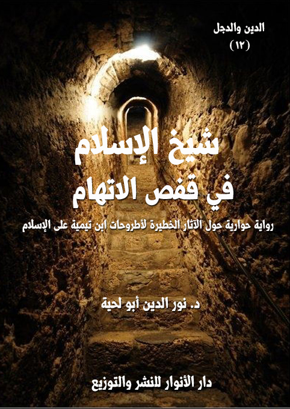

الكتاب: شيخ الإسلام في قفص الاتهام
المؤلف: أ.د. نور الدين أبو لحية
الناشر: دار الأنوار للنشر والتوزيع
الطبعة: الأولى، 1437 هـ
عدد الصفحات: 435.
ISBN: 978-620-2-34309-1
لمطالعة الكتاب من تطبيق مؤلفاتي المجاني وهو أحسن وأيسر: هنا

التعريف بالكتاب
تحاول هذه الرواية من خلال الأدلة والوثائق الكثيرة إثبات الجنايات التي جناها ابن تيمية على الإسلام الأصيل، سواء من ناحية تشويهه للعقائد في الله التي هي أصل أصول الدين، والتي حولها إلى عقائد تجسيم وتشبيه ووثينة.. أو من ناحية تشويهه للرسالة والرسل ومن يتعلق بهم من أولياء الله وأصفيائه.. أو من ناحية صراعه مع الأمة بل مع البشرية، ونشره للفتن بينها.
ذلك أن ابن تيمية ليس مجرد رجل عاش في القرن السابع الهجري، ثم مات بعدها مثله مثل سائر الناس.. بل هو رجل لا يزال يعيش بيننا، نراه في كل محل، ونسمع به في كل مكان، وتتحدث عنه كل القنوات، وتغرد به كل الألسنة.
شيخ الإسلام في قفص الاتهام (11)
لا يمكن للصادقين الذين يريدون أن يقفوا بحزم في مواجهة الدجل والدخن والتحريف الذي علق بهذا الدين، فحوله من دين سماحة إلى دين عنف، ومن دين رحمة إلى دين قسوة، ومن دين عقل إلى دين خرافة، ومن دين حضارة إلى دين تخلف؛ أن يقف صامتا أو حياديا أو سلبيا أمام شخصية محورية خطيرة كشخصية ابن تيمية.
فابن تيمية ليس مجرد رجل عاش في القرن السابع الهجري، ثم مات بعدها مثله مثل سائر الناس.. بل هو رجل لا يزال يعيش بيننا، نراه في كل محل، ونسمع به في كل مكان، وتتحدث عنه كل القنوات، وتغرد به كل الألسنة..
إننا نراه في كل كنيسة تحرق، أو مسجد يهدم، أو سوق تفجر، أو أعناق تقطع، أو أحرار يستعبدون.
ونسمعه في كل تلك القنوات التي حولت الدين إلى خرافة وشعوذة وبداوة.. وحولت عقول الملايين الذين يعلفون في مرعاها إلى بهائم لا عقول لها، وجمادات لا مشاعر لها، وإمعات لا هم لها إلا السير خلف راعي القطيع.. وراعي القطيع ليس سوى ابن تيمية وتلاميذ ابن تيمية.
وهكذا نلاحظه في مكتباتنا وجامعاتنا ومؤتمراتنا التي تسبح بحمده آناء الله وأطراف النهار.. فكلهم يخضعون له، ويسجدون بين يديه.. وويل ثم ويل لمن تسول له نفسه أن يفكر في الاعتراض عليه أو انتقاده أو الحط من قدره الذي لا يضاهيه أي قدر.
ولذلك فإن كلمة [شيخ الإسلام] التي صارت علما على ابن تيمية صادقة عليه صدقا مطلقا.. فالإسلام الذي نراه بعنفه وهمجيته وبداوته وتخلفه هو إسلام ابن تيمية، لا إسلام رسول الله صلى الله عليه وآله وسلم.. فابن تيمية هو شيخ هذا النوع من الإسلام، وهو منظره ورائده وله وحده الحق في الحديث عنه.
شيخ الإسلام في قفص الاتهام (12)
أما إسلام رسول الله صلى الله عليه وآله وسلم وإسلام أولئك الصادقين من أمته الذين أخذوا الدين من منابعه الأصيلة لا من منابعه المسمومة.. فهو إسلام مختلف تماما.. لأنه ينطلق من العقل لا من الخرافة، ومن القرآن لا من الهوى، ومن الصادقين من السابقين لا من اليهود وتلاميذ اليهود.
وبناء على هذا حاولت هذه الرواية أن تواجه هذا الإسلام التيمي المزيف بالإسلام المحمدي الأصيل.. وأن تعقد المحاكمة لأطروحات ابن تيمية من خلال ذلك الإسلام المقدس الذي مثله كبار أعلام الأمة، والذين وقفوا في وجه ابن تيمية في عصرهم، وفي كل العصور.
وقد حاولت عبر الأحداث المختلفة ـ التي لن أحكيها للقارئ حتى لا أفسد عليه متعة المتابعة للأحداث ـ أن أركز على ثلاث تهم كبرى وجهت لابن تيمية، وتوجه لكل من تأثر به، وهي:
التهمة الأولى: تهمة التجسيم والتشبيه، والتي اتفق كل من انتقد ابن تيمية من العلماء المعاصرين له أو غيرهم على رميه بها، وهي تتعلق بذلك التحريف الخطير الذي أجراه ابن تيمية على عقائد الإسلام التنزيهية، حيث عمد إلى ذلك التراث السلفي الحديثي الذي كاد يندثر في عصره، فأحياه، ونظر له، وطلاه بكثير من الزخارف.. وذلك التراث الذي تركه هو الذي أعاد له ابن عبد الوهاب الحياة.. ثم أعادت له السلفية الحديثة المزيد من الحياة.. فنسيت عقيدة التنزيه، وتحولت العقيدة الإسلامية في الله إلى عقيدة تجسيمية ممتلئة بالتشبيه والوثنية.
التهمة الثانية: تهمة النصب والعداوة، وهي تهمة تتعلق بموقف ابن تيمية من رسل الله وأوليائه وأصفيائه الذين أمرنا بمحبتهم وتعظيمهم وتقديم كل صنوف الولاء لهم.. لكن ابن تيمية حارب ذلك كله.. فهون من شأن الأنبياء وجوز عليهم المعاصي بأنواعها،
شيخ الإسلام في قفص الاتهام (13)
بل جوز عليهم الكفر نفسه.. ثم راح إلى تلك العلاقات التي جمعت بين الأمة ونبيها صلى الله عليه وآله وسلم ليقطعها، بل يحولها إلى بدعة وضلالة وشرك..
التهمة الثالثة: تهمة الصراع والفتنة، وهي التي لا نزال نعيش آثارها، وهي ما نشره ابن تيمية من قيم الصراع بين مذاهب الأمة ومدارسها وطوائفها وشعوبها وأديانها.. والتي أزالت عن الإسلام صورته السمحة الجميلة، وحولته إلى دين عنف وقتل ومصادرة للحريات.
وهذه التهم جميعا ترتبط بكل ما يرتبط بالدين من جميع جوانبه.. أما الأولى، فتتعلق بتشويه ابن تيمية للعقائد في الله التي هي أصل أصول الدين.. وأما الثانية فتتعلق بتشويهه للرسالة والرسل ومن يتعلق بهم من أولياء الله وأصفيائه.. وأما الثالثة، فتتعلق بصراعه مع الأمة بل مع البشرية، ونشره للفتن بينها..
وقد حاولنا في هذه الرواية أن نبرهن على ثبوت كل هذه التهم بالبينات والشواهد والأدلة والأمثلة المختلفة من خلال كتب ابن تيمية المعتمدة والمعروفة والتي يقر تلاميذه على نسبتها إليه.
وقد استفدنا أيضا من كل ذلك التراث العريض الذي ألفه من انتقد ابن تيمية من علماء المذاهب المختلفة، لذلك جعلنا المدعين على ابن تيمية في هذه الرواية هم أعلام تلك المذاهب الذين وقفوا في وجهه في حياته أو بعد مماته.
ولم نغفل ـ من باب الموضوعية والأمانة العلمية ـ أن نذكر المنتصرين لابن تيمية والمعظمين له، والذين نراهم في كل محل، ونسمع بهم عند كل حادث.
لذلك بدأنا الرواية بهم.. وبتعلقهم الشديد بابن تيمية وتعظيمهم له، وتعظيمهم لأنفسهم.. لغرضين:
الأول: لنبين تناقضهم في التعامل مع الشيعة والصوفية وغيرهما بحجة الغلو في
شيخ الإسلام في قفص الاتهام (14)
أئمتهم ومشايخهم بينما هم يغالون في بعضهم بعضا.
الثاني: لنبني على ذلك الثناء الانتقادات التي ترد عن ذكر حجج العلماء المدعين على ابن تيمية.
وقد جعلنا في الرواية محاكمة ابن تيمية محاكمة غيابية، لأننا لا يهمنا جسده ولا شخصه، وإنما تهمنا أفكاره الخطيرة التي لا نزال نتجرع آثارها.
شيخ الإسلام في قفص الاتهام (15)
في ذلك اليوم وصلتني دعوة من بعض الجمعيات الدينية في قريتي تطلب مني الحضور لندوة تنويرية يلقيها كبار أعلام الدعوة في هذا العصر الذين قدموا من نجد ومصر والعراق والهند وغيرها.. ليزيلوا عن قريتنا الأصنام التي صنعها الصوفية.. والبدع التي وضعها الفقهاء.
ولم يكن لي بد من الحضور مع أني لم أتعاف بعد من آثار سهام القحطاني ونونيتة، فقد خشيت أن تكون لدى هؤلاء الدعاة الجدد سهام أخرى يخترقون بها بصري أو قلبي.. لكني مع ذلك الرهاب الذي أصابني لم أملك إلا أن ألبي الدعوة خشية من أن أصنف في زمر المبتدعة، وأحرم من كثير من المنافع التي تصيبني جراء انتمائي للدين الذي فرضته تلك الجمعية علينا طوعا أو كرها.
في ذلك اليوم الذي حضر فيه موعد الندوة عملت كل وسائل التستر حتى لا يفطن لي صاحبي الوهابي التائب، فيطلب مني أن يصاحبني.. وأنا لا أملك أن أرد طلبه، كما لا أملك أن أتحكم في تصرفاته أثناء الندوة.. وحينها لن أخسر علاقتي مع الجمعية فقط، بل قد أخسر روحي أيضا.
لكني ما إن خطوت الخطوات الأولى خارج البيت، وأحمد الله على أن صاحبي لم يلتفت لي حتى وجدته قد سبقني، وهو يقول: هيا أسرع.. فالندوة يوشك أن تبدأ..
تعجبت منه، وكيف خرج، ومن أين علم.. لكني تظاهرت بأنه لا علم لي بشيء.. وقلت: أي ندوة تقصد؟ أنا ذاهب الآن إلى عملي.. عد إلى غرفتك.
قال: لا بأس.. ما دمت قررت عدم الذهاب، فسأذهب أنا بدلا عنك.. أعطني الدعوة التي سلمت لك.
شيخ الإسلام في قفص الاتهام (16)
قلت: أي دعوة؟ لا أفهم ما تقول.
قال: تلك التي في جيبك الأيسر.. أدخل يدك في جيبك، وستجدها.
أصابني العجب مما قال، وأدخلت يدي من حيث لا أشعر، وأخرجت الدعوة، وسلمتها له.. وأنا أقول: لقد أصابني العجب منك، فكيف علمت بكل هذا مع أني لم أخبرك؟
قال: ألم تسمع قوله صلى الله عليه وآله وسلم: (تقوا فراسة المؤمن، فإنه ينظر بنور الله عز وجل) (1)؟
قلت: بلى.. صدق رسول الله صلى الله عليه وآله وسلم.. لكني لم أكن أظن أبدا أنه بقي على وجه الأرض من يكون بهذه الصفة..
قال: تلك لوثة من لوثات السلفية التي أصابتك كما أصابت كثيرا من الناس.. إنها تقطع رحمة الله عن عباده، وتجعلها محصورة في أزمنة دون أزمنة، أو أمكنة دون أمكنة، أو أشخاص دون أشخاص مع أن رحمة الله وسعت كل شيء، ولا يضيق بها شيء.
قلت: صدقت في هذا.. ولكن هل ستذهب معي حقا إلى تلك الندوة؟.. إنك لاشك ستختلف مع أصحابها، ولعله تكون في جعبتهم من السهام ما قد يصيبنا.. أنت أدرى بما أصابنا من القحطاني ونونيته.
قال: اطمئن.. هؤلاء المحاضرون يحرصون على أن يظهروا بمظهر الاعتدال.. ولذلك لن يفعلوا شيئا.. وقد أحضروا كاميرات معهم.. وهم ينقلون الندوة بتفاصيلها على قناتهم الفضائية مباشرة.. ولهذا لن يفعلوا ما قد يطيح بسمعتهم، ويحرق أوراقهم عند جمهورهم.
__________
(1) قال الهيثمي في (المجمع) (10/ 268): (رواه الطبراني، وإسناده حسن)
شيخ الإسلام في قفص الاتهام (17)
دخلنا قاعة المحاضرات الكبرى حيث تعقد الندوة، وقد رأينا الجماهير العريضة من الناس من سكان قريتنا وغيرها من القرى المجاورة.. فقد ساهم الكل في الدعاية لها من سلطات دينية وسياسية واقتصادية وغيرها.. فالكل كان طامعا في أفضال تلك الجمعية وكرمها.. والكل كذلك كان له من الرهاب من سخط الجمعية وغضبها ما كنت أعاني منه.
ما هي إلا لحظات حتى تقدم رئيس الجمعية إلى المنصة، وهو يقول: معاشر الحضور الكرام.. لقد شرفنا اليوم دعاة من السلف الصالح.. من أهل التوحيد الذي لا يخالطه شرك.. والسنة التي لا تخالطها بدعة.. والعقيدة الصحيحة التي لا تخالطها أوهام المبتدعة من المغضوب عليهم والضالين.
لقد جاءوا إليكم من أقصى الأرض ليخرجوا تلك الأصنام التي في قلوبكم أمدا بعيدا..
جاءوا ليحطموا بمعاول التوحيد والسنة الأصنام التي تسمونها أولياء أو صالحين.. بينما هم في الحقيقة ليسوا سوى أدعياء ومضللين.
جاءوا ليحطموا بمعاول التوحيد والسنة الأصنام التي تسمونها علماء.. بينما هم في الحقيقة ليسوا سوى جهلة ضالين مضلين كافرين رويبضات زج بهم إبليس ليحرف دين الله.
لقد جاء هؤلاء الدعاة يسيرون على أقدام رسل الله عليهم الصلاة والسلام.. لينقذوكم من جهنم التي تنتظركم إن بقي في قلوبكم أولئك العلماء أو الأولياء أو الصالحين.. أو غيرهم من الأصنام التي تعبدونها من دون الله.
لن أطيل عليكم.. سأترك لهم الحديث.. فاسمعوا وعوا.. والويل ثم الويل ثم الويل لمن تحرك حركة تفسد عليهم ما جاءوا من أجله.. فنحن قوم أعزنا الله بالإسلام والسنة والسلف.. ولن نخضع أو نذل لأي نجس يريد أن يفسد علينا ديننا..
شيخ الإسلام في قفص الاتهام (18)
أصابني الرعب من تهديده، كما أصاب جميع من كانوا بجنبي ما عدا صاحبي الوهابي التائب الذي قهقه بصوت عال، حتى خفت عليه، ورحت أضع يدي على فمه، لأغلقه، خشية أن يلتفت لنا البربهاري أو ابن بطة أو بعض الحازميين أو الحوينيين أو المدخليين.. وما أكثرهم، فقد كان ظاهرهم وباطنهم كافيا لزرع الرعب في أشجع الشجعان وأعظم الأبطال.
وقد تعجبت من صاحبي الوهابي الذي لم يكن يبالي بما يرى أو بما يسمع، فهمست له في أذنه: ألم يصبك الرعب مما ترى وتسمع؟
فقال، وهو يبتسم: لقد كنت أخاف مثلك.. لكني بمجرد أن تحررت منهم صاروا أهون في عيني من بيت العنكبوب.. فلا تخف ولا تفزع.
بعد أن جلس رئيس الجمعية تقدم المسؤول عن التعريف بالمحاضرين إلى المنصة، وقال: سيتقدم الآن علم من أعلام السلف الصالح.. مؤلف الكتاب المشهور (على ساحل ابن تيمية) الذي بين فيه مكانة شيخ الإسلام ابن تيمية من خلال علمه ومكانته بين العلماء.. وأثبت بالأدلة القاطعة أن شيخ الإسلام هو المربى والمفسر والمحدث والفقيه والمناظر والمجاهد والعابد، وأن مثله كمثل بحر لجى لكنه عذب، محيط هادر لكنه فرات، وهل يستطيع المرء - ولو أجاد السباحة - أن يغوص فى أعماق البحر، أو أن يهبط إلى قعر المحيط؟ كلا لا يستطيع، ولكنه يستطيع أن يطل إطلالة (1)..
تقدم القرني من المنصة، وبعد الخطبة الطويلة التي تعودوا تقديمها، بدأ محاضرته
__________
(1) النص مقتبس من مقدمة كتاب (على ساحل ابن تيمية) لعائض القرني ببعض التصرف الذي يقتضيه المقام، وهكذا بعض النصوص التي نوردها في هذا المقام حتى لا يقال بأننا نقولهم ما لم يقولوا.
شيخ الإسلام في قفص الاتهام (19)
بقول (1): ابن تيمية.. وما أدراك ما ابن تيمية؟ يكفي أن تعرفه بهذا الاسم؛ فإذا قلت ابن تيمية فكفى، ولا تزد على ذلك أوصافاً، أهل المعرفة وأهل العلم يعرفون من هو ابن تيمية من خلال آثارة وكتبه ورسائله وجهوده وثناء الناس عليه، وإنني أعلن – بالمناسبة – حبي لهذا الإمام العظيم؛ أحببته لصدقه وإخلاصه، لإيمانه وجهاده، أحببته لعلمه ويقينه، أحببته لعمقه ورسوخه:
أحبك لا تفسير عندي لصبوتي... أفسر ماذا؟ والهوى لا يفسر
منذ ثلاثين سنة وأنا أعيش مع هذا الإمام العظيم، من خلال تراثه المبارك الذي سرى في الأمة حتى قال بعضهم: ترجمت بعض دوائر المعارف للدولة العباسية بخمس وعشرين صفحة ولابن تيمية بأربعين صفحة.. فانظر إلى دولة عاشت ما يقارب الستمائة سنة، وحكمها سبع وثلاثون خليفة، ومع ذلك لم تحظ إلا بخمس وعشرين صفحة، وقارن بها هذا الفرد العلم الذي لم يتول أي منصب؛ لا وزارة، ولا إمارة، ولم يجمع تجارة، ومع ذلك ترحم له بأربعين صفحة.
أقول لكم أيها الجمهور الكرام.. يا تلاميذ شيخ الإسلام.. لتفخروا بشيخ هذا صفته.. إنني – مع كثرة مطالعاتتي وأبحاثي في تراث الملل والنحل- لا أعلم عالماً حظي بالتراجم والكتابة والاهتمام والانشغال بمثل ما حظي به، حتى إنه ليصدق عليه بيت المتنبي:
وتركك في الدنيا دوياً كأنما تداول سمع المرء أنمله العشر
حتى إن بعض الباحثين ذكر أنه قد ألف في ابن تيمية أكثر من ثلاثة الآف كتاب ما بين رسالة وكتاب وبحث ورسالة دكتوراه وماجستير وبحوث جامعية.
فيا لهذه العظمة! ويا لفتح الله على العبد إذا فتح سبحانه وتعالى..!
كبر جميع الحضور.. وقد شجعه ذلك.. فراح يطنب في أوصافه، ويقرأ بين الحين
__________
(1) النص مقتبس من كتاب (على ساحل ابن تيمية) بتصرف.
شيخ الإسلام في قفص الاتهام (20)
والحين أبياتا من الشعر أو دررا من النثر جعلت أكثر الحضور يصاب بسكر لا إفاقة منها.. وكانوا كلما زادوا في تكبيرهم زاد تعاظما وانتفاخا.. إلى أن انتهت المحاضرة، وقد كاد الجميع يسجدون لابن تيمية، ولمن يتاجر بابن تيمية.
بعد أن انتهي من محاضرته، قام بعض الحاضرين، وقال: شكرا جزيلا سيدنا الفاضل.. فقد أرشدتنا إلى علم يغنينا عن كل علم..
وقام آخر، يشكره ببعض الأبيات من الشعر.
وقام آخر، وسأله عن سر تسميه كتابه بهذا الاسم (على ساحل ابن تيمية)، فقال القرني بوجد أو تواجد: لقد ظللت طول عمري أسبح في بحر شيخ الإسلام ابن تيمية الذي مسح عني كل الركام الذي تراكم على عقلي وقلبي من اللوثات الجاهلية والشركية والقبورية والصوفية والحلولية والرافضية والمجوسية والتعطيلية والتفويضية وغيرها..
أيها الحضور الكريم.. لقد غسلني ابن تيمية من كل الصبغات الجاهلية.. وحولني إلى مسلم سني سلفي أثري..
لقد وضعني بهدوء كما يوضع الطفل الصغير في سرير الفرقة التي وعدها الله بالنجاة والنصرة والفوز في الدنيا والآخرة.
ولهذا ترونني في قمة السعادة.. فبصحبة ابن تيمية ننال خير الدنيا والآخرة.. فأنا بفضل الله زرت كل بلاد العالم مبشرا وداعية.. ونلت من بركات ذلك من حظوظ الدنيا ما لم ينله أهل الأهواء من المبتدعة والضالين والقبوريين والخرافيين.. ويمكنكم أن تزوروا اليوتيوب لتشاهدوا بعض قصوري التي رزقنيها الله بفضل نصرتي لشيخ الإسلام.. وأنا لا تهمني تلك القصور جميعا، لأن قلبي وعقلي مع القصور التي تنتظرني في الآخرة في صحبة شيخ الإسلام.
قال ذلك.. ثم التفت يمنة ويسرة يطالع وجوه الحاضرين، ثم قال: اعلموا أيها
شيخ الإسلام في قفص الاتهام (21)
الحضور الكريم أنني في جميع رحلاتي لا أتحدث إلا عن شيخ الإسلام.. ذلك أني رأيت أن التبشير به وحده كاف ليصبغ الأمة جميعا بالصابغ السني السلفي الأثري.. فمن أحب ابن تيمية وتمسك بهديه عصم من كل ضلالة.. ومن انحرف عن ابن تيمية انحرف عن كل هداية.
صاح بعض الحضور: وأين رسول الله صلى الله عليه وآله وسلم.. أليس هو عصمتنا من الضلالة؟
أمسك الشيخ أعصابه، ثم ابتسم ابتسامة صفراء، وقال: بلى.. رسول الله صلى الله عليه وآله وسلم هو عصمتنا من الضلالة.. ولكن يا قوم أنتم ترون الكل يزعم أنه ينهل من هدي رسول الله صلى الله عليه وآله وسلم.. ترون الصوفية والرافضة وغيرهم كلهم يدعون محبة رسول الله صلى الله عليه وآله وسلم واتباع هديه..
ولو أنني سرت في البلاد أبشر بما ذكرت لاختلط الأمر على الناس.. فلذلك رأيت أن المنهج السليم هو أن أعرف الناس بابن تيمية وتراثه العظيم.. لأنهم إن عرفوه عرفوا رسول الله صلى الله عليه وآله وسلم الحقيقي، لا الرسول المزيف الذي يعبده الصوفية والرافضة والقبورية وكل أصناف المبتدعة.
بعد أن أنهى القرني محاضرته، وأجاب عن أسئلة الحضور، تقدم رئيس الجمعية، وقال: سيتقدم الآن علم كبير من أعلام السلف الصالح.. إنه الحبر البحر الإمام المُحدّث.. مؤسس شُعب الأنصار للسنة.. والدفاع عنها ونشرها.. وقمع البدعة.. شيخ بلادِ الكنانة.. العلم الذي إذا زار الحرم المكي تفرغ له الكراسي.. ويتزاحم الطلاب على كرسيه.. إنه العلامة حامد الفقي المصري الذي انتقل بفضل شيخ الإسلام من الأشعرية والتصوف إلى العقيدة السنية.
لقد كان للشيخ دور كبير في نصرة الدعوة.. ونبذ البدع.. والأمر باتباع النبي صلى الله عليه وآله وسلم وفق نظرة السلف.. وقد أطنب في الرد على أهل الكفر والزندقة.. وأهل البدع والأهواء.. وكان
شيخ الإسلام في قفص الاتهام (22)
شديداً في فضح الصوفية المتسترة بستارِ الإسلام.. مبيناً انحرافاتها.. كاشفاً خفاياها.. فاضحاً تقيتها.. وله نشاطٌ خاص في نُصرة السنة المحمدية.. حتى أسس جماعة لهذا الغرض أسمها (جماعة أنصار السنة المحمدية)
وقد أشهر الشيخ حسامه – فوق ذلك - لبيان الحق.. وفضح الأكاذيب عن دعوة الشيخ محمد بن عبدالوهاب أو ما يطلقون عليها المناوئون بـ (الدعوة الوهابية).. وكان الأحرى أن يسموها باسم موسسها فتسمى باسمه المحمدية..
لقد ألف كتاباً سماه (أثر الدعوة الوهابية في الإصلاح الديني والعمراني في جزيرة العرب وغيرها)، قال في مقدمته: (الوهابية نسبة إلى الإمام المصلح شيخ الإسلام محمد بن عبدالوهاب مجدد القرن الثاني عشر، وهي نسبة على غير القياس العربي والصحيح أن يقال المحمدية، لأن اسم صاحب هذه الدعوة والقائم بها هو محمد، لا عبدالوهاب)
لقد قال عنه بحق العلامة الكبير عبد الرحمن الوكيل: (لقد ظل إمام التوحيد الشيخ محمد حامد الفقي أكثر من أربعين عامًا مجاهدًا في سبيل الله، ظل يجالد قوى الشر الباغية في صبر، مارس الغلب على الخطوب واعتاد النصر على الأحداث، بإرادة تزلزل الدنيا حولها، وترجف الأرض من تحتها، فلا تميل عن قصد، ولا تجبن عن غاية، لم يكن يعرف في دعوته هذه الخوف من الناس، أو يلوذ به، إذ كان الخوف من الله آخذًا بمجامع قلبه، كان يسمي كل شيء باسمه الذي هو له، فلا يُداهن في القول ولا يداجي ولا يبالي ولا يعرف المجاملة أبدًا في الحق أو الجهر به، إذ كان يسمي المجاملة نفاقًا ومداهنة، ويسمي السكوت عن قول الحق ذلا وجبنا)
اسمحوا لي أيها الحضور الكريم لإطالتي في الثناء على شيخنا، فهو يستحق أكثر من ذلك.. ولولا ضيق الوقت لذكرت لكم من مآثره ما يجعلكم تدركون عظمة من ستتشنف آذاننكم بسماعه.
شيخ الإسلام في قفص الاتهام (23)
تقدم الفقي، ورمى ببعض التراب على رأس المقدم، وهو يقول: اسمح لي يا صديقي أن أطبق السنة في هذا الموضع.. فمع أن كل ما ذكرته صحيح.. إلا أنه من السنة أن ألقي عليك بعض التراب.. ويمكنك مسحه بسهولة.. وإياك أن تتبرك به معتقدا أنه تراب سني.. فتصبح مشركا بذلك.
كبر البربهاري وابن بطة وغيرهما من الحضور تعجبا من التزام الفقي الشديد بالسنة وخوفه من الشرك.
بعد مقدمته الطويلة، بدأ بقوله: ماذا عساي أن أضيف إلى ما ذكره أخي وصديقي وتلميذي عائض القرني.. لقد أجاد وأفاد.. ولكن مع ذلك فإن بحر ابن تيمية لا ساحل له.. ولهذا سأكتفي بتحديثكم عن خصلة من خصاله الكثيرة التي من الله بها عليه، أو هيأه بها ليؤدي دوره العظيم في حفظ الدين.
تلك الخصلة هي ذاكرته العجيبة القوية.. والتي شهد له بها كل من عرفه، لقد قال جمال الدين السرمري في أماليه: (ومن عجائب زماننا في الحفظ: ابن تيمية، كان يمرّ بالكتاب مرة مطالعة، فينقش في ذهنه، وينقله من مصنفاته بلفظه ومعناه. وحكى بعضهم عنه أنه قال: من سألني مستفيداً حققت له، ومن سألني متعنتاً ناقضته، فلا يلبث أن ينقطع فأُكفى مؤنته) (1)
وذكر الحافظ محمد بن أحمد بن عبدالهادي في (العقود الدرية من مناقب شيخ الإسلام ابن تيمية) بعض عجائب ذاكرته، فقال: انبهر أهل دمشق من فرط ذكائه، وسيلان ذهنه، وقوة حافظته، وسرعة إدراكه.. واتفق أن بعض مشايخ العلماء بحلب قدم إلى دمشق، وقال: سمعت في البلاد بصبي يقال له: أحمد بن تيمية، وأنه سريع الحفظ، وقد جئت قاصداً، لعلي أراه، فقال له خياط: هذه طريق كتّابه، وهو إلى الآن ما جاء. فاقعد عندنا،
__________
(1) البدر الطالع 1/ 70.
شيخ الإسلام في قفص الاتهام (24)
الساعة يجيء يعبر علينا ذاهباً إلى الكتّاب.. فجلس الشيخ الحلبي قليلاً، فمر صبيان، فقال الخياط: هذاك الصبي الذي معه اللوح الكبير: هو أحمد بن تيمية. فناداه الشيخ. فجاء إليه.. فتناول الشيخ اللوح منه، فنظر فيه ثم قال له: امسح يا ولدي هذا، حتى أملي عليك شيئاً تكتبه، ففعل، فأملى عليه من متون الأحاديث أحد عشر، أو ثلاثة عشر حديثاً، وقال له: اقرأ هذا، فلم يزد على أن تأمله مرة بعد كتابته إياه. ثم دفعه إليه، وقال: اسمعه عليّ، فقرأه عليه عرضا كأحسن ما أنت سامع. فقال له: يا ولدي، امسح هذا، ففعل. فأملى عليه عدة أسانيد انتخبها، ثم قال: اقرأ هذا، فنظر فيه، كما فعل أول مرة. ثم أسمعه إياه كالأول. فقام الشيخ وهو يقول: إن عاش الصبي ليكونن له شأن عظيم. فإن هذا لم يُرَ مثله.
أرأيتم كيف صار ابن تيمية مضرب المثل عند أصدقائه وأعدائه (1)، واعترف الكل له بأنه أحفظ من رأوا، وعدوه من الأئمة الكبار في الحفظ، وليس حفظاً فقط بل حفظاً بفهم، فكان يسابق حفظه نظره، وكان يعطى الكتاب في صغره فيقرؤه مرة فينتفش في ذهنه، وذكر عن نفسه أنه يقرأ المجلد – بحمد الله – فيرسخ في ذهنه، وبذلك حفظ كتاب الله عز وجل، وحفظ السنة المطهرة، وحفظ أقوال أهل العلم، وحفظ الآثار، وحفظ التفاسير، وحفظ شواهد اللغة، فكان إذا تكلم أغلق عينيه فسالت قريحته بنهر يتدفق من العلم النافع المبارك حتى قال فيه بعض الشعراء:
وقاد ذهن إذا سالت قريحته... يكاد يخشى عليه من تلهبه!
وقد نفع الله بهذا الحفظ؛ فقد تركت ذاكرته القوية المباركة للأمة ميراثاً مباركاً من الكتب النافعة، وكان يملي عليه أحياناً بعض المجلدات من حفظه في السفر وفي الحبس حيث لا توجد مكتبة لدية فيأتي بالعجب العجاب، وينقل بعض كلام الأئمة بنصه وفصه ثم يعلق عليه، وربما استدرك، وينقل الأحاديث من حفظه وينسبها لأصحابها، أما القرآن
__________
(1) النص التالي من الكتاب السابق بتصرف.
شيخ الإسلام في قفص الاتهام (25)
فقد سال على طرف لسانه يأخذ ما شاء ويترك ما شاء، فقد حفظه من الصغر حتى أصبح كتاب الله عز وجل عنده كسورة الفاتحة، مع فهم ثاقب لما يحفظ، فليس ناقلاً فحسب كما هو شأن كثير من الناس يحفظ المعلومة ثم لا يتصرف فيها، بل كان يحفظها ويعيها وينزلها ويقدرها حق قدرها، ويوظفها في المكان المناسب، ويخرج مها ما شاء الله من الكنوز والعبر والعجائب، فيأتي بما يشده الألباب ويذهل العقول من الفوائد والدرر والنكات العلمية.
بقي المحاضر يعدد الغرائب من ذاكرة ابن تيمية حتى توهمنا أنه محيط بكل ما كتبته البشريه.. وأنه لا يعزب عنه منها شيء.
بعد انتهائه من محاضرته سأله بعض الحضور: هل كان ابن تيمية يحفظ علم الرجال والطبقات.. ففيه الأسماء الكثيرة مع تفاصيلها التي لا يمكن لعقل أن يستوعبها؟
أجاب الفقي بسرعة وبديهة: أجل.. فلشيخ الإسلام خبرة تامة بالرجال، وجرحهم وتعديلهم، وطبقاتهم، ومعرفة بفنون الحديث، وبالعالي والنازل، والصحيح والسقيم، مع حفظه لمتونه، الذي انفرد به، فلا يبلغ أحد في العصر رتبته، ولا يقاربه، وهو عجيب في استحضاره، واستخراج الحجج منه، وإليه المنتهى في عزوه إلى الكتب الستة، والمسند، بحيث يصدق عليه أن يقال: كل حديث لا يعرفه ابن تيمية فليس بحديث.
قام آخر، وقال: وهل كان ابن تيمية يحفظ كتب التفسير؟
أجاب الفقي بسرعة وبديهة: وأما التفسير فمسلم إليه. وله من استحضار الآيات من القرآن -وقت إقامة الدليل بها على المسألة- قوة عجيبة. وإذا رآه المقرئ تحير فيه. ولفرط إمامته في التفسير، وعظم اطلاعه. يبين خطأ كثير من أقوال المفسرين. ويوهي أقوالاً عديدة. وينصر قولاً واحداً، موافقاً لما دل عليه القرآن والحديث. ويكتب في اليوم والليلة من التفسير، أو من الفقه، أو من الأصلين، أو من الرد على الفلاسفة والأوائل: نحواً من أربعة كراريس أو أزيد.
شيخ الإسلام في قفص الاتهام (26)
قام آخر، وقال: وهل كان ابن تيمية يحفظ كتب الملل والنحل؟
أجاب الفقي بسرعة وبديهة: أما حفظ شيخ الإسلام لكتب الملل والنحل.. فحدث ولا حرج.. فقد كان يحفظ التوراة والإنجيل والزبور.. ويحفظ الويدا والهابهارتا، والكيتا، والبوجاواسستها، والرامايانا، وغيرها.. وهي أعظم الكتب المقدسة لدى الهندوس.
ولهذا ترونه في كتبه ورسائله يذكر إجماع الطوائف في أي مسألة تطرح عليه.. ولولا حفظه لكتبها لما تجرأ على ذلك.. فهو الأمين الورع التقي الذي لا يستحل أن يتكلم في علم لا يحفظه.
سأله آخر: وهل كان يحفظ كتب الفلاسفة والمناطقة؟
قهقه الفقي قهقة طويلة، ثم قال: عجبا لك.. كيف تسألني عن ذلك بعد الذي ذكرت لكم.. أجل.. وكيف لا يحفظها.. لقد كان يحفظ كتب أبو قراط وسقراط وأرسطوطاليس وأفلاطون وأبيقور.. وغيرهم.. بل يحفظ كتب ألبير كامو، وبيرتراند راسل، وجان بول سارتر، وسيمون دي بوفوار وغيرهم.. ولهذا تراه في كتبه يذكر الفلاسفة وأقوالهم وينكر عليهم، ولولا حفظه القوي لما استطاع ذلك.. فهو الأمين الورع التقي الذي لا يستحل أن يتكلم في علم لا يحفظه.
وهكذا سأله غير واحد عن كل علم من العلوم، وكان الفقي يجيبهم عن الكتب التي حفظها ابن تيمية فيه.. إلى أن خشينا أن يسأله بعض الثقلاء عن حفظ ابن تيمية للوح المحفوظ، فيذكر لنا أنه كان يحفظه عن ظهر قلب، وأنه كان يأخذ منه ما شاء، ويدع ما شاء.
بعد أن أنهى الفقي محاضرته، وأجاب عن أسئلة الحضور، تقدم المقدم، وقد مسح التراب عنه، ثم قال: سيتقدم الآن علم من أعلام السلف الصالح الذي حارب التصوف طول حياته.. والذي يعتبر أول من قال من علماء جماعة (أنصار السنة المحمدية) بأن
شيخ الإسلام في قفص الاتهام (27)
(التصوف كله شر). وكان له أثر كبير في ظهور الكتابة العلمية عن التصوف في مجلة الهدي النبوي، التي ظل يكتب بها قرابة ربع قرن محاربا للصوفية القبورية المشركة..
لقد قال فيه الشيخ سيد رزق الطويل: (لقد كان في أخلاقه نسيج وحدة سمو في الخلق وعفة في اللسان، طلق المحيَّا منبسط الأسارير واسع الثقافة متنوع المعرفة أديبًا، شاعرًا جزل الشعر قوي العبارة)
وقال عنه الشيخ محمد صادق عرنوس: (إن أخانا الأستاذ النابغة عبدالرحمن الوكيل المعروف بين قراء الهدي النبوي بهادم الطواغيت قد أصبح أخصائيًا في تشريح التصوف والإحاطة بوظائف أعضائه، والأستاذ الوكيل يتعلم وينبغ ليُمرِّض ويشفي)
بعد أن انتهى من تقديمه صعد الوكيل إلى المنصة، وقد حاول المقدم أن يبتعد عنه خشية أن يضع عليه بعض التراب.
بعد مقدمة طويلة كمن سبقه من المحاضرين راح يقول: لقد حدثكم أخي العلامة حامد الفقي على حفظه بما بهرنا جميعا.. أنا سأحدثكم عن ملكة لا تقل عن الحفظ.. بل قد تفوقه.. وقد خص الله بها شيخنا شيخ الإسلام دون غيره من العلماء حتى يؤدي الرسالة التي كلف بها.. إنها ألمعيته.. فقد كان لشيخ الإسلام القدح المعلى منها (1).. فإذا كانت الألمعية هي سرعة الخاطر وجودة الذهن، فإن ابن تيمية الأول في هذا الباب عن أهل العلم؛ فقد كان يفهم المسألة بقوٍة وجدارة، وكان يعي ما يقرأ.. وكان ينتزع الفائدة ويستنبط من النص استنباطاً عجيباً.. وكان إذا حاور يفهم كلام محاوره ويرد عليه في سرعة البرق، وكان إذا كتب يسبق خاطره قلمه.. ومن ألمعيته أنه كان يدرك الشبهة في أسرع وقت، ويرد عليها ويزيف الزائف من الكلام، ويثبت الحق، ويميز بين المتشابهات، ويفرق بين المختلفات، وكان يوهم بعض الأئمة في بعض الأبواب من تخصصاتهم، فأحياناً ينقد بعض المحدثين
__________
(1) النص التالي من الكتاب السابق بتصرف.
شيخ الإسلام في قفص الاتهام (28)
والمؤرخين، وبعض الفلاسفة وأهل المنطق، وعلماء الكلام، ويرد عليهم في تخصصاتهم فإذا هو أفهم منهم بفنهم وبتخصصهم.. ومن ألمعيته أنه إذا دخل في علم قلت لا يجيد إلا هذا العلم، ولا يحسن إلا هذا الباب، فيأتي بالعجب للعجاب ويسهل له هذا المسلك الذي سلكه فيكون فرداً في بابه، ويكون وحيد عصره فيما نهجه وفيما أتخذه؛ فألمعيته محل الشهود ومحل الاعتبار من الجميع حتى صار فرداً ووحيداً في هذا الباب.
بعد أن أطنب في عجائب ألمعية ابن تيمية وقدراته الكبيرة كبر الجميع، ثم بدأ يسألونه عن غرائب ألمعية شيخه فأجابهم إلى أن كادوا يسجدون لها.
بعد أن أنهى الوكيل محاضرته، وأجاب عن أسئلة الحضور، تقدم المقدم، ثم قال: سيتقدم الآن العالم الجليل، والسلفي النبيل عبد الرزاق بن عفيفي بن عطية النوبي.. صاحب البسطة في العلم والجسم.. وصاحب الجمال في المظهر والمخبر.. إنه كما سترونه (1) قوي البنية جسيم مهيب طويل القامة عظيم الهامة مستدير الوجه قمحي اللون له عينان سوداوان يعلوهما حاجبان غزيران ومن دون ذلك فم واسع ولحية كثة غلب البياض فيها علي السواد.. عريض الصدر، بعيد ما بين المنكبين، ضخم الكفين والقدمين ينم مظهره عن القوة في غير شدة.. وهو مع ذلك حسن الهيئة، جميل المظهر في غير تكلف، له سمت خاص في لباسه، يرتدي ثوبا فضفاضا أشبه ما يكون بلباس أهل مصر، إلا أنه محاك على السنة.. فهو سلفى المظهر والشارة.
وهو فوق هذا المظهر صاحب بصيرة نافذة وفراسة حادة يعرف ذلك عنه من خالطه وأخذ العلم على يديه ومما يدلل ويؤكد على فراسة الشيخ أنه كان يتأمل وجوه تلاميذه ويتفرس فيهم فيعرف المجد من الخامل والنابه من الجاهل فيخص هؤلاء بعلم قد لا يخص
__________
(1) هذه الأوصاف منقولة من ترجمة له.
شيخ الإسلام في قفص الاتهام (29)
به أولئك.
قال ذلك، ثم تقدم العفيفي بقامته وهامته فكبر الجميع لرؤيتهم لطلعته البهية، وبعد مقدمة طويلة، قال: لقد حدثكم المحاضران السابقان عن ذاكرة شيخ الإسلام وألمعيته بما ملأنا بالعجب، وأما أنا فسأحدثكم عن أمر لا يقل عن ذلك.. إنه سعة علمه (1).. فمن العلماء من برع لكن في فن واحد، فمنهم المحدث الجهبذ في حديثه، ومنهم العلامة في فقهه، ومنهم الفرد في تاريخه، ومنهم الأوحد في أدبه، ولكن ابن تيمية كان بحراً لا تكدره الدلاء:
فهو المنظر لأهل السنة في باب المعتقد، وهو المحدث الناقل البصير الجهبذ في علم الحديث رواية ودراية، وفي علم الرجال، حتى شهد له المزي – وكفى به شاهداً – في هذا الباب، وشهد له الذهبي وهو فرد زمانه في هذا التخصص، فكان يجرح ويعدل ويميز بين الروايات ويعرف هذا الفن معرفة تامة دقيقة، وقد استولى على جميع أبوابه وعلى جميع فصوله وفنونه.
وهو في استنباط النص آية من آيات الله عز وجل، فكان يورد الآية والحديث ثم يورد كلام أهل العلم ممن سبقه، ثم يأتي بكلام زائد على كلامهم، وربما انتقد كلامهم أو وافقه أو عارضة أو سكت.
وكان أعجوبة في التفسير، يقرأ – كما ذكر عن نفسه – أكثر من مائة تفسير في الآية، ثم يدعو الله ويتضرع إليه فيفتح عليه سبحانه وتعالى علماً في الآية لم يكن مكتوباً من ذي قبل، وربما أملى في الآية الواحدة كراريس، ونقلوا عنه أنه بقي سنوات طويلة في شرح: {إِنَّا أَرْسَلْنَا نُوحًا إِلَى قَوْمِهِ} [نوح: 1]، وكان يأتي بالآية الواحدة ربما يذكرها بعد صلاة العصر في مجلسه فيغلق عينيه، ثم يذكر الأقوال والترجيحات والاختلافات والنقولات وما قيل فيها، معترضاً وموجهاً ومصححاً ومقرراً حتى صلاة المغرب.
__________
(1) النص التالي من الكتاب السابق (على ساحل ابن تيمية بتصرف) بتصرف.
شيخ الإسلام في قفص الاتهام (30)
كما قرأ الفلسفة ورد على الفلاسفة وزيف كثيراً من اقوالهم وردها إلى الوحي، ورد على المناطقة وتغلب عليهم بالحجة وعلا عليهم بالبرهان، ورد على علماء الطوائف من رافضة ومعتزله وجهمية وأشاعرة وصوفية ودهرية ويهود ونصارى كل ذلك وهو معتصم بالدليل، سائر مع النص، متحاكم إلى الوحي.
وهكذا بقي العفيفي مدة من الزمن يحكي لنا من سعة علم ابن تيمية وإحاطته بكل شيء إلى أن احتقرنا علم كل علماء الدنيا أمام علمه.
ثم سئل أسئلة كثيرة في أصول العلم وفروعها وعلاقة ابن تيمية بها، فأجاب عنها جميعا، واعتبرها مجرد نقاط في بحر علمه الذي لا ساحل له.
بعد أن أنهى العفيفي محاضرته، وأجاب عن أسئلة الحضور، تقدم المقدم، ثم قال (1): سيتقدم الآن عالم باكستاني من أولئك العلماء الذين حملوا لواء الحرب على أصحاب الفرق الضالة، وبينوا بالتحقيق والبحث الأصيل مدى ماهم فيه من انحراف عن سبيل الله وحياد عن سنة نبيه، وإن ادعوا الإسلام وملأوا مابين الخافقين نفاقاً وتقية.. إنه العلامة إحسان إلهي ظهير.
ذلك المجاهد المخلص الذي سعى وراء كل الفرق يرد على ضلالاتها.. ويجابهها في كل مكان وكل منتدى شأنه شأن كل مؤمن حقيقي الإيمان يعتقد في قرارة نفسه أن أدياناً تبنى على الكذب وتتستر خلف الترهات والأباطيل لجديرة بألا تصمد أمام النقاش وأن تتضعضع أمام سواطع الحق ونور الحقيقة.
ولهذا الأمر طفق يلقي المحاضرات، ويعقد المناقشات والمناظرات مع أصحاب الملل
__________
(1) ما نذكره من الثناء عليه هنا منقول بتصرف من مقال بعنوان: (نبذة مختصرة عن السيرة الذاتية للشيخ إحسان إلهي ظهير) لخالد بن سليمان الجبرين.
شيخ الإسلام في قفص الاتهام (31)
الضالة، ويصنف الكتب المعتمدة على مبدأ الموضوعية في النقل والمناقشة والتحقيق. وكثيراً ما كان يرد على المبطلين بأقوالهم.. ويسعى إلى كشف مقاصدهم والإبانة عن انحرافهم وضلالهم وفي كل ذلك كان يخرج من المعركة منتصراً يعضده الحق، وينصره الله تعالى.
لقد قال عنه الشيخ محمد لقمان السلفي في مجلة الدعوة (لقد عرفت هذا المجاهد الذي أوقف حياته بل باع نفسه في سبيل الله أكثر من خمس وعشرين سنة عندما جمعتني به رحمه الله مقاعد الدراسة في الجامعة الإسلامية، جلست معه جنباً إلى جنب لمدة أربع سنوات فعرفته طالباً ذكياً يفوق أقرانه في الدراسة، والبحث، والمناظرة! وجدته يحفظ آلاف الأحاديث النبوية عن ظهر قلب كان يخرج من الفصل.. ويتبع مفتي الديار الشامية الشيخ ناصر الدين الألباني ويجلس أمامه في فناء الجامعة على الحصى يسأله في الحديث ومصطلحه ورجاله ويتناقش معه، والشيخ رحب الصدر يسمع منه، ويجيب على أسئلته وكأنه لمح في عينيه ما سيكون عليه هذا الشاب النبيه من الشأن العظيم في سبيل الدعوة إلى الله والجهاد في سبيله بالقلم واللسان)
قال ذلك، ثم تقدم إحسان إلهي ظهير إلى المنصة، فكبر الجميع وخاصة البربهاري وابن بطة لرؤيته، وبعد مقدمة طويلة، قال: لقد حدثكم المحاضرون السابقون عن ذاكرة شيخ الإسلام وألمعيته وسعة علمه.. وأنا سأحدثكم بما أرى أني تلميذ عليه فيه.. إنه الهمة العلية (1).
فلم أر ولم أسمع طول حياتي عالماً بلغت به همته مثل ما بلغت همة ابن تيمية به، فقد اتعبته ولكنها أوصلته إلى مراقي الحمد، ومصاف الكرامة، وغاية المجد، وذروة الشرف، وسنام القبول في الأرض.
همته حركته إلى طلب العلم النافع فلم يرض بعلم دون علم، ولم يقنع بتخصص
__________
(1) النص التالي من الكتاب السابق (على ساحل ابن تيمية بتصرف) بتصرف.
شيخ الإسلام في قفص الاتهام (32)
دون تخصص، ولم يشبع من فن دون فن، بل رسخ في الجميع، ومهر في الكل، واستحوذ على قصب السبق في المعرفة.
تتجلى همته في العبادة، فقد كان خاشعاً منيباً مخيبتا متسنناً، كثير الأوراد صلاة وصياماً وذكراً ودعاء وقيام ليل وجهاداً وإخلاصاً وأنابه وتواضعاً وخشية لله عز وجل وغيرة وفي التأليف، فهو من العلماء الثلاثة الذين بلغوا الغاية في التأليف، وهم ابن الجوزي والسيوطي بالإضافة إليه، وقد كان أكثرهم تحقيقاً وتنقيحاً ورسوخاً وعمقاً ونفعاً وأثراً في الأمة، حتى قيل إن مؤلفاته بلغت بالرسائل والكتب أكثر من ألف مؤلف، ولو جمعت لكانت أكثر من خمسمائة مجلد، وقد ضاع منها الكثير.
كما تتجلى همته في الدعوة؛ فقد اشتغل بالدعوة الفردية، والدعوة الجماعية، ودعوة السلطان وحاشيته، ودعوة العامة، ودعوة الطوائف جميعاً، ودعوة غير المسلمين، فدعا بالكتابة والخطابة والدروس والمراسلة، ودعا وهو في الحبس، ودعا في المعركة، ودعا بالآيات البينات ودعا بالحجج القواطع، ودعا بالراهين الساطعة، والأدلة اللامعة، ودعا بالمناظر والمجاورة، ودعا مشافهة، ودعا كتابة؛ فكانت حياته دعوة من أولها إلى آخرها.
وقد شهد له بهذا كل فضلاء عصره وغيرهم، لقد قال عنه (ابن الوردي): (كل حديث لا يعرفه ابن تيمية فليس بحديث)
وقال عنه (عماد الدين الواسطي): (فوالله ثم والله لم ير تحت أديم السماء مثل شيخكم ابن تيمية علماً وعملاً وحالاً وخلقاً واتباعاً وكرماً وحلماً)
وقال عنه (ابن دقيق العيد): (سائر العلوم بين عينيه يأخذ ما شاء منها ويترك ما شاء)
وقال عنه (الحافظ المزي): (ما رأيت مثله،؟ ولا رأى هو مثل نفسه)
وهكذا بقي إحسان مدة من الزمن يحكي لنا عن همة ابن تيمية العالية، وإطباق العلماء على ذلك إلى أن احتقرنا كل همة لم ترق لهمته، وأن لا يستحق أحد من الناس أن
شيخ الإسلام في قفص الاتهام (33)
يكون أسوة وقدوة غيره.
ثم سئل أسئلة كثيرة عن الهمم العالية وعلاقة ابن تيمية بها، فأجاب عنها جميعا، واعتبرها مجرد درجات بسيطة أمام سلم همة ابن تيمية الذي لا يستطيع الصعود عليه غيره.
بعد أن أنهى إحسان إلهي ظهير محاضرته، وأجاب عن أسئلة الحضور، تقدم المقدم، ثم قال (1): سيتقدم الآن عالم من بلاد التوحيد تصدى لكل من حاد عن سبيل الله من الكتاب المعاصرين، وجعل يرد عليهم بقلمه، منافحاً عن السنة، مدافعاً عن العقيدة الصحيحة؛ عقيدة أهل السنة والجماعة، وربما نشر ذلك في كتابات ومقالات في بعض الصحف المحلية والخارجية.
وقد بلغت مؤلفاته أكثر من خمسين مؤلفا.. منها (إثبات علو الله ومباينته لخلقه والرد على من زعم أن معية الله للخلق ذاتية).. ومنها (إيضاح المحجة في الرد على صاحب طنجة، رداً على أحمد بن محمد الغماري).. ومنها (الرد القوي على الرفاعي والمجهول وابن علوي وبيان أخطائهم في المولد النبوي).. ومنها (إعلان النكير على المفتونين بالتصوير).. ومنها (الرد على من أجاز تهذيب اللحية).. ومنها (الصواعق الشديدة على أتباع الهيئة الجديدة).. ومنها (عقيدة أهل الإيمان في خلق آدم على صورة الرحمن).. ومنها (إقامة الدليل على المنع من الأناشيد الملحنة والتمثيل).. ومنها (الشهب المرمية لمحق المعازف والمزامير وسائر الملاهي بالأدلة النقلية والعقلية).. ومنها (دلائل الأثر على تحريم التمثيل بالشعر)
إنه العلامة الجليل حمود بن عبد الله التويجري الذي سيحدثنا الآن عن بعض ملكات ابن تيمية وما وهبه الله من فضله العظيم.
قال ذلك، ثم تقدم التويجري إلى المنصة، فكبر الجميع وخاصة البربهاري وابن بطة
__________
(1) ما نذكره من الثناء عليه هنا منقول بتصرف من ترجمة مفصلة له من: موقع شبكة سحاب السلفية.
شيخ الإسلام في قفص الاتهام (34)
وابن خزيمة لرؤيته، وبعد مقدمة طويلة، قال: لقد حدثكم المحاضرون السابقون عن ذاكرة شيخ الإسلام وألمعيته وسعة علمه وهمته العالية، وسأحدثكم أنا عن أهم شيء فيه، وهو (سنيته).. فقد كان ابن تيمية مظهرا للسنة قولا ًوعملاً، في عباداته، في معاملاته، في كلامه، في أخذه وعطائه، في سلمه وحربه، في رضاه وغضبه، في تأليفه وفي رسائله، في خطبه ودروسه ومواعظه وحواره وجدله، فكان من نظر إليه ذكر الله عز وجل وتذكر سنة الرسول صلى الله عليه وآله وسلم، حتى قالوا ما رأينا أكثر عملاً بالسنة من ابن تيمية، ولا رأينا من لاحت عليه معالم السنة في كل حركة من حركاته من شيخ الإسلام، حتى إن من رآه تذكر رسول الهدى صلى الله عليه وآله وسلم، يذكرك به في لباسه، في عمامته، في قميصه، في نومه، في يقظته، في أكله وشربه في ذهابه وآياته، في مخالطته للناس وفي عزلته، مستمسكاً بالسنة حرفاً وجملة وأثراً أثراً.
وهكذا بقي التويجري مدة من الزمن يحكي لنا من استئثار ابن تيمية بالسنة واحتكاره لها إلى أن نفث في روعنا أنه لا يخالفه إلا مبتدع، ولا يتبغ غير سبيله إلا من سيصلى جهنم وبئس المصير.
ثم سئل أسئلة كثيرة حول تطبيق ابن تيمية للسنة وغرامه لها، فأجاب عنها جميعا، واعتبرها مجرد نقاط في بحر علمه الذي لا ساحل له.
بعد أن أنهى التويجري محاضرته، وأجاب عن أسئلة الحضور، تقدم المقدم، ثم قال: سيتقدم الآن العالم الجليل سماحة الشيخ عبد العزيز بن عبد الله بن باز.. وهو تلميذ شيخ الإسلام النجيب (1).. ولا أستطيع مهما أوتيت من قوة أن أبين عظم مآثره وما آتاه الله من المواهب.. فسيرة هذا الإمام الفذ يصعب حصرها، بل يتعذر الإتيان عليها.. ولكن حسبي أن أقول: إن له القدح المعلى والنصيب الأوفى من كل الخصال الكريمة.. فالشيخ صبور على
__________
(1) الأوصاف التالية من مقال بعنوان: جوانب من سيرة الإمام ابن باز من موقعه الرسمي على النت.
شيخ الإسلام في قفص الاتهام (35)
التعليم والتعلم حتى بعد أن كبر وأصبح مرجع المسلمين الأول، فلا تراه إلا مكبا على العلم متزودا من الفائدة سواء من بين طلابه أو في سيارته وهو في طريقه إلى العمل ونحو ذلك.. والشيخ صبور في تصديقه للناس وحله لمشكلاتهم وإجابته عن أسئلتهم وسعيه في الإصلاح بينهم، وحرصه على الشفاعة لهم.. والاعتدال سمة ملحوظة في سيرة الشيخ: في أحكامه، وفتاويه، وتعامله، بل في تبسمه وضحكه، فلا هو بالكز الغليظ ولا هو بالمسرف بالضحك من القهقهة، بل هو معتدل في مأكله ومشربه،.. والشيخ يهتم بصغار الأمور وكبارها، وذلك من أسرار عظمته وتميزه ففي الوقت الذي يقوم فيه بحلائل الأعمال، من مراسلات لكبار المسؤولين ومناصحة لرؤساء الدول، واستقبال للوفود من أعلى المستويات وقيام بالدروس والفتوى والرد على الأسئلة المتتابعة وترؤس الاجتماعات، سواء في الرابطة أو في هيئة كبار العلماء أو غيرها – تجده لا يهمل دقائق الأمور وصغارها بحجة اشتغاله بما هو أهم، بل تراه يعطي كل ذي حق حقه.. وهذا سر من أسرار عظمته وحلوله في سواد العين وسواد القلب عن الخاصة والعامة، فكل له كيانه الخاص وكل له شأنه عند نفسه.
تقدم ابن باز إلى المنصة يقوده بعضهم.. ثم قدم مقدمة طويلة كسائر من سبقه، ثم قال: كل ما حدثكم به ممن سبقني من المتحدثين قليل جدا بجانب ما سأحدثكم عنه.. ذلك أنه الأساس في عظمة شيخ الإسلام.. بل لولاه لكنا الآن نعقد المجالس والمؤتمرات في ذمه والتحذير منه.. لا شك أنكم عرفتم جوهر اهتمامنا به وتعظيمنا له.. إنه سلفيته الخالصة (1).. فابن تيمية هو إمام السلفية في عهده والعهود التي لحقته.. لقد كان على منهج السلف اعتقاداً وتعبداً وعملاً وجهاداً.. فهو السلفي بمعنى الكلمة، فلا يعرف في عهده ولا بعده من احتذى حذو السلف أو اقتدى بالسلف أو اقتدى بالسلف حذو القذة كابن
__________
(1) النص التالي من الكتاب السابق (على ساحل ابن تيمية بتصرف) بتصرف.
شيخ الإسلام في قفص الاتهام (36)
تيمية، فإنه قرر مذهبهم في المعتقد؛ في الأسماء والصفات، في توحيد الربوبية والألوهية، في اليوم الآخر، في القضاء والقدر، في الوعد والوعيد، وفي كل مسألة كبيرة أو صغيرة من المسائل كان على منهج السلف، ولم تعرف له مخالفة، وليس معصوماً لكنه رجاع إلى الحق، وكان مقصده أن يقرر مذهب السلف، وهو الذي نظره وأظهر للناس، وألف فيه وشرحه وبسطه وأوضحه وأزال الشبه عنه، ونفض الغبار الذي تراكم عليه في القرون التي تلت التابعين ورد على خصوم هذا المنهج، ودحض أقاويلهم، فأظهر هذا المنهج أيما إظهار، ونصره أيما نصر، وخدمه أيما خدمة، فصار معلوماً للخاص العام، وعلمه في دروسه وفي خطبه، ودعا إليه سراً وجهراً، حتى في مجالس الملوك، وفي ديوان السلطان، وفي بلاط الوزراء والأمراء، وفي مجامع القضاة فكان ينتصر لهذا المذهب ويغضب له، ويرى أنه الحق وأنه الأسلم والأعلم والأحكم، وكل رسائله ومؤلفاته وكتبه تشهد بذلك، فلو قلت: إن الناصر – حقيقة – لمذهب السلف من عصر ابن تيمية إلى الآن هو ابن تيمية لما ابتعدت عن الصواب، وكل من أتي بعده في الغالب من متبع السلف استفاد منه، ونهج نهجه، وانتفع بكتبه، وسار على منواله، فمن مقل ومستكثر، فرحم الله هذا إمام، ما أحسن تقريره لمذهب السلف، وما أوضح شرحه، وما أبسط عبارته، وما أحسن مقاله، وما أجمل تأليفه في هذا الباب، حتى إنا نقر – والحمد لله – بأننا استفدنا كل الفائدة من هذا الإمام في معرفة منهج السلف في المعتقد، وفي العبادات، وفي السنن، وفي كل شأن من شؤون الدين؛ فجزاه الله عنا خير الجزاء.
وهكذا بقي ابن باز مدة من الزمن يحكي لنا عن علم ابن تيمية بمذاهب السلف وآرائهم وتطبيقه لها ودفاعه عنها إلى أن علمنا علم اليقين أن السلف هم ابن تيمية وابن تيمية هو السلف، ولا يفرق بينهما إلا ضال مضل.
ثم سئل أسئلة كثيرة عن كل ذلك، فأجاب عنها جميعا، واعتبرها مجرد نقاط في بحر
شيخ الإسلام في قفص الاتهام (37)
علمه الذي لا ساحل له.
بعد أن أنهى ابن باز محاضرته، وأجاب عن أسئلة الحضور، تقدم المقدم، ثم قال (1): سيتقدم الآن رجل أعتبره من أشد أنصار السلفية النقية في العقيدة والعبادة التي تجلت في كل كتاباته مع أنه عاش في وسط مملوء بالشرك والبدع جميع أنواع الانحراف.
ومع ذلك فقد كان محصنا بحصن منيع.. فقد قرأ في شبابه في دمشق كثيراً من مؤلفات شيخ الإسلام ابن تيمية المطبوع منها والمخطوط في المكتبة الظاهرية وذلك بواسطة شيخه الشيخ طاهر الجزائري، وظل مقتنعاً بهذا الاتجاه، قوي الإيمان به، مدافعاً عنه بقلمه ولسانه، متصدياً لكل من يتعرض له، مروجاً للكتب المهمة التي تدعوا إليه.
إنه العلامة محب الدين الخطيب الذي وقف في وجه جميع فرق الضلال وخاصة الرافضة منهم.. فقد كان شديد العناية بتتبع مراحل كيدهم للإسلام، واقفاً على الأصول التي يقوم عليها باطلهم، مدركاً خطرهم العظيم على الإسلام في الماضي والحاضر، ودورهم الكبير في تحريف العقيدة الإسلامية الصحيحة، وتشويه التاريخ الإسلامي المشرق.. وذلك كله بفضل تلمذته على شيخ الإسلام.
ولأجل هذا كان شديدا على دعاة التقريب بين المذاهب الإسلامية، والذين عاصر كبارهم.. لقد قال في ذلك: (انفض المسلمون جميعاً من حول دار التخريب التي كانت تسمى دار التقريب، ومضى عليها زمن طويل والرياح تصفر في غرفها الخالية تنعى من استأجرها)
بالإضافة إلى هذا فقد بذل كل جهوده في نشر عقيدة أهل السنة والجماعة.. ونشر
__________
(1) ما نذكره من الثناء عليه هنا منقول بتصرف من ترجمة مفصلة له من مقال بعنوان: محب الدين الخطيب، د. خالد النجار، منشور بموقع الألوكة.
شيخ الإسلام في قفص الاتهام (38)
كتب شيخ الإسلام ابن تيمية.. ودفاعه عن الصحابة ورد الشبهات عنهم ويتجلى ذلك في نشره كتاب (العواصم من القواصم) هذا الكتاب العظيم الذي دافع فيه عن أمجاد هذه الأمة ورجالها الكبار ابتداء من معاوية ويزيد وغيرهم من أبطال الإسلام.
قام الخطيب، وبعد مقدمة طويلة كالذي سبقه أخذ بصوته الجهوري يقول (1): أيها الحضور الكريم.. من الذي عنده شغف بالمعرفة، وميل على العلم، وحب في الاطلاع، وهو لا يعرف ابن تيمية؟
من الذي لديه همة في المجد، وعزيمة في الخير، ورغبة في الصلاح، ثم لا يعرف ابن تيمية؟
هل الشمس بحاجة إذا توسطت السماء في يوم صحو أن ينبه على مكانتها؟ هل القمر في ليلة اكتماله والسماء صافية بحاجة لمن يشيد بعلوه وسنائه؟
إن ابن تيمية بلغ من الحظوة والرفعة وسمو المنزلة إلى درجة أنه استغنى عن لقب الشيخ، والعالم، والإمام، والمجدد، وصار أحسن اسمائه أنه: ابن تيمية!
عاشت بعض الدول خمسة قرون، ثم اندرست وذهبت فلا اثر ولا عين، ولكن هذا الجهبذ الأعجوبة بقى في ذاكرة الزمان، وقلب الدهر، قصة فريدة محفوظة للأجيال ترددها الألسن، وتترنم بها الشفاه..
كلما سلكنا سبل العلم، وضربنا في فجاج الفنون، تلقانا ابن تيمية، فهو إمام في التفسير، حجة في الحديث، منظر في المعتقد، مجدد في الملة، مجتهد في الفقه، موسوعة في العلوم، بحر في السير والأخبار، آية في الذكاء، أستاذ في العبقرية.
لقد أصبح ابن تيمية اشهر من الدولة التي عاش في عهدها!. ولا نشكوا تقصيراً في حبه، لكنا نستغفر الله إن غلونا في التعلق به، كيف ننسى أياديه البيضاء وكلما قلبنا سفراً فإذا
__________
(1) الكلام الوارد هنا من كتاب [على ساحل ابن تيمية] بتصرف.
شيخ الإسلام في قفص الاتهام (39)
هو بين صفحاته بعلمه وحكمته وفقهه واستنباطه، وكلما حضرنا حواراً فإذا اسمه تتقاذفه الألسن، يتقاسمه المتحاورون، كل فريق يقول: أنا أولى به؟!.. كيف لا نعيش معه وقد فرض علينا احترامه، وأمتعنا بحضوره، وآنسنا بذكره الطيب؟
وهكذا بقي الخطيب مدة من الزمن يخطب وينفعل في خطاباته إلى أن كادت الشمس تغرب.. ثم سئل أسئلة كثيرة حول سر تعلقه بابن تيمية فأجاب عنها جميعا، حتى ظنناه قيسا وابن تيمية ليلاه.
بعد أن أنهى محب الدين خطبته، وأجاب عن أسئلة الحضور، تقدم المقدم، ثم قال: سيتقدم الآن علم كبير من أعلام السلفية المعاصرة.. إنه أول من بدأ الدعوة السلفية في الكويت عندما وطئت قدماه أرضها في عام 1964 وسعى معلما في مدارسها الحكومية وموجها لمدرسي التربية الاسلامية.. وهو من كبار المنافحين عن الدعوة السلفية، فقد تصدى للمبتدعة من متصوفه وأشاعرة ورافضة، وألجمهم بمناظراته وبالتأليف، فكان يستعمل منهج اللين تارة ومنهج الشدة تارة أخرى.. ولديه الكثير من المؤلفات والرسائل والردود في هذا المجال، منها: فضائح الصوفية.. ولمحات من حياة شيخ الإسلام ابن تيمية.. والحقيقة الصوفية.. والفكر الصوفي في ضوء الكتاب والسنة.. وبين شيخ الإسلام ابن تيمية وابن عربي.. وغيرها من المؤلفات القيمة.
تقدم عبد الرحمن عبد الخالق من المنصة، وبعد مقدمة طويلة كالذي سبقه أخذ بصوته الجهوري يقول (1): إن شيخ الإسلام ابن تيمية من النفر القليل الذين كانت حياتهم كلها لله، والذين دعوا إلى الله على بصيرة، شاهداً لله سبحانه وتعالى أنه لا إله إلا هو، قائماً بالقسط، فقد كتب وألف عشرات المجلدات، بل مئات المجلدات في هذين المعنيين: إثبات
__________
(1) النص مقتبس بتصرف من كتاب الشيخ عبد الرحمن الخالق المعنون بـ (لمحات من حياة شيخ الإسلام ابن تيمية)
شيخ الإسلام في قفص الاتهام (40)
وحدانية الله سبحانه وتعالى وتحذير الأمة من الشرك الذي تفشى فيها بعد صدر الإسلام، ثم إثبات عدل الله في تشريعاته وقضائه وقدره.
ولقد تعرض شيخ الإسلام في سبيل ذلك إلى تفنيد مزاعم قوى الشر كلها التي انتشرت وسادت المسلمين في عصره في القرن السابع الهجري وأوائل الثامن.. فتصدى بالرد على الفلاسفة وأذنابهم، والرافضة وأكاذيبهم، والباطنية وخبثهم ونفاقهم، والصوفية وعقائدهم الفاسدة وترهاتهم، وللمتكلمين وخلفائهم وتأويلاتهم الباطلة، وللمقلدين وعبادتهم لشيوخهم وتعصبهم لآرائهم المخالفة للكتاب والسنة، والنصارى وضلالهم، واليهود وخبثهم وأفسادهم، وألف في كل ذلك وكتب ودرس وسافر وارتحل وناقش ولم يكتف بهذا أيضاً بل جرد سيفه لقتال التتار فجمع الجموع لملاقاتهم، ووحد صفوف المسلمين لحربهم، وخاض المعارك ونصره الله عليهم..
وعالم هذا شأنه لا شك أن يكثر أعداءه وحساده.. فقد عادى الدنيا كلها في الله وخاصم كل منحرف في ذات الله، ولم يداهن أميراً ولا وزيراً في الحق، بل صدع به حيث كان، ولذلك كثرت ابتلاءاته ومحنه فلا يخلص من محنة إلا ودخل في أخرى، ولا ينتهي من سجن حتى يزج به في سجن آخر، ولا ينصر في محاكمة حتى تعقد له محاكمة جديدة.. وكل ذلك وهو صابر محتسب، بل فرح مستبشر أن أكرمه الله بكل هذه الكرامات وهيأ له كل هذه الأسباب لينشر علمه وتعظم محبة أهل الخير له، فكان قدوة للعالمين من أهل الخير في زمانه، ونموذجاً للعلماء العاملين في وقته، بل كان من تلاميذه جهابذة الأمة في كل فرع من فروع المعرفة الدينية فمن تلاميذه ابن كثير إمام المؤرخين والمفسرين، والذهبي علم المحققين والحافظ المزي، إمام من أئمة النقل والرجال والحديث وابن عبدالهادي علم التحقيق، وابن القيم إمام الأمة وفارسها، وروحاني الإسلام.. وخلق كثيرون.. ثم أصبحت كتبه من بعده هي الهادي والمرشد لعقيدة أهل السنة والجماعة، بعد أن لبس
شيخ الإسلام في قفص الاتهام (41)
الملبسون من أهل الكلام والزندقة على الناس، ونشروا عقائدهم الباطلة في الأمة فقام هذا المجدد الفرداني والعالم الرباني فكشف بنور القرآن والسنة أضاليل أهل الكلام والبدعة والزندقة والردة.
بقي الشيخ يردد هذا وأمثاله إلى أن نفث في روع الكثيرين أنه لولا ابن تيمية لما بقيت للإسلام قائمة.. وأنه لا يمكن لأحد أن يعرف الدين الصحيح.. ولا أن يطمع في دخول الجنة إن لم يعرف ابن تيمية ويقرأ كتبه ويكتفي بها.
بعدها سئل أسئلة كثيرة في هذا المعنى، فزادت أجوبته تأكيدا وترسيخا لاعتبار ابن تيمية هو وصي رسول الله صلى الله عليه وآله وسلم الأوحد.. وأنه المرجع الذي لا يؤخذ دين الله إلا منه، أو ممن تبعه وسار خلفه.. وأن علامة السنة والإسلام هو قبول هذه الوصاية والمرجعية.. وعلامة البدعة والنفاق هو مخالفته أو حسده أو عداوته.
بعد أن أنهى عبد الرحمن عبد الخالق محاضرته، وأجاب عن أسئلة الحضور، تقدم المقدم، ثم قال: سيتقدم الآن علم جليل، ملأ ذكره الدنيا، وشاع علمه في الآفاق، وشهد القاصي والداني بفضله وعلو مكانته.. إنه ذلك العالم الجليل والمربي الفاضل والقدوة الصالحة والطود الشامخ في العلم والزهد والصدق والإخلاص والتواضع والورع والفتوى شيخ التفسير والعقيدة والفقه والسيرة النبوية والأصول والنحو وسائر العلوم الشرعية الداعي إلى الله بصيرة المشهود له بصدق العمل، ومواقف الخير والدعوة والارشاد والإفتاء الذي انتفع بعلمه المسلمين في شتى أنحاء العالم الإسلامي والذي أجمعت القلوب على قبوله ومحبته وفضله وعلو مرتبته فضيلة شيخنا فقيد البلاد والأمة الإسلامية.. العلامة محمد بن صالح العثيمين..
شيخ الإسلام في قفص الاتهام (42)
تقدم العثيمين من المنصة، وبعد مقدمة طويلة كالذي سبقه أخذ يقول (1):سأحدثكم عن الإعداد الرباني الذي هيأ شيخ الإسلام لتلك الرسالة العظيمة التي قام بها في حفظ الدين وتجديده.. فأول ما يطالعنا في دراسة حياة شيخ الإسلام ابن تيمية هو هذا الإعداد والعناية الربانية التي كلأت هذا الإمام منذ أن كان صغيراً وإلى أن توفاه الله سبحانه وتعالى وهذا ما يكاد يجمع عليه كل الذين ترجموا له. وكتبوا عنه ممن أراهم الله حقيقة هذا الرجل العجيب فكأن كل الظروف والأحداث كانت تتهيأ لاستقبال هذا المجدد.. ولا شك أن القارئ الذي سيستمر معنا مطالعاً هذه المقتطفات واللمحات من حياة شيخنا شيخ الإسلام سيخرج بهذه النتيجة.
فالعالم الذي أظلم ظلاماً يكاد أن يكون كاملاً قبل أن يبدأ هذا الرجل دعوته قد كان يتطلع وينتظر قدوم مثل هذا الرجل ليبدد ظلمات الفلسفة والزندقة، والإلحاد، والشرك بكل مظاهره، والباطنية بكل أعلامها والإتحادية، وأيضاً ظلام الحكام المتجبرين والعملاء المأجورين، وأكثر من هذا ظلام وعدوان التتر المتسترين بالإسلام، والنصيرية والرافضة المعادين لأهل الإسلام، والموالين لأهل الكفر والطغيان لقد كان العالم الإسلامي في أمس الحاجة إلى عالم مجدد جرئ شجاع يستطيع أن يقول الحق لكل أولئك وهو لا يخاف في الله لومة لائم، ولا يخشى سجناً ولا تعذيباً، ولا غربة ولا نفياً.. بل ولا قتلاً.. فكان ابن تيمية الذي جعله الله أولا وعاء عظيما استوعب علم الكتاب والسنة، ثم وسع كل علوم وترهات وأكاذيب أولئك الضلال وعرف بعد ذلك كيف يكر عليها ويبطلها باطلا باطلا، ولا يستطيع أحد منهم أن يقف أمامه أو يحاربه أو يلبس على الناس عنده.. والآن تعالوا نطالع عناية الله بهذا الرجل منذ أن كان صبياً.
بقي الشيخ يردد هذا وأمثاله ويذكر الشواهد والقصص الدالة على ذلك إلى أن نفث
__________
(1) النص مقتبس بتصرف من كتاب الشيخ عبد الرحمن الخالق المعنون بـ (لمحات من حياة شيخ الإسلام ابن تيمية)
شيخ الإسلام في قفص الاتهام (43)
في روع الكثيرين أن الرسالة التي كلف بها ابن تيمية وأداها في حياته تشكل أضعاف ما كلف به الرسل عليهم الصلاة والسلام.. فلم يجابه الرسل عليهم الصلاة والسلام ما جابهه من الرافضة والصوفية والمتكلمين وغيرهم من أصناف المبتدعة..
بعدها سئل أسئلة كثيرة في هذا المعنى، فزادت أجوبته تأكيدا وترسيخا لاعتبار ابن تيمية ليس وصي رسول الله صلى الله عليه وآله وسلم الأوحد فقط.. بل هو وصي جميع الرسل والأنبياء.. وأن المساس به مساس بجميع الأنبياء.
بعد أن أنهى العثيمين محاضرته، وأجاب عن أسئلة الحضور، تقدم المقدم، ثم قال: سيتقدم الآن علم جليل، من أعلام أهل السنة والسلف، يلقب بأسد السنة، لفتكه الشديد بغزلان المبتدعة وخرافهم.. إنه عثمان بن محمد بن حمد بن محمد الخميس الناصري التميمي.. من نسل بني تميم الذين كان منهم كبار الصحابة كالأقرع بن حابس التميمي، والزبرقان بن بدر التميمي، وذي الخويصرة التميمي وغيرهم ممن قدموا للإسلام أكبر الخدمات.
وعلى إثرهم كان هذا الشبل الفقيه المحدث الدكتور الذي حاز على لقب أسد السنة.. وقد برز كأحد أهم المناظرين من السلف للرافضة خصوصا..
تقدم الخميس من المنصة، وبعد مقدمة طويلة كالذي سبقه أخذ يقول (1): سأحدثكم عن تلك الموجة العنيفة التي قادها الشيطان وجنده من المبتدعة والكفار والضالين الذين أرادوا أن يطفئوا شعلة ابن تيمية، وهم لا يعلمون أنه نور الله الذي لا يمكن لأحد إطفاءه..
إن السبب في إرادة هدم شيخ الإسلام ابن تيمية من الشيطان وجنده معروف.. وهو أن كتب شيخ الإسلام أنوار هاديات لكل زيف وبهتان، وتضليل وهذيان، ولذلك يحاربها
__________
(1) النص مقتبس بتصرف من كتاب الشيخ عبد الرحمن الخالق المعنون بـ (لمحات من حياة شيخ الإسلام ابن تيمية)
شيخ الإسلام في قفص الاتهام (44)
كل من أراد أن يبني له مجداً في الظلام، ويطمس بعض البصائر ويتخذ مجموعة من الخفافيش تعيش معه في الجحور.. ولذلك يحاذر كل المحاذرة أن يسمع أحد منهم كلمة حق، أو يقرأ كتاباً يفضح باطله وزوره وتخليطه..
إن الكلام الذي رمى به الشيطان وجنده شيخ الإسلام ابن تيمية كلام عظيم وبهتان كبير.. فتكفير المسلم شيء عظيم، فكيف بتكفير إمام من أئمة المسلمين وعلم من أعلامهم لا يوجد لليوم عالم قد نال من ثناء العلماء عليه مثل ما نال هذا الرجل.. وحسبكم من ذلك قول تلميذه الحافظ الذهبي: (لو حُلّفت بين الركن والمقام لحلفت أنني ما رأيت بعيني مثله، ولا رأى هو مثل نفسه في العلم)، وقول تلميذه الحافظ المزي: (ما رأيت مثله، ولا رأى هو مثل نفسه، وما رأيت أحداً أعلم بكتاب الله وسنة رسوله، ولا أتبع لهما منه)، وقول الإمام ابن دقيق العيد: (لما اجتمعت بابن تيمية رأيت رجع كل العلوم بين عينيه يأخذ ما يريد ويدع ما يريده).. ومثل هذا القول أيضاً عن أبي حيان شيخ النحاة.. ولم تؤلف تراجم في الإسلام لرجل مثله.. وهو الذي اتبع جنازته أهل دمشق كلها، وقد حضر من النساء فقط خمسة عشر ألف امرأة، ومائتي ألف رجل، ولا يعرف جنازة مثلها في الإسلام إلا للإمام أحمد بن حنبل.
ولتعرفوا قيمة هذا العلم الهمام سأقرأ عليكم نصا من رسالة كتبها أحمد بن إبراهيم الواسطي في كتابه (التذكرة والاعتبار والانتصار للأبرار)، والذي طبعه إخواننا من سلفية الأردن.. وقد كتب الرسالة إلى مجموعة من تلاميذ شيخ الإسلام، ومما جاء فيها قوله: (هذه رسالة إلى الإخوان في الله السادة العلماء والأئمة الأتقياء وغيرهم من اللائذين بحضرة شيخهم وشيخنا السيد الإمام الهمام، محيي السنة وقامع البدعة، ناصر الحديث، مفتي الفرق، الفائق عن الحقائق وموصلها بالأصول الشرعية للطالب الذائق، الجامع بين الباطن والظاهر.. فهو يقضي بالحق ظاهراً وقلبه في العلا قاطن.. أنموذج الخلفاء الراشدين
شيخ الإسلام في قفص الاتهام (45)
والأئمة المهديين الشيخ الإمام تقي الدين أبو العباس أحمد بن تيمية.. أعاد الله علينا بركته.. أصبحتم إخواني تحت سنجق (راية) رسول الله صلى الله عليه وآله وسلم إن شاء الله مع شيخكم وإمامكم وشيخنا وإمامنا المبدوء بذكره رضي الله عنه، قد تميزتم عن جميع أهل الأرض فقهائها وفقرائها وصوفيتها وعوامها بالدين الصحيح حتى كشف الله لنا ولكم بواسطة هذا الرجل حقيقة دينه الذي أنزله الله من السماء.. هذا وأنتم إذا عرفتموه من حيثية الأمر الشرعي الظاهر فهنا قوم عرفوه من حيثية الأمر الباطن، ونفوذه من الظاهر إلى الباطن، ومن الشهادة إلى الغيب، ومن الغيب إلى الشهادة، ومن عالم الخلق إلى عالم الأمر وغير ذلك مما لا يمكن شرحه في كتاب.. فشيخكم عارف بأحكام أسمائه وصفاته الذاتية ومثل هذا العارف قد يبصر ببصيرته تنزل الأمر بين طبقات السماء والأرض.. فالناس يحسون بما يجري في عالم الشهادة، وهؤلاء بصائرهم شاخصة إلى الغيب ينظرون ما تجري الأقدار يشعرون بها أحيانا عند تنزلها.. فوالله ثم والله ثم والله لم ير تحت أديم السماء مثل شيخكم علماً وعملاً وحالاً وخلقاً واتباعاً وكرماً وصلاحاً في حق نفسه.. ما رأينا في عصرنا هذا من تستجلى النبوة المحمدية وسننها من أقواله وأفعاله إلا هذا الرجل)
ليس هذا فقط.. بل إن الثقاة من العلماء يذكرون العجائب والغرائب من بركات شيخ الإسلام ابن تيمية، ومن ذلك ما جاء في كتاب (الرد الوافر على من زعم بأن من سمى ابن تيمة شيخ الاسلام كافر) في الحادثة التي حصلت مع البطائحي المزي، وراوها لابن حجي قال: كنت شابا، وكانت لي بنت حصل لها رمد، وكان لنا اعتقاد في ابن تيمية، وكان صاحب والدي، ويأتي إلينا ويزور والدي، فقلت في نفسي: لآخذن من تراب قبر ابن تيمية فلأكحلها به، فإنه طال رمدها ولم يفد فيها الكحل، فجئت إلى القبر، فوجدت بغداديا قد جمع من التراب صررا، فقلت: ما تصنع بهذا، قال: أخذته لوجع الرمد، أكحل به أولادا لي، فقلت: وهل ينفع ذلك؟ فقال: نعم.. وذكر أنه جربه فازددت يقينا فيما كنت قصدته، فأخذت منه،
شيخ الإسلام في قفص الاتهام (46)
فكحلتها وهي نائمة، فبرئت، قال: وحكيت ذلك لابن قاضي الجبل أبي عمر المقدسي، وكان يأتي الينا، فأعجبه ذلك، وكان يسألني ذلك بحضرة الناس فأحكيه، ويعجبه ذلك (1).
عندما قال هذه الحكاية قام بعض الحاضرين، وقال: كيف تقول هذا.. ألم تسمع ما يقوله مشايخ التوحيد في اعتبار ذلك شركا؟
قال الخميس: أجل.. هو شرك عندما يكون مع الشيخ عبد القادر الجيلاني.. أو مع الحسين.. أما عندما يكون مع شيخ الإسلام، فيستحيل أن يكون شركا.
قال الرجل: كيف ذلك.. الشرك واحد.
قال الخميس: أنت لا تفهم.. سأضرب لك مثلا بسيطا.. هل تعرف إسماعيل بن أبي أويس المحدث؟
قال الرجل: أجل.. وكيف لا أعرفه.. لقد وضعه الكثير من المحدثين في جملة الضعفاء.. وكل ما يرويه ضعيف.
قال الخميس: إلا البخاري.. فلا يروي عنه إلا الصحيح.
قال الرجل: كيف ذلك.. أيكذب على كل المحدثين.. ولا يكذب على البخاري.
قال الخميس: هذا علم لا تستطيع أن تدركه.. هذا لا يدركه إلا ابن حجر وأمثاله من كبار المحدثين، فقد قال عنه: (وهذا هو الذى بان للنسائى منه حتى تجنب حديثه وأطلق القول فيه بأنه ليس بثقة، ولعل هذا كان من إسماعيل فى شبيبته ثم انصلح.. وأما الشيخان فلا أظن بهما أنهما أخرجا عنه إلا الصحيح من حديثه الذى شارك فيه الثقات) (2)
قال الرجل: وما علاقة هذا بذاك؟
قال الخميس: كون البركة شركا بالنسبة لجميع الناس لا تعني أنها شرك بالنسبة لابن
__________
(1) الرد الوافر على من زعم بأن من سمى ابن تيمة شيخ الاسلام كافر، ص 129.
(2) تهذيب التهذيب (1/ 312)
شيخ الإسلام في قفص الاتهام (47)
تيمية.. فابن تيمية مثال التوحيد.. ويستحيل أن يتبرك به مشرك أو مبتدع.. لقد ذكر ابن كثير وهو من تلاميذ ابن تيمية في (البداية والنهاية) كيف تبرك الناس بابن تيمية عند وفاته، فقال: (توفي - أي ابن تيمية- بقلعة دمشق بالقاعة التي كان محبوساً بها، وحضر جمع كثير إلى القلعة، وأذن لهم في الدخول عليه وجلس جماعة عنده قبل الغسل وقرأوا القرآن وتبركوا برؤيته وتقبيله، ثم انصرفوا ثم حضر جماعة من النساء ففعلن مثل ذلك ثم انصرفن واقتصروا على? من يغسله) (1)
بل إن بركات ابن تيمية امتدت لكل من بعده.. وقد ذكر ذلك ابن القيم، فقال: (وأما من حصل له الشفاء باستعمال دواء رأى من وصَفَه له في منامه فكثير جدا، وقد حدثني غير واحد ممن كان غير مائل إلى شيخ الإسلام ابن تيمية أنه رآه بعد موته، وسأله عن شيء كان يشكل عليه من مسائل الفرائض وغيرها فأجابه بالصواب) (2)
بقي الخميس يحدثنا عن بركات ابن تيمية وقدراته العجيبة إلى أن تصورنا أنه معنا في القاعة، وأنه يمد ببركاته من رضي عنه، ويمد بغضبه وانتقامه من سخط عليه..
بعد أن انتهت تلك الندوة التي سمعنا فيها كلمة (شيخ الإسلام) ومرادفاتها ما لا يعد ولا يحصى من المرات.. وسمعنا فيها من المديح والثناء المبالغ فيه إلى الدرجة التي أصابنا الغثاء.. عدنا إلى بيتنا مرهقين مكتئبين محبطين..
ولم أجد نفسي، بمجرد دخولي إلى البيت، إلا وأنا ملقى على السرير كالجثة الهامدة..
وفجأة.. وبعد فترة قصيرة.. سمعت شخصا يطلب مني أن أقوم لحضور الاجتماع
__________
(1) البداية والنهاية (14/ 156)
(2) الروح (ص: 34)
شيخ الإسلام في قفص الاتهام (48)
الذي يعقده أعيان علماء الأمة لطلب محاكمة ابن تيمية وتفنيد تشويهاته للإسلام.
فاستغربت من ذلك، والتفت بسرعة إلى محدثي، فإذا بي أجده صاحبي الوهابي.. ولكنه بمظهر غير الذي اعتدت عليه منه، وكأنه جاء من القرون السالفة..
فجأة سمعت دقات هادئة على الباب، وسمعت بعدها صاحبي الوهابي التائب يسرع إليه، ثم يرحب بحرارة على الداخلين، وهو يتكلم بلغة عربية يختلط فيها السجع بالمحسنات البديعية مما لم أكن أعهده منه.
فركت عيني، وقمت بسرعة، وإذا بي أفاجأ بسبعة رجال يلبسون طيالسة وعمامات وغيرها مما نشاهده في الأفلام والمسلسلات التاريخية يدخلون بيتي.
فركت عيني من جديد، لأتأكد هل أنا يقظ أم نائم..
قال لي صاحبي الوهابي، وهو يؤنبني: ما بالك يا رجل.. أيدخل بيتك كبار علماء الأمة (1).. ثم لا تتقدم لتسلم عليهم.. وتتعرف بهم.. إن بيتك قد تشرف اليوم كما لم يتشرف من قبل..
لست أدري كيف فكت العقد من لساني، وقلت، وأنا لا أعلم ما أقول: مرحبا بكم يا علماء الأمة.. لقد شرفتم بيتنا المتواضع.. وأنا منذ حدثني صاحبي عنكم، وأنا في لهفة إلى التبرك بطلعاتكم البهية، وأنواركم الزكية، وأخلاقكم العلية.
قلت ذلك، ثم رحت أسرع إلى الفرش والوسائد أعرضها عليهم.. فجلسوا.. ثم راح صاحبي الوهابي التائب يتحدث.. وأنا لا أصدق عيني ولا أذني ولا أي جارحة من جوارحي.. وكأنني على خشبة المسرح أمثل من غير أن يوكل لي أي دور، أو أحفظ أي نص.
__________
(1) استفدنا الكثير من المادة العلمية المرتبطة بالمنكرين من علماء المذاهب الأربعة على ابن تيمية من كتاب [ابن تيمية وموقف أهل السنة منه]، للشيخ عادل كاظم عبدالله.
شيخ الإسلام في قفص الاتهام (49)
أشار صاحبي الوهابي التائب إلى رجل كانت تبدو عليه القوة والجرأة، وقال: هذا الرجل الذي تراه هو الفقيه المحدث الشيخ محمد زاهد بن حسن الكوثري الحنفي.... وهو ممثل الحنفية في هذا المجلس.
أسرعت إليه أقبل رأسه، وأقول: أهلا وسهلا ومرحبا بالشيخ الجريء، لكم كنت أتمنى رؤيتك بعدما قرأت لك، وقرأت عنك.. لقد أعجبني فيك جرأتك واقتدارك العلمي.. فأنت لم تكن تهمك إلا الحقيقة.. ولا شيء غير الحقيقة.. وفي سبيلها ضحيت بكل شيء.. ولا تزال الأقلام إلى الآن تسطر فيك قصائد الهجاء لأنك بعت عرضك لله.
قال الكوثري: بورك فيك يا بني.. أرجو أن أكون كما ذكرت.. ولكن صدقني أنا لم أكن أكتب إلا بالمداد المختلط بدموعي ألما على ما آل إليه حال المسلمين دينا ودنيا.. وليتهم إن ضاعت منهم دنياهم سلم لهم دينهم.. فأنت ترى الأدعياء يشوهونه بكل صنوف التشويه التي نفخ فيها الشيطان من روحه.
قلت: صدقت.. وقد قرأت لتلميذك الشيخ محمد أبي زهرة كلاما كثيرا في الثناء عليك.. كقوله: (لم يكن الكوثري من المنتحلين لمذهب جديد أو داعيا إلى مذهب لم يسبق إليه، لهذا كان ينفر من من يسمهم العامة وأشباه المثقفين بسمة التجديد، ومع ذلك فقد كان من المجددين بالمعنى الحقيقي للتجديد والذي هو إعادة رونق الدين وجماله وإزالة ما علق به من الأوهام، إنه لمن التجديد أن تحي السنة وتموت البدعة ويقوم بين الناس عمود الدين) (1)
وقوله: (لقد كان عالما حقا عرف علمه العلماء وقليل منهم من أدرك جهاده، ولقد عرفته سنين قبل أن ألقاه، عرفته في كتاباته التي يشرق فيها نور الحق، وعرفته في تعليقاته على المخطوطات التي قام على نشرها، وما كان والله عجبي من المخطوط بقدر إعجابي
__________
(1) مقدمة تاريخ الكوثري، ص 15.
شيخ الإسلام في قفص الاتهام (50)
بتعليق من علّق عليه). (1)
وقوله: (إنه لم يرض بالدنية في دينه، ولا يأخذ من يذل الإسلام وأهله بهوادة، ولا يجعل لغير الله والحق عنده إرادة، وأنه لا يعيش في أرض لا يستطيع فيها أن ينطق بالحق ولا تعالى فيها كلمة الإسلام) (2)
قال الكوثري: شكرا لك وله.. ولو أني أقل من ذلك بكثير..
قلت: لقد كان من الكتب التي أعجبتني كثيرا كتبك التي ناقشت فيها أطروحات ابن تيمية المختلفة، ككتابك (البحوث الوفية في مفردات ابن تيمية) الذي تعقّبت فيه كتاب (منهاج السنة) لابن تيمية فيما أورده من مسائل منافية لأحاديث صحيحة وصريحة حول فضائل الإمام علي.. ومنها كتابك (التعقّب الحثيث لما ينفيه ابن تيمية من الحديث)، والذي تعقّبت فيه ما نفاه من أحاديث في كتابه منهاج السنة رغم وروده في كتب السنة.. ومنها كتابك (محق التقول في مسألة التوسل) والذي رددت فيه على ابن تيمية والوهابية من رميهم المتوسلين برسول الله صلى الله عليه وآله وسلموأهل بيته بالشرك.. وغيرها من الكتب الكثيرة.. لكن للأسف كتبك أصبحت نادرة وقل من يهتم بها أو ينشرها.
قال: ولم لا يكون الأمر كذلك.. وأنت تعلم أن قرن الشيطان قد طلع على جبال نجد وهضابها، وراح ينشر كتب ابن تيمية ويملأ بها عقول المسلمين الذين عداهم الداء التيمي، فأصبحوا كما تراهم بلا عقول تفكر، ولا قلوب تمتلئ بالمحبة والأشواق.. لقد أصبحوا ولا هم لهم إلا الصراع.
قلت: وما تراه من حل لذلك؟
قال: حل ذلك بسيط.. لابد للمسلمين من مضادات حيوية تحمي عقولهم وقلوبهم
__________
(1) مقدمة تاريخ الكوثري، 16.
(2) مقدمة تاريخ الكوثري، ص 16.
شيخ الإسلام في قفص الاتهام (51)
وجوارحهم من تلك الجراثيم التي نشرها ابن تيمية وتلاميذه..
قلت: وأين تصنع تلك المضادات؟
قال: جرأة العلماء وصدقهم مع الله هي التي تصنعها..
قلت: وأنى ذلك؟
قال: أنا هنا ومن ترى من العلماء لأجل ذلك..
قلت: لقد قرأت لك في بعض ما كتبت من ردود على ابن تيمية قولك: (ولو قلنا لم يبل الإسلام في الأدوار الأخيرة بمن هو أضر من ابن تيمية في تفريق كلمة المسلمين لما كنا مبالغين في ذلك، وهو سهل متسامح مع اليهود والنصارى يقول عن كتبهم إنها لم تحرف تحريفاً لفظياً، فاكتسب بذلك إطراء المستشرقين له، شديد غليظ الحملات على فرق المسلمين لا سيما الشيعة... ولولا شدة ابن تيمية في رده على ابن المطهر في منهاجه إلى أن بلغ به الأمر إلى أن يتعرض لعلي بن أبي طالب كرم الله وجهه على الوجه الذي تراه في أوائل الجزء الثالث منه بطريق يأباه كثير من أقحاح الخوارج مع توهين الأحاديث الجيدة في هذا السبيل..) (1)
وقلت في مقالة لك: (وقد سئمت من تتبع مخازي هذا الرجل المسكين الذي ضاعت مواهبه في شتى البدع، وفي تكملتنا على (السيف الصقيل) ما يشفي غلة كل غليل إن شاء الله تعالى في تعقب مخازي ابن تيمية وتلميذه ابن القيم) (2)
قال: أجل.. قلت ذلك وغيره كثير.. ولكني أرى نفسي مقصرا.. فلو علمت أن الشيطان سيستخدم أقوال ابن تيمية ليشوه الإسلام بهذه الصورة لجعلت كل كتبي في الرد عليه.
__________
(1) الإشفاق في أحكام الطلاق، محمد زاهد الكوثري، ص 268.
(2) مقالات الكوثري، ص 293.
شيخ الإسلام في قفص الاتهام (52)
قال ذلك، ثم أخرج وثيقة من محفظته، وقدمها لي، وقال: لقد جبت الزمان والمكان.. ورحت أبحث عن كل عالم من مدرستنا الحنفية رد على ابن تيمية أو عرف مدى خطورة أطروحاته على المسلمين، فكتبت اسمه وجئت بتوقيعه.. لنتقدم به لمحاكمته والتحذير من أخطاره.
قدم لي وثيقة، وقد دهشت من كثرة الأعلام الواردين فيها..
كان من بينهم الإمام الشيخ محمد بن محمد العلاء البخاري الحنفي، وقد سألت الكوثري عنه، فذكر لي أنه (كان يُسأل عن مقالات ابن تيمية التي انفرد بها فيجيب بما ظهر له من الخطأ، وينفر عنه قلبه إلى أن استحكم ذلك عليه فصرّح بتبديعه ثم تكفيره، ثم صار يُصرح في مجلسه أن من أطلق على ابن تيمية أنه شيخ الإسلام فهو بهذا الإطلاق كافر واشتهر ذلك...) (1)
وكان من بينهم قال القاضي الشيخ حميد الدين محمد بن أحمد البغدادي الفرغاني الحنفي، وقد سألت الكوثري عنه، فذكر لي أن له كتابا في الرد على ابن تيمية في الاعتقادات (2)
وكان من بينهم الفقيه الشيخ أبو الحسنات محمد عبدالحي اللكنوي الحنفي، وقد سألت الكوثري عنه، فذكر لي أنه قال في كتابه (إبراز الغي الواقع): (أقول: مسألة زيارة خير الأنام صلى الله عليه وآله وسلم كلام ابن تيمية فيها من أفاحش الكلام، فإنه يحرم السفر لزيارة قبر الرسول صلى الله عليه وآله وسلم وسلم ويجعله معصية ويحرم نفس زيارة القبر النبوي أيضاً، ويجعلها غير مقدورة وغير مشروعة وممتنعة، ويحكم على الأحاديث الواردة في الترغيب إليها كلها موضوعة من حسن بعضها، أو لعلمي أن علم ابن تيمية أكثر من عقله، ونظره أكبر من فهمه، وقد شدّدّ عليه
__________
(1) البدر الطالع، ج 2 ص 137. وكتاب الضوء اللامع، السخاوي، ج 9 ص 292.
(2) لضوء اللامع، ج 7 ص 47.
شيخ الإسلام في قفص الاتهام (53)
بسبب كلامه في هذه المسألة علماء عصره بالنكير، وأوجبوا عليه التعزير...) (1)
وكان من بينهم مفتي الديار المصرية وشيخ فقهاء عصره الإمام الشيخ محمد بخيت المطيعي الحنفي، وقد سألت الكوثري عنه، فذكر لي أنه قال في كتابه (تطهير الفؤاد من دنس الاعتقاد): (ولما أن تظاهر قوم في هذا العصر بتقليد ابن تيمية في عقائده الكاسدة وتعضيد أقواله الفاسدة وبثها بين العامة والخاصة، واستعانوا على ذلك بطبع كتابه المسمى بالواسطية ونشره، وقد اشتمل هذا الكتاب على كثير مما ابتدعه ابن تيمية مخالفاً في ذلك الكتاب والسنة وجماعة المسلمين فأيقظوا فتنة كانت نائمة) (2)
وكان من بينهم المفسر الفقيه الشيخ عبدالرحمن خليفة بن فتح الباب الحناوي، وقد سألت الكوثري عنه، فذكر لي أنه قال في كتابه (المشبهة والمجسمة): (هذه المسائل التي يثيرها اليوم (جماعة أنصار السنة) أثيرت قديماً، وفرغ العلماء من الردّ عليها، وهم مُقلدون فيها لابن القيم وشيخه تقي الدين ابن تيمية وطوائف من الحنابلة.. والعجب لهؤلاء يقلدون نفراً من العلماء انفردوا بمقالات وآراء وافقوا فيها الحشوية والكرامية، وخالفوا فيها جميع المسلمين سلفاً وخلفاً، ثم يزعمون مع هذا أنهم مجتهدون كلهم، ليس في المتبوعين والأتباع منهم مقلد واحد، لأن التقليد فيما زعموا شرك سواء أكان تقليداً في فروع الأحكام أو في أصول الدين...) (3)
وذكر لي أنه كتب راداً على هجوم الوهابية عليه وعليه، فقال: (وأقول: إن حبي وهواي وميولي بحمد الله وتوفيقه متجهة كلها نحو محاب الله ومراضيه، ورأيت الكوثري يناضل ويكافح وينفي عن الله صفات الحوادث التي يثبتها ابن تيمية بصريح عباراته،
__________
(1) سعادة الدارين في الرد على الفرقتين، ابراهيم السمنودي، ج 1 ص 173.
(2) تطهير الفؤاد، محمد بخيت المطيعي، ص 13.
(3) المشبهة والمجسمة، عبدالرحمن خليفة، ص 12.
شيخ الإسلام في قفص الاتهام (54)
وعبارات من ينقل عنه صريح التجسيم من الحشوية أمثال الدارمي ومن على شاكلته تأييداً لرأيه وتوثيقاً لمذهبه في التجسيم، ورأيتكم ومن على شاكلتكم تقلدون ابن تيمية تقليداً أعمى ولا تحيدون عن آرائه وأقواله في هذا الصدد قيد أنملة، فمن منا أحق بالرثاء والإشفاق وأولى بالعلاج، ومن منا نصير البدعة والمبتدعين؟! وأما شيخكم وإمامكم الحراني فقد ذمه كثير من كبار العلماء والأئمة قديماً وحديثاً، ولم يكونوا من الضعف العلمي في قليل ولا كثير..) (1)
وكان من بينهم العالم الفقيه الشيخ أبوالمحاسن جمال الدين يوسف بن أحمد بن نصر الدجوي، وقد سألت الكوثري عنه، فذكر لي أنه كان عضواً في جماعة كبار العلماء بالأزهر، وأن له رسالة بعثها له منها قوله فيها: (وأظن أنك ذكرتَ لي يوم كنا مع المرحوم الشيخ عبدالباقي سرور نعيم أن بعض علماء الهند ذكر هنات ابن تيمية وزلاته وأفاض في الردّ عليها.. وقد ذكرتَ حفظك الله كثيراً من هناته التي خرق بها الإجماع، وصادم بها المعقول والمنقول، وبينت مراجعها من كتبه وكتب تلميذه ابن القيم، ولا معنى للمكابرة في ذلك بعد رسائله في العقائد المطبوعة في آخر فتاويه، وبعد ما قرره في مواضع من منهاج السنة وموافقة المعقول والمنقول ورسائله الكبرى إلى غير ذلك من مؤلفاته فقد كان سامحه الله مولعاً بنشر تلك الآراء الشاذة والعقائد الضالة كلما سنحت فرصة لتقرير معتقده الذي ملك عليه مشاعره حتى أصبح عنده هو الدين كله، على ما فيه من جمود وحجود وخلط وخبط.. وكذلك تلميذه ابن القيم كان مستهتراً بما جُنّ به شيخه من تلك الآراء المنحرفة، فكان دائماً يرمي إليها عن قرب أو بعد حتى إنه في كتاب (الروح) الكثير الفوائد التي تلطف الأرواح لم ينس ما شغف به من تلك المقالات الحمقاء.. إن ابن تيمية في رأيي لا يصح أن يكون إماماً لأن الإمامة الحقة لا ينالها من يُقدّس نفسه هذا التقديس، فإنه إذا قدّس نفسه
__________
(1) المشبهة والمجسمة، ص 39.
شيخ الإسلام في قفص الاتهام (55)
كان متبعاً لآرائها، غير متهم لها، فكان سائراً مع أهوائها، غير منحرف عنها، ومن اتبع هواه ضل عن سبيل الله من حيث يدري أولا يدري، ومن قدّس نفسه لم يتبع سبيل المؤمنين شاء أم أبى... وقد أدى ذلك العالم الكبير ابن تيمية، بسرعته –ولا نقول طيشه– إلى أن يجازف فيقول: (لم يرد ذكر إبراهيم وآل إبراهيم، في رواية من الروايات الواردة في الصلاة على النبي صلى الله عليه وآله وسلم، مع أن ذلك في البخاري وهو يحفظه... وقد أنكر حديث الزيارة وهو صحيح كما أوضح السبكي في (شفاء السقام) إلى غير ذلك، مع أنه من الحُفّاظ، وأشهر شيء من مزاياه هو أنه محدث، ولكنه التسرع يُذهب من النفس رشدها، والمجازفة تعمي عين البصيرة وتفقأ بصر العقل)
وقال فيها: (وأرجو أن تعذرني فقد أهاج حفيظتنا واستثار الكامن منا ما نراه الآن من أولئك الزعانف الذين يدعون الاجتهاد وقد رددوا صدى مقال إمامهم ابن تيمية، وأكثروا من ذكر الكتاب والسنة وهو أبعد الناس عنهما وأخلاهم منهما.. ولو عقلوا لعلموا أنهم من مقلدة ابن تيمية على غير هدى ولا بصيرة، فهم أعظم الناس جهلاً، وأكبرهم دعوى، يعادون المسلمين، ويكفرون المؤمنين، ولا غروا فقد كفّر أسلافهم من الخوارج عليّ بن أبي طالب رضي الله عنه، واعترض جدهم الأعلى ذو الخويصرة على النبي صلى الله عليه وآله وسلم..) (1)
وكان من بينهم الشيخ أحمد خيري المصري، وقد سألت الكوثري عنه، فذكر لي أنه من تلاميذه، وأنه ألف كتابا عنه سماه (الإمام الكوثري)، قال فيه: (وقد عاش المترجم طول حياته خصماً لابن تيمية ومذهبه، وسرد آراء الأستاذ يخرج بالترجمة عن القصد، وهي مبسوطة في كثير من تآليفه وتعاليقه، وعلى الرغم من أن لابن تيمية بعض المشايعين الآن بمصر، فإنه سيتبين إن عاجلاً وإن آجلاً، ولو يوم تعرض خفايا الصدور أن ابن تيمية كان من اللاعبين بدين الله، وأنه في جلّ فتاواه كان يتبع هواه وحسبك فساد رأيه في اعتبار السفر
__________
(1) السلفية المعاصرة إلى أين؟، محمد زكي إبراهيم، ص 88.
شيخ الإسلام في قفص الاتهام (56)
لزيارة النبي صلى الله عليه وآله وسلم سفر معصية لا تقصر فيه الصلاة) (1)
وكان من بينهم الشيخ محمد أبو زهرة، وقد سألت الكوثري عنه، فذكر لي أنه من كبار علماء الأزهر الذين أنكروا على ابن تيمية، وأنه وجه إليه سؤال حول التجسيم، فأجاب بقوله: (ما يقوله الشيخ اتّباعٌ لما قيل عن ابن تيمية، فهو في هذا يقلده فيما روي عنه في الرسالة الحموية، والحق أنه تعالى منزه عن المكان، ومنزه عن أن يجلس كما يجلس البشر، وأن العلماء الصادقين من عهد الصحابة يفسرون هذا بتفسير لا يتفق مع المكان، ولا يمكن أن تفسر الأيام الستة بأيامنا هذه، لأن أيامنا ناشئة من دوران الأرض حول الشمس إلا أن تفسر بمقدارها لا بحقيقتها، ولا نرى موافقة الشيخ في الخوض في هذه الأمور) (2)
أشار صاحبي الوهابي التائب إلى رجل آخر كانت تبدو عليه الملامح الهندية، وقال: هذا الرجل الذي تراه هو الشيخ صفي الدين محمد بن عبدالرحيم بن محمد الهندي الأرموي الشافعي.... وهو ممثل الشافعية في هذا المجلس.
قلت: أهلا وسهلا ومرحبا.. وكيف لا أعرفه.. إنه من علماء الهند الكبار.. وقد طاف البلدان، ثم سكن دمشق ومات بها، وله مصنفات في علم أصول الفقه وعلم الكلام.. وأعلم أنه كانت بينه وبين ابن تيمية مناظرة دخل بسببها ابن تيمية السجن.. فهلا حدثتنا عنه.
قال: لقد ذكرها تاج الدين السبكي، فقال: (ولما وقع من ابن تيمية في المسئلة الحموية ما وقع وعقد له المجلس بدار السعادة بين يدي الأمير تنكز، وجُمعت العلماء أشاروا بأن الشيخ الهندي يحضر فحضر، وكان الهندي طويل النفس في التقرير إذا شرع في وجه يقرره
__________
(1) الإمام الكوثري، أحمد خيري، ص 29.
(2) فتاوى الشيخ محمد أبوزهرة، محمد أبو زهرة، ص 118.
شيخ الإسلام في قفص الاتهام (57)
لا يدع شبهة ولا اعتراضاً إلا قد أشار إليه في التقرير بحيث لا يتم التقرير إلا وقد بعد على المعترض مقاومته فلما شرع يقرر أخذ ابن تيمية يعجل عليه على عادته ويخرج من شيء إلى شيء فقال له الهندي: ما أراك يا ابن تيمية إلا كالعصفور حيث أردت أن أقبضه من مكان فر إلى مكان آخر.. وكان الأمير تنكز يعظم الهندي ويعتقده وكان الهندي شيخ الحاضرين كلهم فكلهم صدر عن رأيه وحبس ابن تيمية بسبب تلك المسألة وهي التي تضمنت قوله بالجهة ونودي عليه في البلد وعلى أصحابه وعزلوا من وظائفهم) (1)
قلت: ذاك ما ذكره السبكي.. وأنا أريد منك الآن أن تذكر جميع التفاصيل التي حصلت.. فلا فرصة كهذه.
ضحك، وقال: لا تستعجل.. لا تكن كابن تيمية.. اصبر وسترى المناظرة بعينيك.. فنحن لم نجتمع إلا لأجل ذلك.. وفوق ذلك.
قال ذلك، ثم قدم لي وثيقة فيها أسماء لبعض الأعلام الكبار، وبجانب كل اسم منها توقيع وختم.. فسألته عن ذلك، فقال: لقد اشترطت المحكمة علينا ذلك.. ولهذا فقد جمعت ما قدرت عليه من توقيعات أصحابي في المذهب حتى لا أعتبر بأني المدعي الوحيد من الشافعية.
تعجبت من كلامه هذا، وأردت أن أسأله عن سر المحكمة.. لكني وجدت أن كلامي معه في ذلك لن يجديني شيئا.. فأنا في عالم مختلف تماما عن العالم الذي كنت فيه.
رحت أنظر في الأسماء، وقد وجدت من بينها الكثير من العلماء في مختلف المجالات، وكان من الأسماء التي شدت انتباهي الشيخ أبو الحسن إبراهيم بن عمر بن حسن الرباط الخرباوي البقاعي، فسألت الشيخ صفي الدين عنه، فذكر لي أن الحافظ محمد بن عبدالرحمن السخاوي قال عنه: (... وصرّح عن نفسه بأنه يبغض ابن تيمية لما كان يخالف فيه من
__________
(1) طبقات الشافعية الكبرى، تاج الدين السبكي، ج 5 ص 92.
شيخ الإسلام في قفص الاتهام (58)
المسائل...) (1)
ورأيت من بينها قاضي القضاة الشيخ برهان الدين إبراهيم بن محمد العجلوني المعروف بابن خطيب عذراء، وقد سألت الشيخ صفي الدين عنه، فذكر لي أنه كتب تعليقة على فتوى الشيخ أبي بكر الحصني الشافعي في حق ابن تيمية ومعتقداته، أيّد فيها الحصني وقال في ختامها: (والكلام في مثل ذلك لا يحصى ولا يعد، وقصد الشيخ المجيب من ذلك الردّ على أتباع ابن تيمية والتحذير من الاغترار بأقوالهم، وإلا فهو قد انقضى وأفضى إلى ما قدم، وجهل أتباعه وخطأهم أظهر من أن تنصب عليهم دليلاً) (2)
ورأيت من بينها الحافظ الشيخ ولي الدين نجل الإمام الحافظ الشيخ زين الدين عبدالرحيم العراقي، فسألت الشيخ صفي الدين عنه، فذكر لي أنه انتقد ابن تيمية في كتابه (الأجوبة المرضية في الردّ على الأسئلة المكية)
ورأيت من بينها الفقيه الشريف الشيخ تقي الدين أبي بكر بن محمد الحسيني الحصني الشافعي، فسألت الشيخ صفي الدين عنه، فذكر لي أنه كان شديداً في نقد ابن تيمية.. وأنه ألف في ذلك كتبا، وقد قال في بعض كتبه عنه: (الحمد لله مستحق الحمد زيارة قبر سيد الأولين والآخرين محمد صلى الله عليه وآله وسلم وكرّم ومجّد من أفضل المساعي وأنجح القرب إلى رب العالمين وهي سُنة من سنن المسلمين ومجمع عليها عند الموحدين ولا يطعن فيها إلا من في قلبه خبث ومرض المنافقين وهو من أفراخ السامرة واليهود وأعداء الدين من المشركين، ولم تزل هذه الأمة المحمدية على شدّ الرحال إليه على ممر الأزمان من جميع الأقطار والبلدان سواء في ذلك الزرافات والوحدان، والعلماء والمشايخ والكهول والشبان، حتى ظهر في آخر الزمان، في السنين الخداعة مبتدع من حران لبّس على أتباع الدجال ومن شابههم من شين الأفهام
__________
(1) الضوء اللامع، السخاوي، ج 1 ص 107.
(2) الفتاوى السهمية، ص 49.
شيخ الإسلام في قفص الاتهام (59)
والأذهان، وزخرف لهم من القول غروراً كما صنع إمامه الشيطان فصدهم بتمويهه عن سبل أهل الإيمان، وأغواهم عن الصراط السوي إلى بُنيات الطريق ومدرجة الشيطان فهم بتزويقه في ظلمة الخطأ والإفك يعمهون، وعلى منوال بدعته يهرعون، صُمّ بُكم عُميّ فهم لا يعقلون) (1)
وقال في مقدمة كتابه الذي ألفه في الرد على ابن تيمية، والمعنون بـ (دفع شبه من شبه وتمرد ونسب ذلك إلى الإمام أحمد): (قال بعض العلماء من الحنابلة في الجامع الأموي في ملأ من الناس: لو اطلع الحصني على ما اطلعنا عليه من كلامه (أي كلام ابن تيمية) لأخرجه من قبره وأحرقه).. وأكد هؤلاء أن أتعرض لبعض ما وقفت عليه وما أفتى به مخالفاً لجميع المذاهب، وما خطئ فيه وما انتقد عليه، وأذكر بعض ما اتفق له من المجالس والمناظرات، وما جاءت به المراسيم العاليات.. وأتعرض لبعض ما سلكه من المكائد التي ظن بسببها أنه يخلص من ضرب السياط والحبوس وغير ذلك من الإهانات) (2)
وقال في كتابه هذا: (إن ابن تيمية الذي كان يوصف بأنه بحر من العلم، لا يستغرب فيه ما قاله بعض الأئمة عنه من أنه زنديق مطلق، وسبب قوله ذلك أنه تتبع كلامه فلم يقف له على اعتقاد حتى أنه في مواضع عديدة يكفر فرقة ويضللها وفي آخر يعتقد ما قالته أو بعضه، مع أن كتبه مشحونة بالتشبيه والتجسيم، والإشارة إلى الازدراء بالنبي صلى الله عليه وآله وسلم) (3)
ورأيت من بينها قاضي القضاة الشيخ نجم الدين عمر بن حجي بن أحمد السعدي الشافعي، فسألت الشيخ صفي الدين عنه، فذكر لي أنه سئل عن عن ابن تيمية، فأجاب بقوله: (هذا الرجل المسئول عنه في الاستفتاء كان عالماً متعبداً، ولكنه ضلّ في مسائل عديدة
__________
(1) الفتاوى السهمية في ابن تيمية، أجاب عنها جماعة من العلماء.
(2) دفع شبه من شبه وتمرد، ص 314.
(3) دفع شبه من شبه وتمرد، ص 343.
شيخ الإسلام في قفص الاتهام (60)
عن الطريق المستقيم والمنهج القويم، لا جرم سجن بسجن الشرع الشريف بعد الترسيم وأفضى به إعجابه بنفسه إلى الجنوح إلى التجسيم الذي ابتدعته اليهود الذين أشركوا بالواحد الأحد المعبود، وتغالى فيه أصحابه وأتباعه حتى قدموه على جميع الأئمة وعلى علماء الأمة، وهجر مذهب الإمام أحمد الذي أتباعه بالإجماع أولى وأحمد، ورد عليه العلماء المحققون، وسجنه حكام الشريعة الأقدمون ونودى بدمشق أن لا ينظر أحدٌ في كلامه وكتبه وهرب كلٌّ من أتباعه ومَن هو على مذهبه واعتقاده.. والعجب كل العجب من جُهَّال حنابلة هذا الزمان يغضبون إذا قيل لهم: (أخطأ ابن تيمية)، وربما اعتقد بعضهم أن قائل ذلك ملحد، ولا يغضبون إذا قيل لهم: أخطأ الشافعي وأبو حنيفة ومالك والإمام أحمد..) (1)
ورأيت من بينها الحافظ الفقيه الشيخ شهاب الدين أحمد بن محمد القسطلاني، فسألت الشيخ صفي الدين عنه، فذكر لي أنه صاحب كتاب (المواهب اللدنية بالمنح المحمدية)، والذي قال فيه: (وللشيخ تقي الدين بن تيمية هنا كلام شنيع عجيب يتضمن منع شد الرحال للزيارة النبوية المحمدية، وأنه ليس من القرب بل بضد ذلك، وردّ عليه الشيخ تقي الدين السبكي في (شفاء السقام) فشفى صدور المؤمنين) (2)
ورأيت من بينها الفقيه المفتي الشيخ أحمد بن حجر الهيتمي المكي الشافعي، فسألت الشيخ صفي الدين عنه، فذكر لي أنه من الشافعية الذين تشددوا مع ابن تيمية، ومن أقواله فيه: (ابن تيمية عبد خذله الله وأضله وأعماه وأصمه وأذله، وبذلك صرح الأئمة الذين بينوا فساد أحواله وكذب أقواله، ومن أراد ذلك فعليه بمطالعة كلام الإمام المجتهد المتفق على إمامته وجلالته وبلوغه مرتبة الاجتهاد أبي الحسن السبكي وولده التاج والشيخ الإمام العز بن جماعة وأهل عصرهم وغيرهم من الشافعية والمالكية والحنفية، ولم يقصر اعتراضه على
__________
(1) الفتاوى السهمية، ص 45.
(2) المواهب اللدنية، القسطلاني، ج 4 ص 574.
شيخ الإسلام في قفص الاتهام (61)
متأخري الصوفية بل اعترض على مثل عمر بن الخطاب وعليّ بن أبي طالب كما سيأتي، والحاصل أن لا يقام لكلامه وزن بل يرمى في كل وعر وحزن، ويعتقد فيه أنه مبتدع ضال ومضل جاهل غال، عامله الله بعدله وأجارنا من مثل طريقته وعقيدته وفعله... وأخبر عنه بعض السلف أنه ذكر عليّ بن أبي طالب في مجلس آخر فقال: إن علياً أخطأ في أكثر من ثلاثمائة مكان، فيا ليت شعري من أين يحصل لك الصواب إذا أخطأ عليّ بزعمك...) (1)
وقال في كتاب (الجوهر المنظم في زيارة القبر الشريف النبوي المكرم): (فإن قلت كيف تحكي الإجماع السابق على مشروعية الزيارة والسفر إليها وطلبها، وابن تيمية من متأخري الحنابلة منكر لمشروعية ذلك كله؟ كما رآه السبكي في خطه، وأطال – أعني ابن تيمية – في الاستدلال لذلك بما تمجه الأسماع وتنفر عنه الطباع، بل زعم حرمة السفر لها إجماعاً وأنه لا تقصر فيه الصلاة، وأن جميع الأحاديث الواردة فيها موضوعة، وتبعه بعض من تأخر عنه من أهل مذهبه.. قلت: من ابن تيمية حتى ينظر إليه أو يعول في شيء من أمور الدين عليه، وهل هو إلا كما قال جماعة من الأئمة الذين تعقبوا كلماته الفاسدة وحججه الكاسدة حتى أظهروا عوار سقطاته وقبائح أوهامه وغلطاته كالعز بن جماعة: عبد أضله الله تعالى وأغواه وألبسه رداء الخزي وأرداه، وباه من قوة الافتراء والكذب ما أعقبه الهوان وأوجب له الحرمان، وقد تصدى شيخ الإسلام وعالم الأنام، المجمع على جلالته واجتهاده وصلاحه وإمامته التقي السبكي قدس الله روحه ونور ضريحه، للرد عليه في تصنيف مستقل، أفاد فيه وأجاد وأصاب، وأوضح بباهر حججه طريق الصواب فشكر الله تعالى مسعاه... وما وقع من ابن تيمية مما ذكر، وإن كل عثرة لا تقل أبداً ومصيبة يستمر عليه شؤمهاً دوماً سرمداً ليس بعجيب، فإنه ضرب مع المجتهدين بسهم صائب، وما درى المحروم أنه أتى بأقبح المعايب، إذ خالف إجماعهم في مسائل كثيرة، وتدارك على أئمتهم
__________
(1) لفتاوى الحديثية، ابن حجر الهيتمي، ص 144.
شيخ الإسلام في قفص الاتهام (62)
سيما الخلفاء الراشدين باعتراضات سخيفة شهيرة، وأتى من نحو هذه الخرافات بما تمجه الأسماع وتنفر عنه الطباع حتى تجاوز إلى الجناب الأقدس منزه سبحانه وتعالى عن كل نقص والمستحق لكل كمال أنفس، فنسب إليه العظائم والكبائر، وأخرق سياج عظمته وكبرياء جلالته بما أظهره للعامة على المنابر من دعوى الجهة والتجسيم، وتضليل من لم يعتقد ذلك من المتقدمين والمتأخرين حتى قام عليه علماء عصره وألزموا السلطان بقتله أو حبسه وقهره، فحبسه إلى أن مات، وخمدت تلك البدع وزالت تلك الظلمات، ثم انتصرت له أتباع لم يرفع الله تعالى لهم رأساً، ولم يظهر لهم جاهاً ولا بأساً بل ضربت عليهم الذلة والمسكنة وباءوا بغضب من الله ذلك بما عصوا وكانوا يعتدون) (1)
وقال في كتابه (أشرف الوسائل إلى فهم الشمائل): (قال ابن القيم عن شيخه ابن تيمية: أنه ذكر شيئا بديعاً وهو أنه صلى الله عليه وآله وسلم لما رأى ربه واضعاً يده بين كتفيه أكرم ذلك الموضع بالعذبة، قال العراقي: لم نجد لذلك أصلاً. أقول في هذا من قبيح رأيهما وضلالهما، إذ هو مبني على ما ذهبا إليه وأطالا في الاستدلال له، والحط على أهل السنة في نفيهم له وهو إثبات الجهة والجسمية له، تعالى عما يقول الظالمون والجاحدون علواً كبيراً، ولهما في هذا المقام من القبائح وسوء الاعتقاد ما تصم عنه الآذان، فيقضي عليه بالزور والكذب والضلال والبهتان، قبحهما الله وقبح من قال بقولهما، والإمام أحمد وأجلاء مذهبه مبرءون عن هذه الوصمة القبيحة، كيف وهو كفر عند كثيرين) (2)
ورأيت من بينها الشيخ شهاب الدين أحمد بن محمد بن عمر الخفاجي المصري، فسألت الشيخ صفي الدين عنه، فذكر لي أنه من الذين أنكروا على ابن تيمية موقفه من زيارة قبره النبي صلى الله عليه وآله وسلم، فقد قال في كتابه (نسيم الرياض في شرح شفاء القاضي عياض): (واعلم أن
__________
(1) الجوهر المنظم، ص 29.
(2) أشرف الوسائل، ابن حجر الهيتمي، ص 172.
شيخ الإسلام في قفص الاتهام (63)
هذا الحديث هو الذي دعا ابن تيمية ومن تبعه كابن القيم إلى مقالته إلى مقالته الشنيعة التي كفروه بها، وصنف فيها السبكي مصنفاً مستقلاً وهي منعه من زيارة قبر النبي صلى الله عليه وآله وسلم وشدّ الرحال إليه.. فتوهم أنه حمى جانب التوحيد بخرافات لا ينبغي ذكرها، فإنها لا تصدر عن عاقل فضلاً عن فاضل سامحه الله عزوجل) (1)
ووصفه فهمه لحديث (لاتجعلوا قبري عيداً) بأنه (لا حجة فيه،... فإنه نزعة شيطانية) (2)
ورأيت من بينها الشيخ رضوان العدل بيبرس الشافعي المصري، فسألت الشيخ صفي الدين عنه، فذكر لي أنه من الذين أنكروا على ابن تيمية وتلاميذه من الوهابية، فقد قال في كتابه (روضة المحتاجين لمعرفة قواعد الدين): (ثم ظهر بعد ابن تيمية محمد بن عبدالوهاب في القرن الثاني عشر، وتبع ابن تيمية وزاد عليه سخفاً وقبحاً، وهو رئيس الطائفة الوهابية قبحهم الله، وتبرأ منه أخوه الشيخ سليمان بن عبدالوهاب وكان من أهل العلم..) (3)
ورأيت من بينها الفقيه المحدث الشيخ سلامه القضاعي العزامي الشافعي، فسألت الشيخ صفي الدين عنه، فذكر لي أنه ألف كتابا بعنوان (فرقان القرآن بين صفات الخالق وصفات الأكوان) خصصه للردّ على ابن تيمية والمجسمة، قال فيه: (والعجب أنك ترى إمام المدافعين عن بيضة أهل التشبيه، وشيخ إسلام أهل التجسيم ممن سبقه من الكرامية وجهلة المحدثين الذين يحفظون وليس لهم فقه فيما يحفظون، أحمد بن عبدالحليم المعروف بابن تيمية، يرمي إمام الحرمين وحجة الإسلام الغزالي بأنهما أشد كفراً من اليهود والنصارى
__________
(1) نسيم الرياض، أحمد بن محمد الخفاجي، ج 5 ص 96.
(2) نسيم الرياض، ج 5 ص 113.
(3) روضة المحتاجين لمعرفة قواعد الدين، ص 384.
شيخ الإسلام في قفص الاتهام (64)
في كتابه (الموافقة) المطبوع على هامش منهاجه، لقولهما بالتنزيه، وهما لم ينفردا به بل هو قول المحققين من علماء الملة الإسلامية من الصحابة فمن بعدهم إلى زمانه وكانت وفاته في القرن الثامن، إلى زماننا وإلى أن يأتي أمر الله...) (1)
ورأيت من بينها الشيخ نجم الدين نجل شمس العارفين الشيخ محمد أمين الكردي الشافعي، فسألت الشيخ صفي الدين عنه، فذكر لي قوله: (فقد نجمت في القرون الماضية بين أهل الإسلام بدع يهودية من القول بالتشبيه والتجسيم والجهة والمكان في حق الله تعالى، مما عملته أيدي أعداء الإسلام تنفيذا لحقدهم عليه، ودخلت الغفلة على بعض أهل الإسلام، والمؤمن غر كريم، فقيض الله لهذه البدع من يحاربها وهم السواد الأعظم من علماء هذه الأمة، وقد أثمر سعيهم ولله الحمد، فصارت بفضل جهادهم كالمتحرك حركة المذبوح، حتى إذا كانت أوائل القرن الثامن أخذت هذه البدع تنتعش إلى أخوات لها لا تقل عنها خطراً على يد رجل يدعى أحمد بن عبدالحليم بن تيمية الحراني، فقام العلماء من أهل السنة والجماعة في دفعها حتى لم يبق في عصره من يناصره إلا من كان له غرض أو في قلبه مرض..) (2)
ورأيت من بينها المحدث الشيخ عبد ربه بن سليمان بن محمد بن سليمان القليوبي الأزهري، فسألت الشيخ صفي الدين عنه، فذكر لي أنه من علماء الأزهر الذين واجهوا انحرافات ابن تيمية وأنه صاحب كتاب (فيض الوهاب في بيان أهل الحق ومن ضل عن الصواب) في ستة أجزاء، والذي رد فيه على ابن تيمية وأتباعه.. ومن تصريحاته في ذلك قوله: (قد عرفت مما قدمنا لك أن ابن تيمية هو الذي جمع شتات أقوال الخوارج وغيرهم من الملحدين ودونها رسائل، وتلقاها عنه تلاميذه الذين فتنوا بحبه لنشأتهم على ذلك
__________
(1) فرقان القرآن، سلامه القضاعي، ص 61.
(2) مقدمة كتاب فرقان القرآن، ص 2.
شيخ الإسلام في قفص الاتهام (65)
واستعدادهم له، ووسعوا فيها الضلالات) (1)
ومنها قوله: (ابن تيمية الذي أجمع عقلاء المسلمين أنه ضال مضل، خرق الإجماع وسلك مسالك الابتداع، الذي ما ترك أمراً مخالفاً ولا مبدءاً معارضاً لما عليه إجماع المسلمين إلا وسلكه، فكان كل من كان على هذا المبدأ من أهل الضلالة المقابل لأهل الحق يدعو إلى هذا المبدأ، وهم حزب الشيطان المقابل لحزب الرحمن، إذ الأمر في الدين اثنان لا ثالث لهما) (2)
ورأيت من بينها المحدث الشيخ محمد بن علي بن علان البكري الصديقي المكي الشافعي، فسألت الشيخ صفي الدين عنه، فذكر لي أنه صاحب كتاب (المبرد المبكي في الردّ على الصارم المنكي)، وقد ألفه رداً على كتاب ابن عبدالهادي تلميذ ابن تيمية، والذي انتصر فيه لآراء شيخه الضالة (3).
ورأيت من بينها الحافظ أحمد بن حجر العسقلاني، فسألت الشيخ صفي الدين عنه، فذكر لي أنه تحدث في كتابه (الدرر الكامنة) عن سيرة ابن تيمية.. ومما جاء فيها قوله: (ثم نسب أصحابه إلى الغلو فيه واقتضى له ذلك العُجب بنفسه حتى زهى على أبناء جنسه واستشعر أنه مجتهد، فصار يرد على صغير العلماء وكبيرهم قديمهم وحديثهم، حتى انتهى إلى عُمر فخطّأه في شيء، فبلغ ذلك الشيخ إبراهيم الرقى فأنكر عليه فذهب إليه واعتذر واستغفر، وقال في حق عليّ أخطأ في سبعة عشر شيئاً.. وكان لتعصبه لمذهب الحنابلة يقع في الأشاعرة حتى أنه سب الغزالي فقام عليه قوم كادوا يقتلونه.. وافترق الناس فيه شيعاً فمنهم من نسبه إلى التجسيم لما ذكر في العقيدة الحموية والواسطية وغيرهما من ذلك كقوله
__________
(1) فيض الوهاب، عبدربه القليوبي، ج 1 ص 149.
(2) فيض الوهاب، ج 5 ص 151.
(3) فهرس الفهارس والأثبات، ج 1 ص 227. وكتاب السلفية الوهابية، ص 140.
شيخ الإسلام في قفص الاتهام (66)
أن اليد والقدم والساق والوجه صفات حقيقية لله وأنه مستو على العرش بذاته فقيل له يلزم من ذلك التحيز والانقسام فقال أنا لا أسلم أن التحيز والانقسام من خواص الأجسام فألزم بأنه يقول بتحيز في ذات الله، ومنهم من ينسبه إلى الزندقة لقوله أن النبي صلى الله عليه وآله وسلم لا يستغاث به وأن في ذلك تنقيصاً ومنعاً من تعظيم النبي صلى الله عليه وآله وسلم.. ومنهم من ينسبه إلى النفاق لقوله في علي ما تقدم ولقوله أنه كان مخذولاً حيث ما توجه وأنه حاول الخلافة مراراً فلم ينلها وإنما قاتل للرياسة لا للديانة ولقوله أنه كان يحب الرياسة.. فألزموه بالنفاق لقوله صلى الله عليه وآله وسلم: (ولا يبغضك إلا منافق).. ونسبه قوم إلى أنه يسعى في الإمامة الكبرى فإنه كان يلهج بذكر ابن تومرت ويطريه فكان ذلك مؤكداً لطول سجنه وله وقائع شهيرة وكان إذا حوقق وألزم يقول لم أر هذا إنما أردت كذا فيذكر احتمالاً بعيداً قال وكان من أذكياء العالم وله في ذلك أمور عظيمة..) (1)
كما أنه ردّ على ابن تيمية في مسألة زيارة رسول الله صلى الله عليه وآله وسلم في كتابه (الإنارة بطرق حديث الزيارة)
ورأيت من بينها قاضي القضاة الشيخ نجم الدين أحمد بن محمد بن سالم بن صصري التغلبي، فسألت الشيخ صفي الدين عنه، فذكر لي أنه كان من العلماء المعاصرين لابن تيمية، وأنه هو الذي أصدر حكماً بسجن جمال الدين المزي تلميذ ابن تيمية، فقام ابن تيمية لنصرة صاحبه وأراد فك حبسه رغماً عن القاضي، ودخل السجن وأخرج المزي من حبسه، فغضب القاضي وأصر على تنفيذ الحكم وإعادة المزي للسجن، ووقع بينه وبين ابن تيمية شجار وكلام شديد، فتدخل النائب الحاكم وأمر بإعادة المزي للحبس، وأطلقه بعد أيام (2).
ورأيت من بينها الفقيه الشيخ طارق بن محمد بن عبدالرحمن الجباوي السعدي
__________
(1) الدرر الكامنة،،ج 1 ص 153 وما بعدها.
(2) الدرر الكامنة، ج 1 ص 146. والبداية والنهاية، 2126.
شيخ الإسلام في قفص الاتهام (67)
الشافعي، فسألت الشيخ صفي الدين عنه، فذكر لي أن له الكثير المؤلفات في مختلف العلوم الشرعية، ومنها بعض كتبه في الرد على ابن تيمية وتلاميذه، ككتاب (الردود الشرعية على الفتوى الحموية)، و(كشف المين في شرح الحراني لحديث ابن حصين)، و(إلحاق المنية بجيوش ابن قيم الجوزية الحشوية)، و(الكشفين للزلل والمين).. وقد أوذي بسبب ذلك من تلاميذ ابن تيمية.
وقد قال في مقدمة كتابه (كشف المين في شرح الحراني لحديث ابن حصين) قال: (فهذا كتاب أسميته (كشف المَيْن) أي: الكذب، بيَّنت فيه بهتان ابن تيمية الحراني وافتراءه على العقل والنقل بما حشاه في شرحه لحديث سيدنا عمران بن حصين رضي الله تعالى عنه، منبهاً على كثير من مخازيه بالإشارة أو العِبارة، وذلك بعد اطلاعي المفصل على كتبه كمجموع الفتاوى، ودرء التعارض، ومنهاج السنة، والصفديَّة، وغيرها مما نقلنا بعض نصوصه فيها على قِدم نوع العالم في كتاب "كشف الزلل" الذي فصلنا فيه مذهبه ورددنا عليه، حتى أنك لتجد الكشفين: للزلل والمين منفصلين متمّمين: فكل منهما كما أنه استوفى المطلب وحقق المقصود، كان متمماً للآخر في مسائل لم نتعرض لها فيه) (1)
وقال في خاتمة كتابه المذكور: (وبعد: فهذا آخر ما يسره الله تعالى لنا في كشف مين ابن تيمية على العقل والنقل سيما حديث عمران بن حصين.. ولسنا قد تعرضنا له لشخصه إلا أنه بات رأساً لفرقة تُرجع إليه القول، وتُوقِف العقل والنقل على بيانه، وروجت له بين عوام العلماء فبات بينهم علماً محققاً بارعاً.. الخ، ما أوجب علينا التخصيص والتنصيص.. فأسأل الله تعالى كشف بصيرة أتباعه فضلاً عن المغبونين والمغترين به إلى الحق، ليعرفوا مكانة هذا المبتدع على التحقيق، وأنه ليس إلا مارق زنديق، ليس فيما انفرد فيه إلا البدعة
__________
(1) مقدمة كتاب كشف المين، طارق السعدي
شيخ الإسلام في قفص الاتهام (68)
الضلالة وفُرقة الجماعة) (1)
ورأيت من بينها الشيخ المحدث محمود سعيد ممدوح، فسألت الشيخ صفي الدين عنه، فذكر لي أن كتبه الحديثية تطفح بالردود العلمية المفصلة على أطروحات ابن تيمية، وقد سئل عن رأي علماء أهل السنة في عقيدة ابن تيمية، فأجاب بقوله: (يمكن مراجعة الكتب التي تناولت عقائد ابن تيمية ومن أهمها (السيف الصقيل في الرد على ابن زفيل) و(ابن تيمية ليس سلفيا)، ومقدمة مولانا الكبير الشيخ نجيب المطيعي لكتاب شفاء السقام وكتاب التقي الحصني، وبعض كتب شيخنا عبد الله الغماري.. وكل هذه الكتب تحكم بضلال عقائد في كتب ابن تيمية، بقي دين على أهل السنة أنهم لم يتناولوا (منهاج البدعة) لابن تيمية بالنقض والنقد والتمحيص والذي أساء فيه جدا لآل البيت عليهم السلام.. نعم للسيد أحمد بن الصديق لمحات جيدة وكذا لشقيقيه، وكذلك لشيخ مشايخنا العلامة المطلع السيد علوي بن طاهر الحداد، وللكوثري، ولكنها نكت تحتاج لاكمال.. بل انني وجدت بعض أهل السنة لبرود عندهم نحو آل البيت عليهم السلام. للأسف يحتفون بمنهاج البدعة وينقلون منه اغترارا ببدعة وانتصارا لبعض أفكار النواصب كما فعل المعلق على (ذب ذبابات الدراسات على المذاهب الأربعة المتناسبات) وهو ديوبندي، وبعض المنتسبين لندوة علماء الهند)
ومن تصريحاته كذلك قوله: (ولا يخفى أن الشيخ أحمد بن تيمية الحراني الدمشقي (664 – 728) من علماء الحنابلة كانت له آراء واختيارات انفرد بها، وأحدث بعضها دوياً هائلاً بين العلماء لا سيما في مصر والشام، وانتقد انتقادات واسعة من معاصريه بل إن تلاميذه المقربين كالمزي والذهبي وابن كثير وأشباههم كابن رجب الحنبلي انتقدوه وعارضوه، وبانقضاء هذا العصر أفل نجم هذه الفتنة، وقد أكثر العلماء فيما بعد من التحذير
__________
(1) كشف المين، الخاتمة، ط دار الجنيد
شيخ الإسلام في قفص الاتهام (69)
من شذوذات الشيخ ابن تيمية، وكلمات التقي السبكي وابنه التاج والصلاح العلائي والحافظ العراقي وابنه ولي الدين المعروف بـ أبي زرعة العراقي والحافظ ابن حجر والبدر العيني والتقي الحصني وغيرهم من معاصريهم ومن جاء بعدهم، أقول كلمات المذكورين وغيرهم معروفة لأهل العلم في معارضة شذوذات الشيخ ابن تيمية نصيحة للمسلمين ودفاعاً عن حوزة الدين وحفاظاً على أعراض أئمة المسلمين من التكفير والتبديع. ومع قيام علماء المسلمين بالنصح التام ودرء الفتن في مهاجعها لقرون متتالية فقد ظهر في وسط جزيرة العرب في النصف الثاني من القرن الثاني عشر وأوائل القرن الثالث عشر الشيخ محمد بن عبدالوهاب المتوفى 1206، وكان معجباً بآراء ابن تيمية الشاذة المنتقدة وعضّ عليها بالنواجذ.. وزاد تمسكه بها أنه نشأ في بادية نائية فلم يتمكن من معرفة اتجاهات أهل العلم في دفع دخائل وانفرادات ابن تيمية عند أهل العلم فضلاً عن فقهاء مذهب السادة الحنابلة، ولم يداخل ابن عبدالوهاب العلماء مداخلة جيدة تمكنه من النظر الصحيح، والموازنة بين الرأي والرأي الآخر...) (1)
وقال أيضاً: (إن شدّ الرحال أي السفر لزيارة القبر النبوي الشريف – سواء كان سفراً تقصر فيه الصلاة أو لا تقصر – من أهم القربات، وهو قريب من الوجوب عند بعض العلماء، بل واجب عند الظاهرية وكثير من المالكية والحنفية. وعلى كون هذا السفر قربة درج سائر الفقهاء في المذاهب الإسلامية العقدية والفقهية، فكان إجماعاً للأمة الإسلامية، وقد خالف هذا الإجماع الشيخ أحمد بن تيمية، فَصَرّح بأن السفر لزيارة قبر النبي صلى الله عليه وآله وسلم سفر معصية لا تقصر فيه الصلاة، وقال: من أراد أن يزور القبر الشريف فليزر المدينة المنورة لأي غرض مشروع ثم تكون زيارة القبر الشريف تبعاً لا استقلالاً. وهي مقالة شنيعة لم يتجرأ عليها أحد من علماء المسلمين وقد سجن الشيخ ابن تيمية بسببها، وأخمدت الفتنة، حتى
__________
(1) كشف الستور، محمود سعيد بن ممدوح، ص 6.
شيخ الإسلام في قفص الاتهام (70)
جاء من يعدون كلامه كالوحي المتلو فدافعوا عن مقالته ونشروها وأوقدوا نار الفتنة، ولله الأمر) (1)
ومن كلام له أيضاً يصف فيه موقف البعض من العترة النبوية المطهرة فيقول: (وآخرون يتولون العترة المطهرة ولكن بحد وإلى مقام لا يتجاوزونه البتة، فتراهم يأتون إلى كل فضيلة لعليّ عليه السلام ثابتة بالأحاديث الصحيحة فيتأولونها دفعاً بالصدر لتوافق بعض المذاهب، فإذا جاء في الأحاديث الصحيحة أن علياً مولى المؤمنين وأنه لا يغادر الحق وأنه أعلم وأشجع الصحابة وأسبقهم إسلاماً وهو الكرار الذي لم يهزم، إلى غير ذلك اشتغلوا بتأويل الأحاديث الصحيحة بما يوافق المذهب، وازداد بعضهم جحوداً بالالتجاء إلى منهاج بدعة ابن تيمية فيعولون عليه في نفي خصائص عليّ عليه السلام، وتدعيم أسس النّصب) (2)
ورأيت من بينها العلامة المتكلم الشيخ سعيد فودة، فسألت الشيخ صفي الدين عنه، فذكر لي أنه من المتكلمين الذين كتبوا في الرد على أطروحات ابن تيمية، وخاصة العقدية منها، ومن كتبه في ذلك كتابه (الكاشف الصغير عن عقائد ابن تيمية)، و(نقض الرسالة التدمرية)، و(الفرق العظيم بين التنزيه والتجسيم) وغيرها.. ومن تصريحاته في ذلك قوله في (نقض الرسالة التدمرية): (لقد اشتهر بين الناس أن ابن تيمية هو من ألف بين قِطَع مذهب التجسيم، ورتّبه ونظّمه حتى أسس أركانه، وكان يُسميه بمذهب السلف مجانبة منه للصواب، وتعصباً لرأيه ومحض عناد، وقد ألّف أكثر كتبه لنصرة هذا المذهب، والتبس الأمر على كثير من الخلق والعوام، لأنه اعتاد اتّباع أساليب لفظية تتيح له التهرب عند المساءلة، وتترك لمن لم يُتقن فهم مراده التشكّك فيما قصده، والرجل لا نظن نحن فيه إلا أنه
__________
(1) كشف الستور، ص 185.
(2) غاية التبجيل، محمود سعيد بن ممدوح، ص 119.
شيخ الإسلام في قفص الاتهام (71)
تَقصّد ذلك.. وأما عندنا فما كتبه واضح في مذهب الضلال، ونص صريح في نصرة مذهب المجسمة والكرامية المبتدعة، ونحن في ردنا عليه ونقضنا لكلامه لا يتوقف هجومنا لصدّ أفكاره وتوهماته على موافقة الناس لنا، بل إننا نعلم أن كثيرا منهم على عينيه غشاوة، نرجو من الله تعالى إزالتها بما نقوم به من الردود والتنبيهات) (1)
وقال في كتاب (تهذيب شرح السنوسية)، عند شرحه عبارة (وقد أجمعت الأمة على أن الله تعالى مخالف للحوادث)، فقال: (لقد نفى ابن تيمية هذا الإجماع، وادعى أنه لم تجمع الأمة على أن الله تعالى لا يشابه المخلوقات من جميع الوجوه، بل ادعى أنه لم يرد نفي التشبيه في الشريعة، وأنه لم يذم أحد بالتشبيه، وأما ما ورد عن بعض السلف من نفي التشبيه فمرادهم فقط كون الله تعالى من لحم وعظم؟! وهذا الكلام في غاية الشناعة وهو متمش مع مذهبه في التجسيم والمغالطة...) (2)
وقال في كتابه (بحوث في علم الكلام): (.. حتى برز في أوائل القرن الثامن أحمد بن تيمية الحراني، وهو يظن في نفسه الذكاء البالغ والعلم التام، وقد اشتغل في بداية أمره بالسنة فمدحه العلماء لتظاهره بذلك، وعطفوا عليه لما أصاب عائلته مع باقي العائلات المشردة إثر مصائب التتار، وحفاظاً على الذكرى الجيدة لأبيه وجده المتبعين لمذهب الإمام أحمد في الفقه، وما إن استطاع أن يقوم بنفسه حتى أعلن مكنون نفسه من مذهب بطال وعقائد التجسيم، وما يخبئه من مواقف غريبة لأعلام العلماء من أهل السنة) (3)
أما كتابه الكاشف الصغير عن عقائد ابن تيمية والذي يقع في أكثر من خمسمائة صفحة من القطع الكبير، فكله في كشف عقائد ابن تيمية الضالة.
__________
(1) نقض الرسالة التدمرية، سعيد فوده، ص 6.
(2) تهذيب شرح السنوسية، سعيد فوده، ص 38.
(3) بحوث في علم الكلام، سعيد فوده، ص 44.
شيخ الإسلام في قفص الاتهام (72)
أشار صاحبي الوهابي التائب إلى رجل منهم، كان ممتلئا سلاما وصفاء ونورا، وقال، وهو يخاطبني: لاشك أنك سمعت بهذا الرجل، وقرأت له، وأحببته قبل أن تراه إنه الشيخ ابن عطاء الله الإسكندري المالكي.. وهو ممثل المالكية في هذا المجلس.
قلت، وقد امتلأ قلبي فرحا وسرورا: أهلا وسهلا بك سيدي، لقد استفدت من حكمك كثيرا، بل من جميع كتبك.. لكن المعاصرين من قومك ينفرون منك بحجة أنك لم تكن على علاقة طيبة بابن تيمية.. لقد قال عنك الذهبي: (رأيته بالإسكندرية فيما أرى، وكان يتكلم على الناس ويقول أشياء نافعة وله عبارة عذبة وفيه صدق، وله مشاركة في الفضائل، ولكنه كان من كبار القائمين على الشيخ تقي الدين ابن تيمية) (1).. وقال عنك الشوكاني: (وهو ممن قام على الشيخ تقي الدين بن تيمية، فبالغ في ذلك وكان يتكلم على الناس وله في ذلك تصانيف) (2)
قال ابن عطاء الله: أجل يا بني.. لقد فعلت ذلك..
قلت: الحمد لله أنك تبت منه.
قال ابن عطاء الله: وهل يتوب المرء من حسناته.. بل أنا أتوب إلى الله من تقصيري في تأليف الكتب في الرد عليه والتحذير منه، واكتفائي بدل ذلك بالمناظرة الشفاهية التي لا يستفيد منها إلا من حضرها.
قال ذلك، ثم أخرج وثيقة من محفظته، وقدمها لي، وقال: خذ هذه الوثيقة، ففيها أسماء من قدرت على الالتقاء به من علماء المالكية في مختلف المجالات، وفيها تواقيعهم، وهم يطالبون جميعا بالوقوف بقوة في وجه التحريفات التي قام بها ابن تيمية وأتباعه نحو
__________
(1) ذيل تاريخ الإسلام، الذهبي، ص 86.
(2) البدر الطالع بمحاسن القرن السابع، محمد بن علي الشوكاني، ج 1 ص 74.
شيخ الإسلام في قفص الاتهام (73)
الإسلام.. الذي حولوه من دين رحمة للعالمين إلى دين قسوة للعالمين.. ومن دين عدالة إلى دين جور.. ومن دين محبة وسلام إلى دين بغض وصراع.
قدم لي الوثيقة، وقد دهشت من كثرة الأعلام الواردين فيها.. وكان من بينهم الإمام الحافظ الشيخ أبي الفيض أحمد بن محمد بن الصديق الغماري الحسني، وقد سألت ابن عطاء الله عنه، فذكر لي أنه من أكابر علماء المغرب، بل العالم الإسلامي، وأنه كان شديداً على ابن تيمية في مصنفاته الكثيرة، ومنها (قطع العروق الوردية)، و(حصول التفريج)، و(هداية الصغراء)، ورسالته الأخيرة لعبدالله التليدي المغربي التي طبعت بعنوان (در الغمام الرقيق).. ومن أقواله في ابن تيمية: (وكتب ابن القيم كلها نافعة مباركة عليها نور وفيها إفادة وهداية بخلاف كتب شيخه ابن تيمية فإنها مظلمة بخبث طوية صاحبها وكبريائه وأنانيته، بل ما ضل من ضل عن الصراط المستقيم إلا بكتبه ويكفيك أن قرن الشيطان النجدي وأتباعه ومذهبه الفاسد وليد أفكار ابن تيمية وأقواله، أما ابن القيم فهو وإن كان على مذهب شيخه إلا أنه كان معتدلاً من جهة، وطيب القلب منوره من جهة، فلذلك يحصل الانتفاع بكتبه دون كتب شيخه.. وبعد فلسنا نقول إن كل ما يذهب إليه ابن القيم في كتبه وما يقرره من آرائه وإن كان مؤيداً بدليله في نظره هو الحق، بل نوجب على مبتغي الحق وطالب السلامة أن لا يقلد مخلوقاً كائناً من كان، وأن يتبع الدليل بحسب نظره، ونظر أهل الحق إن عجز هو عن الاستقلال بإدراكه، فإن لابن القيم والحنابلة هنات وأوهاماً وطامات) (1)
وكان من بينهم المحدث الفقيه الشريف الشيخ عبدالله بن محمد بن الصديق الغماري الحسني، وقد سألت ابن عطاء الله عنه، فذكر لي أنه مثل سائر العلماء الغماريين ممن جمعوا بين الحديث والفقه والتصوف مع حب عظيم للعترة الطاهرة، وأن من كتبه في ذلك كتابه
__________
(1) الجواب المفيد، أحمد الغماري، ص 11.
شيخ الإسلام في قفص الاتهام (74)
(أفضل مقول في مناقب أفضل رسول صلى الله عليه وآله وسلم)، ومن أقواله فيه قوله: (وانحراف ابن تيمية عن علي وأهل البيت معروف، وحتى حُكم عليه بالنفاق لأجل ذلك) (1)
وقال في كتابه (سمير الصالحين): (ويدلّ أيضاً على أن علياً رضي الله عنه كان ميمون النقيبة، سعيد الحظ، على نقيض ما قال ابن تيمية في منهاجه عنه أنه كان مشئوماً مخذولاً، وتلك كلمة فاجرة، تنبئ عما في قلب قائلها من حقد على وصيّ النبي صلى الله عليه وآله وسلم وأخيه كرم الله وجهه) (2)
وكان من بينهم الحافظ الشريف الشيخ محمد عبدالحي بن عبدالكبير الكتاني المغربي، وقد سألت ابن عطاء الله عنه، فذكر لي أنه كان من كبار المحذرين من ابن تيمية، ومن تصريحاته في ذلك قوله: (فإني أرى هذه الضلالات وما يتبعها من الشناعات التي كان أول مذيع لها وموضح لظلامها الشيخ أحمد بن تيمية رحمه الله تعالى وعفا عنه قد كادت الآن أن تشيع وفي كل بلاد أهل السنة تذيع...) (3)
وقوله في كتابه الشهير (فهرس الفهارس والأثبات ومعجم المعاجم والمسلسلات): (ومن أبشع وأشنع ما نقل عنه رحمه الله قوله في حديث ينزل ربنا في الثلث الأخير من الليل كنزولى هذا قال الرحالة ابن بطوطة في رحلته وشاهدته نزل درجة من المنبر الذي كان يخطب عليه وقال القاضي أبو عبدالله المقري الكبير في رحلته نظم اللآلي في سلوك الأمالي حين تعرض لشيخيه ابني الإمام التلمساني ورحلتهما ناظرا تقي الدين ابن تيمية وظهرا عليه وكان ذلك من أسباب محنته، وكان له مقالات شنيعة من إمرار حديث النزول على ظاهره وقوله فيه كنزولي هذا، وقوله فيمن سافر لا ينوي إلا زيارة القبر الكريم لا يقصر لحديث
__________
(1) أفضل مقول، عبدالله الغماري، ص 25.
(2) سمير الصالحين، عبدالله الغماري، ص 77.
(3) شواهد الحق،، ص 14.
شيخ الإسلام في قفص الاتهام (75)
لا تشد الرحال اه، ونقله عنه حفيده أبو العباس المقري في أزهار الرياض وأقره مع أن تآليفه المتداولة الآن بالطبع ليس فيها إلا التوريك في مسألة إبقاء المتشابه على ظاهره مع التنزيه والتنديد بالمؤولين وهو على الإجمال مصيب في ذلك، وأما مسألة الزيارة فإنه انتدب للكلام معه فيها جماعة من الأئمة الأعلام وفوقوا إليه فيها السهام كالشيخ تقي الدين السبكي والكمال ابن الزملكاني وناهيك بهما وتصدى للرّد على ابن السبكي ابن عبد الهادي الحنبلي ولكنه ينقل الجرح ويغفل عن التعديل وسلك سبيل العنف والتشديد وقد ردّ عليه وانتصر للسبكي جماعة منهم الإمام عالم الحجاز في القرن الحادي عشر الشمس محمد علي بن علان الصديقي المكي له (المبرد المبكي في ردّ الصارم المنكي) ومن أهل عصرنا البرهان إبراهيم بن عثمان السمنودي المصري سماه (نصرة الإمام السبكي بردّ الصارم المنكي) وكذا الحافظ ابن حجر له (الإنارة بطرق حديث الزيارة) وانظر مبحثها من فتح الباري والمواهب اللدنية وشروحها...) (1)
وكان من بينهم الشيخ أحمد زروق المالكي، وقد سألت ابن عطاء الله عنه، فذكر لي قوله: (ابن تيمية رجل مسلم له باب الحفظ والإتقان، مطعون عليه في عقائد الإيمان، مثلوب بنقص العقل فضلاً عن العرفان...) (2)
وكان من بينهم الشيخ محمد البرلسي الرشيدي المالكي، وقد سألت ابن عطاء الله عنه، فذكر لي قوله: (وقد تجاسر ابن تيمية عامله الله بعدله وادعى أن السفر لزيارة النبي صلى الله عليه وآله وسلم محرم بالإجماع، وأن الصلاة لا تقصر فيه لعصيان المسافر به، وأن سائر الأحاديث الواردة في فضل الزيارة موضوعة، وأطال بذلك بما تمجه الأسماع وتنفر منه الطباع، وقد عاد شؤم كلامه عليه حتى تجاوز إلى الجناب الأقدس المستحق لكل كمال أنفس وحاول ما ينافي
__________
(1) فهرس الفهارس والأثبات، ج 1 ص 227.
(2) شواهد الحق، ص 453.
شيخ الإسلام في قفص الاتهام (76)
العظمة والكمال بادعائه الجهة والتجسيم، وأظهر هذا الأمر على المنابر، وشاع وذاع ذكره في الأصاغر والأكابر وخالف الأئمة في مسائل كثيرة، واستدرك على الخلفاء الراشدين باعتراضات سخيفة حقيرة، فسقط من عين أعيان علماء الأمة، وصار مُثله بين العوام فضلاً عن الأئمة، وتعقب العلماء كلماته الفاسدة وزيفوا حججه الداحضة الكاسدة وأظهروا عوار سقطاته، وبينوا قبائح أوهامه وغلطاته، حتى قال في حقه العز بن جماعة: إن هو إلا عبد أضله الله وأغواه، وألبسه رداء الخزى وأرداه...) (1)
أشار صاحبي الوهابي التائب إلى رجل آخر كان يبدو ذا وقار وحزم وشدة، وقال: هذا الرجل الذي تراه هو قال القاضي شرف الدين عبدالغني بن يحيى الحراني قال الحنبلي.... وهو ممثل الحنابلة في هذا المجلس.
قلت: أهلا وسهلا ومرحبا.. وكيف لا أعرفه.. إنه قاضي الحنابلة المعاصر لابن تيمية.. لكني إلى الآن لا أعرف هل أنت كما وصفك ابن كثير بقوله: (إن القاضي شرف الدين كان قليل العلم، مزجي البضاعة) (2).. أو أنك كما وصفك الذهبي فقال: (القاضي الشيخ الإمام قاضي القضاة شرف الدين عبدالغني بن يحيى... من كبار الرؤوس... وكان متوسطاً في المذهب، محمود السيرة، كثير المكارم) (3)
قال الحنبلي: أنا عبد الله.. ويهمني وصف الله لي لا وصف الناس.. لكني أقول لك فقط: لا تأخذ مواقفك من الناس من كلام أعدائهم.. فعين العدواة لا تبدي إلا المساوئ.
قلت: وهل كان ابن كثير معاديا لك؟
__________
(1) شواهد الحق، ص 15.
(2) البداية والنهاية، ابن كثير، ص 2126،
(3) ذيل تاريخ الإسلام، ص 92.
شيخ الإسلام في قفص الاتهام (77)
قال: ابن كثير وضع مقياسا طبقه على جميع الأعلام الذين ترجم لهم.. لقد اعتبر كل من أحب ابن تيمية وتبعه عالما صالحا.. واعتبر من اختلف معه مزجي البضاعة في العلم منحرفا..
قلت: ومن أين له هذا المقياس الفاسد؟
قال: لقد قاسه على ما ورد في الحديث عن علي بن أبي طالب: (والذي فلق الحبة وبرأ النسمة، إنه لعهد النبي الأمي صلى الله عليه وآله وسلم، إلي أن لا يحبني إلا مؤمن، ولا يبغضني إلا منافق) (1)
قلت: بئس هذا القياس الذي قاسه.. أيقاس ابن تيمية بأمير المؤمنين ويعسوب الدين وباب مدينة العلم؟
قال: ليت الأمر وقف على ذلك.. الأمر أخطر بكثير.
قلت: ألهذا كنت من العلماء الذين واجهوا ابن تيمية، وكنت سببا مع غيرك من العلماء لدخوله السجن (2).
قال: أجل.. وأنا نادم على ذلك.
قلت: الحمد لله.. فما أبشع أن يكون الشخص سببا في سجن الناس.
قال: أنا لست نادما على ما كتبته وفعلته.. نادم على ما لم أكتبه وما لم أفعله.
قلت: وما ذاك؟
قال: لم أكن أعلم أن تلك الأفكار التي حبسناها في القمقم سينفخ فيها الشيطان في يوم من الأيام، وتملأ الدنيا بالصراع.. وإلا لو فطنا لذلك لاجتمعنا وكتبنا ردودا علمية مفصلة تحمي الأمة من آثار ذلك الفكر التخريبي الذي دمر حياة المسلمين.
قال ذلك، ثم قدم لي وثيقة فيها أسماء لبعض الأعلام الكبار، وبجانب كل اسم منها
__________
(1) رواه مسلم رقم (78)، والترمذي رقم (3737)، والنسائي 8/ 117.
(2) الدرر الكامنة، أحمد بن حجر العسقلاني، ج 1 ص 147.
شيخ الإسلام في قفص الاتهام (78)
توقيع وختم.. وقد رأيت أن الحنابلة الذين رفعوا شكواهم على ابن تيمية أقل بكثير من إخوانهم من سائر المذاهب، فسألته عن ذلك، فقال: صدقت.. فأكثر الحنابلة للأسف.. وبسبب غلوهم في الإمام أحمد حتى (جعلوا محبته دليلاً على الإسلام وبغضه دليلًا على الكفر والزندقة) سرت إليهم الكثير من الضلالات والانحرافات التي أضرت بالأمة (1) كالتكفير، والظلم، والشتم، والكذب، والقسوة في المعاملة، والذم بالمحاسن، والأثر السيئ في الجرح والتعديل، والتجسيم الصريح، أو التأويل بالبالطل، وإرهاب المتسائلين، وتفضيل الكفار على المسلمين، وتفضيل الفسقة والظلمة على الصالحين، والمغالطة، والانتصار بالأساطير والأحلام، وتجويز قتل الخصوم، والاسرائيليات، والتناقض، والتقوّل على الخصوم، وزرع الكراهية الشديدة مع عدم معرفة حق المسلم، والأثر السيء على العلاقات الاجتماعية، واستثارة العامة والغوغاء، والتزهيد من العودة للقرآن الكريم مع المبالغة في نشر أقوال العلماء الشاذة.. مع انتشار عقائد ردود الأفعال كالنصب وذم العقل، والتركيز على الجزئيات وترك الأصول، وإطلاق دعاوى الاجماع، واطلاق دعاوى الاتفاق مع الكتاب والسنة والصحابة، وتعميم معتقد البعض أو بعض الأفراد على جميع المسلمين، مع إرجاع أصول المخالفين كل فرقة أصول الفرقة الأخرى لأصول غير مسلمة يهودية أو نصرانية أو مجوسية.
وكل هذه الانحرافات سرت لابن تيمية.. أو تضخمت عنده.. ولذلك لا أمانع مع كوني حنبلي المذهب أن أعتبر حنبلية ابن تيمية – بالإضافة الى نفسه المحبة للصراع – سببا فيما نجتمع هنا لأجله.
قلت: ولكن مع ذلك أسمع عن بعض الحنابلة من الصوفية والمتكلمين وغيرهم؟
قال: أجل.. ذلك صحيح.. وكل من ترى تواقيعهم هنا منهم.. فالحنبلي الذي يتخلص
__________
(1) انظر تفاصيل هذه الصفات في كتاب (قراءة في كتب العقائد - المذهب الحنبلي نموذجاً) للشيخ حسن بن فرحان المالكي.
شيخ الإسلام في قفص الاتهام (79)
من رعونة نفسه بالتصوف.. ويتخلص من بلادة عقله وتعصبه بالنظر الكلامي العقلي.. يصبح إنسانا سويا بريئا من ذلك الغلو الذي وقع فيه الكثير من أصحابنا (1).
رحت أنظر في الأسماء، وقد تعجبت إذ وجدت من بينها اسم الذهبي، فقلت له: ما بالك يا رجل.. أراك أخطأت في هذا الاسم.. فالذهبي من أصدقاء ابن تيمية المقربين.. وقد سمعت البارحة أحاديث له في فضله..
قال الحنبلي: صدقت في ذلك.. فلا مانع أن يثنى المرء على شخص معين في بادئ الأمر اعتمادا على حسن الظن به، ثم بعدما يتبين له حاله يقدحه ويذمه، وهذا أمر مشاهد ومعروف، ومن قال غير ذلك، فليراجع كتب التواريخ والطبقات.
لقد كان في جملة المثنين عليه التاج الفزاري المعروف بالفركاح وابنه البرهان والجلال القزويني والكمال الزملكاني ومحمَّد بن الحريري الأنصاري والعلاء القونوي وغيرهم، لكن ثناء هؤلاء انقلب بعد ذلك.. وتخلى عنه هؤلاء جميعهم.
قلت: أجل.. لقد طالعت أمثال ذلك.. ولكن ليس مع الذهبي.. إنه شخص مختلف تماما.. وثناؤه على ابن تيمية يدل على كونه صادقا في ذلك.
قال الحنبلي: صدقت.. ومن قال لك غير ذلك.. لكن لم يقبل التيميون الثناء، ويعرضون عن الهجاء.. أليس الذي صدق في الثناء يصدق في الهجاء.. لقد ذكر الذهبي نفسه ذلك في رسالته (بيان زغل العلم والطلب).. فقد ورد فيها قوله: (فوالله ما رمقت عيني أوسع علمًا ولا أقوى ذكاء من رجل يقال له ابن تيمية مع الزهد في المأكل والملبس والنساء، ومع القيام في الحق والجهاد بكل ممكن، وقد تعبت في وزنه وفتشه حتى مللت في سنين متطاولة، فما وجدت أَخَّرَهُ بين أهل مصر والشام ومقتته نفوسهم وازدروا به وكذبوه وكفَّروه إلا الكبر والعجب وفرط الغرام في رياسة المشيخة والازدراء بالكبار، فانظر كيف
__________
(1) سنرى في الرسالة الكثير من الأمثلة عن غلو الحنابلة وأثره في ابن تيمية.
شيخ الإسلام في قفص الاتهام (80)
وبال الدعاوى ومحبة الظهور، نسأل الله المسامحة، فقد قام عليه أناس ليسوا بأورع منه ولا أعلم منه ولا أزهد منه، بل يتجاوزون عن ذنوب أصحابهم وآثام أصدقائهم، وما سلَّطهم الله عليه بتقواهم وجلالتهم بل بذنوبه، وما دفع الله عنه وعن أتباعه أكثر، وما جرى عليهم إلا بعض ما يستحقّون، فلا تكن في ريب من ذلك)
وقال في موضع آخر من رسالته: (فإن برعت في الأصول وتوابعها من المنطق والحكمة والفلسفة وآراء الأوائل ومحارات العقول، واعتصمت مع ذلك بالكتاب والسُّنّة وأصول السلف، ولفقت بين العقل والنقل، فما أظنك في ذلك تبلغ رتبة ابن تيمية ولا والله تقاربها، وقد رأيتَ ما آل أمره إليه من الحطّ عليه والهجر والتضليل والتكفير والتكذيب بحقّ وبباطل، فقد كان قبل أن يدخل في هذه الصناعة منوَّرًا مضيئًا على مُحَيَّاه سِيْمَا السلف، ثم صار مظلما مكسوفا عليه قتمة عند خلائق من الناس، ودجّالاً أفّاكًا كافرًا عند أعدائه، ومبتدعًا فاضلاً محقّقًا بارعًا عند طوائف من عقلاء الفضلاء)
قلت: شوقتني إلى هذه الرسالة، فهلا قرأت لي بعض ما فيها.
قال الحنبلي: أجل.. فما اجتمعنا هنا إلا لأجل ذلك حتى نتفق على التهم التي نقدمها للقاضي لمحاكمة ابن تيمية.
فمما جاء في هذه الرسالة (1) قوله – وهو يخاطب ابن تيمية -: (إلى كم ترى القذاة في عين أخيك وتنسى الجذع في عينك!.. إلى كم تمدح نفسك وشقاشقك وعباراتك وتذم العلماء وتتبع عورات الناس مع علمك بنهي الرسول صلى الله عليه وآله وسلم: (لا تذكروا موتاكم إلا بخير،
__________
(1) انظر نص الرسالة كاملا في (السيف الصقيل رد ابن زفيل) السبكي - هامش ص 211 - 219 - مكتبة زهران - ومعه تكملة الرد على نونية ابن القيم بقلم: محمد زاهد بن الحسن الكوثري - تقديم: لجنة من علماء الأزهر.. ونحن لا نعتمد عليها في المحاكمة، لأن الشخص يحاكم على أفعاله وأقواله لا على مواقف الناس منه.. ولهذا فقد ذكرناها باعتبارها وثيقة قد تكون صحيحة وقد لا تكون صحيحة.. لأن الكثير من المغرمين بابن تيمية يتركون القضية الأساسية ويجادلون في التفاصيل.. ولهذا فإن أحسن جواب لمن كذب هذه الرسالة أن نسلم له ولا نجادله..
شيخ الإسلام في قفص الاتهام (81)
فإنهم قد أفضوا إلى ما قدموا) بلى أعرف أنك تقول لي لتنصر نفسك: (إنما الوقيعة في هؤلاء الذين ما شموا رائحة الإسلام ولا عرفوا ما جاء به محمد صلى الله عليه وآله وسلم وهو جهاد).. بلى والله عرفوا خيرا كثيرا مما إذا عمل به العبد فقد فاز وجهلوا شيئا كثيرا مما لا يعنيهم، ومن حسن إسلام المرء تركه ما لا يعنيه.. يا رجل بالله عليك كف عنا فإنك محجاج عليم اللسان لا تقر ولا تنام. إياكم والغلوطات في الدين كره نبيك صلى الله عليه وآله وسلم المسائل وعابها ونهى عن كثرة السؤال وقال: (إن أخوف ما أخاف على أمتي كل منافق عليم اللسان)، وكثرة الكلام بغير زلل تقسي القلوب إذا كان في الحلال والحرام، فكيف إذا كان في عبارات اليونسية والفلاسفة وتلك الكفريات التي تعمى القلوب.. يا خيبة من اتبعك فإنه معرض للزندقة والانحلال، لا سيما إذا كان قليل العلم والدين.. فهل معظم أتباعك إلا قعيد مربوط خفيف العقل أو عامي كذاب بليد الذهن أو غريب واجم قوي المكر أو ناشف صالح عديم الفهم، فإن لم تصدقني ففتشهم وزنهم بالعدل، يا مسلم أقدم حمار شهوتك لمدح نفسك.. إلى كم تصادقها وتعادي الأخيار.. إلى كم تصادقها وتزدري الأبرار.. إلى كم تعظمها وتصغر العباد. إلى متى تخاللها وتمقت الزهاد.. إلى متى تمدح كلامك بكيفية لا تمدح - والله - بها أحاديث الصحيحين.. يا ليت أحاديث الصحيحين تسلم منك بل في كل وقت تغير عليها بالتضعيف والاهدار أو بالتأويل والإنكار، أما آن لك أن ترعوى؟ أما حان لك أن تتوب وتنيب؟ أما أنت في عشر السبعين وقد قرب الرحيل.. بلى - والله - ما أذكر أنك تذكر الموت بل تزدري بمن يذكر الموت فما أظنك تقبل على قولي ولا تصغي إلى وعظي بل لك همة كبيرة في نقض هذه الورقة بمجلدات وتقطع لي أذناب الكلام ولا تزال تنتصر حتى أقول: وألبتة سكت.. فإذا كان هذا حالك عندي وأنا الشفوق المحب الواد فكيف حالك عند أعدائك.. وأعداؤك - والله - فيهم صلحاء وعقلاء وفضلاء كما أن أولياءك فيهم فجرة وكذبة وجهلة وبطلة وعور وبقر.. قد رضيت منك بأن تسبني علانية وتنتفع بمقالتي سرا (فرحم الله امرؤا أهدى إلي
شيخ الإسلام في قفص الاتهام (82)
عيوبي) فإني كثير العيوب غزير الذنوب)
أشار صاحبي الوهابي التائب إلى رجل آخر كان يرتدي عمامة سوداء مثل العمائم التي يرتديها علماء الشيعة، وقال: هذا الرجل الذي تراه هو آية الله السيد علي الحسيني الميلاني.. وهو ممثل الشيعة الإمامية في هذا المجلس.
توجهت إليه ببرودة قائلا: مرحبا بك.. ولكن ما الذي وضعك بين علماء أهل السنة؟
قال: أولست من علماء أهل السنة؟
قلت: أنت من الشيعة الرافضة.. وشتان ما بينكم وبين أهل السنة.
قال: في أي شيء ترى الفوارق بيننا؟
قلت: في أمور كثيرة لا تعد ولا تحصى.. بل كأن بيننا وبينكم جبالا من نار.. أو كأن لكم دينكم ولنا ديننا.
ابتسم الميلاني، ثم قال: هذا كله من تأثيرات ابن تيمية فيكم.. وإلا فإن المسافة بيننا وبينكم لا تبلغ كل هذا الحد، بل لا تبلغ دونه بكثير.. أجبني على أسئلتي، وربما ستقتنع بما أقول.
قلت: لا بأس.. ولو أني أعلم قدرتكم على قلب الحقائق.
ضحك الميلاني ملء فيه، ثم قال: لا تخف.. لن أقلب الحقائق.. سأتكلم مع عقلك وفطرتك.. أخبرني عن الوظيفة التي كلف رسول الله صلى الله عليه وآله وسلم بها؟
قلت: لقد أرسل رسول الله صلى الله عليه وآله وسلم كما أرسل سائر الرسل لتعريفنا بربنا وبمصيرنا وبوظيفتنا في هذه الحياة.. ويعرفنا بحقائق الوجود كما هي عليه.
قال: فنحن نتفق معكم في كل ذلك.. بل نتفق مع من تراهم معي أكثر من اتفاقهم
شيخ الإسلام في قفص الاتهام (83)
مع من يسمون أنفسهم الفرقة الناجية أو يحتكرون لقب أهل السنة لأنفسهم دون غيرهم من الناس.
قلت: تقصد التيميين والوهابيين والسلفيين.
قال: أجل.. فالمسافة التي بيننا وبين أصحاب المذاهب الأربعة في هذه المسائل أقرب من المسافة التي بينهم وبين التيميين والسلفيين.
قلت: كيف ذلك؟
قال: لأننا وإياهم نتفق على تنزيه ربنا عن الجسمية ومتطلباتها المختلفة.. والسلفيون والتيميون يجسمون ويشبهون، ويجعلون ربهم جرما من الأجرام السماوية العليا لا يختلف عنها إلا في كيفيته التي لم يروها بعد.. أليس هذا كافيا للتفريق؟
قلت: بلى.. وأنا أعلم أن الخلاف بين الطائفتين الكبيرتين في المسيحية من الكاثوليك والأرثوذكس قائم على أساس الخلاف بينهما في طبيعة المسيح وعلاقتها بالله.
قال: ليس ذلك فقط هو محل الاتفاق بيننا.. نحن نتفق مع أصحاب المذاهب الأربعة في تعظيم رسول الله صلى الله عليه وآله وسلم وعترته الطاهرة واعتبارهم وسيلة إلى الله، وتعظيم كل ما يرتبط بهم والتبرك بهم.. بينما السلفيون والتيميون يعتبرون ذلك معصية.. بل يعتبرونه شركا.
قلت: صدقت في هذا.. ولكن المشكلة أننا نختلف معكم في الصحابة؟
قال: هل يمكنك أن تقرأ لي الآية التي تنص على وظائف رسول الله صلى الله عليه وآله وسلم؟
قلت: بلى.. لقد نص القرآن الكريم على وظائف رسول الله صلى الله عليه وآله وسلم في آيات كثيرة منها قوله تعالى: {لَقَدْ مَنَّ اللَّهُ عَلَى الْمُؤْمِنِينَ إِذْ بَعَثَ فِيهِمْ رَسُولًا مِنْ أَنْفُسِهِمْ يَتْلُو عَلَيْهِمْ آيَاتِهِ وَيُزَكِّيهِمْ وَيُعَلِّمُهُمُ الْكِتَابَ وَالْحِكْمَةَ وَإِنْ كَانُوا مِنْ قَبْلُ لَفِي ضَلَالٍ مُبِينٍ} [آل عمران: 164]
قال: فما الوظائف التي كلف بها الرسول صلى الله عليه وآله وسلم في هذه الآية الكريمة؟
شيخ الإسلام في قفص الاتهام (84)
قلت: هي تلاوة القرآن الكريم والتزكية وتعليم الكتاب والحكمة.
قال: فأين الصحابة فيها؟
قلت: الصحابة هم الواسطة التي تصلنا بها الآيات والحكمة فإذا قطعناها فلن يصلنا شيء؟
قال: أنت ترى أن الدين جميعا قد وصلنا بأصوله وفروعه.. فالقرآن الذي نقرؤه هو نفسه قرآنكم.. وصلاتنا هي صلاتكم.. وجميع شعائرنا التعبدية لا تختلف عن شعائركم.. بل إن أكثر الأحاديث التي لديكم توجد لدينا.. لا نختلف إلا في أن راويها عندنا هم آل بيت النبي صلى الله عليه وآله وسلم.. وروايها عندكم هو أبو هريرة أو ابن عمر.. فهل ترى أن المطلوب في الحديث نصه أم سنده؟
قلت: لاشك أن المطلوب هو نصه..
قال: فنحن نتفق في أكثر النصوص.. ولا نختلف إلا في أسانيدها.. أتستحق الأسانيد كل هذا الخلاف؟ أم أنك تعتبر أن الأسانيد الواردة عن الصحابة أعظم حرمة من الأسانيد الواردة عن أهل البيت؟
قلت: صدقت في هذا.. وقد قرأت الكثير من كتب الرواية عندكم، فوجدتها ممتلئة بالأحاديث التي في كتبنا.. وقد تعجبت لذلك عجبا شديدا.
قال: لا تتعجب يا بني.. فكل ما ينشره الطائفيون المثيرون للفتن في الأمة ليسوا سوى تلاميذ لمدرسة ابن تيمية وسلفه.. وإلا فإننا نحترم الصحابة مثلما تحترمونهم.. والخلاف بيننا لا يعدو المصاديق.. فنحن نعظم بلالا وعمارا والمقداد وأبا ذر وغيرهم من الذين وقفوا في وجه الفئة الباغية، وأنتم تعظمون آخرين.. والله يحكم بيننا يوم القيامة فيما نختلف فيه.
قلت: فهل كتبت كتبا في ابن تيمية؟
شيخ الإسلام في قفص الاتهام (85)
قال: أجل.. ولهذا تراني هنا بينكم.. لقد تتبعت ما كتبه ابن تيمية حول العترة الطاهرة، وفندته من خلال المصادر المعتمدة عند أهل الحديث، وذلك في كتابي (ابن تيمية وإمامة علي بن أبي طالب عليه السلام)
قال ذلك، ثم قدم لي وثيقة بأسماء علماء الإمامية الذين ردوا على ابن تيمية، وقد وجدت من بينهم الكثير من الأعلام الكبار..
أشار صاحبي الوهابي التائب إلى رجل آخر كان يرتدي ثيابا يمانية، وقال: هذا الرجل الذي تراه هو السيد الحسن بن إسحق بن المهدي الزيدي الصنعاني (1)، وهو ممثل الزيدية في هذا المجلس.
قلت: أهلا وسهلا ومرحبا.. لقد سمعنا الناس يذكرون أنكم أقرب الفرق إلى السنة.
ابتسم، وقال: أتريد أن أكرر لك ما قال السيد الميلاني.. السنة حق الأمة جميعا.. ولا يحق لأحد من الناس أن يقرب من يشاء أو يبعد من يشاء..
قلت: صدقت.. لقد أغرقتنا الطائفية، فصرنا لا نميز بين الحق والباطل..
قال: لا عليك.. سيأتي اليوم الذي تطفأ فيه نارها.
قلت: إن نارها لن تنطفئ حتى تأتي على الأخضر واليابس.
قال: هذه سنة الله.. الله تعالى وضع لعباده أنواع البلاء ليختبر نفوسهم.. فمن كان صادقا هدي إلى الحق، وإلى طريق مستقيم.. ومن كان غير ذلك، لن ينال غير ذلك.
__________
(1) الحسن بن إسحاق [1093 1160 ه]: عالم كبير، ومحقق شهير وشاعر أديب، بليغ، مولده بالغراس ونشأ في حجر أبيه وعنه أخذ وعن أخيه، ومشاهير علماء عصره حتى فاق الأقران وبلغ الغاية في العلم وفي الإجتهاد. (انظر: أعلام المؤلفين الزيدية: ج 1/308).
شيخ الإسلام في قفص الاتهام (86)
قلت: أأنتم معشر الزيدية أيضا تختلفون مع ابن تيمية؟
قال: وهل هناك من العقلاء من لا يختلف معه.. إننا نختلف معه في كل ما يختلفون فيه إخواننا من أصحاب المذاهب.. نختلف معه في تجسيمه لله، فنحن بحمد الله من المنزهة.. ونختلف معه في نصبه وعداوته لآل بيت النبوة، فنحن بحمد الله من الموالين لهم.. ونختلف معهم في الصراع الذي نشره في الأمة، فنحن دعاة وحدة وسلام.
قلت: فهل كتبتم في الرد عليه؟
قال: كل كتبنا ترد عليه.. كتبنا التي ترد على التجسيم ترد عليه.. وكتبنا التي تنتصر لآل بيت النبوة ترد عليه.. وهكذا يمكنك الرجوع لأي كتاب ألفه أعلامنا ستجد الردود القوية الواضحة عليه سمته أو لم تسمه.
قلت: أظن أنهم اختاروك ممثلا للزيدية لأن لك ردودا خاصة على ابن تيمية.
قال: أجل.. أنا مثل إخواني ضقت ذرعا بجرائم ابن تيمية في حق الأمة، ولهذا كتبت رسالة في الرد عليه..
قلت: على أي موضوع قصرتها؟
قال: رددت فيها على منهج ابن تيمية العام، لكني تحدثت فيها بتفصيل حول مخاريقه وأكاذيبه في كتابه (منهاج السنة) (1)
أشار صاحبي الوهابي التائب إلى رجل آخر كنت أتابع محاضراته أحيانا على بعض القنوات الفضائية، وقال: هذا الرجل الذي تراه هو..
قاطعته قائلا: أنا أعرفه إنه الخليلي.. وهو ممثل الإباضية في هذا المجلس.. وقد
__________
(1) الرسالة مطبوعة ضمن مجموع يحوي عدة رسائل زيدية في الإمامة، تقع الرسالة في الصفحات بين (157) و(191) من المجموع.
شيخ الإسلام في قفص الاتهام (87)
تعجبت لدخوله مع علماء المذاهب الأربعة مع كونه إباضيا.
ابتسم الخليلي، وقال: لن أكرر لك ما ذكره أخي وصديقي الميلاني، فكل ما تراه من تفريق للأمة واحتكار للسنة هو من آثار الطائفية التي نشرها ابن تيمية.. وإلا فإن المسافة بيننا وبين أصحاب المذاهب الأربعة في القضايا الكبرى للدين أقرب من المسافة التي بيننا وبين ابن تيمية وأتباعه.. ولهذا تراه يضعنا جميعا في سلة واحدة.
قلت: أجل.. وأنا أكبر فيك وفي أصحابك حرصكم على الوحدة الإسلامية وعلى السلام الذي جاء به الدين.. ولكني أتعجب أن يكون لكم موقف سلبي من ابن تيمية وأنتم الذين يغلب عليكم السلام والسماحة.
قال: السلام والسماحة هي التي دعتنا لمواجهة هؤلاء الذين جعلوا من الدين الإلهي وسيلة للعنف والفتنة التفرقة والطائفية.
قلت: فهل كتبت وأصحابك ردودا على ابن تيمية؟
قال: كل كتبنا ترد عليه سواء باسمه أو بغير اسمه.. فنحن نعتبر عقائد ابن تيمية في الله عقائد ضلالة، لأن الله أعظم من أن يحصر في حد أو يجري عليه ما يجري على الأجسام.. وقد قلت في بعض كتبي: (ومن بين أئمة الحشوية الذين ضللهم أتباع المذاهب الأربعة، وهم -كما قلت- يلزون أنفسهم بهذه المذاهب الأربعة، ويلصقونها بهم، من بينهم مجدد النحلة الحشوية ابن تيمية الحراني فقد ضلله العدد الكثير من أئمة المذاهب الأربعة.. من بين هؤلاء العلامة ابن حجر الهيثمي، فقد قال في كتابه (الفتاوى الحديثية): (وإياك أن تصغي إلى ما في كتب ابن تيمية وتلميذه ابن قيم الجوزية وغيرهما ممن اتخذ إلهه هواه، وأضله الله على علم، وختم على سمعه وقلبه وجعل على بصره غشاوة، فمن يهديه من بعد الله؟! وكيف تجاوز هؤلاء الملحدون الحدود وتعدوا الرسوم، وخرقوا أسياج الشريعة والحقيقة، فظنوا بذلك أنهم على هدى من ربهم، وليسوا كذلك)
شيخ الإسلام في قفص الاتهام (88)
وقلت: (ومن بين هؤلاء الذين ردوا هذه الروايات شيخا الحشوية اللذان جددا نحلتها ابن تيمية وابن القيم..)
وقلت: (ولكن ابن تيمية يرفض ذلك لأجل موافقته لمذهب أرسطو، ويحاول أن يلوي الأدلة، ويرد بعضها بكونها غير متواترة، ويؤول بعضها بما يتفق مع هواه في هذه القضية..)
قال ذلك، ثم قدم لي وثيقة عن أعلام الإباضية الذين وقفوا معه هذا الموقف.. فوجدتهم جميعا على ذلك.
بعد أن تعرفت على أعلام الأمة الذين تشرفت بزيارتهم، سألتهم عن سر اجتماعهم في بيتي، وعدم ذهابهم إلى المحكمة مباشرة، فقال الكوثري: لقد أردنا من حضورنا هنا أن نسد الخلل الذي وقعنا فيه في المحاكمات السابقة.
قلت: أي خلل.. أرى أن المحاكمات السابقة كانت ناجحة بدليل أنه زج بابن تيمية في السجن بسببها.
قال: وما يفيدنا أن يسجن جسده.. بينما تظل أفكاره تشوه الدين وتحطم بنيان الأمة كما ترى.
قلت: فأنتم تريدون محاكمة أفكاره إذن؟
قال: أجل.. ووددنا محاكمته هو أيضا.. لكن المشكلة أننا عندما ذهبنا للقاضي، وطلبنا منه إحضاره أخبرنا أنه في حماية أبي بكر البغدادي وأسامة بن لادن وأيمن الظواهري.. وأنه أرسل الرسل والكتب لهؤلاء ليسلموه لمحاكمته، فرفضوا، بل أعلنوا الحرب على من يتجرأ على ذلك.
شيخ الإسلام في قفص الاتهام (89)
قلت: وما علاقة ابن تيمية بأسامة وأيمن والبغدادي؟
قال: إنه ركن أصيل في دولتهم.. إنه يعمل وزيرا لأوقافهم، ومفتيا لديارهم، وأحيانا يستدعونه كسياف لضرب بعض الرقاب التي يتورعون عن ضربها.
قلت: ولكن ما علاقتي أنا بكل هذا.. هل تريدون أن أذهب إلى أسامة أو البغدادي أو أيمن للتوسل إليهم ليعطوني ابن تيمية لأسلمه لكم.
قال الميلاني: لا.. هل تريد منا أن نضحي بك، وتنتشر صور ذبحك في القنوات.. أنت تعلم أن هؤلاء لا يسمعون إلا للأصنام التي صاروا يعبدونها من دون الله.
قال ابن عطاء الله: اسمع يا بني.. جئنا إلى بيتك، واخترناك لحضور المحاكمة لسببين.
قلت: فما السبب الأول منها؟
قال الخليلي: السبب الأول هو قلمك.. فقد علمنا أن لديك قلما يصور كل شيء بدقة عالية.. وبأمانة وورع..
قلت: سأعطيكم قلمي.. لا بأس.
قال: لا.. قيمة القلم في اليد التي يكتب بها.. كما أن قيمة السيف في اليد التي تضرب به.
قلت: لقد ذكرت ورع قلمي.. ولهذا اعذروني.. فإني لا يمكنني أن أترك لقلمي الفرصة ليأكل من لحوم العلماء المسمومة.. أنتم تعلمون خطورة ذلك.
قال: أيهما أولى بالورع.. هل الورع عن الكلام في شخص قد نشر كل ما عنده من أحقاد.. ولم يترك أحدا إلا ومسه بلسانه، بل بسيفه؟.. أم الورع عن ترك الأمة المسلمة وهي في غفلة من أمرها يوجهها تلاميذ هذا الذي يعتبرونه شيخا للإسلام، بل ناطقا وحيدا باسم الإسلام؟
قلت: ولكن يمكننا استبدال النقض بالبناء.. فبدل أن نهدم ما بناه الآخرون نبني
شيخ الإسلام في قفص الاتهام (90)
نحن بناء جديدا.
قال: ذلك لك أيضا.. يمكنك أن تفعله متى شئت.. ولكن لا يمكن أن تبني وغيرك يهدم.. ولا يمكن أن يعرف الناس الدين الصحيح، وهم يرون كل الأبواق تنادي بالدين المشوه.
قلت: أراكم أقنعتموني بهذا.. فما السبب الثاني؟
قال الميلاني: السبب الثاني هو ما ذكرته الآن..
قلت: تقصدون قناعتي.
قال: أجل.. فهناك من الناس من لو أتيته ببحار من الأدلة لما ذل لها، ولا قبلها.. ولا سلم لها.
قلت: فهل تعتبرون استسلامي للدليل مكرمة..
قال: بل أعظم مكرمة.. ولهذا جئناك لتحضر معنا، ولك أن تسأل ما تشاء.. وتدافع عن ابن تيمية كما تشاء.
قلت: أنتم تريدون مني إذن أن أكون محاميا على ابن تيمية؟
قال: أجل..
قلت: ولكن ذلك لا يستقيم.. فلو استدعيتم الخميس أو العثيمين أو العريفي أو القرني أو العرعور لكانوا أولى منهم.
قال: لم نستدعهم لسببين.. الأول منهما أنهما يعتقدون أن ابن تيمية هو شيخ الإسلام الأكبر.. وقاضيه الأعظم.. وأن لديه حصانة إلهية تحميه من كل المحاكمات..
والثاني هو أن هؤلاء الذين ذكرتهم كلهم يعملون لدى أسامة وأيمن والبغدادي.. بل يتولون مناصب رفيعة في دولة الخلافة التي أقامها ابن تيمية وتلاميذه.
قلت: لكني لست تيميا حتى أحامي عنه.
شيخ الإسلام في قفص الاتهام (91)
قال: ولكنك قرأت كتبه جميعا.
قلت: ذلك صحيح..
قال: وذلك يكفي.. فإن رأيت أننا تقولنا عليه قولا لم يقله، فلك الحق أن ترد علينا، وألا تكتبه.. وقد أحضرنا لك برنامجا يحوي جميع كتبه بأرقام صفحاتها.. فكل نص نذكره من كلام ابن تيمية يمكنك التأكد منه.
قلت: لا حاجة لي ببرنامجكم.. فقد يكون قد دس فيه على ابن تيمية ما لم يقله.. لدي برنامج فيه جميع كتب ابن تيمية.. وهو من إصدار أتباعه المحبين له..
قال الكوثري: أظن أننا اتفقنا.. فهلم بنا إلى المحكمة..
قلت: لا.. قبل أن أسير معكم لابد أن تحددوا لي أولا التهم التي تريدون أن تحاكموا على أساسها ابن تيمية.. فلعلكم تريدون أن تتهموه بما لم يقله.
قال الهندي: لقد اجتمعنا مع جميع الفقهاء والمحدثين والمفسرين وغيرهم من جميع أتباع المذاهب الإسلامية، وقد رأينا أنه يمكن حصر التهم في ثلاثة.
قلت: وما هي؟
قال: التجسيم والتشبيه.. والنصب والعداوة.. والصراع والفتنة..
قلت: هل اجتمعتم جميعا من أجل هذه التهم الثلاثة فقط؟
قال: وهل تركت هذه التهم فتنة إلا أشعلتها، ولا تشويها في الدين إلا أحدثته.
قلت: لم أفهم ما تعني.
قال: هذه التهم ترتبط بكل ما يرتبط بالدين من جميع جوانبه.. أما الأولى، فتتعلق بتشويه ابن تيمية للعقائد في الله التي هي أصل أصول الدين.. وأما الثانية فتتعلق بتشويهه للرسالة والرسل ومن يتعلق بهم من أولياء الله وأصفيائه.. وأما الثالثة، فتتعلق بصراعه مع الأمة ونشره للفتن بينها.. والتي لا تزالون تعيشون آثارها إلى اليوم.
شيخ الإسلام في قفص الاتهام (92)
قلت: وعيت هذا.. فما تريدون بالتهمة الأولى.. تهمة التجسيم والتشبيه؟
قال الهندي: لقد اتفق كل من انتقد ابن تيمية من العلماء المعاصرين له أو غيرهم على رميه بهذه التهمة..
قلت: لكني لم أفهم معنى هذه التهمة بعد.. بل قد سمعت من الكثير من جيراننا وإمام مسجدنا دفاعه عن ابن تيمية في هذا.. وأنه ليس مجسما ولا مشبها.
قال: ستسمع الأدلة بتفاصيلها في المحكمة..
قلت: فأخبروا عقلي الصغير الآن عن المراد بالتجسيم والتشبيه.
قال الحنبلي: سأذكر لك نصا لبعض أصحابنا من الحنابلة يوضح لك المراد من هذه التهمة.. لقد قال ابن الجوزي..
قاطعته قائلا: مهلا.. فابن الجوزي كان قبل ابن تيمية.
قال: أنت الآن طلبت الحديث عن معنى التجسيم.
قلت: أجل..
قال: فقد شرحه ابن الجوزي عند حديثه عن مجسمة الحنابلة، فقال: (ورأيت من أصحابنا من تكلّم في الأُصول بما لا يصلح، وانتدب للتصنيف ثلاثة: أبو عبد الله بن حامد، وصاحبه القاضي، وابن الزاغوني، فصنّفوا كتباً شانوا بها المذهب، ورأيتهم قد نزلوا إلى مرتبة العوام، فحملوا الصفات على مقتضى الحسّ، فسمعوا أنّ الله تعالى خلق آدم على صورته، فاثبتوا له صورة ووجهاً زائداً على الذات، وعينين، وفماً، ولهوات، وأضراساً، وأضواء لوجهه هي السبحات، ويدين، وأصابع، وكفّاً، وخنصراً، وإبهاماً، وصدراً، وفخذاً، وساقين، ورجلين، وقالوا: ما سمعنا بذكر الرأس.. وقالوا: يجوز أن يَمس ويُمس، ويدني العبد من ذاته، وقال بعضهم: ويتنفّس، ثمّ يرضون العوام بقولهم: لا كما يعقل! وقد
شيخ الإسلام في قفص الاتهام (93)
أخذوا بالظاهر في الأسماء والصفات، فسمّوها بالصفات تسمية مبتدعة لا دليل لهم في ذلك من النقل ولا من العقل)
قلت: فهمت ذلك.. ولكن ابن الجوزي ذكر أن هذا قوله أبي عبد الله بن حامد، وصاحبه القاضي، وابن الزاغوني.. ولا يوجد في هذه الأسماء ابن تيمية.
قال: سترى في المحكمة بالأدلة القطعية أن ابن تيمية أحد هؤلاء، بل سيدهم الذي حفظ أقوالهم، ودعا لها، وبدع من خالفها.
قلت: فما تريدون بالتهمة الثانية.. تهمة النصب والعداوة.
قال الميلاني: لقد اتفق كل من انتقد ابن تيمية من العلماء المعاصرين له أو غيرهم على رميه بهذه التهمة.. وهي عداوته للطاهرين ابتداء من رسول الله صلى الله عليه وآله وسلم وعترته الطاهرة إلى عداوته لكل الأمة.
قلت: دعنا منك يا سيد.. فأنتم الشيعة تتسرعون في رمي الناس بالنصب.
قال ابن عطاء الله: اتق الله يا بني.. فالسيد الميلاني محقق كبير.. وهو لا يقول الكلمة إلا بعد أن يقتلها بحثا.. وإن لم يرقك ما يقول، فسأذكر لك كلام بعض أصحابنا من المالكية من الذين جمعوا بين الحديث والفقه والتصوف، وهو الإمام الحافظ الشيخ أبو الفيض أحمد بن محمد بن الصديق الغماري الحسني.
قلت: أعرفه إنه من أكابر علماء المغرب، بل العالم الإسلامي، وقد كان شديداً على ابن تيمية في مصنفاته الكثيرة..
قال: ومن التهم التي اهتم بها ورد عليها تهمة النصب والعداوة، وقد قال في في كتابه (البرهان الجلي): (بل بلغت العداوة من ابن تيمية إلى درجة المكابرة وانكار المحسوس فصرّح بكل جرأة ووقاحة ولؤم ونذالة ونفاق وجهالة انه لم يصح في فضل علي عليه السلام
شيخ الإسلام في قفص الاتهام (94)
حديث أصلاً، وأن ما ورد منها في الصحيحين لا يثبت له فضلاً ولا مزية على غيره... بل أضاف ابن تيمية إلى ذلك من قبيح القول في علي وآل بيته الأطهار، وما دل على أنه رأس المنافقين في عصره لقول النبي صلى الله عليه وآله وسلم في الحديث الصحيح المخرج في صحيح مسلم مخاطبا لعلي عليه السلام (لا يحبك إلا مؤمن ولا يبغضك إلا منافق) كما ألزم ابن تيمية بذلك أهل عصره وحكموا بنفاقه.. وكيف لا يلزم بالنفاق مع نطقه قبحه الله بما لا ينطق به مؤمن في حق فاطمة سيدة نساء العالمين صلى الله عليها وسلم وحق زوجها أخي رسول الله صلى الله عليه وآله وسلم وسيد المؤمنين)
قال الهندي: وهكذا كل أصحابنا من الشافعية متفقون على رمي ابن تيمية بهذه التهمة، وقد قال الشيخ محمود السيد صبيح المصري في كتابه الضخم (أخطاء ابن تيمية في حق رسول الله صلى الله عليه وآله وسلم وأهل بيته): (وقد تتبعت كثيراً من أقوال مبتدعة هذا العصر فوجدت أكثر استدلالهم بابن تيمية، فتتبعت بحول الله وقوته كلام ابن تيمية فيما يقرب من أربعين ألف صفحة أو يزيد فوجدته قد أخطأ أخطاء شنيعة في حق رسول الله صلى الله عليه وآله وسلموأهل بيته وصحابته، وأنت خبير أن جناب رسول الله صلى الله عليه وآله وسلموأهل بيته أهم عندنا أجمعين من جناب ابن تيمية..) (1)
وقال: (... ودرج المسلمون على تعظيم قرابة ونسب رسول الله صلى الله عليه وآله وسلم حتى خرج ابن تيمية في القرن الثامن الهجري وكأن بينه وبين النبي صلى الله عليه وآله وسلم وأهل بيته ثأراً، فما وجد من خصيصة من خصائصهم إلا نفاها أو قللها أو صرف معناها، فضلاً عن سوء أدبه في التعبير والكلام عليهم، وما وجد من أمر قد يختلط على العامة إلا وتكلم وزاده تخليطاً، وفي سبيل ذلك نفى ابن تيمية كثيراً جداً من خصائص النبي صلى الله عليه وآله وسلم وفضله وفضائل أهل بيته) (2)
__________
(1) أخطاء ابن تيمية، الدكتور محمود السيد صبيح، ص 6، ط الأولى، 1423 هـ.
(2) أخطاء ابن تيمية، ص 69.
شيخ الإسلام في قفص الاتهام (95)
قلت: ولكن هذه الأقوال لا تكفي لرمي ابن تيمية بهذه التهمة الخطيرة.
قال: نحن لم نذكر لك هذه الأقوال كأدلة، وإنما ذكرناها لبيان التهمة.. أما الأدلة فستسمعها مفصلة في المحاكمة.
قلت: وعيت هذا.. فما تريدون بالتهمة الثالثة؟
قال الميلاني: ألسنا نروي جميعا في الحديث قوله صلى الله عليه وآله وسلم في خطبة حجة الوداع: (يا أيها الناس إن ربكم واحد وإن أباكم واحد، ألا لا فضل لعربي على عجمي ولا لعجمي على عربي ولا لأحمر على أسود ولا لأسود على أحمر إلا بالتقوى {إِنَّ أَكْرَمَكُمْ عِنْدَ اللَّهِ أَتْقَاكُمْ} (الحجرات:13) (1)
قلت: أجل.. ونروي معه قوله صلى الله عليه وآله وسلم: (إذا كان يوم القيامة أمر الله مناديا ينادي ألا إني جعلت نسبا وجعلتم نسبا فجعلت أكرمكم أتقاكم فأبيتم إلا أن تقولوا فلان ابن فلان خير من فلان بن فلان فاليوم أرفع نسبي وأضع نسبكم أين المتقون) (2).. وقوله صلى الله عليه وآله وسلم: (أنسابكم هذه ليست بمسبة على أحدكم، كلكم بنو آدم ليس لأحد على أحد فضل الا بالدين أو تقوى وكفى بالرجل أن يكون بذيا فاحشا بخيلا) (3)
قال الميلاني: بورك فيك.. ولكن ابن تيمية يقول غير ذلك.. لقد كتب في كتابه الذي سماه (اقتضاء الصراط المستقيم لمخالفة أصحاب الجحيم)، وهو من أهم كتبه التي أراد أن يوضح فيها معنى الصراط المستقيم الذي نقرؤه كل يوم في سورة الفاتحة عند قوله
__________
(1) رواه البيهقي والطبراني.
(2) قال المنذري: رواه الطبراني في الأوسط والصغير والبيهقي مرفوعا وموقوفا وقال المحفوظ الموقوف، الترغيب والترهيب: 3/ 375.
(3) رواه أحمد.
شيخ الإسلام في قفص الاتهام (96)
تعالى: {اهْدِنَا الصِّرَاطَ الْمُسْتَقِيمَ} [الفاتحة: 6]..
قاطعته قائلا: أجل.. أعرف هذا الكتاب جيدا.. وللتيميين المتيمين بابن تيمية اهتمام بالغ به.. فهم يكادون يعتبرونه قرآنهم أو إنجيلهم.. خاصة ما ذكر فيه من كيفية التعامل مع أهل الكتاب، وضرورة مخالفتهم في الصغيرة والكبيرة.
قال: وذلك من الفتنة.. ولكني لا أقصده.. أقصد فتنة أخرى لا تقل خطرا.. لقد عقد ابن تيمية في هذ الكتاب فصلا خاصا.. بل بابا خاصا بعنوان (باب تفضيل جنس العجم على العرب نفاق)، قال فيه: (إن الذي عليه أهل السنة والجماعة اعتقاد أن جنس العرب أفضل من جنس العجم: عبرانيهم وسريانيهم، رومهم وفرسهم وغيرهم..) (1)
قلت: لعله يقصد فضل العرب لكون رسول الله صلى الله عليه وآله وسلم منهم.. فهو شرف عرضي لا ذاتي.
قال: لا.. لقد ذكر ابن تيمية أن شرفهم ذاتي، وليس عارضا.. فالعرب – كما نص على ذلك في كتابه - أفضل الأجناس بما وهبهم الله من طاقات لم توهب لغيرهم.. لقد عبر عن هذا، فقال: (وليس فضل العرب ثم قريش ثم بني هاشم بمجرد كون النبي صلى الله عليه وآله وسلم منهم، وإن كان هذا من الفضل، بل هم أنفسهم أفضل. وبذلك ثبت لرسول الله صلى الله عليه وآله وسلم أنه أفضل نفساً ونسباً، وإلا لزم الدور) (2)
قلت: لعله رأي رآه.. ولا حرج عليه في أن يرى ما يشاء، أو يفضل ما يشاء.
قال: أجل.. له أن يرى ما يشاء ويفضل ما يشاء.. لكن ليس له أن يربطه بالدين أو يخالف به ما نص عليه الذكر الحكيم.
قلت: وهل فعل ذلك؟
__________
(1) اقتضاء الصراط المستقيم لمخالفة أصحاب الجحيم (1/ 419)
(2) اقتضاء الصراط المستقيم لمخالفة أصحاب الجحيم (1/ 420)
شيخ الإسلام في قفص الاتهام (97)
قال: أجل.. لقد اعتبر أن من خالف قوله ذلك مبتدعا، لقد قال في ذلك: (فمن خالف شيئاً من هذه المذاهب أو طعن فيها أو عاب قائلها فهو مبتدع خارج عن الجماعة، زائل عن منهج السنة وسبيل الحق) (1)
بل إنه استدل على هذا بحديث يعلم ضعه الشديد، يقول في ذلك: (ونعرف للعرب حقها وفضلها وسابقتها، ونحبهم لحديث رسول الله صلى الله عليه وآله وسلم: (حب العرب إيمان، وبغضهم نفاق وكفر) (2))، ثم علق عليه بقوله: (وهذا الإسناد وحده فيه نظر، لكن لعله روي من وجه آخر، وإنما كتبته لموافقته معنى حديث سلمان، فإنه قد صرح في حديث سلمان: بأن بغضهم نوع كفر، ومقتضى ذلك: أن حبهم نوع إيمان، فكان هذا موافقا له) (3)
ولم يكتف بهذا، بل راح يزج بالدين في الصراع الذي كان قائما بين الشعوب الإسلامية المختلفة، بدل أن يذكرهم بالآيات والأحاديث التي تدل على أن الكرامة عند الله للتقوى وليس للنسب، يقول في ذلك: (وذهبت فرقة من الناس إلى أن لا فضل لجنس العرب على جنس العجم. وهؤلاء يسمون الشعوبية لانتصارهم للشعوب التي هي مغايرة للقبائل، كما قيل: (القبائل للعرب والشعوب للعجم)، ومن الناس من قد يفضل بعض أنواع العجم على العرب. والغالب أن مثل هذا الكلام لا يصدر إلا عن نوع نفاق، إما في الاعتقاد، وإما في العمل المنبعث عن هوى النفس مع شبهات اقتضت ذلك) (4)
بل إنه في موضع آخر صرح بما هو أشد من ذلك جميعا، فاعتبر أن مجرد بغض العرب كفر، فقال: (بغض جنس العرب ومعاداتهم كفر أو سبب لكفر)
بل اعتبر أن حبهم يزيد في الإيمان، فقال: (ومقتضاه أنهم أفضل من غيرهم وأن
__________
(1) اقتضاء الصراط المستقيم لمخالفة أصحاب الجحيم (1/ 420)
(2) رواه الحاكم في مستدركه (4/ 87).
(3) اقتضاء الصراط المستقيم لمخالفة أصحاب الجحيم (1/ 437).
(4) اقتضاء الصراط المستقيم لمخالفة أصحاب الجحيم (1/ 421)
شيخ الإسلام في قفص الاتهام (98)
محبتهم سبب قوة الإيمان)
بل إنه دعا إلى تقسيم الأعطيات والأموال على الأمة بحسب أنسابهم، كما فعل السلف الصالح.. فيبدأ بالعرب، ويوفون نصيبهم من العطاء.. ثم بعد ذلك وبنصيب أقل يعطى العجم.. وقد كان ذلك ديدن الدول الإسلامية التي كان يحكمها العرب.. (هكذا كان الديوان على عهد الخلفاء الراشدين وسائر الخلفاء من بني أمية وولد العباس، إلى أن تغير الأمر بعد ذلك) (1)
قلت: وعيت هذا.. ولكني أقرأ في كتب ابن تيمية أشياء كثيرة جميلة، لا يمكن اتهامه فيها.
قال: وهل يمكن لعاقل أن يسقيك السم الزعاف دون أن يضعه في العسل الحلو اللذيذ.. وهل يأتيك الشيطان إلا من أبواب الخير ليزج بك في نيران الشر؟
قلت: ذلك صحيح.. ولكن هل ينطبق ذلك على ابن تيمية.. وهل كان ابن تيمية يخدع الأمة بذلك العسل المسموم؟
قال: الله أعلم بنيات الناس ومقاصدهم.. ولكن اعلم أن كل من قرأ ابن تيمية من أعلام الأمة الصادقين ذكر حيله وخداعه ومكره..
قلت: فهلا ضربت لي مثالا عن أحدهم ليطمئن قلبي.
قال: سأضرب لك مثلا يقرب لك ذلك، وهو ما ذكره الشيخ تقي الدين أبو بكر بن محمد الحسيني الحصني الشافعي، فقد قال في مقدمة كتابه الذي ألفه في الرد على ابن تيمية، والمعنون بـ (دفع شبه من شبه وتمرد ونسب ذلك إلى الإمام أحمد): (.. فأول شيء سلكه من المكر والخديعة أن انتمى إلى مذهب الإمام أحمد، وشرع يطلب العلم ويتعبد فمالت إليه قلوب المشايخ فشرعوا في إكرامه والتوسعة عليه فأظهر التعفف فزادوا في الغربة فيه
__________
(1) اقتضاء الصراط المستقيم لمخالفة أصحاب الجحيم (1/ 446)
شيخ الإسلام في قفص الاتهام (99)
والوقوع عليه.. ثم شرع ينظر في كلام العلماء ويعلق في مسوّداته حتى ظن أنه صار له قوة في التصنيف والمناظرة، أخذ يدوّن ويذكر أنه جاءه استفتاء من بلد كذا، وليس لذلك حقيقة، فيكتب عليها على صورة الجواب، ويذكر مالا ينتقد عليه، وفي بعضها ما يمكن أن ينتقد إلا أنه يشير إليه على وجه التلبيس بحيث لا يقف على مراده إلاّ حاذق عالم مفنن، فإذا ناظر أمكنه أن يقطع من ناظره إلا ذلك المفنن الفطن.. ثم مع ذلك شرع يتلقى الناس بالأنس وبسط الوجه ولين الكلام، ويذكر أشياء تحْلوا للنفس لا سيما الألفاظ العذبة مع اشتمالها على الزهد في الدنيا والرغبة في الآخرة.. فطلبوا منه أن يُذكَّر الناس ففعل فطار ذكره بالعلم والتعبد والتعفف، ففزع الناس إليه بالأسئلة، فكان إذا جاءه أحد يسأله عن مسألة قال له: عاودني فيها، فإذا جاءه قال: هذه مسألة مشكلة، ولكن لك عندي مخرج أقوله لك بشرط فإني أتقلدها في عنقي، فيقول: أنا أوفي لك، فيقول: أن تكتم علي، فيعطيه العهود والمواثيق على ذلك فيفتيه بما فيه فرجه، حتى صار له بذلك أتباع كثيرة يقومون في نصرته أن لو عرض له عارض.. ثم إنه علم أن ذلك لا يخلصه، فكان إذا كان في بعض المجالس قال: إنا لله وإنا إليه راجعون قد انفتق فتوق من أنواع المفاسد يبعد ارتتاقها، ولو كان لي حكم لكنت أجعل فلاناً وزيراً وفلاناً محتسباً وفلاناً دويداراً وفلاناً أمير البلد. فيسمع أولئك وفي قلوبهم من تلك المناصب فكانوا يقومون في نصرته.. ثم اعلم أن مثل هؤلاء لا يقدرون على مقاومة العلماء إذا قاموا في نحره فجعل له مخلصاً منهم بأن ينظر إلى من الأمر إليه في ذلك المجلس، فيقول له ما عقيدة إمامك؟ فإذا قال: كذا وكذا قال: أشهد أنها حق، وأنا مخطيء، واشهدوا أني على عقيدة إمامك وهذا كان سبب عدم إراقة دمه، فإذا انفض المجلس أشاع أتباعه أن الحق في جهته ومعه، وأنه قطع الجميع، ألا تروه كيف خرج سالماً؟ حتى حصل بسبب ذلك افتتان خلق كثير، لا سيما من العوام، فلما تكرر ذلك منه علموا أنه إنما يفعل ذلك خديعة ومكراً، فكانوا مع قوله ذلك يسجنونه، ولم يزل ينتقل من سجن إلى سجن حتى
شيخ الإسلام في قفص الاتهام (100)
أهلكه الله عز وجل في سجن الزندقة والكفر.. ومن قواعده المقررة عنده وجرى عليها أتباعه التوقي بكل ممكن، حقاً كان أو باطلاً ولو بالأيمان الفاجرة، سواءً كانت بالله عزوجل أو بغيره) (1)
وقال: (ثم اعلم قبل الخوض في ذكر بعض ما وقع منه وانتقد عليه أنه يؤكد في بعض مصنفاته كلام رجل من أهل الحق ويدس في غضونه شيئاً من معتقده الفاسد، فيجري عليه الغبي بمعرفة كلام أهل الحق فيهلك وقد هلك بسبب ذلك خلق.. وأعمق من ذلك أنه يذكر أن ذلك الرجل ذكر ذلك في الكتاب الفلاني وليس لذلك الكتاب حقيقة وإنما قصده بذلك انفضاض المجلس، ويؤكد قوله بأن يقول ما يبعد أن هذا الكتاب عند فلان، ويسمى شخصاً بعيد المسافة، كل ذلك خديعة ومكراً وتلبيساً، لأجل خلاص نفسه، ولا يحيق المكر السيء إلا بأهله) (2)
قلت: أرى أن الرجل يتجنى على ابن تيمية بكلامه هذا؟
قال: لك أن تقول ذلك.. ولكن عندما تسمع الأدلة ستفهم جيدا سر هذه الكلمات.
__________
(1) دفع شبه من شبه وتمرد، ص 314.
(2) دفع شبه من شبه وتمرد، ص 315.
شيخ الإسلام في قفص الاتهام (101)
التهمة الأولى.. التجسيم والتشبيه
كان اليوم الأول من المحاكمة خاصا بالتهمة التي حاول جميع المدافعين عن ابن تيمية أن يخلصوه منها، وهي (تهمة التجسيم والتشبيه)، وقد كنت أقرأ عنها من الفريقين جميعا، ومترددا في إثباتها لابن تيمية مع كثرة من ادعاها عليه..
ولهذا فقد كنت مشتاقا لسماع الأدلة من الخصوم أنفسهم.. أما المدافعون عنه، فلم أكن محتاجا إليهم لسببين:
الأول: أني قرأت كتبت ابن تيمية، وعرفت منهجه فيها، وصرت أستطيع التمييز بين آرائه التي ينتصر لها بكل الطرق، وبين الآراء التي يتوقف فيها، أو يقف في وجهها.
الثاني: أني أعرف المدافعين عن ابن تيمية، وتلاعبهم بالألفاظ، وخلطهم للأمور، فلا يستطيع أن يجني من يستمع لهم شيئا.. نعم يسمع جعجعة، ولكن لا يرى أي طحين.
عقدت الجلسة، وقعد القاضي على كرسي كبير في أعلى مكان في المحكمة.. وبعد أن استقرت القاعة بمن فيها، قلب القاضي بعض الأوراق التي كانت بجانبه، ثم قال: التهمة التي سنبحث فيها اليوم هي تهمة (التجسيم والتشبيه).. وأنا أريد من المدعين على ابن تيمية أن يوضحوا لي مرادهم منها قبل أن يذكروا الأدلة المثبتة لدعاواهم.
تقدم الكوثري، وقال: ليسمح لي – سيادة القاضي – أن أشرح له كلا المصطلحين بالمنهج العلمي الذي اعتدنا عليه، ولا يعتبرني بذلك أتصرف وكأنني في المدرسة بين تلاميذي.
قال القاضي: تكلم بحرية.. فالمحاكمة التي نجريها محاكمة علمية.. ولا يمكن أن تكون كذلك ما لم يتحدث المدعون والمدافعون بلغة العلم.. ولا تقلق على الوقت، فأنا لا أؤمن بالقاضي الذي يطلب من المدعي أو الخصم أن يسكت أو يختصر.. أحيانا فهم الحقائق
شيخ الإسلام في قفص الاتهام (102)
يحتاج إلى تفاصيل.. والقاضي العادل لا يمكنه أن يعرف الحقيقة إلا بعد سماعها جميعا.
قال الكوثري: بورك فيك.. وهذا اعتقادنا فيك.. ولهذا لجأنا إليك.. التجسيم – سيدي القاضي – كلمة (جسَّم) مشتقة من (الجسم)، وهي تعني بذلك نسبة الجسم إلى المفعول.. وذلك مثل: فسَّقته أي نسبته إلى الفسق، وكفرته إذا نسبته إلى الكفر (1).
قال القاضي: هذا جيد.. فماذا تريدون بالجسم؟
قال الكوثري: هو ما نعرفه في واقعنا من كونه ذلك الذي يحتل حيزا محدودا، ويكون مركبا، وقابلا للقسمة، وغير ذلك من خصائص الأجسام التي تدرس في الفيزياء والكيمياء والطب ونحوها.
وقد عرفه سلفنا المتكلمون بقولهم: (الجسم هو المتحيز بالذات، القابل للقسمة) (2)
قال القاضي: فما تعنون بالمتحيز بالذات؟
قال الكوثري:: هو من يكون له مكان محدد يقبل الإشارة الحسية إليه بأنه في هذا الموضع، أو ذاك الموضع..
قال القاضي: فما تعنون بالقابل للقسمة؟
قال الكوثري: نريد به كون الجسم مركبا من أجزاء حقيقية، بحيث يمكن أن نأخذ كل جزء على حدة..
قال القاضي: هذا يعني أن هناك تقسيما غير حقيقي؟
قال الكوثري: أجل.. ونحن نسميه التقسيم الوهمي.. والفرق بينهما أن قسمة الكل إلى أجزائه إذا أوجبت انفصال هذه الأجزاء فعلاً فهي قسمة فعلية وتسمى انفكاكية أيضاً،
__________
(1) استفدنا في هذا المبحث وفي هذا الجزء من الكتاب برسالة علمية رائعة بعنوان (التجسيم في الفكر الإسلامي) للدكتور صهيب السقار.
(2) المواقف للجرجاني 6/ 302.
شيخ الإسلام في قفص الاتهام (103)
وإذا لم توجب انفصالاً، بل كانت مجرد فرض شيء في المنقسم يغاير شيئاً آخر منه فهي قسمة ذهنية وتسمى قسمة وهمية أيضا (1).
قلت: اسمح لي سيدي القاضي.. أظن أن هناك تعريفا آخر للتجسيم لم يشأ أستاذنا الفاضل أن يذكره.. ولست أدري لم؟
قال القاضي: تفضل.. هاته.
قلت: لقد قرأت عن بعضهم أنه عرف الجسم بأنه (القائم بنفسه) (2)
ضحك الكوثري، وقال: لو طبقنا هذا التعريف، فستكون كل الأمة مجسمة، بل يكون القرآن الكريم نفسه مجسما.. فالله سبحانه وتعالى من أسمائه القيوم، وهو المستغني في قيامه عن محل أو حيز يقوم به، وعن فاعلٍ يكون قيامه به.. وهو يدل على أن لله الغنى المطلق في مقابلة الاحتياج اللازم لأجسام العالم وأعراضه، فإن العرض يحتاج إلى محل يقوم به فيكون قيامه بغيره، ويحتاج إلى فاعل أيضاً، والجسم وإن قام بنفسه لكنه يحتاج إلى فاعل يقيمه وحيز يقوم فيه.
قال القاضي: لا يهمنا المصطلحات ومعانيها.. ولنترك اللفظ ونهتم بالمعنى.. فما وجه التهمة في التجسيم؟
قال الكوثري: وجه التهمة فيها واضح.. وهو افتقار الله وعدم قيوميته وشبهه بخلقه في ذلك.. ولهذا فإن كل من جسم سيشبه الله بخلقه لا محالة.. إذ لو كان جسماً لاحتاج إلى مكان، فالمكان إمّا أن يكون قديماً فيكون إلهاً ثانياً، وإن كان حادثاً أحدثه سبحانه، فأين كان هو قبل إحداث هذا المكان؟
قال القاضي: لم أفهم..
__________
(1) انظر التفاصيل الكثيرة المرتبطة بهذا التعريف في (التجسيم في الفكر الإسلامي)..
(2) انظر الملل والنحل للشهرستاني 10
شيخ الإسلام في قفص الاتهام (104)
قال الكوثري: إذا قلنا بأن الله تعالى يحتاج إلى مكان يكون فيه.. أليس هذا قصورا وضعفا وفقرا؟
قال القاضي: بلى..
قال الكوثري: وإذا قلنا بأن الله تعالى مركب من أجزاء وأعضاء ألا يكون كل جزء من أجزائه مفتقرا إلى غيره.. بل يكون هو بذاته مفتقرا إلى كل جزء من أجزائه.
قال القاضي: هذا صحيح.
قال الكوثري: فهذا ما ينادي به ابن تيمية ويعتبره العقيدة الصحيحة التي جاء بها رسول الله صلى الله عليه وآله وسلم.. وأن خلاف ذلك بدعة.
قال القاضي: تقصد أنه يبدع كل من لا يقول بأن لله مكانا وتركيبا.
قال الكوثري: أجل.. ولو طبقنا مقاييسه التي ذكرها، أو العلماء الذين رجع إليهم وأثنى عليهم لكان قائلا بالتكفير لا بمجرد التبديع.
قال القاضي: فهمت القضية.. لكني أحتاج إلى الأدلة القوية المثبتة للدعوى.
قال الكوثري: لقد رجعت مع أصحابي إلى كتب ابن تيمية، وقرأناها بتفصيل وتدقيق وتمعن، واستخرجنا منها أربعة أدلة، كل دليل منها كاف لإدانة ابن تيمية في هذه المسألة.. وسيتقدم أصحابي واحدا واحدا لإيرادها عليك.
قال القاضي: قبل ذلك أريد أن توضح لي وجه المنطقية فيها.
قال الكوثري: أرأيت لو أن شخصا أقر وصرح بين يديك بأن الله جسم من الأجسام.. ثم راح يعظم ويثني على كل من قال بالتجسيم.. ثم راح يبدع كل من سكت ولم يؤيد المجسمة.. ثم راح يبدع من نزهوا الله عن التجسيم.. ثم راح يقيد الله بالحيز والحدود.. ثم راح يصف الله بالحركة والانتقال.. ثم راح يضع لله صورة بكل تفاصيلها.. ألا يعتبر من فعل كل هذا مجسما؟
شيخ الإسلام في قفص الاتهام (105)
قال القاضي: بلى.. ولو أثبتم هذا وفق المنهج العلمي تكونون قد أثبتم التهمة حقيقة..
قال الكوثري: لك ذلك سيدي القاضي.. ومحامي المتهم بين أيدينا، وهو يرد علينا إن وجد أننا ننقل نصا من كتبه لم يقله..
قلت: ليس ذلك فقط.. بل حتى لو بترتم النص عن سياقه، فإنني سأتدخل.. الشهادة لله تقتضي مني أن أكون صادقا معه، كما أكون صادقا معكم.
أولا ـ تصريحات ابن تيمية الدالة على التجسيم
تقدم الميلاني، وقال: ليسمح لي سيدي القاضي أن أذكر الدليل الأول.. وهو تصريحات ابن تيمية الدالة على التجسيم.
وقفت، وقلت: أنت تعلم ـ سيدي القاضي ـ أن هناك كتبا دست على ابن تيمية، وهو ليس من مؤلفيها.. ولذلك أرجو من المتحدث ألا ينقل لنا إلا من الكتب المشهورة التي لم يشكك أحد في نسبتها إليه.
قال الميلاني: أنا أعلم ذلك.. ومعاذ الله أن أقوله ما لم يقل.. وسأورد لك النصوص مع أسماء الكتب التي وردت فيها، فإن رأيت أن الكتاب منسوب إليه سحبت الدليل، فلي بحمد الله من الأدلة في هذا ما يغنيني عن الجدل.
قلت: ما دام الأمر كذلك.. فأنا في الاستماع إليك.. لكن اذكر لنا أي مرجع تعود إليه حتى أتأكد منه.
قال الميلاني: إن شئت ذكرت لك المرجع والصفحة وكل معلومات النشر..
قلت: لا تتعب نفسك بذلك.. كان ذلك في العصور السالفة.. أما الآن فنحن في عصر المعلوماتية مجرد أن تذكر جملة واحدة أصل إلى المحل من غير حاجة إلى تعب في
شيخ الإسلام في قفص الاتهام (106)
البحث.. لدي برنامج متطور أنشأه أصحاب ابن تيمية، وهو يجمع جميع كتبه، بل يجمع كتب تلاميذه أيضا على مدار التاريخ.
قال الميلاني: ما دام الأمر كذلك.. فاسمح لي، وليسمح لي – سيدي القاضي – أن أذكر له بأن الأدلة التي يدندن حولها المدافعون عن ابن تيمية في نفي التجسيم عنه هي كونه يذكر في كتبه كثيرا الاختلاف في وصف الله بالجسم.. وأنه يرجح أنه ليس له صفة اسمها (الجسم)، لأن النصوص لم ترد بها.. ولكن هذا لا ينفي أبدا أن يكون الله عنده متصفا بجميع معاني الجسمية من الحدود والحيز والتركيب والثقل ونحو ذلك.. وهذا هو الذي نريده، لا مجرد نفي اللفظ.. فالمهم في اللفظ معناه وحقيقته لا حروفه.
قال القاضي: صدقت في هذا.. وهو ما نريده.
قال الميلاني: بناء على هذا.. فقد أورد ابن تيمية الكثير من النصوص الدالة على عدم الحرج في وصف الله بكونه جسما من الأجسام، بناء على المعنى لا على اللفظ..
منها قوله في كتابه) موافقة صحيح المنقول لصريح المعقول)، أو ما يسمى (درء تعارض العقل والنقل) (1) في تفسير قوله تعالى: {لَيْسَ كَمِثْلِهِ شَيْءٌ وَهُوَ السَّمِيعُ الْبَصِيرُ} [الشورى: 11]، وقوله: {هَلْ تَعْلَمُ لَهُ سَمِيًّا} [مريم: 65]: (فإنّه لا يدلّ على نفي الصفات بوجه من الوجوه، بل ولا على نفي ما يسمّيه أهل الاصطلاح جسماً بوجه من الوجوه).. ومراده من الصفات اليد والوجه والساق، وغيرها، فهو يعتقد أنّ الجميع يوصف به سبحانه من غير تأويل ولا تعطيل، بل بنفس المعنى اللغوي.
وورد في نفس الكتاب: (وأمّا ذكر التجسيم وذمّ المجسّمة، فهذا لا يعرف في كلام أحد من السلف والأئمّة، كما لا يعرف في كلامهم أيضاً القول بأنّ الله جسم أو ليس
__________
(1) درء تعارض العقل والنقل، 1/ 100.
شيخ الإسلام في قفص الاتهام (107)
بجسم) (1)
وذكر في كتابه (الجواب الصحيح) أنه لم يُنقل في الشرع ولا عن الأنبياء السابقين ولا عن الصحابة، ولا عن التابعين ومن تبعهم من سلف الأمة إثبات هذا اللفظ أو نفيه، فقال: (وأما الشرع فالرسل وأتباعهم الذين من أمة موسى وعيسى ومحمد صلى الله عليه وآله وسلم لم يقولوا: إن الله جسم، ولا إنه ليس بجسم، ولا إنه جوهر ولا إنه ليس بجوهر، لكن النزاع اللغوي والعقلي والشرعي في هذه الأسماء هو بما أحدث في الملل الثلاث بعد انقراض الصدر الأول من هؤلاء وهؤلاء وهؤلاء) (2)
وقال في شرح حديث النزول: (وأما الشرع: فمعلوم أنه لم ينقل عن أحد من الأنبياء ولا الصحابة ولا التابعين ولا سلف الأمة أن الله جسم، أو أن الله ليس بجسم، بل النفي والإثبات بدعة في الشرع) (3)
وقال - أيضاً -: (وأما من لا يطلق على الله اسم الجسم كأئمة الحديث، والتفسير، والتصوف، والفقه، مثل الأئمة الأربعة وأتباعهم، وشيوخ المسلمين المشهورين في الأمة، ومن قبلهم من الصحابة والتابعين لهم بإحسان فهؤلاء ليس فيهم من يقول: إن الله جسم، وإن كان أيضاً: ليس من السلف والأئمة من قال: إن الله ليس بجسم) (4)
وعندما راح يبين سبب عدم إطلاق السلف لفظ الجسم لا نفياً ولا إثباتاً لله تعالى لم يذكر أن ذلك لتناقضه مع العقل أو مع القرآن، وإنما ذكر لذلك وجهين: (أحدهما: أنه ليس مأثوراً لا في كتاب ولا سنة، ولا أثر عن أحد من الصحابة والتابعين لهم بإحسان، ولا غيرهم من أئمة المسلمين، فصار من البدع المذمومة.. الثاني: أن معناه يدخل فيه حق
__________
(1) درء تعارض العقل والنقل:1/ 189..
(2) الجواب الصحيح لمن بدل دين المسيح 4/ 432.
(3) شرح حديث النزول ص 258.
(4) منهاج السنة النبوية 2/ 105.
شيخ الإسلام في قفص الاتهام (108)
وباطل، فالذين أثبتوه أدخلوا فيه من النقص والتمثيل ما هو باطل، والذين نفوه أدخلوا فيه من التعطيل والتحريف ما هو باطل) (1)
ومراد ابن تيمية من التعطيل والتحريف – كما سيوضح زملائي سيادة القاضي – هو تنزيه الله عن لوازم الجسمية كالحيز والحدود ونحوها..
قلت: كلامك واضح.. ولكن أصحاب ابن تيمية وخصوصا المتأخرين منهم يدافعون عنه، وينفون عنه التجسيم بكل الوجوه.
قال الميلاني: إن هؤلاء يمارسون التقية بهذا، ويخالفون شيخهم وما تطفح به كتبه.. إن ابن تيمية – كما ذكرت لكم - لم ينف التجسيم عن الله، وإنما نفى لفظ التجسيم.. بينما كل كتبه تدل على أنه يقول بالتجسيم..
اسمع إلى قوله مثلا في كتابه (منهاج السنّة): (وقد يراد بالجسم ما يشار إليه، أو ما يرى، أو ما تقوم به الصفات، والله تعالى يُرى في الآخرة وتقوم به الصفات ويشير إليه الناس عند الدعاء بأيديهم وقلوبهم ووجوههم وأعينهم.. فإن أراد بقوله: (ليس بجسم) هذا المعنى قيل له: هذا المعنى ـ الذي قصدت نفيه بهذا اللفظ ـ معنى ثابت بصحيح المنقول وصريح المعقول وأنت لم تقم دليلاً على نفيه.. وأمّا اللفظ فبدعة نفياً وإثباتاً، فليس في الكتاب ولا السنّة، ولا قول أحد من سلف الأُمّة وأئمتها إطلاق لفظ (الجسم) في صفات الله تعالى، لا نفياً ولا إثباتاً) (2)
فقد عرّف الله في هذا النص بأنه يُشار إليه.. وأنّه يُرى كما ترى الأجسام.. وأنّه تقوم به الصفات فيكون مركّباً.. وأنّ له مكاناً وجهة، بدليل رفع الناس أيديهم عند الدعاء إلى الأعلى..
__________
(1) منهاج السنة النبوية 2/ 225
(2) منهاج السنّة: 1/ 180.
شيخ الإسلام في قفص الاتهام (109)
فالإله بهذا المعنى عنده ثابت بصحيح المنقول وصريح المعقول..
وقال في كتابه (شرح حديث النزول): (فمن قال إنّ الله جسم، وأراد بالجسم هذا المركّب فهو مخطئ، ومن قصد نفي هذا التركيب عن الله فقد أصاب في نفيه) (1)
وهذا إقرار منه بأنّ الله تعالى جسم، ولكنّه ـ كما يعتقد ـ لا يماثل سائر الأجسام، من حيث إنّ تركيبها حادث. فهو لا ينفي الجسمية عن الله تعالى، وإنّما ينفي عنه هذا التركيب الحادث، ويدلّ على ذلك قوله: (ومن قصد نفي هذا التركيب عن الله، فقد أصاب في نفيه) لهذا التركيب، وحسْب!!
بل إنه يحاول بكل ما أوتي من قوة المنطق أن يبرهن على ضرورة أن يكون الله جسما حتى يكون موجودا.. فالوجود عنده يقتضي الجسمية، يقول في ذلك: (فالمثبتة يعلمون بصريح العقل امتناع أن يكون موجوداً معيناً مخصوصاً قائماً بنفسه ويكون مع ذلك لا داخل العالم ولا خارجه، وأنه في اصطلاحهم لا جسم ولا عرض ولا جسم ولا متحيز، كما يعلمون أنه يمتنع أن يقال إنه لا قائم بنفسه ولا قائم بغيره.. فإنك إذا استفسرتهم عن معنى التحيز ومعنى الجسم فسروه بما يعلم أنه الموصوف بأنه القائم بنفسه. ولهذا لا يعقل أحد ما هو قائم بنفسه إلا ما يقولون هو متحيز وجسم.. فدعوى المدعين وجود موجود ليس بمتحيز ولا جسم ولا قائم بمتحيز أو جسم مثل دعواهم وجود موجود ليس قائما بنفسه ولا قائما بغيره.. ومن قيل له هل تعقل شيئاً قائماً بنفسه ليس في محل وهو مع هذا ليس بجسم ولا جوهر ولا متحيز ومع هذا إنه لا يجوز أن يكون فوق غيره ولا تحته ولا عن يمينه ولا عن يساره ولا أمامه ولا وراءه وأنه لا يكون مجامعا له ولا مفارقا له ولا قريبا منه ولا بعيدا عنه ولا متصلا به ولا منفصلا عنه ولا مماسا له ولا محايثا له وأنه لا يشار إليه بأنه هنا أو هناك ولا يشار إلى شيء منه دون شيء ولا يرى منه شيء دون شيء ونحو ذلك من
__________
(1) شرح حديث النزول: 237.
شيخ الإسلام في قفص الاتهام (110)
الأوصاف السلبية التي يجب أن يوصف بها ما يقال إنه ليس بجسم ولا متحيز لقال حاكماً بصريح عقله هذه صفة المعدوم لا الموجود) (1)
هل رأيت سيدي تصريحا أكثر من هذا؟.. وهل الجسم غير هذا؟
إن ابن تيمية يضعنا بين أمرين: إما أن نجسم الله، أو نقول بعدمه.. فالوجود عنده قاصر على الأجسام.
وهو يطبق جميع أوصاف الأجسام على كل الموجودات، لا يفرق في ذلك بين الله سبحانه وتعالى واجب الوجوب، وبين الممكنات التي خلقها، فيقول: (الوجه السادس أن يقال ما عُلم به أن الموجود الممكن والمحدث لا يكون إلا جسما أو عرضا أو لا يكون إلا جوهرا أو جسما أو عرضا أو لا يكون إلا متحيزاً أو قائما بمتحيز أو لا يكون إلا موصوفا أو لا يكون إلا قائما بنفسه أو بغيره يُعلم به أن الموجود لا يكون إلا كذلك.. فإن الفطرة العقلية التي حكمت بذلك لم تفرق فيه بين موجود وموجود ولكن لما اعتقدت أن الموجود الواجب القديم يمتنع فيه هذا أخرجته من التقسيم لا لأن الفطرة السليمة والعقل الصريح مما يخرج ذلك ونحن لم نتكلم فيما دل على نفي ذلك عن الباري فإن هذا من باب المعارض وسنتكلم عليه وإنما المقصود هنا بيان أن ما به يعلم هذا التقسيم في الممكن والمحدث هو بعينه يعلم به التقسيم في الموجود مطلقا) (2)
وهو لا يكتفي بهذه التصريحات فقط، بل إنه في كتابه (بيان تلبيس الجهمية) يكاد يدافع عن لفظ (الجسم) بعينه، فيقول: (وليس في كتاب الله، ولا سنّة رسوله، ولا قول أحد من سلف الأُمّة وأئمتها أنّه ليس بجسم، وأنّ صفاته ليست أجساماً وأعراضاً) (3)
__________
(1) بيان تلبيس الجهمية في تأسيس بدعهم الكلامية (2/ 364)
(2) بيان تلبيس الجهمية في تأسيس بدعهم الكلامية (2/ 370)
(3) بيان تلبيس الجهمية:1/ 101.
شيخ الإسلام في قفص الاتهام (111)
أراد الميلاني أن يجلس، فقلت: انتظر لدي شبهة أريد عرضها عليك..
قال الميلاني: هلم بها..
قلت: لقد سمعت بعض أصحاب ابن تيمية يعترض عليكم أنكم تقولون ما لا تفعلون.. فبينما تنكرون كون الباري سبحانه جسماً لا كالأجسام، تثبتون أنه شيء لا كالأشياء؟
ابتسم الميلاني، وقال: سأورد لك في هذا ردا لعلم كبير من أعلام التنزيه هو القاضي أبو بكر الباقلاني، فقد أورد السؤال الذي ذكرته، ثم أجاب عليه بقوله: (إنّ قولنا (شيء) لم يبن لجنس دون جنس، ولا لإفادة التأليف، فجاز وجود شيء ليس بجنس من أجناس الحوادث وليس مؤلَّفا، ولم يكن ذلك نقضاً لمعنى تسميته بأنّه شيء. وقولنا (جسم) موضوع في اللغة للمؤلَّف دون ما ليس بمؤلَّف، كما أنّ قولنا: (إنسان) و(مُحدَث) اسم لما وُجد من عدم، ولما له هذه الصورة دون غيرها، فكما لم يجز أن نثبت القديم سبحانه محدَثاً لا كالمحدثات وإنساناً لا كالناس، قياساً على أن لا شيء كالأشياء، لم يجز أن نثبته جسماً لا كالأجسام، لأنّه نقض لمعنى الكلام، وإخراج له عن موضوعه وفائدته) (1)
ثانيا ـ تعظيم ابن تيمية للمشبهة والمجسمة
بعد أن ساق الميلاني من الأدلة ما ساق مما ذكرته لكم قام الخليلي، وقال: بعد أن اتضح لكم – سيدي القاضي – ما ذكره ابن تيمية تصريحا أو تلميحا حول موقفه من التجسيم.. أريد أن أسوق لك الدليل الثاني إن إذنت لي في ذلك.
قال القاضي: قبل أن تسوقه اذكر لي وجه الاستدلال به..
قال الخليلي: وجه الاستدلال به – سيدي – واضح، وأنتم معشر القضاة أعرف
__________
(1) تمهيد الأوائل وتلخيص الدلائل:113 ـ
شيخ الإسلام في قفص الاتهام (112)
الناس به.. ألست تعتبرون من يزكي المجرمين ويثني عليهم ويكتم جرائمهم مجرما؟
قال القاضي: بلى.. وهو ما يقتضيه العقل.. بل ما يقتضيه النقل، فقد قال تعالى: {وَلَا تَكْتُمُوا الشَّهَادَةَ وَمَنْ يَكْتُمْهَا فَإِنَّهُ آثِمٌ قَلْبُهُ} [البقرة: 283]، فكاتم الشهادة لم يكتمها إلا ليحمي جهة ما.
قال الخليلي: بورك فيك سيدي القاضي، وانطلاقا من هذا سأنتدب شاهدين عدلين يدلان على أن ابن تيمية يحصر الصالحين والربانيين بل والمهتدين من الأمة في المجسمة فحسب.. أما من عداهم، فكلهم يعتبره مبتدعا ضالا إن لم يكن زنديقا كافرا.
أما أولهما، فيبين لكم – سيدي القاضي – دعوات ابن تيمية الصريحة لقراءة كتب التجسيم، بل حصره العقيدة الصحيحة فيها.. وهو ما دعا الأجيال بعده إلى إحيائها وتحقيقها، بل وتدريسها لطلبة العلم.
وأما الثاني، فدفاعه المستميت عن المجسمة في وجه الذين ينتقدونهم أو يبدعونهم، وسكوته عن التشويهات الخطيرة التي شوهوا بها الدين والعقيدة.
1 ـ دعوة ابن تيمية إلى مطالعة الكتب المشحونة بالتجسيم والتشبيه
قال القاضي: هات الشاهد الأول.
قال الخليلي: الدارس لكتب ابن تيمية – سيدي القاضي – يلاحظ أنه مع تحذيراته الكثيرة من كتب المنزهة في العقائد ككتب الأشاعرة والمعتزلة والإباضية والإمامية وتشنيعه عليها – كما سنبرهن لكم على ذلك في الأدلة التالية – نراه يدعو إلى مطالعة الكتب المشحونة بالتجسيم والتشبيه، ويعتبرها وحدها كتب التوحيد والسنة.. لقد قال في (مجموع الفتاوى) عند حديثه عن مذهب السلف في الأسماء والصفات: (وكلام السلف في هذا الباب موجود في كتب كثيرة لا يمكن أن نذكر هاهنا إلا قليلاً منه مثل كتاب (السنن)
شيخ الإسلام في قفص الاتهام (113)
للالكائي، و(الإبانة) لابن بطة، و(السنة) لأبي ذر الهروي، و(الأصول) لأبي عمرو الطلمنكي، وكلام أبي عمر بن عبدالبر، و(الأسماء والصفات) للبيهقي، وقبل ذلك (السنة) للطبراني، ولأبي الشيخ الأصبهاني ولأبي عبدالله بن منده ولأبي أحمد العسّال الأصبهانيين، وقبل ذلك (السنة) للخلاّل، و(التوحيد) لابن خزيمة، وكلام أبي العباس بن سريج، و(الرد على الجهمية) لجماعة مثل: البخاري، وشيخه عبدالله بن محمد بن عبدالله الجعفي، وقبل ذلك (السنة) لعبدالله بن أحمد، و(السنة) لأبي بكر بن الأثرم، و(السنة) لحنبل، وللمروزي ولأبي داود السجستاني، ولابن أبي شيبة، و(السنة) لأبي بكر بن أبي عاصم، وكتاب (خلق أفعال العباد) للبخاري، وكتاب (الرد على الجهمية) لعثمان بن سعيد الدارمي وغيرهم) (1)
قال القاضي: هل يمكنك أن تورد لنا بعض ما في هذه الكتب حتى نتبين صحة ما قلت.
قال الخليلي: سأورد لك سبعة أمثلة توضح لك هذا أتم توضيح.
قال القاضي: فهات المثال الأول.
قال الخليلي: المثال الأول كتابان لعثمان بن سعيد الدارمي.. يعتبرهما ابن تيمية من كتب السنة، وقد أكثر من النقل عنها في كتبه.. وهما كتاب (الرد على الجهمية) وكتاب (نقض عثمان بن سعيد على المريسي العنيد).. وقد قال ابن القيم تلميذ ابن تيمية يخبر عن اهتمام ابن تيمية بهما: (وكتاباه من أجل الكتب المصنفة في السنة وأنفعها، وينبغي لكل طالب سنة مراده الوقوف على ما كان عليه الصحابة والتابعون والأئمة أن يقرأ كتابيه. وكان شيخ الإسلام ابن تيمية رحمه الله يوصي بهذين الكتابين أشد الوصية ويعظمهما جداً. وفيهما من
__________
(1) (مجموع الفتاوى) (5/ 24).
شيخ الإسلام في قفص الاتهام (114)
تقرير التوحيد والأسماء والصفات بالعقل والنقل ما ليس في غيرهما) (1)
إن هذين الكتابين – سيدي القاضي- من أهم كتب التجسيم.. فقد احتج فيهما بكثير من الأسانيد الواهية والمتون المنكرة التي تخالف التنزيه، وأثبت فيهما أن العرش يئط من ثقل الجبار فوقه، وأنه ينزل في الليل إلى جنة عدن وهي مسكنه يسكن معه فيها النبيون والصديقون والشهداء، وأنه يهبط من عرشه إلى كرسيه، ثم يرتفع عن كرسيه إلى عرشه، وفيهما إثباتَ الحركة لله عز وجل، وإثباتُ الحد، وأنه مس آدم مسيساً بيده، وأنه يقعد على العرش فما يفضل منه إلا قدر أربعة أصابع، وأنه قادر على الاستقرار على ظهر بعوضة، وأنه إذا غضب ثقل على حملة العرش، وأن رأس المنارة أقرب إليه من أسفلها، وغير ذلك مما هو مبسوط في موضعه (2).
وفوق ذلك كله عقد فيه باباً في تكفير الجهمية، وباباً في قتلهم واستتابتهم من الكفر.. ولا يخفى عليك – سيدي القاضي- أن الجهمية مصطلح تشنيع لا يراد به فرقة انتسبت إلى الجهم بن صفوان لأن الجهم مات، وماتت معه أفكاره إلا أن الدارمي ومن تابعه يعنون بالجهمية من خالفهم في صفات الله عز وجل فيدخل في هذا الوصف المعتزلة وأهل السنة من الأشاعرة والماتريدية.
التفت القاضي إلي، وقال: هل بحثت فيما قال؟
قلت: أجل – سيدي القاضي- والكتابان بين يدي في البرنامج الذي ذكرت لكم، وهو من المصادر التي يعتمد عليها التيميون.. وفيه كل ما ذكره الخليلي.. ولكن الذي ساءني منه أنه بعد أن ذكر كل تلك التجسيمات لله طالب بقتل كل من ينكرها باعتباره جهميا، فقد عقد فصلا مطولا لذلك حرض على قتلهم بكل صنوف القتل.. ومما جاء فيه قوله: (ولو لم
__________
(1) اجتماع الجيوش 143
(2) انظر: الفكر التجسيمي.
شيخ الإسلام في قفص الاتهام (115)
يكن عندنا حجة في قتلهم وإكفارهم إلا قول حماد بن زيد، وسلام بن أبي مطيع، وابن المبارك، ووكيع، ويزيد بن هارون، وأبي توبة، ويحيى بن يحيى، وأحمد بن حنبل، ونظرائهم، رحمة الله عليهم أجمعين، لجبنا عن قتلهم وإكفارهم بقول هؤلاء، حتى نستبرئ ذلك عمن هو أعلم منه وأقدم، ولكنا نكفرهم بما تأولنا فيهم من كتاب الله عز وجل، وروينا فيهم من السنة، وبما حكينا عنهم من الكفر الواضح المشهور، الذي يعقله أكثر العوام، وبما ضاهوا مشركي الأمم قبلهم بقولهم في القرآن، فضلا على ما ردوا على الله ورسوله من تعطيل صفاته، وإنكار وحدانيته، ومعرفة مكانه، واستوائه على عرشه بتأويل ضلال، به هتك الله سترهم، وأبد سوءتهم، وعبر عن ضمائرهم، كلما أرادوا به احتجاجا ازدادت مذاهبهم اعوجاجا، وازداد أهل السنة بمخالفتهم ابتهاجا، ولما يخفون من خفايا زندقتهم استخراجا) (1)
التفت القاضي إلى الخليلي، وقال: وعيت هذا.. فهات المثال الثاني.
قال الخليلي: المثال الثاني (كتاب السنة) لابن أبي عاصم.. تأمل في التسمية – سيدي القاضي- لقد صارت السنة تساوي التجسيم.. هذا الكتاب التجسيمي ألفه أبو بكر بن أبي عاصم أحمد بن عمرو بن الضحاك بن مخلد الشيباني من أهل البصرة (2).
وقد أثبت في كتابه هذا الكثير من الأخبار المنكرة، واعتبرها ظواهر لا يجوز تأويلها، ومنها أن الله خلق آدم على صورة وجهه، وعلى صورة الرحمن، وأنه تجلى للجبل منه مثل الخنصر، وأن العرش يئط به من ثقله، وأنه يقعد محمداً صلى الله عليه وآله وسلم معه على العرش، وأن المؤمنين يجالسون الله عز وجل في الجنة وغير ذلك.
__________
(1) الرد على الجهمية للدارمي (ص: 213).
(2) انظر ترجمته في سير أعلام النبلاء 13/ 430
شيخ الإسلام في قفص الاتهام (116)
التفت القاضي إلي، وقال: هل حقا ما ذكر؟
قلت: أجل - سيدي القاضي- وفيه أمور لا يستطيع لساني أن يذكرها.. إنه يتعامل مع الله، وكأنه شخص كسائر الأشخاص.. تصور أنه عقد بابا على أن الله يمكن أن يسمى شخصا أورد فيه هذا الحديث: (لا شخص أغير من الله تعالى، ولا شخص أحب إليه العذر من الله عز وجل، ومن أجل ذلك بعث الرسل مبشرين ومنذرين، ولا شخص أحب إليه المدح من الله تعالى، ومن أجل ذلك وعد الجنة) (1)
وعقد بابا ذكر فيه ثقل الله تعالى أورد فيه هذا الحديث: (إن عرشه فوق سبع سماوات، وإن له لأطيطا كأطيط الرحل الجديد إذا ركب من ثقله) (2)
التفت القاضي إلى الخليلي، وقال: وعيت هذا.. فهات المثال الثالث.
قال الخليلي: المثال الثالث (كتاب السنة) المنسوب إلى عبد الله بن الإمام أحمد بن حنبل.. فلهذا الكتاب أهمية كبرى عند ابن تيمية وتلاميذه حتى أنهم بذلوا كل جهودهم في نسبة الكتاب إلى مؤلفه، وفي الرد على من ينزه الإمام أحمد وولده عن أن يخوض في مثل هذه المسائل.
ومما اشتمل عليه هذا الكتاب من التجسيم (3): وصفُه الله تعالى بالجلوس على العرش، وإثبات صدر له وذراعين، وإثبات الثقل والصورة التي صور عليها آدم، وأنه على كرسي من ذهب تحمله أربعة من الملائكة، وأنه واضع رجليه على الكرسي، وأن الكرسي قد
__________
(1) السنة لابن أبي عاصم (1/ 230)
(2) السنة لابن أبي عاصم (1/ 252).
(3) انظر: الفكر التجسيمي.
شيخ الإسلام في قفص الاتهام (117)
عاد كالنعل في قدميه، وأنه إذا أراد أن يخوف أحداً من عباده أبدى عن بعضه، وأنه قرَّب داودَ عليه السلام حتى مس بعضه وأخذ بقدمه وغير ذلك مما سيكشف عنه البحث.
ومما اشتمل عليه في حق الإمام أحمد أنه نقل عنه تصحيح الأخبار التي تثبت جلوسَه عز وجل على العرش وحصولَ الأطيط من هذا الجلوس، وأنه واضع رجليه على الكرسي وأن الكرسي موضع قدميه، وأنه يقعد على العرش فما يفضل منه إلا قيد أربعة أصابع. وغير ذلك.
التفت القاضي إلي، وقال: هل حقا ما ذكر؟
قلت: أجل - سيدي القاضي- وفيه أخطر من ذلك، وهو تكفير كل من ينكر أمثال تلك العقائد.. ومن أمثلة ذلك أنه اشتمل على مجموعة كبيرة من الاتهامات والشتائم التي وجهها السلف لأبي حنيفة من أمثال: (كافر، زنديق، مات جهمياً، ينقض الإسلام عروة عروة، ما ولد في الإسلام أشأم ولا أضر على الأمة منه، وأنه أبو الخطايا، وأنه يكيد الدين، وأن الخمارين خير من أتباع أبي حنيفة، وأن الحنفية أشد على المسلمين من اللصوص، وأن أصحاب أبي حنيفة مثل الذين يكشفون عوراتهم في المساجد، وأن أباحنيفة سيكبه الله في النار، وأنه أبو جيفة، وأن المسلم يؤجر على بغض أبي حنيفة وأصحابه، وأنه لا يسكن البلد الذي يذكر فيه أبو حنيفة، وأن استقضاء الحنفية على بلد أشد على الأمة من ظهور الدجال، وأنه من المرجئة، ويرى السيف على الأمة، وأنه أول من قال القرآن مخلوق، وأنه ضيع الأصول، ولو كان خطؤه موزعاً على الأمة لوسعهم خطأً، وأنه يترك الحديث إلى الرأي، وأنه يجب اعتزاله كالأجرب المعدي بجربه، وأنه ترك الدين، وأن أبا حنيفة وأصحابه شر الطوائف جميعاً، وأنه لم يؤت الرفق في دينه، وأنه ما أصاب قط، وأنه استتيب من الكفر مرتين أو ثلاثاً، واستتيب من كلام الزنادقة مراراً، وأن بعض فتاواه تشبه فتاوى اليهود، وأنه ما ولد أضر على الإسلام من أبي حنيفة، وأن الله ضرب على قبر أبي حنيفة طاقاً من
شيخ الإسلام في قفص الاتهام (118)
النار، وأن بعض العلماء حمدوا الله عندما سمعوا بوفاة أبي حنيفة، وأنه من الداء العضال، وأن كثيراً من العلماء على جواز لعن أبي حنيفة، وأنه كان أجرأ الناس على دين الله) (1)
التفت القاضي إلى الخليلي، وقال: وعيت هذا.. فهات المثال الرابع.
قال الخليلي: المثال الرابع (كتاب السنة) لأبي بكر أحمد بن محمد بن هارون بن يزيد البغدادي الخلال، والذي قرر فيه قعود النبي صلى الله عليه وآله وسلم مع الباري سبحانه على الفضلة التي تفضل من العرش. وحشر مع ذلك نقولاً عن بعض المحدثين في تكفير منكره ورميه بالبدعة والتجهم وغير ذلك.. وفيه أن الله عز وجل ينادي: يا داود اُدن مني فلا يزال يدنيه حتى يمس بعضه ويقول: كن أمامي فيقول رب ذنبي ذنبي، فيقول الله له كن خلفي خذ بقدمي.
التفت القاضي إلي، وقال: هل حقا ما ذكر؟
قلت: أجل - سيدي القاضي- بل إنه بعد كل ذلك الإطناب في التكفير والتبديع للمخالفين قال في آخر كتابه: (وبعد هذا أسعدكم الله فلو ذهبنا نكتب حكايات الشيوخ والأسانيد والروايات لطال الكتاب غير أنا نؤمل من الله عز وجل أن يكون في بعض ما كتبنا بلغةٌ لمن أراد الله به فثقوا بالله وبالنصر من عنده على مخالفيكم فإنكم بعين الله بقربه وتحت كنفه) (2)
التفت القاضي إلى الخليلي، وقال: وعيت هذا.. فهات المثال الخامس.
قال الخليلي: المثال الخامس (كتاب التوحيد) لأبي بكر محمد بن إسحاق بن خزيمة النيسابورى.. والذي عقد فيه بابا بعنوان إثبات الأصابع لله عز وجل، وبابا في إثبات القدم،
__________
(1) السنة، أبو عبد الرحمن عبد الله بن أحمد من ص 180 - ص 120.
(2) السنة 1/ 265
شيخ الإسلام في قفص الاتهام (119)
ونحو ذلك.. وقد أخرج فيه متوناً منكرة وأسانيدَ واهيةً، منها ما جاء في أن الكرسي موضع قدميه، وأن العرش يئط به، وأنه تجلى منه مثل طرف الخنصر، وأنه يهبط ثم يرتفع، وأنه ينزل إلى سماء الدنيا بروحه وملائكته فينتفض تعالى عن ذلك علواً كبيراً، وأن جنة عدن مسكنه، وأن محمداً صلى الله عليه وآله وسلم رآه في روضة خضراء دونه فراش من ذهب يحمله أربعة من الملائكة، وغير ذلك.
التفت القاضي إلي، وقال: هل حقا ما ذكر؟
قلت: أجل - سيدي القاضي- وهو مملوء بالتجسيمات والتشبيهات.. وهو عندما يريد أن ينزه الله تعالى يأتي بالغرائب.. وهذا مثال على باب من أبواب الكتاب هذا عنوانه: (باب من صفة تكلم الله عز وجل بالوحي والبيان أن كلام ربنا عز وجل لا يشبه كلام المخلوقين، لأن كلام الله كلام متواصل، لا سكت بينه، ولا سمت، لا ككلام الآدميين الذي يكون بين كلامهم سكت وسمت، لانقطاع النفس أو التذاكر، أو العي، منزه الله مقدس من ذلك أجمع تبارك وتعالى) (1)، فالتنزيه عنده هو تنزيه الله عن السكوت بين الكلمات والجمل..
وهكذا عنون بابا آخر بقوله: (باب ذكر سنة ثامنة تبين وتوضح: أن لخالقنا جل وعلا يدين كلتاهما يمينان، ولا يسار لخالقنا عز وجل، إذ اليسار من صفة المخلوقين، فجل ربنا عن أن يكون له يسار، مع الدليل على أن قوله عز وجل: {بل يداه مبسوطتان} [المائدة: 64]، أراد عز ذكره باليدين، اليدين، لا النعمتين كما ادعت الجهمية المعطلة) (2)
التفت القاضي إلى الخليلي، وقال: وعيت هذا.. فهات المثال السادس.
__________
(1) التوحيد لابن خزيمة (1/ 349)
(2) التوحيد لابن خزيمة (1/ 159).
شيخ الإسلام في قفص الاتهام (120)
قال الخليلي: المثال السادس (كتاب العرش وماروي فيه) لمحمد بن عثمان بن أبي شيبة.. وقد ذكر في هذا الكتاب أن أقرب الخلق إلى الله جبريل وميكائيل وإسرافيل، بينهم وبين ربهم مسيرة خمسمائة عام، وأن السماء منفطرة من ثقل الله، وأن محمداً صلى الله عليه وآله وسلم رأى ربه في روضة خضراء وغير ذلك.
التفت القاضي إلي، وقال: هل حقا ما ذكر؟
قلت: أجل - سيدي القاضي- وهو كما ذكر مشحون بأدلة التجسيم والتشبيه.. والذي آلمني هو ما قاله محقق الكتاب في مقدمته تعظيما لشأنه.. لقد قال: (ولقد صنف كثير من السلف وبخاصة في القرنين الثالث والرابع الهجريين مؤلفات ورسائل كثيرة في مسائل أسماء الله وصفاته، فبينوا فيها ما يجب على المسلم تجاه هذا الأمر العظيم، وقد اعتمدوا في تصانيفهم تلك على نصوص القرآن والسنة، وقد كان من ضمن تلك المؤلفات كتاب (العرش) للحافظ محمد بن عثمان بن أبي شيبة، وقد عالج المصنف- رحمه الله- في هذا الكتاب مسألة تعد من أهم مسائل الأسماء والصفات، بل ومن أهم مسائل العقيدة وأخطرها، ألا وهي: مسألة علو الله عز وجل على خلقه، واستوائه على عرشه) (1)
التفت القاضي إلى الخليلي، وقال: وعيت هذا.. فهات المثال السابع.
قال الخليلي: المثال السابع (كتاب الأربعين في دلائل التوحيد) لأبي إسماعيل عبد الله بن محمد الهروي.. وفيه من أمثلة التجسيم أن محمداًصلى الله عليه وآله وسلم رأى ربه في صورة شاب أمرد في قدميه خضرة.. وفيه باب ذكر فيه أن الله عز وجل وضع قدمه على الكرسي، وباب في إثبات الجهات لله عز وجل، وباب في إثبات الحد، وباب في إثبات الخط، وباب في إثبات الصورة، وباب في إثبات العينين، وباب في إثبات الهرولة..
__________
(1) العرش وما رُوِي فيه، أبو جعفر محمد بن عثمان بن أبي شيبة العبسي، (ص: 6).
شيخ الإسلام في قفص الاتهام (121)
التفت القاضي إلي، وقال: هل حقا ما ذكر؟
قلت: أجل - سيدي القاضي- هو كما ذكر.. وأنا أعرف الرجل.. والذي آلمني هو شدته على المخالفين.. وقد رأيت الكثير من السلفيين من المعاصرين يستدلون بكلامه في تكفير غيرهم وتبديعه..
2 ـ تساهل ابن تيمية مع المجسمة والمشبهة
قال القاضي: وعينا الشاهد الأول.. فهات الشاهد الثاني.
قال الخليلي: مع شدة ابن تيمية على المخالفين تكفيرا وتبديعا وتضليلا.. بل ونبزهم بالألقاب والتهكم بهم إلا أننا نجده مع المجسمة ـ حتى لو اختلف معهم في بعض الأمور ـ هينا لينا يدافع عنهم، ويحاول أن يرد التهم التي يتهمون بها، ولو أنه فعل ذلك مع غيرهم لكان ابن تيمية غير ابن تيمية.. هو يتظاهر بالورع في حق المجسمة والنواصب فقط.. أما من عداهم فيشهر عليهم كل سيوف حقده.
قال القاضي: لا مناص لك من أن تنظر لنا بينات تدل على ذلك.. ويكفينا القليل.. ففيما ذكرت سابقا ما يمكن الاستدلال به هنا.
قال الخليلي: أجل – سيدي القاضي – سأحاول الاختصار قدر الإمكان.. ولذلك سأكتفي بسبعة أمثلة تبين شدته في القضايا الفرعية البسيطة، والتي تختلف فيها الأنظار، أو قد يكون لكل جهة رواياته الخاصة بها، أو لكونها لا علاقة لها بأصول الدين ولا فروعه مثل الخلاف في الصحابة ونحو ذلك.. مع لينه الشديد في أمور خطيرة جدا، مع كونها تتعلق بأصل أصول الدين.
قال القاضي: فهات المثال الأول؟
شيخ الإسلام في قفص الاتهام (122)
قال الخليلي: المثال الأول هو موقف ابن تيمية من رجل يقال له الحسن بن علي بن إبراهيم الأهوازي، وقد ألف كتاباً طويلاً في الصفات أورد فيه أحاديث باطلة، ومنها حديث عرق الخيل الذي نصه: (إن الله لما أراد أن يخلق نفسه خلق الخيل فأجراها حتى عرقت، ثم خلق نفسه من ذلك العرق) (1) تعالى الله عن ذلك علواً كبيراً.
انظر – سيدي القاضي- مع هذه الطامة الكبرى التي ذكرها الرجل إلا أن ابن تيمية الذي يغضب لأتفه الأمور لم ينبض له عرق بسبب هذا الكفر البواح..
لقد اعتبر ابن تيمية هذا الرجل – مع ذلك الانحراف العظيم- من أهل السنة في الجملة.. ولم يستطع أن يتحمل دخول المعتزلة والجهمية والشيعة.. وهذه مفارقة عجيبة.. فكيف يكفر من يقول بخلق القرآن، أو يسب أحد الصحابة، ولا يكفر من من يزعم أن الله خلق نفسه من عرق الخيل.. بل يتوج على قوله هذا بتاج السنة؟
عجباً لمن يكفر من يقول: إن القرآن مخلوق، ولا يكفر من يقول: إن نفس الله مخلوقة.. أليس هذا تناقضا صارخا؟
ليس ذلك فقط ما ذكره ذلك الرجل.. فقد أورد هذا الحديث العجيب: (رأيت ربي بمنى على جمل أورق عليه جبة!!) وهو تشبيه واضح وتجسيم صريح.. ولكن بما أنه ليس عن معاوية ولا عن يزيد لم يحزن ابن تيمية له، ولم يرد عليه (2).
التفت القاضي إلي، وقال: هل حقا ما يقول؟
قلت: أجل سيدي القاضي.. فالحديث الذي ذكره أوردوه، وأنكروا عليه، لكن إنكارهم عليه كان محدودا وبسيطا مقارنة بإنكاراتهم على المنزهة، بل على قضايا بسيطة تتعلق بفروع الدين أو بالتاريخ ونحوه.
__________
(1) سير أعلام النبلاء (18/ 17)،
(2) انظر الحنابلة نموذجا حسن بن فرحان المالكي.
شيخ الإسلام في قفص الاتهام (123)
وقد ترجم الذهبي للرجل، وذكر أنه (ألف كتابا طويلا في الصفات؛ فيه كذب، ومما فيه حديث عرق الخيل، وتلك الفضائح فسبه علماء الكلام وغيرهم.. وكان ينال من ابن أبي بشر وعلق في ثلبه والله يغفر لهما.. وكان على مذهب السالمية؛ يقول بالظاهر ويتمسك بالأحاديث الضعيفة التي تقوي رأيه) (1)
قال القاضي: ولكني لم أرك تذكر ابن تيمية.
قلت: لقد رأيت ابن تيمية يذكر السالمية، ولا يتشدد معهم تشدده مع الأشاعرة وغيرهم، بل يعتبرهم من أهل السنة، وذلك في مواضع كثيرة من كتبه، ومنها قوله: (والسالمية وغيرهم أقرب إلى موافقة المعقول الصريح والمنقول الصحيح وإن كان لكل منهم من الخطأ ما لا يوافقه الآخر عليه) (2)
قال القاضي: وعيت هذا.. فهات المثال الثاني؟
قال الخليلي: المثال الثاني هو موقف ابن تيمية من أبي إسماعيل عبد الله بن محمد الهروي.. والذي سبق أن حدثتك عن كتابه (الأربعون)، والذي يمتلئ بأحاديث باطلة وواهية في التجسيم (3).. ومع ذلك نرى ابن تيمية يوثقه، ويتوجه بتاج أهل السنة.
بل نراهم يطلقون عليه لقب (شيخ الإسلام)، وكأن هذا اللقب العظيم لا يناله إلا المجسمة.. وكل ذلك نكاية بمن سمى به الحافظ أبا عثمان الصابوني، قال ابن السبكي: (وأما المجسمة بمدينة هراة فلما ثارت نفوسهم من هذا اللقب عمدوا إلى أبي إسماعيل عبد الله الأنصاري صاحب كتاب ذم الكلام فلقبوه بشيخ الإسلام. وكان الأنصاري المشار إليه
__________
(1) سير أعلام النبلاء (13/ 287) بتصرف.
(2) الصفدية (1/ 161).
(3) سير أعلام النبلاء (18/ 508).
شيخ الإسلام في قفص الاتهام (124)
رجلاً كثير العبادة محدثاً إلا أنه يتظاهر بالتجسيم والتشبيه وينال من أهل السنة وقد بالغ في كتابه ذم الكلام حتى ذكر أن ذبائح الأشعرية لا تحل.. وكان أهل هراة في عصره فئتين فئة تعتقده وتبالغ فيه لما عنده من التقشف والتعبد وفئة تكفره لما يظهره من التشبيه)
ولعل ابن تيمية ما أنس له وعظمه إلا لمواقفه المتشددة من المنزهة، ولهذا ينقل عنه معظما له، ومن ذلك قوله: (وقال شيخ الاسلام أبو إسماعيل عبد الله بن محمد الأنصاري في كتاب ذم الكلام في آخره لما عقد باباً في ذكر هؤلاء الأشعرية المتأخرين فقال باب في ذكر كلام الأشعري، ولما نظر المبرزون من علماء الأمة وأهل الفهم من أهل السنة طوايا كلام الجهمية وما أودعته من رموز الفلاسفة ولم يقع منهم إلا على التعطيل البحت وأن قطب مذهبهم ومنتهى عقيدتهم ما صرحت به رؤوس الزنادقة قبلهم أن الفلك دوار والسماء خالية.. وأن قولهم سميع بلا سمع.. بلا نفس ولا شخص ولا صورة،.. فقد شحنت كتاب تكفير الجهمية من مقالات علماء الإسلام ورن الخلفاء فيهم ودق عامة أهل السنة عليهم وإجماع المسلمين على إخراجهم من الملة.. يردون على اليهود قولهم يد الله مغلولة فينكرون الغل وينكرون اليد فيكونوا أسوأ حالاً من اليهود لأن الله سبحانه أثبت الصفة ونفى العيب واليهود أثبتت الصفة وأثبتت العيب، وهؤلاء نفوا الصفة كما نفوا العيب.. وإنما اعتقادهم أن القرآن غير موجود، لفظية الجهمية الذكور بمرة والجهمية الإناث بعشر مرات.. قالوا وقد شاع في المسلمين أن رأسهم علي بن إسماعيل الأشعري كان لا يستنجي ولا يتوضأ ولا يصلي) (1)
لقد نقل ابن تيمية ذلك مستشهداً به على ذم من سماهم (المتأخرين من أصحاب الأشعري) مع أن من سماه شيخ الإسلام لم يترك منهم أحداً، بل حكى الإجماع على تكفيرهم، وشحن كتبه في ذلك وسعى بين السلاطين في فتنتهم، ونضح بما فيه من وصفهم
__________
(1) بيان تلبيس الجهمية 2/ 400 - 404 وانظر هذه الحكاية في سير أعلام النبلاء 16/ 478.
شيخ الإسلام في قفص الاتهام (125)
ذلك الوصف الذي خرج به عن حدود الأدب (1).
التفت القاضي إلي، وقال: هل حقا ما يقول؟
قلت: أجل سيدي القاضي.. فكتب ابن تيمية مشحونة بالثناء عليه، ولا أحتاج لذكر شواهد على ذلك.. بل إنه يحرص دائما على أن يسميه (شيخ الإسلام)
قال القاضي: وعيت هذا.. فهات المثال الثالث؟
قال الخليلي: المثال الثالث هو في موقف ابن تيمية من علم من كبار أعلام المجسمة يقال له (أبو يعلى الفراء).. وهو رجل قد نال سخط الحنابلة بسبب كتاب كتبه مشحون بكل ألوان التجسيم والتشبيه، ومع ذلك لم ينل من ابن تيمية ما يستحقه من الذم والعتاب.
قال القاضي: هل لك أن تفصل أكثر.. فنحن في مجلس قضاء.. ولا نقبل إلا البينات الواضحة.
قال الخليلي: لقد ألف أبو يعلى كتابه (إبطال التأويلات) في أوائل القرن الخامس الهجري، لكن الكتاب بحكم ما فيه من تجسيمات وتشبيهات بقي مغمورا إلى أن ذاع خبره سنة (429 هـ) حينها ضج العلماء لظهور هذا الكتاب ولافتتان بعض العوام بما فيه.. وقد حصلت بسبب ذلك فتنة اقتضت تدخل الخليفة القائم بأمر الله العباسي لتسكينها بمساعدة أبي الحسن القزويني الزاهد الشافعي المقبول من جميع الطوائف، وقد أخرج القائم بأمر الله عقيدة والده الخليفة القادر بالله، ووَقَّعَ عليها العلماء وسكنت الفتنة (2).
قال القاضي: دعنا من كل هذه التفاصيل التاريخية، وحدثنا عن محتوى الكتاب وموقف ابن تيمية منه.
__________
(1) انظر: التجسيم في الفكر الاسلامي.
(2) انظر: طبقات الحنابلة: 2/ 197.
شيخ الإسلام في قفص الاتهام (126)
قال الخليلي: حاضر – سيدي القاضي – وأنا ما ذكرت لك ذلك إلا لتعلم أن موقف ابن تيمية في التجسيم مخالف لأكثر علماء الأمة.. ولولا أنه وجد في هذه الأزمنة من المغفلين من ينشر مذهبه لما كان هناك عاقل يقبله.
أما الكتاب، وما يحويه من تجسيم محض، فلا خلاف فيه، وقد قال ابن الأثير في (الكامل في التاريخ): (وفي شهر رمضان منها توفي أبو يعلى محمد بن الحسين بن الفراء الحنبلي، ومولده سنة ثمانين وثلاثمائة، وعنه انتشر مذهب أحمد، وكان إليه قضاء الحريم ببغداد بدار الخلافة، وهو مصنف كتاب الصفات أتى فيه بكل عجيبة، وترتيب أبوابه يدل على التجسيم المحض، تعالى الله عن ذلك..) (1)
وقال فيه أبو محمد رزق الله الحنبلي، وهو من المعاصرين لأبي يعلى: (لقد شان المذهب شينا قبيحا لا يغسل إلى يوم القيامة) (2)
التفت القاضي إلي، وقال: هل صحيح ما يذكره الخليلي؟
قلت: أجل سيدي.. وقد سمعت من مصادر موثوقة عن القاضي أبي بكر بن العربي أنه قال: (أخبرني من أثق به من مشيختي أن أبا يعلى محمد بن الحسين الفراء - رئيس الحنابلة ببغداد - كان يقول إذا ذكر الله تعالى، وما ورد من هذه الظواهر في صفاته يقول: ألزموني ما شئتم فإني ألتزمه، إلا اللحية والعورة...) (3)
لكن رأيت ابن تيمية يشكك في صحة هذه القصة ويكذبها (4)
قال الخليلي: وهذا من أدلة انحيازه للرجل.. وإلا فلو أنها كانت عن الصوفية أو الشيعة أو الإباضية لقبلها، ولم يحتج لها أي سند مجهول أو معلوم.
__________
(1) الكامل في التاريخ (8/ 209)
(2) انظر: دفع شبه التشبيه، لابن الجوزي ص 10.
(3) العواصم من القواصم: 2/ 306)
(4) انظر: درء تعارض العقل والنقل 5/ 238.
شيخ الإسلام في قفص الاتهام (127)
قال القاضي: ألا يمكن أن يكون كل ما قالوه مجرد ادعاءات باطلة عن الكتاب؟
قال الخليلي: كيف يكون ذلك، والكتاب مشحون بأوصاف كثيرة لله يعف اللسان عن قولها، من أمثال (1): (شاب، أمرد، أجعد، في حلة حمراء، عليه تاج، ونعلان من ذهب، وعلى وجهه فَرَاش من ذهب)
وقد شحنه بالروايات الموضوعة، وينص على أن من لم يؤمن بهذه الصفات العظيمة فهو (زنديق)، (معتزلي)، (جهمي)، (لا تقبل شهادته)، (لا يسلم عليه)، (لا يعاد)، ثم يقول: (وليس في قوله: شاب وأمرد وجعد وقطط وموفور إثبات تشبيه، لأننا نثبت ذلك تسمية كما جاء الخبر لا نعقل معناها، كما أثبتنا ذاتا ونفسا، ولأنه ليس في إثبات الفَرَاش والنعلين والتاج وأخضر أكثر من تقريب المحدث من القديم، وهذا غير ممتنع كما لم يمتنع وصفه بالجلوس على العرش..) (2)
وهو ينطلق من قوله صلى الله عليه وآله وسلم: (إن الله خلق آدم على صورته)، يصف الله تعالى كما يصف أي بشر من البشر.
ويرجع إلى أهل الكتاب في ذلك، فينقل عن كعب الأحبار أنه قال: (إن الله تعالى نظر إلى الأرض فقال: إني واط على بعضك، فانتسفت إليه الجبال فتضعضعت الصخرة فشكر الله لها ذلك فوضع عليها قدمه) (3)، ثم يعتبر هذا لإفك حقيقة عقدية، يدلل لها بالرواية الواهية التالية: (آخر وطأة وطئها رب العالمين بوَجّ)، ثم يذكر قول كعب الأحبار: (وَجّ مقدس، منه عَرَجَ الرب إلى السماء يوم قضى خلق الأرض)
ويعلق على هذه الترهات بقوله: (اعلم أنه غير ممتنع على أصولنا حمل هذا الخبر على
__________
(1) إبطال التأويلات: 1/ 133.
(2) إبطال التأويلات: 1/ 146.
(3) إبطال التأويلات: 1/ 202.
شيخ الإسلام في قفص الاتهام (128)
ظاهره، وأن ذلك على معنى يليق بالذات دون الفعل)
وينقل عنه هذه أنه قال لمن سأله أين ربنا: (هو على العرش العظيم متكئ واضع إحدى رجليه على الأخرى)، ثم يعلق عليها بقوله: (اعلم أن هذا الخبر يفيد أشياء: منها جواز إطلاق الاستلقاء عليه، لا على وجه الاستراحة بل على صفة لا نعقل معناها، وأن له رجلين كما له يدان، وأنه يضع إحداهما على الأخرى على صفة لا نعقلها)، ويدلل على هذا بهذه الرواية الموضوعة: (إن الله لما فرغ من خلقه استوى على عرشه واستلقى ووضع إحدى رجليه على الأخرى وقال: إنها لا تصلح لبشر)
التفت إلي قال القاضي، وقال: هل حقا ما يقول الخليلي.. هل في الكتاب كل هذا؟
قلت: أجل.. والكتاب بين يدي، وقد طبع ونشر على نطاق واسع.. بل هو الآن بين العوام والخواص، ويحمل مجانا على النت.. ويوضع في المكتبات العقدية ككتاب من أهم كتب العقيدة السنية السلفية.. وقد قال محقق الكتاب في خطبته مشيدا به: (وبعد، فإن كتاب (إبطال التأويلات لأخبار الصفات) للقاضي أبي يعلى الفراء كان يعد إلى زمن قريب من الكتب المفقودة، وهو كتاب فريد في بابه، إذ تضمن الرد على تأويلات الأشاعرة والمعتزلة والجهمية لأخبار الصفات الإلهية، الواردة على لسان رسوله صلى الله عليه وآله وسلم وأعلم الخلق به، وبيان مذهب السلف فيها وهو إثباتها والإيمان بها، ونفي التكييف عنها والتمثيل لها، فهذا هو التوحيد الذي بينه الله تعالى..) (1)
قال القاضي: وعيت هذا.. لكن لم تحدثوني عن موقف ابن تيمية منه.
قال الخليلي: مع ما ذكرته لك من الفتن التي وقعت بسبب الكتاب، وردود العلماء عليه إلا أنا نجد ابن تيمية يحييه ويهتم به ويرجع إليه، بل ويعتبر صاحبه من علماء السنة.. وفوق ذلك يتشدد مع المنكرين عليه أو الناقدين له.
__________
(1) إبطال التأويلات، ص 4.
شيخ الإسلام في قفص الاتهام (129)
لقد ذكر الفتنة التي حصلت بسبب الكتاب، فقال: (وصنف القاضي أبو يعلى كتابه في (إبطال التأويل) رد فيه على ابن فورك شيخ القشيري وكان الخليفة وغيره مائلين إليه؛ فلما صار للقشيرية دولة بسبب السلاجقة جرت تلك الفتنة وأكثر الحق فيها كان مع الفرائية مع نوع من الباطل، وكان مع القشيرية فيها نوع من الحق مع كثير من الباطل) (1)
والباطل الذي يقصده ابن تيمية ليس التجسيم، وإنما اتهامه لأبي يعلى بالتفويض أي أنه لم يكن صريحا بالقدر الكافي في موقفه من التجسيم.. فهو – عنده - من الذين (سمعوا الأحاديث والآثار، وعظموا مذهب السلف، وشاركوا المتكلمين الجهمية في بعض أصولهم الباقية، ولم يكن لهم من الخبرة بالقرآن والحديث والآثار ما لأئمة السنة والحديث، لا من جهة المعرفة والتمييز بين صحيحها وضعيفها، ولا من جهة الفهم لمعانيها، وقد ظنوا صحة بعض الأصول العقلية للنفاة الجهمية، ورأوا ما بينهما من التعارض) (2)
هذا هو موقف ابن تيمية من أبي يعلى.. أما موقفه من المنكر عليه، والذي كتب كتابا في الرد عليه، وهو أبو الفرج ابن الجوزي، والذي ألف كتابه (دفع شبه التشبيه) أو ما يرتضي ابن تيمية أن يسميه (كف التشبيه) (3) فقد أنكر عليه، وذكر أنه يميل إلى مذهب المعتزلة كثيراً (4).. وكونه كذلك أعظم بدعة عند ابن تيمية.
التفت القاضي إلي، وقال: هل تعرف الكتاب الذي ألفه ابن الجوزي؟ وهل حقا فيه ما ذكر الخليلي؟
قلت: أجل.. وهو الآن بين يديه، وإن شئت قرأت لك منه ما يدلك على ما فيه؟
قال القاضي: اقرأ.. فنحن نحتاج إلى التأكد من كل شيء.
__________
(1) مجموع الفتاوى (6/ 54).
(2) درء تعارض العقل والنقل 7/ 34
(3) انظر: درء تعارض العقل والنقل 8/ 60، 9/ 160
(4) انظر: درء تعارض العقل والنقل 1/ 270.
شيخ الإسلام في قفص الاتهام (130)
قلت: سأقرأ لك بعضا مما في مقدمته، وبعضا مما في خاتمته، وهما كفيلان بتوضيح أغراضه.
لقد قال في مقدمته: (ورأيت من أصحابنا من تكلم في الأصول بما لا يصلح، وانتدب للتصنيف ثلاثة: أبو عبدالله بن حامد، وصاحبه القاضي أبو يعلى، وابن الزاغوني، فصنفوا كتبا شانوا بها المذهب، ورأيتهم قد نزلوا إلى مرتبة العوام، فحملوا الصفات على مقتضى الحس، فسمعوا أن الله سبحانه وتعالى خلق آدم عليه الصلاة والسلام على صورته فأثبتوا له صورة ووجها زائدا على الذات، وعينين، وفما ولهوات وأضراسا، وأضواء لوجهه هي السبحات، ويدين وأصابع وكفا وخنصرا وإبهاما وصدرا وفخذا وساقين ورجلين وقالوا: ما سمعنا بذكر الرأس!! وقالوا: يجوز أن يَمَسَّ ويُمَسَّ!! ويدني العبد من ذاته وقال بعضهم: ويتنفس، ثم إنهم يرضون العوام بقولهم: لا كما يُعقل!..) (1)
وقال في خاتمته: (ولما علم بكتابي هذا جماعة من الجهال، لم يعجبهم لأنهم أَلِفُوا كلام رؤسائهم المجسمة فقالوا: ليس هذا المذهب. قلت: ليس مذهبكم ولا مذهب من قلدتم من أشياخكم، فقد نزهت مذهب الإمام أحمد، ونفيت عنه كذب المنقولات، وهذيان المقولات، غير مقلد فيما أعتقده) (2)
قال القاضي: وعيت هذا.. فهات المثال الرابع؟
قال الخليلي: المثال الرابع هو في موقف ابن تيمية من شخص من كبار المجسمة، بل لعله من أوائل من نشر مفاهيم التجسيم في هذه الأمة، فقد كانت له علاقة بالسلاطين، وكان مقربا منهم، وقد أتيح له أن ينشر أفكاره بكل حرية.
__________
(1) دفع شبه التشبيه: ص 7.
(2) دفع شبه التشبيه: ص 67.
شيخ الإسلام في قفص الاتهام (131)
قال القاضي: من تقصد؟
قال الخليلي: أقصد كعب الأحبار اليهودي، والذي لقي العناية الكبيرة من ابن تيمية، وقبله من أهل الحديث، حتى أعطوه الحصانة المطلقة التي تحميه من النقد والتجريح.
قال القاضي: أعرفه.. وأعرف أن بعض العلماء المتأخرين فطنوا لما فعله بالإسلام، وما سربه من اليهودية إليها.
قال الخليلي: لكن أولئك لا يزالون يعانون من التهميش والاحتقار بسبب موقفهم ذلك.. لأن انهيار كعب الأحبار يعني انهيار جدران كبيرة من التجسيم الذي يقوم عليه دين ابن تيمية وأتباعه من السلفية.
قال القاضي: لقد عظمت الأمر.. فهل ذكرت لنا بعض ما يدل عليه.
قال الخليلي: رواياته تمتلئ بها كتب التفسير وكتب السنة وكتب ابن تيمية.. وسأعرض لك أربعة نماذج منها لتتأكد مما قلت..
قال القاضي: فهات النموذج الأول.
قال الخليلي: لقد روى أبو الشيخ الأصبهاني بسنده عن كعب الأحبار أنه قال: (قال الله عز وجل أنا الله فوق عبادي وعرشي فوق جميع خلقي، وأنا على العرش أدبر أمر عبادي، لا يخفى علي شيء من أمر عبادي في سمائي وأرضي، وإن حُجبوا عني فلا يغيب عنهم علمي، وإلي مرجع كل خلقي فأنبئهم بما خفي عليهم من علمي، أغفر لمن شئت منهم بمغفرتي، وأعذب من شئت منهم بعقابي) (1)
انظر – سيدي القاضي – إلى هذه الرواية وما تحمله من كل معاني التجسيم، والتي لاقت قبولا كبيرا من طرف التيميين، يحتجون بها، وكأنها قرآن منزل (2).
__________
(1) العظمة 2/ 626.
(2) العرش للذهبي 2/ 148.
شيخ الإسلام في قفص الاتهام (132)
إن هذه الرواية تنبه الحس على أن يقدر لله وجوداً جسمياً في أعلى نقطة من الكون.. فوق العرش.. ويلتزم الحسُ بَعد ذلك غايةَ البعد في المسافة بينه وبين خلقه.. وتبرز الحاجة مع هذا البعد الذي قدره إلى التأكيد على أن هذا البعد لا ينقِص من كمال علمه وإحاطته، وإن كان العلم المباشر في الشاهد يتأثر ببعد المسافة لأنه يستلزم نوعَ قربٍ من المعلوم لتتصل به طرق العلم الحسية. ولهذا يؤكد من أذعن لهذا التقدير الحسي على كمال العلم مع غاية العلو. وهذا واضح في خبر كعب (1).
انظر كيف تأثر عثمان الدارمي بهذه المقولة، فقال: (وإنما يعرف فضلُ الربوبية وعِظمُ القدرة بأن الله تعالى من فوق عرشه وبعد مسافة السموات والأرض يعلم ما في الأرض وما تحت الثرى وهو مع كل ذي نجوى، ولذلك قال: {عَالِمُ الْغَيْبِ وَالشَّهَادَةِ} [الأنعام: 73]، ولو كان في الأرض كما ادعيتم بجنب كل ذي نجوى ما كان بعجبٍ أن ينبئهم بما عملوا يوم القيامة فلو كنا نحن بتلك المنزلة منهم لنبأنا كل عامل منهم بما عمل) (2)
قال القاضي: وعيت هذا.. فهات النموذج الثاني.
قال الخليلي: لقد روى الطبري في تفسيره هذه الرواية: جاء رجل إلى كعب فقال: يا كعب أين ربنا؟ فقال له الناس: دقّ الله تعالى، أفتسأل عن هذا؟ فقال كعب: دعوه، فإن يك عالما ازداد، وإن يك جاهلا تعلم. سألت أين ربنا، وهو على العرش العظيم متكئ، واضع إحدى رجليه على الأخرى، ومسافة هذه الأرض التي أنت عليها خمسمائة سنة ومن الأرض إلى الأرض مسيرة خمس مئة سنة، وكثافتها خمس مئة سنة، حتى تمّ سبع أرضين، ثم من الأرض إلى السماء مسيرة خمس مئة سنة، وكثافتها خمس مئة سنة، والله على العرم متكئ، ثم تفطر السموات.. ثم قال: إقرؤوا إن شئتم: {تَكَادُ السَّمَاوَاتُ يَتَفَطَّرْنَ مِنْ فَوْقِهِنَّ}
__________
(1) انظر: الفكر التجسيمي.
(2) نقض عثمان بن سعيد 443.
شيخ الإسلام في قفص الاتهام (133)
[الشورى: 5]) (1)
هل رأيت – سيدي القاضي – أبلغ من هذا التجسيم.. وأبشع من هذه الخرافة.. إننا لو حسبنا هذه المسافة لربما لم نصل إلى نجم من النجوم التي نراها.. لكن كعبا يقول لنا: إننا إذا قطعنا هذه المسافة، فسنصل إلى الله.. تعالى الله عن قوله علوا كبيرا؟
ولهذا تجد المتبعين لابن تيمية والمتأثرين بسلفه ينكرون الاكتشافات العلمية، وخاصة الفلكية منها، لأنها تقضي على كل تصوراتهم لربهم وللكون.
والخطر ليس في ذلك فقط.. بل بالخطير في أنه يحرف المعاني القرآنية، ويغيرها عن سياقها ومدلولها المقدسة لتتحول إلى معاني تجسيمية وثنية.
قال القاضي: وعيت هذا.. فهات النموذج الثالث.
قال الخليلي: لقد روى الطبري في تفسيره أن عمر سأل كعبا: ما أوَّل شيء ابتدأه الله من خلقه؟ فقال كعب: كتب الله كتابًا لم يكتبه بقلم ولا مداد، ولكنه كتب بأصبعه يتلوها الزبرجد واللؤلؤ والياقوت (أنا الله لا إله إلا أنا، سبقت رحمتي غضبي) (2)
هل رأيت – سيدي القاضي- أبلغ من هذا التجسيم.. وانظر إلى غرامه بالزبرجد واللؤلؤ والياقوت كشأن اليهود الذين عبدوا العجل الذهبي.
قال القاضي: وعيت هذا.. فهات النموذج الرابع.
قال الخليلي: لقد روى السيوطي في (الدر المنثور في التفسير بالمأثور) رواية طويلة عن كثير من المحدثين، ومما ورد فيها: فقال عمر بن الخطاب عند ذلك: ألا تسمع يا كعب ما يحدثنا به ابن أم عبد عن أدنى أهل الجنة ما له فكيف بأعلاهم؟ قال: يا أمير المؤمنين ما لا عين رأت ولا أذن سمعت، إن الله كان فوق العرش والماء، فخلق لنفسه دارا بيده، فزينها
__________
(1) تفسير الطبري (21/ 501).
(2) تفسير الطبري (11/ 277).
شيخ الإسلام في قفص الاتهام (134)
بما شاء وجعل فيها ما شاء من الثمرات والشراب، ثم أطبقها فلم يرها أحد من خلقه منذ خلقها جبريل ولا غيره من الملائكة ثم قرأ كعب: {فَلَا تَعْلَمُ نَفْسٌ مَا أُخْفِيَ لَهُمْ مِنْ قُرَّةِ أَعْيُنٍ جَزَاءً بِمَا كَانُوا يَعْمَلُونَ} [السجدة: 17] (1)
هل رأيت – سيدي القاضي – أبلغ من هذا التجسيم؟
ومع ذلك نرى ابن تيمية يثني عليه، ويقبله، ويستدل بمروياته، وكأنها آيات منزلة، أو أحاديث من لا ينطق عن الهوى.
التفت القاضي إلي، وقال: هل صحيح ما يذكره الخليلي؟
قلت: أجل.. وقد وجدته يذكره في مواضع كثيرة، ويعتبره من علماء أهل الكتاب، بل إنه ذكر ما يدل على أن مرجعه فيما يذكره من إسرائيليات هي التوراة الصحيحة، فقد قال في دقائق التفسير: (وعمر بن الخطاب لما رأى بيد كعب الأحبار نسخة من التوراة قال يا كعب إن كنت تعلم أن هذه هي التوراة التي أنزلها الله على موسى بن عمران فاقرأها، فعلق الأمر على ما يمتنع العلم به، ولم يجزم عمر بأن ألفاظ تلك مبدلة لما لم يتأمل كل ما فيها، والقرآن والسنة المتواترة يدلان على أن التوراة والإنجيل الموجودين في زمن النبي صلى الله عليه وآله وسلم فيهما ما أنزله الله عز وجل، والجزم بتبديل ذلك في جميع النسخ التي في العالم متعذر، ولا حاجة بنا إلى ذكره، ولا علم لنا بذلك، ولا يمكن أحدا من أهل الكتاب أن يدعي أن كل نسخة في العالم بجميع الألسنة من الكتب متفقة على لفظ واحد، فإن هذا مما لا يمكن أحدا من البشر أن يعرفه باختياره) (2)
قال القاضي: وعيت هذا.. فهات المثال الخامس.
__________
(1) الدر المنثور في التفسير بالمأثور: (8/ 259).
(2) دقائق التفسير (2/ 58)
شيخ الإسلام في قفص الاتهام (135)
قال الخليلي: المثال الخامس هو في دعوة ابن تيمية لقراءة كتب رجل مملوءة بالتجسيم والتشبيه وجميع أنواع الخرافات.. إنه أبو الشيخ الأصفهاني، صاحب أكبر كتاب في الخرافة، والذي يطلق عليه كتاب (العظمة)، وهو يفسر مفهوم ابن تيمية وأتباعه من السلفية لعظمة الله (1).
ومع أن الكتاب من أهم مصادر الحديث الموضوع إلا أنهم لا يهتمون بذلك، لأنهم حيثما شموا رائحة التجسيم هرعوا لا يلوون على شيء.
قال القاضي: هل لك أن تقرأ لنا بعض ما فيه حتى نتبين.
قال الخليلي: أجل – سيدي القاضي- سأقتبس لك منه أربعة نصوص لتعرف من خلالها الشخصيات التي يدعو ابن تيمية إلى التماس العلم منها.
قال القاضي: فهات النص الأول.
قال الخليلي: لقد فسر قوله عز وجل: {وَقَرَّبْنَاهُ نَجِيًّا} [مريم: 52]، بقوله: (بين السماء السابعة وبين العرش سبعون ألف حجاب، فما زال يقرب موسى حتى صار بينه وبينه حجاب، فلما رأى مكانه وسمع صريف القلم قال رب أرني أنظر إليك) (2)
وهو واضح في الدلالة على المكان، وعلى مفهوم القرب عنده وعند أتباع ابن تيمية، فالقرب عندهم قرب حسي متعلق بالمسافة، لا بعبادة الله أو محبته والأنس به.
قال القاضي: فهات النص الثاني.
قال الخليلي: لقد روى في كتاب العظمة هذا الحديث العجيب الذي يفسر به تفسيريا تجسيميا قوله تعالى: {كُلَّ يَوْمٍ هُوَ فِي شَأْنٍ} [الرحمن: 29]: (إن ربكم تبارك وتعالى ليس
__________
(1) ذكر د. صهيب السقار في كتابه (التجسيم في الفكر الإسلامي) اهتمام السلفية الحديثة بكتاب العظمة، ومن ذلك ما ورد في مقدمة المحقق رضاء الله بن محمد المباركفوري 1/ 12 و40 و83 و85. للكتاب، وجواب أهل السنة لعبد الله بن محمد بن عبد الوهاب، فقد عده من كتب السنة مع كتابي الدارمي وكتاب ابن بطة والهروي وسنة الخلال ونحوها..
(2) العظمة 2/ 714 (301)
شيخ الإسلام في قفص الاتهام (136)
عنده ليل ولا نهار، نور السماوات والأرض من نور وجهه، وإن مقدار كل يوم عنده ثنتي عشرة ساعة، فيعرض عليه أعمالكم بالأمس أول النهار واليوم، فيها ثلاث ساعات، فيطلع فيها على ما يكره فيغضب كذلك، فأول من يعلم بغضبه الذين يحملون العرش، والملائكة المقربون، وسائر الملائكة، فينفخ جبريل في القرن فلا يبقى شيء إلا يسبحه غير الثقلين، فيسبحونه ثلاث ساعات حتى يمتلئ الرحمن عز وجل رحمة، فتلك ست ساعات، ثم يؤتى بما في الأرحام فينظر فيها ثلاث ساعات، فيصوركم في الأرحام كيف يشاء، لا إله إلا هو العزيز الحكيم يخلق ما يشاء، يهب لمن يشاء الذكور، أو يزوجهم ذكرانا وإناثا، فتلك تسع ساعات، ثم ينظر في أرزاق الخلق ثلاث ساعات، فيبسط الرزق لمن يشاء ويقدر وهو بكل شيء عليم، فتلك ثنتا عشرة ساعة، ثم قال: {كُلَّ يَوْمٍ هُوَ فِي شَأْنٍ} [الرحمن: 29] هذا من شأنكم وشأن ربكم عز وجل) (1)
هل رأيت – سيدي القاضي- كيف تحول الله عندهم إلى حاكم أو امبراطور لا يختلف عن أي حاكم أو امبراطور في الدنيا.
قال القاضي: فهات النص الثالث.
قال الخليلي: لقد روى في كتابه نصا يدل على أن لله وزنا محددا، وأنه ثقيل، يقول فيه: (ويحك، تدري ما الله؟، إن عرشه على سماواته وأرضيه هكذا مثل القبة، وإنه يئط به أطيط الرحل بالراكب) (2)
قال القاضي: فهات النص الرابع.
قال الخليلي: لقد روى في كتابه نصا يدل على أنه يمكن بحسابات بسيطة أن نصل إلى مكان الله، يقول فيه: (ما بين السماء والأرض مسيرة خمسمائة عام، وما بين السماء إلى التي
__________
(1) العظمة لأبي الشيخ الأصبهاني (2/ 477).
(2) العظمة لأبي الشيخ الأصبهاني (2/ 556).
شيخ الإسلام في قفص الاتهام (137)
تليها مسيرة خمسمائة عام، كذلك إلى السماء السابعة، والأرضين مثل ذلك، وما بين السماء السابعة إلى العرش مثل جميع ذلك، ولو حفرتم لصاحبكم فيها لوجدتموه) (1)
التفت القاضي إلي، وقال: هل حقا يوجد في الكتاب ما ذكر؟
قلت: أجل.. الكتاب بين يدي، وهو مملوء بالخرافات، ولو ذكرت لكم ما فيه لما انتهى المجلس..
قال القاضي: فكيف تثبتون أن ابن تيمية دعا إلى اعتباره من علماء السلف الذين يؤخذ عنهم؟
قلت: من الأمثلة على ذلك ما ذكره في شرح العقيدة الأصفهانية، فقد جاء فيها قوله: (وأما أقوال السلف وعلماء الإسلام في هذا الأصل، وما في ذلك من نصوص الكتاب والسنة فهذا أعظم من أن يسعه هذا الشرح، ومن كتب التفسير المنقولة عن السلف مثل تفسير عبد الرزاق، وعبد بن حميد، وأحمد بن حنبل، وإسحاق بن راهويه، وبقي بن مخلد، وعبد الرحمن بن إبراهيم، وعبد الرحمن بن أبي حاتم، ومحمد بن جرير الطبري، وأبي بكر بن المنذر، وأبي بكر بن عبد العزيز، وأبي الشيخ الأصفهاني، وأبي بكر بن مردويه وغيرهم) (2)، فقد ذكره مع هؤلاء الأعلام، وكلهم ذكروا في تفاسيرهم ما لا يقل عما ذكره أبو الشيخ.
قال القاضي: وعيت هذا.. فهات المثال السادس؟
قال الخليلي: المثال السادس هو في موقف ابن تيمية من فرقة يقال لها الكرامية، وهي فرقة كان لها تاريخ مشهور في التجسيم، بل تمكنت بتلبسها لباس الزهد والتقشف أن تخدع
__________
(1) العظمة لأبي الشيخ الأصبهاني (2/ 558).
(2) شرح العقيدة الأصفهانية (ص: 65).
شيخ الإسلام في قفص الاتهام (138)
السلطان وتقنعه بمقالاتها، وتفوز بتأييده لها، وقمعه لمخالفيها.. والأخطر من ذلك هو تسرب بعض مقالاتها إلى المصنفات التي تنتسب إلى العقيدة السلفية (1).
وقد أسسها أبو عبد الله محمد بن كرام السجزي الذي قال فيه الشهرستاني: (نبغ رجل متنمس بالزهد من سجستان... قليل العلم قد قمش من كل مذهب ضعثاً وأثبته في كتابه وروجه على سواد بلاد خراسان. فانتظم ناموسه وصار ذلك مذهباً) (2).. وقال عنه ابن السبكي: (وكان من خبر ابن كرام هذا وهو شيخ سجستاني مجسم أنه سمع يسيراً من الحديث ونشأ بسجستان ثم دخل خراسان... وعاد إلى نيسابور وباح بالتجسيم. وكان من إظهار التنسك والتأله والتعبد والتقشف على جانب عظيم..) (3)
وعندما أظهر بدعته في التجسيم أنكر عليه العلماء وسعوا في سجنه وقتله.. لكن الحاكم اكتفى بنفيه، وهاب قتله لما رأى فيه من مخايل العبادة والتقشف (4).
وقد كان أتباع الكرامية لا يكتفون بمعتقدهم التجسيمي، وإنما كانوا يؤذون المخالفين لهم شأنهم شأن أتباع ابن تيمية.. وقد تسببوا في مقتل العلامة المنزه أبي بكر محمد بن الحسن بن فورك بسبب شدته عليهم، قال ابن السبكي: (وكان ابن فورك شديداً على الكرامية، وأذكر أن ما حصل له من المحنة من شغب أصحاب ابن كرام وشيعتهم من المجسمة... فتحزبوا عليه ونموا عليه غير مرة وهو ينتصر عليهم فلما أيست الكرامية من الوشاية والمكايدة عدلت إلى السعي في موته والراحة من تعبه فسلطوا عليه من سمه فمضى حميداً شهيداً) (5)
__________
(1) انظر: الفكر التجسيمي.
(2) الملل والنحل 107
(3) طبقات الشافعية لابن السبكي 2/ 35.
(4) طبقات الشافعية 2/ 53.
(5) طبقات الشافعية الكبرى 4/ 131.
شيخ الإسلام في قفص الاتهام (139)
ومثل ذلك حصل لأبي إسحاق الاسفرائيني، ولولا وقوف السلطان إلى جنبه لكانوا قتلوه، وقد حكى أبو المظفر بعض مناظرات الاسفرائيني لهم، فقال: (سأل بعض أتباع الكرامية في مجلس السلطان محمد بن سبكتكين إمامَ زمانه أبا إسحاق الإسفراييني رحمه الله عن هذه المسألة –الاستواء على العرش – فقال: هل يجوز أن يقال: إن الله تعالى على العرش؟ وأن العرش مكان له؟ فقال: لا. وأخرج يديه ووضع إحدى كفيه على الأخرى، وقال: كون الشيء على الشيء يكون هكذا، ثم لايخلو إما أن يكون أكبر منه أو أصغر منه فلا بد من مخصص خصه وكل مخصوص يتناهى والمتناهي لايكون إلهاً... فلم يمكنهم أن يجيبوا عنه فأغروا به رعاعهم حتى دفعهم عنه السلطان بنفسه... ولما ورد عليهم هذا الإلزام تحيروا فقال قوم إنه أكبر من العرش وقال قوم إنه مثل العرش. وارتكب ابن المهاجر منهم قوله إن عرضه عرض العرش. وهذه الأقوال كلها متضمنة لإثبات النهاية وذلك علم الحدوث لايجوز أن يوصف به الصانع) (1)
وهكذا حصل مع الفخر الرازي، حيث..
قاطعه القاضي، وقال: دعنا من كل هذه التفاصيل التاريخية.. حدثنا عن مقولتهم في التجسيم، وعلاقة ابن تيمية بها.
قال الخليلي (2): من مقولاتهم في التجسيم زعمهم أن معبودهم جسم له حد ونهاية من تحته وهي الجهة التي يلاقي منها العرش.. ثم اختلفوا في النهاية فمنهم من أثبت النهاية له من ست جهات، ومنهم من أنكر النهاية له، وقال هو عظيم.
ولهم في معنى العظمة خلاف.. فذهب بعضهم إلى أن معناها أنه مع وحدته على جميع أجزاء العرش والعرش تحته، وهو فوق ذلك على الوجه الذي هو فوق جزء منه..
__________
(1) التبصير في الدين 66
(2) انظر الفرق بين الفرق للبغدادي 203
شيخ الإسلام في قفص الاتهام (140)
وذهب بعضهم إلى أنه يلاقي مع وحدته من جهة واحدة أكثر من واحد وهو يلاقي جميع أجزاء العرش وهو العلي العظيم.
واختلفوا في الاستواء على العرش فنص ابن كرام على أن معبوده على العرش استقر، وأنه بجهة فوق ذاتاً، وأن العرش مكان له، وجوز عليه الانتقال والنزول.. وزاد بعض أصحابه فزعم أن العرش مكان له، وأنه لو خلق بإزاء العرش عروشاً موازية لعرشه لصارت العروش كلها مكاناً له لأنه أكبر منها كلها. قال البغدادي: (وأعجب من هذا كله أن ابن كرام وصف معبوده بالثقل وذلك أنه قال في كتاب عذاب القبر في تفسير قوله تعالى: {إِذَا السَّمَاءُ انْفَطَرَتْ} [الانفطار: 1]) (1)
وقد عدوا من صفات الله تعالى اليدين والوجه فأثبتوها صفاتٍ قديمةً قائمة بذاته، وقالوا: له يد لا كالأيدي ووجه لا كالوجوه.. وقالوا..
قاطعه القاضي، وقال: لقد وضح الأمر، ولا حاجة لمزيد من التفصيل.. حدثنا عن موقف ابن تيمية منهم.. فهذا الذي يهمنا هنا.
قال الخليلي: لقد اتهم ابن تيمية في عصره وفي كل العصور بأنه يقول قول الكرامية في التجسيم، وقد أجاب عن هذا، لا بنفي العلاقة بينه وبين الكرامية، وإنما بإثبات أن الكرامية هم الذين أخذوا من السلف مذهبهم، لأن ما طرحوه من المسائل كان قبل أن تخلق الكرامية وتوجد، لقد قال في مناقشته للجويني في بعض جزئيات مذهب الكرامية في كلام الله عزّ وجل: (إن السلف وأئمة السنة والحديث، بل من قبل الكرامية من الطوائف لم يكن يلتفت إلى الكرامية وأمثالهم، بل تكلموا بذلك قبل أن يُخلق الكرامية، فإن ابن كرام كان متأخراً بعد أحمد بن حنبل، في زمن مسلم بن الحجاج وطبقته، وأئمة السنة والمتكلمون
__________
(1) الفرق بين الفرق 207
شيخ الإسلام في قفص الاتهام (141)
تكلموا بهذه قبل هؤلاء) (1)
وقد ذكر في مجموع الفتاوى أن (الكرامية فيهم قرب إلى أهل السنة والحديث وإن كان في مقالة كل من الأقوال ما يخالف أهل السنة والحديث) (2)
وقال مثنيا عليهم: (وكذلك متكلمة أهل الإثبات، مثل الكلابية، والكرامية، والأشعرية، إنما قبلوا واتبعوا واستحمدوا إلى عموم الأمة، بما أثبتوه من أصول الإيمان، من إثبات الصانع وصفاته، وإثبات النبوة، والرد على الكفار من المشركين وأهل الكتاب، وبيان تناقض حججهم، وكذلك استحمدوا بما ردوه على الجهمية والمعتزلة والرافضة والقدرية، من أنواع المقالات التي يخالفون فيها أهل السنة والجماعة، فحسناتهم نوعان: إما موافقة أهل السنة والحديث، وإما الرد على من خالف السنة والحديث بيان تناقض حججهم) (3)
وكأنه بذلك يقر منهجهم المتشدد مع المخالفين، والذي بسبب قتل ابن فورك..
التفت القاضي إلي، وقال: هل صحيح ما ذكر الخليلي عن موقف ابن تيمية من هذه الطائفة؟
قلت: أجل - سيدي- هي ذي كتب ابن تيمية بين يدي، وفيها نرى الفرق في تعامله المتشدد مع المنزهة في الحين الذي يلين فيه مع كل من يشم منه رائحة التجسيم.
وقد لاحظت أنه يسميهم (متكلمة أهل الإثبات) (4) في الوقت الذي يعتبر فيه المنزهة متكلمة التعطيل.
ولعل ما زاد من إعجاب ابن تيمية بهم هو في مسألة الإمامة، حيث أنهم يرون أن علياً ومعاوية كلاهما مصيب، وعليه: فيجوز عقد البيعة لإمامين في وقت واحد عند
__________
(1) الصفات الاختيارية (ضمن جامع الرسائل 2/ 10)
(2) مجموع الفتاوى (6/ 55)
(3) مجموع فتاوى شيخ الإسلام ابن تيمية 4/ 12.
(4) انظر: درء تعارض العقل والنقل 1/ 154.
شيخ الإسلام في قفص الاتهام (142)
الحاجة (1)
قال القاضي: وعيت هذا.. فهات المثال السابع.
قال الخليلي: المثال السابع هو في موقف ابن تيمية من فرقة يقال لها المقاتلية، وهي فرقة تنتسب لأبي الحسن مقاتل بن سليمان البلخي الذي اعتبره من السلف مع كونه مجسما من المفسرين، وقد قال عنه ابن المبارك: (ما أحسن تفسير مقاتل لو كان ثقة) (2)
وقد ذكر الأشعري مقولته في التجسيم، فقال: (حكي عن أصحاب مقاتل أن الله جسم، وأن له جثةً، وأنه على صورة الإنسان لحم ودم وشعر وعظم وجوارح وأعضاء من يد ورجل ورأس وعينين مصمت وهو مع ذلك لا يشبه غيره ولا يشبهه غيره) (3)
وحكى عنه الشهرستاني أنه قال: (قد ورد في الخبر أن الله خلق آدم على صورة الرحمن فلا بد من تصديقه) (4).. فكلهم اتفقوا على رميه بالتجسيم.
التفت القاضي إلي، وقال: هل حقا ما يقول الخليلي؟
قلت: أجل.. وقد رأيت من مروياته في التجسيم: (إذا كان يوم القيامة ينادي مناد أين حبيب الله؟ فيتخطى صفوف الملائكة حتى يصير إلى العرش حتى يجلسه معه على العرش حتى يمس ركبته) (5)
التفت القاضي إلى الخليلي، وقال: فما موقف ابن تيمية منه؟
قال الخليلي: لقد عرفنا أن موقف ابن تيمية هو اللين الشديد مع كل من يشم فيه
__________
(1) انظر: منهاج السنة النبوية 1/ 537.
(2) انظر تاريخ بغداد للخطيب 13/ 163
(3) مقالات الإسلاميين 152 و209.
(4) الملل والنحل 178
(5) ميزان الاعتدال 4/ 174.
شيخ الإسلام في قفص الاتهام (143)
رائحة التجسيم، فتجده يدافع عنه، أو يظهر الورع في الموقف منه، بينما إذا رآه منزها صدق عنه كل مقولة، ونشر عنه كل إشاعة، لقد قال عنه: (وأما مقاتل فالله أعلم بحقيقة حاله والأشعري ينقل هذه المقالات من كتب المعتزلة وفيهم انحراف عن مقاتل بن سليمان فلعلهم زادوا في النقل عنه أو نقلوا عن غير ثقة وإلا فما أظنه يصل إلى هذا الحد.. ومقاتل بن سليمان وإن لم يكن يحتج به في الحديث لكن لا ريب في علمه بالتفسير وغيره) (1)
التفت القاضي إلي، وقال: ما تقول في هذا؟
قلت: صدق في هذا.. أما ما قاله ابن تيمية عن أن الأشعري نقل ما نقل من كتب المعتزلة المنحرفين عن مقاتل غير صحيح، فقد روى الخطيب البغدادي عن أحمد بن سيار، وهو إمام المحدثين في بلده أنه قال: (مقاتل متروك الحديث كان يتكلم في الصفات بما لا تحل الرواية عنه) (2)
والأخطر من ذلك ثناء ابن تيمية على علمه بالتفسير مع أن ابن حبان قال: (كان يأخذ عن اليهود والنصارى علم القرآن الذي يوافق كتبهم وكان مشبهاً يشبه الرب بالمخلوقين وكان يكذب مع ذلك في الحديث) (3).. وقال الذهبي: (ظهر بخراسان الجهم بن صفوان ودعا إلى تعطيل صفات الله عز وجل.. وظهر في خراسان في قبالته مقاتل بن سليمان المفسر وبالغ في إثبات الصفات حتى جسم وقام على هؤلاء علماء التابعين وأئمة السلف وحذروا من بدعهم) (4)
ثالثا ـ تبديع ابن تيمية للمنزهة
__________
(1) منهاج السنة 2/ 618
(2) تاريخ بغداد 13/ 162.
(3) المجروحون 2/ 15.
(4) طبقات الحفاظ 1/ 159
شيخ الإسلام في قفص الاتهام (144)
بعد أن ساق الخليلي ما ساق من الشواهد والبينات كما ذكرته لكم قام الصنعاني، وقال: بعد أن اتضح لكم – سيدي القاضي – تأييد ابن تيمية ونصرته لكل من يشم فيه رائحة التشبيه والتجسيم، بل اختصاره السنة في المشبهة والمجسمة.. أريد أن أسوق لك الدليل الثاني إن إذنت لي في ذلك.
قال القاضي: أنت تعرف أني لا أسمع الدليل قبل أن أعرف وجه الاستدلال به..
قال الصنعاني: وجه الاستدلال به – سيدي – واضح، وأنتم معشر القضاة أعرف الناس به.. أليس الذي يبرئ المتهم ويتهم البريء متهما عندكم؟
قال القاضي: بلى.. وهو ما يقتضيه العقل.. بل ما يقتضيه النقل، فقد قال تعالى: {وَمَنْ يَكْسِبْ خَطِيئَةً أَوْ إِثْمًا ثُمَّ يَرْمِ بِهِ بَرِيئًا فَقَدِ احْتَمَلَ بُهْتَانًا وَإِثْمًا مُبِينًا} [النساء: 112]
قال الصنعاني: بورك فيك سيدي القاضي، وهذه الآية لا تنطبق على أحد في هذا المجال انطباقها على ابن تيمية ومدرسته، فهم ينزهون المجسمة ويحترمونهم ويعظمون، بينهما ينهالون على من ينزه الله ويقدسه بصنوف التضليلات والتبديعات والتكفيرات.. وسأنتدب لك شاهدين عدلين يدلان على موقف ابن تيمية من كل من يشم منه رائحة التنزيه.
أما أولهما، فيبين لكم – سيدي القاضي – موقف ابن تيمية من العلماء الذين تورعوا أن يتكلموا في الله بغير علم، فلذلك فوضوا علم ما تشابه إلى الله، ولم يدلوا فيها بآرائهم، وهم من يطلق عليهم لقب (المفوضة)
وأما الثاني، فيبين لك موقف ابن تيمية من العلماء المتكلمين الذي خافوا على عقول العوام من التجسيم والتشبيه الذي ينشره من أوصى ابن تيمية بقراءة كتبهم واتباعهم.. فلذلك راحوا يفسرون المتشابهات بما ورد في اللغة العربية، وبما له نظير في التراث العربي الشعري والنثري.
شيخ الإسلام في قفص الاتهام (145)
1 ـ موقف ابن تيمية المتشدد من المفوضة
قال القاضي: هات الشاهد الأول.
قال الصنعاني: الشاهد الأول هو موقف ابن تيمية المتشدد من المفوضة.. بل اعتبرهم من أهل البدع والإلحاد مع أن القائلين بذلك من كبار العلماء والصالحين، بل نسبه بعضهم إلى السلف الصالح، ومع ذلك فإن ابن تيمية وبناء على موقفه من المخالف لم يرعو في رميهم بكل أصناف التضليل، ومن ذلك قوله فيهم: (.. فتبين أن قول أهل التفويض الذين يزعمون أنهم متبعون للسنة والسلف من شر أقوال أهل البدع والإلحاد) (1)
التفت القاضي إلي، وقال: هل حقا ما يقول؟
قلت: بلى.. سيدي.. وقد رأيته في مجموع الفتاوى كعادته في التنابز بالألقاب يطلق عليهم (أهل التجهيل)، لقد قال فيهم: (.. أما أهل التجهيل فهم كثير من المنتسبين إلى السنة واتباع السلف يقولون إن الرسول لم يعرف معانيَ ما أنزل الله إليه من آيات الصفات.. ولا السابقون الأولون عرفوا ذلك...) (2)
وقد سمعت من المعاصرين في زماني من لا يزال يردد قول ابن تيمية فيهم، ومن ذلك قول ابن عثيمين: (التفويض من شر أقوال أهل البدع.. وإذا تأملته وجدته تكذيباً للقرآن وتجهيلاً للرسول) (3)
قال القاضي: أنا إلى الآن لم أفهم السبب الذي جعلهم يتوقفون، كان يمكنهم أن يفهموا المتشابهات على ضوء المحكمات، ويفسروا ذلك وفق ما تقضيه لغة العرب.
قال الصنعاني: ليس الأمر بتلك السهولة سيدي القاضي.. فاللفظ الواحد قد يحتمل
__________
(1) درء التعارض 1/ 205
(2) مجموع الفتاوى 5/ 34
(3) المحاضرات السنية 1/ 67
شيخ الإسلام في قفص الاتهام (146)
من حيث المجاز أو الاستعارة أو الكناية معاني متعددة، فلذلك رأوا أن الأسلم التوقف فيه وإرجاء علمه إلى الله.
وهم في ذلك يستندون إلى ما ورد في النصوص من الحذر من الكلام في الله وفي كتابه بغير علم، ففي الحديث أن النبي صلى الله عليه وآله وسلم سمع قوماً يتدارؤون فقال: هلك من كان قبلكم بهذا ضربوا كتاب الله بعضه ببعض، وإنما نزل كتاب الله يصدق بعضه بعضاً، فلا تضربوا بعضه بعضاً، ما علمتم منه فقولوا وما لا فكلوه إلى عالمه) (1)
وفي حديث آخر أن رسول الله صلى الله عليه وآله وسلم تلا قوله تعالى: {هُوَ الَّذِي أَنْزَلَ عَلَيْكَ الْكِتَابَ مِنْهُ آيَاتٌ مُحْكَمَاتٌ هُنَّ أُمُّ الْكِتَابِ وَأُخَرُ مُتَشَابِهَاتٌ فَأَمَّا الَّذِينَ فِي قُلُوبِهِمْ زَيْغٌ فَيَتَّبِعُونَ مَا تَشَابَهَ مِنْهُ ابْتِغَاءَ الْفِتْنَةِ وَابْتِغَاءَ تَأْوِيلِهِ وَمَا يَعْلَمُ تَأْوِيلَهُ إِلَّا اللَّهُ وَالرَّاسِخُونَ فِي الْعِلْمِ يَقُولُونَ آمَنَّا بِهِ كُلٌّ مِنْ عِنْدِ رَبِّنَا وَمَا يَذَّكَّرُ إِلَّا أُولُو الْأَلْبَابِ} [آل عمران: 7]، ثم قال: (فإذا رأيتم الذين يتبعون ما تشابه منه فأولئك الذين عنى الله فاحذروهم) (2)
ابتسم القاضي، وقال: الحديثان واضحان جدا.. بل الآية واضحة في الدلالة على هذا المسلك.. فكيف غاب عليهم؟
قال الصنعاني: ستعرف ذلك عندما تسمع المحاكمة جميعا.. فابن تيمية ومدرسته لا مكان عندهم لمن يخالفهم.. فالمرء إما أن يكون معهم، وإما أن يشنوا عليه كل ألوان الحروب.
قال القاضي: لقد أعجبني هذا المسلك، فهلا وضحت لي الأسس التي يقوم عليها؟
قال الصنعاني: لقد ذكر العلماء في ذلك أسسا جمعها الغزالي في كتابه (إلجام العوام عن علم الكلام)..
__________
(1) خلق أفعال العباد 46.
(2) رواه البخاري ومسلم وغيرهما.
شيخ الإسلام في قفص الاتهام (147)
قال القاضي: أليس الغزالي من المتكلمين الذين يقولون بالتأويل؟
قال الصنعاني: إن المتكلمين سواء كانوا من الأشاعرة أو الماتريدية أو الإمامية لم يفرضوا على أتباعهم تأويلاتهم، بل إنهم يخيرونهم بين التفويض أو التأويل.
قال القاضي: هذا هو العلم.. وهذه هي الحكمة.. فحدثني عن الأسس التي يقوم عليها التفويض.
قال الصنعاني: من الأسس التي يقوم عليها القول بالتفويض (1) اليقين بتنزيه الله عز وجل وتعظيمه تصديقاً لقوله تعالى في الآية الكريمة: قال تعالى: {لَيْسَ كَمِثْلِهِ شَيْءٌ وَهُوَ السَّمِيعُ البَصِير} [سورة الشورى:11]
ومنها التصديق بما جاء في القرآن الكريم وما وافقه من السنة الصحيحة، وأنه حق على المعنى الذي أراده الله ورسوله.
ومنها الاعتراف بالعجز عن معرفة ذات الله عز وجل والإحاطة بوصفه.
ومنها السكوت عما سكت عليه الصالحون، والكف عن السؤال عنه كما كفوا، وأن لا نخوض فيه.
ومنها الإمساك عن التصرف في تلك الألفاظ. فنمسك عن تفسيرها بلغة أخرى، لأن من الألفاظ العربية ما لا يطابقها في غير العربية، وفي اللغة العربية تراكيبُ لغويةٌ تدل على معان لا تدل عليها بترجمة ألفاظها..
وهكذا نمسك عن تصريفها فلا نقول في قوله تعالى: {الرَّحْمَنُ عَلَى الْعَرْشِ اسْتَوَى} [سورة طه:5]، هو المستوي على العرش لأن الفعل يدل على استواء مرتبط بزمان، واسم الفاعل ليس كذلك ففي مثل هذا التصريف زيادةُ معنى ربما لا يكون مراداً في اللفظ الوارد..
__________
(1) انظر إلجام العوام لحجة الإسلام الغزالي 64 - 84
شيخ الإسلام في قفص الاتهام (148)
ونمسك عن تجميع ماتفرق من هذه الألفاظ، كما يفعل زعماء مدرسة المتشابه حين يجمعون في كتاب واحد أخباراً تحت باب خصوه لإثبات اليد، وخصوا باباً لإثبات الرجل، وباباً لإثبات الوجه، فقوي بذلك الإيهام وغلَب الحس.
ونمسك عن تجريد اللفظ عن سياقه وسباقه لأن كل كلمة سابقة ولاحقة تؤثر في إفهام المراد فإذا بلغنا قول الله عز وجل: {وَهُوَ الْقَاهِرُ فَوْقَ عِبَادِهِ} [سورة الأنعام:18]، فلا يجوز أن نقول: (هو فوق عباده)، لأن لفظ القاهر قبله يشير إلى فوقية الرتبة والقهر، كما قال تعالى على لسان فرعون: {وَإِنَّا فَوْقَهُمْ قَاهِرُون} [سورة الأعراف:127]، ونزعُ لفظِ القاهر يعطل هذا المعنى الذي يحتمله السياق احتمالاً قوياً ويوهم فوقيةً غيرَها لم يكن ليُفطن إليها لولا هذا التجريد عن السياق، بل قولنا: (القاهر فوق غيره) ليس كقولنا: {وَهُوَ الْقَاهِرُ فَوْقَ عِبَادِهِ}، لأن ذكر العبودية مع كونه موصوفاً بأن القاهرَ فوقه يؤكد فوقية السيادة والقهر.
التفت القاضي إلي، وقال: هل لديك ما تقول؟
قلت: أجل.. سيدي القاضي.. فقد رأيت بعض أصحاب ابن تيمية من المدرسة السلفية يذكر لي أنهم يفوضون.. فما أدري ما وجه صحة هذا؟
قال الصنعاني: أجل.. هم يذكرون عن أنفسهم هذا.. ولكنهم لا يعنون به تفويض التنزيه، بل يريدون به تفويض التجسيم والتشبيه.
قال القاضي: وما الفرق بينهما؟
قال الصنعاني: المنزه ينطلق من تقديس الله عن الحيز والحدود وكل ما له علاقة بالأجسام، ويفوض تحديد المراد بالمتشابهات إلى الله.. أما المجسم، فهو يفوض في الكيفية والحجم والمقدار.. وقد أدى بهم ذلك إلى مقولات غريبة عجيبة.
سأضرب لك مثلا عن رجل من معاصريك هو من أشهر تلاميذ ابن تيمية
شيخ الإسلام في قفص الاتهام (149)
والمخلصين له.. إنه ابن عثيمين الذي قال: (نصوص الصفات تجري على ظاهرها اللائق بالله تعالى بلا كيف، وهذه القاعدة تجري على كل فرد من أفراد النصوص وإن لم ينصوا عليه بعينه، ولا يمكننا أن نخرج عنها نصاً واحداً إلا بدليل عن السلف أنفسهم. ولو قلنا إنه لابد أن ينصوا على كل نص بعينه لم يكن لهذه القاعدة فائدة) (1).
لقد طبق هذه القاعدة على ما ورد في النصوص من وصف الله بالملل، فقال: (إذا كان هذا الحديث يدل على أن لله مللاً فإن ملل الله ليس كمثل مللنا، بل هو ملل ليس فيه شيء من النقص... فإنه ملل يليق به عز وجل) (2)
وطبقها على ما ورد في النصوص من وصف الله بالهرولة، فقال: (صفة الهرولة.. فلا تستوحش يا أخي من شيء أثبته الله تعالى لنفسه، واعلم أنك إذا نفيت أن يأتي هرولة فسيكون مضمون هذا النفي صحةَ أن يقال إن الله لا يأتي هرولة وفي هذا ما فيه) (3)
بل إنهم تجاوزوا ذلك، وإمعانا في الإثبات في تصورهم راحوا يصرحون بإثبات الكيفية، يقول ابن عثيمين: (السلف لا ينفون الكيف مطلقاً لأن نفي الكيف مطلقاً نفي للوجود، وما من موجود إلا وله كيفية لكنها قد تكون معلومة وقد تكون مجهولة، وكيفية ذات الله تعالى وصفاته مجهولة لنا.. وعلى هذا فنثبت له كيفية لا نعلمها.. ونفي الكيفية عن الاستواء مطلقاً هو تعطيل محض لهذه الصفة لأنا إذا أثبتنا الاستواء حقيقة لزم أن يكون له كيفية وهكذا في بقية الصفات) (4)
قال القاضي: فهل كانو يدركون أن إثباب الكيفية يستلزم بالضرورة الكمية والشكل والحجم ونحو ذلك؟
__________
(1) مجموع فتاوى ابن عثيمين 1/ 185
(2) مجموع فتاوى ابن عثيمين 1/ 174 وانظر صفة الملل في إبطال التأويلات 2/ 370
(3) مجموع فتاوى ابن عثيمين 1/ 172
(4) مجموع فتاوى ابن عثيمين 1/ 194 وانظر المحاضرات السنية لابن عثيمين 1/ 232
شيخ الإسلام في قفص الاتهام (150)
الصنعاني: أجل.. وقد صرح ابن تيمية بذلك، فقال جوابا للمعترضين على نفي الكيفية: (.. وأما قوله (الكيفية تقتضي الكمية والشكل)، فإنه إن أراد أنها تستلزم ذلك فمعلوم أن الذين أثبتوا الكيفية إنما أرادوا الصفات التي تخصه كما تقدم، وإذا كان هذا مستلزماً للكمية فهو الذي يذكره المنازعون أنه ما من موصوف بصفة إلا وله قدْر يخصه، وأكثر أهل الحديث والسنة من أصحاب الإمام أحمد رحمه الله وغيرهم لا ينفون ثبوت الكيفية في نفس الأمر بل يقولون لا نعلم الكيفية.. ومعلوم أن الموجود يُنظر في نفسه وفي صفته وفي قدرْه، وإن كان اسم الصفة يتناول قدْره ويستلزم ذاته أيضاً، فإذا عُلم بصريح العقل أنه لا بد له من وجود خاص أو حقيقة يتميز بها ولا بد له من صفات تختص به لا يشركه فيها أحد فيقال وكذلك قدره) (1)
2 ـ موقف ابن تيمية المتشدد من المؤولة
قال القاضي: عرفنا الشاهد الأول.. فهات الشاهد الثاني.
قال الصنعاني: الشاهد الثاني هو موقف ابن تيمية المتشدد من المؤولة الذين يحملون الألفاظ على المعاني التي تقصدها العرب في كلامها إذا قبول ظاهر اللفظ.
قال القاضي: ما الذي تقصد بذلك؟
قال الصنعاني: عندما نقرأ قوله تعالى مثلا: {نَسُوا اللَّهَ فَنَسِيَهُمْ} [التوبة: 67]، فإننا لو أخذنا بظاهر اللفظ نكون قد اتهمنا الله بصفة من صفات النقص، وهي النسيان، والله تعالى أخبرنا في القرآن الكريم أن الله ليس نسيا، قال تعالى: {وَمَا كَانَ رَبُّكَ نَسِيًّا} [مريم: 64]، ولذلك اعتبرنا الآية الأخيرة محكمة لأنها تصف الله بوصف كمال، واعتبرنا الأخرى متشابهة، لأن ظاهرها يدل على نقص، ولذلك نحتاج إلى تأويلها لتتناسب مع المحكم.
__________
(1) بيان تلبيس الجهمية 1/ 347
شيخ الإسلام في قفص الاتهام (151)
قال القاضي: فهمت ذلك.. ولكن بأي حجة يخرجون باللفظ عن ظاهره؟
قال الصنعاني: لقد أنزل الله تعالى القرآن {بِلِسَانٍ عَرَبِيٍّ مُبِينٍ} [الشعراء: 195]، وهذا يقتضي أن يستعمل القرآن الكريم كل الأساليب التي تستعملها العرب في كلامها.. ومنها هذا الأسلوب المعبر عنه بالمجاز والكناية ونحوها.
قال القاضي: فهلا وضحت لي الآية بحسب الرؤية التأويلية.
قال الصنعاني: من الأمثلة على ذلك قول ابن عاشور في الآية: (والنسيان منهم مستعار للإشراك بالله، أو للإعراض عن ابتغاء مرضاته وامتثال ما أمر به، لأن الإهمال والإعراض يشبه نسيان المعرض عنه.. ونسيان الله إياهم مشاكلة أي حرمانه إياهم مما أعد للمؤمنين، لأن ذلك يشبه النسيان عند قسمة الحظوظ) (1)
قال القاضي: هذا واضح ومنطقي.. فهل اعترض ابن تيمية على هذا المسلك؟
قال الصنعاني: ليته اعترض فقط.. لقد حمل المؤولة الويلات.. بل رماهم بكل ما سولت له نفسه من صنوف التبديع والتضليل.. وهو إمعانا في التقية يسب الجهمية - أحيانا- بدلهم، فيتصور المغفل أنه يقصد تلك الفرقة التي اندثرت، مع أنه يقصد مجموع الأمة من أشاعرة وماتريدية ومعتزلة وزيدية وإمامية..
قال القاضي: هلا ضربت لي أمثلة على ذلك.
قال الصنعاني: من ذلك قوله: (ثم عامة هذه الشبهات التي يسمونها دلائل إنما تقلدوا أكثرها عن طواغيت من طواغيت المشركين أو الصابئين، أو بعض ورثتهم الذين أُمروا أن يكفروا بهم، مثل فلان وفلان، أو عن من قال كقولهم لتشابه قلوبهم {فَلَا وَرَبِّكَ لَا يُؤْمِنُونَ حَتَّى يُحَكِّمُوكَ فِيمَا شَجَرَ بَيْنَهُمْ ثُمَّ لَا يَجِدُوا فِي أَنفُسِهِمْ حَرَجًا مِّمَّا قَضَيْتَ وَيُسَلِّمُوا
__________
(1) التحرير والتنوير (10/ 255).
شيخ الإسلام في قفص الاتهام (152)
تَسْلِيمًا} [النساء:65]) (1)
فهو يرجع كل ما كتبه العلماء في فهم النصوص وفق اللغة العربية، هربا من مقتضياتها التي تنسب النقص إلى الله إلى كونهم أخذوها من المشركين.
وفي نص آخر يرجع ذلك إلى اليهود، فيقول: (وأصل هذه المقالة - مقالة التعطيل في الصفات - إنما هو مأخوذ عن تلامذة اليهود.. فإن أول من حفظ عنه أنه قال: ليس الله على العرش حقيقة، وأن (استوى) بمعنى استولى - ونحو ذلك - هو الجعد بن درهم وأخذها عنه الجهم وأظهرها فنُسبت مقالة الجهمية إليه) (2)
والصفات التي يزعم ابن تيمية أن هؤلاء عطلوها ليس هي قدرة الله أو علمه أو حياته.. وإنما يقصد صفات التجسيم كاليد والساق والرجل والقعود والجري والهرولة..
قال القاضي: ولكن كيف تعامل مع المحكم الذي يتناقض مع المتشابه الذي حذر من تأويله.. ما موقفه مثلا من الآيات التي تفيد المعية، كقوله تعالى مثلا: {وَهُوَ مَعَكُمْ أَيْنَ مَا كُنْتُمْ} [الحديد: 4]
قال الصنعاني: هو في هذه الحالة يؤولة كل المحكمات التي تتناقض مع مقتضيات التجسيم.. ولكنه من باب الاحتيال يسميه تفسيرا لا تأويلا.. يقول في ذلك مثلا: (ذلك أن الله معنا حقيقة، وهو فوق العرش حقيقة.. وذلك أن كلمة (مع) في اللغة إذا أطلقت فليس ظاهرها في اللغة إلا المقارنة المطلقة؛ من غير وجوب مماسة أو محاذاة عن يمين أو شمال؛ فإذا قيدت بمعنى من المعاني دلت على المقارنة في ذلك المعنى. فإنه يقال: ما زلنا نسير والقمر معنا أو والنجم معنا. ويقال: هذا المتاع معي لمجامعته لك؛ وإن كان فوق رأسك.
__________
(1) الفتوى الحموية الكبرى (ص: 228)
(2) الأسماء والصفات 2/ 17.
شيخ الإسلام في قفص الاتهام (153)
فالله مع خلقه حقيقة وهو فوق عرشه حقيقة) (1)
قال القاضي: ولكن هذا هو عين التأويل.
قال الصنعاني: أجل.. فالنتيجة نفسها.. ولو أن ابن تيمية رضي من خصومه الذي كفرهم ما رضي لنفسه لانتفى الخلاف بينهما، ولكنه يبيح لنفسه ولطائفته ما لا يبيح لغيره.
التفت القاضي إلي، وقال: ما تقول أنت؟
قلت: أجل سيدي.. ومن الأمثلة التي هي الآن أمامي قوله في تفسير قوله تعالى: {وَنَحْنُ أَقْرَبُ إِلَيْهِ مِنْ حَبْلِ الْوَرِيدِ} [ق: 16]: (هو قرب ذوات الملائكة وقرب علم الله؛ فذاتهم أقرب إلى قلب العبد من حبل الوريد؛ فيجوز أن يكون بعضهم أقرب إلى بعضه من بعض) (2).. وقال: (وأما من ظن أن المراد بذلك قرب ذات الرب من حبل الوريد إذ أن ذاته أقرب فهذا في غاية الضعف) (3)
وهذا هو التأويل بعينه، لأن ظاهر اللفظ يدل على إسناد القرب إلى الله عز وجل، وتفسيره بقرب الملائكة صرفٌ للفظ عن ظاهره. فلم لا يقال في هذا الصرف إنه تعطيل لما وصف الله تعالى به نفسه؟ ولم لا يقال: التقرب معلوم والكيف مجهول والإيمان به واجب؟ وما الفرق بين هذا وبين تأويلنا لقوله تعالى: {وَجَاءَ رَبُّكَ} [الفجر: 22] أي ملائكته أو أمره (4)؟
رابعا ـ ابن تيمية وتحديد الذات والأفعال
بعد أن ساق الصنعاني من الأدلة ما ساق مما ذكرته لكم قام الهندي، وقال: بعد أن
__________
(1) مجموع الفتاوى (5/ 103).
(2) مجموع الفتاوى (5/ 129)
(3) مجموع الفتاوى 2/ 349.
(4) انظر: الفكر التجسيمي.
شيخ الإسلام في قفص الاتهام (154)
اتضح لكم – سيدي القاضي – ما ذكره ابن تيمية في حكم المخالفين له من المنزهة سواء كانوا من المفوضة أو المؤولة اسمح لي أن أحدثك عن بعض الشواهد التي تدل على تجسيمه لربه، وتحديده له ذاتا وصفات وأفعالا.
قال القاضي: قبل أن تسوق ذلك لي اذكر لي وجه الاستدلال به..
قال الهندي: وجه الاستدلال به – سيدي – واضح، وهو أن ابن تيمية لم يكتف بنصره المجسمة والمشبهة، ولم يكتف بالطعن في المخالفين له، بل راح هو أيضا بكل ما أوتي من قوة ينظر للتجسيم والتشبيه، ويحاول أن يضفي عليهما صفة القبول.. وأحسب أنه لولا جهود ابن تيمية في ذلك لانطمس التجسيم والتشبيه، ولما بقي له وجود، لأن كل الكتب التي سبقته كانت تورد الروايات المتهافتة في ذلك، وكان مجرد قراءتها يكفي للنفور منها.. لكن ابن تيمية حاول أن يلمعها ويقدمها للمسلمين بصفة تبدو في ظاهرها مقبولة، ولكن باطنها تفوح منه روائح الوثنية المقيتة.
قال القاضي: فهلم بما تريد أن تدلي به من أدلة على ذلك.
قال الهندي: بناء على تقسيمهم ما يسمونه صفات الله إلى قسمين: قسم مرتبط بالذات، وقسم مرتبط بالأفعال، فسأجلب شاهدين لكل قسم منهما، لترى بعينك مبلغ التجسيم والتشبيه فيهما جميعا.
1 ـ موقف ابن تيمية مما يسمونه صفات الذات
قال القاضي: هات الشاهد الأول.
قال الهندي: الشاهد الأول هو موقف ابن تيمية مما يسمونه صفات الذات.. ويقصدون بها ما ورد في الأخبار من إضافات ترتبط بالله من اليد والساق والضرس والحقو وغيرها..
شيخ الإسلام في قفص الاتهام (155)
قال القاضي: هل يمكنك أن تورد لنا بعض ما في كتب ابن تيمية من هذا حتى نتبين صحة ما قلت.
قال الهندي: سأورد لك – سيدي – سبعة أمثلة توضح لك هذا أتم توضيح.
قال القاضي: فهات المثال الأول.
قال الهندي: المثال الأول، وهو المنطلق الفكري الذي ينطلق منه ابن تيميه في تجسيمه وتشبيهه، فهو يرى أن الله سبحانه وتعالى ما دام قد أعطى لعباده بعض الكمالات الحسية، فهو أولى أن يتصف بها، لقد قال يوضح ذلك: (كل ما ثبت للمخلوق من صفات الكمال فالخالق أحق به وأولى وأحرى به منه لأنه أكمل منه ولأنه هو الذي أعطاه ذلك الكمال، فالخالق أحق به وأولى وأحرى به منه... وعلى هذا فجميع الأمور الوجودية المحضة يكون الرب أحق بها لأن وجوده أكمل ولأنه هو الواهب لها فهو أحق باتصافه بها) (1)
وإلى هنا فإن المعنى مقبول عند جميع المسلمين، فالله سبحانه وتعالى أولى بصفات الكمال من عباده، ولكن ابن تيمية لا يقصد ذلك فقط، بل يقصد التجسيم وما يقتضيه التجسيم، فقد قال بعد ذلك الكلام المقبول بانيا عليه: (وإذا كان كذلك فمن المعلوم أن كون الموجود قائماً بنفسه أو موصوفاً أو أن له من الحقيقة والصفة والقدر ما استحق به إلا يكون بحيثِ غيره وأن لا يكون معدوماً بل ما أوجب أن يكون قائماً بنفسه مبايباً لغيره وأمثال ذلك هو من الأمور الوجودية باعتبار الغائب فيها بالشاهد صار على هذا الصراط المستقيم، فكل ما كان أقرب إلى الوجود كان إليه أقرب وكلما كان أقرب إلى المعدوم فهو عنه أبعد) (2)
__________
(1) بيان تلبيس الجهمية في تأسيس بدعهم الكلامية (2/ 350)
(2) بيان تلبيس الجهمية 327 - 328
شيخ الإسلام في قفص الاتهام (156)
وبذلك فإن ابن تيمية يقع في التشبيه المحض، لأنه يتصور أن الكمال في احتياج الذات إلى حيز ومقدار وأعضاء وغير ذلك مع أن الكمال الحقيقي لا يقتضي ذلك..
التفت القاضي إلي، وقال: ما تقول فيما أورد؟
قلت: أجل – سيدي القاضي- كلامه واضح في ذلك، وقد أورد بعض الباحثين المعاصرين قول ابن تيمية: (يقال أما الحدوث أو ما يستلزم الحدوث فلا يجوز أن يكون هو علة للأمر الوجودي لأن ذلك مستلزم للعدم، وما يستلزم العدم لا يجوز أن يكون علة للأمر الوجودي فلا يعلل الأمر الوجودي الذي يختص بالموجودات دون المعدومات إلا بأمر وجودي يختص بالموجودات) (1)
ثم علق عليه بقوله: وبذلك يكون قد أثبت أحقيته بكل صفة وجودية يوصف بها المخلوق ومن بين هذه الصفات الوجودية التي أثبتها ما نص عليه، فنص على وصفه بما للموجود من القيام بالمحل واتصافه بالمقدار الذي استحق به أن لا يكون بحيث غيره.. ونص على اعتبار الغائب بالشاهد ووصف هذا بالصراط المستقيم.. ونص على أن كل ما كان أقرب إلى الوجود كان إليه أقرب أما قوله تعالى: {لَيْسَ كَمِثْلِهِ شَيْءٌ وَهُوَ السَّمِيعُ الْبَصِيرُ} [الشورى: 11] الذي يبعد أدنى مشابهة بينه وبين كل موجود فقد غدا مما لا نعلمه من الكتاب إلا أماني وإن هم إلا يظنون (2).
التفت القاضي إلى الهندي، وقال: وعيت هذا.. فهات المثال الثاني.
قال الهندي: المثال الثاني هو أن ابن تيمية رأى أنه لا يمكن أن يمرر التجسيم ومقتضياته من الأعضاء والجوارح التي يطلق عليها صفات إلا بإقناع أتباعه بأن الله تعالى
__________
(1) المصدر السابق 2/ 373 - 374
(2) انظر: الفكر التجسيمي.
شيخ الإسلام في قفص الاتهام (157)
يمكن أن يكون مركبا، وذلك ردا على المنزهة الذين يستدلون على كون الله واحدا من جميع الوجوه، فينفون عنه الكم المنفصل والكم المتصل.
قال القاضي: لقد ذكرت في البينات السابقة أن هذا قول المجسمة من قبله.. فما الذي أضافه ابن تيمية؟
قال الهندي: صدقت سيدي.. ولكن ابن تيمية لم يكتف بالآثار الواردة في ذلك، بل راح – كعادته - يطعمها بالجدل العقلي الذي يختلط فيه الحق بالباطل، وخاصة على من لم يتمرس في صناعة الكلام.
ومن الأمثلة على ذلك ما ذكره عند بيان الخلاف في إطلاق القول بأن الصفة بعض الموصوف وليست غيره، فقد قال: (وأما إطلاق القول بأن الصفة بعض الموصوف وأنها ليست غيره فقد قال ذلك طوائف من أئمة أهل الكلام وفرسانُهم. وإذا حُقق الأمر في كثير من هذه المنازعات لم يجد العاقل السليم العقل ما يخالف ضرورة العقل لغير غرض، بل كثير من المنازعات يكون لفظياً أو اعتبارياً فمن قال إن الأعراض بعض الجسم أو أنها ليست غيره، ومن قال إنها غيره يعود النزاع بين محققيهم إلى لفظٍ واعتبار واختلافِ اصطلاحٍ في مسمى (بعض) و(غير)، كما قد أوضحنا ذلك في بيان تلبيس الجهمية الذي وضعه أبو عبد الله الرازي في نفي الصفات الخبرية، وبنى ذلك على أن ثبوتها يستلزم افتقار الرب تعالى إلى غيره وتركيبه من الأبعاض وبينا ما في ذلك من الألفاظ المشتركة المجملة.. فهذا إن كان أحد أطلق البعض على الذات وغيره من الصفات وقال إنه بعض الله وأنكر ذلك عليه لأن الصفة ليست غير الموصوف مطلقا) (1)
ولم يكتف بهذا، بل راح ينقل عن سلفه ما يبين أنه يمكن أن يطلق على صفات الله لفظ البعض.. ولفظ الصفات عنده وعند مدرسته لا يعني ما نعرفه من صفات كالكرم
__________
(1) الفتاوى الكبرى 5/ 85 - 92.
شيخ الإسلام في قفص الاتهام (158)
والرحمة والقدرة ونحوها.. بل تعني أيضا الرجل والساق واليد والوجه ونحوها.. وهو لا يطلق عليها تسمية (أعضاء أو جوارح) لعدم ورود النص في ذلك فقط، وإلا فإن كلامه في الصفات يقتضيها..
ومن الآثار التي استدل بها على ذلك قوله: (وقد ذكر القاضي أبو يعلى في كتاب إبطال التأويلات لأخبار الصفات ما رواه عبد الله بن أحمد بن حنبل.. عن عكرمة قال: (إن الله إذا أراد أن يخوف عبادة أبدى عن بعضه إلى الأرض).. ثم قال – أي أبو يعلى-: أما قوله أبدى عن بعضه فهو على ظاهره وأنه راجع إلى الذات إذ ليس في حمله على ظاهره ما يحيل صفاته ولا يخرجها عما تستحق) (1)
قال القاضي: أليس هذا الذي نقل عنه هو نفسه أبو يعلى الذي ذكرتموه لي سابقا، وذكرتم تحذير العلماء من كتابه؟
قال الهندي: بلى.. سيدي.. وابن تيمية يقرر ما يقول.. بل إنه يتجاوزه أحيانا، فيعتبر أبا يعلى مقصرا في التجسيم الكامل، بل يعتبره من المفوضة.
التفت القاضي إلي، وقال: ما تقول أنت في هذا؟
قلت: ليس لدي ما أقول.. فكلام ابن تيمية في الصفات يقتضي هذا حتى ولو لم يصرح به.. لكنه بسبب جدله مع المتكلمين صرح به، وحاول أن يبرهن عليه.
التفت القاضي إلى الهندي، وقال: وعيت هذا.. فهات المثال الثالث.
قال الهندي: المثال الثالث يبين لك سيدي كيفية فهمه للنصوص، فهو دائما ينظر إليها نظرة تجسيمية، ويغلب التجسيم فيها على التنزيه إذا تنازعا..
ومن الأمثلة على ذلك أنه في مواضع كثيرة من كتبه وضع صفة لله اسمها الإصبع،
__________
(1) الفتاوى الكبرى 5/ 85 - 92.
شيخ الإسلام في قفص الاتهام (159)
وجعلها من مقتضيات العقيدة يقول في كتابه (بيان تلبيس الجهمية في تأسيس بدعهم الكلامية): (وندين الله عز وجل بأنه يقلب القلوب، وأن القلوب بين أصبعين من أصابع الله عز وجل، وأنه عز وجل يضع السموات على إصبع، والأرضين على إصبع) (1)
هل تعلم – سيدي – من أين استنبط أن الله عز وجل يضع السموات على إصبع، والأرضين على إصبع؟
قال القاضي: أجبني من أين استنبطه؟
قال الهندي: استنبطه من حديث ورد في صحيح البخاري سأقرأه عليك لترى هل حقا يدل على ما فهمه منه أم لا؟
ينص الحديث على أن يهودياً جاء إلى النبي صلى الله عليه وآله وسلم فقال: (يا محمد إن الله يمسك السموات على إصبع، والأرضين على إصبع، والجبال على إصبع، والشجر على إصبع، والخلائق على إصبع، ثم يقول: أنا الملك، فضحك رسول الله صلى الله عليه وآله وسلم حتى بدت نواجذه، ثم قرأ: {وَمَا قَدَرُوا اللَّهَ حَقَّ قَدْرِهِ وَالْأَرْضُ جَمِيعًا قَبْضَتُهُ يَوْمَ الْقِيَامَةِ وَالسَّمَاوَاتُ مَطْوِيَّاتٌ بِيَمِينِهِ سُبْحَانَهُ وَتَعَالَى عَمَّا يُشْرِكُونَ} [الزمر: 67]) (2)
فابن تيمية ومدرسته الذين افتتنوا بهذا الحديث، وبنوا عليه أصولهم الكثيرة، تصوروا أن رسول الله صلى الله عليه وآله وسلم ضحك تصديقا لليهودي، فهل ترى ذلك سيدي؟
قال القاضي: لا.. لا أرى ذلك.. بل أرى أن النبي صلى الله عليه وآله وسلم ضحك استخفافاً من هذا القول الذي تمجه الأسماع، ولا تخفى ركاكته وتهافته على أي عقل، فإذا كانت الأرضون على إصبع، فكيف تكون الجبال على إصبع غيره، ثم يكون الشجر على إصبع آخر، والماء
__________
(1) بيان تلبيس الجهمية في تأسيس بدعهم الكلامية (1/ 112)
(2) رواه البخاري.
شيخ الإسلام في قفص الاتهام (160)
على إصبع، وكل ذلك من الأرض (1)؟
قلت: بالإضافة إلى ذلك فالآية تصرح بأنهم لم يقدروا الله حق قدره بعد هذا الوصف، وأنه تعالى عما يشركون.. والآية فوق ذلك تخالف ظاهر خبر اليهودي، فأين طوي السموات بيمينه من جعلها على أحد الأصابع؟ وكذلك الأرض جميعها بما فيها من جبال وشجر وماء أين جعلُها على أصابع من قوله تعالى: {وَالْأَرْضُ جَمِيعًا قَبْضَتُهُ يَوْمَ الْقِيَامَةِ} [الزمر: 67]؟
قال القاضي: ما يقول المنزهة في هذه الآية؟
قال الهندي: لقد قال ابن عاشور في الآية الكريمة: (القبضة مستعارة للتناول استعارة تصريحية، والقبضة تدل على تمام التمكن من المقبوض، وأن المقبوض لا تصرف له ولا تحرك.. وهذا إيماء إلى تعطيل حركة الأرض وانقماع مظاهرها إذ تصبح في عالم الآخرة شيئا موجودا لا عمل له وذلك بزوال نظام الجاذبية وانقراض أسباب الحياة التي كانت تمد الموجودات الحية على سطح الأرض من حيوان ونبات.. واليمين: وصف لليد ولا يد هنا وإنما هي كناية عن القدرة لأن العمل يكون باليد اليمين) (2)
قال القاضي: هلا وضحت لي أكثر.
قال الهندي: ألسنا نقول في أحاديثنا: زمام الأمور بيدي.. وأن فلان يمسك بجميع القضايا.. ونحو ذلك؟
قال القاضي: بلى.. وخاصة نحن في القضاء نقوله كثيرا.
قال الهندي: فالآية جاءت بلسان عرب.. وهم يذكرون هذا كثيرا في كلامهم.. فقد قال شاعرهم مثلا:
__________
(1) انظر: الفكر التجسيمي.
(2) التحرير والتنوير (24/ 62).
شيخ الإسلام في قفص الاتهام (161)
ولما رأيت الشمس أشرق نورها... تناولت منها حاجتي بيميني
قال القاضي: فهمت المعنى.. فعد بنا إلى ابن تيمية وحزبه ما فهموا من الحديث؟
قال الهندي: لقد افتتن ابن تيمية وسلفه وخلفه بذاك الحديث افتتانا عظيما حتى اعتبروه أصلا من أصول الدين.. ولذلك اعتبروه من الأحاديث الدالة على صفات الله عز وجل مع أن ظاهره إثبات الجوارح والأعضاء لله تعالى.
فهذا ابن تيمية يقول كلاما خطيرا ليس في التجسيم فقط، بل في كون النبي صلى الله عليه وآله وسلم كان يستمع لأحاديث اليهود، ويصدقها، ثم يأتيهم بالآيات التي تدل على ما قالوا، لقد قال: (وكان اليهود إذا ذكروا بين يديه أحاديث في ذلك يقرأ من القرآن ما يصدقها كما في الصحيحين عن عبد الله بن مسعود أن يهودياً قال للنبي صلى الله عليه وآله وسلم: (إن الله يوم القيامة يمسك السموات على إصبع..) (1)
هل رأيت – سيدي القاضي – الخطورة التي يؤدي إليها هذا الكلام؟ إنه أكبر شبهة يستند إليها من يزعم أن رسول الله صلى الله عليه وآله وسلم أخذ دينه من أهل الكتاب من قبلنا.
قال القاضي: فهل فهموا من الإصبع أنها الإصبع الحقيقة؟
قال الهندي: أجل سيدي.. بل اعتبروا هذا الفهم هو السنة، وأن ما عداه تعطيل وضلال وكفر.. فهذا أبو يعلى يقول – كعادته مع أمثال هذه النصوص-: (اعلم أنه غير ممتنع حملُ الخبر على ظاهره وأن الإصبع صفة ترجع إلى الذات وأنه تجوز الإشارة فيها بيده) (2)، بل إنه نقل روايتين عن الإمام أحمد الأولى أنه أشار بأصابعه وهو يحدث بهذا الحديث، وذلك تشبيه محض، والثانية أنه أنكر على من أشار بيده عند التحديث به وقال: قطعها الله ثم ترك مجلسه، وجمع القاضي بين الروايتين فقال: (وهذا محمول على أنه قصد
__________
(1) درء التعارض 7/ 96
(2) إبطال التأويلات 1/ 322.
شيخ الإسلام في قفص الاتهام (162)
التشبيه، والموضع الذي أجازه لم يقصد ذلك) (1)
وهذا محمد بن عبد الوهاب يقول معلقا على الحديث: (هذا الحديث فيه مسائل منها أن هذه العلوم وأمثالُها باقية عند اليهود لم يتأولوها) (2)
وقد علق عليه ابن عثيمين بقوله: (كأنه يقول إن اليهود خير من أولئك المحرفين لها لأنهم لم يكذبوها ولم يتأولوها، وجاء قوم من هذه الأمة، فقالوا ليس لله أصابع، وأن المراد بها القدرة، فكأنه يقول اليهود خير منهم في هذا وأعرفُ بالله منهم) (3)
التفت القاضي إلي، وقال: ما تقول؟
قلت: صدق سيدي.. وقد تأملت كلامهم في هذا، وهو لا يدل إلا على التجسيم المحض، وقد قرأت لبعض المتأخرين قوله: (ومن أثبت الأصابع لله فكيف ينفي عنه اليدَ والأصابعُ جزء من اليد) (4)
والعجب ليس في هذا فقط سيدي، وإنما في تعظيمهم لليهود، وذكرهم أن رسول الله صلى الله عليه وآله وسلم كان يجلس إليهم، ويستفيد منهم، وهو الذي ورد عنه التحذير من سماعهم.. اسمع ما يقول ابن العثيمين سيدي لتدرك تصورهم لرسول الله صلى الله عليه وآله وسلم، وكأنه يشك فيما أنزل الله إليه حتى يأتي اليهود ويطمئنوه، لقد قال مفسرا سبب ضحك رسول الله صلى الله عليه وآله وسلم: (سبب الضحك هو سروره حيث جاء في القرآن ما يصدق ما وجد هذا الحبر في كتابه لأنه لا شك أنه إذا جاء ما يصدق القرآن فإن الرسول صلى الله عليه وآله وسلم سوف يسر به، وإن كان الرسول صلى الله عليه وآله وسلم يعلم علم اليقين أن القرآن من عند الله لكن تضافر البينات مما يقوي الشيء) (5)
__________
(1) إبطال التأويلات 1/ 323 - 324
(2) انظر القول المفيد على كتاب التوحيد 392.
(3) انظر القول المفيد على كتاب التوحيد 392.
(4) انظر تعليق محمد الهراس على هامش التوحيد 89
(5) القول المفيد على كتاب التوحيد لابن عثيمين 363.
شيخ الإسلام في قفص الاتهام (163)
التفت القاضي إلى الهندي، وقال: وعيت هذا، وأدركت خطورته.. فهات المثال الرابع.
قال الهندي: المثال الرابع يبين لك سيدي كيف حول ابن تيمية الآيات التي تتحدث عن المشركين وضعف أصنامهم إلى آيات تقرر صفات الله سبحانه وتعالى، وهي آيات كثيرة، أكتفي لك بقوله تعالى: {أَلَهُمْ أَرْجُلٌ يَمْشُونَ بِهَا أَمْ لَهُمْ أَيْدٍ يَبْطِشُونَ بِهَا أَمْ لَهُمْ أَعْيُنٌ يُبْصِرُونَ بِهَا أَمْ لَهُمْ آذَانٌ يَسْمَعُونَ بِهَا قُلِ ادْعُوا شُرَكَاءَكُمْ ثُمَّ كِيدُونِ فَلَا تُنْظِرُونِ} [الأعراف: 195]، فقد حولها ابن تيمية إلى آية تفيد التجسيم والتشبيه.
قال القاضي: كيف ذلك، والآية تتحدث عن الأصنام؟
قال الهندي: أجل.. ولكن ابن تيمية فهم منها أنها تشير إلى أوصاف الله تعالى، فقد قال تعليقا عليها: (وللناس في هذه الآية قولان: أحدهما: أنه وصفهم بهذه النقائص ليبين أن العابد أكمل من المعبود.. الثاني: أنه ذكر ذلك لأن المعبود يجب أن يكون موصوفا بنقيض هذه الصفات فإن قيل بالقول الأول أمكن أن يقال بمثله في آية العجل. فلا يكون فيه تعرض لصفات الإله؛ وإن قيل بالثاني: وجب أن يتصف الرب تعالى بما نفاه عن الأصنام.. ووجب أن يوصف الله عز وجل بما جاء به الكتاب والسنة من الأيدي وغيرها) (1)
قال القاضي: ما يعني بقوله هذا؟
قال الهندي: هو يعني أنه ما دامت الأصنام ليست لها أرجل تمشي بها، فالله لابد أن تكون له هذه الأرجل.. وما دامت ليست لها آذان تسمع بها.. فالله لابد أن تكون له آذان.. وهكذا.
قال القاضي: إن هذا تجسيم محض.
__________
(1) مجموع الفتاوى (5/ 223).
شيخ الإسلام في قفص الاتهام (164)
قال الهندي: لقد ورث ابن تيمية هذا من أسلافه ممن يسميهم أهل الحديث، فقد قال ابن خزيمة: (باب إثبات الرجل لله عز وجل وإن رغمت أنوف المعطلة الذين يكفرون بصفات خالقنا عز وجل التي أثبتها لنفسه في محكم تنزيله وعلى لسان نبيه صلى الله عليه وآله وسلم قال الله عز وجل يذكر ما يدعو بعض الكفار من دون الله: {أَلَهُمْ أَرْجُلٌ يَمْشُونَ بِهَا أَمْ لَهُمْ أَيْدٍ يَبْطِشُونَ بِهَا أَمْ لَهُمْ أَعْيُنٌ يُبْصِرُونَ بِهَا أَمْ لَهُمْ آذَانٌ يَسْمَعُونَ بِهَا قُلِ ادْعُوا شُرَكَاءَكُمْ ثُمَّ كِيدُونِ فَلَا تُنْظِرُونِ} [الأعراف: 195]، فأعلمنا ربنا جل وعلا أن من لا رجل له، ولا يد، ولا عين، ولا سمع فهو كالأنعام بل هو أضل، فالمعطلة الجهمية: الذين هم شر من اليهود والنصارى والمجوس: كالأنعام بل أضل؛ فالمعطلة الجهمية عندهم كالأنعام بل هم أضل) (1)
أرأيت سيدي القاضي هذه التهم التي يكيلها للجهمية، واعتبارهم شر من اليهود والنصار والمجوس هي في الحقيقة موجهة لكل المنزهة من الأشاعرة والماتريدية والمعتزلة والشيعة وغيرهم.. فكلهم يقولون بتنزيه الله عن تلك المقولات.
التفت القاضي إلي، وقال: هل حقا ما يقول؟
قلت: أجل.. وهنا بين يدي كتاب لابن القيم يقرر فيه نفس ما قرره شيخه، فهو يقول فيه: (وقال تعالى في آلهة المشركين المعطلين {أَلَهُمْ أَرْجُلٌ يَمْشُونَ بِهَا أَمْ لَهُمْ أَيْدٍ يَبْطِشُونَ بِهَا أَمْ لَهُمْ أَعْيُنٌ يُبْصِرُونَ بِهَا أَمْ لَهُمْ آذَانٌ يَسْمَعُونَ بِهَا قُلِ ادْعُوا شُرَكَاءَكُمْ ثُمَّ كِيدُونِ فَلَا تُنْظِرُونِ} [الأعراف: 195]،، فجعل سبحانه عدم البطش والمشي والسمع والبصر دليلاً على عدم إلهية من عدمت فيه هذه الصفات فالبطش والمشي من أنواع الأفعال والسمع والبصر من أنواع الصفات. وقد وصف نفسه سبحانه بضد صفة أربابهم وبضد ما وصفه به المعطلة والجهمية فوصف نفسه بالسمع والبصر والفعل باليدين والمجيء والإتيان وذلك
__________
(1) التوحيد لابن خزيمة (1/ 202)
شيخ الإسلام في قفص الاتهام (165)
ضد صفات الأصنام التي جعل امتناع هذه الصفات عليها منافياً لإلاهيتها) (1)
قال القاضي: على حسب ما ذكرتما فإن الصفات عندهم تعني الجوارح، لأن الله سبحانه وتعالى عاب هذه الأصنام بكونها ليست لها جوارح تستعملها.
قال الهندي: أجل سيدي، ومما يزيدك توضيحا في هذا أن ابن مندة الذي أوصى ابن تيمية بكتبه روى هذه الروية يرفعها لرسول الله صلى الله عليه وآله وسلم: (يُقبل الجبار عز وجل فيثنى رجله على الجسر فيقول: وعزتي وجلالي لا يجاوزني اليوم ظالم فينصف الخلق بعضهم من بعض..) (2)
فهل يُقبل في هذا الخبر أن تكون الرجل التي تقبل الثنيَ صفةً من الصفات، ليست جارحة ولا عضوا (3)؟
قال القاضي: وعيت هذا، فما الذي فهمه المنزهة من الآية الكريمة؟
قال الهندي: لقد ذكر الرازي، وهو من أئمة المنزهة أن المقصود من الآية الكريمة هو بيان أن الانسانَ أفضلُ حالاً من الصنم، فقال: (لأن الإنسان له رجل ماشية ويد باطشة وعين باصرة وأذن سامعة والصنم رجله غير ماشية ويده غير باطشة وعينه غير مبصرة وأذنه غير سامعة فإذا كان كذلك كان الإنسان أفضل وأكمل حال من الصنم واشتغال الأفضل بعبادة الأخس الأدون جهل) (4)
قال القاضي: وعيت هذا، وأدركت خطورته.. فهات المثال الخامس.
قال الهندي: المثال الخامس يبين لك سيدي أن ابن تيمية ومدرسته يلتزمون بكل معاني التشبيه في تجسيمهم، ولذلك يلتزمون أن تكون لله يدان، ويؤولون كلمة الأيدي
__________
(1) الصواعق المرسلة 3/ 915
(2) الرد على الجهمية 1/ 19 (5)
(3) الفكر التجسيمي.
(4) تفسير الرازي 15/ 97
شيخ الإسلام في قفص الاتهام (166)
لأجل ذلك (1)، ويلتزمون أن لله ساقين، ويؤولون ما أثبتوه لأجل ذلك.. وهكذا.. ولو أنهم كانوا صادقين في أن المراد بها صفات لما احتاجوا إلى العدد، فالقدرة والإرادة وغيرها لم يلتزموا فيها بالتعدد أو بالتثنية.
قال القاضي: هلا ضربت لي مثالا يوضح لي ذلك.
قال الهندي: سأضرب لك مثالا على ذلك بما ورد عنهم في الساق في تفسير قوله تعالى: {يَوْمَ يُكْشَفُ عَنْ سَاقٍ وَيُدْعَوْنَ إِلَى السُّجُودِ فَلَا يَسْتَطِيعُونَ} [القلم: 42]، فقد رووا في ذلك رواية طويلة تفيد بأن الله يكشف عن ساقه يوم القيامة لخلقه (2).
لكن المشكلة التي واجهتهم هي أن الله تعالى ذكر ساقا واحدة، والأصل أن يكون له ساقان.. فماذا فعلوا؟
أما أبو يعلى الفراء، فاستنجد بالمجسم الكبير مقاتل بن سليمان الذي ذكرته لك سابقا، فروى له هذه الرواية: (يعني عن ساقه اليمين فيضيء من نور ساقه الأرض) (3)
وأما ابن تيمية فراح يستعمل أساليبه في الجدال، فقد قال في (بيان تلبيس الجهمية في تأسيس بدعهم الكلامية): (من أين في ظاهر القرآن أنه ليس لله إلا ساق واحد وجنب واحد فإنه قال: {أَنْ تَقُولَ نَفْسٌ يَا حَسْرَتَا عَلَى مَا فَرَّطْتُ فِي جَنْبِ اللَّهِ} [الزمر 56]، وقال: {يَوْمَ يُكْشَفُ عَنْ سَاقٍ} [القلم 42] وعلى تقدير أن يكون هذا من صفات الله فليس في القرآن ما يُوجِب أن لايكون لله إلا ساق واحد وجنب واحد، فإنه لو دل على إثبات جنب واحد وساق واحد وسكت عن نفي الزيادة لم يكن ذلك دليلاً على النفي إلا عند القائلين بمفهوم الاسم واللقب، لأنه متى كن للتخصيص بالذكر سبب غير الاختصاص بالحكم لم
__________
(1) بيان تلبيس الجهمية في تأسيس بدعهم الكلامية (3/ 342)
(2) رواه البخاري ومسلم.
(3) إبطال التأويلات 1/ 161
شيخ الإسلام في قفص الاتهام (167)
يكن المفهوم مراداً بلا نزاع ولم يكن المقصود بالخطاب في الآيتين إثبات الصفة حتى يكون المقصود تخصيص أحد الأمرين بالذكر، بل قد يكون المقصود حكماً آخر مثل بيان تفريط العبد وبيان سجود العباد إذا كشف عن ساق، وهذا الحكم قد يختص بالمذكور دون غيره) (1)
التفت القاضي إلي، وقال: ما تقول؟
قلت: الأمر واضح.. ولكني فقط أورد لك رواية قرأتها عن شيخ من المحدثين، وهو الحافظ أبو عامر العبدري، شيخ ابن عساكر، وهي تدلك على أن القوم مشبهة، وإنهم إنما يتقون حين يعتبرون هذه الجوارح صفات، لقد قال ابن عساكر يذكر شيخه: (كان سيء الاعتقاد يعتقد من أحاديث الصفات ظاهرها بلغني أنه قال يوما: {يَوْمَ يُكْشَفُ عَنْ سَاقٍ} [القلم: 42]، فضرب على ساقه وقال: ساق كساقي هذه. وبلغني عنه أنه قال أهل البدع يحتجون بقوله: {لَيْسَ كَمِثْلِهِ شَيْءٌ} [الشورى: 11] أي في الإلهية، أما في الصورة فهو مثلي ومثلك) (2)
التفت القاضي إلى الهندي، وقال: وعيت هذا، وأدركت خطورته.. فهات المثال السادس.
قال الهندي: المثال السادس سيدي أخطر الأمثلة، وهو يبين أن ابن تيمية – من خلال كتبه في التجسيم – قد وصف ربه وصفا دقيقا محددا.. ولكنه من باب التقية مارس كل أساليب التمويه حتى لا يفطن لذلك.
قال القاضي: عجبا كيف ذلك.
__________
(1) بيان تلبيس الجهمية في تأسيس بدعهم الكلامية (5/ 464)
(2) تاريخ دمشق لابن عساكر 53/ 60 وانظر ترجمته في سير أعلام النبلاء 19/ 579
شيخ الإسلام في قفص الاتهام (168)
قال الهندي: من خلال تدبر ما كتبه ابن تيمية حول صفة الله تجده يلتمس كل السبل ليقنع القارئ أن الله تعالى على هيئة شاب أمرد..
نهضت، وقلت: لا تقل هذا.. فقد رأيت الكثير من السلفيين ينكرونه عن ابن تيمية، ويتهمون الروافض بأنهم ناشرو هذه التهمة.
قال الهندي: لا تستعجل علي.. فلو رجعت إلى كتابه (بيان تلبيس الجهمية في تأسيس بدعهم الكلامية) لوجدته يكاد يصرح بذلك، ولكن بطريقته المعروفة، والتي لا تخفى على من يعرف أساليب ابن تيمية في الجدل والخصومة.
قال القاضي: هلا وضحت لي بعض ذلك.
قال الهندي: هو يبدأ بإيراد الخلاف بين الصحابة في مسألة رؤية النبي صلى الله عليه وآله وسلم يقظة لربه، حتى يبين أن القضية محتملة، وأنه ليس فيها شيء.
ثم يعقب على ذلك بذكر الروايات الكثيرة التي تبين أن هناك سلفا كثيرا يذكرون بأن محمدا صلى الله عليه وآله وسلم رأى ربه، قال في كتابه (بيان تلبيس الجهمية في تأسيس بدعهم الكلامية): (وأما الأخبار المطلقة عن ابن عباس وأنس وغيرهما من الصحابة والتابعين فكثيرة أيضًا) (1)
ثم ساق على سبيل القطع من هذه النصوص قول ابن عباس: (إن الله اصطفى إبراهيم بالخلة، واصطفى موسى بالكلام، ومحمدًا بالرؤية) (2)، وقوله: (رأى محمد صلى الله عليه وآله وسلم ربه)
وروى عن المبارك بن فضالة قوله: (كان الحسن يحلف بالله لقد رأى محمد ربه) (3)
ثم يذكر الروايات الدالة على كيفية رؤيته له، ومنها ما رواه عن عن عكرمة عن ابن
__________
(1) بيان تلبيس الجهمية في تأسيس بدعهم الكلامية (7/ 188).
(2) بيان تلبيس الجهمية في تأسيس بدعهم الكلامية (7/ 189).
(3) بيان تلبيس الجهمية في تأسيس بدعهم الكلامية (7/ 191).
شيخ الإسلام في قفص الاتهام (169)
عباس عن النبي صلى الله عليه وآله وسلم: (أنه رأى ربه عز وجل شابًّا أمرد جعدًا قططا في حلة خضراء) (1)
وقد دافع عن هذا الحديث والروايات الواردة فيها أيما دفاع، وائذن لي – سيدي القاضي- أن أسوق لك بعض كلامه في ذلك، وكيف دافع عن رواة الحديث، فقال: (قال الخلال أبوبكر المروذي قال قرئ على أبي عبد الله شاذان حدثنا حماد بن سلمة عن قتادة عن عكرمة عن ابن عباس أن محمدًا رأى ربه، فذكر الحديث، قلت إنهم يطعنون في شاذان يقولون ما رواه غير شاذان، قال بلى قد كتبته عن عفان عن رجل عن حماد عن سلمة عن قتادة عن ابن عباس قال رسول الله صلى الله عليه وآله وسلم: رأيت ربي، وقال المروذي في موضع آخر قلت لأبي عبد الله: فشاذان كيف هو؟ قال: ثقة، وجعل يثبته، وقال: في هذا يشنع به علينا، قلت: أفليس العلماء تلقته بالقبول، قال بلى قلت إنهم يقولون إن قتادة لم يسمع من عكرمة قال هذا لايدري الذي قال وغضب وأخرج إليَّ كتابه فيه أحاديث بما سمع قتادة من عكرمة، فإذا ستة أحاديث سمعت عكرمة حدثنا بهذا المروذي عن أبي عبد الله قال أبو عبد الله: قد ذهب من يحسن هذا وعجب من قول من قال لم يسمع وقال سبحان الله هو قدم البصرة فاجتمع عليه الخلق) (2)
وقال في موضع آخر: (شاذان يقول أرسلت إلى أبي عبد الله أحمد بن حنبل أستأذنه في أن أحدث بحديث قتادة عن عكرمة عن ابن عباس قال رأيت ربي، قال حدث به فقد حدث به العلماء، قال الخلال أبنا الحسن بن ناصح قال حدثنا الأسود بن عامر شاذان ثنا حماد بن سلمة عن قتادة عن عكرمة عن ابن عباس أن النبي صلى الله عليه وآله وسلم رأى ربه جعدًا قططا أمرد في حلة حمراء والصواب حلة خضراء) (3)
__________
(1) بيان تلبيس الجهمية في تأسيس بدعهم الكلامية (7/ 197).
(2) بيان تلبيس الجهمية في تأسيس بدعهم الكلامية (7/ 194).
(3) بيان تلبيس الجهمية في تأسيس بدعهم الكلامية (7/ 196).
شيخ الإسلام في قفص الاتهام (170)
ثم يروي أحاديث الرؤية المنامية، ويبين انطباقها على الأحاديث الدالة على الرؤية في اليقظة، فقد روى عن امرأة أبي بن كعب أنها سمعت رسول الله صلى الله عليه وآله وسلم يقول رأيت ربي في المنام في خضر من الفردوس إلى أنصاف ساقيه في رجليه نعلان من ذهب) (1)
ثم علق عليه بقوله: (وهذا الحديث الذي أمر أحمد بتحديثه قد صرح فيه بأنه رأى ذلك في المنام، وهذه الألفاظ نظير الألفاظ التي في حديث ابن عباس) (2)
بل إنه فوق ذلك – سيدي – وحتى يبين إمكانية الاستدلال بحديث الرؤية المنامية على صفة الله، قال: (وإذا كان كذلك فالإنسان قد يرى ربه في المنام ويخاطبه فهذا حق في الرؤيا ولا يجوز أن يعتقد أن الله في نفسه مثل ما رأى في المنام فإن سائر ما يرى في المنام لا يجب أن يكون مماثلا، ولكن لا بد أن تكون الصورة التي رآه فيها مناسبة ومشابهة لاعتقاده في ربه، فإن كان إيمانه واعتقاده مطابقا أتي من الصور وسمع من الكلام ما يناسب ذلك، وإلا كان بالعكس.. وحكوا عن طائفة من المعتزلة وغيرهم إنكار رؤية الله والنقل بذلك متواتر عمن رأى ربه في المنام ولكن لعلهم قالوا لا يجوز أن يعتقد أنه رأى ربه في المنام فيكونون قد جعلوا مثل هذا من أضغاث الأحلام ويكونون من فرط سلبهم ونفيهم نفوا أن تكون رؤية الله في المنام رؤية صحيحة كسائر ما يرى في المنام فهذا مما يقوله المتجهمة وهو باطل مخالف لما اتفق عليه سلف الأمة وأئمتها بل ولما اتفق عليه عامة عقلاء بني آدم. وليس في رؤية الله في المنام نقص ولا عيب يتعلق به سبحانه وتعالى وإنما ذلك بحسب حال الرائي وصحة إيمانه وفساده واستقامة حاله وانحرافه) (3)
وما يريده من هذا الكلام واضح، ذلك أنه يعرف أن المسلمين جميعا يعرفون أن
__________
(1) بيان تلبيس الجهمية في تأسيس بدعهم الكلامية (7/ 194).
(2) بيان تلبيس الجهمية في تأسيس بدعهم الكلامية (7/ 194).
(3) (بيان تلبيس الجهمية 1/ 73)
شيخ الإسلام في قفص الاتهام (171)
محمدا صلى الله عليه وآله وسلم أعرف الخلق بربه، ولذلك رؤيته مقاربة أو مطابقة لله نفسه.. خاصة إذا انضم إليها ما صححه من الأحاديث المتعلقة بالرؤية الحسية.
التفت القاضي إلي، وقال: ما تقول في هذا؟
قلت: صدق.. و(مجموع الفتاوى) الآن بين يدي، وأنا أطالع فيه قوله: (وقد يرى المؤمن ربه في المنام في صور متنوعة على قدر إيمانه ويقينه؛ فإذا كان إيمانه صحيحا لم يره إلا في صورة حسنة وإذا كان في إيمانه نقص رأى ما يشبه إيمانه ورؤيا المنام لها حكم غير رؤيا الحقيقة في اليقظة ولها (تعبير وتأويل) لما فيها من الأمثال المضروبة للحقائق. وقد يحصل لبعض الناس في اليقظة أيضا من الرؤيا نظير ما يحصل للنائم في المنام: فيرى بقلبه مثل ما يرى النائم. وقد يتجلى له من الحقائق ما يشهده بقلبه فهذا كله يقع في الدنيا. وربما غلب أحدهم ما يشهده قلبه وتجمعه حواسه فيظن أنه رأى ذلك بعيني رأسه حتى يستيقظ فيعلم أنه منام وربما علم في المنام أنه منام) (1)
وفي كتابه (منهاج السنة) يقول: (ومما يشبه المثال العلمي رؤية الرب تعالى في المنام، فإنه يرى في صور مختلفة، يراه كل عبد على حسب إيمانه، ولما كان النبي صلى الله عليه وآله وسلم أعظم إيمانا من غيره رآه في أحسن صورة، وهي رؤية منام بالمدينة، كما نطقت بذلك الأحاديث المأثورة عنه) (2)
التفت القاضي إلى الهندي، وقال: وعيت هذا، وأدركت خطورته.. فهات المثال السابع.
قال الهندي: المثال السابع - سيدي- هو دفاع ابن تيمية عن الرؤية الحسية لله، أي
__________
(1) مجموع الفتاوى (3/ 390)
(2) منهاج السنة النبوية (5/ 384)
شيخ الإسلام في قفص الاتهام (172)
رؤيته رؤية حسية كرؤية أي جسم من الأجسام.. وذلك يقتضي التجسيم المحض.
قال القاضي: قبل أن تحدثني عن رأي ابن تيمية ومدرسته في المسألة.. حدثني عن موقف المنزهة من الرؤية.
قال الهندي: المنزهة – سيدي القاضي – متفقون على استحالة الرؤية الحسية لله، لأن الرؤية الحسية لا تكون إلا للأجسام، وتعالى الله أن يكون كذلك.. وهو ما ينص عليه صراحه قوله تعالى: {لَا تُدْرِكُهُ الْأَبْصَارُ وَهُوَ يُدْرِكُ الْأَبْصَارَ وَهُوَ اللَّطِيفُ الْخَبِيرُ} [الأنعام: 103]
قال القاضي: ولكن سمعت عن اختلافهم في ذلك.. وأن بعضهم يقول بإمكانية الرؤية.
قال الهندي: أجل– سيدي القاضي – ولكن الرؤية التي يقصدها هؤلاء تختلف تماما عن الرؤية التي يقصدها ابن تيمية.. بل إني بحثت في المسألة، فوجدت أن الخلاف فيها بين المنزهة لا يعدو أن يكون خلافا لفظيا.. لأن الرؤية القلبية أو العرفانية التي يقصدها المنزهة يتفق فيها الجميع.
وقد قال الغزالي – وهو من أئمة المنزهة – يوضح المراد بهذه الرؤية: (إنما أنكر الخصم الرؤية لأنه لم يفهم ما تريده بالرؤية ولم يحصل معناها على التحقيق، وظن أنا نريد بها حالة تساوي الحالة التي يدركها الرأي عند النظر إلى الأجسام والألوان وهيهات! فنحن نعترف باستحالة ذلك في حق الله سبحانه، ولكن ينبغي أن نحصل معنى هذا اللفظ في الموضع المتفق، ونسبكه ثم نحذف منه ما يستحيل في حق الله سبحانه وتعالى، فإن نفي من معانيه معنى لم يستحل في حق الله سبحانه وتعالى وأمكن أن يسمى ذلك المعنى رؤية حقيقة، أثبتناه في حق الله سبحانه وقضينا بأنه مرئي حقيقة، وإن لم يكى إطلاق اسم الرؤية عليه إلا بالمجاز
شيخ الإسلام في قفص الاتهام (173)
أطلقنا اللفظ عليه بإذن الشرع واعتقدنا المعنى كما دل عليه العقل) (1)
ثم بين أن المراد بالرؤية في أصلها أعم من أن تنحصر في العين أو أن تكون رؤية حسية، فقال: (وتحصيله، أن الرؤية تدل على معنى له محل وهو العين، وله متعلق وهو اللون والقدر والجسم وسائر المرئيات، فلننظر إلى حقيقة معناه ومحله، وإلى متعلقه ولنتأمل أن الركن من جملتها في إطلاق هذا الاسم ما هو، فنقول: أما المحل فليس بركن في صحة هذه التسمية، فإن الحالة التي ندركها بالعين من المرئي لو أدركناها بالقلب أو بالجبهة مثلاً لكنا نقول قد رأينا الشيء وأبصرناه وصدق كلامنا، فإن العين محل وآلة لا تراد لعينها بل لتحل فيه هذه الحالة، فحيث حلت الحالة تمت الحقيقة وصح الاسم.. ولنا أن نقول علمنا بقلبنا أو بدماغنا إن أدركنا الشيء بالقلب، أو بالدماغ إن أدركنا الشيء بالدماغ، وكذلك إن أبصرنا بالقلب أو بالجبهة أو بالعين.. وأما المتعلق بعينه فليس ركناً في إطلاق هذا الاسم وثبوت هذه الحقيقة. فإن الرؤية لو كانت رؤية لتعلقها بالسواد لما كان المتعلق بالبياض رؤية، ولو كان لتعلقها باللون لما كان المتعلق بالحركة رؤية، ولو كان لتعلقها بالعرض لما كان المتعلق بالجسم رؤية، فدل أن خصوص صفات المتعلق ليس ركناً لوجود هذه الحقيقة، وإطلاق هذا الاسم، بل الركن فيه من حيث أنه صفة متعلقة أن يكون لها متعلق موجود؛ أي موجود كان وأي ذات كان) (2)
وبعد أن بين بطلان انحصار الرؤية في الحس بين المتعلق الحقيقي للرؤية، فقال: (فإذاً الركن الذي الاسم مطلق عليه هو الأمر الثالث وهو حقيقة المعنى من غير التفات إلى محله ومتعلقه، فلنبحث عن الحقيقة ما هي، ولا حقيقة لها إلا أنها نوع إدراك هو كمال ومزيد كشف بالاضافة إلى التخيل، فإنا نرى الصديق مثلاً ثم نغمض العين فتكون صورة الصديق
__________
(1) الاقتصاد في الاعتقاد للغزالي (ص: 44).
(2) الاقتصاد في الاعتقاد للغزالي (ص: 44)
شيخ الإسلام في قفص الاتهام (174)
حاضرة في دماغنا على سبيل التخيل والتصور، ولكنا لو فتحنا البصر أدركنا تفرقته ولا ترجع تلك التفرقة إلى إدراك صورة أخرى مخالفة لما كانت في الخيال بل الصورة المبصرة مطابقة للمتخيلة من غير فرق وليس بينهما افتراق، إلا أن هذه الحالة الثانية كالاستكمال لحالة التخيل، وكالكشف لها، فتحدث فيها صورة الصديق عند فتح البصر حدوثاً أوضح وأتم وأكمل من الصورة الجارية في الخيال. والحادثة في البصر بعينها تطابق بيان الصورة الحادثة في الخيال، فإذاً التخيل نوع إدراك على رتبة، ووراءه رتبة أخرى هي أتم منه في الوضوح والكشف، بل هي كالتكميل له، فنسمي هذا الاستكمال بالاضافة إلى الخيال رؤية وإبصاراً) (1)
وبناء على هذا بين أن المراد برؤية الله تعالى عند المنزهة هي هذا النوع من الرؤية، قال: (وكذا من الأشياء ما نعلمه ولا نتخيله وهو ذات الله سبحانه وتعالى وصفاته، وكل ما لا صورة له، أي لا لون له ولا قدر مثل القدرة والعلم والعشق والإبصار والخيال؛ فإن هذه أمور نعلمها ولا نتخيلها والعلم بها نوع إدراك فلننظر هل يحيل العقل أن يكون لهذا الادراك مزيد استكمال نسبته إليه نسبة الإبصار إلى التخيل؛ فإن كان ذلك ممكناً سمينا ذلك الكشف والاستكمال بالاضافة إلى العلم رؤية، كما سميناه بالاضافة إلى التخيل رؤية. ومعلوم أن تقدير هذا الاستكمال في الاستيضاح والاستكشاف غير محال في الموجودات المعلومة التي ليست متخيلة كالعلم والقدرة وغيرهما، وكذا في ذات الله سبحانه وصفاته، بل نكاد ندرك ضرورة من الطبع أنه يتقاضى طلب مزيد استيضاح في ذات الله وصفاته وفي ذوات هذه المعاني المعلومة كلها.. فنحن نقول إن ذلك غير محال فإنه لا محيل له بل العقل دليل على إمكانه بل على استدعاء الطبع له) (2)
__________
(1) الاقتصاد في الاعتقاد للغزالي (ص: 45)
(2) الاقتصاد في الاعتقاد للغزالي (ص: 45)
شيخ الإسلام في قفص الاتهام (175)
التفت القاضي إلي، وقال: ما تقول فيما ذكره؟
قلت: أرى سيدي القاضي أن تسأل الميلاني، فهو من الشيعة الإمامية، وهم من المعدودين عند المتكلمين في الفرق من المنكرين للرؤية.. فأهل مكة أدرى بشعابها.
طلب القاضي من الميلاني أن يقوم ويحدثه عن موقف الإمامية من الرؤية، ووجه الخلاف بينهم وبين غيرهم في ذلك، فقام، وقال: إن ما ذكره الغزالي هو نفسه ما ذكره علماؤنا وأئمتنا.. فهذا الصدوق يفسر الرؤية القلبية، فيقول: (ومعنى الرؤية الواردة في الأخبار: العلم، وذلك أن الدنيا دار شكوك وارتياب وخطرات، فإذا كان يوم القيامة كشف للعباد من آيات الله وأموره في ثوابه وعقابه، ما يزول به الشكوك، وتعلم حقيقة قدرة الله عز وجل، وتصديق ذلك في كتاب الله عز وجل: {لَقَدْ كُنْتَ فِي غَفْلَةٍ مِنْ هَذَا فَكَشَفْنَا عَنْكَ غِطَاءَكَ فَبَصَرُكَ الْيَوْمَ حَدِيدٌ} [ق: 22]، فمعنى ما روى في الحديث أنه عز وجل يرى أي يعلم علما يقينيا كقوله عز وجل: {أَلَمْ تَرَ إِلَى رَبِّكَ كَيْفَ مَدَّ الظِّلَّ} [الفرقان: 45]، وقوله: {أَلَمْ تَرَ إِلَى الَّذِي حَاجَّ إِبْرَاهِيمَ فِي رَبِّهِ} [البقرة: 258] وقوله: {أَلَمْ تَرَ كَيْفَ فَعَلَ رَبُّكَ بِأَصْحَابِ الْفِيلِ} [الفيل: 1]، وأشباه ذلك من رؤية القلب وليست من رؤية العين) (1)
ويقول العلامة الطباطبائي: (إنه تعالى يثبت في كلامه قسما من الرؤية والمشاهدة وراء الرؤية البصرية الحسية، وهي نوع شعور في الإنسان، يشعر بالشيء بنفسه من غير استعمال آلة حسية أو فكرية، وفي ضوء ذلك إن للإنسان شعورا بربه غير ما يعتقد بوجوده من طريق الفكر واستخدام الدليل، بل يجد وجدانا من غير أن يحجبه عنه حاجب ولا يجره إلى الغفلة عنه اشتغاله بنفسه ومعاصيه التي اكتسبها، والذي يتجلى من كلامه سبحانه إن هذا العلم المسمى بالرؤية واللقاء يتم للصالحين من عباد الله يوم القيامة، فهناك مواطن التشرف بهذا التشريف، وأما في هذه الدنيا والإنسان مشتغل ببدنه ومنغمر في غمرات حوائجه الطبيعية
__________
(1) الصدوق، كتاب التوحيد: 120.
شيخ الإسلام في قفص الاتهام (176)
وهو سالك لطريق اللقاء فهو بعد في طريق هذا العلم لم يتم له حتى يلقى ربه، قال تعالى: {يَاأَيُّهَا الْإِنْسَانُ إِنَّكَ كَادِحٌ إِلَى رَبِّكَ كَدْحًا فَمُلَاقِيهِ} [الانشقاق: 6]، فهذا هو العلم الضروري الخاص الذي أثبته الله تعالى لنفسه وسماه رؤية ولقاء، ولا يهمنا البحث عن أنها على نحو الحقيقة أو المجاز، والقرآن أول كاشف عن هذه الحقيقة على هذا الوجه البديع، فالكتب السماوية السابقة على ما بأيدينا ساكتة عن إثبات هذا النوع من العلم بالله وتخلو عن الأبحاث المأثورة عن الفلاسفة الباحثين عن هذه المسائل، فإن العلم الحضوري عندهم كان منحصرا في علم الشئ بنفسه حتى يكشف عنه في الإسلام، فللقرآن المنة في تنقيح المعارف الإلهية) (1)
وهكذا نجد أن ما ورد عن أئمتنا في نفي الرؤية هو نفي الرؤية الحسية، أما الرؤية القلبية، فلا أحد منهم يخالف في إمكانها.
فنحن نروي أن ذعلب اليماني سأل أمير المؤمنين عليه السلام، فقال: هل رأيت ربّك يا أمير المؤمنين؟ فقال: أفأعبد ما لا أرى؟! قال: وكيف تراه؟ فقال: لا تدركه العيون بمشاهدة العيان، ولكن تدركه القلوب بحقائق الإيمان) (2)
وأخرج الصدوق عن محمد بن الفضيل قال: سألت أبا الحسن ع: هل رأى رسول الله صلى الله عليه وآله وسلم ربه عز وجل، فقال: رآه بقلبه، أما سمعت الله عز وجل يقول: {مَا كَذَبَ الْفُؤَادُ مَا رَأَى} [النجم: 11]، أي لم يره بالبصر، ولكن رآه بالفؤاد.
التفت القاضي إلى الهندي، وقال: الآن، وبعد أن استوعبنا الموضوع جيدا حدثنا عن موقف ابن تيمية.. وما وجه التهمة له في ذلك؟
قال الهندي: المتأمل في كلام ابن تيمية وتوسعه في الرؤية يدل على أن الله تعالى عنده
__________
(1) الطباطبائي، الميزان 8: 252 - 253.
(2) كتاب التوحيد باب (5) باب نفي الرؤية وتأويل الآيات فيها ح 2.
شيخ الإسلام في قفص الاتهام (177)
يرى كما ترى الأجسام، بل يرى بصورته التي لا تختلف عن صورة الإنسان، وقد أورد في ذلك الآثار الكثيرة عن سلفه.. ولكن المشكلة لا تكمن هنا فقط، بل تكمن في موقفه ممن أنكر هذا النوع من الرؤية، فقد حكم عليهم بالكفر، مع أنهم يشكلون جميع المسلمين ما عدا المدرسة التي ينتمي إليها ابن تيمية.
وقد قال في رسالة له إلى أهل البحرين: (وإنما المهم الذي يجب على كل مسلم اعتقاده: أن المؤمنين يرون ربهم في الدار الآخرة في عرصة القيامة وبعد ما يدخلون الجنة على ما تواترت به الأحاديث.. والذي عليه جمهور السلف أن من جحد رؤية الله في الدار الآخرة فهو كافر؛ فإن كان ممن لم يبلغه العلم في ذلك عرف ذلك كما يعرف من لم تبلغه شرائع الإسلام فإن أصر على الجحود بعد بلوغ العلم له فهو كافر) (1)
ثم أحال إلى الكتب التي تذكر الرؤية بتفاصيل حسية كثيرة، فقال: (والأحاديث والآثار في هذا كثيرة مشهورة قد دون العلماء فيها كتبا مثل: كتاب الرؤية للدارقطني ولأبي نعيم وللآجري؛ وذكرها المصنفون في السنة كابن بطة واللالكائي وابن شاهين وقبلهم عبد الله بن أحمد بن حنبل وحنبل بن إسحاق والخلال والطبراني وغيرهم) (2)
التفت القاضي إلي، وقال: ما تقول؟
قلت: صدق الهندي سيدي، فكتب ابن تيمية مملوءة بالروايات التي تجعل الرؤية رؤية حسية، ومنها هذه الرواية المشحونة بالتجسيم ولوازمه: (وتبقى هذه الأمة فيها منافقوها فيأتيهم الله فيقول: أنا ربكم فيقولون: هذا مكاننا حتى يأتينا ربنا فإذا جاء ربنا عرفناه؛ فيأتيهم الله في صورته التي يعرفون فيقول: أنا ربكم فيقولون: أنت ربنا
__________
(1) مجموع الفتاوى (6/ 485).
(2) مجموع الفتاوى (6/ 485).
شيخ الإسلام في قفص الاتهام (178)
فيعرفونه) (1)
لكن المشكلة – كما أرى سيدي- ليست في هذا، إنما في تكفير من ينكر هذا أو يوجهه التوجيه المناسب تعظيما وتنزيها لله.. فابن تيمية ومدرسته يشنون عليهم حربا شعواء.
وقد أفتى عبد العزيز بن باز من سأله عن جواز الاقتداء والائتمام بمن لا يعتقد بمسألة الرؤية في يوم القيامة، فقال: (من ينكر رؤية الله سبحانه وتعالى في الآخرة لا يصلى خلفه، وهو كافر عند أهل السنة والجماعة) (2)، ونقل عن الطبري وغيره أنه قيل لمالك: إن قوما يزعمون أن الله لا يرى يوم القيامة، فقال مالك: السيف السيف.
وهكذا نجد أئمة السلفية في كل العصور يكفرون منكر الرؤية الحسية، وهم يذلك يكفرون الأمة جميعا ما عداهم.
فقد رووا عن أبي بكر المروزي: من زعم أن الله لا يرى في الآخرة فقد كفر، وقال: من لم يؤمن بالرؤية فهو جهمي، والجهمي كافر.
ورووا عن أحمد بن حنبل: الرؤية من كذب بها فهو زنديق، وقال: من زعم أن الله لا يرى فقد كفر بالله، وكذب بالقرآن، ورد على الله أمره، يستتاب فإن تاب وإلا قتل.
قال القاضي: وعينا الشاهد الأول.. فهات الشاهد الثاني.
قال الهندي: لم يكتف ابن تيمية بتجسيمه وتشبيهه لله بخلقه في ذاته، وإنما أضاف إلى ذلك أنه جعله يتصرف كتصرف عباده الممتلئين بالعجز والقصور.. فهو ينزل ويصعد، ويجيء ويرجع، ويمشي ويهرول، ويضحك حتى تبدو أضراسه.. وغير ذلك مما امتلأت
__________
(1) مجموع الفتاوى (6/ 491).
(2) الفتوى الصادرة في 8/ 0741 هالمرقم 717/ 2.
شيخ الإسلام في قفص الاتهام (179)
بأمثاله كتب ابن تيمية وسلفه الذين يعتمد عليهم.
قال القاضي: إن ما تقوله خطير.. ويحتاج إلى إثبات.
قال الهندي: أدرك ذلك سيدي، ولذلك سأذكر لك سبعة أمثلة، لعلها تكون كافي في الدلالة على ما ذكرت.
قال القاضي: فهات المثال الأول.
قال الهندي: المثال الأول، هو اهتمام ابن تيمية المبالغ فيه – كشأن سلفه الذين يعتمد عليهم – بنزول الله وصعوده، ونحو ذلك.. وقد كتب في ذلك رسالة مطولة أطنب فيها بذكر الروايات والردود العقلية على المخالفين.. وكلها مبنية على التجسيم المحض.
وقد حكى مناظرة لإسحاق بن راهويه في مواضع مختلفة من كتبه تبين تصوره لأفعال الله، فقد سئل إسحق عن حديث النزول أصحيح هو؟ فقال نعم فقيل له: يا أبا يعقوب أتزعم أن الله ينزل كل ليلة؟ قال: نعم، قال: كيف ينزل؟ قال: أثبته فوق حتى أصف لك النزول؟ فقال له الرجل: أثبته فوق. فقال له إسحاق: قال الله تعالى: {وَجَاءَ رَبُّكَ وَالْمَلَكُ صَفًّا صَفًّا} [الفجر: 22]، فقيل له: يا أبا يعقوب هذا يوم القيامة، فقال إسحاق: ومن يجئ يوم القيامة من يمنعه اليوم؟ وأنه قيل له أيضاً: أينزل ويدع عرشه؟ فقال: يقدر أن ينزل من غير أن يخلو من العرش؟ فقيل: نعم، فقال إسحاق: فلم تتكلم في هذا (1).
وقال في (شرح حديث النزول): (فإن وصفه ـ سبحانه وتعالى ـ في هذا الحديث بالنزول هو كوصفه بسائر الصفات؛ كوصفه بالاستواء إلى السماء وهي دخان، ووصفه بأنه خلق السموات والأرض في ستة أيام ثم استوى على العرش، ووصفه بالإتيان والمجئ في
__________
(1) الاستقامة (1/ 78)
شيخ الإسلام في قفص الاتهام (180)
مثل قوله تعالى: {هَلْ يَنْظُرُونَ إِلَّا أَنْ يَأْتِيَهُمُ اللَّهُ فِي ظُلَلٍ مِنَ الْغَمَامِ وَالْمَلَائِكَةُ} [البقرة: 210]، وأمثال ذلك من الأفعال التي وصف الله ـ تعالى ـ بها نفسه التي تسميها النحاة أفعالًا متعدية، وهي غالب ما ذكر في القرآن، أو يسمونها لازمة لكونها لا تنصب المفعول به، بل لا تتعدى إليه إلا بحرف الجر، كالاستواء إلى السماء وعلى العرش، والنزول إلى السماء الدنيا، ونحو ذلك) (1)
قال القاضي: هو يستند في هذا إلى حديث سماه حديث النزول، فهلا حدثتني به.
قال الهندي: لقد ورد الحديث بصيغ كثيرة متعددة، منها ما يفيد التنزيه، ومنها ما يفيد التشبيه.. لكن ابن تيميه وأتباعه لم يشهروا إلا الصيغ التي تفيد التشبيه.
قال القاضي: فحدثني أولا على الرواية التي تفيد التنزيه.
قال الهندي: من الروايات الورادة في ذلك ما حدث به النسائي بسنده عن رسول الله صلى الله عليه وآله وسلم قال: (إن الله عز وجل يمهل حتى يمضي شطر الليل الأول، ثم يأمر مناديا ينادي، يقول: هل من داع يستجاب له، هل من مستغفر يغفر له، هل من سائل يعطى) (2)
وفي رواية أخرى عن الإمام أحمد بسنده عن النبي صلى الله عليه وآله وسلم قال: (ينادي كل ليلة ساعة فيها مناد، هل من داع فأستجيب له، هل من سائل فأعطيه، هل من مستغفر فأغفر له) (3)
قال القاضي: هذه رواية التنزيه.. فما رواية التشبيه؟
قال الهندي: هي روايات كثيرة جدا..
قال القاضي: لم كانت أكثر من روايات التنزيه؟
قال الهندي: لأن أكثر المحدثين كانوا إما مجسمة، أو لهم ميول إلى المجسمة، ولهذا
__________
(1) شرح حديث النزول (ص: 5)
(2) السنن الكبرى 6/ 124 (10316).
(3) مسند أحمد 4/ 217 - 218.
شيخ الإسلام في قفص الاتهام (181)
غلبت رواياتهم على روايات التنزيه.
قال القاضي: فهلا حدثتني عن بعضها.
قال الهندي: سأقتصر لك على ثلاث روايات منها زكاها ابن القيم تلميذ ابن تيمية النجيب لتعلم غرام القوم بالتجسيم والتشبيه:
أما أولاها، فهي: (ينزل الرب عز وجل شطر الليل إلى السماء، فيقول: من يسألني فأعطيه، من يستغفرني فأغفر له، حتى إذا كان الفجر صعد الرب عز وجل) (1)
وأما الثانية، فهي: (ينزل ربنا تبارك وتعالى إلى السماء الدنيا حين يبقى ثلث الليل فيقول ألا عبدٌ من عبادي يدعوني فأستجيب له. ألا ظالمٌ لنفسه يدعوني فأغفر له ألا مقترٌ رزقَه ألا مظلوم يدعوني فأنصره ألا عانٍ فأفك عنه، فيكون كذلك حتى يصبح الصبح ثم يعلو جل وعز على كرسيه) (2)
وأما الثالثة، فهي: (إن الله جل وعز ينزل إلى سماء الدنيا، وله في كل سماء كرسي، فإذا نزل إلى سماء الدنيا، جلس على كرسيه، ثم مد ساعديه، فيقول من ذا الذي يقرض غيرَ عادم ولا ظلوم، من ذا الذي يستغفرني فأغفر له، من ذا الذي يتوب فأتوب عليه، فإذا كان عند الصبح ارتفع فجلس على كرسيه) (3)
وقد احتج به ابن القيم، ودافع عنه، فقال: (رواه أبو عبد الله في مسنده وروي عن سعيد مرسلاً وموصولاً قال الشافعي رحمه الله تعالى مرسل سعيد عندنا حسن) (4)
قام الميلاني، وقال: إن أذن لي حضرة القاضي، فسأذكر له رواية عن أئمتنا من أهل البيت عليهم السلام الذي أنكروا هذه الروايات وبينوا المراد الصحيح منها.
__________
(1) اجتماع الجيوش 163 و170.
(2) اجتماع الجيوش 54.
(3) الرد على الجهمية 1/ 42 (56)
(4) اجتماع الجيوش 55.
شيخ الإسلام في قفص الاتهام (182)
أشار إليه القاضي بالحديث، فقال: لقد حدث إبراهيم بن أبي محمود قال: قلت للرضا عليه السلام: يا ابن رسول الله ما تقول في الحديث الذي يرويه الناس عن رسول الله صلى الله عليه وآله وسلم: أن الله تبارك وتعالى ينزل كل ليلة إلى السماء الدنيا؟ فقال عليه السلام: لعن الله المحرفين الكلم عن مواضعه، والله ما قال صلى الله عليه وآله وسلم كذلك إنما قال صلى الله عليه وآله وسلم: (أن الله تبارك وتعالى ينزل ملكا إلى السماء كل ليلة في الثلث الأخير، وليلة الجمعة في أول الليل. فيأمره فينادي أهل من سائل فاعطيه؟ هل من تائب فأتوب عليه؟ هل من مستغفر فاغفر له؟ يا طالب الخير فأقبل، يا طالب الشر أقصر، فلا يزال ينادي بهذا حتى يطلع الفجر، فإذا طلع الفجر عاد إلى محله من ملكوت السماء) حدثني بذلك أبي عن جدي عن آبائه عن رسول الله صلى الله عليه وآله وسلم) (1)
التفت القاضي إلي، وقال: ما تقول؟
قلت: صدق سيدي القاضي، وقد وجدت في كتب ابن تيمية من غرائب حديث النزول هذه الرواية التي تطفح بالتجسيم والتشبيه: (ثم تبعث الصيحة فلَعَمْر إلهك ما تدعُ على ظهرها من شيء إلا مات والملائكة الذين مع ربك عز وجل فأصبح ربك يطوف في الأرض وخلت عليه البلاد فأرسل ربك عز وجل السماء.. قلت يا رسول الله فما يعمل بنا ربنا جل وعز إذا لقيناه؟ قال تعرضون عليه بادية له صفحاتكم لا تخفى عليه منكم خافية فيأخذ ربك عز وجل بيده غرفة من الماء فينضح قِبَلكم بها فلعمر إلهك ما يخطئ وجه أحدكم منها قطرة) (2)
هل رأيت سيدي كيف يجعلون الله العلي العظيم يطوف في الأرض، ثم كيف يأخذ بيده غرفة من الماء فينضح بها.. هل هذا هو الله العلي العظيم الذي نعرفه؟
قال القاضي: لعلهم يروون الرواية.. ولا يقصدونها.
__________
(1) الإحتجاج (1/ 194)
(2) مجموع الفتاوى (4/ 184)
شيخ الإسلام في قفص الاتهام (183)
قلت: بل يروونها، ويقصدونها، ويفرحون بها.. لقد قال ابن القيم تلميذ ابن تيمية النجيب بعد إيراده الرواية: (هذا حديث كبير جليل تنادي جلالته وفخامته وعظمته على أنه قد خرج من مشكاة النبوة لا يعرف إلا من حديث عبد الرحمن بن المغيرة بن عبد الرحمن المدني رواه عنه إبراهيم بن حمزة الزبيري، وهما من كبار علماء المدينة ثقتان محتج بهما في الصحيح، احتج بهما إمام أهل الحديث محمد بن إسماعيل البخاري. ورواه أئمة أهل السنة في كتبهم وتلقوه بالقبول وقابلوه بالتسليم والانقياد ولم يطعن أحد منهم فيه ولا في أحد من رواته. فممن رواه الإمام ابن الإمام أبو عبد الرحمن عبد الله بن أحمد بن حنبل في مسند أبيه وفي كتاب السنة.. ومنهم الحافظ الجليل أبو بكر أحمد بن عمرو بن أبي عاصم النبيل في كتاب السنة له، ومنهم الحافظ أبو أحمد محمد بن أحمد بن إبراهيم بن سليمان العسال في كتاب المعرفة، ومنهم الحافظ أبو محمد عبدالله بن محمد بن حيان أبو الشيخ الأصبهاني في كتاب السنة، ومنهم الحافظ أبو عبدالله محمد بن إسحاق بن محمد بن يحيى بن مندة حافظ أصبهان،.. وجماعة من الحفاظ سواهم يطول ذكرهم) (1)
بل إنه يرتب على منكر هذا حكما خطيرا، فينقل عن سلفه أبي عبد الله بن مندة مقرا له: (ولا ينكر هذا الحديث إلا جاحد أو جاهل أو مخالف للكتاب والسنة) (2)
ثم لا يكتفي بذلك.. بل يذهب يفسر الحديث حرفا حرفا يستنبط منه كل صنوف التجسيم والتشبيه، فيقول: (وقوله فيظل يضحك هو من صفات أفعاله سبحانه وتعالى التي لا يشبهه فيها شيء من مخلوقاته كصفات ذاته، وقد وردت هذه الصفة في أحاديث كثيرة لا سبيل إلى ردها كما لا سبيل إلى تشبيهها وتحريفها.. وكذلك فأصبح ربك يطوف في الأرض هو من صفات فعله.. والكلام في الجميع صراط واحد مستقيم إثبات بلا تمثيل بلا تحريف
__________
(1) زاد المعاد 3/ 677 - 682.
(2) زاد المعاد 3/ 677 - 682.
شيخ الإسلام في قفص الاتهام (184)
ولا تعطيل.. وقوله: فيأخذ ربك بيده غرفة من الماء فينضح بها قبلكم فيه إثبات صفة اليد له سبحانه بقوله وإثبات الفعل الذي هو النضح) (1)
قال القاضي: ولكن ألا ترى تناقضا بين هذا الذي ذكرته عنهم، وبين ما يذكرونه من عظمة الله، وأن السموات والأرض لا تساوي شيئا أمام يمينه.. فكيف يطوف الإله في الأرض.. وهل الأرض تطيق أن تحمله؟
قلت: لقد أورد بعض خصوم ابن تيمية عليه مثل هذا التساؤل، فأجابه بقوله: (يقال لهذا البَقْبَاق النفاخ إن الله أعظم من كل شيء وأكبر من كل خلق ولم يحمله العرش عِظَمًا ولاقوة ولا حملة العرش حملوه بقوتهم ولا استقلوا بعرشه ولكنهم حملوه بقدرته وقد بلغنا أنهم حين حملوا العرش وفوقه الجبار في عزته وبهائه ضَعفوا عن حمله واستكانوا وجَثَوا على رُكَبِهم حتى لُقّنوا لا حول ولا قوة إلا بالله فاستقلوا به بقدرة الله وإرادته ولولا ذلك ما استقلّ به العرش ولا الحملة ولا السموات والأرض ولا من فيهن ولو قد شاء لاستقر على ظهر بعوضة فاستقلت به) (2).. هل رأيت سيدي مثل هذه الجرأة على الله.. وهل رأيت في تاريخ الأديان من يجوز أن تحمل الله بعوضة؟
قال القاضي: إن هذا القول من ابن تيمية يدل على أنه يقول بأن الله يتشكل كما تتشكل الملائكة والجن؟
قلت: هم يقولون بذلك، وإن لم يصرحوا به.. ولذلك يذكرون أن الناس سواء كانوا مؤمنين أو غير مؤمنين يرونه كل مرة بصورة جديدة، وذلك لا يعني سوى القدرة على التشكل.
__________
(1) زاد المعاد 3/ 677 - 682.
(2) بيان تلبيس الجهمية في تأسيس بدعهم الكلامية (3/ 242).
شيخ الإسلام في قفص الاتهام (185)
التفت القاضي إلى الهندي، وقال: وعيت هذا.. فهات المثال الثاني.
قال الهندي: المثال الثاني هو ما ساقه ابن تيمة وسلفه الذين يعتمد عليهم في تفسير قوله تعالى: {هَلْ يَنْظُرُونَ إِلَّا أَنْ يَأْتِيَهُمُ اللَّهُ فِي ظُلَلٍ مِنَ الْغَمَامِ وَالْمَلَائِكَةُ وَقُضِيَ الْأَمْرُ وَإِلَى اللَّهِ تُرْجَعُ الْأُمُورُ} [البقرة: 210]، فمع أنه يمكن حمل الآية على ما يتناسب مع عظمة الله وقدسيته إلا أنهم سوقوا من خلالها كل ما يريدون من معاني التشبيه.
وقد اهتم بها ابن تيمية كثيرا، فأوردها في مواضع كثيرة من كتبه..
قال القاضي: هلا سقت لي واحدا منها، لأرى رأيه فيها.
قال الهندي: سأسوق لك نصا طويلا اقتبسه ابن تيمية من سلفه الدارمي في نقضه على المريسي، وقد ذكره ابن تيمية في كتابه (درء تعارض العقل والنقل)، وأراد من خلاله أن يبين ضلال من ينكر التجسيم والتشبيه في هذا الموضع، قال فيه: (وادعيت أيها المريسي في قول الله عز وجل: {هل ينظرون إلا أن يأتيهم الله في ظلل من الغمام والملائكة} (الأنعام: 210) وفي قوله: {هَلْ يَنْظُرُونَ إِلَّا أَنْ يَأْتِيَهُمُ اللَّهُ فِي ظُلَلٍ مِنَ الْغَمَامِ وَالْمَلَائِكَةُ} [البقرة: 210] فادعيت أن هذا ليس منه بإتيان، لما أنه غير متحرك عندك، ولكن يأتي بالقيامة بزعمك، وقوله: {يَأْتِيَهُمُ اللَّهُ فِي ظُلَلٍ مِنَ الْغَمَامِ}: يأتي الله بأمره في ظلل من الغمام، ولا يأتي هو بنفسه.. ثم زعمت أن معناه كمعنى قوله: {فَأَتَى اللَّهُ بُنْيَانَهُمْ مِنَ الْقَوَاعِدِ} [النحل: 26] {فَأَتَاهُمُ اللَّهُ مِنْ حَيْثُ لَمْ يَحْتَسِبُوا} [الحشر: 2]، فيقال لهذا المريسي: قاتلك الله! ما أجراك على الله وعلى كتابه بلا علم ولا بصر! أنبأك الله أنه إتيان، وتقول: ليس بإتيان.. لقد ميزت بين ما جمع الله، وجمعت بين ما ميز الله، ولا يجمع بين هذين التأويلين إلا كل جاهل بالكتاب والسنة، لأن تأويل كل واحد منهما مقرون به في سياق القراءة، لا يجهلة إلا مثلك.. وقد اتفقت الكلمة من المسلمين أن الله فوق عرشه، فوق سماواته، وأنه لا ينزل قبل يوم القيامة لعقوبة أحد من خلقه، ولم يشكوا أنه ينزل يوم القيامة ليفصل بين عباده
شيخ الإسلام في قفص الاتهام (186)
ويحاسبهم ويثيبهم، وتشقق السماوات يومئذ لنزوله، وتنزل الملائكة تنزيلاً، ويحمل عرش ربك فوقهم يومئذ ثمانية، كما قال الله ورسوله.. فلما لم يشك المسلمون أن الله لا ينزل إلى الأرض قبل يوم القيامة لشيء من أمور الدنيا، علموا يقيناً أن ما يأتي الناس من العقوبات إنما هو من أمره وعذابه) (1)
التفت القاضي إلي، وقال: ما تقول؟
قلت: صدق سيدي القاضي، فابن تيمية يذكر هذه الآية كثيرا، ويعتبرها من آيات الصفات، ويشدد على من يتوقف في معناها أو يؤوله بحسب اللغة.
وهو يدعو إلى مطالعة ما أورده السلف من روايات في ذلك، وكلها مشحونة بالأساطير التي لا تتناسب مع جلال الله..
قال القاضي: فهلا أوردت لي بعضها لأتأكد.
قلت: من ذلك هذه الرواية التي أوردها الدارمي، والذي يرجع ابن تيمية إليه كثيرا في هذا الباب: (إذا فرغ الله عز وجل من أهل الجنة والنار، أقبل الله عز وجل في ظلل من الغمام والملائكة، فسلم على أهل الجنة في أول درجة، فيردون عليه السلا.. فيقول: سلوني، ففعل ذلك بهم في درجهم حتى يستوي في مجلسه، ثم يأتيهم التحف من الله تحملها الملائكة إليهم)، وقد علق الدارمي على هذه الرواية المتهافتة بقوله: (فهذه الأحاديث قد جاءت كلها وأكثر منها في نزول الرب تبارك وتعالى في هذه المواطن، وعلى تصديقها والإيمان بها أدركنا أهل الفقه والبصر من مشايخنا لا ينكرها منهم أحد، ولا يمتنع من روايتها، حتى ظهرت هذه العصابة – أي المنزهة- فعارضت آثار رسول الله صلى الله عليه وآله وسلم برد وتشمروا لدفعها بجد) (2)
ويقول في موضع آخر مبينا أصله في ذلك، وهو الذي اعتمد عليه ابن تيمية وكل
__________
(1) درء تعارض العقل والنقل (2/ 66)
(2) الرد على الجهمية 1/ 92 (146).
شيخ الإسلام في قفص الاتهام (187)
المجسمة: (لأن الحي القيوم يفعل ما يشاء ويتحرك إذا شاء ويهبط ويرتفع إذا شاء ويقبض ويبسط ويقوم ويجلس إذا شاء لأن أمارة ما بين الحي والميت التحرك وكل حي متحرك لا محالة، وكل ميت غير متحرك لا محالة) (1)
التفت القاضي إلى الهندي، وقال: وعيت هذا.. فكيف فسر المنزهة الآية؟
قال الهندي: لقد وضع المنزهة قارئ القرآن الكريم بين احتمالين نص على أولهما الفخر الرازي، فقال: (الوجه الأول: وهو مذهب السلف الصالح أنه لما ثبت بالدلائل القاطعة أن المجيء والذهاب على الله تعالى محال، علمنا قطعا أنه ليس مراد الله تعالى من هذه الآية هو المجيء والذهاب، وأن مراده بعد ذلك شيء آخر فإن عينا ذلك المراد لم نأمن الخطأ، فالأولى السكوت عن التأويل، وتفويض معنى الآية على سبيل التفصيل إلى الله تعالى، وهذا هو المراد بما روي عن ابن عباس أنه قال: نزل القرآن على أربعة أوجه: وجه لا يعرفه أحد لجهالته، ووجه يعرفه العلماء ويفسرونه ووجه نعرفه من قبل العربية فقط، ووجه لا يعلمه إلا الله) (2)
ونص على الوجه الثاني، واعتبره قول جمهور المتكلمين من الفرق الإسلامية المختلفة ما عدا ابن تيمية وسلفه، وهو (أنه لا بد من التأويل على سبيل التفصيل)، وقد أورد لذلك وجوها من التأويل (3):
منها أن المراد هل ينظرون إلا أن تأتيهم آيات الله، فجعل مجيء الآيات مجيئا له على التفخيم لشأن الآيات، كما يقال: جاء الملك إذا جاء جيش عظيم من جهته.
ومنها أن يكون المراد هل ينظرون إلا أن يأتيهم الله أي أمر الله، ومدار الكلام في هذا
__________
(1) نقض الإمام عثمان بن سعيد 1/ 215.
(2) مفاتيح الغيب أو التفسير الكبير (5/ 358)
(3) مفاتيح الغيب أو التفسير الكبير (5/ 358)
شيخ الإسلام في قفص الاتهام (188)
الباب أنه تعالى إذا ذكر فعلا وأضافه إلى شيء، فإن كان ذلك محالا فالواجب صرفه إلى التأويل، كما قاله العلماء في قوله: {الَّذِينَ يُحَارِبُونَ اللَّهَ} [المائدة: 33]، والمراد يحاربون أولياءه، وقال: {وَاسْأَلِ الْقَرْيَةَ} [يوسف: 82]، والمراد: واسأل أهل القرية، وليس فيه إلا حذف المضاف، وإقامة المضاف إليه مقامه، وهو مجاز مشهور، يقال: ضرب الأمير فلانا، وصلبه، وأعطاه، والمراد أنه أمر بذلك، لا أنه تولى ذلك العمل بنفسه.
التفت القاضي إلى الهندي، وقال: وعيت هذا.. فهات المثال الثالث.
قال الهندي: المثال الثالث يبين لك سيدي كيفية فهم ابن تيمية لقرب الله من عباده، فقد قال في تفسيره لقوله تعالى عن موسى عليه السلام: {وَنَادَيْنَاهُ مِنْ جَانِبِ الطُّورِ الْأَيْمَنِ وَقَرَّبْنَاهُ نَجِيًّا} [مريم: 52]:: (.. وقد ناداه من موضع معين وقربه إليه دل ذلك على ما قاله السلف من قربه ودنوه من موسى عليه السلام مع أن هذا قرب مما دون السماء. وقد جاء أيضاً من حديث وهب بن منبه وغيره من الاسرائيليات قربه من أيوب عليه السلام وغيره من الأنبياء عليهم السلام. ولفظه الذي ساقه البغوى أنه أظله غمام ثم نودى يا أيوب أنا الله، يقول أنا قد دنوت منك أنزل منك قريبا، لكن الاسرائيليات إنما تذكر على وجه المتابعة لا على وجه الاعتماد عليها وحدها) (1)
انظر سيدي القاضي هل رأيت تجسيما أعظم من هذا التجسيم، ألا ترى كيف يترك المحكمات التي تدل على عظمة الله وتنزيهه، ويذهب إلى كلام اليهود، ويبني عليه العقائد التي يتكبر بها على غيره من الطوائف.
بل هو يعتبر هذا المذهب التجسيمي مذهب سلف الأمة وأئمتها، فيقول: (وأما دنوه نفسُه وتقرُّبُه من بعض عباده فهذا يثبته من يثبت قيام الأفعال الاختيارية بنفسه ومجيئه يوم
__________
(1) كتب ورسائل ابن تيمية في العقيدة 5/ 464.
شيخ الإسلام في قفص الاتهام (189)
القيامة ونزوله واستوائه على العرش، وهذا مذهب أئمة السلف وأئمة الاسلام المشهورين وأهل الحديث والنقل عنهم بذلك متواتر) (1)
التفت القاضي إلي، وقال: ما تقول؟
قلت: صدق سيدي القاضي، وبين يدي كلام للدارمي الذي يرجع إليه ابن تيمية كثيرا يقول فيه: (فيقال لهذا المعارض المدعي ما لا علم له من أنبأك أن رأس الجبل ليس بأقرب إلى الله تعالى من أسفله؟ لأنه من آمن بأن الله فوق عرشه فوق سمواته علم يقيناً أن رأس الجبل أقرب إلى الله من أسفله، وأن السماء السابعة أقرب إلى عرش الله تعالى من السادسة والسادسة أقرب إليه من الخامسة ثم كذلك إلى الأرض) (2)
قال الهندي: لقد أوردوا سيدي القاضي لإثبات هذا الروايات الكثيرة المشحونة بالتجسيم، وهم لا يهتمون بمصدرها.. لأن تصحيح الحديث عندهم مرتبط بأهوائهم، لا بالموازين التي وضعوها، ويتحكمون فيها كما يشاءون.
ومن ذلك هذه الرواية التي نقلها ابن القيم تلميذ ابن تيمية النجيب: (ليس شيء عند ربك من الخلق أقرب إليه من إسرافيل، وبينه وبين ربه سبعة حجب، كل حجاب مسيرة خمسمائة عام، وإسرافيل دون هؤلاء، ورأسه تحت العرش، ورجلاه في تخوم السابعة) (3)
ومنها (سارعوا إلى الجمع في الدنيا فإن الله تعالى ينزل لأهل الجنة كل جمعة في كثيب من كافور أبيض فيكونون في القرب منه على قدر تسارعهم إلى الجمع في الدنيا) (4)
__________
(1) كتب ورسائل ابن تيمية في العقيدة 5/ 466
(2) نقض عثمان بن سعيد 1/ 504.
(3) اجتماع الجيوش 69 و163.
(4) ابن المبارك في (الزهد) (436)، ومن طريقه عبدالله بن أحمد في (السنة) (476) والدارقطني في (الرؤية) (120) وغيرهم.
شيخ الإسلام في قفص الاتهام (190)
ومنها (بين السماء السابعة وبين العرش سبعون ألف حجاب فما زال يقرب موسى حتى صار بينه وبينه حجاب فلما رأى مكانه وسمع صريف القلم قال رب أرني أنظر إليك) (1)
قال القاضي: وعيت هذا.. فهات المثال الرابع.
قال الهندي: المثال الرابع هو ما فسر به ابن تيمية قوله تعالى: {وَالْأَرْضُ جَمِيعًا قَبْضَتُهُ يَوْمَ الْقِيَامَةِ} [الزمر: 67]، فقد أورد في تفسيرها من تصرفات الله - بحسبه - ما يملأ بالعجب.. لقد حول الآية الكريمة من آية تبين عظمة الله وقدوسيته، إلى مشاهد ساخرة عابثة لإله متجبر متسلط، وكأنه لا يتحدث عن إله، وإنما عن ملك من ملوك زمانه.
قال القاضي: فهلا ذكرت لنا شيئا منها.
قال الهندي: من ذلك قوله: (والحديث مروي فى الصحيح والمسانيد وغيرها بألفاظ يصدق بعضها بعضا وفى بعض ألفاظه قال: قرأ صلى الله عليه وآله وسلم على المنبر: {وَالْأَرْضُ جَمِيعًا قَبْضَتُهُ يَوْمَ الْقِيَامَةِ} [الزمر: 67]، ثم قال: (مطوية فى كفه يرمى بها كما يرمى الغلام بالكرة).. وفى لفظ (يأخذ الجبار سمواته وأرضه بيده فيجعلها فى كفه ثم يقول بهما هكذا كما تقول الصبيان بالكرة: أنا الله الواحد)، وقال ابن عباس: يقبض الله عليهما، فما ترى طرفاهما بيده) (2)
هل ترى سيدي القاضي هذا التصرف الذي نسبه ابن تيمية إلى الله، وزعم أنه في الصحيح يتناسب مع عظمة الله.. هل أصبح الله مثل غلام يلعب بالكرة، يرميها ذات اليمين وذات الشمال؟
قال القاضي: أجل.. فهل من مثال ثان؟
__________
(1) العظمة 2/ 714 (301)
(2) الرسالة العرشية (ص: 18)
شيخ الإسلام في قفص الاتهام (191)
قال الهندي: من الأمثلة الخطيرة التي ذكرها، وهو لا يقصد بها إلا التشبيه المحض، قوله: (وفي لفظ قال: رأيت رسول الله صلى الله عليه وآله وسلم على المنبر وهو يقول: (يأخذ الجبار سمواته وأرضه، وقبض بيده وجعل يقبضها ويبسطها ويقول: أنا الرحمن، أنا الملك، أنا القدوس، أنا السلام، أنا المؤمن، أنا المهيمن، أنا العزيز، أنا الجبار، أنا المتكبر، أنا الذي بدأت الدنيا ولم تكن شيئا، أنا الذي أعدتها، أين المتكبرون؟ أين الجبارون؟) (1)
هل ترى سيدي تشبيها أكبر من هذا التشبيه، ثم يقولون: إن ابن تيمية بريء من التجسيم والتشبيه؟
التفت القاضي إلي، وقال: ما تقول؟
قلت: صدق سيدي.. كل ما ذكره من نصوص موجود في كتب ابن تيمية، وخاصة في الرسالة العرشية التي خصصها لهذا الغرض، وقد أراد أن يبين من خلالها أن عظمة الله في كبر حجمه بالنسبة لمخلوقاته.. لقد قال فيها مقدما للكثير من الروايات التشبيهية والتجسيمية: (المقام الثاني: أن يقال: العرش سواء كان هو الفلك التاسع، أو جسما محيطا بالفلك التاسع، أو كان فوقه من جهة وجه الأرض غير محيط به، أو قيل فيه غير ذلك، فيجب أن يعلم أن العالم العلوي والسفلي بالنسبة إلى الخالق تعالى في غاية الصغر) (2)
وقد أدى به ذلك، وبأهل مدرسته أن يرووا العجائب والغرائب، ومن ذلك ما رواه أبو الشيخ في العظمة: (يطوي الله عز وجل السموات السبع بما فيهن من الخلائق والأرضين بما فيهن من الخلائق يطوي كل ذلك بيمينه فلا ُيرى من عند الإبهام شيء ولا يرى من عند الخنصر شيء فيكون ذلك كله في كفه بمنزلة خردلة) (3)
__________
(1) الرسالة العرشية (ص: 17)
(2) الرسالة العرشية (ص: 16)
(3) العظمة 2/ 445 (136)
شيخ الإسلام في قفص الاتهام (192)
قال الهندي: والعجب سيدي هو أنهم – بما يروونه من خرافات وأساطير – صاروا يعتقدون أن الأرض تساوي السماوات في ضخامتها، ولهذا تجدهم يصححون الروايات التي تصور أن الله يضع الأرض في يد والسموات بما فيها من نجوم وكواكب وغيرها في يد أخرى، لقد قال ابن القيم يشرح ذلك، أو يصوره: (إذا كانت السموات السبع في يده كالخردلة في يد أحدنا، والأرضون السبع في يده الأخرى كذل، ك فكيف يقدره حق قدره من أنكر أن يكون له يدان فضلاً عن أن يقبض بهما شيئاً، فلا يد عند المعطلة ولا قبض في الحقيقة وإنما ذلك مجاز لا حقيقة له، وللجهمية والمعطلة من هذا الذم أوفر نصيب) (1)
قلت: ولهذا – سيدي القاضي- ترى تلاميذ ابن تيمية المعاصرين ينكرون ما اكتشفه العلم من ضخامة الكون مقارنة بالأرض.. ولهم في ذلك تآليف وفتاوى خطيرة لا تقل عن فتاواهم في التجسيم.
التفت القاضي إلى الهندي، وقال: وعيت هذا.. فهات المثال الخامس.
قال الهندي: المثال الخامس هو ما ساقه ابن تيمة وسلفه الذين يعتمد عليهم من روايات حاولوا من خلالها أن يبينوا أن الله تجري عليه الانفعالات التي تجري على البشر من العجب والضحك ونحوها، وقد صوروها تصويرا تشبيهيا تجسيميا محضا.
ومن ذلك ما ورد في (الرسالة الأكملية)، حيث قال: (وقول القائل: إن الضحك خفة روح، ليس بصحيح، وإن كان ذلك قد يقارنه.. ثم قول القائل: (خفة الروح) إن أراد به وصفًا مذمومًا فهذا يكون لما لا ينبغي أن يضحك منه، وإلا فالضحك في موضعه المناسب له صفة مدح وكمال، وإذا قدر حيان؛ أحدهما: يضْحَك مما يُضْحَك منه، والآخر: لا
__________
(1) الصواعق المرسلة 4/ 1364
شيخ الإسلام في قفص الاتهام (193)
يضحك قط، كان الأول أكمل من الثاني) (1)
وبهذا المنطق حاول ابن تيمية أن يثبت ضحك الله، بل وجميع الانفعالات التي تجري على الإنسان.
ومن الروايات التي أوردها في ذلك: (ينظر إليكم الرب قَنِطِين، فيظل يضحك، يعلم أن فَرَجَكُم قريب)، فقال له أبو رَزِين العُقَيْلِي: يا رسول الله، أو يضحك الرب؟! قال: نعم، قال: (لن نعدم من رب يضحك خيرًا)
وقد علق ابن تيمية على الرواية بقوله: (فجعل الأعرابي العاقل بصحة فطرته ضحكه دليلاً على إحسانه وإنعامه؛ فدل على أن هذا الوصف مقرون بالإحسان المحمود، وأنه من صفات الكمال، والشخص العَبُوس الذي لا يضحك فط هو مذموم بذلك، وقد قيل في اليوم الشديد العذاب إنه {يَوْمًا عَبُوسًا قَمْطَرِيرًا} [الإنسان: 10]) (2)
هل رأيت سيدي القاضي ذلك المشهد الذي يصور الله، وهو يضحك على معاناة خلقه واكتئابهم؟.. ألا ترى أن ابن تيمية يصور أرحم الراحمين بصورة أولئك الملوك الجبارين الظلمة؟
التفت القاضي إلي، وقال: ما تقول؟
قلت: صدق سيدي.. والرسالة بين يدي، وهي مشحونة بأمثال هذه النصوص والروايات.. لقد قال في تلك الرسالة مبرهنا على ما يسميه صفة الضحك لله تعالى: (والإنسان حيوان ناطق ضاحك، وما يميز الإنسان عن البهيمة صفة كمال، فكما أن النطق صفة كمال، فكذلك الضحك صفة كمال، فمن يتكلم أكمل ممن لا يتكلم، ومن يضحك أكمل ممن لا يضحك، وإذا كان الضحك فينا مستلزمًا لشئ من النقص فالله منزه عن
__________
(1) الرسالة الأكملية في ما يجب لله من صفات الكمال (ص: 55)
(2) الرسالة الأكملية في ما يجب لله من صفات الكمال (ص: 55)
شيخ الإسلام في قفص الاتهام (194)
ذلك، وذلك الأكثر مختص لا عام، فليس حقيقة الضحك مطلقًا مقرونة بالنقص، كما أن ذواتنا وصفاتنا مقرونة بالنقص، ووجودنا مقرون بالنقص، ولا يلزم أن يكون الرب موجدًا وألا تكون له ذات) (1)
ولو طبقنا هذا المقياس الذي ذكره ابن تيمية على الله، لسوينا الله بعباده، ولجعلنا كمالاتنا الوهمية كمالات له.
التفت القاضي إلى الهندي، وقال: وعيت هذا.. فهات المثال السادس.
قال الهندي: المثال السادس هو ما ساقه ابن تيمية من تصريحات كثيرة تدل على قوله بافتقار الله تعالى إلى وجود الكون أزلا وأبدا، لأن الله عنده محتاج الى الكون ليفعل كل هذه الأفعال.
وهو بقوله هذا يرى أن الله تعالى لم يتقدم جنس الحوادث، وإنما تقدم أفراده المعينة أي أن كل فردٍ من أفرادِ الحوادث بعينه حادث مخلوق، وأما جنس الحوادث فهو أزلي كما أن الله أزلي، أي لم يسبقه الله تعالى بالوجود.
وقد ذكر هذه العقيدة الخطيرة في سبعة من كتبه: موافقة صريح المعقول لصحيح المنقول، ومنهاج السنّة النبوية، وكتاب شرح حديث النزول، وكتاب شرح حديث عمران بن حصين، وكتاب نقد مراتب الإجماع، ومجموعة تفسير من ست سور، وكتابه الفتاوى، وكل هذه الكتب مطبوعة.
قال القاضي: فهلا نقلت لي بعض ما ذكره.
قال الهندي: من ذلك قوله في [موافقة صريح المعقول لصحيح المنقول]: (وأما أكثر أهل الحديث ومن وافقهم فإنهم لا يجعلون النوع حادثا بل قديمًا، ويفرقون بين حدوث
__________
(1) الرسالة الأكملية في ما يجب لله من صفات الكمال (ص: 56).
شيخ الإسلام في قفص الاتهام (195)
النوع وحدوث الفرد من أفراده كما يفرق جمهور العقلاء بين دوام النوع ودوام الواحد من أعيانه) (1)
وقال في موضع آخر من كتابه هذا في ردّ قاعدة ما لا يخلو من الحادث حادث، لأنه لو لم يكن كذلك لكان الحادث أزليًا: (قلت هذا من نمط الذي قبله فإن الأزلي اللازم هو نوع الحادث لا عين الحادث، قوله لو كانت حادثة في الأزل لكان الحادث اليومي موقوفا على انقضاء ما لا نهاية له، قلنا: لا نسلم بل يكون الحادث اليومي مسبوقًا بحوادث لا أول لها) (2)
ويقول فيه: (فمن أين في القرآن ما يدل دلالة ظاهرة على أن كل متحرك محدث أو ممكن، وأن الحركة لا تقوم إلا بحادث أو ممكن، وأن ما قامت به الحوادث لم يخل منها، وأن ما لا يخلو من الحوادث فهو حادث، وأين في القرآن امتناع حوادث لا أول لها) (3)
وقال في [منهاج السنّة]: (فإن قلتم لنا: فقد قلتم بقيام الحوادث بالربّ، قلنا لكم: نعم، وهذا قولنا الذي دلّ عليه الشرع والعقل) (4)
وقال فيه: (ولكن الاستدلال على ذلك بالطريقة الجهمية المعتزلية طريقة الأعراض والحركة والسكون التي مبناها على أن الأجسام محدثة لكونها لا تخلو عن الحوادث، وامتناع حوادث لا أول لها طريقة مبتدَعة في الشرع باتفاق أهل العلم بالسنة، وطريقة مخطرة مخوفة في العقل بل مذمومة عند طوائف كثيرة)
وقال في موضع آخر منه: (وحينئذٍ فيمتنع كون شئ من العالم أزليًا وان جاز أن يكون نوع الحوادث دائمًا لم يزل، فإن الأزل ليس هو عبارة عن شئ محدد بل ما من وقت
__________
(1) درء تعارض العقل والنقل (2/ 148)
(2) درء تعارض العقل والنقل (1/ 388)
(3) درء تعارض العقل والنقل (1/ 118)
(4) منهاج السنة النبوية (2/ 380)
شيخ الإسلام في قفص الاتهام (196)
يقدر إلا وقبله وقت آخر، فلا يلزم من دوام النوع قدم شئ بعينه) (1)
وقال في موضع آخر منه: (ومنهم من يقول بمشيئته وقدرته- أي أن فعل الله بمشيئته وقدرته- شيئا فشيئا، لكنه لم يزل متصفا به فهو حادث الآحاد قديم النوع كما يقول ذلك من يقوله من أئمة أصحاب الحديث وغيرهم من أصحاب الشافعي وأحمد وسائر الطوائف) (2)
فهو لم يكتف بقوله هذا، بل راح ينسبه إلى الفقهاء من أصحاب الشافعي وأحمد وغيرهم وافترى عليهم.
وقد ردّ على ابن حزم في نقد مراتب الإجماع لنقله الإجماع على أن الله لم يزل وحده ولا شئ غيره معه، وأن المخالف بذلك كافر باتفاق المسلمين، فقال ابن تيمية: (وأعجب من ذلك حكايته الإجماع على كفر من نازع أنه سبحانه لم يزل وحده ولا شئ غيره معه) (3)
وقد ذكر الجلال الدواني في كتاب شرح العضدية هذا عنه، فقال: (وقد رأيت في بعض تصانيف ابن تيمية القول به- أي بالقدم الجنسي- في العرش) (4)، أي أنه كان يعتقد أن جنس العرش أزلي أي ما من عرش إلا وقبله عرش إلى غير بداية وأنه يوجد ثم ينعدم ثم يوجد ثم ينعدم وهكذا، أي أن العرش جنسه أزلي لم يزل مع الله، ولكن عينه القائم الآن حادث.
هذه نماذج عن تصريحاته في ذلك ـ سيدي القاضي ـ وهي من المعلوم من أقواله بالضرورة.
__________
(1) منهاج السنة النبوية (1/ 389)
(2) منهاج السنة النبوية (2/ 379)
(3) نقد مراتب الإجماع (ص/ 168)
(4) شرح العضدية (ص/ 13)
شيخ الإسلام في قفص الاتهام (197)
قال القاضي: وعيت هذا.. فهات المثال السابع.
قال الهندي: المثال السابع أخطر الأمثلة.. فقد فتح بها ابن تيمية بابا من التجسيم والتشبيه لا يمكن غلقه.. فهو لم يكتف بالنصيحة بالعودة إلى كتب السنة والسلف لينهل منها أتباعه كل صنوف التجسيم والتشبيه، بل راح يرشدهم إلى كتب اليهود، ليتعرفوا أكثر على صورة إلههم وأنواع تصرفاته.
قال القاضي: إن ما تقوله خطير.. فهل حقا قاله؟
قال الهندي: أجل – سيدي القاضي – فقد اعتبر أن الرسول صلى الله عليه وآله وسلم أقر اليهود على ما وصفوا به ربهم في كتبهم، فقال: (ومما يوضح الأمر في ذلك أن النبي صلى الله عليه وآله وسلم قد ظهر وانتشر ما أخبر به من تبديل أهل الكتاب وتحريفهم وما أظهر من عيوبهم وذنوبهم وتنزيهه لله عما وصفوه به من النقائص والعيوب كقوله تعالى: {لَقَدْ سَمِعَ اللَّهُ قَوْلَ الَّذِينَ قَالُوا إِنَّ اللَّهَ فَقِيرٌ وَنَحْنُ أَغْنِيَاءُ} [آل عمران: 181] وقوله: {وَقَالَتِ الْيَهُودُ يَدُ اللَّهِ مَغْلُولَةٌ} [المائدة: 64]، فلو كان ما في التوراة من الصفات التي تقول النفاة إنها تشبيه وتجسيم - فإن فيها من ذلك ما تنكره النفاة وتسميه تشبيهاً وتجسيماً بل فيها إثبات الجهة وتكلم الله بالصوت وخلق آدم على صورته وأمثال هذه الأمور- فإن كان هذا مما كذبته اليهود وبدلته كان إنكار النبي صلى الله عليه وآله وسلم لذلك وبيان ذلك أولى من ذكر ما هو دون ذلك، فكيف والمنصوص عنه موافق للمنصوص في التوراة، فإنك تجد عامة ما جاء به الكتاب والأحاديث في الصفات موافقاً مطابقاً لما ذكر في التوراة.. والنصارى يشبهون المخلوق بالخالق في صفات الكمال واليهود تشبه الخالق بالمخلوق في صفات النقص ولهذا أنكر القرآن على كل من الطائفتين ما وقعت فيه من ذلك. فلو كان ما في التوراة من هذا الباب لكان إنكار ذلك للهدى من أعظم الأسباب، وكان فعل النبي صلى الله عليه وآله وسلم والصحابةِ والتابعين لذلك من أعظم الصواب، ولكان النبي صلى الله عليه وآله وسلم ينكر ذلك من جنس إنكار النفاة، فيقول إثبات هذه الصفات يقتضي التجسيم والتجسيد والتشبيه
شيخ الإسلام في قفص الاتهام (198)
والتكييف والله منزه عن ذلك. فإن عامة النفاة إنما يردون هذه الصفات بأنها تستلزم التجسيم - ومن المسلمين وأهل الكتاب من يقول بالتجسيد - فلو كان هذا تجسيماً وتجسيداً يجب إنكاره لكان الرسول إلى إنكار ذلك أسبق وهو به أحق. وإن كان الطريق إلى نفي العيوب والنقائص ومماثلة الخالق لخلقه هو ما في ذلك من التجسيد والتجسيم كان إنكار ذلك بهذا الطريق المستقيم كما فعله من أنكر ذلك بهذا الطريق هو الصراط المستقيم) (1)
هل تدرك سيدي الخطورة التي يعنيها هذا الكلام.. إنه يقول بصراحة بأن القرآن الكريم لم ينكر على أهل الكتاب إلا في ذينك الموضعين فقط.. أما ما عداهما فلم ينكر عليهم.. واعتبر عدم الإنكار دليلا على صحة ما في كتبهم من وصف الله تعالى.
قال القاضي: هذا يستدعي التعرف على ما في كتب أهل الكتاب للتأكد من ذلك.
قال الهندي: لو اطلعت عليها سيدي لوجدتها مملوءة بالتشبيهات والتجسيمات التي يعشقها ابن تيمية وسلفه:
ففيها وصف الله بالعجز.. ففي (تكوين 32/ 24 - 28) نبأ مصارعة يعقوب لله: (فبقي يعقوب وحده، وصارعه إنسان حتى طلوع الفجر.. وقال: اطلقني لأنه قد طلع الفجر، فقال: لا اطلقك إن لم تباركني)
وفيها وصف الله بالسكر.. ففي (المزمور 78/ 65): (فاستيقظ الرب كنائم كجبار معّيط من الخمر)، وفي (مزمور 75/ 8): (لأن في يد الرب كاسا وخمرها مختمرة ملآنة شرابا ممزوجا وهو يسكب منها لكن عكرها يمصه يشربه كل اشرار الارض)
وفيها وصف الله بأنه يمشي على عكاز، ففي (قضاة 6/ 20 - 23): (فقال له ملاك الله خذ اللحم والفطير وضعهما على تلك الصخرة واسكب المرق. ففعل كذلك. فمدّ ملاك الرب طرف العكاز الذي بيده ومس اللحم والفطير فصعدت نار من الصخرة واكلت
__________
(1) درء التعارض 7/ 86 - 90.
شيخ الإسلام في قفص الاتهام (199)
اللحم والفطير. وذهب ملاك الرب عن عينيه. فرأى جدعون انه ملاك الرب فقال جدعون آه يا سيدي الرب لاني قد رأيت ملاك الرب وجها لوجه. فقال له الرب السلام لك. لا تخف. لا تموت)
وفيها وصف الله بنقض العهد.. ففي (زكريا 11/ 10): (فاخذت عصاي نعمة وقصفتها لانقض عهدي الذي قطعته مع كل الاسباط فنقض في ذلك اليوم وهكذا علم اذل الغنم المنتظرون لي انها كلمة الرب)
وفيها وصف الله بأنه يصيح كالوالدة وينخر ويخرب.. ففي (إشعياء 42/ 13 - 16): (الرب كالجبار يخرج. كرجل حروب ينهض غيرته. يهتف ويصرخ ويقوى على اعدائه قد صمت منذ الدهر سكت تجلدت. كالوالدة اصيح. انفخ وانخر معا اخرب الجبال والآكام واجفف كل عشبها واجعل الانهار يبسا وانشف الآجام واسير العمي في طريق لم يعرفوها. في مسالك لم يدروها امشيهم. اجعل الظلمة امامهم نورا والمعوجات مستقيمة هذه الامور افعلها ولا اتركهم)
وفيها وصف الله بأنه ينسى.. ففي (مزمور 13/ 1): (الى متى يا رب تنساني كل النسيان. الى متى تحجب وجهك عني)
وفيها وصف الله بأنه يولول ويبكي ويصرخ ويصوِت.. ففي (ميخا 1/ 8): (من أجل ذلك أنوح وأولول. أمشي حافيا وعريانا. أصنع نحيبا كبنات آوى ونوحا كرعال النعام)
التفت القاضي إلي، وقال: ما تقول؟
قلت: ما يقوله صحيح.. وابن تيمية كان في إمكانه أن يكتفي بما ورد في القرآن الكريم من الإخبار عن تحريف أهل الكتاب لكتبهم، ولا ينتظر أن يتنزل القرآن الكريم ناقدا لكل ما ورد فيها.
شيخ الإسلام في قفص الاتهام (200)
وكان في إمكانه أن يكتفي بتحذير رسول الله صلى الله عليه وآله وسلم من الرجوع إليهم، وأنه جاء بالدين نقيا صافيا..
لكنه لغرامه بالتجسيم والتشبيه راح يلتمس له كل مصدر، ويقويه بكل وهم.
شيخ الإسلام في قفص الاتهام (201)
التهمة الثانية.. النصب والعداوة
كان اليوم الثاني من المحاكمة خاصا بالتهمة التي اتفق عليها كل من انتقد ابن تيمية وخاصة من الصوفية والإمامية والزيدية، بل وأتباع المذاهب الأربعة الذين مال أكثر متأخريهم إلى التصوف.
وهذه التهمة هي (تهمة النصب والعداوة)، وقد جرى له بسببها في عصره بعض المحاكمات، وسجن بسبب بعض ما يرتبط بها، بل اتهم – كما يذكر ابن حجر – بسببها بالكفر والنفاق (1).
ومع ذلك، فقد رأيت من أصحاب ابن تيمية من يدافع عنه بشأنها، ويبين أنه بريء منها، وأن كل ما ذكره المخالفون كذب عليه، وأن علاقة ابن تيمية برسول الله صلى الله عليه وآله وسلم وعترته الطاهرة علاقة محبة ومودة، وأنه لم يشهر سيف حقده على أحد من الناس إلا على من ظهرت بدعتهم.
وقد كان هذا الاختلاف سببا في شوقي لسماع الأدلة عن كثب ومناقشتها.
عقدت الجلسة، وقعد القاضي على كرسي كبير في أعلى مكان في المحكمة.. وبعد أن استقرت القاعة بمن فيها، قلب القاضي بعض الأوراق التي كانت بجانبه، ثم قال: التهمة التي سنبحث فيها اليوم هي تهمة (النصب والعداوة).. وأنا أريد من المدعين على ابن تيمية أن يوضحوا لي مرادهم منها قبل أن يذكروا الأدلة المثبتة لدعاواهم.
تقدم الإسكندري، وقال: بعد أن عرفت – سيدي القاضي – ما شوه به ابن تيمية العقيدة في الله بخلطها بالتشبيه والتجسيم، ونصرته لكل من شبه وجسم، وإعراضه عما ورد من تنزيه الله وتقديسه في القرآن الكريم، وفي السنة الصحيحة، وفي الآثار الواردة عن
__________
(1) الدرر الكامنة 1: 153 - 156.
شيخ الإسلام في قفص الاتهام (202)
وارثي النبوة من أئمة الهدى، فإنا نريد أن نعرض عليك اليوم وفي هذا المجلس ما شوه به النبوة، وكل ما يرتبط بها.
قال القاضي: أتريدون بالنصب والعداوة النصب والعداوة للنبوة؟
قال الإسكندري: أجل – سيدي – فابن تيمية لم يكتف بتلك الأطروحات التشويهية لجلال الله وقدسه، بل راح يعمل بكل ما أوتي من حيلة ليشوه النبوة، وكل ما يرتبط بها.
قال القاضي: فهمت القضية.. لكني أحتاج إلى الأدلة القوية المثبتة للدعوى.
قال الإسكندري: لقد رجعت مع أصحابي إلى كتب ابن تيمية، وقرأناها بتفصيل وتدقيق وتمعن، واستخرجنا منها أربعة أدلة، كل دليل منها كاف لإدانة ابن تيمية في هذه المسألة.. وسيتقدم أصحابي واحدا واحدا لإيرادها عليك.
قال القاضي: قبل ذلك أريد أن توضح لي وجه المنطقية فيها.
قال الإسكندري: أرأيت لو أن شخصا راح يذم ويشنع على كل من يقول بعصمة الأنبياء وتنزيههم من الخطايا.. بل ويرميهم بالبدعة بسبب ذلك، ويحذر كل من يتبعهم في هذا بالبدعة.. ولم يكتف بذلك، بل راح يؤيده، ويشوه النصوص ليبرهن على أقوالهم، ولم يكتف بذلك، بل راح يتهم الأنبياء بالعظائم، بل بالكفر ذاته.. ألا يكفي هذا لإدانته؟
قال القاضي: إن ما تقوله خطير.. فهل لديكم أدلة تثبته؟
قال الإسكندري: أجل.. ومعاذ الله أن نتكلم بغير علم.
قال القاضي: أهذا هو الدليل الأول؟
قال الإسكندري: أجل.
قال القاضي: فما الدليل الثاني؟
قال الإسكندري: الدليل الثاني هو أن ابن تيمية لم يكتف بتشويه مقام النبوة، وتحقير
شيخ الإسلام في قفص الاتهام (203)
الأنبياء، وتشويه سيرهم.. بل راح إلى النبي صلى الله عليه وآله وسلم سيد الأنبياء، وخاتمهم، يكذب عليه، ويكذبه، ويرسم له صورة تتناسب مع مزاجه وأهوائه، ويلتمس لذلك بتصحيح كل ضعيف، وتكذيب كل صحيح ليفصل نبيا يتناسب مع فهمه للنبوة، كما فصل لله لباسا يتناسب مع تجسيمه وتشبيهه.
قال القاضي: إن أثبتم هذا فقد أدنتموه إدانة عظمى.
قال الإسكندري: ليس ذلك فقط سيدي ما فعله ابن تيميه.. لقد راح إلى تلك العلاقة الروحانية العميقة التي تصل الأمة بنبيها يحاول بكل الوسائل، وكل الأسلحة لقطعها.. بل ويعتبر من لم يقطعها مبتدعا ضالا مشركا.
قال القاضي: إن أثبتم هذا، فقد أثبتم التهمة بكل وجوهها.
قال الإسكندري: فإذا ذهب هذا الرجل إلى عترة النبي وآله الذين أوصى بهم، وحث على المودة لهم، فراح يكذب عليهم، ويكذب ما ورد في فضلهم، ويشوه سيرتهم، ويقدم غيرهم عليهم، ويسويهم مع أعدائهم..
قال القاضي: حينذاك يكون قد بلغ القمة في نصبه وعداوته، ولم يذر شيئا.
قال الإسكندري: فهذه أدلتنا على ما نقول.. فهل تأذن لنا سيدي القاضي في البدء في إيرادها واحدا واحدا.
قال القاضي: أجل.. ولو أثبتم هذا وفق المنهج العلمي تكونون قد أثبتم التهمة حقيقة..
قال الإسكندري: لك ذلك سيدي القاضي.. ومحامي المتهم بين أيدينا، وهو يرد علينا إن وجد أننا ننقل نصا من كتبه لم يقله..
قلت: ليس ذلك فقط.. بل حتى لو بترتم النص عن سياقه، فإنني سأتدخل.. الشهادة لله تقتضي مني أن أكون صادقا معه، كما أكون صادقا معكم.
شيخ الإسلام في قفص الاتهام (204)
أولا ـ الانتصار لعدم عصمة الأنبياء عليهم السلام
تقدم الصنعاني، وقال: ليسمح لي سيدي القاضي أن أذكر الدليل الأول.. وهو انتصار ابن تيمية لعدم عصمة الأنبياء عليهم السلام.. ولي على ذلك أربعة شهود.
قال القاضي: فما الشاهد الأول منها؟
قال الصنعاني: الشاهد الأول هو إنكار ابن تيمية الشديد على من يقول بالعصمة المطلقة للأنبياء عليهم الصلاة والسلام، وكان في إمكانه ان يتجاوز عن ذلك حتى لو أخطأوا انطلاقا من حسن نيتهم.
قال القاضي: وما الشاهد الثاني؟
قال الصنعاني: في مقابل تشدده مع المنزهة نجده يبالغ في الثناء على المشوهين للأنبياء الموردين للطامات حولهم.
قال القاضي: أنت تذكرني بموقف ابن تيمية من أهل التنزيه والتجسيم.
قال الصنعاني: أجل – سيدي – فقاعدته الرمي بالبدعة لكل من نزه الله ورسله، والثناء بالسنة على كل من جسم الله أو شوه أنبياءه.
قال القاضي: فما الشاهد الثالث؟
قال الصنعاني: الشاهد الثالث – سيدي – هو رمي ابن تيمية للأنبياء عليهم الصلاة والسلام بصنوف المعاصي، ودفاعه عن ذلك.
قال القاضي: إن ما تقوله خطير.
قال الصنعاني: وهناك ما هو أخطر منه، وهو الشاهد الرابع، والمتمثل في تقريرات وتصريحات ابن تيمية على إمكانية كفر الأنبياء وارتكابهم الكبائر.
قال القاضي: إن أثبتم هذا تكون قد أثبتم أن ابن تيمية يقف من الأنبياء وطهارتهم وعصمتهم، ومن النبوة ومقامها الرفيع موقفا لا يقل عن موقفه من الله وتنزيهه.
شيخ الإسلام في قفص الاتهام (205)
قال الصنعاني: سنثبت لك ذلك – سيدي – من خلال كتبه وتصريحاته، وأمامك محاميه الذي يفتح كل كتاب نذكره ليتأكد من صحة نقلنا.
قال القاضي: هات الشاهد الأول.
قال الصنعاني: الدارس لكتب ابن تيمية – سيدي القاضي – يلاحظ أنه مع ثنائه المبالغ فيه على الكتب التي تشوه الأنبياء، وتنقل ما ورد في الإسرائيليات حولهم – كما سنبرهن لكم على ذلك في الشاهد الثاني– نراه يبدع كل من يقول بالعصمة المطلقة للأنبياء، ويؤول ما ورد في النصوص من ذلك ليتناسب مع مقامهم الرفيع، ومنزلتهم العالية.
قال القاضي: هذه دعوى.. فما دليلها؟
قال الصنعاني: اسمع – سيدي القاضي- إلى ما قاله ابن تيمية في (مجموع الفتاوى).. لقد قال: (إن القول بأن الأنبياء معصومون عن الكبائر دون الصغائر هو قول أكثر علماء الإسلام وجميع الطوائف حتى إنه قول أكثر أهل الكلام كما ذكر أبو الحسن الآمدي أن هذا قول أكثر الأشعرية، وهو أيضا قول أكثر أهل التفسير والحديث والفقهاء، بل هو لم ينقل عن السلف والأئمة والصحابة والتابعين وتابعيهم إلا ما يوافق هذا القول ولم ينقل عنهم ما يوافق القول وإنما نقل ذلك القول في العصر المتقدم عن الرافضة ثم عن بعض المعتزلة ثم وافقهم عليه طائفة من المتأخرين. وعامة ما ينقل عن جمهور العلماء أنهم غير معصومين عن الإقرار على الصغائر ولا يقرون عليها ولا يقولون إنها لا تقع بحال وأول من نقل عنهم من طوائف الأمة القول بالعصمة مطلقا وأعظمهم قولا لذلك: الرافضة فإنهم يقولون بالعصمة حتى ما يقع على سبيل النسيان والسهو والتأويل.. فهؤلاء وأمثالهم من الغلاة القائلين بالعصمة، وقد يكفرون من ينكر القول بها، وهؤلاء الغالية هم كفار باتفاق
شيخ الإسلام في قفص الاتهام (206)
المسلمين، فمن كفر القائلين بتجويز الصغائر عليهم كان مضاهيا لهؤلاء الإسماعيلية والنصيرية والرافضة والاثني عشرية) (1)
بل إنه لم يكتف بهذا، بل راح يتهم كل من اقتنع بهذا القول بالخروج عن السنة، يقول في ذلك: (ليس هو قول أحد من أصحاب أبي حنيفة ولا مالك ولا الشافعي ولا المتكلمين - المنتسبين إلى السنة المشهورين – كأصحاب أبي محمد عبد الله بن سعيد بن كلاب وأبي الحسن علي بن إسماعيل الأشعري وأبي عبد الله محمد بن كرام وغير هؤلاء. ولا أئمة التفسير ولا الحديث ولا التصوف. ليس التكفير بهذه المسألة قول هؤلاء فالمكفر بمثل ذلك يستتاب فإن تاب وإلا عوقب على ذلك عقوبة تردعه وأمثاله عن مثل هذا إلا أن يظهر منه ما يقتضي كفره وزندقته فيكون حكمه حكم أمثاله. وكذلك المفسق بمثل هذا القول يجب أن يعزر بعد إقامة الحجة عليه؛ فإن هذا تفسيق لجمهور أئمة الإسلام. وأما التصويب والتخطئة في ذلك فهو من كلام العلماء الحافظين من علماء المسلمين المنتسبين إلى السنة والجماعة) (2)
بل إنه اعتبر ما قاله المنزهة من تنزيه الأنبياء تحريفا للدين، يقول في (منهاج السنة): (تبعهم في هذا الباب، بل كتب التفسير والحديث والآثار والزهد وأخبار السلف مشحونة عن الصحابة والتابعين بمثل ما دل عليه القرآن، وليس فيهم من حرف الآيات كتحريف هؤلاء، ولا من كذب بما في الأحاديث كتكذيب هؤلاء، ولا من قال هذا يمنع الوثوق، أو يوجب التنفير ونحو ذلك كما قال هؤلاء، بل أقوال هؤلاء الذين غلوا بجهل من الأقوال المبتدعة في الإسلام.. وهم قصدوا تعظيم الأنبياء بجهل كما قصدت النصارى تعظيم المسيح وأحبارهم ورهبانهم بجهل، فأشركوا بهم واتخذوهم أربابا من دون الله وأعرضوا
__________
(1) مجموع الفتاوى (4/ 319)
(2) مجموع الفتاوى (4/ 319)
شيخ الإسلام في قفص الاتهام (207)
عن اتباعهم فيما أمروهم به ونهوهم عنه) (1)
القاضي: الكلام الذي ذكرته واضح.. لكن ما دافعه إلى ذلك؟
قال الصنعاني: ابن تيمية ينطلق من السنة المذهبية في مواقفه جميعا، ولهذا تراه يعظم الصحابة أكثر من تعظيمه للأنبياء عليهم الصلاة والسلام، بل إنه يتهم الشيعة بكونهم يقولون بالعصمة المطلقة للأنبياء قدحا في الصحابة.
يقول في (منهاج السنة): (وأما ما تقوله الرافضة من أن النبي قبل النبوة وبعدها لا يقع منه خطأ ولا ذنب صغير، وكذلك الأئمة، فهذا مما انفردوا به عن فرق الأمة كلها، وهو مخالف للكتاب والسنة وإجماع السلف.. ومن مقصودهم بذلك القدح في إمامة أبي بكر وعمر لكونهما أسلما بعد الكفر، ويدعون أن عليا لم يزل مؤمنا، وأنه لم يخط قط ولم يذنب قط، وكذلك تمام الاثني عشر. وهذا مما يظهر كذبهم وضلالهم فيه لكل ذي عقل يعرف أحوالهم، ولهذا كانوا هم أغلى الطوائف في ذلك وأبعدهم عن العقل والسمع. ونكتة أمرهم أنهم ظنوا وقوع ذلك من الأنبياء والأئمة نقصا، وأن ذلك يجب تنزيههم عنه، وهم مخطئون إما في هذه المقدمة، وإما في هذه المقدمة) (2)
2 ـ ثناء ابن تيمية الشديد على المخطئة
قال القاضي: وعيت هذا.. فهلم بالشاهد الثاني.
قام الحنبلي، وقال: الشاهد الثاني – سيدي القاضي – هو ثناء ابن تيمية الشديد على كل الكتب التي تمتلئ بالقصص والأساطير التي تشوه الأنبياء عليهم الصلاة والسلام وترميهم بالعظائم، بل هو فوق ذلك يعتبرها من كتب السنة، وأنها في هذا الموضوع بالذات
__________
(1) منهاج السنة النبوية (2/ 435)
(2) منهاج السنة النبوية (2/ 429)
شيخ الإسلام في قفص الاتهام (208)
أعرف بالأنبياء من كتب المنزهة.
قال القاضي: فهلا أوردت لنا من تصريحاته ما يفيد هذا.
قال الحنبلي: أجل سيدي القاضي.. فقد صرح بذلك في مواضع كثيرة من كتبه.. ومن ذلك قوله: (.. من أئمة أهل التفسير، الذين ينقلونها بالأسانيد المعروفة، كتفسير ابن جريج، وسعيد بن أبي عروبة، وعبد الرزاق، وعبد بن حميد، وأحمد، وإسحاق وتفسير بقي بن مخلد وابن جرير الطبري، ومحمد بن أسلم الطوسي، وابن أبي حاتم، وأبي بكر بن المنذر، وغيرهم من العلماء الأكابر، الذين لهم في الإسلام لسان صدق، وتفاسيرهم متضمنة للمنقولات التي يعتمد عليها في التفسير) (1)
وقوله دفاعا عن الإسرائيليات الكثيرة الواردة في تلك الكتب، والتي شوهت الأنبياء عليهم الصلاة والسلام أيما تشويه: (ولهذا كان السلف من الصحابة والتابعين لهم بإحسان وغيرهم من أئمة المسلمين متفقين على ما دل عليه الكتاب والسنة من أحوال الأنبياء، لا يعرف عن أحد منهم القول بما أحدثته المعتزلة والرافضة ومن تبعهم في هذا الباب، بل كتب التفسير والحديث والآثار والزهد وأخبار السلف مشحونة عن الصحابة والتابعين بمثل ما دل عليه القرآن، وليس فيهم من حرف الآيات كتحريف هؤلاء، ولا من كذب بما في الأحاديث كتكذيب هؤلاء، ولا من قال هذا يمنع الوثوق، أو يوجب التنفير ونحو ذلك كما قال هؤلاء، بل أقوال هؤلاء الذين غلوا بجهل من الأقوال المبتدعة في الإسلام.) (2)
أرأيت سيدي القاضي كيف يعتبر الروايات المشوهة لجمال وعصمة الأنبياء سنة، وكيف يعتبر تنزيه الأنبياء والقول بطهارتهم تحريفا؟
__________
(1) منهاج السنة النبوية (7/ 179)
(2) منهاج السنة النبوية (2/ 434)
شيخ الإسلام في قفص الاتهام (209)
قال القاضي: هذا كلام مجمل.. ومن الصعب الحكم من خلاله، فهلا ذكرت لي أمثلة تؤكد أن هذه التفاسير التي أثنى عليها تتضمن أي إساءة للأنبياء عليهم الصلاة والسلام.
قال الحنبلي: أجل سيدي القاضي.. سأذكر لك أربعة أمثلة تؤكد لك ما أقول.. وإن شئت الزيادة زدتك.
قال القاضي: اذكر لي هذه الأربع، فإن رأيتها كافية اكتفيت بها، وإلا طلبت المزيد..
قال الحنبلي: المثال الأول – سيدي القاضي – يتعلق بتفسير من التفاسير التي لقيت عناية كبيرة من ابن تيمية، فهو يذكره كل حين، ويثني عليه وعلى صاحبه، وهو تفسير ابن جرير الطبري، فلا يوجد مجلد من (مجموع الفتاوى) أو (منهاج السنة)، أو (درء تعارض العقل والنقل)، أو (الصارم المسلول)، أو (اقتضاء الصراط المستقيم وغيرها، إلا وفيه ذكر لتفسير ابن جرير الطبري.
بل إنه يعتبره من (أهل العلم والسنة) (1)، وقد أجاب في (مجموع الفتاوى) من سأله عن أحسن التفاسير بقوله: (أما التفاسير التي في أيدي الناس فأصحها تفسير محمد بن جرير الطبري، فإنه يذكر مقالات السلف بالأسانيد الثابتة، وليس فيه بدعة، ولا ينقل عن المتهمين كمقاتل بن بكير، والكلبي) (2)
وقال عنه: (تفسير محمد بن جرير الطبري، وهو من أجل التفاسير المأثورة، وأعظمها قدراً) (3)
قال القاضي: تكفي هذه النصوص في بيان موقف ابن تيمية من ابن جرير الطبري
__________
(1) مجموع الفتاوى (3/ 382).
(2) مجموع الفتاوى (13/ 385).
(3) مجموع الفتاوى (13/ 361).
شيخ الإسلام في قفص الاتهام (210)
وتفسيره.. ولكن هل حقا تفسير ابن جرير فيه ما يسيئ للأنبياء عليهم الصلاة والسلام؟
قال الحنبلي: أجل – سيدي القاضي- فقد أسرف الطبري في تفسيره في نقل الروايات المأخوذة من القصص الإسرائيلي يرويها عن كعب الأحبار أو وهب بن منبه أو عبد الله بن سلام أو عبد الملك ابن جريج وغيرهم حتى أن بعضهم أحصاها فوجدها قد بلغت ما يقرب من ألفين وخمسمائة رواية في تفسيره من الإٍسرائيليات والخرافات والأساطير اليهودية الأولى (1).
وهو مع سرده لها لا يميز صحيحها أو ضعيفها.. بل يترك ذلك كله للقارئ ليتلقى منه كل أنواع التشويهات والتحريفات سواء المتعلقة بالله وتجسيمه وتشبيهه، أو المتعلقة بالأنبياء عليهم الصلاة والسلام ورميهم بالموبقات.
قال القاضي: فهلا ضربت لي مثالا منها لأطمئن.
قال الحنبلي: أجل سيدي القاضي.. سأضرب لك مثالا يتعلق بتفسيره لقوله تعالى: {وَرَاوَدَتْهُ الَّتِي هُوَ فِي بَيْتِهَا عَنْ نَفْسِهِ وَغَلَّقَتِ الْأَبْوَابَ وَقَالَتْ هَيْتَ لَكَ قَالَ مَعَاذَ اللَّهِ إِنَّهُ رَبِّي أَحْسَنَ مَثْوَايَ إِنَّهُ لَا يُفْلِحُ الظَّالِمُونَ وَلَقَدْ هَمَّتْ بِهِ وَهَمَّ بِهَا لَوْلَا أَنْ رَأَى بُرْهَانَ رَبِّهِ كَذَلِكَ لِنَصْرِفَ عَنْهُ السُّوءَ وَالْفَحْشَاءَ إِنَّهُ مِنْ عِبَادِنَا الْمُخْلَصِينَ} [يوسف: 23، 24]، فمع أن المنزهة أوردوا الكثير من الأدلة التي تدل على المراد منها، وأنه يتناسب مع عظمة النبي وعفافه وأخلاقه الرفيعة.. لكن الطبري وغيره من المفسرين الذين أثنى عليهم ابن تيمية استغلوا هذه الآية ليرموا هذا النبي الكريم بالعظائم.
فمما رواه الطبري في تفسير الآية الكريمة هذه الرواية: (استلقت له وجلس بين رجليها وحل ثيابه أو ثيابها) (2)
__________
(1) انظر: مقال للباحثة هدى بنت فهد المعجل، بعنوان: بلا تردد الإسرائيليات.
(2) تفسير الطبري، 6/ 4502.
شيخ الإسلام في قفص الاتهام (211)
ومنها هذه الرواية عن ابن أبي مليكة – وهو من سلفهم الصالح - قال: بلغني أن يوسف لما جلس بين رجلي المرأة، فهو يحل هميانه – ثيابه - نودي: يا يوسف بن يعقوب لا تزنِ، فإن الطير إذا زنى تناثر ريشه، فأعرض، ثم نودي فأعرض، فتمثل له يعقوب عاضاً على أصبعه، فقام) (1)
ومنها هذه الرواية في المراد من: {لَوْلَا أَنْ رَأَى بُرْهَانَ رَبِّهِ} [يوسف: 24] (رأى صورة – أو تمثال- وجه يعقوب عاضاً على إصبعه، فخرجت شهوته من أنامله) (2)
ومنها (البرهان الذي رأى يوسف فصرف عنه السوء والفحشاء: يعقوب عاضاً على إصبعه، فما رآه انكشف هارباً، ويقول بعضهم: إنما هو خيال إطفير سيده حين دنا من الباب وذلك أنه لما هرب منها وأتبعته ألفياه لدى الباب) (3)
وهكذا حولوا من قصة هذا النبي العفيف الذي ضرب الله به المثل في الإحسان والصديقية إلى رجل شهواني لا يرتدع إلا بعد أن تحصل المعجزات التي تثنيه عن همه.
ومع ذلك يعتبر ابن تيمية هذه الروايات والقائلين بها سنة، والمنزهين ليوسف عليه السلام والمبينين سمو أخلاقه مبتدعة.
قال القاضي: وعيت هذا، فهات المثال الثاني.
قال الحنبلي: المثال الثاني سيدي القاضي يتعلق بتفسير أثنى عليه ابن تيمية كثيرا، واعتبره من تفاسير السنة، وهو تفسير ابن أبي حاتم، فقد عده في مجموع الفتاوى (من أهل
__________
(1) تفسير الطبري، 6/ 4505.
(2) جامع البيان للطبري، ج 6، ص 4510.
(3) جامع البيان للطبري، ج 6، ص 4511.
شيخ الإسلام في قفص الاتهام (212)
العلم والسنة) (1)، وعده في منهاج السنة من (من أئمة التفسير) (2)، و(من أهل العلم الكبار) (3)
وقال عنه في مجموع الفتاوى: (.. وابن أبي حاتم قد ذكر في أو كتابه في التفسير أنه طلب منه إخراج تفسير القرآن مختصراً بأصح الأسانيد، وأنه تحرى إخراجه بأصح الأخبار إسناداً، وأشبعها متناً، وذكر إسناده عن كل من نقل عنه شيئاً) (4)
قال القاضي: يكفيني هذا.. فهلا ضربت لي مثالا من كتابه لأطمئن.
قال الحنبلي: أجل سيدي القاضي.. فمن ذلك قوله في تشويه نبي الله آدم عليه السلام، وزوجه حواء، وأنهما وقعا في الشرك، وذلك في تفسير قوله تعالى: {فَلَمَّا آتَاهُمَا صَالِحًا جَعَلَا لَهُ شُرَكَاءَ فِيمَا آتَاهُمَا فَتَعَالَى اللَّهُ عَمَّا يُشْرِكُونَ} [الأعراف: 190]، فقد قال: (الله هو الذي خلقكم من نفس واحدة، وجعل منها زوجها ليسكن إليها، فلما تغشاها آدم حملت آتاهما إبليس فقال: إني صاحبكما الذي أخرجتكما من الجنة لتطيعنني أو لأجعلن لها قرني إبل فيخرج من بطنك فيشقه ولأفعلن ولأفعلن يخوفهما سمياه عبد الحارث فأبيا أن يطيعاه فخرج ميتا، ثم حملت يعني الثانية فأتاهما أيضا فقال: أنا صاحبكما الذي فعلت ما فعلت لتفعلن أو لأفعلن ولأفعلن يخوفهما فأبيا أن يطيعانه فخرج ميتا، ثم حملت الثالثة فأتاهما أيضا فذكر لهما فأدركهما حب الولد فسمياه عبد الحارث) (5)
__________
(1) مجموع الفتاوى (3/ 382).
(2) منهاج السنة (7/ 212)
(3) منهاج السنة (7/ 13)
(4) مجموع الفتاوى (15/ 201.
(5) تفسير ابن أبي حاتم - محققا (5/ 1634)
شيخ الإسلام في قفص الاتهام (213)
قال القاضي: وعيت هذا، فهات المثال الثالث.
قال الحنبلي: المثال الثالث سيدي القاضي يتعلق بتفسير أثنى عليه ابن تيمية كثيرا، واعتبره من تفاسير السنة، وهو تفسير ابن عطية، وقد قال عنه في مجموع الفتاوى: (وتفسير ابن عطية وأمثاله: أتبع للسنة والجماعة، واسلم من البدعة من تفسير الزمخشري، ولو ذكر كلام السلف الموجود في التفاسير المأثورة عنهم على وجهه لكان أحسن وأجمل، فإنه كثيراً ما ينقل تفسير محمد بن جرير الطبري، وهو من أجل التفاسير المأثورة، وأعظمها قدراً. ثم إنه يدع ما نقله ابن جرير عن السلف، ولا يحكيه بحال، ويذكر ما يزعم أنه قول المحققين، وإنما يعني بهم طائفة، من أهل الكلام، الذين قرروا اصولهم بطرق من جنس ما قررت به المعتزلة أصولهم، وإن كانوا أقرب إلى السنة من المعتزلة، لكن ينبغي أن يعطي كل ذي حق حقه، ويعرف أن هذا من جملة التفسير على المذهب فإن الصحابة، والتابعين، والأئمة إذا كان لهم في تفسير الآية قول، وجاء قم فسروا الآية بقول آخر لأجل مذهب اعتقدوه، وذلك المذهب ليس من مذاهب الصحابة، والتابعين لهم بإحسان صاروا مشاركين للمعتزلة، وغيرهم من أهل البدع في مثل هذا) (1)
انظر – سيدي القاضي – كيف أنه لا يرد على ما فيه من إسرائيليات، بل يرد على ما فيه من كلام عقلي ومنطقي استفاده من المتكلمين.. بل هو يدعوه إلى أن يكون كابن جرير الطبري يأخذ الغث والسمين من غير تحقيق ولا بيان.
ويقول في مجموع الفتاوى عندما سئل عن مجموعة من التفاسير: (وتفسير ابن عطية خير من تفسير الزمخشري وأبعد عن البدع، وإن اشتمل على بعضها، بل هو خير منه بكثير، بل لعله أرجح هذه التفاسير، لكن تفسير ابن جرير أصح من هذه كلها) (2)
__________
(1) مجموع الفتاوى (13/ 361).
(2) مجموع الفتاوى (13/ 385).
شيخ الإسلام في قفص الاتهام (214)
والبدع المشار إليها ليس تشويه الأنبياء، وإنما ما فيه من رؤى علمية منطقية تستند إلى أقوال المتكلمين.
قال القاضي: يكفيني هذا.. فهلا ضربت لي مثالا من كتابه لأطمئن.
قال الحنبلي: أجل سيدي القاضي.. فمن ذلك قوله عن داود عليه السلام في تفسير قوله تعالى: {وَهَلْ أَتَاكَ نَبَأُ الْخَصْمِ إِذْ تَسَوَّرُوا الْمِحْرَابَ} [ص: 21]: (أخذ داود يوما في عبادته وانفرد في محرابه يصلي ويسبح إذ دخل عليه طائر من كوة، فوقع بين يديه، فروي أنه كان طائرا حسن الهيئة: حمامة، فمد داود يده ليأخذه فزال مطمعا له فما زال يتبعه حتى صعد الكوة التي دخل منها فصعد داود ليأخذه، فتنحى له الطائر، فتطلع داود عليه السلام، فإذا هو بامرأة تغتسل عريانة، فرأى منظرا جميلا فتنه، ثم إنها شعرت به، فأسبلت شعرها على بدنها فتجللت به، فزاده ولوعا بها، ثم إنه انصرف وسأل عنها، فأخبر أنها امرأة رجل من جنده يقال له: أوريا وإنه في بعث كذا وكذا، فيروى أنه كتب إلى أمير تلك الحرب أن قدم فلانا يقاتل عند التابوت، وهو موضع بركاء الحرب قلما يخلص منه أحد، فقدم ذلك الرجل حتى استشهد هنالك.. ويروى أن داود كتب أن يؤمر ذلك الرجل على جملة من الرجال، وترمى به الغارة والوجوه الصعبة من الحرب، حتى قتل في الثالثة من نهضاته، وكان لداود فيما روي تسع وتسعون امرأة، فلما جاءه الكتاب بقتل من قتل في حربه، جعل كلما سمي رجل يسترجع ويتفجع، فلما سمي الرجل قال: كتب الموت على كل نفس، ثم إنه خطب المرأة وتزوجها، فكانت أم سليمان فيما روي عن قتادة فبعث الله تعالى إليه الخصم ليفتي بأن هذا ظلم. وقالت فرقة: إن هذا كله هم به داود ولم يفعله، وإنما وقعت المعاتبة على همه بذلك. وقال آخرون: إنما الخطأ في أن لم يجزع عليه كما جزع على غيره من جنده، إذ كان عنده أمر المرأة) (1)
__________
(1) تفسير ابن عطية (4/ 498)
شيخ الإسلام في قفص الاتهام (215)
قال القاضي: وعيت هذا، فهات المثال الرابع.
قال الحنبلي: المثال الرابع سيدي القاضي يتعلق بتفسير أثنى عليه ابن تيمية كثيرا، واعتبره من تفاسير السنة، وهو تفسير البغوي، فقد سئل عنه في مجموع الفتاوى السؤال التالي: أي التفاسير أقرب إلى الكتاب والسنة الزمخشري، أم القرطبي أم البغوي، أم غير هؤلاء؟ فأجاب بقوله: (أما التفاسير الثلاثة المسؤول عنها فأسلمها من البدعة، والأحاديث الضعيفة البغوي، لكنه مختصر من تفسير الثعلبي، وحدث منه الأسانيد، والأحاديث الموضوعة، والبدع التي فيه، وحذف أشياء غير ذلك) (1)
وقال عنه في (منهاج السنة): (ولهذا لما اختصره أبو محمد الحسين بن مسعود البغوي، وكان أعلم بالحديث والفقه منه: والثعلبي أعلم بأقوال المفسرين، والنحاة، وقصص الأنبياء، فهذه الأمور نقلها البغوي عن الثعلبي، وأما الأحاديث فلم يذكر في تفسيره شيئاً من الموضوعات التي رواها الثعلبي، بل يذكر الصحيح منها، ويعزوه إلى البخاري وغيره، فإنه مصنف كتاب (شرح السنة)، وكتاب (المصابيح)، وذكر ما في الصحيحين والسنن، ولم يذكر الأحاديث التي تظهر لعلماء الحديث أنها موضوعة كما يفعله غيره من المفسرين كالواحدي صاحب الثعلبي، وهو أعلم بالعربية منه، وكالزمخشري وغيرهم من المفسرين الذين يذكرون من الأحاديث ما يعلم أهل الحديث أنه موضوع) (2)
قال القاضي: يكفيني هذا.. فهلا ضربت لي مثالا من كتابه لأطمئن.
قال الحنبلي: أجل سيدي القاضي.. فمن ذلك قوله عن يوسف عليه السلام في تفسير قوله تعالى: {وَلَقَدْ هَمَّتْ بِهِ وَهَمَّ بِهَا لَوْلَا أَنْ رَأَى بُرْهَانَ رَبِّهِ} [يوسف: 24]: (ولقد همت
__________
(1) مجموع الفتاوى (13/ 386)
(2) منهاج السنة النبوية (7/ 91)
شيخ الإسلام في قفص الاتهام (216)
به وهم بها، والهم هو المقاربة من الشيء من غير دخول فيه، فهمها: عزمها على المعصية والزنا، وأما همه: فروي عن ابن عباس رضي الله عنهما أنه قال: حل الهميان وجلس منها مجلس الخاتن، وعن مجاهد قال: حل سراويله وجعل يعالج ثيابه. وهذا قول أكثر المتقدمين مثل سعيد بن جبير والحسن. وقال الضحاك: جرى الشيطان فيما بينهما فضرب بإحدى يديه إلى جيد يوسف وباليد الأخرى إلى جيد المرأة حتى جمع بينهما) (1)
والخطر ليس في هذه الرواية، فقد أوردها كل من امتدحهم ابن تيمية من السلف وأثنى عليهم، ولكن الخطر في تعقيبه على هذه الرواية بقوله: (قال أبو عبيد القاسم بن سلام: قد أنكر قوم هذا القول، والقول ما قال متقدمو هذه الأمة، وهم كانوا أعلم بالله أن يقولوا في الأنبياء من غير علم) (2)
ثم أورد ردودا أخرى على تلك الروايات، تنزيها لمقام الأنبياء عليهم الصلاة والسلام، لكنه رد عليها بقوله: (وزعم بعض المتأخرين: أن هذا لا يليق بحال الأنبياء عليهم السلام، وقال: تم الكلام عند قوله: ولقد همت به، ثم ابتدأ الخبر عن يوسف عليه السلام فقال: وهم بها لولا أن رأى برهان ربه، على التقديم والتأخير، أي: لولا أن رأى برهان ربه لهم بها، ولكنه رأى البرهان فلم يهم.. وقيل: همت بيوسف أن يفترشها، وهم بها يوسف أي: تمنى أن تكون له زوجة. وهذا التأويل وأمثاله غير مرضية لمخالفتها أقاويل القدماء من العلماء الذين أخذ عنهم الدين والعلم) (3)
هل رأيت سيدي القاضي كيف أصبحت مقولات المتقدمين من سلفهم دينا يتعبد الله به حتى لو كان فيه مساس بالأنبياء عليهم الصلاة والسلام، وتحريف للقرآن الكريم.
__________
(1) تفسير البغوي - إحياء التراث (2/ 484)
(2) تفسير البغوي - إحياء التراث (2/ 484)
(3) تفسير البغوي - إحياء التراث (2/ 485)
شيخ الإسلام في قفص الاتهام (217)
ثم إنه راح يبرر ما ورد في حق الأنبياء عليهم الصلاة والسلام من أمثال هذه العظائم، ومن ذلك هذا التبرير البارد: (إن القدر الذي فعله يوسف عليه السلام كان من الصغائر، والصغائر تجوز على الأنبياء عليهم السلام)
ومنها ما نقله عن الحسن البصري من قوله: (إن الله تعالى لم يذكر ذنوب الأنبياء عليهم السلام في القرآن ليعيرهم، ولكن ذكرها ليبين موضع النعمة عليهم، ولئلا ييأس أحد من رحمته)
ومنها (إنه ابتلاهم بالذنوب ليتفرد بالطهارة والعزة، ويلقاه جميع الخلق يوم القيامة على انكسار المعصية)
ومنها (ليجعلهم أئمة لأهل الذنوب في رجاء الرحمة وترك الإياس من المغفرة والعفو)
وقد استفاد ابن تيمية من كل هذه التبريرات في تقريره لعدم عصمة الأنبياء في غير شؤون التبليغ، ودفاعه المستميت عن ذلك.
قال القاضي: وعيت هذا.. فهلم بالشاهد الثالث.
قام الميلاني، وقال: الشاهد الثاني – سيدي القاضي – هو دفاع ابن تيمية المستميت على ما أورده سلفه من المخطئة في تفاسيرهم وكتبهم حول الأنبياء عليهم الصلاة والسلام، وقد جعله ذلك يدافع عن رمي الأنبياء بأنواع الخطايا، بل يحاول أن يبين أنها كمال في حقهم.
انظر إلى هذا النص من كتابه النبوات، والذي يحاول فيه أن يختصر العصمة في التبليغ عن الله فقط، يقول فيه: (وما أنبأ به النبي عن الله لا يطابق كذباً؛ لا خطأً، ولا عمداً، فلا بُدّ أن يكون صادقاً فيما يخبر به عن الله؛ يُطابق خَبَرَهُ مَخْبَرَهُ، لا تكون فيه مخالفة؛ لا عمداً، ولا
شيخ الإسلام في قفص الاتهام (218)
خطأً، وهذا معنى قول من قال: هم معصومون فيما يبلغونه عن الله، لكن لفظ الصادق، وأنّ النبيّ صادق مصدوق: نطق به القرآن، وهو مدلول الآيات والبراهين، ولفظ العصمة في القرآن، جاء في قوله: {وَاللَّهُ يَعْصِمُكَ مِنَ النَّاسِ} [المائدة: 67]؛ أي من أذاهم، فمعنى هذا اللفظ في القرآن: هو الذي يحفظه الله عن الكذب خطأً وعمداً. وقد يكون معصوماً على لغة القرآن: بمعنى أن الله عصمه من الشياطين؛ شياطين الإنس والجن، وأن يُغيّروا ما بُعث به، أو يمنعوه عن تبليغه؛ فلا يكتم، ولا يكذب؛ كما قال تعالى: {عَالِمُ الْغَيْبِ فَلَا يُظْهِرُ عَلَى غَيْبِهِ أَحَدًا إِلَّا مَنِ ارْتَضَى مِنْ رَسُولٍ فَإِنَّهُ يَسْلُكُ مِنْ بَيْنِ يَدَيْهِ وَمِنْ خَلْفِهِ رَصَدًا لِيَعْلَمَ أَنْ قَدْ أَبْلَغُوا رِسَالَاتِ رَبِّهِمْ وَأَحَاطَ بِمَا لَدَيْهِمْ وَأَحْصَى كُلَّ شَيْءٍ عَدَدًا} [الجن: 26 - 28]؛ فهو يسلك الوحي من بين يدي الرسول ومن خلفه. وهذا في معنى عصمته من الناس؛ فهو المؤيّد، المعصوم بما يحفظه الله من الإنس والجن، حتى يبلغ رسالات ربّه كما أمر، فلا يكون فيها كذب ولا كتمان) (1)
لا يكتفي ابن تيمية بهذا التمليح.. بل يمارس التصريح بكل أنواعه ليبين لأتباعه أنهم لن يظفروا بلقب (السنة) حتى يرموا الأنبياء بما رماهم به سلفه من الخطايا.
يقول في ذلك – أثناء رده على المنزهة -: (ونكتة أمرهم أنهم ظنوا وقوع ذلك من الأنبياء والأئمة نقصا، وأن ذلك يجب تنزيههم عنه، وهم مخطئون إما في هذه المقدمة، وإما في هذه المقدمة.. أما المقدمة الأولى فليس من تاب إلى الله تعالى وأناب إليه بحيث صار بعد التوبة أعلى درجة مما كان قبلها منقوصا ولا مغضوضا منه، بل هذا مفضل عظيم مكرم، وبهذا ينحل جميع ما يوردونه من الشبه، وإذا عرف أن أولياء الله يكون الرجل منهم قد أسلم بعد كفره وآمن بعد نفاقه وأطاع بعد معصيته، كما كان أفضل أولياء الله من هذه الأمة -
__________
(1) النبوات لابن تيمية (2/ 873)
شيخ الإسلام في قفص الاتهام (219)
وهم السابقون الأولون - يبين صحة هذا الأصل) (1)
هل رأيت سيدي الدافع الذي جعل ابن تيمية يحطم كل تلك المكانة الرفيعة التي نالها الأنبياء عليهم الصلاة والسلام في قلوب الناس بسبب طهارتهم وعصمتهم؟
إنه فقط مبالغته في شأن الصحابة.. هو لا يريد أن يتهمهم الناس بالنقص لكونهم أسلموا بعد كفر، وأطاعوا بعد معصية، فلم يجد إلا أن يلحق الأنبياء بهم، بل جعله يماري في القطعيات، فيحاول بكل الوسائل أن يقنع أتباعه بدور المعصية في تحقيق الكمال.
يقول في ذلك: (والإنسان ينتقل من نقص إلى كمال، فلا ينظر إلى نقص البداية، ولكن ينظر إلى كمال النهاية، فلا يعاب الإنسان بكونه كان نطفة ثم صار علقة ثم صار مضغة، إذا كان الله بعد ذلك خلقه في أحسن تقويم.. فمن يجعل التائب الذي اجتباه الله وهداه منقوصا بما كان من الذنب الذي تاب منه، وقد صار بعد التوبة خيرا مما كان قبل التوبة، فهو جاهل بدين الله تعالى وما بعث الله به رسوله، وإذا لم يكن في ذلك نقص مع وجود ما ذكر فجميع ما يذكرونه هو مبني على أن ذلك نقص، وهو نقص إذا لم يتب منه، أو هو نقص عمن ساواه إذا لم يصر بعد التوبة مثله، فأما إذا تاب توبة محت أثره بالكلية وبدلت سيئاته حسنات فلا نقص فيه بالنسبة إلى حاله، وإذا صار بعد التوبة أفضل ممن يساويه أو مثله لم يكن ناقصا عنه) (2)
بل إنه فوق ذلك كله يعتبر تنزيه الأنبياء عن المعاصي غضا من مرتبتهم، وسلبا للدرجة التي أعطاهم الله، يقول في ذلك: (وجوب كون النبي لا يتوب إلى الله فينال محبة الله وفرحه بتوبته وترتفع درجته بذلك ويكون بعد التوبة التي يحبه الله منه خيرا مما كان قبلها فهذا مع ما فيه من التكذيب للكتاب والسنة غض من مناصب الأنبياء وسلبهم هذه الدرجة
__________
(1) منهاج السنة النبوية (2/ 430)
(2) منهاج السنة النبوية (2/ 434)
شيخ الإسلام في قفص الاتهام (220)
ومنع إحسان الله إليهم وتفضله عليهم بالرحمة والمغفرة) (1)
وهو يعود ليستدل بالصحابة الذين من أجلهم شوه الأنبياء، بل شوه رسول الله صلى الله عليه وآله وسلم نفسه ليحفظ مكانتهم التي يتصورها لهم، يقول في ذلك: (ومن اعتقد أن كل من لم يكفر ولم يذنب أفضل من كل من آمن بعد كفره وتاب بعد ذنبه، فهو مخالف ما علم بالإضطرار من دين الإسلام! فإنه من المعلوم أن الصحابة الذين آمنوا برسول الله صلى الله عليه وآله وسلم بعد كفرهم وهداهم الله به بعد ضلالهم، وتابوا إلى الله بعد ذنوبهم أفضل من أولادهم الذين ولدوا على الإسلام! وهل يشبه بني الأنصار بالأنصار، أو بني المهاجرين بالمهاجرين إلا من لا علم له) (2)
4 ـ تجويز ابن تيمية لكفر الأنبياء
قال القاضي: وعيت هذا.. فهلم بالشاهد الرابع.
قام الخليلي، وقال: الشاهد الرابع – سيدي القاضي – هو تصريحات ابن تيمية الخطيرة بإمكانية كفر الأنبياء، بل بكونهم كانوا قبل نبوتهم يمارسون ما يمارسه قومهم من أنواع الكفر.
وقد قدم لذلك بمقدمة عقدية تصور أنها كافية، وهي أن الله يفعل ما يشاء، وبالتالي يمكنه أن يختار أي كافر، بل أي مجرم ليتولى هذا المنصب الخطير، يقول في ذلك: (ومما يبين الكلام في مسألة العصمة أن تعرف النبوة ولوازمها وشروطها، فإن الناس تكلموا في ذلك بحسب أصولهم في أفعال الله تعالى إذا كان جعل الشخص نبياً رسولاً من أفعال الله تعالى فمن نفى الحِكَم والأسباب في أفعاله وجعلها معلقةً بمحض المشيئة، وجوَّز عليه فعل كل
__________
(1) منهاج السنة النبوية (2/ 397)
(2) منهاج السنة النبوية (2/ 398)
شيخ الإسلام في قفص الاتهام (221)
ممكن، ولم ينزهه عن فعل من الأفعال، كما هو قول الجهم بن صفوان وكثير من الناس كالأشعري ومن وافقه من أهل الكلام من أتباع مالك والشافعي وأحمد وغيرهم من مثبتة القدر، فهؤلاء يجوزون بعثة كل مكلف! والنبوة عندهم مجرد إعلامه بما أوحاه إليه! والرسالة مجرد أمره بتبليغ ما أوحاه إليه! والنبوة عندهم صفة ثبوتية ولامستلزمة لصفة يختص بها، بل هي من الصفات الإضافية كما يقولون، مثل ذلك في الأحكام الشرعية) (1)
وهو – كعادته في الاحتيال – يحاول أن يحكي مذهبه هذا، ويدافع عنه لا بقوله هو، بل بقول من يراهم ألد أعدائه، فهو يعاديهم إن خالفوه في تجسيم الله وتشبيهه، ويصادقهم إن وافقوه في تشويه الأنبياء والقول بعدم عصمتهم، يقول في ذلك: (وهذا قول طوائف من أهل الكلام كالجهم بن صفوان والأشعري وأتباعهما، ولهذا من يقول بها كالقاضي أبي بكر وأبي المعالي وغيرهما يقول إن العقل لايوجب عصمة النبي إلا في التبليغ خاصة، فإن هذا هو مدلول المعجزة! وما سوى ذلك إن دل السمع عليه، وإلا لم تجب عصمته منه.. وقال محققوا هؤلاء كأبي المعالى وغيره إنه ليس في السمع قاطع يوجب العصمة، والظواهر تدل على وقوع الذنوب منهم! وكذلك كالقاضي أبي بكر إنما يثبت مايثبته من العصمة في غير التبليغ إذا كان من موارد الإجماع، لأن الإجماع حجة وما سوى ذلك فيقول لم يدل عليه عقل ولا سمع، وإذا احتج المعتزلة وموافقوهم من الشيعة عليهم بأن هذا يوجب التنفير ونحو ذلك فيجب من حكمة الله منعهم منه، قالوا هذا مبني على مسألة التحسين والتقبيح العقليين ونحن نقول لايجب على الله شئ ويحسن منه كل شئ! وإنما ننفي ما ننفيه بالخبر السمعي، ونوجب وقوع ما يقع بالخبر السمعي أيضاً، كما أوجبنا ثواب المطيعين وعقوبة الكافرين لإخباره أنه يفعل ذلك، ونفينا أن يغفر لمشرك لإخباره أنه لايفعل ذلك، ونحو ذلك، وكثير من القدرية المعتزلة والشيعة وغيرهم ممن يقول بأصله في التعديل والتجوير
__________
(1) منهاج السنة:2/ 413.
شيخ الإسلام في قفص الاتهام (222)
وأن الله لايفضل شخصاً على شخص إلا بعمله، يقول إن النبوة أو الرسالة جزاءٌ على عمل متقدم فالنبي فَعَل من الأعمال الصالحة ما استحق به أن يجزيه الله بالنبوة، وهؤلاء القدرية في شق، وأؤلئك الجهمية الجبرية في شق) (1)
ويقول في موضع آخر: (أما العصمة في غير ما يتعلق بتبليغ الرسالة فللناس فيه نزاع، هل هو ثابت بالعقل أو بالسمع؟ ومتنازعون في العصمة من الكبائر والصغائر أو من بعضها، أم هل العصمة إنما هي في الإقرار عليها لا في فعلها؟ أم لا يجب القول بالعصمة إلا في التبليغ فقط؟ وهل تجب العصمة من الكفر والذنوب قبل المبعث أم لا: والكلام على هذا مبسوط في غير هذا الموضع.. والقول الذي عليه جمهور الناس، وهو الموافق للآثار المنقولة عن السلف إثبات العصمة من الإقرار على الذنوب مطلقا، والرد على من يقول إنه يجوز إقرارهم عليها، وحجج القائلين بالعصمة إذا حررت إنما تدل على هذا القول) (2)
أرأيت سيدي أبلغ من هذا التصريح.. إنه يجوز عليهم كل أنواع الذنوب.. وهي تشمل الصغائر والكبائر حتى الكفر نفسه.
قال القاضي: أنا معك في كون الذنوب تشمل الصغائر والكبائر.. لكني أريد دليلا أصرح في رميه الأنبياء بالكفر قبل نزول الوحي عليهم.
قال الخليلي: لقد صرح بذلك في مواضع من كتبه، منها ما ورد في مجموع الفتاوى، والتي قدم لها بقوله: (هذا تفسير آيات أشكلت حتى لا يوجد في طائفة من كتب التفسير إلا ما هو خطأ فيها، ومنها قوله: {لَنُخْرِجَنَّكَ يَاشُعَيْبُ وَالَّذِينَ آمَنُوا مَعَكَ مِنْ قَرْيَتِنَا أَوْ لَتَعُودُنَّ فِي مِلَّتِنَا} [الأعراف: 88] الآية وما في معناها) (3)
__________
(1) منهاج السنة النبوية (2/ 415)
(2) الفتاوى الكبرى لابن تيمية (5/ 258)
(3) مجموع الفتاوى (15/ 30)
شيخ الإسلام في قفص الاتهام (223)
ثم راح يبرز قدراته الاستنباطية في هذا الجانب، فقال: (التحقيق: أن الله سبحانه إنما يصطفي لرسالته من كان خيار قومه حتى في النسب كما في حديث هرقل. ومن نشأ بين قوم مشركين جهال لم يكن عليه نقص إذا كان على مثل دينهم إذا كان معروفا بالصدق والأمانة وفعل ما يعرفون وجوبه وترك ما يعرفون قبحه، قال تعالى: {وَمَا كُنَّا مُعَذِّبِينَ حَتَّى نَبْعَثَ رَسُولًا} [الإسراء: 15]، فلم يكن هؤلاء مستوجبين العذاب، وليس في هذا ما ينفر عن القبول منهم؛ ولهذا لم يذكره أحد من المشركين قادحا. وقد اتفقوا على جواز بعثة رسول لا يعرف ما جاءت به الرسل قبله من النبوة والشرائع، وأن من لم يقر بذلك بعد الرسالة فهو كافر، والرسل قبل الوحي لا تعلمه فضلا عن أن تقر به.. قال تعالى: {يُلْقِي الرُّوحَ مِنْ أَمْرِهِ عَلَى مَنْ يَشَاءُ مِنْ عِبَادِهِ لِيُنْذِرَ يَوْمَ التَّلَاقِ} [غافر: 15]) (1)
ومثلما دافع عن المعصية، وكونها كمال في حق الأنبياء، راح يدافع عن كفرهم، مبينا أن ذلك أيضا كمال في حقهم، فقال: (والرسول الذي ينشأ بين أهل الكفر الذين لا نبوة لهم يكون أكمل من غيره من جهة تأييد الله له بالعلم والهدى وبالنصر والقهر كما كان نوح وإبراهيم) (2)
التفت القاضي إلي، وقال: إن ما يقوله خطير.. فهل تأكدت من جميع النصوص التي أوردها؟
قلت: أجل سيدي القاضي.. بل إن هذا مشهور عندهم، وأمامي كتاب شرح الطحاوية لصالح آل الشيخ، المسمى بـ (إتحاف السائل بما في الطحاوية من مسائل)، وهو يقول فيه: (القسم الثاني، من جهة الذنوب: الذنوب أقسام: فمنها الكفر وجائز في حق الأنبياء والرسل أنْ يكونوا على غير التوحيد قبل الرسالة والنبوة.. والثاني من جهة
__________
(1) مجموع الفتاوى (15/ 30)
(2) مجموع الفتاوى (15/ 31)
شيخ الإسلام في قفص الاتهام (224)
الذنوب، فالذنوب قسمان كبائر وصغائر: والكبائر جائزة فيما قبل النبوة، ممنوعة فيما بعد النبوة والرسالة؛ فليس في الرسل من اقترف كبيرة بعد النبوة والرسالة أو تَقَحَّمَها عليهم الصلاة والسلام بخلاف من أجاز ذلك من أهل البدع) (1)
وسئل هذا السؤال: (أشكل عليَّ قولك: النبي قد يكون على غير التوحيد قبل الرسالة؟)، فأجاب بقوله: (نعم النبي قد يكون على غير ذلك، فيصطفيه الله - عز وجل - وينبهه؛ يعني ما فيه مشكل في ذلك، قد يكون غافلا) (2)
التفت القاضي إلى الخليلي، وقال: وعيت هذا.. فهل طبقه على رسول الله صلى الله عليه وآله وسلم؟
قال الخليلي: أنت تعرف الصعوبة التي سيلقاها ابن تيمية لو صرح بذلك في حق رسول الله صلى الله عليه وآله وسلم.. ولكن لو تأملت كلامه ونقوله في هذا لوجدته لا يستثني رسول الله صلى الله عليه وآله وسلم، خاصة وأنه مهد لذلك بكون الكمال فيه.
قال القاضي: هلا أوردت لي أمثلة على ذلك.
قال الخليلي: من الأمثلة على ذلك أنه يردد كثيرا حديثا يدل بظاهره على أن زيدا بن عمرو بن نفيل عم عمر بن الخطاب كان أكثر ورعا عن الشرك وأسبابه من رسول الله صلى الله عليه وآله وسلم، فقد روى في (اقتضاء الصراط المستقيم لمخالفة أصحاب الجحيم) وغيره من كتبه أن رسول الله صلى الله عليه وآله وسلم لقي زيد بن عمرو بن نفيل بأسفل بلدح، وذلك قبل أن ينزل على رسول الله صلى الله عليه وآله وسلم الوحي، فقدم إليه رسول الله صلى الله عليه وآله وسلم سفرة في لحم. فأبى أن يأكل منها، ثم قال زيد: إني لا آكل مما تذبحون على أنصابكم ولا آكل إلا مما ذكر اسم الله عليه) (3)
بل ويضيف إليها كل الروايات التي ورد بها الحديث ليؤكد المعنى، فيقول: (وفي
__________
(1) شرح الطحاوية لصالح آل الشيخ، ص: 84.
(2) شرح الطحاوية لصالح آل الشيخ (ص: 86.
(3) اقتضاء الصراط المستقيم لمخالفة أصحاب الجحيم (2/ 63)
شيخ الإسلام في قفص الاتهام (225)
رواية له: وإن زيد بن عمرو بن نفيل كان يعيب على قريش ذبائحهم، ويقول: الشاة خلقها الله، وأنزل لها من السماء الماء، وأنبت لها من الأرض الكلأ، ثم أنتم تذبحونها على غير اسم الله؟!) إنكارا لذلك وإعظاما له) (1)
التفت القاضي إلي، وقال: ما تقول؟.. هل صحيح ما ذكره؟
قلت: أجل سيدي القاضي.. وقد ذكره في مواضع كثيرة من كتبه، وفصل فيه تفصيلا طويلا.. بل إني رأيت في كتابه (الفتاوى الكبرى) دفاعه عن وقوع الشرك من رسول الله صلى الله عليه وآله وسلم بعد البعثة، فقد قال: (وهذه العصمة الثابتة للأنبياء هي التي يحصل بها مقصود النبوة والرسالة؛ فإن النبي هو المنبئ عن الله، والرسول هو الذي أرسله الله تعالى، وكل رسول نبي وليس كل نبي رسولا، والعصمة فيما يبلغونه عن الله ثابتة فلا يستقر في ذلك خطأ باتفاق المسلمين.. ولكن هل يصدر ما يستدركه الله فينسخ ما يلقي الشيطان ويحكم الله آياته؟ هذا فيه قولان. والمأثور عن السلف يوافق القرآن بذلك. والذين منعوا ذلك من المتأخرين طعنوا فيما ينقل من الزيادة في سورة النجم بقوله: تلك الغرانيق العلى، وإن شفاعتهن لترتجى، وقالوا: إن هذا لم يثبت، ومن علم أنه ثبت: قال هذا ألقاه الشيطان في مسامعهم ولم يلفظ به الرسول. ولكن السؤال وارد على هذا التقدير أيضا. وقالوا في قوله: {إلا إذا تمنى ألقى الشيطان في أمنيته} [الحج: 52] هو حديث النفس. وأما الذين قرروا ما نقل عن السلف فقالوا هذا منقول نقلا ثابتا لا يمكن القدح فيه والقرآن يدل عليه بقوله: {وما أرسلنا من قبلك من رسول ولا نبي إلا إذا تمنى ألقى الشيطان في أمنيته فينسخ الله ما يلقي الشيطان ثم يحكم الله آياته والله عليم حكيم} [الحج: 52] {ليجعل ما يلقي الشيطان فتنة للذين في قلوبهم مرض والقاسية قلوبهم وإن الظالمين لفي شقاق بعيد - وليعلم الذين أوتوا العلم أنه الحق من ربك فيؤمنوا به فتخبت له قلوبهم وإن الله لهاد الذين آمنوا إلى
__________
(1) اقتضاء الصراط المستقيم لمخالفة أصحاب الجحيم (2/ 63)
شيخ الإسلام في قفص الاتهام (226)
صراط مستقيم} [الحج: 53 - 54]. فقالوا الآثار في تفسير هذه الآية معروفة ثابتة في كتب التفسير، والحديث، والقرآن يوافق ذلك فإن نسخ الله لما يلقي الشيطان وإحكامه آياته إنما يكون لرفع ما وقع في آياته، وتمييز الحق من الباطل حتى لا تختلط آياته بغيرها. وجعل ما ألقى الشيطان فتنة للذين في قلوبهم مرض، والقاسية قلوبهم إنما يكون إذا كان ذلك ظاهرا يسمعه الناس لا باطنا في النفس والفتنة التي تحصل بهذا النوع من النسخ من جنس الفتنة التي تحصل بالنوع الآخر من النسخ) (1)
أرأيت سيدي القاضي كيف يعتبر نطق الرسول صلى الله عليه وآله وسلم بالشرك قول السلف وأنه السنة، بل إنه يراه من كمال الرسول صلى الله عليه وآله وسلم ومن أدلة صدقه، فيقول معقبا على كلامه السابق: (وهذا النوع أدل على صدق الرسول صلى الله عليه وآله وسلم وبعده عن الهوى من ذلك النوع، فإنه إذا كان يأمر بأمر ثم يأمر بخلافه وكلاهما من عند الله وهو مصدق في ذلك، فإذا قال عن نفسه إن الثاني هو الذي من عند الله وهو الناسخ وإن ذلك المرفوع الذي نسخه الله ليس كذلك كان أدل على اعتماده للصدق وقوله الحق) (2)
ثانيا ـ التعامل المزاجي مع البلاغ النبوي
بعد أن ساق العلماء ما ساقوا من البينات والشواهد على انتصار ابن تيمية للمخطئة، وتأييده الكامل لهم، بل تأييده لصدور الجرائم والكبائر وأنواع الكفر من الأنبياء عليهم الصلاة والسلام، تقدم الهندي، وقال: بعد أن تبين لكم – سيدي القاضي – من خلال الدليل الأول تصور ابن تيمية لمقام النبوة، واختصاره لها في العصمة في التبليغ، سنبين لك في هذا الدليل تلاعب ابن تيمية بالتبليغ نفسه.. فهو يؤيد ما يتناسب مع مزاجه، ويرفض
__________
(1) الفتاوى الكبرى لابن تيمية (5/ 256)
(2) الفتاوى الكبرى لابن تيمية (5/ 257).
شيخ الإسلام في قفص الاتهام (227)
ما لا يتناسب معه.
إنه باختصار يفصل رسولا على مزاجه من خلاله تلاعبه بقبول الأحاديث ورفضها، وتأويله للنصوص أو أخذه بظاهرها.
قال القاضي: إن ما تقوله خطير جدا.. فما شهودكم عليه.
قال الهندي: شهودنا عليه كل تراث ابن تيمية وكتبه.. فهو يمارس من خلالها أدواره التضليلة ليفصل نبيا يتناسب مع بني أمية والطلقاء والبغاة وكل من ناصب رسول الله صلى الله عليه وآله وسلم العداء.
قال القاضي: هلا وضحت لنا أكثر.
قال الهندي: لقد نذر ابن تيمية حياته جميعا للتنظير للإسلام الأموي، وهو إسلام يقوم على أربعة أسس.. أولها: تشبيه الله وتجسيمه حتى يكون رب المسلمين قريبا من الرب الذي كانت تعبده قريش.. وثانيها: العداء لآل بيت رسول الله صلى الله عليه وآله وسلم، لأن بني أمية لم يكونوا يرتاحون لهم.. وثالثها: إحداث الصراع في الأمة، وإثارة الفتن بينها، لأن سوق بني أمية لا تقوم إلا في ظلال الصراع والفتن.. ورابعها: تعليم الأتباع المنهج الذي من خلاله يمارسون أدوار التضليل والتحريف والتلاعب بالدين حتى لا يموت بموت ابن تيمية.
قال القاضي: إن ما تقوله خطير جدا.. إن هذا دور الشيطان لا دور الإنسان.
قال الهندي: هذا هو الواقع..
قال القاضي: فهل برهنت لنا عليه؟
قال الهندي: كل محكاماتنا لابن تيمية برهان عليه.
قال القاضي: لكن لابد لكم من بينات وشهود، وإلا رفضت اعتبار دليلكم هذا..
قال الهندي: سأذكر لك شاهدين مختصرين، وإن أردت تفصيلهما يمكنك العودة إلى جميع الأدلة الأخرى.
شيخ الإسلام في قفص الاتهام (228)
قال القاضي: لا بأس.. فما هما؟
قال الهندي: أولهما: التساهل في تصحيح الضعيف بل الموضوع إذا توافق مع فهم ابن تيمية للدين.. وثانيهما: تضعيف الصحيح إذا تعارض مع فهمه له.
1 ـ تساهل ابن تيمية مع الضعيف والموضوع
قال القاضي: هات الشاهد الأول.
قال الصنعاني: الدارس لكتب ابن تيمية – سيدي القاضي – يلاحظ أنه يتعامل مع الحديث برؤية مزاجية مفصلة بحسب رغبته، لا بحسب ما يمليه التحقيق والبحث.. ولهذا تجده – إذا ما تعلق الأمر بما يريده هو من تشبيه وتجسيم ونحوه - يحتج بروايات من غير كتابي البخاري ومسلم، بل من غير الكتب الستة، بل ربما يحتج بروايات كتب غير مشهورة، كـ (كتاب الزينة) لأبي حاتم، و(الإبانة) لابن بطة، وغيرها مما ذكرناه لكم في التهمة الأولى، وهي جميع النصوص التي تفيد الشبيه ونحوه.. لكنه إن اعترض عليه بأحاديث أصح وأقوى تجده يرد على المعترض بقوله: (ليس في الصحيحين)، فلا يرتضي (السنن الأربعة) ولا (مسند أحمد) وأمثالها من الكتب المشهورة المعتبرة..
وهكذا تجده في التعامل مع الكتب والمصنفات، فهو يقف من كتب الصوفية وخاصة الإحياء موقفا سلبيا ويرميها بكونها ممتلئة بالأحاديث الضعيفة والموضوعة، بينما يغض الطرف عن كتب العقيدة المملوءة بأصناف التجسيمات والتشبيهات، بل يعتبرها كتب سنة، ويدعو إلى قراءتها.
مع أن الخطورة في كتب الصوفية أقل بكثير من الخطورة من كتب العقيدة، لأن الأولى تهتم بفضائل الأعمال، والثانية تهتم بحقائق الوجود، وتصف الله بما ينزه عنه.
اسمع إليه، وهو يتحدث عن كتب الصوفية: (فكتب الزهد والتصوف فيها من جنس
شيخ الإسلام في قفص الاتهام (229)
ما في كتب الفقه والرأي وفي كلاهما منقولات صحيحة وضعيفة بل وموضوعة، ومقالات صحيحة وضعيفة بل وباطلة، وأما كتب الكلام ففيها من الباطل أعظم من ذلك بكثير بل فيها أنواع من الزندقة والنفاق. وأما كتب الفلسفة فالباطل غالب عليها بل الكفر الصريح كثير فيها وكتاب الإحياء له حكم نظائره ففيه أحاديث كثيرة صحيحة وأحاديث كثيرة ضعيفة أو موضوعة، فإن مادة المصنف في الحديث والآثار وكلام السلف وتفسيرهم للقرآن مادة ضعيفة) (1)
أما كتب العقيدة، فقد ذكرنا لك سيدي في الدليل الأول ما يشفي ويغني.
قال القاضي: وعيت هذا.. لكني لا أكتفي به.. أنا أريد بينات واضحات على ما تقول؟
قال الصنعاني: لك ذلك – سيدي القاضي- وقد أحضرت أربعة أمثلة على ما أقول، عساها تكون كافية، وإلا زدتك ما تشاء، وقد ذكرت لك أننا سنتحدث عن أمثال هذا طيلة هذه المحاكمات.
قال القاضي: لا بأس.. سنكتفي حاليا بما ستذكر من أمثلة.. وننتظر الباقي.. فهات المثال الأول.
قال الصنعاني: المثال الأول هي تصحيحه لكل حديث يرتبط بالتجسيم والتشبيه مهما كانت غرابته وضعفه..
قال القاضي: فهلا ضربت لنا مثالا على ذلك.
قال الصنعاني: من الأمثلة على ذلك حديث اهتم به المجسمة كثيرا، وألفوا فيه الرسائل، ويسمونه حديث الأوعال، وهو عبارة عن خرافة تعطي للكون صورة عجيبة
__________
(1) شرح العقيدة الأصفهانية (ص: 200)
شيخ الإسلام في قفص الاتهام (230)
غير الصورة التي نستفيدها من القرآن الكريم.
وهي تتلخص في أنه يوجد فوق السماء السابعة بحر بين أعلاه وأسفله مثل ما بين سماء وسماء، وفوق ذلك البحر يوجد ثمانية ملائكة من الأوعال أي من التيوس وهم في غاية الضخامة ما بين أظلافهم إلى ركبهم مثل ما بين سماء إلى سماء، والعرش يقع فوق ظهور هذه الأوعال (التيوس) الثمانية، والباري عز وجل حسب ادعائهم والله عز وجل تعالى عما يصفون وعما يقولون علوا كبيرا فوق ذلك العرش الذي تحمله التيوس (الأوعال) الثمانية.
القاضي: هلا ذكرت لنا نص الحديث لنتبين أكثر.
قال الصنعاني: أجل سيدي.. فقد رووا عن العباس أنه قال: (كنت في البطحاء في عصابة فيهم رسول الله صلى الله عليه وآله وسلم، فمرت بهم سحابة، فنظر إليها فقال: ما تسمون هذه؟ قالوا: السحاب. قال: والمزن، قالوا: والمزن، قال: والعنان، قالوا: والعنان، قال: هل تدرون ما بعد ما بين السماء والأرض؟ قالوا: لا ندري. قال: إن بعد ما بينهما إما واحدة أو اثنتان أو ثلاث وسبعون سنة، ثم السماء فوقها كذلك - حتى عد سبع سموات - ثم فوق السابعة بحر بين أسفله وأعلاه مثل ما بين سماء إلى سماء، ثم فوق ذلك ثمانية أوعال – أي تيوس جبلية-، بين أظلافهم وركبهم مثل ما بين سماء إلى سماء، ثم على ظهورهم العرش، ما بين أسفله وأعلاه مثل ما بين سماء إلى سماء، ثم الله تبارك وتعالى فوق ذلك) (1)
فمع أن الذهبي قال في هذا الحديث: (تفرد به سماك عن عبد الله، وعبد الله فيه جهالة) (2)، وقال فيه الألباني في السلسلة الضعيفة: (والذي يترجح – والله أعلم – هو ضعف الحديث، فإن تفرد سماك بن حرب بمثل هذا الحديث المتعلق بالغيبيات تفرد غير مقبول، وجهالة عبد الله بن عميرة تضر في مثل هذا الموضع أيضا، ثم ثمة انقطاع بينه وبين
__________
(1) سنن أبي داود 4/ 319 - 320.
(2) في العلو (1/ 60).
شيخ الإسلام في قفص الاتهام (231)
الأحنف بن قيس) (1)
لكن مع ذلك نرى ابن تيمية يستميت في الدفاع عنه، ومحاولة تصحيحه، وقد ذكر المناظرة التي جرت بينه وبين خصومه حول العقيدة الواسطية وكان من جملة ما اعترضوا عليه القول بأسطورة الأوعال، يقول متحدثا عما جرى له معهم: (وطلب بعضهم إعادة قراءة الأحاديث المذكورة في العقيدة ليطعن في بعضها، فعرفت مقصوده. فقلت: كأنك قد استعددت للطعن في حديث الأوعال.. وكانوا قد تعنتوا حتى ظفروا بما تكلم به زكي الدين عبد العظيم من قول البخاري في تأريخه: عبد الله بن عميرة لا يعرف له سماع من الأحنف. فقلت: هذا الحديث مع أنه رواه أهل السنن كأبي داود، وابن ماجة، والترمذي، وغيرهم، فهو مروي من طريقين مشهورين فالقدح في أحدهما لا يقدح في الآخر، فقال: أليس مداره على ابن عميرة وقد قال البخاري: لا يعرف له سماع من الأحنف؟. فقلت: قد رواه إمام الأئمة ابن خزيمة في كتاب التوحيد الذي اشترط فيه أنه لا يحتج فيه إلا بما نقله العدل عن العدل موصولا إلى النبي صلى الله عليه وآله وسلم قلت: والإثبات مقدم على النفي، والبخاري إنما نفى معرفة سماعه من الأحنف لم ينف معرفة الناس بهذا فإذا عرف غيره - كإمام الأئمة ابن خزيمة - ما ثبت به الإسناد: كانت معرفته وإثباته مقدما على نفي غيره وعدم معرفته. ووافق الجماعة على ذلك وأخذ بعض الجماعة يذكر من المدح ما لا يليق أن أحكيه) (2)
هل رأيت سيدي كيف يصبح البخاري وغيره لا أهمية لهم إذا ما تعلق الحديث بالتشبيه والتجسيم والخرافة؟
القاضي: وعيت هذا.. وقد ضربتم لي أمثلة كثيرة عنه في التهمة السابقة.. فهات
__________
(1) السلسلة الضعيفة (1247)
(2) مجموع الفتاوى (3/ 191)
شيخ الإسلام في قفص الاتهام (232)
المثال الثاني.
قال الصنعاني: المثال الثاني يتعلق بحديث خطير يربأ لساني عن ذكره تعظيما لرسول الله صلى الله عليه وآله وسلم..
القاضي: نحن في مجلس القضاء، ولابد من وضوح البينات، ولو استدعت ما استدعت.
قال الصنعاني: إن جرأة ابن تيمية على رسول الله صلى الله عليه وآله وسلم لم تقف عند رميه بما رماه به مما ذكرناه لكم في الدليل السابق، بل راح يتهمه في أخلاقه برواية ما أنزل الله بها من سلطان.
قال القاضي: أفصح أكثر.
قال الصنعاني: لقد كرر ابن تيمية مرارا عند تحذيره من صحبة الأحداث والمردان قوله: (وقد روى الشعبي عن النبي صلى الله عليه وآله وسلم: أن وفد عبد القيس لما قدموا على النبي صلى الله عليه وآله وسلم وكان فيهم غلام ظاهر الوضاءة أجلسه خلف ظهره؛ وقال: إنما كانت خطيئة داود - عليه السلام – النظر) (1)
ثم علق عليه بقوله: (هذا وهو رسول الله صلى الله عليه وآله وسلم وهو مزوج بتسع نسوة؛ والوفد قوم صالحون، ولم تكن الفاحشة معروفة في العرب؟) (2)
لقد رواه وكأنه حديث صحيح لا مجال لرفضه مع أن الحديث مكذوب موضوع..
وسأورد لك قول الألباني، وهو تلميذ من تلاميذ ابن تيمية، ومع ذلك رفض الحديث جملة وتفصيلا، وقد عقب عليه في سلسلته الضعيفة بقوله: (موضوع) (3)، ثم نقل عن ابن الصلاح قوله في (مشكل الوسيط): لا أصل لهذا الحديث، وقول الزركشي في
__________
(1) الفتاوى الكبرى لابن تيمية (3/ 203)
(2) الفتاوى الكبرى لابن تيمية (3/ 203)
(3) سلسلة الأحاديث الضعيفة والموضوعة وأثرها السيئ في الأمة (1/ 484)
شيخ الإسلام في قفص الاتهام (233)
(تخريج أحاديث الشرح): هذا حديث منكر.
ثم قال: (وللحديث طريق أخرى رواه أبو نعيم في (نسخة أحمد بن نبيط) وهي موضوعة كما سيأتي (برقم 562)، ولعل الحديث أصله من الإسرائيليات التي كان يرويها بعض أهل الكتاب، تلقاها عنه بعض المسلمين، فوهم بعض الرواة فرفعه إلى النبي صلى الله عليه وآله وسلم.. وقصة افتتان داود عليه السلام بنظره إلى امرأة الجندي أوريا مشهورة مبثوثة في كتب قصص الأنبياء وبعض كتب التفسير، ولا يشك مسلم عاقل في بطلانها لما فيها من نسبة ما لا يليق بمقام الأنبياء عليهم الصلاة والسلام مثل محاولته تعريض زوجها للقتل، ليتزوجها من بعده! وقد رويت هذه القصة مختصرة عن النبي صلى الله عليه وآله وسلم فوجب ذكرها والتحذير منها وبيان بطلانها) (1)
أرأيت سيدي القاضي جرأة ابن تيمية على رسول الله صلى الله عليه وآله وسلم وعلى رواية الموضوع المكذوب على رسول الله صلى الله عليه وآله وسلم في الوقت الذي يكذب فيه الأحاديث الصحيحة المتواترة لاختلافها مع مزاجه وهواه والدين الذي ارتضاه لنفسه ولأتباعه؟
قال القاضي: وعيت هذا.. فحدثنا عن المثال الثالث.
قال الصنعاني: المثال الثالث يتعلق بما لأجله شوه ابن تيمية الأنبياء جميعا ورسول الله صلى الله عليه وآله وسلم.. وهو تفانيه في الحرص على إضفاء مزية للصحابة على غيرهم من الناس، وخصوصا آل بيت رسول الله صلى الله عليه وآله وسلم.. فهو لم يصحح كل ضعيف في حقهم لأجل سواد عيونهم، وإنما لأجل أن يضرب بهم رسول الله صلى الله عليه وآله وسلم وآله الطاهرين..
وسأورد لك نصا قاله في كتابه (الفتاوى الكبرى)، وأتحدى بمن يأتيني بمصداقه
__________
(1) سلسلة الأحاديث الضعيفة والموضوعة وأثرها السيئ في الأمة (1/ 484)
شيخ الإسلام في قفص الاتهام (234)
من كتب الحديث، لقد قال فيه: (وقد ثبت بالنقل المتواتر الصحيح عن النبي صلى الله عليه وآله وسلم أنه قال: (خير هذه الأمة بعد نبيها أبو بكر، ثم عمر) روي ذلك عنه من نحو ثمانين وجها) (1)
أرأيت – سيدي القاضي – أبلغ من هذا الكذب الذي اقترفه لأجل أن يرد على المخالفين.. وهو لم يكتف بالكذب في رفع الحديث، وإنما أضاف إليه كونه متواترا مع أن الحديث لم يرو عن النبي صلى الله عليه وآله وسلم بأي سند!.. فهو حديث موضوع مكذوب على رسول الله، وأول من وضعه وآخرهم هو ابن تيمية فقط! لم يقل أحد من قبله ولا من بعده أنه حديث! وهو من اخترع نسبته، فأين النقل والصحة والتواتر والثمانين وجها؟! كل هذه أكاذيب كبار وعلى رسول الله صلى الله عليه وآله وسلم في سطر واحد!
وإن رجعت – سيدي القاضي- إلى الغلاه فسيجيبونك بأيقونتهم المعروفة: السنة بين عيني ابن تيمية، ياخذ ما يشاء ويدع ما يشاء، وأنه دقيق جدا في نسبة الأحاديث وتصحيها وطرقها.. سيخرجونك إلى جدليات التفضيل، وينسون الموضوع الأصلي، وهو أن هذا الحديث! الصحيح! المتواتر! المنقول من ثمانين وجها! لا وجود له (2).
قال القاضي: وعيت هذا.. فحدثنا عن المثال الرابع.
قال الصنعاني: المثال الرابع تتعلق بتصحيح ابن تيمية لكل ضعيف إذا تعلق بمثالب ترتبط بآل بيت النبوة.. وهي أكثر من أن أعدها أو أحصيها، ولذلك سأقتصر لك على مثال منها.
لقد قال في (منهاج السنة): (وقد أنزل الله تعالى في علي: {يَاأَيُّهَا الَّذِينَ آمَنُوا لَا تَقْرَبُوا
__________
(1) الفتاوى الكبرى لابن تيمية (3/ 490)
(2) هذا الكلام مقتبس من كلام للشيخ حسن بن فرحان في بعض تغريداته.
شيخ الإسلام في قفص الاتهام (235)
الصَّلَاةَ وَأَنْتُمْ سُكَارَى حَتَّى تَعْلَمُوا مَا تَقُولُونَ} [النساء: 43] لما صلى فقرأ وخلط) (1)
أرأيت – سيدي – كيف يرمي بسيف حقده على علي بن أبي طالب، ويتهمه بشرب الخمر، وفي الصلاة، ويجزم بذلك، وكأنه لا مجال للشك فيه؟
قال القاضي: وما حجته في ذلك؟
قال الصنعاني: حجته في ذلك حقده وبغضه لعلي.. وإلا فإن الحديث الذي ورد في المسألة حديث مضطرب ضعيف لا يصح الاستدلال به بهذا الجزم..
فهناك رواية تقول: إنّ صاحب الدعوة هو عبد الرحمن بن عوف، وإنّ علياً كان هو الإمام.. ورواية تقول: إنّ صاحب الدعوة رجل من الأنصار.. ورواية تقول: إنّ إمام الجماعة كان عبد الرحمن بن عوف.. ورواية تقول: أنّهم قدّموا فلاناً (يعني للصلاة)
وأنت ترى – سيدي القاضي- أنّ ابن تيمية قد تعلّق، لغرض أو مرض في قلبه، بالرواية التي تزعم أنّ عليّاً كان هو إمام الجماعة، وأغمض عينيه عن سائر الروايات التي تذكر غيره، كما أنّه لم يُشر ـ للغرض نفسه ـ إلى اختلاف الروايات واضطرابها في الموضوع، وحكم حُكماً قاطعاً بأنّ الآية نزلت في عليّ!!
ثمّ إنّ هذه الروايات معارضة برواية صحيحة الإسناد، مرويّة عن أبي عبد الرحمن السلميّ، أيضاً، وقد رواها الحاكم النيسابوري بإسناده عن أبي عبد الرحمن عن عليّ، قال: (دعانا رجل من الأنصار، قبل تحريم الخمر، فحضرت صلاة المغرب، فتقدّم رجل فقرأ: {قُلْ يَاأَيُّهَا الْكَافِرُونَ} [الكافرون: 1]، فالتبس عليه، فنزلت {لَا تَقْرَبُوا الصَّلَاةَ وَأَنْتُمْ سُكَارَى حَتَّى تَعْلَمُوا مَا تَقُولُونَ} [النساء: 43]) (2)
ومن الملاحظ أنّ هذه الرواية لم تتحدّث عن مجلس للخمر حضره عليّ، وإنّما عن
__________
(1) منهاج السنة (7/ 237)
(2) المستدرك على الصحيحين:2/ 307. صحّحها الحاكم، ووافقه الذهبيّ..
شيخ الإسلام في قفص الاتهام (236)
رجل (لم يُسمّ) كان قد تقدّم لإمامة الجماعة، فالتبست عليه الآية بسبب سُكره.
فأين هذا ممّا زُعم من تقدّم عليّ لإمامة الجماعة ونزول الآية فيه؟ ولكن ابن تيمية أبى أن يأخذ بهذه الرواية وأمثالها، وآثر الاقتداء بالمارقين الذين كانوا يذهبون إلى أنّ الآية المذكورة نزلت في علي.
وقد قال الحاكم، بعد أن أورد تلك الرواية: (وفي هذا الحديث فائدة كثيرة، وهي أنّ الخوارج تنسب هذا السكر وهذه القراءة إلى أمير المؤمنين علي بن أبي طالب دون غيره وقد برّأه الله منها، فإنّه راوي هذا الحديث) (1)
2 ـ تشدد ابن تيمية مع الحسن والصحيح
قال القاضي: وعيت هذا.. فهات الشاهد الثاني.
قام الكوثري، وقال: لم يكتف ابن تيمية بتصحيح الضعيف والموضوع لأجل خدمة تصوره للدين ولرسول الله صلى الله عليه وآله وسلم.. بل راح يرفض كل حديث لا يتناسب مع مزاجه، أو يخشى أن يقضي على الدين الأموي الذي ارتضاه.
وبما أن العدو الأكبر للدين الأموي بكل تجسيماته وتشبيهاته وتناقضاته هو علي بن أبي طالب، فقد راح يكذب كل حديث ورد في شأنه أو يؤوله حتى لا تبقى في علي أي مزية تجعل الأمة تحتمي به من التحريفات الجاهلية التي دخلت الدين.
قال القاضي: لا بد أن تذكر لنا بينات واضحة على ذلك.. وإلا فلن نقبل دعواك.
قال الكوثري: لدي بينتان واضحتان على ذلك.. أولاهما في تكذيبه للأحاديث الواردة عن رسول الله صلى الله عليه وآله وسلم في حق علي وآل بيته.. والثانية في تأويله ما لا يقدر على تكذيبه.
__________
(1) المستدرك على الصحيحين:2/ 307. صحّحها الحاكم، ووافقه الذهبيّ..
شيخ الإسلام في قفص الاتهام (237)
قال القاضي: فهات البينة الأولى.
قال الكوثري: البينة الأولى هي في جرأة ابن تيمية على تكذيب أحاديث كثيرة لرسول الله صلى الله عليه وآله وسلم مع أنه يقبل ما هو أقل منها.
قال القاضي: هلا ضربت لنا أمثلة على ذلك.
قال الكوثري: الأمثلة أكثر من أن تعد.. ولكني سأكتفي لك بعشرة منها أخذتها جميعا من كتابه (منهاج السنة) لتكون دليلا لك على غيرها (1).
قال القاضي: هات المثال الأول.
قال الكوثري: المثال الأول هو (حديث الموالاة)، وهو قوله صلى الله عليه وآله وسلم: (من كنت مولاه فعلي مولاه، اللهم وال من والاه وعاد من عاداه)، فقد قال ابن تيمية في كتابه (4/ 86) عنه: (وأما من كنت مولاه فعلي مولاه فلا يصح من طرق الثقات أصلا)، وقال في (7/ 319): (وأما الزيادة وهي قوله: ـ اللهم وال من والاه وعاد من عاداه....الخ – فلا ريب أنها كذب)، وهو ما ذهب اليه في الفتاوي (4/ 417 - 418)
مع أن الشطر الأول من الحديث: متواتر، نص على تواتره عدد من الحفاظ، ورواه أكثر من خمسة وعشرين صحابيا.
وأما قوله صلى الله عليه وآله وسلم: (اللهم وال من والاه، وعاد من عاداه): فهي زيادة غاية في الصحة، وقد وردت عن عدد من الصحابة، وصححها عدد من الأئمة الحفاظ من حديث أنس بن مالك، وأبي سعيد الخدري، وزيد بن أرقم، وسعد بن أبي وقاص، واستوعب طرق حديث الموالاة الحافظ ابن عقدة في مصنف مستقل، والسيد أحمد بن الصديق الغماري في (الإعلام
__________
(1) انظر: ابن تيمية وأحاديث فضائل أهل البيت من خلال كتابه منهاج السنة، الدكتور المحدِّث العلامة محمود سعيد محمد ممدوح، وقد اكتفينا بهذا التوثيق عن توثيق كل نص من النصوص لكثرتها.
شيخ الإسلام في قفص الاتهام (238)
بطرق المتواتر من حديثه عليه السلام)
وذكر أحمد في (الفضائل)، والنسائي في (الخصائص)، وابن الجزري في (المناقب)، والهيثمي في (المجمع): جملة صالحة منه، والمعرَّف لا يعرَّف.
ومن الأدلة على كذب ابن تيمية في هذا أن ناصر الدين الألباني، ورغم كونه تلميذا لابن تيميه إلا أنه تكلم فيه واستنكر من ابن تيمية إنكاره له، وقد قال في ذلك: (من العجيب حقاً أن يتجرأ شيخ الإسلام ابن تيمية على إنكار هذا الحديث وتكذيبه في منهاج السنة كما فعل بالحديث المتقدم هناك، مع تقريره رحمه الله أحسن تقرير أن الموالاة هنا ضد المعاداة وهو حكم ثابت لكل مؤمن وعليّ رضي الله عنه من كبارهم يتولاهم ويتولونه، ففيه رد على الخوارج والنواصب) (1)
وقال مبينا سبب إطالته في بيان صحة الحديث: (فقد كان الدافع لتحرير الكلام على الحديث وبيان صحته أنني رأيت شيخ الإسلام ابن تيمية، قد ضعّف الشطر الأول من الحديث، وأما الشطر الآخر فزعم أنه كذب! وهذا من مبالغاته الناتجة في تقديري من تسرعه في تضعيف الأحاديث قبل أن يجمع طرقها ويدقق النظر فيها، والله المستعان) (2)
قال القاضي: وعيت هذا.. فهات المثال الثاني.
قال الكوثري: المثال الثاني هو قوله صلى الله عليه وآله وسلم: (أنت وليّ في كل مؤمن بعدي)، فقد قال ابن تيمية في (4/ 104) من كتابه: (كذب على رسول الله صلى الله عليه وآله وسلم)
مع أنه صحيح على شرط مسلم، فقد أخرجه الطيالسي (829)، وابن أبي شيبة (12/ 79). وأحمد في المسند (4/ 437)، وفي الفضائل (1035)،والترمذي (5/ 269)،
__________
(1) سلسلة الأحاديث الصحيحة وشيء من فقهها وفوائدها (5/ 264)
(2) سلسلة الأحاديث الصحيحة وشيء من فقهها وفوائدها (4/ 344)
شيخ الإسلام في قفص الاتهام (239)
والنسائي في الخصائص (88)، وابن حبان (6929)، والحاكم (3/ 110) جميعهم من حديث جعفر بن سليمان الضبعي، عن يزيد الرشك، عن مطرف بن عبد الله عن عمران بن الحصين، وفيه: (فأقبل إليهم رسول الله صلى الله عليه وآله وسلم والغضب يُعرَفُ في وجهه فقال: (ما تريدون من علي؟ إن عليا مني، وأنا منه وهو ولي كل مؤمن بعدي)، وقد حسَّنه الترمذي، وصحَّحه ابن حبان، والحاكم على شرط مسلم ووافقه الذهبي.
قال القاضي: وعيت هذا.. فهات المثال الثالث.
قال الكوثري: المثال الثالث هو قول ابن عمر: (ما كنا نعرف المنافقين على عهد النبي صلى الله عليه وآله وسلم إلا ببغضهم عليا ً)، فقد قال ابن تيمية في (3/ 228) من كتابه: (هذا الحديث لا يستريب أهل المعرفة بالحديث أنه حديث موضوع مكذوب على النبي صلى الله عليه وآله وسلم)
مع أنه لا يستريب أهل المعرفة بالحديث أن متنَه غاية في الصحَّة، فقد أخرج مسلم في صحيحه (78)، والترمذي (5/ 306) وقال حسن صحيح، وابن ماجه (114) والنسائي (8/ 117) وفي خصائص علي (100 - 102)، وعبد الله بن أحمد في زياداته على الفضائل (1102) وأبو نعيم في الحلية (4/ 185) وصحَّحه، وغيرهم من حديث علي قوله: (والذي فلق الحبة وبرأ النسمة إنه لعهد النبي الأمي صلى الله عليه وآله وسلم ألا يحبني إلا مؤمن ولا يبغضني إلا منافق)، وقال أبو نعيم: هذا حديث صحيح متفق عليه.
وأخرج البزار (كشف الأستار 3/ 169)، وعبد الله في زيادات الفضائل (1086) من حديث عبيد الله بن موسى، أن محمد بن علي السلمي، عن عبد الله بن محمد بن عقيل، عن جابر بن عبد الله قال: (ما كنا نعرف منافقينا معشر الأنصار إلا ببغضهم لعلي) وهذا إسناده حسن.
وأحسن منه ما أخرجه أحمد في الفضائل بإسناد على شرط البخاري عن أبي سعيد
شيخ الإسلام في قفص الاتهام (240)
الخدري قال: (إنما كنا نعرف منافقي الأنصار ببغضهم عليا)
قال القاضي: وعيت هذا.. فهات المثال الرابع.
قال الكوثري: المثال الرابع هو حديث ردّ الشمس لعلي، وقد أسهبَ ابن تيمية في تكذيبه (4/ 185 - 195)
وقد رد عليه الحافظ ابن حجر في الفتح (6/ 222)، فقال: وقد أخطأ ابن الجوزي بإيراده في الموضوعات، وكذا ابن تيمية في الرد على الروافض في زعم وضعه، والله أعلم.
وصحَّحه عدد من الحفاظ من أجلهم الحافظان أحمد بن صالح والطحاوي المصريان، وأفرده بالتصنيف الحافظ الحسكاني، والحافظ محمد بن يوسف الصالحي في جزء وقفت عليه بمكتبة الحرم المكي اسمه: (مزيل اللبس عن حديث رد الشمس).
قال القاضي: وعيت هذا.. فهات المثال الخامس.
قال الكوثري: المثال الخامس هو ما ورد في الحديث أن رجلا قال لسلمان: ما أشد حبك لعلي، قال: سمعت نبي الله صلى الله عليه وآله وسلم يقول: (من أحبه فقد أحبني)، فقد قال ابن تيمية (3/ 9) عنه: كذب.
مع أنه صحيح، فقد أخرجه الحاكم في المستدرك (3/ 130) عن أبي عثمان النهدي، قال: قال رجل لسلمان: ما أشد حبك لعلي؟ قال سمعت رسول الله صلى الله عليه وآله وسلم يقول: (من أحب عليا ً فقد أحبني، ومن أحبني فقد أحب الله عز وجل، ومن أبغض عليا ً فقد أبغضني، ومن أبغضني فقد أبغض الله عز وجل) قال الحاكم: صحيح على شرط الشيخين، وسلَّمه الذهبي.
وأخرجه الطبراني في المعجم الكبير (23/ 380/901) عن أم سلمة، وقال الهيثمي
شيخ الإسلام في قفص الاتهام (241)
في المجمع (9/ 132): (وإسناده حسن).
فهذا طريقان للحديث كلاهما حسن لذاته، فالحديث: صحيح بهما.
قال القاضي: وعيت هذا.. فهات المثال السادس.
قال الكوثري: المثال السادس هو حديث الطير، ونصه أن النبي صلى الله عليه وآله وسلم أتي بطائر فقال: (اللهم ائتني بأحب الخلق إليك يأكل معي من هذا الطائر فجاء علي)، وقد قال ابن تيمية (4/ 99) فيه: (حديث الطائر من المكذوبات الموضوعة عند أهل العلم والمعرفة بحقائق النقل)
مع أن الحديث صحيح، فقد رواه من الصحابة: أنس بن مالك، وعلي، وابن عباس، وجابر بن عبد الله، وأبي رافع، ويعلى بن مرة، وسفينة. وهو متواتر عن أنس.
وصرَّح ابن كثير في البداية والنهاية (4/ 416): أنّ الحافظ الذهبي ألف جزءا في طرق الحديث، فبلغ عدد من رواه عن أنس: بضعة وتسعين نفسا ً، وقال: أقرب هذه الطرق غرائب ضعيفة.
وهذا العدد يستحيل اجتماعهم على الكذب، فيجب عدم النظر في أحوالهم على ما هو مقرَّر في علوم الحديث.
وقد قال الذهبي في تذكرة الحفاظ (3/ 1043): (له طرق كثيرة جدا قد أفردتُها بمصنَّف، ومجموعها يوجب أن يكون الحديث له أصل)
وأكثر من هذا قول الذهبي في تاريخ الإسلام (2/ 179): حديث الطير وله طرق كثيرة عن أنس متكلم فيها، وبعضها على شرط السنن)، واعترض الحافظ صلاح الدين العلائي في (النقد الصحيح) (ص 75) على من حكم بوضعه.
وقد ذكر الحافظ العلائي طريقين له في (النقد الصحيح) (ص 75 - 77) يكفيان
شيخ الإسلام في قفص الاتهام (242)
للحكم على الحديث بالحسن بالنظر لهما فقط.
والخلاصة: أن الحكم على الحديث بالوضع مع وجود هذه الطرق تقصير في البحث وتغافل في النظر، وتشديد لا يلائم أصول الحديث الشريف وقواعد الصناعة.
قال القاضي: وعيت هذا.. فهات المثال السابع.
قال الكوثري: المثال السابع هو قوله صلى الله عليه وآله وسلم: (سدوا الأبواب كلها إلا باب علي)، فقد حكم ابن تيمية عليه بالوضع (3/ 9) وبالكذب في الفتاوى (4/ 415)
مع أن الحديث صحيح، وهو عند الترمذي (تحفة/232) من طريق محمد بن فضيل، عن سالم بن أبي حفصة، عن عطية العوفي، عن أبي سعيد الخدري أن النبي صلى الله عليه وآله وسلم قال ذلك لعلي، وقال الترمذي عقيبه: هذا حديث حسن غريب لا نعرفه إلا من هذا الوجه، وقد سمع مني محمد بن إسماعيل يعني البخاري هذا الحديث.
أما عطية العوفي فقد وثقه يحي بن معين، وابن سعد، وابن شاهين، وحسّن له الترمذي مرات عديدة، وسكت عن حديثه أبو داود.
وسالم بن أبي حفصة قال عنه الحافظ في التقريب (ص 226): صدوق في الحديث.
قال القاضي: وعيت هذا.. فهات المثال الثامن.
قال الكوثري: المثال الثامن هو قوله صلى الله عليه وآله وسلم: (يا علي حربي حربك، وسلمي سلمك)، وقد قال ابن تيمية (2/ 300) عنه: (هذا كذب موضوع على النبي صلى الله عليه وآله وسلم، وليس في شيء من كتب الحديث المعروفة، ولا روي بإسناد معروف)
وهذه جرأة عظيمة، فقد أخرجه إمامه أحمد بن حنبل في فضائل الصحابة (1350) قال: ثنا تليد بن سليمان، ثنا أبو الجحاف، عن أبي حازم، عن أبي هريرة قال: نظر النبي صلى الله عليه وآله وسلم
شيخ الإسلام في قفص الاتهام (243)
إلى علي وفاطمة والحسن والحسين عليهم السلام فقال: (أنا حرب لمن حاربكم وسلم لمن سالمكم)
وهذا الإسناد رجاله ثقات، ما خلا شيخ أحمد تليد بن سليمان وقد اختلف فيه ومن تكلم فيه فلتشيعه فإنه كان غال.
وأخرجه الحاكم في المستدرك (3/ 149) من هذا الوجه قال: هذا حديث حسن من حديث أبي عبد الله أحمد بن حنبل، عن تليد بن سليمان فإني لم أجد له رواية غيرها.
وله شاهد حسن لذاته أخرجه الترمذي (5/ 699)، وابن ماجه (1/ 52)، والطبراني في الكبير (3/ 149)، والحاكم في المستدرك (3/ 149) من حديث أسباط، عن السدي، عن صبيح مولى أم سلمة، عن زيد بن أرقم به مرفوعا ً.
وللحديث طرق أخرى، وفيما ذكرتُه كفاية، وكان لابد أن يضعف ابن تيمية هذا الحديث لأن إثبات صحته أو حسنه فيه نسف لموضع كتابه تماما، والحديث يتحدث عن نفسه.
قال القاضي: وعيت هذا.. فهات المثال التاسع.
قال الكوثري: المثال التاسع هو قوله صلى الله عليه وآله وسلم: (إن الله أوحى إلي أنه يحب أربعة من أصحابي، وأمرني بحبهم، فقيل له من هم يا رسول الله؟ قال: علي سيدهم، وسلمان، والمقداد، وأبو ذر)، وقد قال ابن تيمية (3/ 173) فيه: (ضعيف بل موضوع وليس له إسناد يقوم به)
مع أن الحديث أخرجه إمامه أحمد بن حنبل في المسند (5/ 351)، والترمذي (3718)، وابن ماجه في مقدمة سننه (149) من حديث شريك، عن أبي ربيعة الأيادي، عن عبد الله بن بريدة عن أبيه مرفوعاً، وقال الترمذي: حسن لا نعرفه إلا من حديث
شيخ الإسلام في قفص الاتهام (244)
شريك.
وله شاهد، ومتنه معروف، ويكفي تحسين الترمذي له في هذا الباب.
قال القاضي: وعيت هذا.. فهات المثال العاشر.
قال الكوثري: المثال العاشر هو قوله صلى الله عليه وآله وسلم: (أحبوا الله لما يغذوكم به من نعمة، وأحبوني لحب الله، وأحبوا أهل بيتي لحبي)، فقد قال ابن تيمية (/99) فيه: (إسناده ضعيف)
مع أنه حسن الإسناد، فقد أخرجه الترمذي (5/ 664)، وأحمد في فضائل الصحابة (1952)، والحاكم في المستدرك (3/ 150)، والبيهقي في مناقب الشافعي (1/ 45)، وفي شعب الإيمان (1/ 288) من حديث عبد الله بن سليمان النوفلي، عن محمد بن علي بن عباس عن أبيه، عن أبن عباس مرفوعا ً.
ورجاله ثقات ما خلا النوفلي وهو حسن الحديث، وحسَّنه لذاته الترمذي، وصحَّحه الحاكم ووافقه الذهبي.
وتحسين الترمذي: معناه أن النوفلي صدوق على الأقل، فلا يلتفت لقول من قال لايعرف.
قال القاضي: وعيت هذا.. فهات البينة الثانية.
قال الكوثري: لم يكتف ابن تيمية بتكذيب الأحاديث الصحيحة والحسنة بل المتواترة الواردة في حق علي كما رأينا في البينة السابقة، بل راح يسلك مسلكا آخر فيما لم يستطع تكذيبه من فضائله، حيث أخذ يلوي عنق النصوص ليصرفها عن إثبات فضائل أو خصائص لعلي.
قال القاضي: فهلا ضربت لي أمثلة على ذلك.
شيخ الإسلام في قفص الاتهام (245)
قال الكوثري: من أمثلة ذلك موقفه من قوله صلى الله عليه وآله وسلم لعلي: (أنت مني بمنزلة هارون من موسى) حيث أشار ابن تيمية (4/ 78 - 88) إلى أنه لا يثبت أي مزيَّة لعلي، وأن النبي صلى الله عليه وآله وسلم لم يقل هذا إلا من باب تطييب خاطر علي، وأنه ليس فيه أي معنى زائد على ذلك.
وهكذا إذا قال النبي صلى الله عليه وآله وسلم لعلي: (أنت مني وأنا منك)، رأى ابن تيمية في منهاجه (3/ 8) أنه ليس فيه مزيَّة خاصة بعلي، وأن هذا يمكن أن يقوله لأي شخص آخر، لأن المراد منه الأخوة في الدين فقط، وهذه الأخوة يشاركه فيها غيره من المسلمين!
وإذا قال النبي صلى الله عليه وآله وسلم في حديث الثقلين المخرج في صحيح مسلم (2408) والترمذي (3788) وغيرهما. وهو قوله صلى الله عليه وآله وسلم: (إني تارك فيكم ما إن تمسكتم به لن تضلوا بعدي أحدهما أعظم من الآخر كتاب الله حبل ممدود من السماء إلى الأرض، وعترتي أهل بيتي ولن يفترقا حتى يردا عليّ الحوض، فانظروا كيف تخلفوني فيهما)، وفي روايات أخرى (إني تارك فيكن ثقلين) رأى ابن تيمية في منهاجه (4/ 85) أن الحديث الذي في صحيح مسلم إذا كان النبي صلى الله عليه وآله وسلم قد قاله فليس فيه إلاّ الوصية باتباع الكتاب، وهو لم يأمر باتباع العترة ولكن قال: أذكركم الله في أهل بيتي.. مع أن النبي صلى الله عليه وآله وسلم ذكر ثقلين، ولم يذكر ثقلا واحدا.. ولو أن الثقل الثاني كان فيمن يقدسهم من الصحابة لطار بالحديث، وجعله أصلا من أصول الدين..
أهناك – سيدي القاضي – تلاعب بالسنة التي يدعي أنه يمثلها أكثر من هذا.. ألسنا مطالبين بألا نقدم بين يدي الله ورسوله، وألا ندخل أهواءنا وعقولنا فيها؟ ومع ذلك نرى ابن تيمية يرفض الحديث، ويحتج لرفضه بما يتوهمه من عقل ومنطق.
سأضرب لك سيدي مثالا لتلاعب ابن تيمية بالسنة إذا ما تناقضت مع الأهواء الأموية التي يتبناها..
إنه حول حديث المؤاخاة.. مؤاخاة النبي صلى الله عليه وآله وسلم لابن عمّه علي بن أبي طالب.. فلو أن هذه المؤاخاة كانت لغيره لطار بها فرحا، واستنتج منها مئات الفوائد، ولكنها لما تعلقت
شيخ الإسلام في قفص الاتهام (246)
بعلي راح ينكرها، ويستعمل كل ما آتاه الله من دهاء وحيلة لإنكارها.
وقد ذكر من وجوه إنكاره لها (أن أحاديث المؤاخاة بين المهاجرين بعضهم مع بعض، والأنصار بعضهم مع بعض، كلها كذب. والنبي صلى الله عليه وآله وسلم لم يؤاخ عليا، ولا آخى بين أبي بكر وعمر، ولا بين مهاجري ومهاجري، لكن آخى بين المهاجرين والأنصار، كما آخى بين عبد الرحمن بن عوف، وسعد بن الربيع، وبين سلمان الفارسي، وأبي الدرداء، وبين علي، وسهل بن حنيف) (1)
وأطال الكلام في ذلك مما لا يتسع هذا المقام لإيراده جميعا.
انظر سيدي القاضي كيف رَدّ النصّ معتمداً على هواه، مع أن هناك أحاديث صحيحة كثيرة تثبت المؤاخاة بين رسول الله صلى الله عليه وآله وسلم وعلي، أو بين المهاجرين والمهاجرين..
لن أشرح لك أنا ذلك، بل سأعتمد على عالم يعتمده تلاميذ ابن تيمية، بل يلقبونه الحافظ، وهو ابن حجر شارح البخاري، فقد قال: (وأنكر بن تيمية في كتاب الرد على بن المطهر الرافضي المؤاخاة بين المهاجرين وخصوصا مؤاخاة النبي صلى الله عليه وآله وسلم لعلي قال: لأن المؤاخاة شرعت لإرفاق بعضهم بعضا ولتأليف قلوب بعضهم على بعض فلا معنى لمؤاخاة النبي لأحد منهم، ولا لمؤاخاة مهاجري لمهاجري، وهذا رد للنص بالقياس، وإغفال عن حكمة المؤاخاة، لأن بعض المهاجرين كان أقوى من بعض بالمال والعشيرة والقوى، فآخى بين الأعلى والأدنى ليرتفق الأدنى بالأعلى، ويستعين الأعلى بالأدنى، وبهذا تظهر مؤاخاته صلى الله عليه وآله وسلم لعلي لأنه هو الذي كان يقوم به من عهد الصبا من قبل البعثة واستمر) (2)
ثم أورد النصوص الكثيرة التي تدل على وقوع الأخوة بين المهاجرين، مثل مؤاخاة حمزة وزيد بن حارثة وهما من المهاجرين، والمؤاخاة بين الزبير وبن مسعود وهما كذلك من
__________
(1) منهاج السنة النبوية (7/ 279)
(2) فتح الباري لابن حجر (7/ 271).
شيخ الإسلام في قفص الاتهام (247)
المهاجرين (1).
وقد روى الحاكم في المستدرك بسنده عن ابن عمر قال: إن رسول الله صلى الله عليه وآله وسلم آخى بين أصحابه، فآخى بين أبي بكر وعمر، وبين طلحة والزبير، وبين عثمان بن عفان وعبد الرحمن بن عوف، فقال علي: يا رسول الله: إنك قد آخيتَ بين أصحابك، فمن أخي؟، قال رسول الله صلى الله عليه وآله وسلم: (أما ترضى يا علي أن أكون أخاك؟)، فقال رسول الله صلى الله عليه وآله وسلم: (أنت أخي في الدنيا والآخرة) (2)
وروى الترمذي عنه قال: آخى رسول الله صلى الله عليه وآله وسلم بين أصحابه، فجاء علي تدمع عيناه، فقال: يا رسول الله: آخيت بين أصحابك، ولم تواخ بيني وبين أحد، فقال رسول الله صلى الله عليه وآله وسلم: (أنت أخي في الدنيا والآخرة) (3)
هل رأيت سيدي جرأة مثل إنكار الكثير من الأحاديث في سبيل أن ينفي وقوع الأخوة بين رسول الله صلى الله عليه وآله وسلم وعلي، خشية أن يستغلها الشيعة في بيان منزلة علي من رسول الله صلى الله عليه وآله وسلم؟
وهل رأيت سيدي إنصاف ابن حجر مع كونه مقربا لدى تلاميذ ابن تيمية، فقد ذكر أن الوضع الطبيعي هو أن يؤاخي رسول الله صلى الله عليه وآله وسلم عليا.. ذلك أنه احتضنه منذ صباه الباكر، وبقي معه إلى آخر يوم من حياته.. حتى أنه بجدارة يعتبر أكثر الناس صحبة لرسول الله صلى الله عليه وآله وسلم، وأكثرهم قربا منه.
التفت القاضي إلي، وقال: ما تقول؟
__________
(1) الضياء في المختارة من المعجم الكبير للطبراني وبن تيمية يصرح بأن أحاديث المختارة أصح وأقوى من أحاديث المستدرك.
(2) المستدرك للحاكم 3/ 14.
(3) سنن الترمذي (6/ 80)
شيخ الإسلام في قفص الاتهام (248)
قلت (1): أجل سيدي القاضي.. واسمح لي أن أصرح لك بالحقيقة التي عشت طول عمري أسمع عكسها، لكن الأيام لم تزدها لي إلا إثباتا.. لقد رأيت الأخبار المتواترة الكثيرة في كتب الحديث والتاريخ والسيرة، بالإضافة للشهادات الكثيرة التي تعتبر كالإجماع الذي لم يخرق، بأن علي بن أبي طالب تربى - حقيقة وليس دعوى - على يد النبي صلى الله عليه وآله وسلم من قبل بدء الوحي بسنين، واستمر بعد الإسلام، وهذا ما لم يتوفر لغيره، حتى زيد بن حارثة مولى النبي صلى الله عليه وآله وسلم إنما أتى إلى النبي صلى الله عليه وآله وسلم شاباً مراهقاً هدية له من خديجة بنت خويلد.
فهذه الخصيصة من التربية ولملاصقة للنبي صلى الله عليه وآله وسلم من خصائصه الكبرى التي يحاول ابن تيمية وشيعته دفنها، مع أنها هي التي تحدد قيمة الشخص ومكانته.
لقد كان الإمام علي من يوم مولد، وهو تحت نظر النبي صلى الله عليه وآله وسلم، لأن النبي صلى الله عليه وآله وسلم كان يكفله أبو طالب، وبقي مع أبي طالب في بيته إلى أن تزوج خديجة.
وكان مولد الإمام علي قبل بدء الوحي بنحو ثلاثة عشر عاماً - - وليس سبع سنوات كما يشهره النواصب - وكان ضم النبي صلى الله عليه وآله وسلم له قبل سبع سنوات من بدء الوحي، ومن الطبيعي أن الست السنوات الأولى التي كان فيها الإمام في بيت أبيه أبي طالب كان تحت نظر النبي صلى الله عليه وآله وسلم وحبه واهتمامه فالعائلة واحدة أصلاً.
وكان موطن العائلتين في شعب بني هاشم، وهو الشعب الذي حوصر فيها بني هاشم فيما بعد.. وكان النبي صلى الله عليه وآله وسلم قد ورث بيت أبيه عبد الله (عند الصفا حالياً) وبيت أبي طالب في الخلف قليلاً جهة الشرق، والشعب صغير أصلاً، وعائلة أبي طالب عائلته، ولذلك عندما تتصور هذا التلاحم والحب بين النبي صلى الله عليه وآله وسلم وبيت أبي طالب فسيكون كبيراً، لدرجة ذوبان العائلتين في عائلة واحدة.
__________
(1) استفدت النص الوارد هنا من مقال رائع للشيخ حسن بن فرحان المالكي بعنوان: (ما لم يدونه التاريخ عن الإمام علي بن أبي طالب)
شيخ الإسلام في قفص الاتهام (249)
وأما ما بعد الست سنوات الأولى من عمر الإمام علي، فقد تم انضمام الإمام علي بالكلية إلى بيت النبي صلى الله عليه وآله وسلم قبل البعثة بحوالي سبع سنوات، ومن هنا تأثر الإمام علي تأثراً كبيراً بخلق النبي الكريم العام، وتعبده الخاص، وخاصة في غار حراء، فقد كان يوصل له الطعام هناك ويلبث معه.
ومن هنا فالإمام علي هو الذي ينطبق عليه حقيقة (تربية النبي صلى الله عليه وآله وسلم) لأنه فعلاً تربيته من قبل الوحي وبعده، فقد كان له بمنزلة الابن وكان في النبي صلى الله عليه وآله وسلم جاذبية كبيرة نتيجة للخلق الكريم، فلذلك رفض مولاه زيد بن حارثة العودة مع أبيه وعمه تأثراً بهذا السمو.
فإذا كان هذا الأثر قد حصل في زيد بن حارثة فكيف بهذا الشاب الذي كان تحت عين النبي ورعايته وتربيته منذ الصغر؟ لا شك سيكون في الذروة، وكان الإمام علي يتلو النبي ويتأثر به في كل شيء، منذ سبع سنوات على الأقل، قبل بدء الوحي، ولذلك كان يقول: (عبدت الله وصليت قبل الناس بسبع) (1)
فهذا القول للإمام علي - وهو صحيح رواه أحمد وغيره- يحمل على هذه الفترة قبل الوحي وأنه كان يتعبد مع النبي صلى الله عليه وآله وسلم في غار حراء، فقد كان تام الاتباع لرسول الله صلى الله عليه وآله وسلم عظيم العشق له..
وهكذا بعد البعثة الشريفة، فقد تحمل علي كل أنواع الأذى التي تحملها رسول الله صلى الله عليه وآله وسلم.. ففي حصار الشعب الذي دام ثلاث سنوات لم يشارك الصحابة الآخرون في المعاناة من هذا الحصار.. وهذه المعاناة رغم أنها استمرت ثلاث سنوات إلا أن قريشاً وثقافتها قد عملت على إهمالها من الوجدان، وكأن الصحابة كلهم حوصروا في شعب بني هاشم!.. هذا الحصار وفضل البلاء فيه من الجوع والخوف كان خاصاً بالنبي صلى الله عليه وآله وسلم وبني هاشم ولم
__________
(1) روى الحاكم النيسابوري باسناده عن علي قال: (اني عبدالله واخو رسوله وأنا الصديق الأكبر، لا يقولها بعدي الاّ كاذب، صلّيت قبل الناس بسبع سنين قبل أن يعبده احدٌ من هذه الأمة)، المستدرك على الصّحيحين ج 3 ص 112.
شيخ الإسلام في قفص الاتهام (250)
يشترك من الصحابة معهم في هذا الحصار إلا أبو سلمة وزوجه أم سلمة... هذه الثلاث سنوات فقط كافية بزيادة صحبة الإمام علي على بقية الصحابة هي صحبة ملازمة في البأساء والضراء، ولن يكون النبي ساكتاً طول هذه المدة، وطول هذه المدة والقرآن ينزل وحكمة النبي تتدفق لساناً وحالاً، في الصبر وفهم أسرار الله في خلقه وابتلائهم، وعلي يتلقى هذه الثقافة والإيمان.
هذه وحدها كفيلة بتفضيله على من لم يكابد هذا الحصار الطويل ولو من حيث تلقي العلم علماً وعملاً لا سيما وأن القرآن يتكثف نزوله ساعات المحن.
لقد كان الإمام علي بشهادة النبي صلى الله عليه وآله وسلم: (يحب الله ورسوله ويحبه الله ورسوله)، وهي شهادة عظيمة تخبر بحقيقة الرجل مهما حاول ابن تيمية وشيعته التخفيض منها..
التفت القاضي إلى قال الكوثري، وقال: ولكن كيف آل الأمر إلى ما آل إليه من تخفيض ابن تيمية من شأنه؟
قال الكوثري (1): ابن تيمية لم يأخذ دينه من القرآن الكريم، ولا من رسول الله صلى الله عليه وآله وسلم.. وإنما أخذه من قريش وطلقاء قريش.. وقد استطاعت قريش أن تلتف على النبوة وأهل البيت، فافتخرت على العرب بالنبي صلى الله عليه وآله وسلم الذي آذته وأخرجته من مكة وحاربته ثم حكمت الناس باسمه، كما التفّت قريش على أهل البيت، وعلى رأسهم الإمام علي، فزعمت أنهم عشيرة النبي الأقربون وأولى الناس به! فحاربت علياً ولعنته وقتلت أبناءه.
كما استطاعت قريش أن تلتف على تربية النبي للإمام علي، فزعمت أن كل الصحابة تربية محمد حتى من حارب النبي، ولعن علياً على المنبر! واستطاعت قريش بقيادة الأفجرين (مخزوم وأمية) أن يعملوا التفافات ثقافية على كل خصائص أهل البيت فيفرقوها
__________
(1) استفدت النص الوارد هنا من مقال رائع للشيخ حسن بن فرحان المالكي بعنوان: (ما لم يدونه التاريخ عن الإمام علي بن أبي طالب)
شيخ الإسلام في قفص الاتهام (251)
في القبائل وينتجوا ثقافة مضادة.
هذه الثقافة القرشية الأموية المضادة لا تجد فضيلة لأهل البيت إلا أشركت الجميع فيها، ولا خطيئة لغيرهم إلا أدخلوا أهل البيت فيها. ولذلك لا تكاد قريش - وممثلهم ابن تيمية – يجدون فضيلة للإمام علي إلا وقد أوجدوا حولها تشويشاً كثيراً من أحاديث معارضة أو تفريغ الفضيلة من الداخل.
ولذلك تجد أعلام هذه الثقافة - كابن تيمية - لا يقر للإمام علي بأي فضيلة ينفرد بها، فلابد أن يُشارك فيها، وكل ذم لآخرين لابد أن يدخل فيه.
وهذه ثقافة العصبية التي توعد الشيطان أن يغوي بها الناس فالعصبية من فروع الكبر، والكبر الإبليسي يعترض على الله ولا يرضى بأوامره حسداً وبغيا، بل وصل الأمر بهؤلاء أن قال بعض المعاصرين من تلاميذ ابن تيمية، كسليمان الخراشي (ما من ذنب ارتكبه معاوية إلا وهو في علي) وأقره الشيخ صالح الفوزان إلى هذا الحد!
والغريب أن الغلاة من القبائل المختلفة يتبعون (ثقافة قريش) التي أنكرت النبوة نفسها حسداً، وأنكرت خصائص الإمام علي وأهل البيت حسداً أيضاً.
والأغرب أن الإمام علي ليس له أية إساءة لهذه القبائل، لا في قتال مانعي زكاة ولا غيرها، وإنما حربه لقريش في بدر وأحد والخندق وصفين!
فأخذت بعض الغلاة من المنتسبين إلى هذه القبائل، أخذوا ثقافة قريش التي تحدرت إلى بني أمية ثم إلى ابن تيمية وحسدوا الإمام علي أن ينفرد بشيء، بل لم يرتضوا أن ينجوا من أي جريمة فعلها معاوية فزعموا - تبعاً لابن تيمية - تلك الفرية التي سطرها الخراشي وقدم لها الفوزان... هذا نصب بلاشك.
بل إن هذا التضييق على فضل محمد وآل محمد بدت بوادره من أيام النبوة نفسها، حت اضطر النبي صلى الله عليه وآله وسلم للدفاع عن أهل بيته وهو حي، فقد ورد في الحديث الذي صححه
شيخ الإسلام في قفص الاتهام (252)
الألباني: (ما تريدون من علي؟ إن عليا مني وأنا منه وهو ولي كل مؤمن بعدي) (1)
فقوله: (ما تريدون من علي) دليل على كثرة إزعاجهم له بمحاولاتهم تنقص علي وذمه وحرصهم على استخراج أي نقد من النبي له، وهذه عصبية قرشية.. وكأن القصة تكررت وتأذى الإمام علي من ذلك، فطمأنه النبي صلى الله عليه وآله وسلم بقوله (أنت مني وأنا منك) كما في صحيح البخاري.. ومن هذا الباب قوله صلى الله عليه وآله وسلم: (لا يحب علياً إلا مؤمن ولا يبغضه إلا منافق) (2)، والسبب واضح، وهو أن عليا (بمنزلة هارون من موسى إلا النبوة) كما تواتر في الصحيحين وغيرهما، فمن زعم أنه يحب موسى عليه السلام لكنه يتقص هارون فقد كذب ونافق.
__________
(1) السلسلة الصحيحة (5/ 222)
(2) رواه مسلم وأحمد وغيرهما.
شيخ الإسلام في قفص الاتهام (253)
ثالثا ـ دعوة ابن تيمية إلى قطع صلة الأمة عن نبيهأ
بعد أن ساق العلماء ما ساقوا من البينات والشواهد على تلاعب ابن تيمية بالسنة إرضاء للثقافة القرشية التي ورثها من الطلقاء الذين يعتبرهم سلفه الصالح، والذين من أجلهم حقر الأنبياء ووهن من شأنهم، ورمى رسول الله صلى الله عليه وآله وسلم بالعظائم، تقدم الإسكندري، وقال: بعد أن تبين لكم – سيدي القاضي – من خلال الدليل الثاني تلاعب ابن تيمية بالسنة المطهرة، واستعمالها فيما ما يتناسب مع مزاجه، قبولا ورفضا.. سنبين لك في هذا الدليل كيف استعمل ابن تيمية كل الوسائل ليقطع الأمة عن نبيها، فلا تبقى من صلة بينه وبينها إلا تلك الأحاديث التي تحكم فيها وتلاعب بها.
قال القاضي: هلا وضحت أكثر..
قال الإسكندري: اعلم – سيدي القاضي – أن العلاقة المفترضة بين النبي صلى الله عليه وآله وسلم وأمته لا تقتصر فقط على الطاعة والاتباع، فكلاهما حسنان، ولكن هناك علاقة أخرى وردت بها النصوص المقدسة، لكن التيار الأموي وزعيمه ابن تيمية حاولا بكل جهدهما أن يهونا هذا النوع من العلاقة، بل يبدعا الكثير من مظاهرها، وينشرا بين الناس أن العلاقة مع رسول الله صلى الله عليه وآله وسلم تقتصر فقط على الاتباع المجرد.
قال القاضي: وما هذا النوع من العلاقة؟
قال الإسكندري: هو يشمل أمورا كثيرة مبناها على حب رسول الله صلى الله عليه وآله وسلم والتواصل معه والحنين إليه، والشعور وكأننا نصاحبه، وأنه حي بيننا يمكننا أن نلجأ إليه كلما احتجنا، ونستشفع به إلى ربنا كما كان من معه في حياته يفعلون.
قال القاضي: وهل لكم أدلة على كل ذلك؟
قال الإسكندري: أجل سيدي القاضي.. وقد حاول ابن تيمية وفريقه من الأمويين أن يفندوا كل دليل نستدل به على هذا النوع من العلاقة، حتى ولو اضطروا لتكذيب
شيخ الإسلام في قفص الاتهام (254)
النصوص وتأويلها.. وقد أنشأ ذلك في واقعنا، وفي البيئة التي يتحكم فيها هذا النوع من الفكر جفاء لرسول الله صلى الله عليه وآله وسلم وبرودا في العلاقة معه.
قال القاضي: أنت تعلم أننا في مجلس قضاء.. وليس للقاضي أن يتكلم بهواه.. بل يحتاج إلى شواهد وبينات، وإلا فلا يحق له أن يحكم بشيء.
قال الإسكندري: الشواهد والبينات أكثر من أن تعد أو تحصى.. ولكني سأقتصر لك على أربعة منها.
قال القاضي: فما هي.. وما وجه الاستدلال بها.
قال الإسكندري: الشاهد الأول هو موقف ابن تيمية ومدرسته المتشدد من كل مظاهر الارتباط الشعوري برسول الله صلى الله عليه وآله وسلم من الحزن عليه والمحبة له والحنين إليه، ونحو ذلك.
قال القاضي: هذا الشاهد الأول.. فما الثاني؟
قال الإسكندري: الشاهد الثاني هو موقف ابن تيمة من زيارة رسول الله صلى الله عليه وآله وسلم، والتي هي تعبير عن مدى الشوق الذي يشعر به المشتاق نحو حبيبه صلى الله عليه وآله وسلم، وتعلقه بكل أثر من آثاره.. وقد اعتبر ابن تيمية كل ذلك بدعة.
قال القاضي: هذا الشاهد الثاني.. فما الثالث؟
قال الإسكندري: الشاهد الثالث هو موقف ابن تيمة من استشفاع الأمة برسولها صلى الله عليه وآله وسلم، ولجوئها إليه كلما احتاجت اعتقادا منها بحياته وبقاء علاقتها معه مثلما كانت في حياته مع أصحابه سواء بسواء.
قال القاضي: هذا الشاهد الثالث.. فما الرابع؟
قال الإسكندري: الشاهد الرابع هو موقف ابن تيمة من إحياء الأمة للمناسبات المختلفة التي عاشها رسول الله صلى الله عليه وآله وسلم لتبقى حياته ممتدة في حياته.. فتفرح لفرحه، وتحزن لحزنه.
شيخ الإسلام في قفص الاتهام (255)
قال القاضي: وعيت هذا.. ووعيت علاقتة بالدليل الذي ذكرتم.. ولكني أحتاج أن تبرهنوا لي على كل ذلك من خلال كتبه أو كتب المدرسة التي أسسها.
قال الإسكندري: لك ذلك سيدي.. ونعوذ بالله أن نقوله ما لم يقل، أو ندعي عليه بما لم يفعل.
1 ـ موقف ابن تيمية من مظاهر الارتباط الشعوري برسول الله صلى الله عليه وآله وسلم
قال القاضي: فهات الشاهد الأول.
قال الإسكندري: الشاهد الأول هو موقف ابن تيمية ومدرسته من جميع المشاعر والعواطف التي تتوجه بها القلوب نحو رسول الله صلى الله عليه وآله وسلم من المحبة له والحنين إليه والحزن على فقده، ونحو ذلك، وذلك لأنه يقصر دور رسول الله صلى الله عليه وآله وسلم على التبليغ، ويقصر دور الأمة على الاتباع.. ولذلك تراه يبدع كل الصوفية أو الشيعة الذي يدعون إلى إقامة هذا النوع من العلاقة مع رسول الله صلى الله عليه وآله وسلم، ويرون أن العلاقة به لا ينبغي أن تحد في الاتباع المجرد عن العاطفة.
قال القاضي: قبل أن تذكر لي موقف ابن تيمية من هذا، أخبرني عن حججكم في هذا الارتباط العاطفي، فقد يكون ابن تيمية صادقا فيما ذهب إليه.
قال الإسكندري: اعلم – سيدي القاضي – أن النصوص الصحيحة الصريحة الكثيرة تطفح بالأدلة على أن العلاقة مع رسول الله صلى الله عليه وآله وسلم لا تقتصر على الاتباع المجرد.. بل تدل على أن العلاقة تبدأ بالحب والشوق والعاطفة الجياشة.. وبعدها يكون الاتباع نتيجة لذلك.. بل هي تدل على أن كمال الدين لا يتحقق إلا بتلك العواطف الجياشة.
قال القاضي: هلا ضربت لي أمثلة تدل على ذلك.
قال الإسكندري: الأمثلة كثيرة سأكتفي لك بأربعة منها.
شيخ الإسلام في قفص الاتهام (256)
قال القاضي: فهات المثال الأول.
قال الإسكندري: لقد ورد في الأحاديث الكثيرة ما يدل على العلاقة العاطفية العميقة بين رسول الله صلى الله عليه وآله وسلم والمنتجبين من أصحابه، ومن ذلك ما رواه المحدثون أن رجلا جاء رجل إلى النبي صلى الله عليه وآله وسلم فقال: يا رسول الله: إنك لأحبُّ إلي من نفسي، وإنك لأحب إلي من ولدي، وإني لأكون في البيت فأذكرك، فما أصبر حتى آتي فأنظر إليك، وإذا ذكرتُ موتي وموتك وعرفتُ أنك إذا دخلتَ الجنة رُفعتَ مع النبيئين، وإني إذا دخلتُ الجنة خشيت أن لا أراك، فلم يردَّ النبي صلى الله عليه وآله وسلم حتى نزل جبريل بهذه الآية: {وَمَنْ يُطِعِ اللَّهَ وَالرَّسُولَ فَأُولَئِكَ مَعَ الَّذِينَ أَنْعَمَ اللَّهُ عَلَيْهِمْ مِنَ النَّبِيِّينَ وَالصِّدِّيقِينَ وَالشُّهَدَاءِ وَالصَّالِحِينَ وَحَسُنَ أُولَئِكَ رَفِيقًا} [النساء: 69] (1)
وعن أنس قال: (بينا أنا ورسول الله صلى الله عليه وآله وسلم خارجان من المسجد فلقينا رجل عند سدة المسجد فقال: يا رسول الله، متى الساعة؟ قال رسول الله صلى الله عليه وآله وسلم: (ما أعددت لها؟) قال: (ولا صدقة، ولكني أحب الله ورسوله)، قال: (فأنت مع من أحببت) (2)
وروي أن امرأة من الأنصار، قُتِل أبوها وأخوها وزوجها يوم أُحُدٍ، مع رسول الله صلى الله عليه وآله وسلم، فقالت: ما فعل رسول الله؟ قالوا: خيرًا، هو بحمد الله كما تحبّين، قالت: أرُوِنيهِ حتى أنظر إليه، فلما رأته قالت: كل مصيبة بعدك جلل. أي: هينة (3).
قال القاضي: وعيت هذا.. فهات المثال الثاني.
قال الإسكندري: لقد ورد في الأحاديث الكثيرة ما يدل على أن هذه العلاقة غير مرتبطة بحياة النبي صلى الله عليه وآله وسلم فقط، بل إن هذه الأشواق تشمل المؤمنين في حياته صلى الله عليه وآله وسلم وبعد وفاته،
__________
(1) حديث حسن أخرجه الهيثمي في مجمع الزوائد وقال رواه الطبراني في الأوسط والصغير وحسنه ورجاله رجال الصحيح غير عبد الله بن عمران العابدي وهو ثقة. انظر أسباب النزول للإمام السيوطي ص 128..
(2) رواه الطبراني في الكبير.
(3) ابن هشام في السيرة.
شيخ الإسلام في قفص الاتهام (257)
وقد روي من ذلك الروايات الكثيرة عن المنتجبين من أصحاب رسول الله صلى الله عليه وآله وسلم، فقد روي في ترجمةِ بلال أنه لما احتُضر نادَت امرأتُه: وا ويلاه، وا حزناه، فنادى هو قائلاً: (وا فَرحاه، واطرباه، غدًا نلقى الأحبّة، محمّدًا وحِزبه) (1)
قال القاضي: وعيت هذا.. فهات المثال الثالث.
قال الإسكندري: لقد ورد في الأحاديث الكثيرة ما يدل على أن هذه العلاقة ليست خاصة بمن عاش مع رسول الله صلى الله عليه وآله وسلم، بل هي تشمل جميع المؤمنين به، بل هي تدل على مدى صدقهم في اتباعه، وأن الاتباع الصحيح لا يكون إلا عن هذه العلاقة.
فقد ورد في الحديث عن النبي صلى الله عليه وآله وسلم قال: (من أشد أمتي لي حبا ناس يكونون بعدي، يودُّ أحدهم لو رآني بأهله وماله) (2)
وفي حديث آخر أن النبي صلى الله عليه وآله وسلم قال: (إن أشدَّ أمتي لي حبا قوم يكونون أو يجيئون، وفي رواية - يخرجون بعدي- يود ّأحدهم أنه أعطى أهله وماله وأنه رآني) (3)
وفي حديث آخر أن النبي صلى الله عليه وآله وسلم قال: (ليأتين على أحدكم زمان لأن يراني أحبُّ إليه من مثل أهله وماله) (4)
قال القاضي: وعيت هذا.. فهات المثال الرابع.
قال الإسكندري: لقد ورد في الأحاديث الكثيرة ما يدل على أن هذه العلاقة علاقة متبادلة بين رسول الله صلى الله عليه وآله وسلم وأمته.. فهو يحبها، ويشتاق إليها، ويبادلها مشاعرها في جميع الأزمنة، ففي الحديث أن رسول الله صلى الله عليه وآله وسلم قال: (وددت أني لقيت إخواني)، فقال أصحاب النبي صلى الله عليه وآله وسلم: أوليس نحن إخوانك؟ قال: (أنتم أصحابي، ولكن إخواني الذين آمنوا بي ولم
__________
(1) سير أعلام النبلاء (1. 359).
(2) رواه مسلم.
(3) رواه أحمد.
(4) رواه البخاري.
شيخ الإسلام في قفص الاتهام (258)
يروني) (1)
وفي رواية لأحمد، وأبي يعلى: (ومتى ألقى إخواني؟)، قالوا: يا رسول الله، ألسنا إخوانك؟ قال: (بل أنتم أصحابي، وإخواني الذين آمنوا بي ولم يروني)
قال القاضي: وعيت هذا.. فما فعل ابن تيمية بهذه الناحية؟
قال الإسكندري: لقد حاول ابن تيمية بكل أنواع الحيلة أن يزيح هذا النوع من العلاقة مع رسول الله صلى الله عليه وآله وسلم وإن لم يجرؤ على التصريح به، ولهذا فإن كل ما سنذكره في هذا الدليل شاهد على هذا، فمنع ابن تيمية للتوسل بالنبي صلى الله عليه وآله وسلم ومنعه من زيارته، ومنعه من الاستغاثة به واللجوء إليه، ومنعه من الفرح لفرحه أو الحزن لحزنه كل ذلك دليل على موقفه هذا، لأن كل تلك السلوكات هي مظاهر لمشاعر الود الذي أبدته الأمة نحو نبيها صلى الله عليه وآله وسلم.
قال القاضي: هلا ذكرت لي مثالا يخص هذا الذين نحن فيه.
قال الإسكندري: من أقرب الأمثلة على هذا موقفه من الحزن على رسول الله صلى الله عليه وآله وسلم بعد وفاته، فقد جره بغضه للشيعة وحقده عليهم أن يعتبر هذا الحزن قصورا وضعفا، وأن الكمال في عدم الحزن، مع أن رسول الله صلى الله عليه وآله وسلم قال في الحديث: (إذا أصيب أحدكم بمصيبة فليذكر مصيبته بي فإنها من أعظم المصائب) (2)
وفي حديث آخر: (يا أيها الناس أيما أحد من الناس أو من المؤمنين أصيب بمصيبة فليتعزّ بمصيبته بي عن المصيبة التي تصيبه بغيري؛ فإن أحدا من أمتي لن يصاب بمصيبة بعدي أشد عليه من مصيبتي) (3)
__________
(1) مجمع الزوائد ومنبع الفوائد (10/ 66).
(2) رواه ابن سعد (2/ 275) والدارمي (1/ 40)
(3) رواه ابن ماجة.
شيخ الإسلام في قفص الاتهام (259)
قال القاضي: هلا ذكرت لي ما قال ابن تيمية بالضبط؟
قال الإسكندري: لقد قال في كتابه المملوء بالعدواة والنصب، والذي سماه منهاج السنة النبوية، وكان الأحرى به أن يسميه منهاج السنة الأموية: (ثم إن هؤلاء الشيعة - وغيرهم - يحكون عن فاطمة من حزنها على النبي صلى الله عليه وآله وسلم ما لا يوصف، وأنها بنت بيت الأحزان، ولا يجعلون ذلك ذما لها مع أنه حزن على أمر فائت لا يعود، وأبو بكر إنما حزن عليه في حياته خوف أن يقتل وهو حزن يتضمن الاحتراس، ولهذا لما مات لم يحزن هذا الحزن لأنه لا فائدة فيه) (1)
أرأيت سيدي القاضي أشد من هذه البرودة تجاه رسول الله صلى الله عليه وآله وسلم.. وهل يمكن لمؤمن في الدنيا أن يتخيل أن الحزن على رسول الله صلى الله عليه وآله وسلم لا فائدة فيه؟
التفت القاضي إلي، وقال: ما تقول؟
قلت: صدق سيدي القاضي.. بل إني من خلال تجربتي مع ابن تيمية ومدرسته رأيته يكاد يقصر العلاقة العاطفية مع رسول الله صلى الله عليه وآله وسلم في الصحابة فقط، أما سائر الأمة، فعلاقتها ليست علاقة مباشرة برسول الله صلى الله عليه وآله وسلم وإنما تحتاج إلى المرور عبر المعابر الكثيرة من التابعين والصحابة وهكذا.. وبالتالي فإنه يصرح في كل كتبه هو ومدرسته بأن أقرب الناس إلى رسول الله صلى الله عليه وآله وسلم هم الصحابة بالترتيب الذي اخترعه هو وسلفه، أما من بعدهم فلا حظ لهم إلا أن يكونوا في آخر القافلة.
حتى أنه يفضل المحاربين لرسول الله صلى الله عليه وآله وسلم والطاعنين في آل بيته، والمغيرين لسنته على الصالحين من هذه الأمة، يقول في منهاج السنة: (ولهذا يقول من يقول من السلف: غبار دخل أنف معاوية مع رسول الله صلى الله عليه وآله وسلم أفضل من عمل عمر بن عبد العزيز) (2)
__________
(1) منهاج السنة النبوية (8/ 459)
(2) منهاج السنة النبوية (6/ 227).
شيخ الإسلام في قفص الاتهام (260)
ولست أدري أي غبار هذا الذي فضل به معاوية على عمر بن عبد العزيز الذي حاول بكل جهده أن يرد بعض البدع التي طمس بها معاوية سنة رسول الله صلى الله عليه وآله وسلم؟
وقد تناسى ابن تيمية بذلك الأحاديث الكثيرة التي تتناسب مع العدالة الإلهية مع الخلق جميعا، والتي تجعل التفضيل مرتبطا بالعمل، لا بمجرد رؤية رسول الله صلى الله عليه وآله وسلم.
قال القاضي: هل حقا وردت أحاديث تدل على هذا؟
قلت: أجل.. ولكن ابن تيمية يريد رسولا على هواه.. فلذلك لم يلتفت لهذه الأحاديث، ولم يهتم بها، ولم يبن عليها رؤيته حول الأمة وعلاقتها برسول الله صلى الله عليه وآله وسلم.
قال القاضي: فهلا أوردت لي بعضها.
قلت: أجل سيدي القاضي، منها ما حدث به عمر قال: كنت مع النبي صلى الله عليه وآله وسلم جالسا فقال: (أنبئوني بأفضل أهل الإيمان إيمانا؟) قالوا: يا رسول الله، الملائكة، قال: (هم كذلك، يحق لهم ذلك، وما يمنعهم من ذلك وقد أنزلهم الله المنزلة التي أنزلهم بها، بل غيرهم؟)، قالوا: يا رسول الله، الأنبياء الذين أكرمهم الله برسالته والنبوة. قال: (هم كذلك، ويحق لهم، وما يمنعهم من ذلك وقد أنزلهم الله بالمنزلة التي أنزلهم بها)، قالوا: يا رسول الله، الشهداء الذين استشهدوا مع الأنبياء، قال: (هم كذلك، ويحق لهم، وما يمنعهم وقد أكرمهم الله بالشهادة، بل غيرهم)، قالوا: فمن يا رسول الله؟! قال: (أقوام في أصلاب الرجال، يأتون من بعدي، يؤمنون بي ولم يروني، ويصدقوني ولم يروني، يجدون الورق المعلق فيعملون بما فيه، فهؤلاء أفضل أهل الإيمان إيمانا) (1)
وفي رواية: (أخبروني بأعظم الخلق عند الله منزلة يوم القيامة)، قالوا: الملائكة، قال: (وما يمنعهم مع قربهم من ربهم، بل غيرهم؟). قالوا: الأنبياء، قال: (وما يمنعهم والوحي ينزل عليهم، بل غيرهم). قالوا: فأخبرنا يا رسول الله! قال: (قوم يأتون بعدكم، يؤمنون بي
__________
(1) رواه أبو يعلى والبزار.
شيخ الإسلام في قفص الاتهام (261)
ولم يروني، يجدون الورق المعلق فيؤمنون به، أولئك أعظم الخلق عند الله منزلة - أو أعظم الخلق إيمانا - عند الله يوم القيامة)).
وفي رواية عن أبي جمعة قال: تغدينا مع رسول الله صلى الله عليه وآله وسلم ومعنا أبو عبيدة بن الجراح فقال: يا رسول الله، أحد خير منا؟ أسلمنا معك، وجاهدنا معك؟ قال: (نعم. قوم يكونون من بعدي، يؤمنون بي ولم يروني) (1)
وقال صلى الله عليه وآله وسلم: (طوبى لمن رآني وآمن بي، وطوبى لمن آمن بي ولم يرني سبع مرات) (2)
وروي أن رجلا قال لرسول الله صلى الله عليه وآله وسلم: يا رسول الله، طوبى لمن رآك وآمن بك، قال: (طوبى لمن رآني وآمن بي، ثم طوبى، ثم طوبى، ثم طوبى لمن آمن بي ولم يرني)، قال له رجل: وما طوبى؟ قال: (شجرة في الجنة مسيرة مائة عام، ثياب أهل الجنة تخرج من أكمامها) (3)
وفي رواية: (طوبى لمن رآني وآمن بي، وطوبى لمن آمن بي ولم يرني. سبع مرات) (4)
بل ورد في الحديث ما يشير إلى تحقق المعية لجميع الصادقين مع الأمة مع رسول الله صلى الله عليه وآله وسلم وعدم اقتصاردها على من عاصره، ففي الحديث أن بعض الصحابة قال لرسول الله صلى الله عليه وآله وسلم: (أرأيت من آمن بك ولم يرك وصدقك ولم يرك؟ قال: (طوبى لهم، ثم طوبى لهم، أولئك منا، أولئك معنا) (5)
إن هذا الحديث يفسر سيدي القاضي تلك الآية الكريمة التي يستعملها ابن تيمية وأتباعه ليحارب من خالفهم من المسلمين، وهي قوله تعالى: {مُحَمَّدٌ رَسُولُ اللَّهِ وَالَّذِينَ مَعَهُ أَشِدَّاءُ عَلَى الْكُفَّارِ رُحَمَاءُ بَيْنَهُمْ تَرَاهُمْ رُكَّعًا سُجَّدًا يَبْتَغُونَ فَضْلًا مِنَ اللَّهِ وَرِضْوَانًا} [الفتح:
__________
(1) رواه أحمد، وأبو يعلى، والطبراني بأسانيد، وأحد أسانيد أحمد رجاله ثقات.
(2) رواه أحمد، وأبو يعلى.
(3) رواه أحمد، وأبو يعلى.
(4) رواه أحمد، والطبراني بأسانيد، ورجالها رجال الصحيح غير أيمن بن مالك الأشعري، وهو ثقة.
(5) رواه الطبراني في الأوسط والكبير بنحوه، مجمع الزوائد ومنبع الفوائد (10/ 67)
شيخ الإسلام في قفص الاتهام (262)
29]، فكل من اتصف بهذه الصفات فهو مع رسول الله صلى الله عليه وآله وسلم سواء كان من الذين عاصروه أو من غيرهم.
قال القاضي: ولكن كيف غابت كل هذه المفاهيم عن الأمة؟
قلت: عندما دخلت المتاجرة باسم الصحابة في تصديع الأمة وإثارة الفتن فيها أبدعوا في الدين هذا الأصل الجديد ليفرقوا بين الناس على أساس مواقفهم من أعيان الصحابة، لا من مواقفهم من أصول الدين وفروعه.
لكن الصحابة المنتجبين كانوا واعين بهذا، ولهذا كانوا يبشرون التابعين بمثل هذه الأحاديث، ففي الحديث عن صالح بن جبير قال: قدم علينا أبو جمعة الأنصاري صاحب رسول الله صلى الله عليه وآله وسلم بيت المقدس ليصلي فيه، ومعنا رجاء بن حيوة يومئذ، فلما انصرف خرجنا معه لنشيعه، فلما أردنا الانصراف قال: إن لكم علي جائزة، وحقا أن أحدثكم بحديث سمعته من رسول الله صلى الله عليه وآله وسلم قلنا: هات - رحمك الله - فقال: كنا مع رسول الله صلى الله عليه وآله وسلم معنا معاذ بن جبل عاشر عشرة، قلنا: يا رسول الله، هل من قوم أعظم منا أجرا؟ آمنا بك واتبعناك. قال: (ما يمنعكم من ذلك ورسول الله صلى الله عليه وآله وسلم بين أظهركم؟! يأتيكم الوحي من السماء. بلى قوم يأتون من بعدكم، يأتيهم كتاب بين لوحين، فيؤمنون به، ويعملون بما فيه، أولئك أعظم منكم أجرا، أولئك أعظم منكم أجرا، أولئك أعظم منكم أجرا) (1).
وفي حديث آخر عن عمار بن ياسر أنه قال يخاطب بعض التابعين: (والله لأنتم أشد حبا لرسول الله صلى الله عليه وآله وسلم ممن رآه، أو من عامة من رآه) (2)
قارن سيدي هذه الأحاديث الكثيرة مع ما يوافقها من القرآن الكريم والعقل والمنطق بما يقوله ابن تيمية وأهل مدرسته.
__________
(1) رواه الطبراني.
(2) رواه البزار، والطبراني.
شيخ الإسلام في قفص الاتهام (263)
إن القرآن الكريم يخبرنا أن أساس التفاضل هو العمل والتقوى والمشاعر القلبية، والتي يمكن أن تحصل من أي إنسان في أي عصر وفي أي بيئة.. لكن ابن تيمية وأتباعه يأبون إلا أن يحاربوا عدالة الله، فيجعلون التفاضل مرتبطا بمجرد الرؤية، حتى لو فعل ما فعل الرائي من الكبائر والآثام والتشويه للدين، وحتى لو خلا قلبه من أي مشاعر تجاه رسول الله صلى الله عليه وآله وسلم..
انظر حماستهم في الدفاع عن الطلقاء الذين شوهوا الدين في نفس الوقت حربهم الشديدة لمن ذكرهم رسول الله صلى الله عليه وآله وسلم فقال: (أشد أمتي لي حبا قوم يكونون - أو يخرجون - بعدي، يود أحدهم أنه أعطى أهله وماله وأنه يراني) (1)، وقال: (إن قوما يأتون من بعدي يود أحدهم أن يفتدي برؤيتي أهله وماله) (2)
قال القاضي: ولكني سمعتهم يذكرون حديثا في هذا يبنون عليه مقولتهم تلك، وهو قوله صلى الله عليه وآله وسلم: (لا تسبوا أصحابي، لا تسبوا أصحابي، فوالذي نفسي بيده لو أن أحدكم أنفق مثل أحد ذهبا ما أدرك مُدّ أحدهم ولا نصيفه) (3)
قلت: صدق رسول الله صلى الله عليه وآله وسلم.. ومورد هذا الحديث يدل على المراد منه، وهو مراد عام يشمل الأمة جميعا ويفسره قوله تعالى: {لَا يَسْتَوِي مِنْكُمْ مَنْ أَنْفَقَ مِنْ قَبْلِ الْفَتْحِ وَقَاتَلَ أُوْلَئِكَ أَعْظَمُ دَرَجَةً مِّنَ الَّذِينَ أَنفَقُوا مِن بَعْدُ وَقَاتَلُوا} [الحديد: 10]، ويفسره قوله صلى الله عليه وآله وسلم: (إن من ورائكم أياما الصبر فيهن مثل القبض على الجمر، للعامل فيهن مثل أجر خمسين رجلا يعملون مثل عملكم، قيل: يا رسول الله أجر خمسين منا أو منهم؟! قال بل أجر
__________
(1) رواه أحمد.
(2) رواه البزار.
(3) رواه البخاري ومسلم.
شيخ الإسلام في قفص الاتهام (264)
خمسين منكم) (1)
قال القاضي: ما تعني؟
قلت: إن سنة الله تعالى في الابتلاء تقتضي أن يضاعف الأجر بقدر مضاعفة البلاء.. ولذلك كان لكل من عاش فترة البلاء من الأجر بقدره نصبه فيها.. وقد ورد في مورد الحديث ما يدل على هذا، فقد حصل خلاف بين عبد الرحمن بن عوف وهو من السابقين من الصحابة، وخالد بن الوليد وهو ممن تأخر إسلامه، فلما بلغ ذلك النبي صلى الله عليه وآله وسلم قال: (لا تسبوا أصحابي، لا تسبوا أصحابي، فوالذي نفسي بيده لو أن أحدكم أنفق مثل أحد ذهبا ما أدرك مُدّ أحدهم ولا نصيفه)، أي أن إنفاق خالد ومن أسلم معه في وقت الرخاء، لا يعادل إنفاق من أسلم وقت البلاء.. وهو يشمل كل العصور.. وبذلك تستقيم الأحاديث جميعا مع الرؤية القرآنية والعدالة الإلهية التي لا تفرق بين زمن وزمن، ولا شعب وشعب، ولا بلد وبلد.
التفت القاضي إلى الإسكندري، وقال: ما تقول؟
قال الإسكندري: لقد ذكرتني بموقف لابن تيمية رد به قوله صلى الله عليه وآله وسلم: (من زارني بعد موتي فكأنما زارني في حياتي، ومن مات بأحد الحرمين بعث من الآمنين يوم القيامة) (2) مستعملا مزاجه كالعادة فيما يخالف هواه، فقد قال في كتابه (التوسل والوسيلة): (هذا كذب ظاهر مخالف لدين المسلمين، فإن من زاره في حياته وكان مؤمناً به كان من أصحابه، ولا سيما إن كان من المهاجرين إليه المجاهدين معه، وقد ثبت عنه صلى الله عليه وآله وسلم أنه قال: (لا تسبوا أصحابي فو
__________
(1) رواه البزار والطبراني وغيرهما، وقال الألباني عن إسناد الطبراني: وهذا إسناد صحيح رجاله كلهم ثقات رجال مسلم. (السلسلة الصحيحة المجلد الأول حديث رقم 494)
(2) الدارقطني في سننه (2/ 278)، البيهقي في شعب الإيمان (3/ 488) والمحاملي والساجي كما في الميزان، وعلقه بن عبد البر في الاستذكار. قال ممدوح: وليكن الضعف في هذا الحديث غير شديد، بل ضعفه قريب ويحتج الفقهاء بمثله في إثبات مشروعية أمر ما، ودونك كتب الفقه لتتحقق من صحة مقولتي، فكيف ولأحاديث الزيارة طرق بعضها من شرط الحسن.
شيخ الإسلام في قفص الاتهام (265)
الذي نفسي بيده لو أنفق أحدكم مثل أحد ذهباً ما بلغ مد أحدهم ولا نصيفه) أخرجاه في الصحيحين، والواحد من بعد الصحابة لا يكون مثل الصحابة بأعمال مأمور بها واجبة كالحج، والجهاد، والصلوات الخمس، والصلاة عليه، فكيف بعمل ليس بواجب باتفاق المسلمين؟) (1)
2 ـ موقف ابن تيمية من زيارة رسول الله صلى الله عليه وآله وسلم
قال القاضي: وعيت هذا.. فهات الشاهد الثاني.
قام الهندي، وقال: لم يكتف ابن تيمية بقطع تلك العلاقة العاطفية الجميلة للأمة عن نبيها صلى الله عليه وآله وسلم، بل راح يمنع بكل ما أوتي من وسائل من أمر فطري تعارفت عليه البشرية، ودلت عليه النصوص الكثيرة.
قال القاضي: وما هو؟
قال الهندي: زيارة قبر رسول الله صلى الله عليه وآله وسلم.. فقد حاول ابن تيمية بكل ما أوتي من أسلحة التبديع والتضليل أن يحول من زيارته التي تحن لها القلوب، إلى معصية من المعاصي، بل بدعة من البدع، مع أن ذلك مما تعارفت عليه الأمة الإسلامية سلفها وخلفها، بل ما تعارفت عليه الأمم من قبلها حتى لا تنقطع صلتها بمن ترجع إليهم في شؤون دينها ودنياها، وحتى لا تزول آثارهم التي تدل عليهم.
بالإضافة إلى ما في ذلك من المعاني التربوية العظيمة، والصلة الوجدانية العميقة، وهي مما يجدها كل من تشرف بزيارة تلك المقامات الشريفة.
قال القاضي: كلامك صحيح.. والواقع يدل عليه.. فهل أنكر ابن تيمية هذا؟
قال الهندي: أجل سيدي القاضي.. فمن المعروف لكل من درس تراث السابقين أن
__________
(1) التوسل والوسيلة ص 74.
شيخ الإسلام في قفص الاتهام (266)
ابن تيمية انفرد في القرن السابع الهجري بمنع إنشاء السفر لزيارة النبي صلى الله عليه وآله وسلم، وقد وردت عنه في هذا الفتاوى الكثيرة، وقد أحدث ذلك لغرابته ردة فعل شديدة في المجتمع الإسلامي الذي كان يقدس زيارة رسول الله صلى الله عليه وآله وسلم ويعتبر الجدل فيها سوء أدب معه صلى الله عليه وآله وسلم.
لقد قال الحافظ ابن حجر يشير إلى الفتنة التي حصلت بسبب فتاوى ابن تيمية في ذلك: (والحاصل أنهم ألزموا ابن تيمية بتحريم شدِّ الرحل إلى زيارة قبر سيدنا رسول الله صلى الله عليه وآله وسلم.. وهي من أبشع المسائل المنقولة عن ابن تيمية) (1)
وقال الحافظ أبو زرعة العراقي في بعض أجوبته المسماة (الأجوبة المرضية عن الأسئلة المكية) عند الكلام على المسائل التي انفرد ابن تيمية بها: (وما أبشع مسألتي ابن تيمية في الطلاق والزيارة، وقد رد عليه فيهما معاً الشيخ تقي الدين السبكي، وأفرد ذلك بالتصنيف فأجاد وأحسن) (2)
وقال في (طرح التثريب): (وللشيخ تقي الدين ابن تيمية هنا كلام بشع عجيب يتضمن منع شد الرحل للزيارة، وأنه ليس من القرب، بل بضد ذلك، ورد عليه الشيخ تقي الدين السبكي في شفاء السِّقام فشفى صدور قوم مؤمنين) (3)
وذكر الحافظ العلائي المسائل التي انفرد بها ابن تيمية، ومنها هذه المسألة، فقال: (ومنها أنَّ إنشاء السفر لزيارة نبينا صلى الله عليه وآله وسلم معصية لا تقصر فيها الصلاة، وبالغ في ذلك ولم يقل به أحد من المسلمين قبله)
قال القاضي: أنت تعلم أننا في مجلس قضاء، وأنه لا يكفي فيه شهادات المخالفين والخصوم.. بل نحتاج إلى أدلة أكثر قوة وثبوتا ودلالة.
__________
(1) الفتح (5/ 66).
(2) الأجوبة المرضية عن الأسئلة المكية ص 96–98.
(3) طرح التثريب (6/ 43)
شيخ الإسلام في قفص الاتهام (267)
قال الهندي: أجل سيدي القاضي.. أردت فقط أن أذكر لك استبشاع العلماء لتلك الفتاوى التي أصدرها، وكيف صدمت الأمة بها، لأنها لم تكن تتصور أن هناك من يتجرأ على مثل ذلك.
قال القاضي: لكن مع ذلك لا مناص لنا من أن نستمع لابن تيمية نفسه.. هكذا تقتضي العدالة.
قال الهندي: لقد ذكر ابن تيمية هذه المسألة في مواضع كثيرة من كتبه، ومنها فتواه لمن سأله عن قوله صلى الله عليه وآله وسلم: (مَن زار قبري وجبت له شفاعتي)، و(من زار البيت ولم يزرني فقد جفاني)، وهل زيارة النبي صلى الله عليه وآله وسلم على وجه الاستحباب أو لا؟
فأجاب: (أمّا قوله: (مَن زار قبري وجبت له شفاعتي) فهذا الحديث رواه الدارقطني ـ فيما قيل ـ بإسناد ضعيف، ولهذا ذكره غير واحد من الموضوعات، ولم يروه أحد من أهل الكتب المعتمد عليها من كتب الصحاح والسنن والمسانيد، وأمّا الحديث الآخر قوله: (مَن حج البيت ولم يزرني فقد جفاني)، فهذا لم يروه أحد من أهل العلم بالحديث، بل هو موضوع على رسول الله صلى الله عليه وآله وسلم ومعناه مخالف للإجماع، فإنّ جفاء الرسول صلى الله عليه وآله وسلم من الكبائر.. وأمّا زيارته فليست واجبة باتّفاق المسلمين، بل ليس فيها أمر في الكتاب ولا في السنّة، وإنّما الأمر الموجود في الكتاب والسنّة بالصلاة عليه والتسليم. وأكثر ما اعتمده العلماء في الزيارة قوله في الحديث الذي رواه أبو داود: (ما من مسلم يسلّم عليّ، إلاّ ردّ الله عليّ روحي حتى أردّ عليه السلام) (1)
بل إن الأمر وصل به إلى هذا الجفاء الذي عبر عنه بقوله: (أن إتيان مسجد رسول الله صلى الله عليه وآله وسلم وقصد ذلك والسفر لذلك أولى من إتيان قبره لو كانت الحجرة مفتوحة والسفر إليه بإجماع المسلمين. فإن الصحابة كانوا يأتون مسجده في اليوم والليلة خمس مرات والحجرة
__________
(1) مجموع الفتاوى: 27/ 25.
شيخ الإسلام في قفص الاتهام (268)
إلى جانب المسجد لم يدخلها أحد منهم لأنهم قد علموا أنه نهاهم أن يتخذوا القبور مساجد وأن يتخذوا قبره عيدا أو وثنا.. وكذلك قد علموا أن صلاتهم وسلامهم عليه في المسجد أولى من عند قبره. وكل من يسافر للزيارة فسفره إنما يكون إلى المسجد سواء قصد ذلك أو لم يقصده والسفر إلى المسجد مستحب بالنص والإجماع) (1)
وقال: (لو كان قبر نبينا يزار كما تزار القبور لكان أهل مدينته أحق الناس بذلك كما أن أهل كل مدينة أحق بزيارة من عندهم من الصالحين فلما اتفق السلف وأئمة الدين على أن أهل مدينته لا يزورون قبره بل ولا يقفون عنده للسلام إذا دخلوا المسجد وخرجوا وإن لم يسمى هذا زيارة، بل يكره لهم ذلك عند غير السفر!! كما ذكر ذلك مالك وبين أن ذلك من البدع التي لم يكن صدر هذه الأمة يفعلونه علم أن من جعل زيارة قبره مشروعة كزيارة قبر غيره فقد خالف إجماع المسلمين) (2)
وقال في (الرد على الأخنائي): (ولهذا كان الصحابة في عهد الخلفاء الراشدين إذا دخلوا المسجد.. لم يكونوا يذهبون إلى ناحية القبر فيزورونه هناك ولا يقفون خارج الحجرة كما لم يكونوا يدخلون الحجرة أيضا لزيارة قبره.. ولا كانوا أيضا يأتون من بيوتهم لمجرد زيارة قبره صلى الله عليه وآله وسلم بل هذا من البدع التي أنكرها الأئمة والعلماء وإن كان الزائر ليس مقصوده إلا الصلاة والسلام عليه وبينوا أن السلف لم يفعلوها) (3)
وقال في نفس الكتاب: (ومعلوم أن أهل المدينة لا يكره لهم زيارة قبور أهل البقيع وشهداء أحد وغيرهم... ولكن قبر النبي صلى الله عليه وآله وسلم خص بالمنع شرعا وحسا كما دفن في الحجرة ومنع الناس من زيارة قبره من الحجرة كما تزار سائر القبور فيصل الزائر إلى عند القبر، وقبر
__________
(1) مجموع الفتاوى (27/ 309).
(2) مجموع الفتاوى 27/ 243.
(3) الرد على الأخنائي ص 385.
شيخ الإسلام في قفص الاتهام (269)
النبي صلى الله عليه وآله وسلم ليس كذلك فلا تستحب هذه الزيارة في حقه ولا تمكن) (1)
أرأيت سيدي القاضي أكثر من هذا الجفاء؟
بل إنه لم يكتف بهذا، بل راح يحرم السفر لزيارة رسول الله صلى الله عليه وآله وسلم، ويعتبره بدعة، ويحرم قصر الصلاة لمن فعل هذا، وكأن الذي يريد أن يزور رسول الله صلى الله عليه وآله وسلم يريد أن يفعل معصية.
لقد أفتى الفتاوى الكثيرة في ذلك، منها قوله: (وأما إذا كان قصده بالسفر زيارة قبر النبي دون الصلاة في مسجده، فهذه المسألة فيها خلاف، فالذي عليه الأئمة وأكثر العلماء أن هذا غير مشروع ولا مأمور به، لقوله صلى الله عليه وآله وسلم: لا تشد الرحال إلا إلى ثلاثة مساجد: المسجد الحرام ومسجدي هذا والمسجد الأقصى) (2)
ومنها قوله في (مجموع الفتاوى): (السفر إلى زيارة قبور الأنبياء والصالحين بدعة لم يفعلها أحد من الصحابة ولا التابعين ولا أمر بها رسول الله، ولا استحب ذلك أحد من أئمة المسلمين فمن اعتقد ذلك عبادة وفعلها فهو مخالف للسنة ولإجماع الأئمة) (3)
ومنها قوله في تبديع أشواق المسلمين لزيارة رسول الله صلى الله عليه وآله وسلم عند الهم بالحج: (حتى أن أحدهم إذا أراد الحج لم يكن أكثر همه الفرض الذي فرضه الله عليه وهو حج بيت الله الحرام، وهو شعار الحنيفية ملة إبراهيم إمام أهل دين الله بل يقصد المدينة. ولا يقصد ما رغب فيه النبي صلى الله عليه وآله وسلم من الصلاة في مسجده.. بل يقصد من زيارة قبره أو قبر غيره ما لم يأمر الله به ورسوله ولا فعله أصحابه ولا استحسنه أئمة الدين. وربما كان مقصوده بالحج من زيارة قبره أكثر من مقصوده بالحج وربما سوى بين القصدين وكل هذا ضلال عن الدين باتفاق المسلمين بل نفس السفر لزيارة قبر من القبور - قبر نبي أو غيره - منهي عنه عند
__________
(1) الرد على الأخنائي ص 386.
(2) الفتاوى الكبرى 5/ 146.
(3) مجموع الفتاوى 27/ 220.
شيخ الإسلام في قفص الاتهام (270)
جمهور العلماء حتى أنهم لا يجوزون قصد الصلاة فيه بناء على أنه سفر معصية.. وكل حديث يروى في زيارة القبر فهو ضعيف بل موضوع) (1)
قال القاضي: يكفي ما ذكرت من النصوص.. لكني أرى ابن تيمية يستدل بضعف الأحاديث الواردة في هذا أو كذبها، ويستدل بمواقف جمهور العلماء.. فكيف تردون عليه في هذا؟
قال الهندي: من خلال تتبعنا لكلام ابن تيمية في المسألة وجدناه يحرم أربعة أمور، هي: زيارة القبر الشريف، والدعاء عنده، والتمسح به، وشد الرحال إليه، وهو يعتبر ذلك بدعة ومخالفة لجمهور العلماء، ويكذب كل ما ورد فيها من النصوص، ونحن هنا سنجيبك عن ذلك، مستعينين بما قال المحدثون الكبار الذين تعتمدهم الأمة، وسترى من خلال ذلك سيدي القاضي ما أشرنا إليه سابقا من مزاجية ابن تيمية في التعامل مع الحديث، فهو يقبل منه ما يوافق هواه، ويرفض ما يخالفه.
قال القاضي: فحدثنا عن نفس الزيارة، وهل هناك ما يثبتها، فقد ذكرت من كلام ابن تيمية ما يدل على أن الأحاديث الواردة في ذلك تتراوح بين الضعف والوضع.
قال الهندي: لو لم يكن في أحاديث الزيارة إلا ما اتفقت الأمة – بما فيهم ابن تيمية - على قبوله لكفى، فقد ورد في الحديث بصيغ مختلفة قوله صلى الله عليه وآله وسلم: (قد كنت نهيتكم عن زيارة القبور، فزوروها) (2)
فهذا الحديث يرغب ترغيبا عاما في زيارة القبور من غير تحديد لقبر منها، ومن المستغرب أن نقيد ما أطلقه رسول الله صلى الله عليه وآله وسلم، أو نخصص ما عممه، كما فعل ابن تيمية حين
__________
(1) مجموع الفتاوى (4/ 519)
(2) صحيح مسلم:977،.
شيخ الإسلام في قفص الاتهام (271)
اشترط نصا خاصا بزيارة رسول الله صلى الله عليه وآله وسلم.
قال القاضي: أتعني أنه ليس هناك نص خاص بالزيارة، أو أن ما قاله ابن تيمية فيها صحيح؟
قال الهندي: لقد ذكرنا لك – سيدي القاضي – مدى تلاعب ابن تيمية بالأحاديث النبوية، ولا يستغرب منه هنا موقفه من الأحاديث التي وردت في فضل زيارة قبره صلى الله عليه وآله وسلم لأنها لا تتناسب مع مزاجه الأموي (1).. وقد ذكرنا لك سابقا أن العبرة عنده بما يضعه من المعاني، لا باستسلامه لما يقوله صلى الله عليه وآله وسلم.. ولهذا فهو ينكر كل حديث لا يتقبله هواه.
قال القاضي: هل من دليل من كلام ابن تيمية على ما تقول؟
قال الهندي: أجل.. فالأمثلة عن ذلك أكثر من أن تحصر، سأقتصر لك منها على ما قاله في (الفتاوى الكبرى)، فقد جاء فيها: (وأما قوله: (من زار قبري وجبت له شفاعتي)، فهذا الحديث رواه الدارقطني فيما قيل بإسناد ضعيف، ولهذا ذكره غير واحد من الموضوعات، ولم يروه أحد من أهل الكتب المعتمد عليها من كتب الصحاح، والسنن، والمسانيد. وأما الحديث الآخر: قوله: (من حج البيت ولم يزرني فقد جفاني)، فهذا لم يروه أحد من أهل العلم بالحديث، بل هو موضوع على رسول الله ومعناه مخالف الإجماع فإن جفاء الرسول صلى الله عليه وآله وسلم من الكبائر، بل هو كفر ونفاق) (2)
هذان مثالان فقط – سيدي القاضي – على تسرع ابن تيمية في تكذيبه للحديث، مع أن كلام المحدثين في هذا يختلف عنه تماما.
قال القاضي: أحتاج إلى إثبات لما تقول.
__________
(1) استفدنا ما يتعلق بتخريج الحديث والكلام عليها من كتاب (رفع المنارة لتخريج أحاديث التوسل والزيارة)، للعلامة المحدث محمود سعيد ممدوح، وقد اقتصرنا في اقتباساتنا على ما يمكن أن يفهمه القارئ العادي، أما المسائل التخصصية كالكلام في الرجال وغيره، فيمكن الرجوع للكتاب، ففيه تفاصيل كثيرة، وإجابات على كل ما أورده ابن تيمية ومدرسته.
(2) الفتاوى الكبرى لابن تيمية (5/ 147)
شيخ الإسلام في قفص الاتهام (272)
قال الهندي: لا يكفي هذا المقام لبسط التفاصيل الكثيرة المرتبطة بالمحدثين والرواة، ولكني سأحكي لك كلام علم من أعلام المحدثين المتأخرين، راح ينتقد رجلا من مدرسة ابن تيمية ألف كتابا يدافع به عن موقف ابن تيمية من زيارة رسول الله صلى الله عليه وآله وسلم.. وستعرف من خلاله أنواع المغالطات التي مارسها ابن تيمية، وعلمها لتلاميذه.. فهم يقبلون من الحديث ما شاءوا، وشاءت لهم أهواؤهم، ويرفضون ما شاءوا، وشاءت لهم أهواؤهم.
لقد قال العلامة المحدث محمود سعيد ممدوح في كتابه (رفع المنارة لتخريج أحاديث التوسل والزيارة): (شاع بين كثير من الناس أن أحاديث الزيارة كلها ضعيفة، بل موضوعة وهو خطأ بلا ريب، ومصادمة لقواعد الحديث بلا مين، ويكفى اللبيب قول الذهبى الحافظ الناقد عن حديث الزيارة: طرقه كلها لينة لكن يتقوى بعضها ببعض لأن ما فى روايتها متهم بالكذب، نقله عنه السخاوى، وأقره فى المقاصد الحسنة، ومنشأ هذا الخطأ هو الاعتماد على كتاب (الصارم المنكى فى الرد على السبكى) للحافظ أبى عبد الله محمد بن أحمد بن عبد الهادى.. وكنت أرى الإحالة على هذا الكتاب من كثير من الكتاب سواء من المشتغلين بالحديث أو غيرهم فأكتفى بالسكوت رغبة فى اغتنام فرصةٍ لتحقيق مدى صحة هذه المقولة.. وبعد النظر فى (الصارم المنكي) وتحقيق أحاديث الزيارة، رأيت الهول في هذا الكتاب، فتراه يتعنت أشد التعنت فى رد الأحاديث عند كلامه على الرجال، ويطول الكلام جداً على الرجال ناقلاً ما يراه يؤيد رأيه وهو الجرح، ولا يذكرمن التعديل إلا ما يوافقه كما فعل مع عبد الله بن عمر العمري، وتطويله للكلام يخرجه عن المقصود إلى اللغو والحشو مع التكرار الممل.. وهو يذكر أبحاثاً خارجة عن المقصود كالبحث المتعلق بالمرسل وطرق الحديث الذى فيه حفص بن سليمان القاري.. ويطيل الكتاب جداً بذكر فتوى فى الزيارة لابن تيمية عقب كل حديث فى الزيارة، وحاصلها مكرر ومعروف.. وأحياناً يأتى بتعليلات للأحاديث خارجة عن قواعد الحديث، كقوله عند محاولة تضعيف بعض
شيخ الإسلام في قفص الاتهام (273)
الأحاديث: لم يخرّجه أحد من أصحاب الكتب الستة ولا رواه الإمام أحمد فى مسنده... إلخ، وغير خفي أنّ هذا التعليل فيه نظر فالعبرة بالإسناد ولو كان الحديث فى جزء غير مشهور) (1)
قال القاضي: هلا أوردت لي بعض الأحاديث، وكلام العلماء فيها حتى أتأكد من مدى صدقكم.
قال الهندي: سأذكر لك سيدي خمسة أحاديث.. يقوي بعضها بعضا تدل على فضل الزيارة، وأنها من المناسك التي جاءت بها الشريعة، وأنها تتوافق مع ما يستدعيه جناب الرسول صلى الله عليه وآله وسلم من التعظيم.. خلافا لما يقوله ابن تيمية في ذلك.
قال القاضي: فهات الحديث الأول.
قال الهندي: الحديث الأول وهو أول ما رده ابن تيمية من أحاديث الزيارة، وهو قوله صلى الله عليه وآله وسلم: (من زار قبري وجبت له شفاعتي)، فقد روى هذا الحديث الدارقطني في سننه، والحكيم والترمذي في النوادر، وغيرهما، وأقل ما يقال في هذا الحديث أنه حسن، وقد قال الحافظ السيوطي في المناهل (208): (له طرق وشواهد حسَّنه لأجلها الذهبي، وقال المناوي في (فيض القدير) (6/ 140): (قال الذهبي: طرقه لينة، لكن يقوي بعضه بعضاً)، وقال الملا علي القاري في (شرحه على الشفا 3/ 842): (حديث ابن عمر له طرق وشواهد حسنه الذهبي لأجلها، وصححه جماعة من أئمة الحديث)
وأمّا سند الحديث فقد تكلّم فيه تقي الدين علي بن عبد الكافي السبكي الشافعي في (شفاء السقام) ردا على ابن تيمية، فقال: (إنّ الأحاديث التي جمعناها في الزيارة بضعة عشر حديثاً ممّا فيه لفظ الزيارة غير ما يستدلّ به لها من أحاديث أُخر، وتضافر الأحاديث يزيدها قوة، حتى أنّ الحسن قد يرتقي بذلك إلى درجة الصحيح.. وبهذا بل بأقلّ منه، يتبيّن افتراء
__________
(1) رفع المنارة في تخريج أحاديث التوسل والزيارة ص 10 - 11.
شيخ الإسلام في قفص الاتهام (274)
مَن ادّعى أنّ جميع الأحاديث الواردة في الزيارة، موضوعة، فسبحان الله!! أما استحيا من الله ومن رسوله في هذه المقالة التي لم يسبقه إليها عالم ولا جاهل؟ لا من أهل الحديث، ولا من غيرهم؟ ولا ذكر أحدٌ موسى بن هلال ولا غيره من رواة حديثه هذا بالوضع، ولا اتّهمه به فيما علمنا! فكيف يستجيز مسلم أن يطلق على كلّ الأحاديث التي هو واحد منها: (أنّها موضوعة)، ولم يُنقل ذلك عن عالم قبله، ولا ظهر على هذا الحديث شيء من الأسباب المقتضية للمحدّثين للحكم بالوضع، ولا حُكم متنه ممّا يخالف الشريعة، فمن أي وجه يحكم بالوضع عليه لو كان ضعيفاً؟ فكيف وهو حسن أو صحيح؟) (1)
أرأيت – سيدي القاضي – جرأة ابن تيمية على الحديث.. لو أن هذا الحديث كان في التجسيم أو في تشويه الأنبياء لسارع لتصحيحه وقبوله، بل جعله أصلا من أصول الدين، لكنه لما خالف مزاجه سارع إلى تكذيبه.
قال القاضي: وعيت هذا، فهات الحديث الثاني.
قال الهندي: الحديث الثاني هو قوله صلى الله عليه وآله وسلم: (من زارني في مماتي كان كمن زارني في حياتي، ومن زارني حتى ينتهي إلى قبري كنت له شهيداً يوم القيامة)
وقد قال العلامة المحدث محمود سعيد ممدوح بعد أن تكلم على رواته: (فالحاصل مما تقدم أن هذا الإسناد فيه راوٍ غاية ما فيه أنه مجهول وتفرد بهذا الحديث، وآخر اختلف فيه: وثقة الدارقطني وصحح له ابن حبان، ووثقه وأخرج له أصحاب السنن: النسائي، وأبو داود، والترمذي، وقال عنه الحافظ: لين الديث. وقال الذهبي: وثق.. فإذا كان الأمر كذلك فهذا الإسناد ضعيف فقط بسبب فضالة بن سعيد بن زميل المأربي فقط، ويمكن أن ينجبر، بغيره بل يمكن أن يكون مشبه بالحسن على رأي جماعة من الحفاظ، وهو وحده يقضي على قولهم المتهافت: أحاديث الزيارة كلها ضعيفة بل موضوعة، فكيف ولهذا
__________
(1) شفاء السقام في زيارة خير الأنام: 79.
شيخ الإسلام في قفص الاتهام (275)
الحديث نظائر أقوى منه) (1)
قال القاضي: وعيت هذا، فهات الحديث الثالث.
قال الهندي: الحديث الثالث هو قوله صلى الله عليه وآله وسلم: (من زارني بالمدينة محتسباً كنت له شفيعاً وشهيداً يوم القيامة)، وقد أخرجه البيهقي في شعب الإيمان (3/ 488)، وحمزة بن يوسف السهمي في تاريخ جرجان (ص 434) ومن طريقه السبكي في شفاء السقام (ص 35)، وابن أبي الدنيا في (كتاب القبور)
قال القاضي: وعيت هذا، فهات الحديث الرابع.
قال الهندي: الحديث الرابع هو قوله صلى الله عليه وآله وسلم: (من زار قبري أو - قال من زارني - كنت له شفيعاً أو شهيداً)، وقد أخرجه أبو داود الطيالسي، والبيهقي في السنن الكبرى (5/ 245)، وفي شعب الإيمان (3/ 488).
قال القاضي: وعيت هذا، فهات الحديث الخامس.
قال الهندي: الحديث الخامس هو قوله صلى الله عليه وآله وسلم: (ليهبطن عيسى بن مريم حكماً عدلاً، وإماماً مقسطاً، وليسلكن فجاً حاجاً أو معتمراً أو بنيتيهما، وليأتين قبري حتى يسلم علي ولأردن عليه)، وقد رواه الحاكم في المستدرك (2/ 595)، وقال: هذا حديث صحيح الإسناد ولم يخرجاه بهذه السياقة، وسلمه الذهبي.
وروى أبو يعلى الموصلي في مسنده (حديث رقم 6584) قوله صلى الله عليه وآله وسلم: (والذي نفس أبي القاسم بيده لينزلن عيسى بن مريم، إماماً مقسطًا، وحكماً عدلاً، فليكسرن الصليب، وليقتلن الخنزير، وليصلحن ذات البين، وليذهبن الشحناء، وليعرضن عليه المال فلا يقبله، ثم لئن قام على قبري فقال: يا محمد لأجبته)، ورجاله ثقات، وقد قال الهيثمي في تخريجه في (مجمع الزوائد: 8/ 211): (رجاله رجال الصحيح)، وقد بحثت في الحديث فوجدت أنه
__________
(1) رفع المنارة لتخريج أحاديث التوسل والزيارة.
شيخ الإسلام في قفص الاتهام (276)
حسن على الأقل. خاصة مع وجود الطريق الذي في مسند أبي يعلى الموصلي، ولم يقف عليه الألباني فقصر كلامه على الحديث في ضعيفته على إسناد الحاكم فقط فأخطأ.
بل إن الألباني مع سعيه المستميت في إنكار أحاديث الزيارة ولو بالتحاكم إلى تشدد وشذوذ ابن عبد الهادي، رأيته تنازل، فأورد الحديث من رواية أبي يعلى الموصلي في صحيحته (2733) وقال عنه: وهذا إسناد جيد.
ثم قال بعد كلام: (والجملة الأخيرة لها طريق أخرى عنه بلفظ: وليأتين قبري حتى يسلم علي، ولأردن عليه.. أخرجه الحاكم وصححه الذهبي وغيرهما من المتأخرين، وفيه علتان بينتهما في الضعيفة تحت الحديث (5540)، لكن لعله يصلح شاهداً للطريق الأولى)، وإذا كان كذلك فهذا مصير منه إلى تقوية ما ضعفه، فعليه أن يخرج هذا القوي من ضعيفته.
وهذا الحديث وحده كافٍ لرد دعوى ابن تيمية ومن شايعه كابن عبد الهادي في زعم وضع أحاديث الزيارة، حتى وإن سلمنا بضعفه – وهو بعيد جداً – فما بالك إذ ضم للأحاديث المتقدمة.
قال القاضي: لقد ذكر ابن تيمية جمهور العلماء، وأنهم متفقون على هذا.
قال الهندي: وهذا من تسرعه في الأحكام وفي ادعاء الإجماع ونحوه.. ولو أنك سيدي رحت إلى كتب المذاهب الإسلامية المختلفة لوجدت الأمر مختلفا تماما، فكلهم ينصون على استحباب زيارة قبر رسول الله صلى الله عليه وآله وسلم، بل فيهم من يرى وجوبها، وقد قال القاضي عياض في (الشفا بتعريف حقوق المصطفى): (زيارة قبره صلى الله عليه وآله وسلم سنَّة من سنن المسلمين مجمع عليها وفضيلة مرغب فيها) (1)
وقال العلامة أبو الحسنات محمد عبد الحي بن عبد الحليم اللكنوي في (إبراز الغي الواقع في شفاء العيّ): (وأما نفس زيارة القبر النبوي فلم يذهب أحد من الأئمة وعلماء
__________
(1) الشفا بتعريف حقوق المصطفى) (2/ 74)
شيخ الإسلام في قفص الاتهام (277)
الملة إلى عصر بن تيمية إلى عدم شرعيته، بل اتفقوا على أنها من أفضل العبادات وأرفع الطاعات، واختلفوا في ندبها ووجوبها، فقال كثير منهم بأنها مندوبة، وقال بعض المالكية والظاهرية: إنها واجبة وقال أكثر الحنفية أنها قريبة من الواجب، وقريب الواجب عندهم في حكم الواجب، وأول من خرق الإجماع فيه وأتى بشئ لم يسبق إليه عالم قبله هو ابن تيمية)
أما الشوكاني، وهو من العلماء المعتمدين لدى مدرسة ابن تيمية، فقد قال في كتابه (نيل الأوطار)، وهو من الكتب التي يرجعون إليها كثيرا: (واحتج أيضاً من قال بالمشروعية بأنه لم يزل دأب المسلمين القاصدين للحج في جميع الأزمان على تباين الديار، واختلاف المذاهب الوصول إلى المدينة المشرفة لقصد زيارته، ويعدون ذلك من أفضل الأعمال فكان إجماعاً) (1)
وقد استدل الشوكاني للزيارة بقوله تعالى: {وَمَنْ يَخْرُجْ مِنْ بَيْتِهِ مُهَاجِرًا إِلَى اللَّهِ وَرَسُولِهِ ثُمَّ يُدْرِكْهُ الْمَوْتُ فَقَدْ وَقَعَ أَجْرُهُ عَلَى اللَّهِ وَكَانَ اللَّهُ غَفُورًا رَحِيمًا} [النساء: 100]، فقال: (والهجرة إليه صلى الله عليه وآله وسلم في حياته الوصول إلى حضرته وكذلك الوصول بعد موته) (2)
واستدل لها بقوله تعالى: {وَلَوْ أَنَّهُمْ إِذْ ظَلَمُوا أَنْفُسَهُمْ جَاءُوكَ فَاسْتَغْفَرُوا اللَّهَ وَاسْتَغْفَرَ لَهُمُ الرَّسُولُ لَوَجَدُوا اللَّهَ تَوَّابًا رَحِيمًا} [النساء: 64]، فقال: (ووجه الاستدلال بها أنه صلى الله عليه وآله وسلم حي في قبره بعد موته كما في حديث: الأنبياء أحياء في قبورهم، وقد صححه البيهقي وألف في ذلك جزءا) (3)
بل إن هذه الآية استدل بها فقهاء الصحابة، فقد روي عن عبد الله بن مسعود قال:
__________
(1) نيل الأوطار (5/ 110)
(2) نيل الأوطار 3/ 105.
(3) نيل الأوطار 3/ 105.
شيخ الإسلام في قفص الاتهام (278)
(إن في النساء لخمس آيات ما يسرني بهن الدنيا وما فيها، وقد علمت أن العلماء إذا مروا بها يعرفونها وذكر منها: {وَلَوْ أَنَّهُمْ إِذْ ظَلَمُوا أَنْفُسَهُمْ جَاءُوكَ فَاسْتَغْفَرُوا اللَّهَ وَاسْتَغْفَرَ لَهُمُ الرَّسُولُ لَوَجَدُوا اللَّهَ تَوَّابًا رَحِيمًا} [النساء: 64]) (1)، ففرح ابن مسعود بهذه الآية ظاهر في أنها عامة.
قال القاضي: حدثتنا عن النصوص الواردة في نفس الزيارة، فحدثنا عن الدعاء عند القبر، والذي اعتبره ابن تيمية بدعة.
قال الهندي: لقد ذكرنا لك سابقا سيدي القاضي تقسيم ابن تيمية الزيارة إلى زيارة شرعية وزيارة بدعيّة، واعتباره الدعاء عند القبر من الزيارة البدعية، وقوله: (إنّ هذا ليس مشروعاً باتّفاق أئمة المسلمين)
قال القاضي: أجل.. فكيف تردون على هذا؟
قال الهندي: نرد عليه بفعل رسول الله صلى الله عليه وآله وسلم في الأحاديث الصحيحة التي لا يمكنه أن يرفضها، ومنها ما رواه مسلم عن بريدة قال: كان رسول الله صلى الله عليه وآله وسلم إذا خرج إلى المقابر يعلمهم أن يقولوا: (السلام على أهل الديار من المؤمنين والمسلمين، وإنّا إن شاء الله بكم لاحقون، أنتم لنا فَرَط، ونحن لكم تَبَع، نسأل الله لنا ولكم العافية)
أو ليس قوله صلى الله عليه وآله وسلم: (نسأل الله لنا ولكم العافية)، دعاءً للنفس عند قبور المؤمنين.
ومثله ما ورد في الحديث الذي رواه مسلم: (السلام على أهل الديار من المؤمنين والمسلمين، ويرحم الله المستقدمين والمستأخرين)
بالإضافة إلى هذا، فإن الأمر بالدعاء في الكتاب والسنّة مطلق يعمّ كلّ الأمكنة، وهو – كما يرى ابن تيمية – من مقتضيات التوحيد، فكيف يتحول عند قبر رسول الله صلى الله عليه وآله وسلم إلى
__________
(1) معجم الطبراني 9/ 220، قال الهيثمي 7/ 71: (رواه الطبراني ورجاله رجال الصحيح).
شيخ الإسلام في قفص الاتهام (279)
شرك؟
بالإضافة إلى هذا، فقد ورد الأمر الإلهي باتخاذ مقام إبراهيم مصلى، أي يصلى فيه، ويدعى عنده، كما قال المفسرون، وما ذلك إلا لأجل التبرّك بالمقام، الذي بورك بموطئ قدم إبراهيم عليه السلام، فإذا جاز التبرّك بالقيام (أو الدعاء) في مقام إبراهيم عليه السلام، فكيف لا يجوز التبرك بالقيام والدعاء في مكان دفن فيه النبي صلى الله عليه وآله وسلم؟ أفلا يكون الدعاء عنده أرجى للإجابة؟
بالإضافة إلى هذا، ما ورد عن السلف الذين يعظمهم ابن تيمية، ويحارب بهم من يخالفه، من الأدلة الكثيرة على أنهم كانوا يدعون عند قبره صلى الله عليه وآله وسلم، ويعتبرونه محلا مباركا تتحقق فيه الإجابة.
فقد روى الدارمي عن أوس بن عبد الله، قال: قُحط أهل المدينة قحطاً شديداً فشكوا إلى عائشة فقالت: انظروا قبر النبي صلى الله عليه وآله وسلم فاجعلوا منه كُوّاً إلى السماء، حتى لا يكون بينه وبين السماء سقف، قال: ففعلوا فمُطرنا مطراً، حتى نبت العشب، وسمنت الإبل حتى تفتقت من الشحم، فسمّي عام الفتق (1).
وروى ابن حبّان والطبراني بإسناد صحيح عن عبيد الله بن عبد الله بن عتبة، قال: رأيت أُسامة.. ورأيته يصلّي عند قبر رسول الله صلى الله عليه وآله وسلم فخرج مروان بن الحكم، فقال: تصلّي عند قبره؟ قال: إنّي أُحبّه. فقال له قولاً قبيحاً، ثم أدبر. فانصرف أُسامة فقال لمروان: إنّك آذيتني، وإنّي سمعت رسول الله صلى الله عليه وآله وسلم يقول: (إنّ الله يبغض الفاحش المتفحّش، وإنّك فاحش متفحّش) (2)
أرأيت – سيدي القاضي – كيف أنّ المسلمين بصفاء قلوبهم كانوا يقصدون قبر النبي
__________
(1) سنن الدارمي:1/ 56.
(2) صحيح ابن حبان:12/ 506، برقم 5694; المعجم الكبير:1/ 166.
شيخ الإسلام في قفص الاتهام (280)
صلى الله عليه وآله وسلم بالصلاة والدعاء لديه، وأنّ الظلمة من الأمويين وعلى رأسهم مروان بن الحكم كانوا يمنعون من هذا العمل.. هل رأيت – سيدي القاضي – صدق ما ذكرناه لك عن علاقة ابن تيمية بالفهم الأموي للدين، والمؤسس على الحقد على رسول الله صلى الله عليه وآله وسلم، بناء على النعرات الجاهلية.
ليس ذلك فقط ما ورد من الآثار، فقد روى الحاكم في مستدركه وصحّحه (ووافقه الذهبي)، عن داود بن أبي صالح قال: أقبل مروان يوماً فوجد رجلاً واضعاً وجهه على القبر، فأخذ برقبته، فقال: أتدري ما تصنع؟ قال: نعم، فأقبل عليه فإذا هو أبو أيوب الأنصاري، فقال: جئت رسول الله ولم آت الحجر. سمعت رسول الله صلى الله عليه وآله وسلم يقول: (لا تبكوا على الدين إذا وليه أهله، ولكن ابكوا عليه إذا وليه غير أهله)
وروى الحاكم والبيهقي عن أُمّ علقمة أنّ امرأة دخلت بيت عائشة، فصلّت عند بيت النبي صلى الله عليه وآله وسلم وهي صحيحة، فسجدت فلم ترفع رأسها حتى ماتت. فقالت عائشة: الحمد لله الذي يحيي ويميت. إنّ في هذه لعبرة لي في عبد الرحمن بن أبي بكر رقد في مقيل له قاله، فذهبوا يوقظونه فوجدوه قد مات (1).
إن هذه النصوص وغيرها تدلّ دلالة واضحة على أنّ ما نسبه ابن تيمية إلى السلف الصالح لا يستند إلا إلى محض الهوى والمزاجية الأموية التي ورثها من مروان بن الحكم وإخوانه من بني أمية.
ولهذا فإن عامة من ردوا على ابن تيمية في هذه المسألة يستدلون له بما ورد عن السلف فيها، ومنهم الحصني الذي قال في كتابه الذي رد فيه على ابن تيمية (دفع شبه مَن تشبّه وتمرّد): (أمّا الدعاء عند القبر فقد ذكره خلق، ومنهم الإمام مالك وقد نصّ على أنّه يقف عند القبر، ويقف كما يقف الحاج عند البيت للوداع ويدعو، وفيه المبالغة في طول الوقوف
__________
(1) المستدرك: 4/ 475 ـ 476 ; شعب الإيمان: 7/ 256، برقم 10222..
شيخ الإسلام في قفص الاتهام (281)
والدعاء، وقد ذكره ابن المواز في الموازية، فأفاد ذلك أنّ إتيان قبر النبي صلى الله عليه وآله وسلم والوقوف عنده والدعاء عنده من الأُمور المعلومة عند مالك، وأنّ عمل الناس على ذلك قبله وفي زمنه، ولو كان الأمر على خلاف ذلك لأنكره، فضلاً عن أن يفتي به، أويقرّ عليه.. وقال مالك في رواية ابن وهب: إذا سلّم على النبي صلى الله عليه وآله وسلم ودعا يقف ووجهه إلى القبر، لا إلى القبلة، ويدعو ويسلّم، ولا يمسّ القبر بيده.. وقال أبو عبد الله محمد بن عبد الله السامري في كتاب (المستوعب) في باب زيارة قبر النبي صلى الله عليه وآله وسلم: (وإذا قدم مدينة رسول الله صلى الله عليه وآله وسلم يستحب له أن يغتسل لدخوله، ثم يأتي مسجد رسول الله صلى الله عليه وآله وسلم ويقدّم رجله اليمنى في الدخول... إلى أن يقول: ثم ذكر كيفية السلام والدعاء وأطال، ومنه: اللهم إنّك قلت في كتابك... وذكر دعاء طويلاً، ثم قال: وإذا أراد الخروج عاد إلى القبر فودّع) (1)
وعقد النووي في مناسكه وغيره فصلا في زيارة قبر النبي صلى الله عليه وآله وسلم، قال فيه: (فإذا صلّى تحيّة المسجد أتى القبر، فاستقبله واستدبر القبلة على نحو أربعة أذرع من جدار القبر، وسلّم مقتصداً لا يرفع صوته)، وذكر كيفيّة السلام، ثم قال: (ويجتهد في إكثار الدعاء، ويغتنم هذا الموقف الشريف)
بل قد ورد عن أهل الحديث الذين يعظمهم ابن تيمية، ويقصر السنة عليهم ما يدل على ما هو أكبر من ذلك، فقد كانوا يأتون قبور الأولياء والصالحين وأهل البيت الطاهرين ويدعون عندهم.
ومنها ما رواه الحافظ ابن حجر في ترجمة الإمام الرضا عن الحاكم في تاريخ نيسابور قال: وسمعت أبا بكر محمد بن المؤمل بن الحسن بن عيسى يقول: خرجنا مع إمام أهل الحديث أبي بكر بن خزيمة وعديله أبي علي الثقفي مع جماعة من مشايخنا وهم إذ ذاك متوافرون إلى زيارة قبر علي بن موسى الرضا (عليه السلام) بطوس، قال: فرأيت من
__________
(1) دفع الشبه عن الرسول ? والرسالة (أو دفع شبه من تشبّه وتمرد):201 ـ 202.
شيخ الإسلام في قفص الاتهام (282)
تعظيمه ـ يعني ابن خزيمة ـ لتلك البقعة وتواضعه لها وتضرّعه عندها ما تحيّرنا) (1)
وقال ابن حبّان، وهو يتحدّث عن زياراته لقبر الإمام الرضا: قد زرتُه مراراً كثيرةً، وما حلّت بي شدّة في وقت مقامي بطوس فزرت قبر علي بن موسى الرضا صلوات الله على جدّه وعليه، ودعوت الله إزالتها عنّي، إلاّ استجيب لي، وزالت عني تلك الشدّة، وهذا شيء جربته مراراً فوجدته كذلك (2).
قال القاضي: وعيت هذا، فحدثنا عن المسألة الثالثة التي أنكرها ابن تيمية، وهي شد الرحال لزيارة رسول الله صلى الله عليه وآله وسلم.
قال الهندي: لقد ذكرنا لك سابقا سيدي القاضي أن هذه المسألة من المسائل التي بالغ فيها ابن تيمية في الرد على الزيارة، لأن شد الرحال لزيارة قبر رسول الله صلى الله عليه وآله وسلم، لم يكن مجرد سفر فقط، وإنما كان رحلة ممتلئة بالمعاني الإيمانية العميقة التي تربط الأمة بنبيها، فقد كانوا أثناء شد الرحال إلى ذلك المقام الشريف يذكرون رسول الله صلى الله عليه وآله وسلم ويمدحونه، ويهيجون الأشواق إلى لقائه، وقد روي عنهم في ذلك الأشعار الطويلة الكثيرة التي لا تزال تنشد.
وقد ذكر السبكي – أثناء رده على ابن تيمية - واقع المسلمين في ذلك، فقال: (هكذا شاهدناه وشاهده من قبلنا، وحكاه العلماء عن الأعصار القديمة، وكلُّهم يقصدون ذلك ويعرجون إليه وإن لم يكن طريقهم، ويقطعون فيه مسافةً بعيدة وينفقون فيه الأموال، ويبذلون فيه المهج، معتقدين أنّ ذلك قربةٌ وطاعةٌ، وإطباق هذا الجمع العظيم من مشارق الأرض ومغاربها على مرّ السنين وفيهم العلماء والصلحاء وغيرهم يستحيل أن يكون خطأ، وكلُّهم يفعلون ذلك على وجه التقرّب به إلى الله عزّ وجلّ، ومَن تأخّر فإنّما يتأخر بعجز أو
__________
(1) تهذيب التهذيب:7/ 339..
(2) كتاب الثقات:8/ 457، ترجمة علي بن موسى الرضا (عليه السلام).
شيخ الإسلام في قفص الاتهام (283)
تعويق المقادير مع تأسُّفه عليه وودّه لو تيسّر له، ومن ادّعى أنّ هذا الجمع العظيم مجمعون على خطأ، فهو المخطئ. وما ربّما يقال من أنّ سفرهم إلى المدينة لأجل قصد عبادة أُخرى وهو الصلاة في المسجد، باطلٌ جداً، فإنّ المنازعة فيما يقصدُه الناس مكابرةٌ في أمر البديهة، فمن عَرف الناس عرف أنّهم يقصدون بسفرهم الزيارة يعرّجون إلى طريق المدينة، ولا يخطر غير الزيارة من القُرُبات إلاّ ببال قليل منهم، ولهذا قلَّ القاصدون إلى البيت المقدَّس مع تيسّر إتيانه، وإن كان في الصلاة فيه من الفضل ما قد عُرف، فالمقصود الأعظم في المدينة الزيارة، كما أنّ المقصود الأعظم في مكّة الحجّ أو العمرة، وصاحب هذا السؤال إن شكّ في نفسه فليسأل كلّ من توجّه إلى المدينة ما قَصَد بذلك؟) (1)
ومثله ذكر النووي شرف الزيارة وأحوال الزائرين وما يستشعرونه، فقال: (واعلم أنّ زيارة قبر رسول الله صلى الله عليه وآله وسلم من أهمّ القربات وأنجح المساعي، فإذا انصرف الحجّاج والمعتمرون من مكة استحبّ لهم استحباباً متأكداً أن يتوجّهوا إلى المدينة لزيارته صلى الله عليه وآله وسلم وينوي الزائر من الزيارة التقرّب وشدّ الرحل إليه والصلاة فيه، وأنّ الذي شرفت به صلى الله عليه وآله وسلم خير الخلائق، وليكن من أوّل قدومه إلى أن يرجع مستشعراً لتعظيمه ممتلئ القلب من هيبته كأنّه يراه، فإذا وصل باب مسجده صلى الله عليه وآله وسلم ثم يأتي القبر الكريم فيستدبر القبلة ويستقبل جدار القبر ويبعد من رأس القبر نحو أربع أذرع) (2)
وقد روي في الآثار ما يدل على أن هذا الذي ذكره السبكي والنووي كان من الزمن الأول، فقد روى ابن عساكر في ترجمة بلال أنه رأى في منامه النبيّ صلى الله عليه وآله وسلم وهو يقول له: ما هذه الجَفْوة يا بلال، أما آن لك أن تزورني يا بلال؟ فانتبه حزيناً، وجِلاً خائفاً، فركب راحلته وقصد المدينة فأتى قبر النبيّ صلى الله عليه وآله وسلم فجعل يبكي عنده ويمرّغ وجهه عليه، فأقبل الحسنُ
__________
(1) شفاء السقام:211 ـ 212..
(2) المجموع:8/ 201 ـ 202..
شيخ الإسلام في قفص الاتهام (284)
والحسين فجعل يضمُّهما ويقبّلهما فقالا له: يا بلال نشتهي نسمع أذانك الذي كنت تؤذّن به لرسول الله صلى الله عليه وآله وسلم، ففعل، فعلا سطح المسجد، فوقف موقفه الذي كان يقف فيه، فلمّا أن قال: (الله أكبر ـ الله أكبر) ارتجّت المدينة، فلما أن قال: (أشهد أن لا إله إلاّ الله) ازدادت رجّتها، فلما أن قال: (أشهد أنّ محمّداً رسول الله) خرجت العواتق من خدورهن فقالوا: أبُعِث رسول الله!؟ فما رُئي يوم أكثر باكياً ولا باكية بالمدينة بعد رسول الله صلى الله عليه وآله وسلم من ذلك اليوم (1).
ومثله روي أنّ عمر بن عبد العزيز كان يبعث بالرسول قاصداً من الشام إلى المدينة ليقرئ النبيّ صلى الله عليه وآله وسلم السلام ثمّ يرجع.
وقد قال السبكي معلقا على هذا: (إنّ سفر بلال في زمن صدر الصحابة، ورسول عمر بن عبد العزيز في زمن صدر التابعين من الشام إلى المدينة، لم يكن إلاّ للزيارة والسلام على النبيّ صلى الله عليه وآله وسلم ولم يكن الباعثُ على السفر ذلك من أمر الدنيا ولا من أمر الدين ولا من قصد المسجد ولا من غيره) (2)
قال القاضي: أنا أريد منكم ردودا علمية عليه، فلا يكفي ما ذكرته.
قال الهندي: لك ذلك سيدي القاضي، وأول ما نرد به عليه هو ما ذكرناه لك سابقا من النصوص الدالة على شرعية الزيارة، فإنه إذا دلّت الروايات على استحباب زيارة النبي الأكرم صلى الله عليه وآله وسلم تكون زيارته من القربات التي يثاب الإنسان عليها إذا فعلها، ويكون السفر إلى ذلك قربة لا يختلف عن الزيارة نفسها، لأنه يستحيل عقلا أن تكون الزيارة مستحبة أو واجبة، ويكون السفر الذي هو الوسيلة لتحقيقها حراما.
قال القاضي: وما تقولون في الحديث الذي استدل به ابن تيمية على حرمة السفر للزيارة، وهو قوله صلى الله عليه وآله وسلم بحديث: (لا تشدّ الرحال إلاّ إلى ثلاثة مساجد: مسجدي هذا،
__________
(1) مختصر تاريخ دمشق: 5/ 265، وأُسد الغابة:1/ 208.
(2) شفاء السقام:251..
شيخ الإسلام في قفص الاتهام (285)
ومسجد الحرام، ومسجد الأقصى) (1)
قال الهندي: لو نظرنا إلى نص الحديث نفسه من حيث اللغة، فإنا نجده لا يساعد ابن تيمية على الاستدلال به على حرمة زيارة رسول الله صلى الله عليه وآله وسلم، وقد قال الفقيه اللغوي مجد الدين الفيروز آبادي في كتابه (الصلات والبشر) يوضح هذا: (أما حديث لا تشد الرحال إلا إلى ثلاثة مساجد فلا دلالة فيه على النهي عن الزيارة، بل هو حجة في ذلك، ومن جعله دليلاً على حرمة الزيارة فقد أعظم الجراءة على الله ورسوله وفيه برهان قاطع على غباوة قائله، وقصوره عن نيل درجة كيفية الاستنباط والاستدلال) (2)
قال القاضي: هذا لا يكفي في القضاء.. فقد يأتون بعالم لغوي آخر، ويقول عكس ما ذكر الفيروز آبادي.
قال الهندي: صدقت سيدي القاضي، ولذلك سأشرح لك ما اتفق عليه كل اللغويون في هذا، فالمستثنى منه في الحديث كما تعلم محذوف، والمقصود منه لا يخلو من أحد أمرين:
إما أن يكون المقصود: (لا تشدّ الرحال إلى مسجد من المساجد إلاّ إلى ثلاثة مساجد)
وإما أن يكون المقصود: (لا تُشدّ الرحال إلى مكان من الأمكنة إلاّ إلى ثلاثة مساجد)، وفي كلتا الحالتين لا يمكنه الاستدلال بالحديث على حرمة الزيارة.
لأنه إن كان المقصود هو الأول، كان معنى الحديث النهي عن شدّ الرحال إلى أيّ مسجد من المساجد سوى المساجد الثلاثة، ولا يعني عدم جواز شدّ الرحال إلى أيّ مكان من الأمكنة إذا لم يكن المقصود مسجداً، فالحديث يكون غير متعرض لشدّ الرحال لزيارة الأنبياء والصالحين، لأنّ موضوع الحديث إثباتاً ونفياً هو المساجد، وأمّا غير ذلك فليس
__________
(1) مجموع الفتاوى:27/ 199.
(2) الصلات والبشر (ص 127).
شيخ الإسلام في قفص الاتهام (286)
داخلاً فيه، فالاستدلال به على تحريم شدّ الرحال إلى غير المساجد باطل.
وأمّا إن كان المقصود هو الثاني، فإن ذلك يؤدي إلى محال لم يأت به الشرع، ذلك أنه يلزم منه كون جميع الأسفار محرّمة، سواء كان السفر لأجل زيارة المسجد أو غيره من الأمكنة، وهذا ممّا لا يلتزم به أحد من الفقهاء.
قال القاضي: فكيف غاب هذا المعنى عن ابن تيمية مع وضوحه ودلاله اللغة عليه؟
قال الهندي: هو لم يغب على ابن تيمية، بل أقر به، ولكنه حاول الفرار منه بما هو أخطر من قوله ذلك.. فقد قال في مجموع الفتاوى: (فإن هذا استثناء مفرغ، والتقدير فيه أحد أمرين: إما أن يقال: {لا تشد الرحال} إلى مسجد {إلا المساجد الثلاثة} فيكون نهيا عنها باللفظ، ونهيا عن سائر البقاع التي يعتقد فضيلتها بالتنبيه والفحوى وطريق الأولى؛ فإن المساجد والعبادة فيها أحب إلى الله من العبادة في تلك البقاع بالنص والإجماع، فإذا كان السفر إلى البقاع الفاضلة قد نهي عنه فالسفر إلى المفضولة أولى وأحرى) (1)
وهذا كلام خطير جدا، ذلك أن البقعة الشريفة التي ضمت جسده صلى الله عليه وآله وسلم أفضل من المساجد الثلاثة، ولا يقارن مسلم عاقل بين أي مكان في العالم وبين بقعة ضمت جسد النبي صلى الله عليه وآله وسلم الذي هو أشرف خلق الله، وعلى هذا جماهير العلماء حتى من الحنابلة الذين يعظمهم ابن تيمية، فقد روى ابن القيِّم تلميذ ابن تيمية عن الإمام ابن عقيل الحنبلي تحت عنوان: (هل حجرة النبي أفضل أم الكعبة) قول ابن عقيل: (سألني سائل أيما أفضل حجرة النبي صلى الله عليه وآله وسلم أم الكعبة؟ فقلت: إن أردت مجرد الحجرة فالكعبة أفضل، وإن أردت وهو فيها فلا والله ولا العرش وحملته ولا جنه عدن ولا الأفلاك الدائرة، لأن بالحجرة جسدا لو وزن بالكونين لرجح) (2)
__________
(1) مجموع الفتاوى (27/ 247)
(2) بدائع الفوائد ج 3 ص 655.
شيخ الإسلام في قفص الاتهام (287)
وقد حكى الكثير من العلماء الإجماع على هذا، ومن ذلك ما نقله الشيخ الخفَّاجي عن الإمام السبكي والعز بن عبد السلام ويقرهم على قولهم. (قال القاضي عياض اليحصبي في كتابه الشفا: ولا خلاف أن موضع قبره صلى الله عليه وآله وسلم أفضل بقاع الأرض)، فعلَّق عليه الشيخ الخفَّاجي بقوله: (بل أفضل من السموات والعرش والكعبة كما نقله السبكي رحمة الله) (1)
وقال الإمام الحصفكي الحنفي في الدر المختار، وهو من أشهر كتب الحنفية: (لا حرم للمدينة عندنا، ومكة أفضل منها على الراجح، إلا ما ضم أعضاءه عليه الصلاة والسلام فإنه أفضل مطلقا حتى من الكعبة والعرش والكرسي) (2)
وقال الشيخ محمد بن أحمد عليش المالكي في شرحه على مختصر الخليل: (ومحل الخلاف في غير الموضع الذي ضمه صلى الله عليه وآله وسلم فإنه أفضل من الكعبة والسماء والعرش والكرسي واللوح والقلم والبيت المعمور) (3)
وقال الإمام السخاوي في التحفة اللطيفة: (مع الإجماع على أفضلية البقعة التي ضمته صلى الله عليه وآله وسلم، حتى على الكعبة المفضلة على أصل المدينة، بل على العرش، فيما صرح به ابن عقيل من الحنابلة، ولا شك أن مواضع الأنبياء وأرواحهم أشرف مما سواها من الأرض والسماء، والقبر الشريف أفضلها، لما تتنزل عليه من الرحمة والرضوان والملائكة، التي لا يعملها إلا مانحها، ولساكنه عند الله من المحبة والاصطفاء ما تقصر العقول عن إدراكه) (4)
وقال الإمام البهوتي في (شرح منتهى الإرادات): (الكعبة أفضل من مجرد الحجرة فأما والنبي صلى الله عليه وآله وسلم فيها فلا والله ولا العرش وحملته والجنة، لأن بالحجرة جسدا لو وزن به
__________
(1) نسيم الرياض ج 3 ص 531.
(2) الدر المختار ج 2 ص 689..
(3) منح الجليل شرح مختصر الخليل ج 5 ص 481.
(4) التحفة اللطيفة في تاريخ المدينة الشريفة السخاوي الصفحة 12.
شيخ الإسلام في قفص الاتهام (288)
لرجح) (1)
وغيرها من الأقوال الكثيرة التي تخالف ابن تيمية في قوله هذا.
قال القاضي: وعيت هذا، ولكن لم خص هذه المساجد بالذكر؟
قال الهندي: الحديث واضح في الدلالة على ذلك، ذلك لأنّ المساجد الأُخرى لا تختلف من حيث الفضيلة، فالمساجد الجامعة كلّها متساوية في الفضيلة، فمن العبث ترك الصلاة في جامع هذا البلد والسفر إلى جامع بلد آخر مع أنّهما متماثلان.
وقد قال الغزالي يشير إلى هذا المعنى، وهو يتحدث عن أغراض السفر الشرعي: (.. أن يسافر لأجل العبادة إمّا لحجّ أو جهاد... ويدخل في جملته زيارة قبور الأنبياء (عليهم السلام)، وزيارة قبور الصحابة والتابعين وسائر العلماء والأولياء. وكلّ من يُتبّرك بمشاهدته في حياته يُتبّرك بزيارته بعد وفاته، ويجوز شدّ الرحال لهذا الغرض، ولا يمنع من هذا قوله صلى الله عليه وآله وسلم: (لا تشدّ الرحال إلاّ إلى ثلاثة مساجد: مسجدي هذا، والمسجد الحرام، والمسجد الأقصى) لأنّ ذلك في المساجد; فإنّها متماثلة (في الفضيلة) بعد هذه المساجد) (2)
بالإضافة إلى هذا، فقد ورد في النصوص ما يدل على أن النهي عن السفر لغير هذه المساجد الثلاثة ليس أمراً محرّماً، بل هو إخبار لمن يرهق نفسه ابتغاء المزيد من الأجر من أن المساجد كلها متشابهة في هذا.
ومن النصوص الواردة في ذلك ما رواه أصحاب الصحاح والسنن: (كان رسول الله صلى الله عليه وآله وسلم يأتي مسجد قُبا، راكباً وماشياً، فيصلّي فيه ركعتين) (3)، وهذا يعني أنّ النهي عن شدّ الرّحال لغير المساجد الثلاثة ليس على التحريم، لكون النبيّ صلى الله عليه وآله وسلم كان يأتي مسجد قباء راكباً.
__________
(1) شرح منتهى الإرادات (2/ 525)
(2) إحياء علوم الدين:2/ 247.
(3) فتح الباري:3/ 69..
شيخ الإسلام في قفص الاتهام (289)
وقد قال ابن حجر في هذا: (ومن فضائل مسجد قُباء، ما رواه عمر بن شَبّة في (أخبار المدينة) بإسناد صحيح عن سعد بن أبي وقّاص، قال: لأن أصلّي في مسجد قباء ركعتين أحبّ إليّ من أن آتي بيت المقدس مرّتين، لو يعلمون ما في قباء لضربوا إليه أكباد الإبل) (1)
قال القاضي: وعيت هذا، فحدثنا عن المسألة الرابعة التي أنكرها ابن تيمية، وهي التمسح بقبره صلى الله عليه وآله وسلم.
قال الهندي (2): اعلم – سيدي القاضي - أنّ من السنن الجارية بين العقلاء، الاعتزاز بما يتركه أحباؤهم من أشياء.. ومن مظاهر ذلك الاعتزاز، الاحتفاظ بها، وإدامة النظر إليها لاستذكار أصحابها، وغير ذلك من وجوه التعبير عن مشاعر الحبّ والوفاء لهم، كتقبيل الولد لصورة والده، أو لما كتبه بخطّه.
وبما أنّ النبي الأكرم صلى الله عليه وآله وسلم هو أحبّ الخلق إلى المسلمين، ففي حال حياته كانوا يتبرّكون بماء وضوئه وشعره وكلّ ما له صلة به، وبعد رحيله صاروا يتبرّكون بمنبره وقبره وآثاره، والباعث على كلّ ذلك هو الحبّ والولاء لرسولهم صلى الله عليه وآله وسلم، أو الرغبة في التبرّك بآثاره، من دون أن يكون فيه أي رائحة للشرك، لأن التبرك بآثاره في حال حياته، هو نفس التبرك بآثاره بعد رحيله، فإنّ الداعي إذا كان هو الحب فهو مشترك بين الحالين، وإن كان الداعي هو التبرك أي ترقّب رحمة الله سبحانه عن طريق آثاره صلى الله عليه وآله وسلم، فهو أيضاً كذلك. وعلى كلا الأمرين، فالمؤثر هو الله سبحانه، والتبرّك بالآثار تمسُّك بالسبب.
قال القاضي: كلامك جميل وواقعي.. ولكنك تعلم أننا في مجلس قضاء، والقضية خطيرة، ولذلك نحتاج إلى أدلة أكثر قوة.
__________
(1) فتح الباري:3/ 69..
(2) الكلام الوارد هنا في تعليل التمسح مقتبس بتصرف من كتاب (ابن تيمية فكرا ومنهجا) للعلامة جعفر السبحاني، بتصرف.
شيخ الإسلام في قفص الاتهام (290)
قال الهندي: أول من يرد على ابن تيمية في هذه المسألة هو الإمام الذي يعتز به ابن تيمية كثيرا، بل يعتبره إمام السنة، وممثل السلف، وهو إمام الحنابلة أحمد بن حنبل، فإنه إن كان الذي يتمسح بالقبر مشركا، فإن إمام جميع من يزعم لنفسه أنه السنة والسلف مشرك على حسب قولهم.. يلزمون بذلك إلزاما لا يستطيعون الفرار منه.
فقد ذكر ولده عبد الله بن أحمد ذلك عنه، فقال: سألته عن الرجل يمسُّ منبر النبي صلى الله عليه وآله وسلم ويتبرّك بمسِّه، ويُقَبّله، ويفعل بالقبر مثل ذلك، يريد بذلك التقرب إلى الله عزّ وجلّ؟ فقال: لا بأس بذلك (1).
ونقل ذلك الذهبي عن عبد الله بن أحمد قوله: رأيت أبي يأخذ شعرة من شعر النبي صلى الله عليه وآله وسلم فيضعها على فيهِ يُقبِّلها، وأحسب أني رأيته يضعها على عينه، ويغمسها في الماء ويشربه، يستشفي به.
وعلّق عليه بقوله: (أين المتنطِّع المنكر على أحمد، وقد ثبت أنّ عبد الله سأل أباه عمّن يلمس رُمّانة منبر النبي صلى الله عليه وآله وسلم ويمسّ الحجرة النبوية، فقال: لا أرى بذلك بأساً. أعاذنا الله وإياكم من رأي الخوارج ومن البدع) (2)
وقد أخبر الحافظ أبو سعيد بن العلا، قال: رأيت في كلام أحمد بن حنبل في جزء قديم عليه خط ابن ناصر وغيره من الحفّاظ: أنّ الإمام أحمد سُئل عن تقبيل قبر النبي صلى الله عليه وآله وسلم وتقبيل منبره؟ فقال: لا بأس بذلك. قال: فأريناه التقي ابن تيمية فصار يتعجّب من ذلك، ويقول: عجبت من أحمد عندي جليل، هذا كلامه أو معنى كلامه. وقال: وأي عجب في ذلك وقد روينا عن الإمام أحمد أنّه غسل قميصاً للشافعي وشرب الماء الذي غسله به (3).
__________
(1) العلل ومعرفة الرجال، لأحمد بن حنبل:2/ 492، برقم 3243.
(2) سير أعلام النبلاء:11/ 212، الترجمة 78.
(3) ذكره ابن الجوزي في مناقب أحمد:455، وابن كثير في تاريخه:10/ 331..
شيخ الإسلام في قفص الاتهام (291)
ومع هذا نجد ابن تيمية يدعي ادعاء عريضا حين يخبر عن اتفاق الأئمة على أن قبر النبي صلى الله عليه وآله وسلم لا يمس خوفا من الشرك، فقد قال في (مجموع الفتاوى): (واتفق الأئمة على أنه لا يمس قبر النبي صلى الله عليه وآله وسلم ولا يقبله. وهذا كله محافظة على التوحيد. فإن من أصول الشرك بالله اتخاذ القبور مساجد) (1)
قال القاضي: وعيت هذا.. ولكن مع ذلك لا يمكن اعتبار الإمام أحمد وحده ممثلا للسلف.. أنت تحتاج إلى أدلة أخرى.
قال الهندي: لقد رويت آثار كثيرة عمن هم أجل من أحمد وغيره من الفقهاء ما يدل على مشروعية ذلك:
ومن ذلك ما روي أنّ فاطمة الزهراء بنت رسول الله صلى الله عليه وآله وسلم، وسيدة نساء العالمين حضرت عند قبر أبيها، وأخذت قبضة من تراب القبر، وراحت تشمّها وتبكي وتقول:
ماذا على مَنْ شمّ تربة أحمد... ألاّ يشمّ مدى الزمان غواليا (2)
ومنها ما روي أنّ بلالاً مؤذّن رسول الله صلى الله عليه وآله وسلم أقام في الشام بعد وفاة النبي صلى الله عليه وآله وسلم فرأى في منامه النبي صلى الله عليه وآله وسلم وهو يقول: (ما هذه الجفوة يا بلال؟ أما آن لك أن تزورني يا بلال)، فانتبه حزيناً وجلاً خائفاً، فركب راحلته وقصد المدينة، فأتى قبر النبي صلى الله عليه وآله وسلم فجعل يبكي عنده ويمرّغ وجهه عليه (3).
وكان عبدالله بن عمر يضع يده اليمنى على قبر النبي صلى الله عليه وآله وسلم (4).
وروى أحمد والحاكم عن داود بن أبي صالح قال: أقبل مروان يوماً فوجد رجلاً واضعاً وجهه على القبر، فقال: أتدري ما تصنع؟ قال: نعم، فأقبل عليه فإذا هو أبو أيوب،
__________
(1) مجموع الفتاوى (27/ 223.
(2) وفاء الوفا: 4/ 1405.
(3) أُسد الغابة: 1/ 208.
(4) وفاء الوفا:4/ 1405.
شيخ الإسلام في قفص الاتهام (292)
فقال: نعم جئت رسول الله صلى الله عليه وآله وسلم ولم آت الحجر، سمعت رسول الله صلى الله عليه وآله وسلم يقول: (لا تبكوا على الدين إذا وليه أهله، ولكن ابكوا عليه إذا وليه غير أهله) (1)
التفت القاضي إلي، وقال: ما تقول، فإن القضية خطيرة؟
قلت: صدق الهندي سيدي القاضي.. وبين يدي كتاب (العلل ومعرفة الرجال)، وفيه فتوى أحمد بن حنبل بجواز مسّ منبر النبي صلى الله عليه وآله وسلم، وقد تعجبت من محاولة المحقق الفرار منها – بحسب الأساليب التي تعلمها من ابن تيمية - بقوله: (هذا لمّا كان منبره الذي لامس جسمه الشريف، وأمّا الآن بعد ما تغيّر لا يقال بمشروعية مسّه تبركاً به)
وأنا أعجب من هذا، فلو كان جواز المسّ مختصّاً بالمنبر الذي لامسه جسم النبي الشريف دون ما لم يلامسه كان على الإمام المفتي أن يذكر القيد، ولا يطلق كلامه، حتى ولو افترضنا أنّ المنبر الموجود في المسجد النبوي في عصره كان نفس المنبر الذي لامسه جسم النبي الأكرم، وهذا لا يغيب عن ذهن المفتي، إذ لو كان تقبيل أحد المنبرين نفس التوحيد، وتقبيل المنبر الآخر عين الشرك، لما جاز للمفتي أن يَغفل عن التقسيم والتصنيف.
بالإضافة إلى أنّ ما يفسده هذا التحليل أكثر ممّا يصلحه، وذلك لأنّ معناه أنّ لجسمه الشريف تأثيراً على المنبر ومن تبرّك به، وهذا يناقض التوحيد الربوبي من أنّه لا مؤثر في الكون إلاّالله سبحانه، فكيف يعترف بأنّ لجسمه الشريف تأثيراً في الجسم الجامد، وأنّه يجوز للمسلمين أن يتبرّكوا به عبر القرون؟
3 ـ موقف ابن تيمية من التوسل بالنبي صلى الله عليه وآله وسلم
قال القاضي: وعيت هذا.. فهات الشاهد الثالث.
قام الميلاني، وقال: لم يكتف ابن تيمية بقطع تلك العلاقة العاطفية الجميلة للأمة عن
__________
(1) مسند أحمد: 5/ 422، مستدرك الحاكم: 4/ 560.
شيخ الإسلام في قفص الاتهام (293)
نبيها صلى الله عليه وآله وسلم، ولم يكتف بمنعها من زيارة نبيها والتبرك به وبآثاره، بل راح يمنع استفادتها منه صلى الله عليه وآله وسلم في شؤون حياتها بجعله وسيلتها إلى الله تطبيقا لقوله تعالى: {يَاأَيُّهَا الَّذِينَ آمَنُوا اتَّقُوا اللَّهَ وَابْتَغُوا إِلَيْهِ الْوَسِيلَةَ وَجَاهِدُوا فِي سَبِيلِهِ لَعَلَّكُمْ تُفْلِحُونَ} [المائدة: 35]، علما منها أنه أقرب الخلق إلى الله، وأنه كما كان في حياته وبين أصحابه يغيث كل من يلتجئ إليه، فهو كذلك في حياته البرزخية التي لا تقل عن حياته الدنيا إن لم تكن أكمل منها، يشفع فيمن استشفع به، ويغيث من استغاث به، لأن وفاته لم تتعد جسده الشريف، أما روحه فهي حية باقية لا أثر للموت فيها.
لكن ابن تيمية وبدعوى الشرك راح يحرم كل ذلك، ويبدع فاعله، بل يرميه بالشرك، فصار رسول الله صلى الله عليه وآله وسلم في أذهان أتباعه صنما من الأصنام يحذر منه، لا نبي كريم له جاه عند الله، ومقام محمود، ومنزلة رفيعة.
لقد غفل ابن تيمية (1) عن أن كون الله هو المؤثر والمجيب، وأنّه لا تأثير في عالم الوجود إلاّ له، لا يعني أنه - من باب حكمته ولطفه - لم يضع أسبابا تحمل رحمته، وتجري نعمته وكرمه وإحسانه عن طريق تلك العلل.
وقد تعلّقت إرادته سبحانه ومشيئته على نزول الرحمة عن طريق العلل والأسباب التي جعلها عللاً إعدادية للمسببات.
ومن تلك الأساب العظمى لرحمته مكانة الرسول صلى الله عليه وآله وسلم وقداسته التي تنزل رحمتُه سبحانه من خلالها، ولا بُعد في ذلك، كما هو الحال في طلب الدعاء والاستغفار من النبي في حال حياته، فإنّ دعاء النبي صلى الله عليه وآله وسلم أحد أسباب استجابة الدعاء.
ومن قرأ القرآن الكريم وتدبره وجد هذا المعنى واضحا فيه.. فهذه الأرض والنباتات تعيش بسبب الماء النازل من السماء، فللماء تأثير في حياة الأرض والنبات، كما في
__________
(1) الكلام الوارد هنا في تعليل التوسل مقتبس بتصرف من كتاب (ابن تيمية فكرا ومنهجا) للعلامة جعفر السبحاني، بتصرف.
شيخ الإسلام في قفص الاتهام (294)
قوله تعالى: {وَأَنْزَلَ مِنَ السَّمَاءِ مَاءً فَأَخْرَجْنَا بِهِ أَزْوَاجًا مِنْ نَبَاتٍ شَتَّى} [طه: 53]، وبناء عليه لا مانع من اتّخاذ ذات النبي صلى الله عليه وآله وسلم وسيلة إلى الله سبحانه حتى تجري رحمته من خلال دعائه أو لأجل قداسته وقربه من الله.. فالتوسّل بنبيّ التوحيد هو عين التوحيد، والتعلّق به هو تعلّق بالله سبحانه.
قال القاضي: وعيت هذا.. ولكن سؤالا يتبادر إلى ذهني، وهو: لماذا لا ندعو الله سبحانه مباشرة فإنه أقرب إلينا من حبل الوريد.. فلماذا نحتاج الوسائط لندعوه.
قال الميلاني: لم يقل أحد بأننا نحتاج الوسائط لندعو الله.. فالله يمكن دعاؤه مباشرة، ويمكن التوسل إليه بالمقربين من عباده.. ولا يمكننا أن نجمع بين حقائق القرآن الكريم إلا أذا جمعنا بين قوله تعالى: {وَقَالَ رَبُّكُمُ ادْعُونِي أَسْتَجِبْ لَكُمْ} [غافر: 60]، وقوله: {وَلَوْ أَنَّهُمْ إِذْ ظَلَمُوا أَنْفُسَهُمْ جَاءُوكَ فَاسْتَغْفَرُوا اللَّهَ وَاسْتَغْفَرَ لَهُمُ الرَّسُولُ لَوَجَدُوا اللَّهَ تَوَّابًا رَحِيمًا} [النساء: 64]، وإلا كنا من الذين يؤمنون ببعض الكتاب، ويكفرون ببعض.
قال القاضي: هلا وضحت أكثر.
قال الميلاني (1): اعلم سيدي القاضي أن من مقاصد الدعاء الحضور مع الله، والتحقق بحقائق الإيمان، زيادة على ما يطلبه الداعي من تحقيق أغراضه، ولهذا سن لنا النبي صلى الله عليه وآله وسلم تقديم حمد الله والصلاة عليه على ما نطلبه من حاجات، فقد قال صلى الله عليه وآله وسلم لمن رآه يصلى ويدعو ولم يحمد ربه ولم يصل على نبيه صلى الله عليه وآله وسلم: (عجل هذا)، ثم دعاه، فقال: (إذا صلى أحدكم فليبدأ بحمد الله والثناء عليه، وليصل على النبي، وليدع بعد بما شاء) (2)
ففي تقديم الثناء على الله معرفة بالله، تدعو إلى محبته وإيثاره والثقة فيه، وفي الصلاة على رسول الله صلى الله عليه وآله وسلم تقرب منه ومحبة له تصفي القلب وتطهره، فإذا ما صفا القلب بهذه
__________
(1) اقتبسنا بعض المعاني الواردة هنا من كتابنا (أسرار الأقدار)
(2) رواه أبو داود الترمذي وصححه.
شيخ الإسلام في قفص الاتهام (295)
الصورة كان أهلا لقضاء حاجته.
ولهذا سن لنا النبي صلى الله عليه وآله وسلم المقدمات الطويلة لبعض الأدعية لتناسبها مع نوع الدعاء، فذكر صلى الله عليه وآله وسلم أن سيد الاستغفار أن نقول: (اللهم أنت ربي لا إله إلا أنت خلقتني وأنا عبدك وأنا على عهدك ووعدك ما استطعت، أعوذ بك من شر ما صنعت، أبوء لك بنعمتك علي وأبوء لك بذنبي، فاغفر لي فإنه لا يغفر الذنوب إلا أنت) (1)
فإن مقدمات هذا الدعاء تتناسب تماما مع نوعه، فقد قدم الدعاء بمخاطبة الله التي تستدعي حضور القلب معه، ثم الإقرار بالوحدانية، والتي تدل على تصحيح الإيمان، أو تشير إلى أن الذنب لا يتعلق بالتوحيد، لأن الله وعد أن يغفر غير الشرك، ثم تجديد العبد العهد مع الله بحسب الاستطاعة، ثم الاستعاذة بالله من الذنب وشره، مع الإقرار بنعمة الله، وفي الأخير طلب المغفرة المشفوع بمعرفة أن المتفرد بمغفرة الذنب هو الله تعالى.
وهكذا في كل الأدعية نجد الحقائق الإيمانية التي تناسبها، ومن ذلك قوله صلى الله عليه وآله وسلم: (إذا خفت سلطانا أو غيره، فقل: لا إله إلا الله الحليم الكريم، سبحان الله رب السموات السبع ورب العرش العظيم، لا إله إلا أنت، عز جارك وجل ثناؤك ولا إله غيرك) (2)، فهذه الصيغة تتناسب تماما مع نوع الحاجة.
ومن هذا الباب كان التوسل برسول الله صلى الله عليه وآله وسلم، وهو نوع من الحضور معه، والشعور بمعيته، وله تأثير كبير في ربط القلب بمحبته، وهو السبيل الصحيح لسلوك سنته.
فالتوسل بذلك، والذي يستحضر فيه قلب السائل رسول الله صلى الله عليه وآله وسلم، ثم يستشفع به إلى الله، مع الخلو من اعتقاد الوساطة الشركية، والامتلاء بالشعور بالمنة، يملأ القلب شعورا برسول الله صلى الله عليه وآله وسلم، وذلك لا يفيد السائل فقط في تحقيقه ما أراده، بل يزيده قربا من رسول الله
__________
(1) رواه الترمذي.
(2) رواه ابن السني عن ابن عمر.
شيخ الإسلام في قفص الاتهام (296)
صلى الله عليه وآله وسلم.
والقول بذلك يحرم الأمة جميعا من هذا الخير الجزيل، فلا يتمتع به على مقتضى هذا القول إلا المصاحبون لرسول الله صلى الله عليه وآله وسلم.
زيادة على ذلك، فإنا نتوسل برسول الله صلى الله عليه وآله وسلم في كل الأحكام الشرعية، فنرجع إليه لنعلم أحكام الله، بل الله تعالى هو الذي أمرنا بالرجوع إليه مطلقا حيا أو ميتا، كما قال تعالى: {يَا أَيُّهَا الَّذِينَ آمَنُوا أَطِيعُوا اللَّهَ وَأَطِيعُوا الرَّسُولَ وَأُولِي الْأَمْرِ مِنْكُمْ فَإِنْ تَنَازَعْتُمْ فِي شَيْءٍ فَرُدُّوهُ إِلَى اللَّهِ وَالرَّسُولِ إِنْ كُنْتُمْ تُؤْمِنُونَ بِاللَّهِ وَالْيَوْمِ الْآخِرِ ذَلِكَ خَيْرٌ وَأَحْسَنُ تَأْوِيلاً} [النساء:59]، وليس هناك من يقول بأن هذا خاص بحياته صلى الله عليه وآله وسلم.
ثم من قال بأن موت رسول الله صلى الله عليه وآله وسلم يغاير حياته، فإن كان الشهداء، وهم أدنى بآلاف آلاف الدرجات من رسول الله صلى الله عليه وآله وسلم قد نفى الله موتهم، ونهى عن اعتقاد ذلك، فقال تعالى: {وَلا تَحْسَبَنَّ الَّذِينَ قُتِلُوا فِي سَبِيلِ اللَّهِ أَمْوَاتاً بَلْ أَحْيَاءٌ عِنْدَ رَبِّهِمْ يُرْزَقُونَ} (آل عمران:169)، فكيف برسول الله صلى الله عليه وآله وسلم وهو سيد الشهداء والعارفين والنبيين؟
ثم إن رسول الله صلى الله عليه وآله وسلم أخبر بأن أعمال أمته تعرض عليه، وأنه يدعو لهم، فقال صلى الله عليه وآله وسلم: (حياتي خير لكم تحدثون ويحدث لكم، فإذا أنا مت كانت وفاتي خيرا لكم، تعرض علي أعمالكم فإن رأيت خيرا حمدت الله تعالى وإن رأيت شرا استغفرت لكم) (1)
فإن شك في هذا الحديث، فقد قال تعالى: {وَقُلِ اعْمَلُوا فَسَيَرَى اللَّهُ عَمَلَكُمْ وَرَسُولُهُ وَالْمُؤْمِنُونَ وَسَتُرَدُّونَ إِلَى عَالِمِ الْغَيْبِ وَالشَّهَادَةِ فَيُنَبِّئُكُمْ بِمَا كُنْتُمْ تَعْمَلُونَ} (التوبة:105)
فإن قيل: بأن هذه رؤية وليست دعاء أو شفاعة، فنقول: إن كان الله تعالى أخبر بدعوة الملائكة ـ عليهم السلام ـ للمؤمنين، كما قال تعالى: {الَّذِينَ يَحْمِلُونَ الْعَرْشَ وَمَنْ حَوْلَهُ يُسَبِّحُونَ بِحَمْدِ رَبِّهِمْ وَيُؤْمِنُونَ بِهِ وَيَسْتَغْفِرُونَ لِلَّذِينَ آمَنُوا رَبَّنَا وَسِعْتَ كُلَّ شَيْءٍ رَحْمَةً
__________
(1) رواه ابن سعد عن بكر بن عبد الله مرسلا.
شيخ الإسلام في قفص الاتهام (297)
وَعِلْماً فَاغْفِرْ لِلَّذِينَ تَابُوا وَاتَّبَعُوا سَبِيلَكَ وَقِهِمْ عَذَابَ الْجَحِيمِ} (غافر:7)، فإن كان هذا مع حملة العرش، فكيف برسول الله صلى الله عليه وآله وسلم، ومع أمته التي كلف بها، وهو أحرص الخلق عليها؟
وقد أخبر صلى الله عليه وآله وسلم أن أعمال الأحياء تعرض على الأموات من الأقرباء والعشائر في البرزخ، فقال صلى الله عليه وآله وسلم: (إن أعمالكم تعرض على أقاربكم وعشائركم من الأموات، فإن كان خيراً استبشروا به، وإن كان غير ذلك قالوا: اللهم لا تمتهم حتى تهديهم كما هديتنا) (1)
فإن جاز هذا للعشائر والأقارب، وهم أفراد من الأمة، فكيف لا يجوز لرسول الله صلى الله عليه وآله وسلم، وهو أحن على أمته من آبائهم، وأمهاتهم، وقد قال تعالى: {النَّبِيُّ أَوْلَى بِالْمُؤْمِنِينَ مِنْ أَنْفُسِهِمْ وَأَزْوَاجُهُ أُمَّهَاتُهُمْ} (الأحزاب: 6)
قال القاضي: فكيف غابت كل هذه النصوص والمعاني على ابن تيمية؟
قال الميلاني: هي لم تغب سيدي القاضي عنه، وإنما هو الذي أراد أن يغيبها، لأنه يتصور أنه هو الذي يقرر ما يكون الدين، لا النصوص المقدسة التي تقرر ذلك، ولذلك راح يطلق أيقونته المعهودة في تكذيب النصوص التي لا تتناسب مع هواه الأموي، فقال في كتابه الذي خصصه لهذا الغرض (قاعدة جليلة في التوسل والوسيلة): (السؤال به، فهذا يجوّزه طائفة من الناس، ونقل في ذلك آثار عن بعض السلف، وهو موجود في دعاء كثير من الناس، لكنَّ ما روي عن النبي صلى الله عليه وآله وسلم في ذلك كله ضعيفٌ بل موضوع، وليس عنه حديث ثابت قد يظن أن لهم فيه حجة، إلا حديث الأعمى الذي علَّمه أن يقول: (أسألك وأتوجه إليك بنبيك محمد نبي الرحمة)، وحديث الأعمى لا حجة لهم فيه، فإنه صريح في أنه إنما توسل بدعاء النبي صلى الله عليه وآله وسلم وشفاعته، وهو طلب من النبي صلى الله عليه وآله وسلم الدعاء، وقد أمره النبي صلى الله عليه وآله وسلم أن يقول: (اللهم شَفِّعْه فيَّ) ولهذا رد الله عليه بصره لما دعا له النبي صلى الله عليه وآله وسلم، وكان ذلك مما يعد من آيات
__________
(1) رواه أحمد والطيالسي.
شيخ الإسلام في قفص الاتهام (298)
النبي صلى الله عليه وآله وسلم ولو توسل غيره من العميان الذين لم يدْعُ لهم النبي صلى الله عليه وآله وسلم بالسؤال به لم تكن حالهم كحاله) (1)
أرأيت سيدي القاضي كيف يتلاعب ابن تيمية بالنصوص، فهو يتسرع في تكذيبها، كما يتسرع في تأويلها وصرفها عن معانيها؟
قال القاضي: كلامك هذا يحتاج إلى بينات توضحه.
قال الميلاني: بما أن ابن تيمية أنكر النصوص الدالة على التوسل، وأول حديث الأعمى، فسنذكر لك سيدي القاضي جوابا له بينتين، نوضح لك في الأولى ورود الأحاديث الكثيرة بالتوسل، ونوضح لك في الثانية تهافت التأويلات التي أول بها حديث الأعمى.
قال القاضي: فهات البينة الأولى.
قال الميلاني: البينة الأولى سيدي القاضي تتعلق بتكذيب ابن تيمية للنصوص الواردة في التوسل، وسنورد لك سبعة أمثلة عن الأحاديث في هذا الباب ترد عليه.
قال القاضي: فهات الحديث الأول.
قال الميلاني: الحديث الأول هو حديث الأعمى الذي لم يستطع ابن تيمية الفرار منه، ولذلك راح يتلاعب به بصنوف التأويل، ونص هذا الحديث هو أن رجلاً ضريراً أتى إلى النبي صلى الله عليه وآله وسلم فقال: ادعُ الله أن يعافيني، فقال صلى الله عليه وآله وسلم: إن شئت دعوتُ، وإن شئتَ صبرتَ وهو خير؟ قال: فادعُهُ، فأمره صلى الله عليه وآله وسلم أن يتوضّأ فيُحسن وضوءه ويُصلّي ركعتين ويدعو بهذا الدعاء: (اللهم إنّي أسألك وأتوجّه إليك بنبيّك نبي الرحمة يا محمّد إنّي أتوجّه بك إلى ربّي في حاجتي لتُقضى، اللهمّ شفّعه فيّ)، قال الراوي: فوالله ماتفرّقنا وطال بنا الحديث حتى دخل علينا
__________
(1) قاعدة جليلة في التوسل والوسيلة (1/ 122)
شيخ الإسلام في قفص الاتهام (299)
كأن لم يكن به ضُرّ (1).
فنص الحديث واضح في الدلالة على أنّ النبي صلى الله عليه وآله وسلم أرشد الأعمى إلى التوسّل به في دعائه الذي علّمه إيّاه:
ففي قوله: (بنبيّك) متعلّق بفعلين: أسألك بنبيّك.. وأتوجّه إليك بنبيّك.. والمسؤول به وما يتوجّه به إلى الله هو نفس النبي الأطهر صلى الله عليه وآله وسلم، لا دعاؤه – كما يذكر ابن تيمية - وإلاّ كان عليه أن يقول: اللهم إنّي أسألك وأتوجّه إليك بدعاء نبيّك.
وفي قوله: (محمد نبي الرحمة) دلالة على أنّ المسؤول به نفس النبي صلى الله عليه وآله وسلم لا دعاؤه.
وفي قوله (يا محمد إنّي أتوجه بك إلى ربي) دليل على أن الأعمى بحكم هذا الدعاء اتّخذ قداسة النبي صلى الله عليه وآله وسلم ومنزلته ونفسه الطيّبة وسيلة لاستجابة دعائه، وأين هو من توسّله بدعائه؟!
وبذلك يتّضح أنّ رسول الله صلى الله عليه وآله وسلم بشخصه ونفسه الكريمة، هو محور الدعاء كلّه، وليس فيه أي دليل على التوسّل بدعائه صلى الله عليه وآله وسلم أصلاً.
وكلّ من يزعم أنّ ذلك الرجل الضرير قد توسّل بدعاء النبي صلى الله عليه وآله وسلم لا بشخصه وشخصيّته، فإنّما تغافل عن نصوص الرواية وتجاهلها.
قال القاضي: وعيت هذا.. وستحدثني عنه كما وعدت بتفصيل في المثال الثاني.. فهات الحديث الثاني.
قال الميلاني: الحديث الثاني هو ما رواه المحدثون أنه: لما ماتت فاطمة بنت أسد أم علي بن أبي طالب دخل عليها رسول الله صلى الله عليه وآله وسلم، فجلس عند رأسها فقال: (رحمك الله يا أمي
__________
(1) رواه أحمد في المسند (4/ 138)، والترمذي (تحفة 10/ 132، 133)، والنسائي في عمل اليوم والليلة (ص 417)، وابن ماجة في السنن (1/ 441) والبخاري في التاريخ الكبير (6/ 210). والطبراني في المعجم الكبير (9/ 19)، وفي الدعاء أيضاً (2/ 1289) والحاكم في المستدرك (1/ 313، 519) وصححه وسلمه الذهبي والبيهقي في دلائل النبوة (6/ 166)، وفي الدعوات الكبير.
شيخ الإسلام في قفص الاتهام (300)
كنت أمي بعد أمي، تجوعين وتشبعيني، وتعرين وتكسيني، وتمنعين نفسك طيباً وتطعميني، تريدين بذلك وجه الله والدار الآخرة).. ثم دخل رسول الله صلى الله عليه وآله وسلم قبرها، فاضطجع فيه ثم قال: (الله الذي يحيي ويميت وهو حي لا يموت اغفر لأمي فاطمة بنت أسد ولقنها حجتها، ووسع عليها مدخلها بحق نبيك والأنبياء الذين من قبلي فإنك أرحم الراحمين) (1)
وهو حديث حسن، والشاهد فيه واضح على توسله صلى الله عليه وآله وسلم بنفسه وبالأنبياء من قبله: (بحق نبيك والأنبياء الذين من قبلي)
قال القاضي: وعيت هذا.. فهات الحديث الثالث.
قال الميلاني: الحديث الثالث هو قوله صلى الله عليه وآله وسلم: (حياتي خير لكم، تحدثون ويحدث لكم، ووفاتي خير لكم تعرض على أعمالكم، فما رأيت من خير حمدت الله عليه، وما رأيت من شر استغفرت لكم)
وهو حديث قبله المحدثون واستدلوا به – خلافا لابن تيمية- فقد قال الحافظ العراقي في (طرح التثريب): إسناده جيد (2)، وقال الهيثمي في (مجمع الزوائد): (رواه البزار ورجاله رجال الصحيح) (3)
وقد ألف فيه العلامة المحقق السيد عبد الله بن الصديق الغماري الحسني جزءا مفيدا سماه (نهاية الآمال، في شرح وتصحيح حديث عرض الأعمال)
والدلالة فيه على شرعية التوسل واضحة، وهي أن رسول الله صلى الله عليه وآله وسلم يطلع على أعمال أمته بعد وفاته، ويدعو لهم، على عكس ما ذهب إليه منكرو التوسل من انقطاع صلة
__________
(1) رواه الطبراني في المعجم الكبير (24/ 352) وفي الأوسط (1/ 152)، ومن طريقه أبونعيم في الحلية (3/ 121)، وابن الجوزي في العلل المتناهية (1/ 268)، قال الهيثمي في مجمع الزوائد (9/ 257): رواه الطبراني في الكبير والأوسط، وفيه روح بن صلاح وثقة ابن حبان، والحاكم، وفيه ضعف وبقية رجاله رجال الصحيح.
(2) طرح التثريب) (3/ 297)
(3) مجمع الزوائد) (9/ 24.
شيخ الإسلام في قفص الاتهام (301)
الرسول صلى الله عليه وآله وسلم بأمته.. وهذا يدل على ما ذكرناه لك سيدي القاضي من أن الأمة جميعا تستفيد من رسول الله صلى الله عليه وآله وسلم سواء عايشته في حياته أو لم تعايشه، لأن علاقته بها ممتدة، وليست مرتبطة بحياته الدنيوية.
قال القاضي: وعيت هذا.. فهات الحديث الرابع.
قال الميلاني: الحديث الرابع هو قوله صلى الله عليه وآله وسلم: (من خرج من بيته إلى الصلاة فقال: اللهم إني أسألك بحق السائلين عليك، وأسألك بحق ممشاي هذا فإني لم أخرج أشراً ولا بطراً ولا رياءً ولا سمع وخرجت اتقاء سخطك وابتغاء مرضاتك، فأسألك أن تعيذني من النار وأن تغفر لي ذنوبي، إنه لا يغفر الذنوب إلا أنت أقبل الله عليه بوجهه واستغفر له سبعون ألف ملك)
وإسناد هذا الحديث من شرط الحسن، وقد حسنه جمع من الحفاظ منهم الحافظ الدمياطي في (المتجر الرابح في ثواب العمل الصالح) (1)، والحافظ أبو الحسن المقدسي شيخ الحافظ المنذري (2)، وغيرهما (3).
فهؤلاء الحفاظ كلهم صححوا أو حسنوا الحديث وقولهم حقيق بالقبول، والوقوف عنده، والإذعان إليه.
ودلالة الحديث على التوسل واضحة، فإن رسول الله صلى الله عليه وآله وسلم توسل فيه بحق السائلين على الله، وهو عين التوسل.
قال القاضي: فهات الحديث الخامس.
__________
(1) المتجر الرابح في ثواب العمل الصالح) (ص 471_472).
(2) الترغيب والترهيب (3/ 273)
(3) ومنهم الحافظ العراقي في تخريج أحاديث الحياء (1/ 291)، والحافظ بن حجر العسقلاني في أمالي الأذكار (1/ 272)، وقال الحافظ البوصيري في مصباح الزجاجة (1/ 99): رواه ابن خزيمة في صحيحه، من طريق فضيل بن مرزوق، فهو صحيح عنده..
شيخ الإسلام في قفص الاتهام (302)
قال الميلاني: الحديث الخامس هو ما رواه الطبراني في معجمه الكبير: (كان رسول الله صلى الله عليه وآله وسلم يستفتح بصعاليك المهاجرين) (1)
وقد قال الحافظ الهيثمي في سنده: (رواه الطبراني ورجال الرواية الأولى رجال الصحيح) (2)
والدلالة فيه على التوسل واضحة، لأن معنى الاستفتاح هو التوسل.. فإن كان التوسل بصعاليك المهاجرين شرعيا، فكيف بالتوسل برسول الله صلى الله عليه وآله وسلم.
قال القاضي: وعيت هذا.. فهات الحديث السادس.
قال الميلاني: الحديث السادس هو ما رواه الطبراني وأبو يعلى في مسنده وابن السني في (عمل اليوم والليلة)، ورواه من بعدهم الكثير من المحدثين مقرين له، داعين إلى العمل به، وهو أن رسول الله صلى الله عليه وآله وسلم قال: (إذا انفلتت دابة أحدكم بأرض فلاة فليناد: يا عباد الله احبسوا علي، يا عباد الله احبسوا علي، فإن لله في الأرض حاضرا سيحبسه عليكم)
وفي رواية أخرى للحديث: (إذا ضل أحدكم شيئا، أو أراد أحدكم غوثا، وهو بأرض ليس بها أنيس، فليقل: يا عباد الله أغيثوني، يا عباد الله أغيثوني، فان لله عبادا لا نراهم)
ورواه البزار عن ابن عباس بلفظ: (إن لله تعالى ملائكة في الأرض سوى الحفظة يكتبون ما يسقط من ورق الشجر، فإذا أصابت أحدكم عرجة بأرض فلاة فليناد: يا عباد الله أعينوني)، وقد قال الحافظ تعليقا على الحديث: (هذا حديث حسن الإسناد غريب جدا، أخرجه البزار، وقال: لا نعلم يروى عن النبي صلى الله عليه وآله وسلم بهذا اللفظ إلا من هذا الوجه بهذا
__________
(1) الطبراني في معجمه الكبير (1/ 292)
(2) مجمع الزوائد (10/ 262).
شيخ الإسلام في قفص الاتهام (303)
الإسناد) (1)
وفي هذا الحديث – برواياته المختلفة - نسف لكل ما يدعيه ابن تيمية وأتباعه من اعتبار الاستغاثة بغير الله شرك.. وإلا اعتبرنا رسول الله صلى الله عليه وآله وسلم يدعونا في هذا الحديث إلى الشرك.
قال القاضي: لقد ذكرت أن المحدثين أقروا بالحديث، ودعوا إلى العمل به.. فهلا ذكرت دليل ذلك.
قال الميلاني: أجل – سيدي القاضي – فقد روي العمل به عن كثير من كبار المحدثين، ومنهم الإمام أحمد الذي يزعم ابن تيمية أنه ممثل السنة وناصرها، ففي المسائل، وشعب الإيمان للبيهقي: قال عبد الله بن الإمام أحمد: سمعت أبي يقول: حججت خمس حجج منها اثنتين راكباً، وثلاثة ماشياً، أو ثنتين ماشياً وثلاثة راكباً، فضللت الطريق في حجة وكنت ماشياً فجعلت أقول: يا عباد الله دلونا على الطريق، فلم أزل أقل ذلك حتى وقعت على الطريق، أو كما قال أبي (2).
ومثله أبو القاسم الطبراني، فقد قال بعد أن روى الحديث في معجمه الكبير: وقد جرب ذلك (3).
وقال النووي في الأذكار بعد أن ذكر الحديث: حكى لي بعض شيوخنا الكبار في العلم أنه انفلتت له دابة أظنها بغلة، وكان يعرف هذا الحديث فقاله، فحسبها الله عليهم في الحال، وكنت أنا مرةً مع جماعة فانفلتت منا بهيمة وعجزوا عنها فقلته فوقفت في الحال يغير سوى هذا الكلام (4).
__________
(1) كما في شرح ابن علان (5/ 151).
(2) رواه البيهقي في الشعب (2/ 455 / 2) وابن عساكر (3/ 72 / 1).
(3) معجمه الكبير (17/ 117)
(4) الأذكار (ص 133)
شيخ الإسلام في قفص الاتهام (304)
التفت القاضي إلي، وقال: ما تقول، فإن الحديث خطير؟
قلت: أجل – سيدي القاضي – وقد رأيت أتباع ابن تيمية المعاصرين لي يتخبطون عند ذكره، ويتمنون لو محوه ومحوا أثره من داودين الإسلام.. وقد زاد طينتهم بلة ما روي عن الإمام أحمد حوله، لأن ذلك سيزيد الحديث قوة، وقد قرأت عن بعضهم قوله في بعض المنتديات مغتاظا حانقا: (لا يوجد فيه أي نوع من الاستغاثة التي يذكرها الوثنيون المعاصرون ويحتجون -من ضمن ما يحتجون به هذا الحديث- فالحديث يتضمن نداء ملائكة أحياء يسمعون ويجيبون بنص الحديث -إن صح- في أمر مقدور عليه عندهم.. بالإضافة إلى أنه أمر مأذون به بنص الحديث.. وليس في الحديث نداء من في القبور ولا الاستشفاع بهم عند الله تعالى ولا جعلهم واسطات.. وإلا فما علاقة دل الطريق أو إعادة الدابة بالاستغاثة وجعل الوسائط بين الله تعالى وعباده؟! ومن الذي أذن لهم باتخاذ الشفعاء إلى الله تعالى؟! وأين في الحديث الذبح والنذر لهم أو السجود والتمسح بهم؟! فالحديث لا يؤيد الوثنيين الذين يدعون من دون الله ما لا يضرهم ولا ينفعهم ويقولون هؤلاء شفعاؤنا عند الله!!) (1)
أرأيت – سيدي القاضي – كيف يتخبطون، ويتلاعبون بتأويل النصوص بدل التسليم لها، ومراجعة الأخطاء من خلالها؟
قال القاضي: وعيت هذا.. فهات الحديث السابع.
قال الميلاني: الحديث السابع هو ما ورد من الآثار الكثيرة على أن الصحابة كانوا يتوسلون برسول الله صلى الله عليه وآله وسلم في حياته، وبعد مماته، ولو كان ذلك محرما أو بدعة أو شركا ما فعلوه، وابن تيمية يقر بذلك، بل إنه يبدع ويكفر من يتهمهم بذلك.
ومن الأحاديث الدالة على توسلهم به صلى الله عليه وآله وسلم في حياته الحديث الذي رواه البخاري
__________
(1) انظر هذا التعليق في ملتقى أهل الحديث، وهو أكبر منتدى للسلفيين.
شيخ الإسلام في قفص الاتهام (305)
وغيره، وهو أن عمر بن الخطاب كان إذا قُحطُوا استسقى بالعباس بن عبد المطلب، فقال: اللّهم إنّا كنّا نتوسّل إليك بنبينا فتسقينا، وإنّا نتوسّل إليك بعمّ نبينا فاسقنا، فيسقون.
فالحديث يدلّ على أنّ إمام الناس في صلاة الاستسقاء (عمر بن الخطاب) كان نفسه هو الداعي، وأنّه كان يقول في دعائه ذلك القول: (إنّا كنّا نتوسّل إليك بنبيّنا فتسقينا وإنّا نتوسّل إليك بعم نبينا فاسقنا)
فالإمام الداعي يذكر – بصراحة ووضوح - أنّهم كانوا يتوسّلون بالنبيّ صلى الله عليه وآله وسلم نفسه وبذاته وكرامته وقداسته لا بدعائه صلى الله عليه وآله وسلم، وأنّهم يتوسّلون الآن بشخص العباس لا بدعائه رحمه الله، وعلى ذلك فتقدير كلمة (بدعائه) تخرّص على الغيب.
ويؤيد هذا أنّ ابن حجر قال ضمن تفسيره لهذا الحديث: (إنّ بلال بن الحارث المزني أحد الصحابة جاء إلى قبر النبي صلى الله عليه وآله وسلم فقال: يا رسول الله استسق لأُمّتك فإنّهم قد هلكوا، فأتى الرجل في المنام فقيل له: (ائت عمر)، الحديث) (1)
وأمّا توسّل عمر بشخص العباس دون النبي صلى الله عليه وآله وسلم فوجهه واضح، وهو أنّه أراد أن يتوسّل بشخص يشارك القوم في الحياة ومشاكلها من الشدّة والضرّاء، قائلاً بأنّا إذا لم نكن مستحقين لنزول الرحمة، لكن عمّ الرسول صلى الله عليه وآله وسلم مستحقّ لذلك، فليشملنا أيضاً.
ومن الأحاديث الدالة على توسلهم به صلى الله عليه وآله وسلم بعد موته ما رواه ابن عساكر، قال: روى ابن عُيينة عن إسماعيل بن أبي خالد، قال: خطب عمر بن الخطاب أُمّ كلثوم بنت أبي بكر إلى عائشة فأطمعته، وقالت: أين المذهب بها عنك؟ فلمّا ذهبت قالت الجارية: تزوجيني عمر وقد عرفت غيرته وخشونة عيشه، والله لئن فعلت لأخرجنّ إلى قبر رسول الله صلى الله عليه وآله وسلم ولأصيحنّ به، إنّما أُريد فتى من قريش يصبّ عليّ الدنيا صبّاً (2).. وواضح أنّ الضمير في
__________
(1) فتح الباري:2/ 496.
(2) تاريخ دمشق:25/ 96.
شيخ الإسلام في قفص الاتهام (306)
(به) راجع إلى رسول الله صلى الله عليه وآله وسلم.
ومنها ما رواه الطبري وابن كثير عن قرّة بن قيس التميمي، قال: (لا أنس قول زينب ابنة فاطمة حين مرّت بأخيها الحسين صريعاً وهي تقول: يا محمداه، يا محمداه، صلّى عليك ملائكة السماء، هذا الحسين بالعراء، مرمّل بالدماء، مقطع الأعضاء..)
قال القاضي: عرفت البينة الأولى، ووعيتها.. فهات البينة الثانية.
قال الميلاني: البينة الثانية سيدي القاضي تتعلق بمحاولات ابن تيمية المستميتة من أجل تأويل حديث الأعمى الصريح في التوسل وصرفه عن المقصد منه..
ومن التأويلات التي ذكرها للحديث حتى يحرم الأمة من الاستفادة منه ذكره أنّ التوسّل كان في حضور النبي لا في غيابه، وبذلك فإنه لا يصح التوسل بالنبي صلى الله عليه وآله وسلم في حال غيابه، مع أن الحديث نصّ على أنّ الضرير توسّل بالنبي صلى الله عليه وآله وسلم في غيابه، بشهادة ذيل الحديث حيث يقول الراوي وهو ابن حنيف: (فوالله ما تفرّقنا وطال بنا الحديث، حتى دخل علينا كأن لم يكن به ضرٌّ)، فإنّ قوله: قد دخل علينا، دال عن أنّ الأعمى قد ذهب إلى التوضّؤ والصلاة في مكان بعيد عن محضر النبي صلى الله عليه وآله وسلم وعمل بما أمر به النبي صلى الله عليه وآله وسلم ثم جاء إليه وقد ذهب ضرّه.
ومن تأويلات ابن تيمية للحديث ذكره أنّ التوسّل كان في حياة النبي صلى الله عليه وآله وسلم وإن لم يكن في محضره، وبذلك لا يصح عنده التوسل برسول الله صلى الله عليه وآله وسلم بعد وفاته، وهذا مخالف للواقع فقد ورد من الروايات ما يدل على أن الراوي للحديث فهم منه شموله لفترة حياة رسول الله صلى الله عليه وآله وسلم وبعد وفاته، فقد روى الطبراني عن عثمان بن حنيف أنّ رجلاً كان يختلف على عثمان بن عفان في حاجته، وكان عثمان لا يلتفت إليه ولا ينظر في حاجته، فلقي ابن حنيف فشكا ذلك إليه، فقال له عثمان بن حنيف: ائت الميضأة ثم ائت المسجد فصلّ فيه ركعتين وقل:
شيخ الإسلام في قفص الاتهام (307)
اللهم إنّي أسألك وأتوجه إليك بنبيّك محمد صلى الله عليه وآله وسلم نبي الرحمة، يا محمد إنّي أتوجّه بك إلى ربّي فتقضي لي حاجتي. وتذكر حاجتك ورُح حتى أروح معك، فانطلق الرجل فصنع ما قال له، ثم أتى باب عثمان بن عفان فجاءه البواب حتى أخذ بيده فأدخله على عثمان بن عفان، فأجلسه معه على الطنفسة، فقال: حاجتك، فذكر حاجته وقضاها له، ثم قال له: ما ذكرت حاجتك حتى كان الساعة، وقال: ما كانت لك من حاجّة، فاذكرها، ثم إنّ الرجل خرج من عنده فلقي عثمان بن حنيف فقال له: جزاك الله خيراً، ما كان ينظر في حاجتي ولا يلتفت إليّ حتى كلّمتَه فيّ، فقال عثمان بن حنيف: والله ما كلّمتُه فيك، ولكنّي شهدت رسول الله صلى الله عليه وآله وسلم وأتاه ضرير فشكا إليه ذهاب بصره فقال له النبي صلى الله عليه وآله وسلم... إلى آخر الحديث (1).
ولهذا نجد المحدثين في كتبهم يروونه في الأبواب المرتبطة بالدعاء وصلاة الحاجة، فهكذا ذكره النسائي، وابن السُّني في عمل اليوم والليلة، والترمذي في الدعوات، والطبراني في الدعاء، والحاكم في المستدرك، والمنذري في الترغيب والترهيب، والهيثمي في مجمع الزوائد في صلاة الحاجة ودعائها، والنووي في الأذكار، وابن الجزري في (العدة) في باب صلاة الضرِّ والحاجة، وقد قال الشوكاني فى (تحفة الذاكرين): (وفي هذا الحديث دليل على جواز التوسل برسول الله صلى الله عليه وآله وسلم إلى الله عز وجل مع اعتقاد أن الفاعل هو الله سبحانه وتعالى، وأنه المعطى المانع ما شاء الله كان، وما لم يشأ لم يكن) (2)
بالإضافة إلى هذا – سيدي القاضي – فإن التفريق بين حياة رسول الله صلى الله عليه وآله وسلم ووفاته عين الشرك، ذلك أن الله هو الفاعل في الجميع، ورسول الله صلى الله عليه وآله وسلم مجرد واسطة، فالتفريق بين الحياة والموت يدل على أن الشخص له من القدرة والتأثير في الحياة ما ليس له في المماة، مع أن الأمر لله جميعا.
__________
(1) المعجم الكبير للطبراني:9/ 30 و31.
(2) تحفة الذاكرين (ص 162).
شيخ الإسلام في قفص الاتهام (308)
بالإضافة إلى ذلك – سيدي القاضي – ما ورد من الأدلة الكثيرة على حياة الأنبياء عليهم الصلاة والسلام في قبورهم، ومن ذلك قوله صلى الله عليه وآله وسلم: (الأنبياء أحياء في قبورهم يصلون) (1)، وقوله صلى الله عليه وآله وسلم في الحديث الذي رواه مسلم: (مررت على موسى وهو قائم يصلي في قبره) (2)
أفترى – سيدي القاضي – يتاح لموسى عليه السلام من الكرامة والفضل ما لا يتاح لرسول الله صلى الله عليه وآله وسلم.
وقد قال ابن القيم – وهو تلميذ ابن تيمية النجيب - في نونيته عند الكلام على حياة الرسول بعد مماتهم (3):
والرسل أكمل حالة منه بلا... شك وهذا ظاهر التبيان
فذلك كانوا بالحياة أحق من... شهدائنا بالعقل والبرهان
وبأن عقد نكاحه لم ينفسخ... فنساؤه في عصمة وصيان
ولأجل هذا لم يحل لغيره... منهن واحدة مدى الأزمان
أفليس في هذا دليل أنه... حي لمن كانت له أذنان
بالإضافة إلى هذا، فقد ورد في الروايات الكثيرة التي يقر بها ابن تيمية أن النبي صلى الله عليه وآله وسلم قد صلى إماماً بالأنبياء عليهم السلام في الإسراء، وهذا متواتر، وكانوا قد ماتوا جميعاً، وراجعه موسى عليه السلام في الصلوات ورأى غيره في السماوات، فمن كان هذا حاله فكيف يقال بالتفريق بين حياته وموته، وقد قال صلى الله عليه وآله وسلم في الحديث الذي سقناه لك سابقا: (حياتى خير لكم تُحدثون ويُحْدَثُ لكم، ووفاتي خير لكم تعرض علىَّ أعمالكم فما رأيت من
__________
(1) رواه البيهقي في حياة الأنبياء (ص 15). وأبو يعلى في مسنده (6/ 147)، وأبو نعيم في أخبار أصبهان (2/ 44)، وابن عدي في الكامل (2/ 739)، وقال الهيثمي في المجمع (8/ 211): (ورجال أبي يعلى ثقات).
(2) مسلم (4/ 1845)، وأحمد (3/ 120) والبغوي في شرح السنة (13/ 351) وغيرهم.
(3) (النونية مع شرح ابن عيسى 2/ 160)
شيخ الإسلام في قفص الاتهام (309)
خير حمدت الله عليه وما وجدت من غير شرٍ استغفرت لكم)، وهو حديث صحيح، وقد ذكرنا لك سابقا ما قال الحفاظ عنه.
التفت القاضي إلي، وقال: ما تقول؟
قلت: صدق – سيدي القاضي – فقد استعمل ابن تيمية وأتباعه كل الوسائل ليخرجوا بالحديث عن دلالته الواضحة الصريحة، ومن أعجب ما قرأت في ذلك قوله ابن تيمية في كتابه (قاعدة جليلة في التوسل والوسيلة): (ولو توسل غيره من العميان الذين لم يدعُ لهم النبي صلى الله عليه وآله وسلم بالسؤال به لم تكن حالهم كحاله) (1)، وقد علق على هذا محقق الكتاب بقوله: (وقد عمي بعض الصحابة بعد النبي صلى الله عليه وآله وسلم منهم ابن عباس وجابر وكان ابن عباس راغباً في الشفاء، فلو كان التوسل بذات النبي صلى الله عليه وآله وسلم مشروعاً لتوسل بذاته صلى الله عليه وآله وسلم ولشفي وهو أولى بأن يجاب من هذا الصحابي المجهول بل عمي عتبان بن مالك في حياة رسول الله صلى الله عليه وآله وسلم وكذلك ابن أم مكتوم) (2)
وقال في موضع آخر: (وكذلك لو كان كل أعمى توسل به، ولم يدع له الرسول صلى الله عليه وآله وسلم بمنزلة ذلك الأعمى لكان عميان الصحابة أو بعضهم يفعلون مثل ما فعل الأعمى، فعدولهم عن هذا إلى هذا مع أنهم السابقون الأولون المهاجرون والأنصار والذين اتبعوهم بإحسان، فإنهم أعلم منا بالله ورسوله وبحقوق الله ورسوله، وما يشرع من الدعاء وينفع وما لم يشرع ولا ينفع، وما يكون أنفع من غيره وهم في وقت ضرورة ومخمصة وجدب يطلبون تفريج الكربات وتيسير العسير وإنزال الغيث بكل طريق ممكن دليل على أن المشروع ما سلكوه دون ما تركوه) (3)
__________
(1) قاعدة جليلة في التوسل والوسيلة (1/ 123)
(2) قاعدة جليلة في التوسل والوسيلة (1/ 123).
(3) الرد على البكري، ابن تيمية، 1/ 268.
شيخ الإسلام في قفص الاتهام (310)
ومثله قال الألباني: (لو كان السر في شفاء الأعمى أنه توسل بجاه النبي صلى الله عليه وآله وسلم وقدره وحقه كما يفهم عامة المتأخرين لكان المفروض أن يحصل هذا الشفاء لغيره من العميان الذين يتوسلون بجاهه صلى الله عليه وآله وسلم بل ويضمون إليه أحياناً جاه جميع الأنبياء المرسلين وكل الأولياء والشهداء والصالحين وجاه كل من له جاه عند الله من الملائكة والإنس والجن أجمعين، ولم نعلم ولا نظن أحداً قد علم حصول مثل هذا خلال هذه القرون الطويلة بعد وفاته صلى الله عليه وآله وسلم إلى اليوم) (1)
وإيراد مثل هذا عجيب، وهو دليل على التلاعب بالنصوص والاحتيال عليها، والجواب عن هذا من جهتين:
الأولى هي أن من الصحابة من رضي بحاله، ولم يسأل الله تغييره رضى بقسمة الله، بل في حديث الأعمى دليل على استحباب ذلك، وقد ورد في الحديث أن امرأة جاءت إلى النبي صلى الله عليه وآله وسلم، وبها طيف، فقالت: (يا رسول اللّه إني أصرع، وأتكشف، فادع اللّه أن يشفيني)، فقال: (إن شئت دعوت لك أن يشفيك، وإن شئت صبرت ولك الجنة)، فقالت: (بل أصبر ولي الجنة، ولكن ادع اللّه لي أن لا أتكشف)، فدعا لها فكانت لا تتكشف (2).
والثانية أن اشتراط تأييد كل ما ورد من الأحاديث القولية أو الفعلية لرسول الله صلى الله عليه وآله وسلم بالآثار الدالة على الفعل به من الصحابة، يكلفنا شططا، بل يلغي أكثر السنن، فلذلك يكتفي العلماء كلهم ـ بما فيهم ابن تيمية ـ بما ورد من الأحاديث، بل يرون أن في خلاف الصحابة للأحاديث دليل على عدم بلوغ الحديث لهم، لا دليلا على ضعف الحديث أو صرفه عن حقيقة معناه، وقد جعل ابن تيمية نفسه ـ هذا المعنى ـ من أسباب الخلاف الفقهي في كتابه (رفع الملام عن الأئمة الأعلام)، بل اعتبره أول الأسباب، فقال: (السبب الأول أن
__________
(1) في توسله (ص 76).
(2) رواه ابن مردويه وغير واحد من أهل السنن وأخرجه الحاكم وقال: صحيح على شرط مسلم.
شيخ الإسلام في قفص الاتهام (311)
لايكون الحديث قد بلغه، ومن لم يبلغه الحديث لم يكلف أن يكون عالما بموجبه، وإذا لم يكن قد بلغه وقد قال في تلك القضية بموجب ظاهر آية أو حديث آخر أو بموجب قياس أو موجب استصحاب فقد يوافق ذلك الحديث تارة ويخالفه أخرى وهذا السبب هو الغالب على أكثر ما يوجد من أقوال السلف مخالفا لبعض الأحاديث فان الاحاطة بحديث رسول لله صلى الله عليه وآله وسلم لم تكن لأحد من الأمة) (1)
4 ـ موقف ابن تيمية من إحياء المناسبات النبوية
قال القاضي: وعيت هذا.. فهات الشاهد الرابع.
قام الحنبلي، وقال: لم يكتف ابن تيمية بكل ما ذكرناه لك – سيدي القاضي – من قطع للأمة عن نبيها صلى الله عليه وآله وسلم بحجة الخوف عليها من الشرك، وإنما أضاف إلى ذلك تحريمه وتبديعه لما رآه في عهده، ولما سمع به في العهود السابقة من إحياء الأمة للمناسبات التي تربطها بكل الأحداث التي عاشها رسول الله صلى الله عليه وآله وسلم ابتداء من مولده الشريف.
ذلك أن الأمة التي اتخذت من رسولها صلى الله عليه وآله وسلم قدوة لها في حياتها حاولت أن ترتبط به بمشاعرها كما ارتبطت به بسلوكها، وكان من أساليبها في ذلك تتبع الأحداث الكبرى التي مر بها النبي صلى الله عليه وآله وسلم وإحيائها والفرح بها.
ومن بين تلك المناسبات التي كانت تهتم بها اهتماما شديدا يوم مولد صلى الله عليه وآله وسلم، والذي كانت تتهيأ له، وتقيم فيه أنواع الأفراح، لتحقق بذلك في الواقع قوله تعالى: {وَرَفَعْنَا لَكَ ذِكْرَكَ} [الشرح: 4]
وقد وصف العلماء ما كانت تظهره الأمة في شهر ربيع الأول من أفراح وأعمال صالحة، ومنهم القسطلاني الذي قال في كتابه (المواهب اللدنية): (ولازال أهل الإسلام
__________
(1) مجموع الفتاوى:20/ 233.
شيخ الإسلام في قفص الاتهام (312)
يحتفلون بشهر مولده صلى الله عليه وآله وسلم ويعملون الولائم، ويتصدقون في لياليه بأنواع الصدقات، ويظهرون السرور ويزيدون في المبرّات ويعتنون بقراءة مولده الكريم، ويظهر عليهم من بركاته كلّ فضل عميم.. فرحم اللّه امرئً اتّخذ ليالي شهر مولده المبارك أعياداً) (1)
وقال السخاوي: (لا زال أهل الإسلام من سائر الأقطار والمدن الكبار يعملون المولد، ويتصدقّون في لياليه بأنواع الصدقات، ويعتنون بقراءة مولده الكريم ويظهر عليهم من بركاته كل فضل عميم) (2)
وقال ابن عباد في رسائله الكبري: (وأمّا المولد فالذي يظهر لي أنّه عيد من أعياد المسلمين وموسم من مواسمهم وكلّ ما يفعل فيه ممّا يقتضيه وجود الفرح والسرور بذلك المولد المبارك، من إيقاد الشمع، وإمتاع البصر والسمع، والتزيّن بلباس فاخر الثياب، وركوب فاره الدواب، أمر مباحلا ينكر عليه أحد) (3)
وقال أبو شامة: (من أحسن ما أُبتدع في زماننا، ما يُفعل كلّ عام في اليوم الموافق ليوم مولده صلى الله عليه وآله وسلم من الصدقات، والمعروف، وإظهار الزينة، والسرور، فإنّ ذلك مع ما فيه من الإحسان للفقراء مُشعر بمحبّته صلى الله عليه وآله وسلم وتعظيمه في قلب فاعل ذلك، وشكر اللّه علي ما منَّ به من إيجاد رسوله صلى الله عليه وآله وسلم الذي أرسله رحمةً للعالمين) (4)
وقال السيوطي في رسالته (حسن المقصد في عمل المولد): (عندي أنّ أصل عمل المولد، الذي هو اجتماع النّاس، وقراءة ما تيسّر من القرآن، ورواية الأخبار الواردة في مبدأ أمر النبيّ صلى الله عليه وآله وسلم، وما وقع في مولده من الآيات، ثم يمدّ لهم سماطاً يأكلونه وينصرفون من غير زيادة على ذلك، هو من البدع الحسنة التي يُثاب عليها صاحبها، لما فيه من تعظيم قدر النبيّ
__________
(1) المواهب اللدنية 1: 27.
(2) السيرة الحلبية 1: 137.
(3) عنه في: مواهب الجليل للرعيني 3: 319.
(4) السيرة الحلبية 1: 137.
شيخ الإسلام في قفص الاتهام (313)
صلى الله عليه وآله وسلم، وإظهار الفرح والاستبشار بمولده الشريف) (1)
وهكذا وصف الجميع ما كان يجري في الأمة من أفراح وأعمال صالحة احتفالا برسول الله صلى الله عليه وآله وسلم، وعرفانا لفضله، وارتباطا شعوريا به.
قال القاضي: فهل أنكر ابن تيمية هذا؟
قال الحنبلي: أجل سيدي القاضي.. وقد حاول أن يجد له قشة يتمسك بها في هذا التحريم والتبديع، كما وجد له قشة في تحريم الزيارة والتوسل وغيرها.
قال القاضي: لا مناص لنا، ونحن في مجلس القضاء أن نسمع كلامه وأدلته.. هذا ما تقتضيه العدالة.
قال الحنبلي: لك ذلك – سيدي القاضي – فقد ذكر قوله في هذا، والقشة التي تمسك بها فيه في كتابه الخطير الذي سماه (اقتضاء الصراط المستقيم لمخالفة أصحاب الجحيم)، والذي أراد من خلاله – كما يذكر – (التنبيه على قاعدة عظيمة من قواعد الإسلام وأصوله، وهي: النهي عن التشبه بالكفار، والأمر بمجانبة هديهم على العموم، وأعيادهم على الخصوص، وبيان حكمة ذلك، وما جاءت به الشريعة من مخالفة أهل الكتاب والأعاجم ونحوهم) (2)
أي أنه يهدف من خلال قاعدة وضعها في مخالفة غير المسلمين إلى محاربة كل ما تقتضيه الفطرة في هذا، بقشة سماها مخالفة أصحاب الجحيم.
مع العلم – سيدي القاضي – أن الذي يقول هذا هو نفسه الذي يرى جواز أخذ العقائد المرتبطة بالله من كتب أهل الكتاب كما ذكرنا لك ذلك في التهمة السابقة.
بل إنه في كتابه (شرح حديث النزول) استدل باتفاق الأمم على ما يراه من المكان
__________
(1). سُبل الهدي والرشاد 1: 367.
(2) اقتضاء الصراط المستقيم لمخالفة أصحاب الجحيم (1/ 34).
شيخ الإسلام في قفص الاتهام (314)
والتجسيم لله تعالى، فقال: (والأمم كلها ـ عجمها وعربها ـ تقول: إن الله ـ عز وجل ـ في السماء، ما تركت على فطرتها، ولم تنقل عن ذلك بالتعليم) (1)
ولم يكتف بذلك، بل راح ينقل نصا من الإنجيل يستدل به، ويذكر أن هناك شواهد غيره فيه، فقال: (وفي الإنجيل: أن المسيح ـ عليه السلام ـ قال: (لا تحلفوا بالسماء فإنها كرسي الله. وقال للحواريين: إن أنتم غفرتم للناس فإن أباكم ـ الذي في السماء ـ يغفر لكم كلكم، انظروا إلى طير السماء، فإنهن لا يزرعن، ولا يحصدن، ولا يجمعن في الأهواء، وأبوكم الذي في السماء هو الذي يرزقهم، أفلستم أفضل منهن؟) ومثل هذا من الشواهد كثير يطول به الكتاب) (2)
قال القاضي: وعيت هذا.. وقد استوعبتموه شرحا في التهمة السابقة.. فاذكر لنا قوله في هذه المسألة على الخصوص.
قال الحنبلي: لقد عقد ابن تيمية في كتابه ذلك فصلا سماه (الأعياد الزمانية المبتدعة) قال فيه: (وللنبي صلى الله عليه وآله وسلم خطب وعهود ووقائع في أيام متعددة: مثل يوم بدر، وحنين، والخندق، وفتح مكة، ووقت هجرته، ودخوله المدينة، وخطب له متعددة يذكر فيها قواعد الدين. ثم لم يوجب ذلك أن يتخذ أمثال تلك الأيام أعيادًا. وإنما يفعل مثل هذا النصارى الذين يتخذون أمثال أيام حوادث عيسى عليه السلام أعيادًا، أو اليهود، وإنما العيد شريعة، فما شرعه الله اتبع. وإلا لم يحدث في الدين ما ليس منه) (3)
كان في إمكانه – سيدي القاضي – أن يذكر هنا الاستدلال الذي ذكره عندما راح يرشد المسلمين إلى كتب اليهود، ليتعرفوا أكثر على صورة إلههم وأنواع تصرفاته، فقال:
__________
(1) شرح حديث النزول (ص: 60).
(2) شرح حديث النزول (ص: 60).
(3) اقتضاء الصراط المستقيم لمخالفة أصحاب الجحيم (2/ 123).
شيخ الإسلام في قفص الاتهام (315)
(ومما يوضح الأمر في ذلك أن النبي صلى الله عليه وآله وسلم قد ظهر وانتشر ما أخبر به من تبديل أهل الكتاب وتحريفهم وما أظهر من عيوبهم وذنوبهم وتنزيهه لله عما وصفوه به من النقائص والعيوب كقوله تعالى: {لَقَدْ سَمِعَ اللَّهُ قَوْلَ الَّذِينَ قَالُوا إِنَّ اللَّهَ فَقِيرٌ وَنَحْنُ أَغْنِيَاءُ} [آل عمران: 181] وقوله: {وَقَالَتِ الْيَهُودُ يَدُ اللَّهِ مَغْلُولَةٌ} [المائدة: 64]، فلو كان ما في التوراة من الصفات التي تقول النفاة إنها تشبيه وتجسيم - فإن فيها من ذلك ما تنكره النفاة وتسميه تشبيهاً وتجسيماً بل فيها إثبات الجهة وتكلم الله بالصوت وخلق آدم على صورته وأمثال هذه الأمور- فإن كان هذا مما كذبته اليهود وبدلته كان إنكار النبي صلى الله عليه وآله وسلم لذلك وبيان ذلك أولى من ذكر ما هو دون ذلك، فكيف والمنصوص عنه موافق للمنصوص في التوراة، فإنك تجد عامة ما جاء به الكتاب والأحاديث في الصفات موافقاً مطابقاً لما ذكر في التوراة..) (1)
كان في إمكانه أن يقول هنا أيضا: لو أن هذه الأعياد محرمة ومبتدعة لنبه القرآن عليها، وحذر منها.. لكن بما أنه لم يفعل، فلا حرج فيها.. لكنه لم يفعل، لأن دينه يبنيه على مزاجه لا على ما تقتضيه الحقائق التي تنطق بها النصوص المقدسة.
قال القاضي: فهل استدل بغير هذا؟
قال الحنبلي: من أراد أن يتلاعب بالنصوص يمكنه أن يجد ما يشاء من الأهواء التي يسميها أدلة.. وقد كان ابن تيمية يستعمل الكثير منها كلما أعوزته الحاجة، ومن ذلك اعتباره للسلف، وأنهم هم الممثلون الوحيدون للدين، فما فعلوه هو الشريعة، وما تركوه لا حظ له من الشريعة حتى لو دلت عليه كل الأدلة، وقد قال يبين ذلك: (ما يحدثه بعض الناس ـ إما مضاهاة للنصارى في ميلاد عيسى عليه السلام، وإما محبة للنبي صلى الله عليه وآله وسلم، وتعظيماً.. فإن هذا لم يفعله السلف، مع قيام المقتضي له وعدم المانع منه لو كان خيراً. ولو كان هذا خيراً محضًا، أو راجحاً لكان السلف أحق به منا، فإنهم كانوا أشد محبة لرسول الله صلى الله عليه وآله وسلم وتعظيماً
__________
(1) درء التعارض 7/ 86 - 90.
شيخ الإسلام في قفص الاتهام (316)
له منا، وهم على الخير أحرص) (1)
ولست أدري – سيدي القاضي – من أخبر ابن تيمية أن السلف أكثر تعظيما للرسول صلى الله عليه وآله وسلم من الخلف، مع قيام النصوص الكثيرة التي ذكرناها لك، والتي تجعل ذلك للأمة جميعا وليس لزمن دون زمن.
ثم راح يبين أن العلاقة برسول الله صلى الله عليه وآله وسلم - كما يمثلها السلف في تصوره – تقتصر على العمل بالشريعة، فقال: (وإنما كمال محبته وتعظيمه في متابعته وطاعته واتباع أمره، وإحياء سنته باطناً وظاهراً، ونشر ما بُعِث به، والجهاد على ذلك بالقلب واليد واللسان. فإن هذه طريقة السابقين الأولين، من المهاجرين والأنصار، والذين اتبعوهم بإحسان) (2)
ولسنا ندري العلاقة بين هذا وذاك.. وهل أننا إذا عظمنا رسول الله صلى الله عليه وآله وسلم وأحيينا المناسبات المختلفة المرتبطة به نكون قد قصرنا في العمل بسنته، أم أن الكمال هو الجمع بينها جميعا؟
وحتى لو فرضنا أن الأمة قصرت في سنته، فما المانع أن تكون هذه المناسبات وسيلة لربطها بنبيها، ومن ثم ربطها بدينها؟
قال القاضي: وعيت هذا.. ولكني أريد أدلتكم على مشروعية إحياء هذه المناسبات..
قال الحنبلي: هذه المناسبات – سيدي القاضي – تدخل في صميم الفطرة الإنسانية، والإسلام دين الفطرة، ولم تأت أي شريعة منه تناقضها، ولهذا نجد النصوص القرآنية تعطي قيمة للزمن الذي حدثت فيه الأحداث العظيمة، ومن ذلك ما ورد في بركة وفضل شهر رمضان، والتي عبر عنها قوله تعالى: {شَهْرُ رَمَضَانَ الَّذِي أُنْزِلَ فِيهِ الْقُرْآنُ هُدًى لِلنَّاسِ
__________
(1) اقتضاء الصراط المستقيم لمخالفة أصحاب الجحيم (2/ 123)
(2) اقتضاء الصراط المستقيم لمخالفة أصحاب الجحيم (2/ 124)
شيخ الإسلام في قفص الاتهام (317)
وَبَيِّنَاتٍ مِنَ الْهُدَى وَالْفُرْقَانِ فَمَنْ شَهِدَ مِنْكُمُ الشَّهْرَ فَلْيَصُمْهُ} [البقرة: 185]
ومنه ما ورد في البركة النازلة في ليلة القدر، وارتباطها بزمن نزول القرآن الكريم، فقد قال تعالى: {إِنَّا أَنْزَلْنَاهُ فِي لَيْلَةِ الْقَدْرِ (1) وَمَا أَدْرَاكَ مَا لَيْلَةُ الْقَدْرِ (2) لَيْلَةُ الْقَدْرِ خَيْرٌ مِنْ أَلْفِ شَهْرٍ} [القدر: 1 - 3]
وهكذا نجد في السنة النبوية الشريفة تعظيمها للأيام التي حصلت فيها الأحداث العظيمة، ومن ذلك ما رواه مسلم في فضل يوم الجمعة عن رسول الله صلى الله عليه وآله وسلم قال: (خير يوم طلعت عليه الشمس يوم الجمعة فيه خُلِق آدم وفيه أُدخل الجنّة)
فإذا كان المنشأ في تقديس الأيّام يعود للحدث الإلهي المبارك الذي حصل فيها؛ فلماذا لا يكون يوم مولد النبيّ صلى الله عليه وآله وسلم، يوماً مباركاً يستحق التقديس ويكون الإحتفال به من هذا القبيل؟
خاصة وقد ورد الأمر الإلهي بالتذكير بأيام الله، قال تعالى: {وَلَقَدْ أَرْسَلْنَا مُوسَى بِآيَاتِنَا أَنْ أَخْرِجْ قَوْمَكَ مِنَ الظُّلُمَاتِ إِلَى النُّورِ وَذَكِّرْهُمْ بِأَيَّامِ اللَّهِ إِنَّ فِي ذَلِكَ لَآيَاتٍ لِكُلِّ صَبَّارٍ شَكُورٍ} [إبراهيم: 5]
ومن المتيقّن (1) أنّ كلّ الأيّام هي أيّام اللّه إلاّ أنّ (أيّام اللّه) قد أُطلقت في الآية الكريمة علي أيّام خاصّة، للدلالة علي عظمتها وأهميتها، فأيّام اللّه هي جميع الأيّام العظيمة في تاريخ الإنسانية. فكلّ يوم سطعت فيه الأوامر الإلهيّة وجعلت بقية الأُمور تابعة لها، هي من أيّام اللّه، وكلّ يوم يفتح فيه فصل جديد من حياة النّاس فيه درس وعبرة، أو ظهور نبيّ فيه، أو سقوط جبّار وفرعون ـ أو كلّ طاغٍ ـ ومحوه من الموجود فهو من أيّام اللّه.
ومعني ذلك أنّ التذكير بأيّام اللّه أمر مطلوب ومحبوب عند اللّه، إذ لا يختصّ ذلك
__________
(1) اقتبسنا الكلام الوارد هنا من مقال بعنوان [الإحتفال بمولد النبي (بدعة أم من صميم الدين؟] للشيخ حسين أنصاريان، بتصرف.
شيخ الإسلام في قفص الاتهام (318)
بموسي وأُمّته، لأن الحوادث الكبري (أيّام اللّه) هي مصاديق لفاعلية سنن اللّه في المجتمعات البشرية، لذا يكون التذكير بها من مهمات الرسول صلى الله عليه وآله وسلم، وجانباً من تبليغه وتربيته لأُمّته.
ولم يكن التذكير والوعظ هنا بأيّام اللّه العظيمة كيفما اتّفق، وإنّما التذكير كان مطلوباً بأيّام معروفة في حوادثها. ومعني الآية: عِظهم يا رسول اللّه بالترغيب والترهيب، فالترغيب أن يذكّرهم بما أنعم اللّه عليهم، وعلي مَن كان قبلهم ممّن آمن بالرسل فيما سلف من الأيّام المقرونة بالحوادث العظيمة مثل ما نزل بعاد وثمود وغيرهم. وأن أيّام اللّه في حقّ موسي منها أيّام محنة وبلاء، ومنها أيام نعمة وانتصار. وقد ذكر القرآن الكريم بأنّ العلّة من وراء التذكير بهذه الأيام لغرض كونها دروساً وآيات لكل صبار شكور.. فهي ذات نتائج إيجابية وتربوية في طريق إيجاد أناس صابرين وشكورين، فبهم تنجح الاُمة وتنتصر علي أعدائها وتفوز بتطبيق الرسالة الإلهية بشكل صحيح.
والأُمة الإسلامية في تاريخها، قد مرّت بحوادث ووقائع كبري، كانت محلاًّ للعبرة والإتّعاظ، فمنها أيّام نعمة، ومنها أيّام محنة وبلاء، ويوم ولادة النبيّ صلى الله عليه وآله وسلم في حياة المسلمين يُعد حدثاً عظيماً ومن الأيّام التي أنعم اللّه بها لا علي المسلمين فقط، وإنّما علي الإنسانية جمعاء، كباقي الأيّام التي تكون مورداً للتذكير، فيأتي الإحتفال كممارسة عبادية ومصداقاً لذكر النعم التي منَّ اللّه بها علينا وتطبيقاً لمضمون الآية الكريمة.
وقد أشار القرآن الكريم إلى كون يوم الولادة في حياة الأنبياء يوماً مهمّاً ومباركاً – على عكس ما يورد ابن تيمية وأتباعه الذين يقللون من شأنه، ويعتبرون انتصارات المسلمين في غزواتهم أفضل منه - فقد سلّم اللّه علي نبيّه يحيي في هذا اليوم، فقال: {وَسَلَامٌ عَلَيْهِ يَوْمَ وُلِدَ وَيَوْمَ يَمُوتُ وَيَوْمَ يُبْعَثُ حَيًّا} [مريم: 15]، ونبيّنا أفضل الأنبياء، فلابدّ أن يكون يوم ولادته أشرف من يوم ولادة غيره من الأنبياء، والتذكير به يكون أكبر حجماً وعطاءً من التذكير بولادة غيره، فإنّه اليوم الذي أنعم اللّه به علي البشرية بخاتم الأنبياء علي الإطلاق.
شيخ الإسلام في قفص الاتهام (319)
بل قد ورد في النصوص ما يبين أهمية وعظمة اليوم الذي ولد فيه رسول الله صلى الله عليه وآله وسلم، ففي الحديث الذي رواه مسلم في صحيحه في باب الصيام عن أبي قتادة الأنصاري قال: سئل رسول الله صلى الله عليه وآله وسلم عن صوم يوم الاثنين فقال: (ذلك يوم ولدت فيه، وأنزل عليّ فيه)، فهذا الحديث يدل على أنه صلى الله عليه وآله وسلم كان يصوم يوم الاثنين لأنه ولد فيه ونبئ فيه.
وقد روى المحدثون (1) أن العباس عم النبي صلى الله عليه وآله وسلم رأى أخاه أبا لهب بعد موته في النوم، فقال له: ما حالك؟ فقال: في النار إلا أنه خفف عني كل ليلة اثنين، وأسقى من بين إصبعيّ هاتين ماءً بقدر هذا- وأشار لرأسي إصبعيه- وإن ذلك بإعتاقي لثويبة عند ما بشّرتني بولادة محمد صلى الله عليه وآله وسلم وبإرضاعها له.
فإذا كان أبو لهب الكافر الذي نزل القرآن بذمّه جوزي في النار لفرحه ليلة مولد محمد صلى الله عليه وآله وسلم فما حال المسلم الموحّد من أمة محمد صلى الله عليه وآله وسلم ببشره بمولده وبذل ما تصل إليه قدرته في محبته؟ لعمري إنما يكون جزاؤه من الله الكريم أن يدخله بفضله جنة النعيم.
وقد أنشد الحافظ شمس الدين محمد بن ناصر الدين الدمشقي:
إذا كان هذا كافرٌ جاء ذمّه... وتبّت يداه في الجحيم مخلّدا
أتى أنّه في يوم الاثنين دائماً... يخفّف عنه بالسّرور بأحمدا
فما الظّنّ بالعبد الذي كان عمره... بأحمد مسروراً ومات موحدا
وقال العلامة الحافظ شمس الدين بن الجزري في (عرف التعريف بالمولد الشريف) بعد ذكره قصة أبي لهب مع ثويبة: (فإذا كان هذا أبو لهب الكافر الذي نزل القرآن بذمه جوزي في النار بفرحه ليلة مولد النبي صلى الله عليه وآله وسلم فما حال المسلم الموحد من أمته عليه السلام، يسر ويفرح بمولده ويبذل ما تصل إليه قدرته في محبته صلى الله عليه وآله وسلم؟ لعمري إنما يكون جزاؤه من الله
__________
(1) ورواه عبد الرزاق الصنعاني في (المصنف 7/ 478) والحافظ البيهقي في (الدلائل)
شيخ الإسلام في قفص الاتهام (320)
الكريم أن يدخله بفضله العميم جنات النعيم) (1)
وهذه الرؤيا – سيدي القاضي- كانت في زمن كله صحابة، فلم نسمع بأحد منهم قال: إنها أضغاث أحلام، بل يعتبر هذا إجماعا سكوتيا على كل ما فيها، ولم ينكرها أحد منهم بعد وفاته، وقد تداولها التابعون بالقبول والاستحسان ولم نسمع بأحد منهم اعترض عليها إلى يومنا هذا.
وأما من قال: إن الرائي والمخبر هو العباس في حال الكفر، والكفار لا تسمع شهادتهم ولا تقبل أخبارهم، فإن هذا قول مردود، ذلك لأنه لم يقل أحد إن الرؤيا من باب الشهادة مطلقا، وإنما هي بشارة لا غير فلا يشترط فيها دين ولا إيمان، بل ذكر الله تعالى في القرآن معجزة يوسف عليه السلام عن رؤيا ملك مصر وهو وثني لا يعرف دينا سماويا مطلقا، ومع ذلك جعل الله تعالى رؤيته المنامية من دلائل نبوة يوسف عليه السلام وفضله وقرنها بقصته، ولو كان ذلك لا يدل على شيء لما ذكرها الله تعالى لأنها رؤيا مشرك وثني لا فائدة فيها لا في التأييد ولا في الإنكار.
بالإضافة إلى هذا، فإن هذا القول يدل على عدم المعرفة بعلم الحديث إذا المقرر في المصطلح أن الصحابي أو غيره إذا تحمل الحديث في حال كفره ثم روى ذلك بعد إسلامه، أخذ ذلك عنه، وعمل به، وانظر أمثلة ذلك في كتب المصطلح لتعرف بعد صاحب هذا القول عن العلم، وإنما الهوى هو الذي حمل المعترض على الدخول فيما لا يتقنه (2).
التفت القاضي إلي، وقال: ما تقول؟
قلت: لا أجد ما أقول لك سيدي القاضي إلا أن ابن تيمية استعمل كل الوسائل التي يحرم بها الأمة من إحياء مثل هذه المناسبات العظيمة والفرح فيها بفضل الله تعالى، كما قال
__________
(1) انظر: سبل الهدى والرشاد في سيرة خير العباد (1/ 366)
(2) النجوم الزاهرة في جواز الاحتفال بمولد سيد الدنيا والآخرة لفضيلة الشيخ أحمد عبد الباقي، 43.
شيخ الإسلام في قفص الاتهام (321)
تعالى: {قُلْ بِفَضْلِ الله وَبِرَحْمَتِهِ فَبِذَلِكَ فَلْيَفْرَحُوا} [يونس: 58]، فالله تعالى أمرنا أن نفرح بالرحمة، والنبي صلى الله عليه وآله وسلم أعظم رحمة، كما قال تعالى: {وَمَا أَرْسَلْنَاكَ إِلَّا رَحْمَةً لِلْعَالَمِينَ} [الأنبياء (107)]، ويؤيد هذا تفسير ابن عباس للآية، فقد قال فيها: (فضل الله العلم، ورحمته محمد صلى الله عليه وآله وسلم)، فالفرح به صلى الله عليه وآله وسلم مطلوب في كل وقت وفي كل نعمة، وعند كل فضل، ولكنه يتأكد في كل يوم اثنين، وفي كل عام في شهر ربيع الأول لقوة المناسبة وملاحظة الوقت.
وقد عجبت لابن تيمية إذ يعتبر اختلاف الناس في يوم مولده من مبررات عدم الاحتفال (1) مع أن هذا لا قيمة له، فلكل قوم أن يحتفلوا باليوم الذي يرونه، وقد تلافت الأمة – بحمد الله - هذا حين جعلت من كل شهر ربيع الأول عيدا لرسولها صلى الله عليه وآله وسلم.
رابعا ـ نصب العداوة لآل رسول الله صلى الله عليه وآله وسلم
بعد أن ساق العلماء ما ساقوا من البينات والشواهد على محاولة ابن تيمية قطع كل ما تمارسه الأمة من ممارسات يقتضيها ارتباطها الروحي والوجداني مع رسولها صلى الله عليه وآله وسلم حتى لو دلت عليها الفطرة الصافية، والشريعة النقية الخالصة، تقدم الميلاني، وقال: بعد أن تبين لكم – سيدي القاضي – من خلال الدليل الثالث موقف ابن تيمية المتشدد من كل ما اتفق عليه العقلاء وأصحاب المواجيد الرفيعة من سلوكات وممارسات دلت عليها النصوص المقدسة، ودلت عليها قبل ذلك العقول السليمة والفطر الطاهرة.. سنبين لك في هذا الدليل كيف استعمل ابن تيمية كل ما أوتي من حيلة ليقطع الأمة عن آل بيت نبيها صلى الله عليه وآله وسلم، حتى لا تبقى صلة بينهما إلا تلك المودة الفارغة المملوءة بالمشاعر الجوفاء التي هي أقرب إلى البغض منها إلى المودة.
__________
(1) يقول ابن تيمية في: اقتضاء الصراط المستقيم لمخالفة أصحاب الجحيم (2/ 123): مع اختلاف الناس في مولده..
شيخ الإسلام في قفص الاتهام (322)
قال القاضي: هلا وضحت أكثر..
قال الميلاني: اعلم – سيدي القاضي – أننا لو تدبرنا القرآن الكريم، وتدبرنا حديثه عن الأنبياء عليهم الصلاة والسلام، لوجدنا أن الله سبحانه وتعالى يعطي أهمية خاصة لذرية الأنبياء عليهم الصلاة والسلام، ويبين أن لهم مكانة كبيرة لا من الجانب العاطفي فقط، وإنما من جانب العملي أيضا، باعتبار أن لهم اصطفاء خاصا، ودورا مهما في الرسالة وحفظها والوفاء بمقتضياتها.
وقد ذكر الله سبحانه وتعالى سنته في ذلك، فقال: {إِنَّ اللَّهَ اصْطَفَى آدَمَ وَنُوحًا وَآلَ إِبْرَاهِيمَ وَآلَ عِمْرَانَ عَلَى الْعَالَمِينَ (33) ذُرِّيَّةً بَعْضُهَا مِنْ بَعْضٍ وَاللَّهُ سَمِيعٌ عَلِيمٌ} [آل عمران: 33، 34]
ومثلها قولها تعالى عند تسميته للأنبياء عليهم الصلاة والسلام المذكورين في القرآن الكريم: {وَتِلْكَ حُجَّتُنَا آتَيْنَاهَا إِبْرَاهِيمَ عَلَى قَوْمِهِ نَرْفَعُ دَرَجَاتٍ مَنْ نَشَاءُ إِنَّ رَبَّكَ حَكِيمٌ عَلِيمٌ (83) وَوَهَبْنَا لَهُ إِسْحَاقَ وَيَعْقُوبَ كُلًّا هَدَيْنَا وَنُوحًا هَدَيْنَا مِنْ قَبْلُ وَمِنْ ذُرِّيَّتِهِ دَاوُودَ وَسُلَيْمَانَ وَأَيُّوبَ وَيُوسُفَ وَمُوسَى وَهَارُونَ وَكَذَلِكَ نَجْزِي الْمُحْسِنِينَ (84) وَزَكَرِيَّا وَيَحْيَى وَعِيسَى وَإِلْيَاسَ كُلٌّ مِنَ الصَّالِحِينَ (85) وَإِسْمَاعِيلَ وَالْيَسَعَ وَيُونُسَ وَلُوطًا وَكُلًّا فَضَّلْنَا عَلَى الْعَالَمِينَ (86) وَمِنْ آبَائِهِمْ وَذُرِّيَّاتِهِمْ وَإِخْوَانِهِمْ وَاجْتَبَيْنَاهُمْ وَهَدَيْنَاهُمْ إِلَى صِرَاطٍ مُسْتَقِيمٍ (87)} [الأنعام: 83 - 87]
فهذه الآيات الكريمة توضح الصلات النبسية بين الأنبياء جميعا، وتبين أن الاجتباء الإلهي شملهم بهذا الشكل، ولا راد لاجتباء الله.
ولم يكتف القرآن الكريم بهذا التعميم، بل ذكر تفاصيل كثيرة تدل عليه، حتى يترسخ في الأذهان أن اصطفاء الأنبياء فضل إلهي باعتباره استمرارا للنهج الرسالي وتوحيدا لمسيرته حتى لا تنحرف به الطرق والمناهج.
شيخ الإسلام في قفص الاتهام (323)
ومن تلك التفاصيل ما ذكره الله تعالى من اصطفائه لآل إبراهيم عليهم السلام في آيات متعددة، كقوله تعالى عن إبراهيم عليه السلام: {وَوَهَبْنَا لَهُ إِسْحَاقَ وَيَعْقُوبَ وَجَعَلْنَا فِي ذُرِّيَّتِهِ النُّبُوَّةَ وَالْكِتَابَ وَآتَيْنَاهُ أَجْرَهُ فِي الدُّنْيَا وَإِنَّهُ فِي الْآخِرَةِ لَمِنَ الصَّالِحِينَ} [العنكبوت: 27]
بل إن القرآن الكريم يذكر أن إبراهيم عليه السلام نفسه دعا الله أن يكون الخط الرسالي ممتدا في ذريته، فقال: {وَإِذِ ابْتَلَى إِبْرَاهِيمَ رَبُّهُ بِكَلِمَاتٍ فَأَتَمَّهُنَّ قَالَ إِنِّي جَاعِلُكَ لِلنَّاسِ إِمَامًا قَالَ وَمِنْ ذُرِّيَّتِي قَالَ لَا يَنَالُ عَهْدِي الظَّالِمِينَ} [البقرة: 124]
وقد صرح القرآن الكريم بانقسام ذريته إلى محسن وظالم في قوله تعالى: {وَبَشَّرْنَاهُ بِإِسْحَاقَ نَبِيًّا مِنَ الصَّالِحِينَ (112) وَبَارَكْنَا عَلَيْهِ وَعَلَى إِسْحَاقَ وَمِنْ ذُرِّيَّتِهِمَا مُحْسِنٌ وَظَالِمٌ لِنَفْسِهِ مُبِينٌ} [الصافات: 112، 113]
بل إن الله تعالى صرح بأن الأمر باق في عقبه، فقال: {وَجَعَلَهَا كَلِمَةً بَاقِيَةً فِي عَقِبِهِ لَعَلَّهُمْ يَرْجِعُونَ} [الزخرف: 28]
بل إن الله تعالى ذكر أن إبراهيم عليه السلام – كما سأل ربه أن يجعل ذريته أئمة للناس - سأله أيضا أن يوفق الناس لمودتهم والاقتداء بهم، فقال – على لسان إبراهيم عليه السلام -: {رَبَّنَا إِنِّي أَسْكَنْتُ مِنْ ذُرِّيَّتِي بِوَادٍ غَيْرِ ذِي زَرْعٍ عِنْدَ بَيْتِكَ الْمُحَرَّمِ رَبَّنَا لِيُقِيمُوا الصَّلَاةَ فَاجْعَلْ أَفْئِدَةً مِنَ النَّاسِ تَهْوِي إِلَيْهِمْ وَارْزُقْهُمْ مِنَ الثَّمَرَاتِ لَعَلَّهُمْ يَشْكُرُونَ} [إبراهيم: 37]
ومن تلك التفاصيل ما ذكره الله تعالى من اصطفائه لآل موسى وآل هارون عليهم السلام، كما يشير إلى ذلك قوله تعالى في قصة طالوت: {وَقَالَ لَهُمْ نَبِيُّهُمْ إِنَّ آيَةَ مُلْكِهِ أَنْ يَأْتِيَكُمُ التَّابُوتُ فِيهِ سَكِينَةٌ مِنْ رَبِّكُمْ وَبَقِيَّةٌ مِمَّا تَرَكَ آلُ مُوسَى وَآلُ هَارُونَ تَحْمِلُهُ الْمَلَائِكَةُ إِنَّ فِي ذَلِكَ لَآيَةً لَكُمْ إِنْ كُنْتُمْ مُؤْمِنِينَ} [البقرة: 248]
شيخ الإسلام في قفص الاتهام (324)
بل إننا نجد أن الله تعالى اختار هارون أخا موسى عليه السلام ليكون معينا له ووزيرا بناء على طلب موسى، فقال: {وَلَقَدْ آتَيْنَا مُوسَى الْكِتَابَ وَجَعَلْنَا مَعَهُ أَخَاهُ هَارُونَ وَزِيرًا} [الفرقان: 35]
ومن تلك التفاصيل ما ذكره الله تعالى من اصطفائه لآل يعقوب عليهم السلام، وهم وإن كانوا جزءا من آل إبراهيم، لكن القرآن خصهم بالذكر عند الحديث عن يوسف بن يعقوب عليهما السلام في قوله تعالى: {وَكَذَلِكَ يَجْتَبِيكَ رَبُّكَ وَيُعَلِّمُكَ مِنْ تَأْوِيلِ الْأَحَادِيثِ وَيُتِمُّ نِعْمَتَهُ عَلَيْكَ وَعَلَى آلِ يَعْقُوبَ كَمَا أَتَمَّهَا عَلَى أَبَوَيْكَ مِنْ قَبْلُ إِبْرَاهِيمَ وَإِسْحَاقَ إِنَّ رَبَّكَ عَلِيمٌ حَكِيمٌ} [يوسف: 6]
وذكرهم عند الحديث عن زكريا عليه السلام حينما دعا الله عز وجل وطلب الذرية الصالحة، فقال: {فَهَبْ لِي مِنْ لَدُنْكَ وَلِيًّا (5) يَرِثُنِي وَيَرِثُ مِنْ آلِ يَعْقُوبَ وَاجْعَلْهُ رَبِّ رَضِيًّا} [مريم: 5، 6]
ومن تلك التفاصيل ما ذكره الله تعالى من اصطفائه لآل داود عليهم السلام، والذين ورد ذكرهم في قوله تعالى: {اعْمَلُوا آلَ دَاوُودَ شُكْرًا وَقَلِيلٌ مِنْ عِبَادِيَ الشَّكُورُ} [سبأ: 13]، وقد بين القرآن الكريم أن سليمان ورث داود، فقال: {وَوَرِثَ سُلَيْمَانُ دَاوُودَ} [النمل: 16]
وهكذا نجد حديث الله عن اصطفائه لآل بيت أنبيائه، وإعطائهم مكانة خاصة، وهي سنته فيهم، ورسول الله صلى الله عليه وآله وسلم أولى بذلك منهم، إن لم يكن نظيرا لهم فيه، وقد قال تعالى عنه: {قُلْ مَا كُنْتُ بِدْعًا مِنَ الرُّسُلِ وَمَا أَدْرِي مَا يُفْعَلُ بِي وَلَا بِكُمْ إِنْ أَتَّبِعُ إِلَّا مَا يُوحَى إِلَيَّ وَمَا أَنَا إِلَّا نَذِيرٌ مُبِينٌ} [الأحقاف: 9]
قال القاضي: الآيات واضحة فيما ذكرت.. لكن ما علاقة هذا بما نحن فيه.. فنحن نتحدث عن ابن تيمية واتهامكم له بنصب العداوة لآل بيت النبي صلى الله عليه وآله وسلم.
شيخ الإسلام في قفص الاتهام (325)
قال الميلاني: ما ذكرته لك يصب فيما نحن فيه.. فقد راح ابن تيمية بسبب نصبه العداء لآل بيت النبي صلى الله عليه وآله وسلم يعتبر – قصد أو لم يقصد- أن كل ما ذكره القرآن الكريم من ذلك غير صحيح، فقد ذكر أن تقديم آل الرسول على غيرهم أثر من آثار الجاهلية في تقديم أهل بيت الرؤساء، وقد نص على ذلك بقوله في (منهاج السنة) بقوله – بطريقته الخاصة في التحايل -: (وإنما قال من فيه أثر جاهلية عربية أو فارسية: إن بيت الرسول أحق بالولاية. لكون العرب كانت في جاهليتها تقدم أهل بيت الرؤساء، وكذلك الفرس يقدمون أهل بيت الملك، فنقل عمن نقل عنه كلام يشير به إلى هذا، كما نقل عن أبي سفيان، وصاحب هذا الرأي لم يكن له غرض في علي، بل كان العباس عنده بحكم رأيه أولى من علي، وإن قدر أنه رجح عليا، فلعلمه بأن الإسلام يقدم الإيمان والتقوى على النسب، فأراد أن يجمع بين حكم الجاهلية والإسلام) (1)
وهذا نص واضح في اعتقاد ابن تيمية في كون تقديم آل بيت النبوة على غيرهم أثر من آثار الجاهلية.
قال القاضي: بغض النظر عما ذكره ابن تيمية في هذا، هل يمكنك أن تفسر لعقلي سر تقديم الله لذرية من اصطفاهم من أنبيائه ورسله؟
قال الميلاني: لذلك سببان كلاهما يدل عليه العقل والنقل.
قال القاضي: فهات السبب الأول.
قال الميلاني: السبب الأول سيدي القاضي هو نفس السر الذي بسببه رفض إبليس السجود لآدم عليه السلام، وهو أن الأمم قد تخضع لأنبيائها بدافع المعجزات التي ظهرت على أيديهم، ولكنها ترفض أن تخضع لقرابتهم من بعدهم حسدا وبغيا، كما ذكر القرآن الكريم ذلك، فقال: {أَمْ يَحْسُدُونَ النَّاسَ عَلَى مَا آتَاهُمُ اللَّهُ مِنْ فَضْلِهِ فَقَدْ آتَيْنَا آلَ إِبْرَاهِيمَ
__________
(1) منهاج السنة النبوية (6/ 455)
شيخ الإسلام في قفص الاتهام (326)
الْكِتَابَ وَالْحِكْمَةَ وَآتَيْنَاهُمْ مُلْكًا عَظِيمًا (54) فَمِنْهُمْ مَنْ آمَنَ بِهِ وَمِنْهُمْ مَنْ صَدَّ عَنْهُ وَكَفَى بِجَهَنَّمَ سَعِيرًا (55)} [النساء: 54، 55]
قال القاضي: وعيت هذا.. فما السبب الثاني؟
قال الميلاني: السبب الثاني تدل عليه الفطرة، فإنه لا شك أن أقرب الناس تمثيلا للأنبياء واقتداء بهم وعلما بأحوالهم هم أهلوهم الذين عاشوا معهم، وهذا متوفر لأهل بيت النبوة بحكم تربيتهم في بيت النبي صلى الله عليه وآله وسلم، ومن ثم الأخذ عنهم بصفة مباشرة، ومن ثم انتقال العلم بينهم بالتوالي من المصدر تماماً.
وأنت ترى سيدي القاضي أن الصانع الحرفي اليدوي الماهر ينقل سر صنعته ومهارته تلك إلي ابنه وحفيده.. والرياضي البارع هو في الغالب ابن رياضي بارع.. والسياسي الحاذق نجده قد تربي ونقل عن والدة نفس المهارة.. حتى الساحر والحاوي ينقل سر مهنته تلك عن أبيه، وبالمثل الطبيب الحاذق والموسقي المبدع والعالم الباحث... فهل هناك شك إذن في منطقية انتقال العلم بكاملة وتمامه من الأجداد إلي الأبناء وإلي الأحفاد.. هل هناك شك بعد هذا في توفر هذا الشرط وتلك الصفة فيهم، وأنهم الأولي بها بتمامها عقلياً ومنطقياً وبديهياً أكثر من غيرهم ممن لم يتربي في بيت النبوة والرسالة والعلم.
ألا يكفي آل البيت شرفا وفضلا أنهم من أسرة النبي صلى الله عليه وآله وسلم وهو جدهم الأعظم فأصله أصلهم وأسرته أسرتهم ومنبته منبتهم.. فهم شجرة طيبة أصلها ثابت وفرعها في السماء، وهم ذُرية بعضها من بعض كما كان نوح وإبراهيم وإسحاق ويعقوب والأسباط ويوسف وموسي وهارون وعيسي عليهم السلام...
قال القاضي: وعيت هذا.. ولكنه لا يكفي لاتهام ابن تيمية بالنصب.. أريد أدلة أقوى.
قال الميلاني: لك ذلك سيدي القاضي.. وقد حضرنا لك أربعة شواهد تبين لك مدى
شيخ الإسلام في قفص الاتهام (327)
النصب والعداوة التي يكنها ابن تيمية تجاه آل بيت النبي صلى الله عليه وآله وسلم.
قال القاضي: فما أولها، وما وجه الاستدلال به؟
قال الميلاني: أولها هو نصرة ابن تيمية للنواصب، ودفاعه عنهم، وحرصه على تبرئتهم، وبيان فضلهم.. ولا يمكن أن يفعل ذلك إلا من يحمل نصبا وعداوة.. فصديق العدو عدو باتفاق العقلاء.
قال القاضي: صحيح ذلك.. فما الثاني؟
قال الميلاني: الثاني هو تلقين ابن تيمية للنواصب كيفية مواجهة الموالين لآل البيت، ومناظرتهم.. فهو لم يكتف بموالاة النواصب، بل راح يلقنهم الحجج التي يواجهون بها خصومهم.
قال القاضي: فما الثالث؟
قال الميلاني: الثالث هو إنكاره وتمييعه لما ورد في فضلهم من أحاديث.
قال القاضي: فما الرابع؟
قال الميلاني: الرابع هو استعماله كل الوسائل للتنقيص منهم وتجريحهم.
قال القاضي: وعيت هذا.. وما ذكرته من الشواهد قوي.. ولكني أريد إثباتات وبينات تؤكد لي صدق ما تدعونه، وإياكم أن تقولوه ما لم يقل، أو تدعوا عليه بما لم يفعل.
قال الميلاني: لك ذلك سيدي.. ونعوذ بالله أن نقوله ما لم يقل، أو ندعي عليه بما لم يفعل.
قال القاضي: فهات الشاهد الأول.
قام الحنبلي، وقال: الشاهد الأول هو موقف ابن تيمية ومدرسته من النواصب الذين
شيخ الإسلام في قفص الاتهام (328)
أعلنوا عداوتهم لآل بيت النبي صلى الله عليه وآله وسلم، فقد كان يستعمل في الدفاع عنهم كل ما يمتلك من قدرة على الجدل، يكافح عنهم، ويختلق لهم الأعذار، ويبرر عداءهم لأهل البيت، ويكذب لأجلهم أحاديث الرسول صلى الله عليه وآله وسلم وأئمة السلف من الصحابة والتابعين، ويكذب لأجلهم حقائق التاريخ التي تواتر نقلها وأجمع عليها أهل العلم قاطبة، ويزور لأجلهم حقائق أخرى بأسلوب يتنزه عنه العلماء، بل حتى العوام والبسطاء..
قال القاضي: كل ما ذكرت دعاوى تحتاج إلى بينات.
قال الحنبلي: البينات على هذا أكثر من أن تعد، ولكني سأكتفي بثلاثة منها.
قال القاضي: فهات البينة الأولى.
قال الحنبلي: البينة الأولى سيدي القاضي هي أن ابن تيمية مع كونه ينتمي إلى مذهب الإمام أحمد بن حنبل، ويعتبره إماما للسنة، ويثني عليه كثيرا، إلا أنه يخالفه في موقفه من النواصب خلافا شديدا، فقد كان الإمام أحمد مجاهراً بفضائل أهل البيت، وخصوصا إمامهم علي بن أبي طالب، ويدل على ذلك نقله من فضائل علي في كتابه (فضائل الصحابة)
وقد حدث محمد بن منصور الطوسي قال: كنّا عند أحمد بن حنبل فقال له رجل: يا أبا عبد الله، ما تقول في هذا الحديث الذي يروى أنّ علياً قال: (أنا قسيم النار)؟ فقال: وما تنكرون من ذا؟ أليس روينا أنّ النبي صلى الله عليه وآله وسلم قال لعلي: (لايحبّك إلاّ مؤمن ولا يبغضك إلاّ منافق)؟ قلنا: بلى. قال: فأين المؤمن؟ قلنا: في الجنة. قال: وأين المنافق؟ قلنا: في النار، قال: فعليٌّ قسيم النار (1).
وقال أيضاً: سمعت أحمد بن حنبل يقول: (ما جاء لأحد من أصحاب رسول الله
__________
(1) طبقات الحنابلة:1/ 320.
شيخ الإسلام في قفص الاتهام (329)
صلى الله عليه وآله وسلم من الفضائل ما جاء لعلي) (1)
وكان موقف الإمام أحمد واضحا من النواصب الذين بارزوا الإمام عليا المحاربة، وقد حدث عبد الله بن أحمد بن حنبل قال: سألت أبي فقلت: ما تقول في علي ومعاوية؟ فأطرق ثم قال: إيش أقول فيهما؟ إنّ علياً كان كثير الأعداء، ففتش أعداؤه له عيباً فلم يجدوا، فجاءوا إلى رجل قد حاربه وقاتله فأطرَوه كياداً منهم له (2).
وقد علق ابن حجر على هذه الرواية بقوله: (فأشار بهذا إلى ما اختلقوه لمعاوية من الفضائل ممّا لا أصل له، وقد ورد في فضائل معاوية أحاديث كثيرة لكن ليس فيها ما يصحّ من طريق الإسناد، وبذلك جزم إسحاق بن راهويه والنسائي وغيرهما) (3)
قال القاضي: لم أفهم ما تقول.. هل تعني أن لابن تيمية سلفا آخر في هذا غير الإمام أحمد؟
قال الحنبلي: أجل سيدي القاضي، فقد كان الحنابلة – مثلما ذكرنا في تهمة التجسيم – على صنفين: أحدهما يميل إلى التجسيم والنصب والصراع والفتنة.. وهم الذين يمثلهم ابن تيمية، ويدافع عنهم.. والثاني: هم من ينتمي إليهم الكثير من الحنابلة، وأزعم أني واحد منهم، ولدينا من الروايات عن الإمام أحمد على أنه كان في صفنا، وأن ابن تيمية ومن معه من النواصب انشقوا عن المنهج الصحيح الذي سنه الإمام أحمد.
وكدليل على ذلك سيدي ما رواه ابن أبي يعلى عن دويزة الحمصي قال: دخلت على أبي عبد الله أحمد بن حنبل حين أظهر التربيع لعلي، فقلت: يا أبا عبد الله إنّ هذا لطعن على طلحة والزبير. فقال: بئسما قلت، وما نحن وحرب القوم وذكرها. فقلت: أصلحك الله إنّما
__________
(1) المستدرك على الصحيحين:3/ 107.
(2) الموضوعات لابن الجوزي: 2/ 24..
(3) فتح الباري:7/ 104، باب ذكر معاوية.
شيخ الإسلام في قفص الاتهام (330)
ذكرناها حين ربّعت بعلي، وأوجبت له الخلافة، وما يجب للأئمة قبله، فقال لي: وما يمنعني من ذلك؟ قال: قلت: حديث ابن عمر؟ فقال لي: عمر خير من ابنه. قد رضي علياً للخلافة على المسلمين، وأدخله في الشورى، وعلي بن أبي طالب قد سمّى نفسه أمير المؤمنين، فأقول أنا: ليس للمؤمنين بأمير؟! فانصرفت عنه (1).
انظر سيدي القاضي كيف استغرب هذا الراوية أن يعتبر أحمد الإمام عليا خليفة من خلفاء المسلمين.. وهو ليس وحيدا في ذلك، فقد كان للكثير من الحنابلة هذه الرؤية التي شجعها ابن تيمية، وزاد طينها بلة، وقد قال ابن الجوزي الحنبلي منكرا على الحنابلة هذا الانشقاق الذي قاموا به على الإمام أحمد: (إياكم أن تبتدعوا في مذهبه ما ليس منه، ثم قلتم في الاحاديث، تحمل على ظاهرها وظاهر القدم الجارحة، فإنه لما قيل في عيسى قرأ الاحاديث ونسكت، ما أنكر عليكم أحد، إنما حملكم إياها على الظاهر قبيح، فلا تدخلوا في مذهب هذا الرجل الصالح السلفي ما ليس منه. ولقد كسيتم هذا المذهب شينا قبيحا حتى صار لا يقال حنبلي إلا مجسم، ثم زينتم مذهبكم أيضا بالعصبية ليزيد بن معاوية، ولقد علمتم أن صاحب المذهب أجاز لعنته، وقد كان أبو محمد التميمي يقول في بعض أئمتكم: لقد شان المذهب شينا قبيحا لا يغسل إلى يوم القيامة) (2)
قال القاضي: إن استيعاب هذه القضية من الناحية القضائية يستدعي توضيحا أكثر.
قال الحنبلي: لا بأس سيدي.. أنت تعلم أن العادة فيمن ينتمي إلى جهة أو يعظمها أن يلتزم آراءها ويحترمها حتى لو خرج عنها في بعض المسائل.
قال القاضي: ذلك صحيح.
قال الحنبلي: لكن ابن تيمية لم يفعل هذا.. فقد انحاز انحيازا كليا للمنحرفين عن
__________
(1) طبقات الحنابلة:1/ 393.
(2) دفع شبه التشبيه، ص 102.
شيخ الإسلام في قفص الاتهام (331)
إمامه، بل لو طبقنا عليه المقاييس التي يطبقها على أعدائه لجعلنا إمامه في زمرتهم.. ذلك أنه كان يميل ميلا شديدا إلى النواصب من الحنابلة وأهل الحديث، كما يميل إلى المجسمة منهم.
وإن أذنت لي سيدي القاضي سأضرب لك مثالين على ذلك.. يعتبرهما ابن تيمية أئمة من أئمة الدين..
قال القاضي: هات الأول.
قال الحنبلي: المثال الأول (1) هو البربهاري، وهو رجل من كبار الحنابلة وقد كان يقف موقفا سلبيا من آل البيت، حتى أنه لم يكن يعتبر الإمام عليا خليفة من خلفاء المسلمين، وقد قال في كتابه المسمى زورا وبهتانا (السنة): (والجماعة ما اجتمع عليه أصحاب رسول الله صلى الله عليه وآله وسلم في خلافة أبي بكر وعمر وعثمان) (2)، ومعنى هذا أن علي بن أبي طالب ومن معه من البدريين والمهاجرين والأنصار ليسوا على الجماعة، بينما عد معاوية وفئته الباغية من أعاريب لخم وجذام هم الجماعة بعد صلح الحسن.
وقال أيضا: (واعلم أن الدين العتيق ما كان من وفاة رسول الله صلى الله عليه وآله وسلم إلى قتل عثمان بن عفان وكان قتله أول الفرقة وأول الاختلاف فتحاربت الأمة وتفرقت واتبعت الطمع والأهواء والميل للدنيا) (3) انظر – سيدي القاضي – كيف لم يستثن علياً ومن معه من البدريين والمهاجرين والأنصار!! وكانت الأغلبية الساحقة من هؤلاء مع علي وهم الجماعة يومئذٍ وهم الفئة العادلة لا الباغية كما لم يستثن البربهاري المعتزلين من الصحابة أيضاً.
ثم نجد البربهاري بعد هذا يوصي بالآثار وينسى مثل حديث عمار ونحوه وعندما أحس بأن الناس سيتهمونه بالنصب لإيراده من هذا التعصب ضد الإمام علي جاء بقاعدة
__________
(1) هذا المثال والتعليقات عليه مقتبسة بتصرف من كتاب: قراءة في كتب العقائد - المذهب الحنبلي نموذجاً.
(2) السنة للبربهاري ص 105.
(3) المصدر السابق ص 106.
شيخ الإسلام في قفص الاتهام (332)
تسكت هؤلاء، فقال: (واعلم إذا سمعت الرجل يقول: فلان ناصبي فاعلم أنه رافضي) (1)، وبهذا يكون قد قطع الطريق على من تسول له نفسه أن يتهمه بالنصب.. وليته أخبرنا عن الذي نسمعه يقول عن الرجل من أهل السنة: فلان رافضي، هل يكون القائل ناصبياً؟
وقال: (من وقف في عثمان وعلي ومن قدم علياً على عثمان فهو رافضي قد رفض أصحاب رسول الله صلى الله عليه وآله وسلم!!) (2)
وهو بهذا يتهم عمار بن ياسر وأبا ذر والمقداد وغيرهم من الصحابة بأنهم روافض لأنهم كانوا يرون تفضيل علي على أبي بكر وعمر فضلاً عن عثمان.
قال القاضي: وعيت هذا، فهات المثال الثاني.
قال الحنبلي: المثال الثاني (3) هو الخلال الحنبلي صاحب كتاب السنة (4)، وهو أستاذ ابن تيمية في نصره معاوية، فقد كان يروي الموضوعات والمناكير في فضل معاوية، حتى أنه روى عن أحدهم قوله: كنا عند الأعمش فذكروا عمر بن عبد العزيز وعدله، فقال الأعمش: فكيف لو أدركتم معاوية؟ قالوا: في حلمه، قال: لا والله بل في عدله!!) مع أن هذه رواية مكذوبة، فالأعمش من شيعة الكوفة الذين كانوا يذمون معاوية ـ بل بعضهم يكفره ـ ولذلك، فإنه لن يقول مثل هذا الكلام، بالإضافة إلى أنه لم يدرك معاوية فقد ولد بعد موت معاوية بسنة فكيف أدركه؟
لقد سرد الخلال – سيدي القاضي - كثيراً من الآثار في فضل معاوية، والتي تأثر بها ابن تيمية بعد ذلك، كقولهم: إن معاوية يشبه المهدي.. وأنه أفضل من عمر بن عبد العزيز.. وأنه خال المؤمنين، وكاتب الوحي، وأنه أفضل من ستمائة من أمثال عمر بن عبد العزيز،
__________
(1) المصدر السابق ص 118.
(2) المصدر السابق ص 134.
(3) هذا المثال والتعليقات عليه مقتبسة بتصرف من كتاب: قراءة في كتب العقائد - المذهب الحنبلي نموذجاً.
(4) السنة للخلال (ص 437).
شيخ الإسلام في قفص الاتهام (333)
وأنه أحلم الناس، وأنه أعطى ثلاث سفرجلات ليلقى بهن النبي صلى الله عليه وآله وسلم في الجنة، وأنه يزاحم النبي صلى الله عليه وآله وسلم على باب الجنة...
وهكذا سيدي القاضي نجد في الحنابلة أمثال محمد بن عبد الواحد الحنبلي المعروف بغلام ثعلب الذي كان لا يبدأ درسه إلا بعد قراءة جزء فيه الأحاديث الموضوعة في فضل معاوية، فكان يلزم كل طالب من طلابه بقراءة ذلك الجزء أولاً (1).
قال القاضي: وعيت هذا.. فهات البينة الثانية.
قال الحنبلي: البينة الثانية – سيدي القاضي – دفاعه الشديد عن النواصب الذين بارزوا أهل البيت بالمحاربة وخصوصا معاوية، بل محاولة إضفاء شرعية له ولتصرفاته من خلال الأحاديث النبوية المطهرة مع أنه لا يصح في فضائله ولا حديث واحد، بل الأحاديث الصحيحة على ذمه، وبيان خطورته على الإسلام المحمدي الأصيل.
وقد نقل ذلك الحافظ الذهبي عن إسماعيل بن راهويه الذي كان يقرن بالإمام أحمد (2).
وثبت عن النسائي صاحب السنن، الذي طلب منه أهل دمشق أن يكتب في فضائل معاوية فقال: ما أعرف له فضيلة إلا قوله صلى الله عليه وآله وسلم: (لا أشبع الله بطنه) (3)
بل ثبت عن الحسن البصري ما هو أكثر من ذلك، فقد قال: (أربع خصال كن في معاوية، لو لم يكن فيه إلا واحدة لكانت موبقة: انتزاؤه على هذه الأمة بالسيف حتى أخذ الأمر من غير مشورة، وفيهم بقايا الصحابة وذوو الفضيلة، واستخدامه بعده ابنه - يزيد
__________
(1) طبقات الحنابلة (2/ 68)
(2) سير أعلام النبلاء 3: 132.
(3) سير أعلام النبلاء 14: 125، وفيات الأعيان 1: 77.
شيخ الإسلام في قفص الاتهام (334)
- سكيرا خميرا يلبس الحرير ويضرب بالطنابير، وادعاؤه زيادا وقد قال رسول الله صلى الله عليه وآله وسلم: (الولد للفراش وللعاهر الحجر)، وقتله حجر بن عدي وأصحاب حجر، فيا ويلا له من حجر، ويا ويلا له من حجر!!) (1)
بل ثبت في الآثار الكثيرة عن علي وسائر أئمة أهل البيت وابن عباس وأبي ذر وعمار وعبادة بن الصامت وغيرهم في طعن معاوية ما هو أكثر من ذلك بكثير..
ولكن ابن تيمية لم يهتم بذلك كله.. ولم يراعه.. مع أنه يزعم أنه يعظم السلف وأهل الحديث، ويأخذ عنهم.. ولكنه لا يأخذ عنهم إلا ما يشتهيه..
انظر إلى هذا الثناء الذي يثني به على معاوية وقارنه بما يقوله عن الإمام علي، لقد قال: (ومعاوية لم يعرف عنه قبل الإسلام أذى للنبي صلى الله عليه وآله وسلم لا بيد ولا بلسان، فإذا كان من هو أعظم معاداة للنبي من معاوية قد حسن إسلامه، وصار ممن يحب الله ورسوله، ويحبه الله ورسوله، فما المانع أن يكون معاوية كذلك؟.. وكان من أحسن الناس سيرة في ولايته، وهو ممن حسن إسلامه، ولولا محاربته لعلي وتوليه الملك، لم يذكره أحد إلا بخير، كما لم يذكر أمثاله إلا بخير. وهؤلاء مسلمة الفتح - معاوية ونحوه - قد شهدوا مع النبي عدة غزوات، كغزاة حنين والطائف وتبوك، فله من الإيمان بالله ورسوله والجهاد في سبيله ما لأمثاله، فكيف يكون هؤلاء كفارا وقد صاروا مؤمنين مجاهدين تمام سنة ثمان وتسع وعشر، وبعض سنة إحدى عشرة؟) (2)
ويقول عن اغتصابه للخلافة: (فلم يكن من ملوك المسلمين ملك خير من معاوية، ولا كان الناس في زمان ملك من الملوك خيرا منهم في زمن معاوية إذا نسبت أيامه إلى أيام من بعده.. وقد روى أبو بكر الأثرم ورواه ابن بطة.. عن قتادة قال لو أصبحتم في مثل عمل
__________
(1) الكامل في التاريخ 3: 487، تهذيب تاريخ دمشق 2: 384.
(2) منهاج السنة النبوية (4/ 429)
شيخ الإسلام في قفص الاتهام (335)
معاوية لقال أكثركم هذا المهدي.. وعن مجاهد قال لو أدركتم معاوية لقلتم هذا المهدي.. أبو هريرة المكتب قال: كنا عند الأعمش فذكروا عمر بن عبد العزيز وعدله فقال الأعمش: فكيف لو أدركتم معاوية قالوا: في حلمة قال: لا والله بل في عدله.. وقال عبد الله بن أحمد بن حنبل حدثني أبي حدثنا أبو بكر بن عياش عن أبي إسحاق قال لما قدم معاوية فرض للناس على أعطيه آبائهم حتى انتهى الى فأعطاني ثلثمائة درهم) (1)
ثم أخذ يسوق النصوص الكثيرة عن سلفه وذكرهم لفضائل معاوية محاولا كل جهده تصحيح روايتها عنهم، ثم يقول بعدها: (وفضائل معاوية في حسن السيرة والعدل والإحسان كثيرة وفي الصحيح أن رجلا قال لابن عباس هل لك في أمير المؤمنين معاوية إنه أوتر بركعة قال: أصاب إنه فقيه.. وروى البغوي في معجمه بإسناده ورواه ابن بطة من وجه آخر كلاهما عن سعيد بن عبد العزيز عن إسماعيل بن عبد الله بن أبي المهاجر عن قيس بن الحارث عن الصنابحي عن أبي الدرداء قال: ما رأيت أحدا أشبه صلاة بصلاة رسول الله صلى الله عليه وآله وسلم من إمامكم هذا يعني معاوية.. فهذه شهادة الصحابة بفقهه ودينه والشاهد بالفقه ابن عباس وبحسن الصلاة أبو الدرداء وهما هما والآثار الموافقة لهذا كثيرة) (2)
انظر سيدي القاضي كيف يجمع الروايات المختلفة، وكيف يلفق بينها مع أنها ليست واردة عن المعصوم، بينما يرد الأحاديث الصحيحة الواردة عن رسول الله صلى الله عليه وآله وسلم في حق علي، ويؤولها تأويلا بعيدا ليسلم له هذا الصنم الذي راح يعبده من دون الله، يقول: (وقوله: (اللهم انصُر من نصره، واخذل من خذله) خلاف الواقع؛ فإن الواقع ليس كذلك، بل قاتل معه أقوام يوم صفين فما انتصروا، وأقوام لم يقاتلوا معه فما خذلوا كسعد ابن أبي وقاص الذي فتح العراق لم يقاتل معه، وكذلك أصحاب معاوية وبني أمية الذين قاتلوه فتحوا
__________
(1) منهاج السنة النبوية (6/ 233)
(2) منهاج السنة النبوية (6/ 232)
شيخ الإسلام في قفص الاتهام (336)
كثيرا من بلاد الكفار ونصرهم الله تعالى.. وكذلك قوله: (والِ من والاه، وعادِ من عاداه) مخالف لأصول الإسلام؛ فإن القرآن قد بين أن المؤمنين مع اقتتالهم وبغي بعضهم على بعض هم إخوة مؤمنون.. فكيف يجوز أن يقول النبي صلى الله عليه وآله وسلم للواحد من أمته: (اللهم وال من والاه وعادِ من عاداه) والله تعالى قد أخبر أنه ولي المؤمنين والمؤمنون أولياؤه وأن بعضهم أولياء بعض، وأنهم إخوة وإن اقتتلوا وبغى بعضهم على بعض) (1)
ولم يكتف بذلك، بل راح يشكك في خلافة أمير المؤمنين علي، فقال: (إن النزاع في الإمامة لم يظهر إلا في خلافة علي، وأما على عهد الخلفاء الثلاثة فلم يظهر نزاع إلا ما جرى يوم السقيفة) (2)
ويقول مشككا في صحة خلافته: (أهل العلم بالحديث يروون في صحة خلافة الثلاثة نصوصا كثيرة بخلاف خلافة علي فإن نصوصها قليلة، فإن الثلاثة اجتمعت الأمة عليهم فحصل بهم مقصود الإمامة وقوتل بهم الكفار، وفتحت بهم الأمصار، وخلافة علي لم يقاتل فيها كفار، ولا فتح مصر، وإنما كان السيف بين أهل القبلة) (3)
ويقول: (ومن المعلوم بالضرورة أن حال اللطف والمصلحة التي كان المؤمنون فيها زمن الخلفاء الثلاثة أعظم من اللطف والمصلحة الذي كان في خلافة علي زمن القتال والفتنة والافتراق) (4)
ويقول: (ولم يكن في خلافة علي للمؤمنين الرحمة التي كانت في زمن عمر وعثمان، بل كانوا يقتتلون ويتلاعنون، ولم يكن لهم على الكفار سيف بل الكفار كانوا قد طمعوا فيهم
__________
(1) مجموع الفتاوى: (13/ 1237).
(2) منهاج السنة النبوية (1/ 119)
(3) منهاج السنة النبوية (1/ 546)
(4) منهاج السنة النبوية (3/ 379)
شيخ الإسلام في قفص الاتهام (337)
وأخذوا منهم أموالا وبلادا) (1)
بل إنه عند مقارنته بين خلافة علي ومعاوية يفضل خلافة معاوية، فيقول: (فقد انتظمت السياسة لمعاوية ما لم تنتظم لعليّ؛ فيلزم أن تكون رعية معاوية خيراً من رعية عليّ، ورعية معاوية شيعة عثمان وفيهم النواصب المبغضون لعليّ، فتكون شيعة عثمان والنواصب أفضل من شيعة عليّ) (2).
بل إنه تجاوز ذلك، فراح يرمي بالتشيع كل من تكلم في معاوية، وأنت تعلم أن التشيع عنده مساو للكفر، بل هو أشد عنده من الكفر، لقد قال عن الحاكم: (هذا مع أن الحاكم منسوب إلى التشيع، وقد طلب منه أن يروي حديثا في فضل معاوية، فقال: ما يجيء من قلبي ما يجيء من قلبي، وقد ضربوه على ذلك فلم يفعل، وهو يروي في الأربعين أحاديث ضعيفة، بل موضوعة عند أئمة الحديث، كقوله بقتال الناكثين، والقاسطين) (3)
مع أن الحاكم من كبار المحدثين الذين شهدت لهم الأمة بذلك، وقد وصفه الذهبي مع تشدده مع الرجال، فقال: (وكان من بحور العلم، مع الفهم، والإتقان، والبصر، ونقد الرجال، وحسن التأليف. جال في طلب العلم في خراسان، والحجاز، ومصر، والعراق، والجزيرة، والشام، والثغور، ثم استوطن مصر، ورحل الحفّاظ إليه، ولم يبقَ له نظير في هذا الشأن)
ونقل كلمات الحفّاظ وأئمّة الجرح والتعديل في حقّه، فكان مما نقله عن الحافظ أبي علي النيسابوري أنه وصفه بـ: (الإمام في الحديث بلا مدافعة)، وعن الحافظ ابن طاهر عن سعد بن علي الزنجاني أنه قال عنه: (إن لأبي عبد الرحمن شرطاً في الرجال أشدّ من شرط البخاري
__________
(1) منهاج السنة النبوية (4/ 485)
(2) منهاج السنة النبوية،: ج 5، ص 466.
(3) منهاج السنة النبوية (7/ 373)
شيخ الإسلام في قفص الاتهام (338)
ومسلم)، وعن أبي عبد الله بن مندة أنه قال: (الذين أخرجوا الصحيح وميَّزوا الثابت من المعلول، والخطأ من الصواب أربعة: البخاري، ومسلم، وأبو داود، وأبو عبد الرحمن النسائي)، بل إن الذهبي نفسه قال عنه: (ولم يكن أحد في رأس الثلاثمئة أحفظ من النسائي، هو أحذق بالحديث وعلله ورجاله من مسلم، ومن أبي داود، ومن أبي عيسى، وهو جارٍ في مضمار البخاري وأبي زرعة)
لكن كل هذه الشهادات لم تنفعه عند ابن تيمية ما دام يحمل ذلك الموقف من معاوية.. وكأن معاوية هو قسيم الجنة والنار.. وكأن ما ورد في الأحاديث من رمي من يبغض عليا بالنفاق قالها رسول الله صلى الله عليه وآله وسلم في معاوية ولم يقلها في علي.
قال القاضي: وعيت هذا.. فهات البينة الثالثة.
قال الحنبلي: البينة الثالثة - سيدي القاضي - هي مبالغة ابن تيمية الشديدة في تعظيم المحاربين لآل بيت النبي صلى الله عليه وآله وسلم من أمثال يزيد وغيره من الأمويين حتى أنه يذكر أن رسول الله صلى الله عليه وآله وسلم بشر بهم.. بل بشرت بهم الكتب المقدسة.
ففي سياق حديثه عن مآثر بني أمية وظهور الإسلام وشرائعه في زمن دولتهم ومنَعة المسلمين وهيبتَهم في ظلالها يقول: (وهذا تصديق بما أخبر به النبي صلى الله عليه وآله وسلم حيث قال: (لا يزال هذا الدين عزيزاً ما تولّى اثنا عشر خليفة كلّهم من قريش)، وهؤلاء الاثنا عشر خليفة هم المذكورون في التوراة، حيث قال في بشارته إسماعيل: (وسيلد اثني عشر عظيماً)، ومن ظنّ أن هؤلاء الاثني عشر هم الذين تعتقد الرافضة إمامتهم فهو في غاية الجهل) (1)
بل إنه صرح بأسمائهم، فقال تعليقا على الحديث السابق: (وهكذا كان، فكان الخلفاء: أبو بكر، وعمر، وعثمان، وعلي، ثم تولى من اجتمع الناس عليه وصار له عزّ ومنعة:
__________
(1) منهاج السنة النبوية، ج 8، ص 240 - 241.
شيخ الإسلام في قفص الاتهام (339)
معاوية، وابنه يزيد، ثم عبد الملك وأولاده الأربعة، وبينهم عمر بن عبد العزيز، وبعد ذلك حصل في دولة الإسلام من النقص ما هو باقٍ إلى الآن؛ فإنّ بني أمية تولّوا على جميع أرض الإسلام، وكانت الدولة في زمنهم عزيزة) (1)
وهو يعتبر بيعة يزيد بيعة شرعية، وخلافته شرعية مع أن كبار الصالحين قاموا في وجهه وعارضوه، وعلى رأسهم سيد شباب أهل الجنة الإمام الحسين، لكن ابن تيمية لم يبال بذلك كله، بل يذهب – كعادته في تلفيق الإجماعات - إلى أن كون يزيد ملك جمهور المسلمين وخليفتهم في زمانه أمر معلوم لكلّ أحد، ومن نازع في ذلك فهو مكابر، قائلاً: (إن يزيد بويع بعد موت أبيه معاوية، وصار متولّياً على الشام ومصر والعراق وخراسان وغير ذلك من بلاد المسلمين) (2)
والعجيب أنه يقول هذا في شأن يزيد في الحين الذي يغمز فيه في خلافة الإمام علي بالقول إن خلافته كانت في زمن فتنة واختلاف بين الأمّة، لم تتفق الأمة فيه لا عليه ولا على غيره كما ذكرنا ذلك سابقا (3).
وهو لا يكتفي بتصحيح ملكه على الناس عنوة وظلما واستبدادا، بل يحاول أن يرد كل ما تواتر من الأدلة على فسوقه وفجوره وانحلاله وبعده عن الدين بل محاربته له، فعند حديثه عن عجز الشيعة - كما يدّعي- عن إثبات إيمان عليّ وعدالته إلا إذا صاروا من أهل السنَّة يقول: (فإن احتجُّوا بما تواتر من إسلامه وهجرته وجهاده، فقد تواتر ذلك عن هؤلاء [الخلفاء الثلاثة]، بل تواتر إسلام معاوية ويزيد وخلفاء بني أمية وبني العباس، وصلاتهم وصيامهم وجهادهم للكفار) (4)
__________
(1) منهاج السنة، ج 8، ص 238.
(2) منهاج السنة النبوية، ج 4، ص 522.
(3) انظر: المنهاج، ج 2، ص 62.
(4) ابن تيمية، منهاج السنة،: ج 2، ص 62.
شيخ الإسلام في قفص الاتهام (340)
بل إنه يذهب إلى أبعد من ذلك حين يقرّر أن يزيد مغفور له بدعوة من رسول الله صلى الله عليه وآله وسلم يقول: (وقد استفاضت السنن النبوية بأنه يخرج من النار قوم بالشفاعة، ويخرج منها من كان في قلبه مثقال ذرة من إيمان.. وقد ثبت في صحيح البخاري عن النبي صلى الله عليه وآله وسلم قال: (أوّل جيش يغزو القسطنطينية مغفور لهم)، وأوّل جيش غزاهم كان أميرهم يزيد) (1)
بل إنه لأجل نصرة يزيد راح يدافع عن جريمة من الجرائم الكبرى التي فعلها يزيد، وهي وقعة الحرة، فقد قال عنها - وهو في سياق الردّ على استدلال ابن المطهر الحلّي بقوله صلى الله عليه وآله وسلم: (من مات ولم يعرف إمام زمانه مات ميتة جاهلية) على أهمية مسألة الإمامة -: (إنما الحديث المعروف مثل ما روى مسلم في صحيحه عن نافع قال: جاء عبد الله بن عمر إلى عبد الله بن مطيع حين كان من أمر الحرة ما كان زمن يزيد ابن معاوية، فقال: أطرحوا لأبي عبد الرحمن وسادة، فقال: إني لم آتك لأجلس، أتيتك لأحدّثك حديثاً، سمعت رسول الله صلى الله عليه وآله وسلم يقوله: سمعت يقول: (من خلع يداً من طاعة لقي الله يوم القيامة لا حجة له، ومن مات وليس في عنقه بيعة مات ميتة جاهلية)، وهذا حدّث به عبد الله بن عمر لعبد الله بن مطيع بن الأسود لما خلعوا طاعة أمير وقتهم يزيدٌ، مع أنه كان فيه من الظلم ما كان، ثم إنّه اقتتل هو وهم، وفعل بأهل الحرّة أموراً منكرة، فعلم أن الحديث دلّ على ما دلّ عليه سائر الأحاديث الآتية من أنه لا يخرج على ولاة أمور المسلمين بالسيف، وإن من لم يكن مطيعاً لولاة الأمور مات ميتة جاهلية) (2)
مع العلم أن الذين وصفهم ابن تيمية بأن (من قتلهم يزيد في تلك الواقعة ماتوا ميتة جاهلية) كانوا من الصحابة وأولاد الصحابة الذين يتاجر بهم ابن تيمية متى شاء، ويبيعهم متى شاء.
__________
(1) منهاج السنة النبوية، ج 4، صص 571 - 572.
(2) منهاج السنة النبوية، ج 1، ص 111.
شيخ الإسلام في قفص الاتهام (341)
وليته وقف عند ذلك الحد، بل إنه راح يطبق موقفه هذا على أعظم جريمة فعلها يزيد، بل أعظم جريمة وقعت في هذه الأمة، وهي قتل الإمام الحسين وأهل بيته الطاهرين، يقول في ذلك: (وإنْ أراد [ابن المطهر] باعتقادهم [أهل السنّة] إمامة يزيد، أنهم يعتقدون أنه كان ملك المسلمين وخليفتهم في زمانه وصاحب السيف، كما كان أمثاله من خلفاء بني أمية وبني العباس، فهذا أمر معلوم لكل أحد، ومن نازع في هذا كان مكابراً، فإن يزيد بويع بعد موت أبيه معاوية، وصار متولّياً على أهل الشام ومصر والعراق وخراسان وغير ذلك من بلاد المسلمين، والحسين (رضي الله عنه) استشهد يوم عاشوراء سنة إحدى وستّين، وهي أوّل سنة في ملك يزيد، والحسين استشهد قبل أن يتولّى على شيء من البلاد) (1)
انظر سيدي القاضي كيف يسوق تهمته للإمام الحسين بتلك الحيلة وذلك الدهاء، لقد ذكر أن (الحسين استشهد قبل أن يتولّى على شيء من البلاد)، فإذا ضممنا إليها ادعاءه أن (المتولّي على جميع بلاد المسلمين حين استشهد الحسين هو يزيد) نستنتج نتيجة واضحة، وهي: (أن الحسين خرج على وليّ الأمر والخليفة الشرعي في زمانه)
أما الحكم الشرعي لمن يفعل ذلك فهذا يمكن معرفته من النصوص الكثيرة التي حاول فيها ابن تيمية أن يؤسّس فكرياً إلى أن الخارج على وليّ الأمر هو صاحب فتنةٍ يشقّ بفعله عصا المسلمين ويفرِّق جماعتهم، وموته في هذا الطريق هو ميتة جاهلية.
وهو يصرّح في مواضع كثيرة من كتبه على أنّه قد حصل من الفساد في خروج الإمام الحسين ما لم يكن ممكناً أن يحصل لو قعد في بلده وجنَّب المسلمين ما يحصل لهم بخروجه من نقص الخير، والشرّ العظيم.
ومن ذلك قوله: (ولهذا لما أراد الحسين أن يخرج إلى أهل العراق، لمّا كاتبوه كتباً كثيرة، أشار عليه أفاضل أهل العلم والدين كابن عمر وابن عباس وأبي بكر بن عبد الرحمن بن
__________
(1) منهاج السنة النبوية، ج 4، ص 522.
شيخ الإسلام في قفص الاتهام (342)
الحارث بن هشام أن لا يخرج، وغلب على ظنَّهم أنه يُقتل، حتى أن بعضهم قال: أستودعك الله من قتيل، وقال بعضهم: لولا الشفاعة لأمسكتك ومنعتك عن الخروج. وهم في ذلك قاصدون نصيحته طالبون لمصلحته ومصلحة المسلمين. والله ورسوله إنما يأمر بالصلاح لا بالفساد، لكن الرأي يصيب تارة ويخطئ تارة، فتبيَّن أن الأمر على ما قاله أولئك، ولم يكن في الخروج لا مصلحة دين ولا مصلحة دنيا.. وكان في خروجه وقتله من الفساد ما لم يحصل لو قعد في بلده، فإن ما قصده من تحصيل الخير ودفع الشر لم يحصل منه شيء، بل زاد الشرّ بخروجه وقتله، ونقص الخير بذلك، وصار ذلك سبباً لشرّ عظيم. وكان قتل الحسين مما أوجب الفتن) (1)
2 ـ تلقين النواصب كيفية مواجهة الموالين للعترة
قال القاضي: وعيت هذا.. فهات الشاهد الثاني.
قام الميلاني، وقال: الشاهد الثاني ـ سيدي القاضي ـ هو أن ابن تيمية ومدرسته لم يكتفوا بذلك الدفاع المستميت عن النواصب.. بل ضموا إليه ذكر مقولاتهم والاستشهاد بها والدفاع عنها.. بل وإضافة المزيد من الدعم لها.. وهو ما لم يجرأ على تسطيره كل الأمة ما عدا ابن تيمية ومدرسته من السابقين واللاحقين.
قال القاضي: هذه دعوى فما البينات الدالة عليها؟
قال الميلاني: البينات الدالة على ذلك كثيرة جدا سيدي القاضي، فكل كتابه [منهاج السنة] تنظير للنصب، وذكر لمقولات النواصب، بل إضافة المزيد من التنظير والتأكيد لها.. وقد أقر المتأخرون من أتباعه ـ عند دفاعهم عنه ـ بهذا..
فهذا أحدهم يبرر ذلك بقوله: (إن المتأمل لهذه الظروف التي عاشها شيخ الإسلام
__________
(1) منهاج السنة النبوية (4/ 530)
شيخ الإسلام في قفص الاتهام (343)
أمام هذا الكتاب يجد أن له خيارين.. الخيار الأول: وهو المشهور عند العلماء وأصحاب التآليف: هو أن يقوم شيخ الإسلام بدفع الطعون عن الصحابة ببيان كذبها وأنها مختلقة، فكلما رمى الرافضي بشبهة أو طعن على صحابي قام شيخ الإسلام بردها أو برده بكل اقتدار لينفيه عن هذا الصحابي. هذا هو الخيار الأول، وهو في ظني الخيار الذي كان الحافظ ابن حجر يريد لشيخ الإسلام أن يسلكه مع الرافضي، وهو خيار جيد ومقبول لو كان الخصم غير الرافضي.. الخيار الثاني: وهو الذي اختاره شيخ الإسلام لأنه يراه ذا مفعول فعال في مواجهة أكاذيب الروافض وغلوهم المستطير وهذا الخيار يرى أن أجدى طريقة لكف بأس الروافض هو مقابلة شبهاتهم بشبهات خصومهم من الخوارج والنواصب، أي مقابلة هذا الطرف بذاك الطرف المقابل له، ليخرج من بينهما الرأي الصحيح الوسط، فكلما قال الرافضي شبهة أو طعناً في أحد الخلفاء الثلاثة – أبي بكر وعمر وعثمان –قابلها شيخ الإسلام بشبهة مشابهة للنواصب والخوارج في علي.. فهذه (حيلة) ذكية من شيخ الإسلام ضرب بها النواصب بالروافض ليسلم من شرهم جميعاً، وهذا ما لم يفهمه أو تجاهل عنه من بادر باتهامه بتلك التهمة الظالمة) (1)
قال القاضي: وعيت هذا، فهلا ضربت لي أمثلة عن هذا.
قال الميلاني: سأضرب لك أربعة أمثلة على ذلك، وهي كافية لبيان مدى حقده على الإمام علي، ونصرته للنواصب في ذلك.
قال القاضي: فهات المثال الأول.
قال الميلاني: المثال الأول هو قوله: (فإذا قالت له الخوارج الذين يكفرون علياً أو النواصب الذين يفسقونه: إنه كان ظالماً طالباً للدنيا، وإنه طلب الخلافة لنفسه وقاتل عليها
__________
(1) ابن تيمية ليس ناصبيا، ص 23.
شيخ الإسلام في قفص الاتهام (344)
بالسيف، وقتل على ذلك ألوفاً من المسلمين حتى عجز عن انفراده بالأمر، وتفرق عليه أصحابه وظهروا عليه فقاتلوه، فهذا الكلام إن كان فاسداً ففساد كلام الرافضي في أبي بكر وعمر أعظم، وإن كان ما قاله في أبي بكر وعمر متوجهاً مقبولاً فهذا أولى بالتوجه والقبول) (1)
وبعد أن نقل هذه التهم الخطيرة في حق الإمام علي راح ينتصر لها بكل ما أوتي من قوة، فقال: (لأنه من المعلوم للخاصة والعامة أن من ولاه الناس باختيارهم ورضاهم، ومن غير أن يضرب أحداً لا بسيف ولا عصا، ولا أعطى أحداً ممن ولاه مالاً، واجتمعوا عليه فلم يول أحداً من أقاربه وعترته، ولا خلف لورثته مالاً من مال المسلمين، وكان له مال قد أنفقه في سبيل الله فلم يأخذ بدله، وأوصى أن يرد إلى بيت مالهم ما كان عنده لهم.. ثم مع هذا لم يقتل مسلماً على ولا يته، ولا قاتل مسلماً بمسلم، بل قاتل بهم المرتدين عن دينهم والكفار، حتى شرع بهم في فتح الأمصار، واستخلف القوي الأمين العبقري الذي فتح الأمصار ونصب الديوان وعمر بالعدل والإحسان، فإن جاز للرافضي أن يقول: إن هذا كان طالباُ للمال والرياسة، أمكن الناصبي أن يقول: كان علي ظالماً طالباً للمال والرياسة، قاتل على الولاية حتى قتل المسلمون بعضهم بعضاً ولم يقاتل كافراَ، ولم يحصل للمسلمين في مدة ولايته إلا شر وفتنة في دينهم ودنياهم.. فإن جاز أن يقال: علي كان مريداً لوجه الله، والتقصير من غيره من الصحابة، أو يقال: كان مجتهداً مصيباً وغيره مخطئاً مع هذه الحال، فأن يقال: كان أبو بكر وعمر مريدين وجه الله مصيبين، والرافضة مقصرون في معرفة حقهم، مخطئون في ذمهم بطريق الأولى والأحرى، فإن أبا بكر وعمر كان بعدهما عن شبهة طلب الرياسة والمال أشد من بعد علي عن ذلك، وشبهة الخوارج الذين ذموا علياً وعثمان وكفروهما أقرب من شبهة الرافضة الذين ذموا أبا بكر وعمر وعثمان وكفروهم،
__________
(1) منهاج السنة النبوية (2/ 58)
شيخ الإسلام في قفص الاتهام (345)
فكيف بحال الصحابة والتابعين الذين تخلفوا عن بيعته أو قاتلوه؟ فشبهتهم أقوى من شبهة من قدح في أبي بكر وعمر وعثمان، فإن أولئك قالوا: ما يمكننا أن نبايع إلا من يعدل علينا ويمنعنا ممن يظلمنا ويأخذ حقنا ممن ظلمناه، فإذا لم يفعل هذا كان عاجزاً أو ظالماً، وليس علينا أن نبايع عاجزاً أو ظالماً) (1)
قال القاضي: وعيت هذا.. فهات المثال الثاني.
قال الميلاني: لم يكتف ابن تيمية بكل تلك التهم التي صاغها على لسان النواصب، والتي تتهم عليا في فترة توليه الخلافة، والتي تعرض فيها لكل صنوف الأذى لحماية الدين من التحريف والتبديل.. بل راح يتهمه ـ على لسانهم ـ بما هو أخطر من ذلك.. وهو ما يتعلق بثبوت إيمانه وعدالته.. فقد قال في ذلك: (ومما يبين هذا أن الرافضة تعجز عن إثبات إيمان على وعدالته مع كونهم على مذهب الرافضة، ولا يمكنهم ذلك إلا إذا صاروا من أهل السنة، فإذا قالت لهم الخوارج وغيرهم ممن تكفره أو تفسقه: لا نسلم أنه كان مؤمناً بل كان كافراً أو ظالماً – كما يقولون هم في أبي بكر وعمر – لم يكن لهم دليل على إيمانه وعدله إلا وذلك الدليل على إيمان أبي بكر وعمر وعثمان أدل، فإن احتجوا بما تواتر من إسلامه وهجرته وجهاده، فقد تواتر ذلك عن هؤلاء، بل تواتر إسلام معاوية ويزيد وخلفاء بني أمية وبني العباس، وصلاتهم وصيامهم وجهادهم للكفار، فإن ادعوا في واحد من هؤلاء النفاق أمكن الخارجي أن يدعي النفاق، وإذا ذكروا شبهة ذكر ما هو أعظم منها، وإذا قالوا ما تقوله أهل الفرية من أن أبا بكر وعمر كانا منافقين في الباطن عدوين للنبي صلى الله عليه وآله وسلم أفسدا دينه بحسب الإمكان، أمكن الخارجي أن يقول ذلك في علي ويوجه ذلك بأن يقول: كان يحسد ابن عمه والعداوة في الأهل وأنه كان يريد فساد بينه فلم يتمكن من ذلك في حياته
__________
(1) منهاج السنة النبوية (2/ 59)
شيخ الإسلام في قفص الاتهام (346)
وحياة الخلفاء الثلاثة، حتى سعى في قتل الخليفة الثالث وأوقد الفتنة حتى تمكن من قتل أصحاب محمد وأمته بغضاً له وعداوة، وأنه كان مباطناً للمنافقين الذين ادعوا فيه الإلهية والنبوة، وكان يظهر خلاف ما يبطن لأن دينه التقية، فلما أحرقهم بالنار أظهر إنكار ذلك، وإلا فكان في الباطن معهم، ولهذا كانت الباطنية من أتباعه، وعندهم سره، وهم ينقلون عنه الباطن الذين ينتحلونه) (1)
وهو يؤكد هذا الكلام الخطير بكل صنوف التأكيد حتى أنه يعقب عليه بقوله: (ويقول الخارجي مثل هذا الكلام الذي يروج على كثير من الناس أعظم مما يروج كلام الرافضة في الخلفاء الثلاثة، لأن شبه الرافضة أظهر فساداً من شبه الخوارج والنواصب، والخوارج أصح منهم عقلاً وقصداً، والرافضة أكذب وأفسد ديناً) (2)
قال القاضي: وعيت هذا.. فهات المثال الثالث.
قال الميلاني: المثال الثالث سيدي القاضي هو انتصار ابن تيمية للناكثين لبيعة الإمام علي، على الرغم مما ورد في الأحاديث النبوية من التحذير منها، فقد قال: (فإن جاز للرافضي أن يقدح فيهما ـ أي في طلحة والزبير ـ يقول: بأي وجه تلقون رسول الله صلى الله عليه وآله وسلم مع أن الواحد منا لو تحدث مع امرأة غيره حتى أخرجها من منزلها وسافر بها، مع أن ذلك إنما جعلها بمنزلة الملكة التي يأتمر بأمرها ويطيعها، ولم يكن إخراجها لمظان الفاحشة، كان للناصبي أن يقول: بأي وجه يلقى رسول الله صلى الله عليه وآله وسلم من قاتل امرأته وسلط عليها أعوانه حتى عقروا بها بعيرها، وسقطت من هودجها، وأعداؤها حولها يطوفون بها كالمسبية التي أحاط بها من يقصد سباءها؟ ومعلوم أن هذا مظنة الإهانة لأهل الرجل وهتكها وسبائها وتسليط
__________
(1) منهاج السنة النبوية (2/ 59)
(2) منهاج السنة النبوية (2/ 59)
شيخ الإسلام في قفص الاتهام (347)
الأجانب على قهرها وإذلالها وسبها وامتهانها، أعظم من إخراجها من منزلها بمنزلة الملكة العظيمة المبجلة التي لا يأتي إليها أحد إلا بإذنها، ولا يهتك أحد سترها، ولا ينظر في خدرها) (1)
وهكذا راح يدافع عن خروجها، وعمن أخرجها في نفس الوقت الذي يكيل فيه التهم للإمام علي وأصحابه الذين راحوا يحافظون على وحدة الأمة ويواجهون الناكثين والمارقين والقاسطين الذين ورد النص بحربهم للإمام علي، وبأن عليا يؤدي ما أخبره رسول الله صلى الله عليه وآله وسلم أنه يحصل له.
ففي الحديث عن أبي سعيد الخدري قال: كنا جلوسا ننتظر رسول الله صلى الله عليه وآله وسلم، فخرج إلينا قد انقطع شسع نعله، فرمى به إلى علي، فقال: (إن منكم رجلا يقاتل الناس على تأويل القرآن، كما قاتلت على تنزيله، قال أبو بكر: أنا، قال: لا، قال عمر: أنا، قال: لا، ولكن خاصف النعل) (2)
وفي نفس الوقت ورد من النصوص ما يدل على الانحراف الخطير الذي وقع فيه من حارب الإمام علي، ولم يقف بجانبه في مواجهة البغي الذي تعرض له من الطلقاء وأبناء الطلقاء.
ومن تلك الأحاديث ما ورد من تحذير النبي صلى الله عليه وآله وسلم لعائشة من الخروج على الجمل وهي كثيرة جداً، وقد صححها الكثير من العلماء، وهي حقيقة تاريخية ثابتة لا يمكن إنكارها، حتى أن الشيخ الألباني تلميذ ابن تيمية النجيب صحح ما ورد في ذلك من الأحاديث (3)، ونقل نفس الموقف عن خمسة من علماء الحديث ومحققيهم، فقال: (وعلى هذا، فالحديث من
__________
(1) منهاج السنة النبوية (4/ 354)
(2) انظر: تهذيب الخصائص للنسائي، ص 88، فضائل الصحابة 2/ 627، مسند الإمام أحمد 3/ 82، المستدرك للحاكم 3/ 122.. وغيرها.
(3) انظر: سلسلة الأحاديث الصحيحة وشيء من فقهها وفوائدها (1/ 846)
شيخ الإسلام في قفص الاتهام (348)
أصح الأحاديث ولذلك تتابع الأئمة على تصحيحه قديماً وحديثاً: الأول: ابن حبان، فقد أخرجه في (صحيحه) كما سبق.. الثاني: الحاكم، بإخراجه إياه في (المستدرك) كما تقدم، ولم يقع في المطبوع منه التصريح بالتصحيح منه ولا من الذهبي، فالظاهر أنه سقط من الطابع أو الناسخ، فقد نقل الحافظ فريد الفتح عن الحاكم أنه صححه، وهو اللائق به، لوضوح صحته.. الثالث: الذهبي، فقد قال في ترجمة السيدة عائشة من كتابه العظيم: (سير أعلام النبلاء): (هذا حديث صحيح الإسناد، ولم يخرجوه).. الرابع: الحافظ ابن كثير، فقال في (البداية) بعد أن عزاه كالذهبي لأحمد في (المسند): (وهذا إسناد على شرط الشيخين ولم يخرجوه).. الخامس: الحافظ ابن حجر، فقد قال في (الفتح) بعد أن عزاه لأحمد وأبي يعلى والبزار: (وصححه ابن حبان والحاكم، وسنده على شرط الصحيح) (1)
وقد علق الألباني على هذه المواقف بقوله: (فهؤلاء خمسة من كبار أئمة الحديث صرحوا بصحة هذا الحديث، وذلك ما يدل عليه النقد العلمي الحديثي كما سبق تحقيقه، ولا أعلم أحدا خالفهم ممن يعتد بعلمهم ومعرفتهم في هذا الميدان سوى يحيى بن سعيد القطان في كلمته المتقدمة، وقد عرفت جواب الحافظين الذهبي والعسقلاني عليه، فلا نعيده) (2)
ثم قال بعد أن رد على شبه من أنكره: (وجملة القول: أن الحديث صحيح الإسناد ولا إشكال في متنه، خلافاً لظن الأستاذ الأفغاني، فإنّ غاية ما فيه أن عائشة لما علمت بالحوأب، كان عليها أن ترجع، والحديث يدل أنها لم ترجع! وهذا ممّا لا يليق أن ينسب لأمِّ المؤمنين، وجوابنا على ذلك: أنه ليس كل ما يقع من الكمّل يكون لائقاً بهم، إذ المعصوم من عصمة الله، والسني لا ينبغي له أن يغالي فيمن يحترمه حتى يرفعه إلى مصاف الأئمة الشيعة
__________
(1) سلسلة الأحاديث الصحيحة وشيء من فقهها وفوائدها (1/ 848)
(2) سلسلة الأحاديث الصحيحة وشيء من فقهها وفوائدها (1/ 849).
شيخ الإسلام في قفص الاتهام (349)
المعصومين عندهم!.. ولا نشك أنّ خروج أم المؤمنين كان خطاً من أصله ولذلك همَّت بالرجوع حين علمت بتحقق نبوءة النبي صلى الله عليه وآله وسلم عند الحوأب، ولكن الزبير أقنعها بترك الرجوع بقوله: (عسى الله أن يصلح بك بين الناس)، ولا نشك أنه كان مخطئاً في ذلك أيضاً، والعقل يقطع بأنه لا مناص من القول بتخطئة إحدى الطائفتين للمتقاتلين اللتين وقع فيهما مئات القتلى، ولا شكَّ ان عائشة هي المخطئة، لأسباب كثيرة وأدلة واضحة ومنها ندمها على خروجها، وذلك هو اللائق بفضلها وكمالها، وذلك مما يدلُّ على أن خطأها من الخطأ المغفور بل المأجور) (1)
ثم ذكر الأخبار التي تدل على ندمها، وذكر بعد ذلك قول قيس بن أبي حازم عن خروج عائشة بقوله: (قالت عائشة وكانت تحدّث نفسها أن تدفن في بيتها فقالت: إني أحدثت بعد رسول الله صلى الله عليه وآله وسلم حدثاً أدفنوني مع أزواجه، فدفنت بالبقيع قلت: تعني بالحدث مسيرها يوم الجمل، فإنها ندمت ندامة كلية وتابت من ذلك) (2)
قال القاضي: وعيت هذا.. فهات المثال الرابع.
قال الميلاني: المثال الرابع سيدي القاضي أخطر من السابق، فهو يتعلق بانتصار ابن تيمية للبغاة من الطلقاء الذين حاربوا الإمام علي، بل استعملوا كل جهودهم لتحريف الدين والقيم التي جاء بها، والتي كان الإمام علي ممثلها الأكبر.
فقد قال ابن تيمية ينتصر لمعاوية ـ على لسان النواصب ـ: (قالوا ومعاوية أيضاً كان خيراً من كثير ممن استنابه علي، فلم يكن يستحق أن يعزل ويولى من هو دونه في السياسة، فإن علياً استناب زياد بن أبيه، وقد أشاروا على علي بتولية معاوية. قالوا: يا أمير المؤمنين
__________
(1) سلسلة الأحاديث الصحيحة وشيء من فقهها وفوائدها (1/ 854)
(2) سلسلة الأحاديث الصحيحة وشيء من فقهها وفوائدها (1/ 855)
شيخ الإسلام في قفص الاتهام (350)
توليه شهراً واعزله دهراً. ولا ريب أن هذا كان هو المصلحة، إما لا ستحقاقه وإما لتأليفه واستعطافه.. فإذا قيل: إن علياً كان مجتهداً في ذلك، قيل: وعثمان كان مجتهداً فيما فعل، وأين الاجتهاد في تخصيص بعض الناس بولاية أو إمارة أو مال، من الاجتهاد في سفك المسلمين بعضهم دماء بعض، حتى ذل المؤمنين وعجزوا عن مقاومة الكفار، حتى طمعوا فيهم وفي الاستيلاء عليهم؟ ولا ريب أنه لو لم يكن قتال، بل كان معاوية مقيماً على سياسة رعيته، وعلي مقيماً على سياسة رعيته، لم يكن في ذلك من الشر أعظم مما حصل بالاقتتال، فإنه بالاقتتال لم تزل هذه الفرقة ولم يجتمعوا على إمام، بل سفكت الدماء، وقويت العداوة والبغضاء، وضعفت الطائفة التي كانت أقرب إلى الحق، وهي طائفة علي، وصاروا يطلبون من الطائفة الأخرى من المسالمة ما كانت تطلبه ابتداء، ومعلوم أن الفعل الذي تكون مصلحته راجحة على مفسدته، يحصل به من الخير أعظم مما يحصل بعدمه، وهنا لم يحصل بالاقتتال مصلحة، بل كان ألامر مع عدم القتال خيراً وأصلح منه بعد التقال، وكان علي وعسكره أكثر وأقوى، ومعاوية وأصحابه أقرب إلى موافقته ومسالمته ومصالحته، فإذا كان مثل هذا الاجتهاد مغفوراً لصاحبه، فاجتهاد عثمان أن يكون مغفوراً أولى وأحرى) (1)
ولم يكتف ابن تيمية بهذه النصائح التي وجهها للإمام علي ومن معه من كبار الصحابة، والذين وردت الأحاديث الكثيرة الدالة على فضلهم، وعلى فضل جهادهم في ذلك العصر بالذات.. بل راح يدافع عن معاوية، وينتصر له، ويقول: (وأما معاوية وأعوانه فيقولون: إنما قاتلنا علياً قتال دفع عن أنفسنا وبلادنا، فإنه بدأنا بالقتال فدفعناه بالقتال ولم نبتدئه بذلك ولا اعتدينا عليه. فإذا قيل لهم: هو الإمام الذي كانت تجب طاعته عليكم ومبايعته وأن لا تشقوا عصا المسلمين. قالوا ما نعلم أنه إمام تجب طاعته، لأن ذلك عند الشيعة إنما يعلم بالنص، ولم يبلغنا عن النبي صلى الله عليه وآله وسلم نص بإمامته ووجوب طاعته. ولا ريب أن
__________
(1) منهاج السنة النبوية (4/ 462)
شيخ الإسلام في قفص الاتهام (351)
عذرهم في هذا ظاهر، فإنه لو قدر أن النص الجلي الذي تدعيه الإمامية حق، فإن هذا قد كتم وأخفى في زمن أبي بكر وأصحابه مثل ذلك لو كان حقا، فكيف إذا كان باطلاً؟) (1)
بل راح يقرنه بمعاوية، ويقيسه به، فيقول: (اجتماع الناس على مبايعة أبي بكر كانت على قولكم أكمل، وأنتم وغيركم تقولون: إن علياً تخلف عنها مدة. فيلزم على قولكم أن يكون علي مستكبراً عن طاعة الله في نصب أبي بكر عليه إماماً، فيلزم حينئذ كفر علي بمقتضى حجتكم، أو بطلانها في نفسها. وكفر علي باطل، فلزم بطلانها) (2)
3 ـ إنكار ما ورد في فضل العترة من أحاديث
قال القاضي: وعيت هذا.. فهات الشاهد الثالث.
قال الميلاني: الشاهد الثالث ـ سيدي القاضي ـ هو أن ابن تيمية ومدرسته لم يكتفوا بذلك الدفاع المستميت عن النواصب.. ولا بذكر مقولاتهم والاستشهاد بها والدفاع عنها.. بل راحوا يكذبون كل ما ورد في الأحاديث في فضل العترة الطاهرة، وخصوصا في يعسوب الدين أمير المؤمنين علي بن أبي طالب، والذي استأثر ـ بشهادة المحدثين الكبار بما فيهم الإمام أحمد ـ بأكبر نصيب من الأحاديث الدالة على فضله وإمامته ومرجعيته للأمة، باعتباره التلميذ الأكبر لرسول الله صلى الله عليه وآله وسلم، والممثل الأعظم للشخصية المسلمة بكل جوانبها.
قال القاضي: فما البينات الدالة على ذلك؟
قال الميلاني: كثيرة هي سيدي القاضي.. فابن تيمية يتجرأ على تكذيب كل حديث لا يستسيغه عقله ومزاجه.. وإن لم يستطع تكذيبه، فإنه يتلاعب بمعناه ليصرفه عن ظاهره بكل صنوف التأويل.
__________
(1) منهاج السنة النبوية (4/ 464)
(2) منهاج السنة النبوية (4/ 515)
شيخ الإسلام في قفص الاتهام (352)
قال القاضي: لقد سبق أن ذكرت لي أمثلة على ذلك..
قال الميلاني: أجل.. وزيادة على ذلك سأذكر لك مثالين يكفيان كل عاقل في الدلالة على مدى حقد ابن تيمية ونصبه لآل بيت النبوة.
قال القاضي: فهات المثال الأول.
قال الميلاني: المثال الأول تكذيبه ما ورد في نزول قوله تعالى: {وَتَعِيَهَا أُذُنٌ وَاعِيَةٌ} [الحاقة: 12]، فقد قال ابن تيمية في ذلك: (إنه حديث موضوع باتفاق أهل العلم) (1)، مع أن الحديث رواه جملة من أعلام المفسرين من السلف الذين يرجع إليهم ابن تيمية في العقائد وقصص الأنبياء وغيرها..
فقد روى الطبري في تفسير الآية (2) أن رسول الله صلى الله عليه وآله وسلم قرأ الآية الكريمة، ثم التفت إلى علي، فقال: (سألت الله أن يجعلها أذنك)، قال علي: (فما سمعت شيئا من رسول الله صلى الله عليه وآله وسلم فنسيته)
وروى عن بريدة قوله: سمعت رسول الله صلى الله عليه وآله وسلم يقول لعلي: (يا علي؛ إن الله أمرني أن أدنيك ولا أقصيك، وأن أعلمك وأن تعي، وحق على الله أن تعي)، قال: فنزلت {وَتَعِيَهَا أُذُنٌ وَاعِيَةٌ} [الحاقة: 12]
وروى عنه أن رسول الله صلى الله عليه وآله وسلم قال لعلي: (إن الله أمرني أن أعلمك، وأن أدنيك، ولا أجفوك ولا أقصيك)، ثم ذكر مثله.
وقد ورى أمثال هذه النصوص بالإضافة لمحمد بن جرير الطبري أبو بكر البزار في مسنده، وسعيد بن منصور في سننه، وابن أبي حاتم في تفسيره، وابن المنذر، وابن مردويه.. ورواه من المحدثين: أبو نعيم في حليته، والضياء المقدسي في المختارة، وابن عساكر،
__________
(1) منهاج السنة 7/ 522.
(2) هذه الروايات في تفسير الطبري (23/ 579)
شيخ الإسلام في قفص الاتهام (353)
وغيرهم (1).. ومع ذلك لم يعر ابن تيمية كل هؤلاء أدنى اهتمام، ولو كان الحديث في غيره لاعتبره متواترا، ولرمى بالبدعة والضلال كل من تكلم فيه.
قال القاضي: وعيت هذا.. فهات المثال الثاني.
قال الميلاني: المثال الثاني تكذيبه لقوله صلى الله عليه وآله وسلم: (أنا مدينة العلم وعلي بابها)، والذي قال فيه: (وحديث: (أنا مدينة العلم وعلي بابها) أضعف وأوهى، ولهذا إنما يعد في الموضوعات، وإن رواه الترمذي، وذكره ابن الجوزي، وبين أن سائر طرقه موضوعة، والكذب يعرف من نفس متنه، فإن النبي صلى الله عليه وآله وسلم إذا كان مدينة العلم، ولم يكن لها إلا باب واحد، ولم يبلغ عنه العلم إلا واحد، فسد أمر الإسلام، ولهذا اتفق المسلمون على أنه لا يجوز أن يكون المبلغ عنه العلم واحدا، بل يجب أن يكون المبلغون أهل التواتر الذين يحصل العلم بخبرهم للغائب) (2)
وهذه جرأة عظيمة على هذا الحديث، بل وتعقيب على رسول الله صلى الله عليه وآله وسلم في قوله له في حق الإمام علي، ولو أنه قاله في حق غيره، لكتب فيه الرسائل المدافعة عنه، والمبينة لتواتره وصحته.
مع أن الحديث قال بحسنه ولو في بعض طرقه الكثير من الأعلام من أمثال الترمذي - على ما نقل عنه الدهلوي في شرح المشكاة - والعلائي، والزركشي، والمجد الشيرازي، وابن حجر العسقلاني، والسخاوي، والسيوطي، والسمهودي، والصالحي الشامي، وابن عراق، وابن حجر المكي، وعلى القاري، والمناوي، والعزيزي، والزرقاني، والشوكاني، وغيرهم..
بل إن إمام الجرح والتعديل يحيى بن معين لم يكتف بتحسينه، بل ذهب إلى القول
__________
(1) انظر: مجمع الزوائد 1/ 131، حلية الأولياء 1/ 67.
(2) منهاج السنة النبوية (7/ 515).
شيخ الإسلام في قفص الاتهام (354)
بصحته (1)..
قال القاضي: وعيت هذا.. فهات الشاهد الرابع.
قال الميلاني: الشاهد الرابع ـ سيدي القاضي ـ هو أن ابن تيمية ومدرسته من بعده لم يكتفوا بكل ما سبق، بل راحوا يستعملون كل ما أوتوا من مكر وحيلة للاستنقاص من العترة الطاهرة مع ما ورد في فضها من نصوص.
قال القاضي: مع ما يقيني بما ذكرت بسبب ما طرحته من آرائه في هذا، إلا أن وظيفتي تتطلب مني ألا أقبل منك قولا عاريا عن البينة.. فما البينة على ما تقول؟
قال الميلاني: البينات على ذلك سيدي أكثر من أن تحصى أو تستقصى.. ولهذا سأكتفي لك بأربعة أمثلة شافية كافية تتعلق بموقفه من الإمام علي، والذي لم يدع مناسبة للتحقير من شأنه إلا استغلها (2).
قال القاضي: فهات المثال الأول.
قال الميلاني: المثال الأول سيدي القاضي يتعلق بموقفه من إسلام الإمام علي وما ورد من النصوص الدالة على صلاته قبل الناس.. فمع أن النصوص الكثيرة تدل على أن عليا هو أول من أسلم، لكونه كان في بيت رسول الله صلى الله عليه وآله وسلم.. وكان رسول الله صلى الله عليه وآله وسلم هو كافله ومربيه من صغره الباكر.. ومع كون هذا مما اعترف به كبار الأئمة المتقدمين على ابن تيمية
__________
(1) انظر دراسة مفصلة حول الحديث بعنوان (حديث أنا مدينة العلم - دراسة نقدية لآراء ابن تيمية والمعلمي)، د. يحيى عبد الحسن الدوخي، منشورة على النت في الموقع الرسمي للدكتور الدوخي.
(2) استفدنا بعض الردود هنا من كتاب: دراسات في منهاج السنة لمعرفة ابن تيمية، مدخل لشرح منهاج الكرامة، للسيد علي الميلاني.
شيخ الإسلام في قفص الاتهام (355)
والمتأخرين عنه (1) إلا أن ابن تيمية يجتهد بكل ما أوتي من حيلة لينكر هذه الفضيلة العظيمة، ويضطرب في ذلك اضطرابا شديدا..
فقد قال تعليقا على قول الإمام علي: (صليت ستة أشهر قبل الناس): (فهذا مما يعلم بطلانه بالضرورة، فإن بين إسلامه وإسلام زيد وأبي بكر وخديجة يوما أو نحوه، فكيف يصلي قبل الناس بستة أشهر) (2)، فهو في هذا النص يعترف بإسلامه قبل أبي بكر، ولا ينقل قولا على الخلاف.
وفي موضع آخر يشكك في ذلك ويقول: (وتنازعوا في أول من نطق بالإسلام بعد خديجة، فإن كان أبو بكر أسلم قبل علي، فقد ثبت أنه أسبق صحبة كما كان أسبق إيمانا، وإن كان علي أسلم قبله فلا ريب أن صحبة أبي بكر للنبي كانت أكمل وأنفع من صحبة علي ونحوه) (3)، فيردد الأمر - مع التصريح بدعوى كون إسلامه بعد خديجة - ثم يفضل إسلام أبي بكر على كل تقدير.
وفي موضع ثالث ينسب القول بتقدم إسلام أبي بكر إلى أكثر الناس، فيقول: (قول القائل: علي أول من صلى مع النبي، ممنوع، بل أكثر الناس على خلاف ذلك، وأن أبا بكر صلى قبله) (4)
بل إنه بالإضافة لكل هذا الاضطراب يشكك في أصل قبول إسلامه، فيقول: (.. وهذه الفضيلة لم تثبت لغيره من الصحابة ممنوع، فإن الناس متنازعون في أول من أسلم، فقيل: أبو بكر أول من أسلم، فهو أسبق إسلاما من علي، وقيل: إن عليا أسلم قبله، لكن علي كان صغيرا وإسلام الصبي فيه نزاع بين العلماء، ولا نزاع في أن إسلام أبي بكر أكمل
__________
(1) انظر: الدرر الكامنة 1/ 155.
(2) منهاج السنة 5/ 19.
(3) منهاج السنة 8/ 389.
(4) منهاج السنة 7/ 273.
شيخ الإسلام في قفص الاتهام (356)
وأنفع، فيكون هو أكمل سبقا بالاتفاق، وأسبق على الإطلاق على القول الآخر، فكيف يقال: علي أسبق منه بلا حجة تدل على ذلك) (1)
ولا يكتفي ابن تيمية بكل بهذا، بل يستعمل كل ما أوتي من حيلة لإثبات كفر الإمام علي قبل إسلامه، والتشكيك في إسلامه قبل بلوغه، غافلا عن كون الإمام علي ربي في حجر رسول الله صلى الله عليه وآله وسلم وأن كل إساءة له هي إساءة لتربية رسول الله صلى الله عليه وآله وسلم نفسها، فيقول: (قبل أن يبعث الله محمدا لم يكن أحد مؤمنا من قريش، لا رجل ولا صبي ولا امرأة، ولا الثلاثة ولا علي! وإذا قيل عن الرجال: إنهم كانوا يعبدون الأصنام. فالصبيان كذلك، علي وغيره، وإن قيل: كفر الصبي ليس مثل كفر البالغ. قيل: ولا إيمان الصبي مثل إيمان البالغ. فأولئك يثبت لهم حكم الإيمان والكفر وهم بالغون، وعلي يثبت له حكم الكفر والإيمان وهو دون البلوغ. والصبي المولود بين أبوين كافرين يجري عليه حكم الكفر في الدنيا باتفاق المسلمين، وإذا أسلم قبل البلوغ فهل يجري عليه حكم الإسلام قبل البلوغ؟ على قولين للعلماء. بخلاف البالغ فإنه يصير مسلما باتفاق المسلمين. فكان إسلام الثلاثة مخرجا لهم من الكفر باتفاق المسلمين. وأما إسلام علي فهل يكون مخرجا له من الكفر؟ على قولين مشهورين، ومذهب الشافعي أن إسلام الصبي غير مخرج له من الكفر) (2)
قال القاضي: وعيت هذا.. فهات المثال الثاني.
قال الميلاني: المثال الثاني يتعلق بما تواتر من النصوص والأدلة على تلك الشجاعة العظيمة التي كان عليها الإمام علي، والتي هي ثمرة تربية رسول الله صلى الله عليه وآله وسلم له.. والتي جعلته بطلا في كل المعارك التي خاضها مع رسول الله صلى الله عليه وآله وسلم حتى أن كبار المشركين قتلوا على يديه.
__________
(1) منهاج السنة 7/ 155.
(2) منهاج السنة 8/ 285.
شيخ الإسلام في قفص الاتهام (357)
قال القاضي: هذا من المعلوم بالضرورة.. ولا تزال مجتمعاتنا تردد هذا، وتعترف به.
قال الميلاني: وقد آلم هذا ابن تيمية كثيرا، فراح يدفعه بكل الوسائل.. فقد قال تعليقا على قول العلامة الحلي ـ عند ذكره لفضائل الإمام علي، والتي أهلته للإمامة ـ: (إنه كان أشجع الناس، وبسيفه ثبتت قواعد الإسلام، وتشيدت أركان الإيمان، ما انهزم في موطن قط): (أما قوله: إنه كان أشجع الناس، فهذا كذب، بل كان أشجع الناس رسول اللهصلى الله عليه وآله وسلم) (1)
وهذه إجابة عجيبة.. فالحلي لم يكن يقصد أن الإمام علي أشجع من النبي صلى الله عليه وآله وسلم.. وكيف يقصد ذلك.. وهو يردد كل حين أن عليا ليس سوى ثمرة طيبة من ثمار التربية النبوية.. لكن ابن تيمية يغالط بمثل هذه الأغلوطات، ليشوه الإمام علي في نفوس المسلمين باعتباره منافسا لرسول الله صلى الله عليه وآله وسلم.. لا ثمرة من ثماره الطيبة.
ولم يكتف بهذا، بل راح يغير مفهوم الشجاعة المرتبط بالمعارك، لأنه لم يجد في تاريخ أحد من الصحابة من يعدل عليا في شجاعته وجهاده.. فقال: (وإذا كانت الشجاعة المطلوبة من الأئمة شجاعة القلب، فلا ريب أن أبا بكر كان أشجع من عمر، وعمر أشجع من عثمان وعلي وطلحة والزبير.. وكان يوم بدر مع النبي في العريش) (2)
ولم يكتف بهذا، بل راح يكذب كل الأدلة التاريخية التي تثبت الأدوار الكبرى التي قام بها الإمام علي في مواجهة المعتدين على المسلمين، سواء في (غزاة بدر) و(أحد) و(الأحزاب) و(خيبر) و(حنين) وغيرها (3).. وفي المقابل أنكر كل ما ورد من الأدلة التاريخية على فرار الكثير من الصحابة بل كبارهم في الغزوات المختلفة..
وهكذا يتعامل ابن تيمية مع التاريخ بمثل ما تعامل مع السنة بمزاجيته التي تجعله
__________
(1) منهاج السنة 8/ 76.
(2) منهاج السنة 8/ 79.
(3) منهاج السنة 8/ 94 - 127.
شيخ الإسلام في قفص الاتهام (358)
يقبل ما يشاء له هواه، ويرفض ما يشاء.
قال القاضي: وعيت هذا.. فهات المثال الثالث.
قال الميلاني: المثال الثالث موقفه من خلافة علي، ورده كل ما حصل فيها من فتن إليه، وكأنه هو من أشعل نيران الفتن، لا من سعى لإطفائها، والحفاظ على الدين الذي راح الطلقاء وأبناء الطلقاء يتلاعبون به، فقد قال مقارنا بين الفترة التي تولاها الإمام علي والفترة التي سبقته: (.. من المعلوم لكل من عرف سيرة القوم أن اتفاق الخلق ومبايعتهم لأبي بكر وعمر وعثمان، أعظم من اتفاقهم علي بيعة علي.. وكل أحد يعلم أنهم اتفقوا على بيعة عثمان أعظم مما اتفقوا على بيعة علي. والذين بايعوا عثمان في أول الأمر أفضل من الذين بايعوا علياً، فإنه بايعه علي وعبدالرحمن بن عوف وطلحة والزبير وعبدالله بن مسعود والعباس بن عبد المطلب وأبي بن كعب، وأمثالهم، مع سكينة وطمأنينة بعد مشاورة المسلمين ثلاثة أيام، وأما علي فإنه بويع عقيب قتل عثمان والقلوب مضطربة مختلفة، وأكابر الصحابة متفرقون) (1)
وهكذا.. وبعد أن شكك في البيعة التي حصلت له راح يعتبره سببا في كل ما حصل للأمة في عهده من اضطراب، فقال: (من المعلوم بالضرورة أن حال اللطف والمصلحة التي كان المؤمنون فيها زمن الخلفاء الثلاثة، أعظم من اللطف والمصلحة الذي كان في خلافة علي زمن القتال والفتنة والافتراق، فإذا لم يوجد من يدعي الإمامية فيه أنه معصوم، وحصل له سلطان بمبايعة ذي الشوكة إلا علي وحده، وكان مصلحة المكلفين واللطف الذي حصل لهم في دينهم ودنياهم في ذلك الزمان أقل منه في زمن الخلفاء الثلاثة، علم بالضرورة
__________
(1) منهاج السنة النبوية (1/ 534)
شيخ الإسلام في قفص الاتهام (359)
أن ما يدعونه من اللطف والمصلحة الحاصلة بالأئمة المعصومين باطل قطعاً) (1)
قال القاضي: وعيت هذا.. فهات المثال الرابع.
قال الميلاني: المثال الرابع هو حقده على علي وأهل بيت النبوة الذي عبر عنه بقوله: (.. إن علياً لم ينزهه المخالفون، بل القادحون في علي طوائف متعددة، وهم أفضل من القادحين في أبي بكر وعمر وعثمان، والقادحون فيه أفضل من الغلاة فيه، فإن الخوارج متفقون على كفره، وهم عند المسلمين كلهم خير من الغلاة الذين يعتقدون إلاهيته أو نبوته، بل هم – والذين قاتلوه من الصحابة والتابعين – خير عند جماهير المسلمين من الرافضة الاثنى عشرية، الذين اعتقدوه إماماً معصوماً، وأبو بكر وعمر وعثمان ليس في الأمة من يقدح فيهم إلا الرافضة، والخوارج المكفرون لعلي يوالون أبا بكر وعمر ويترضون عنهما، والمروانية الذين ينسبون علياً إلى الظلم، ويقولون: إنه لم يكن خليفة يوالون أبا بكر وعمر مع أنهما ليسا من أقاربهم، فكيف يقال مع هذا: إن علياً نزهه المؤالف والمخالف بخلاف الخلفاء الثلاثة.. ومن المعلوم أن المنزهين لهؤلاء أعظم وأكثر وأفضل، وأن القادحين في علي حتى بالكفر والفسوق والعصيان طوائف معروفة، وهم أعلم من الرافضة وأدين، والرافضة عاجزون معهم علماً ويداً، فلا يمكن الرافضة أن تقيم عليهم حجة تقطعهم بها، ولا كانوا معهم في القتال منصورين عليهم، والذين قدحوا في علي وجعلوه كافراً وظالماً ليس فيهم طائفة معروفة بالردة عن الإسلام، بخلاف الذين يمدحونه ويقدحون في الثلاثة.. بخلاف من يكفر علياً ويلعنه من الخوارج، وممن قاتله ولعنه من أصحاب معاوية وبني مروان وغيرهم، فإن هؤلاء كانوا مقرين بالإسلام.. بل إذا اعتبر الذين كانوا يبغضونه ويوالون عثمان والذين كانوا يبغضون عثمان ويحبون علياً، وجد هؤلاء خيراً من أولئك من
__________
(1) منهاج السنة النبوية (3/ 379)
شيخ الإسلام في قفص الاتهام (360)
وجوه متعددة، فالمنزهون لعثمان القادحون في علي أعظم وأدين وأفضل من المنزهين لعلي القادحين في عثمان كالزيدية مثلاً، فمعلوم أن الذين قاتلوه ولعنوه وذموه من الصحابة والتابعين وغيرهم هم أعلم وأدين من الذين يتولونه ويلعنون عثمان، ولو تخلى أهل السنة عن موالاة علي وتحقيق إيمانه ووجوب موالاته، لم يكن في المتولين له من يقدر أن يقاوم المبغضين له من الخوارج والأموية والمروانية، فإن هؤلاء طوائف كثيرة) (1)
وهذا الكلام وحده كاف للدلالة على مدى حقده على الإمام علي.. ولا يحتاج مني أي توضيح.
قال القاضي: ولكن كيف يقول هذا، وقد ورد في الحديث عن علي: (والذي فلق الحبة، وبرأ النسمة، إنه لعهد النبي الأمي إلي: أنه لا يحبني إلا مؤمن، ولا يبغضني إلا منافق) (2)؟
قال الميلاني: لو كان في إمكان ابن تيمية أن يحذف هذا الحديث الصحيح من دواوين السنة لفعل لكنه ـ عند عجزه عن ذلك ـ راح يتلاعب بمعناه ليفرغه من محتواه، فقد قال فيه: (المقصود هنا أنه يمتنع أن يقال: لا علامة للنفاق إلا بغض علي، ولا يقول هذا أحد من الصحابة، لكن الذي قد يقال: إن بغضه من علامات النفاق، كما في الحديث المرفوع: (لا يبغضني إلا منافق)، فهذا يمكن توجيهه، فإنه من علم ما قام به علي من الإيمان بالله ورسوله والجهاد في سبيله، ثم أبغضه على ذلك، فهو منافق، ونفاق من يبغض الأنصار أظهر ; فإن الأنصار قبيلة عظيمة لهم مدينة، وهم الذين تبوؤوا الدار والإيمان من قبل المهاجرين، وبالهجرة إلى دارهم عز الإيمان، واستظهر أهله، وكان لهم من نصر الله ورسوله ما لم يكن لأهل مدينة غيرهم، ولا لقبيلة سواهم، فلا يبغضهم إلا منافق. ومع هذا فليسوا
__________
(1) منهاج السنة النبوية (5/ 7)
(2) رواه مسلم رقم (78)، والترمذي رقم (3737)، والنسائي 8/ 117.
شيخ الإسلام في قفص الاتهام (361)
بأفضل من المهاجرين، بل المهاجرون أفضل منهم. فعلم أنه لا يلزم من كون بغض الشخص من علامات النفاق أن يكون أفضل من غيره. ولا يشك من عرف أحوال الصحابة أن عمر كان أشد عداوة للكفار والمنافقين من علي، وأن تأثيره في نصر الإسلام وإعزازه وإذلال الكفار والمنافقين أعظم من تأثير علي، وأن الكفار والمنافقين أعداء الرسول يبغضونه أعظم مما يبغضون عليا. ولهذا كان الذي قتل عمر كافرا يبغض دين الإسلام، ويبغض الرسول وأمته فقتله بغضا للرسول ودينه وأمته. والذي قتل عليا كان يصلي ويصوم ويقرأ القرآن، وقتله معتقدا أن الله ورسوله يحب قتل علي، وفعل ذلك محبة لله ورسوله - في زعمه - وإن كان في ذلك ضالا مبتدعا. والمقصود أن النفاق في بغض عمر أظهر منه في بغض علي) (1)
وهكذا أصبح الحديث في نظر ابن تيمية منطبقا على عمر لا على علي.. أو أن الشيعة هم الذين حذفوا اسم عمر واستبدلوه باسم علي.
__________
(1) منهاج السنة النبوية (7/ 152)
شيخ الإسلام في قفص الاتهام (362)
التهمة الثالثة.. الصراع والفتنة
كان اليوم الثالث من المحاكمة خاصا بالتهمة التي لا نزال نعيش آثارها، وهي ما نشره ابن تيمية من قيم الصراع بين مذاهب الأمة ومدارسها وطوائفها وشعوبها وأديانها.. والتي أزالت عن الإسلام صورته السمحة الجميلة، وحولته إلى دين عنف وقتل ومصادرة للحريات.
وقد كنت متأكدا تماما من مدى انطباق هذه التهمة على ابن تيمية، فقد كان تلاميذه في قريتي الصغيرة، نماذج مثالية لهذه النار المشتعلة، وكانوا يصدعون رؤوسنا كل حين بمقالات ابن تيمية في كل قضية أو مسألة نطرحها.. وكانوا لكبريائهم وغرورهم لا يسمعون لأي رد أو نقد.. بل يعتبرون الناقد أو الراد جريئا على الصنم الذي يعتقدون أنه يمثل الإسلام.
عقدت الجلسة، وقعد القاضي على كرسي كبير في أعلى مكان في المحكمة كعادته في اليومين السابقين.. وبعد أن استقرت القاعة بمن فيها، قلب القاضي بعض الأوراق التي كانت بجانبه، ثم قال: التهمة التي سنبحث فيها اليوم هي تهمة (الصراع والفتنة).. وأنا أريد من المدعين على ابن تيمية أن يوضحوا لي مرادهم منها قبل أن يذكروا الأدلة المثبتة لدعاواهم.
تقدم الخليلي، وقال: ليس هناك سيدي القاضي تهمة ندعيها على ابن تيمية أخطر من هذه التهمة، ولا أكثر جرما منها.. ذلك أن كل ما ذكرناه سابقا من تهم قد يبقى حبيس العقول التي تفكر بالطريقة التي يفكر بها ابن تيمية وسلفه.. وكل ذلك يدخل ضمن ما أتاح الله للإنسان من حريات في التفكير واتخاذ القرارات المتناسبة مع اختياره.. لكن مشكلة ابن تيمية وسلفه والخلف الذي تتلمذوا على يديه هو أنهم لم يكتفوا بما اعتقدوه من عقائد،
شيخ الإسلام في قفص الاتهام (363)
أو ما ارتضوه من سلوك، بل راحوا يفرضون عقائدهم وفقههم فرضا، ويبدعون ويكفرون.. بل ويفتون بقتل كل من خالفهم.. حتى صار الدين مساويا للجريمة.. وصارت العقيدة وسيلة لسفك الدماء.. وصارت الأمة شطرين: شطرا يمثلونهم هم بعنجهيتهم وكبريائهم.. وشطرا تمثله سائر الأمة بمذاهبها وطوائفها.
قال القاضي: ما ذكرته قد يكون صحيحا بحكم ما سبق أن سمعت من نصوص من كلام ابن تيمية.. ولكن ذلك لا يكفيني كقاض لتصديق هذه التهمة الخطيرة.
قال الخليلي: لك ذلك سيدي القاضي.. ولذلك اجتمعنا لنذكر لك من الأدلة ما يبين صدق ما ندعيه.. وقد اكتفينا منها بأربعة تكفي كل عاقل في بيان خطورة طروحات ابن تيمية وأثرها في حصول الفتنة بين المسلمين.. ولذلك سجنه فقهاء عصره..
قال القاضي: لقد سمعت أنهم سجنوه لأجل فتاواه في الطلاق ونحوها..
قال الخليلي: ذلك ما أشاعوه.. وما كان لفقهاء الأمة أن يسجنوه لأجل ذلك فقط.. فقد كان الفقهاء في كل زمان يفتون، بل يشذون في بعض الفتاوى، ولا يتعرض لهم أحد.. ولكن ابن تيمية لم يكن يكتفي بالكلام بل كان يضم إليه بيانات الصراع الشديدة، والتي كان يتبعه فيها بعض تلاميذه.. وسنذكر لك في الأدلة ما يثبت لك ذلك.
قال القاضي: لقد تعودت أن أسمع منكم سرد الأدلة مجملة قبل تفصيلها.
قال الخليلي: أجل سيدي القاضي.. وقد رأينا أننا لا يمكن استقراء كل ما يتعلق بهذه التهمة.. لأن كتب ابن تيمية كلها صراع.. ولهذا اكتفينا بأربعة أدلة تثبت لك سيدي أن منهج ابن تيمية كمنهج سلفه وتلاميذه قائم على الصراع والفتنة.
قال القاضي: فما الدليل الأول منها؟
قال الخليلي: الدليل الأول هو صراع ابن تيمية مع المدارس العقدية المختلفة التي كانت في زمانه وغيرها، بل وتكفيره لها، وقد ورث ذلك التكفير كل من تبعه من الذين
شيخ الإسلام في قفص الاتهام (364)
أثاروا الفتن بين المسلمين واستحلوا دماءهم.
قال القاضي: هذا خطير.. وهو وحده كاف لإدانته.. فهل تستطيعون إثباته؟
قال الخليلي: أجل سيدي القاضي.. بل ما أسهل إثباته.
قال القاضي: فما الدليل الثاني؟
قال الخليلي: صراعه مع الفقهاء والمدارس الفقهية.. والذي أورث بعد ذلك ما نراه من تميز السلفية عن سائر المسلمين في مظاهرهم وسلوكاتهم وكبريائهم.
قال القاضي: فما الدليل الثالث؟
قال الخليلي: صراعه مع الصوفية.. والذي أورث بعد ذلك ما نراه من تكفير الصوفية واستحلال دمائهم.
قال القاضي: ولكني سمعت أن له موقفا طيبا من الصوفية.
قال الخليلي: هو موقف محدود بزمن محدود.. وبطائفة محدودة.. يرى أنها تتفق معه في التجسيم والتشبيه.. أما من عداهم وهم كل صوفية الأمة، فهم عنده حلولية وملاحدة وكفرة..
قال القاضي: فما الدليل الرابع؟
قال الخليلي: صراعه مع غير المسلمين الذين يعيشون بيننا كإخوة لنا في الإنسانية.. والذين أمرنا بأن نتسامح معهم، ونلين لهم، ونؤلف قلوبهم.. لكن ابن تيمية ملأ القلوب حقدا عليهم، وصراعا معهم.
قال القاضي: أهذه هي أدلتكم على هذه التهمة؟
قال الخليلي: أجل سيدي القاضي.. وإن شئتم المزيد زدنا.. فقد ذكرت لك أن إثبات هذه التهمة من أسهل الأمور علينا لأننا لم نختلف معه ولم نطالب بحبس أفكاره إلا لأجلها.
شيخ الإسلام في قفص الاتهام (365)
قال القاضي: لا.. هي كافية.. بل لعله يكفيني ما هو أدنى منها.. فلا ينبغي للعدالة أن تتساهل مع المحرضين على الفتنة والصراع.
قال الخليلي: فأذن لنا سيدي القاضي في أن نبدأ في سرد البينات والشواهد على كل ما ذكرنا من قضايا.
قال القاضي: لكم ذلك.
أولا ـ الصراع مع المدارس العقدية
قام الكوثري، وقال: ليسمح لي سيدي القاضي أن أذكر الدليل الأول.. وهو صراع ابن تيمية مع المدارس العقدية.. ولي على ذلك شهود كثيرون، أكتفي باثنين منهم.
قال القاضي: فما الشاهد الأول؟
قال الكوثري: هو تحقير ابن تيمية لجميع المدارس العقدية، ورميها جميعا بالضلالة والبدعة والكفر.
قال القاضي: وما الشاهد الثاني؟
قال الكوثري: دعوته لنشر الفتنة والفرقة والصراع بين المسلمين بسبب مواقفهم العقدية، فقد نقل الفتاوى الكثيرة التي تدعو إلى هجر المخالفين والإساء لهم، بل تدعو إلى استحلال دمائهم، وإقرارها لها، وهو ما أورث بعد ذلك كل ما نراه من فتن.
قال القاضي: إن ما تقوله خطير..
قال الكوثري: ولدينا بحمد الله كل الأدلة المثبتة له.
1 ـ تحقير ابن تيمية للمدارس العقدية
قال القاضي: فهات الشاهد الأول.
قال الكوثري: الشاهد الأول ـ سيدي القاضي ـ هو تحقير ابن تيمية للمدارس
شيخ الإسلام في قفص الاتهام (366)
العقدية المخالفة له ولسلفه.. وقد سبق أن ذكرنا بعض ما يدل على ذلك أثناء ذكرنا للتهمة الأولى حين ذكرنا موقفه من المفوضة والمؤولة.. ونضيف إليه هنا ثلاث بينات على ذلك.
قال القاضي: فما البينة الأولى؟
قال الكوثري: هو اعتبار ابن تيمية الحق المجرد في طائفته السلفية، وكل من عداهم على ضلالة، فلذلك لا يعتبرهم في الخلاف، بل يتعامل معهم باستعلاء، كما يتعامل مع أهل الملل المختلفة.. وفي ذلك أكبر إهانة لجميع الأمة..
قال القاضي: هذه دعوى خطيرة.
قال الكوثري: ولدي الأدلة الكثيرة عليها.. فقد صرح ابن تيمية في مواضع كثيرة من كتبه على أن سلفه ممن يسميهم أهل الحديث هم أخص الناس برسول الله صلى الله عليه وآله وسلم، وهم الممثلون الوحيدون له، ومن ذلك قوله: (ومن المعلوم: أن أهل الحديث والسنة أخص بالرسول وأتباعه. فلهم من فضل الله وتخصيصه إياهم بالعلم والحلم وتضعيف الأجر ما ليس لغيرهم كما قال بعض السلف: (أهل السنة في الإسلام كأهل الإسلام في الملل)، فهذا الكلام تنبيه على ما يظنه أهل الجهالة والضلالة من نقص الصحابة في العلم والبيان أو اليد والسنان. وبسط هذا لا يتحمله هذا المقام. والمقصود: التنبيه على أن كل من زعم بلسان حاله أو مقاله: أن طائفة غير أهل الحديث أدركوا من حقائق الأمور الباطنة الغيبية في أمر الخلق والبعث والمبدأ والمعاد وأمر الإيمان بالله واليوم الآخر وتعرف واجب الوجود والنفس الناطقة والعلوم والأخلاق التي تزكو بها النفوس وتصلح وتكمل دون أهل الحديث فهو - إن كان من المؤمنين بالرسل - فهو جاهل فيه شعبة قوية من شعب النفاق وإلا فهو منافق خالص من الذين {إِذَا قِيلَ لَهُمْ آمِنُوا كَمَا آمَنَ النَّاسُ قَالُوا أَنُؤْمِنُ كَمَا آمَنَ السُّفَهَاءُ أَلَا إِنَّهُمْ هُمُ السُّفَهَاءُ وَلَكِنْ لَا يَعْلَمُونَ} [البقرة: 13]، وقد يكون من {الَّذِينَ
شيخ الإسلام في قفص الاتهام (367)
يُجَادِلُونَ فِي آيَاتِ اللَّهِ بِغَيْرِ سُلْطَانٍ أَتَاهُمْ} [غافر: 35]، ومن {الَّذِينَ يُحَاجُّونَ فِي اللَّهِ مِنْ بَعْدِ مَا اسْتُجِيبَ لَهُ حُجَّتُهُمْ دَاحِضَةٌ عِنْدَ رَبِّهِمْ وَعَلَيْهِمْ غَضَبٌ وَلَهُمْ عَذَابٌ شَدِيدٌ} [الشورى: 16] وقد يبين ذلك بالقياس العقلي الصحيح الذي لا ريب فيه - وإن كان ذلك ظاهرا بالفطرة لكل سليم الفطرة - فإنه متى كان الرسول أكمل الخلق وأعلمهم بالحقائق وأقومهم قولا وحالا: لزم أن يكون أعلم الناس به أعلم الخلق بذلك وأن يكون أعظمهم موافقة له واقتداء به أفضل الخلق) (1)
فهذا الكلام الخطير من ابن تيمية، والذي ادعى فيه احتكار أهل الحديث للسنة النبوية، بل اعتبرهم الفرقة الناجية الوحيدة، هو نص في تكفير كل المخالفين.. وقوله (أهل السنة في الإسلام كأهل الإسلام في الملل) وحده كاف في بيان تكفير ابن تيمية الجماعي للأمة جميعا ما عدا سلفه.
وابن تيمية بهذا النص يحمل أتباعه على مراجعة تراث السلف ممن يسمون أنفسهم أهل الحديث، وهو تراث ممتلئ بتزكية الطائفة واحتقار من عداها، بل تكفيره وتضليله.
التفت القاضي إلي، وقال: ما تقول أنت في هذا؟
قلت: صدق سيدي القاضي، فإن ابن تيمية يشيد بالكثير من أعلام السلف الذين يعتبرون أنفسهم الممثلين الوحيدين للدين، ولا يقبلون أي مخالف لهم.. ولهذا ورث كل تلاميذه هذه الخصلة من الغرور والكبرياء، فهم يرددون كل حين ما ذكره سلفهم ابن بطة: (من لم يكن معنا فهو علينا) (2)
وهم لهذا وضعوا قيودا كثيرة تميز المسلم من غيره، لم يرد بها الدليل لا من الكتاب ولا من السنة المطهرة.. وكمثال على ذلك ما قاله أبو محمد الحسن البربهاري، وهو من كبار
__________
(1) الفتاوى (4/ 140)
(2) الإبانة الكبرى، ج 2، ص 474.
شيخ الإسلام في قفص الاتهام (368)
من تأثر بهم ابن تيمية ودعا إلى التزام منهجهم.. فقد ألف رسالة في (شرح السنة)، قال في خاتمتها: (فمن أقر بما في هذا الكتاب وآمن به واتخذه إماما، ولم يشك في حرف منه، ولم يجحد حرفا واحدا، فهو صاحب سنة وجماعة، كامل، قد كملت فيه السنة، ومن جحد حرفا مما في هذا الكتاب، أو شك في حرف منه أو شك فيه أو وقف فهو صاحب هوى. ومن جحد أو شك في حرف من القرآن، أو في شيء جاء عن رسول الله صلى الله عليه وآله وسلم، لقي الله تعالى مكذبا، فاتق الله واحذر وتعاهد إيمانك) (1)
وقال في موضع آخر من الكتاب: (وجميع ما وصفت لك في هذا الكتاب، فهو عن الله، وعن رسول الله صلى الله عليه وآله وسلم، وعن أصحابه وعن التابعين، والقرن الثالث إلى القرن الرابع، فاتق الله يا عبد الله، وعليك بالتصديق والتسليم والتفويض والرضى لما في هذا الكتاب، ولا تكتم هذا الكتاب أحدا من أهل القبلة، فعسى يرد الله به حيرانا عن حيرته، أو صاحب بدعة من بدعته، أو ضالا عن ضلالته، فينجو به.. فاتق الله، وعليك بالأمر الأول العتيق، وهو ما وصفت لك في هذا الكتاب، فرحم الله عبدا، ورحم والديه قرأ هذا الكتاب، وبثه وعمل به ودعا إليه، واحتج به، فإنه دين الله ودين رسول الله صلى الله عليه وآله وسلم، فإنه من انتحل شيئا خلاف ما في هذا الكتاب، فإنه ليس يدين لله بدين، وقد رده كله، كما لو أن عبدا آمن بجميع ما قال الله تبارك وتعالى، إلا أنه شك في حرف فقد رد جميع ما قال الله تعالى، وهو كافر، كما أن شهادة أن لا إله إلا الله لا تقبل من صاحبها إلا بصدق النية وخالص اليقين، كذلك لا يقبل الله شيئا) (2)
وهكذا ذكر كل من أشاد بهم ابن تيمية ممن يسميهم أهل الحديث أو السلف، وقد روى أبو القاسم هبة الله بن الحسن اللالكائي عن شعيب بن حرب قال: قلت لأبي عبد الله
__________
(1) شرح السنة، ص: 132.
(2) شرح السنة، ص: 103.
شيخ الإسلام في قفص الاتهام (369)
سفيان بن سعيد الثوري: حدثني بحديث من السنة ينفعني الله عز وجل به، فإذا وقفت بين يدي الله تبارك وتعالى وسألني عنه. فقال لي: (من أين أخذت هذا؟) قلت: (يا رب حدثني بهذا الحديث سفيان الثوري، وأخذته عنه فأنجو أنا وتؤاخذ أنت). فقال: يا شعيب هذا توكيد وأي توكيد، اكتب: بسم الله الرحمن الرحيم القرآن كلام الله غير مخلوق، منه بدأ وإليه يعود، من قال غير هذا فهو كافر، والإيمان قول وعمل ونية، يزيد وينقص، يزيد بالطاعة وينقص بالمعصية، ولا يجوز القول إلا بالعمل، ولا يجوز القول والعمل إلا بالنية، ولا يجوز القول والعمل والنية إلا بموافقة السنة. قال شعيب: فقلت له: يا أبا عبد الله وما موافقة السنة؟ قال: تقدمة الشيخين أبي بكر وعمر، يا شعيب لا ينفعك ما كتبت حتى تقدم عثمان وعليا على من بعدهما، يا شعيب بن حرب لا ينفعك ما كتبت لك حتى لا تشهد لأحد بجنة ولا نار إلا للعشرة الذين شهد لهم رسول الله وكلهم من قريش، يا شعيب بن حرب لا ينفعك ما كتبت لك حتى ترى المسح على الخفين دون خلعهما أعدل عندك من غسل قدميك، يا شعيب بن حرب ولا ينفعك ما كتبت حتى يكون إخفاء بسم الله الرحمن الرحيم في الصلاة أفضل عندك من أن تجهر بهما.. يا شعيب لا ينفعك ما كتبت حتى ترى الصلاة خلف كل بر وفاجر، والجهاد ماضيا إلى يوم القيامة، والصبر تحت لواء السلطان جار أم عدل. قال شعيب: فقلت لسفيان: يا أبا عبد الله: (الصلاة كلها؟) قال: لا، ولكن صلاة الجمعة والعيدين، صل خلف من أدركت، وأما سائر ذلك فأنت مخير، لا تصل إلا خلف من تثق به، وتعلم أنه من أهل السنة والجماعة، يا شعيب بن حرب إذا وقفت بين يدي الله عز وجل فسألك عن هذا الحديث فقل: يا رب حدثني بهذا الحديث سفيان بن سعيد الثوري ثم خل بيني وبين ربي عز وجل) (1)
وهكذا نلاحظ في كل الكتابات السلفية سواء من المتقدمين أو المتأخرين، فهم يرون
__________
(1) شرح أصول اعتقاد أهل السنة والجماعة، ج 1، ص 170.
شيخ الإسلام في قفص الاتهام (370)
أنهم في الأصول والفروع من أصحاب الحق المطلق، ومن خالفهم فهو ضال مبتدع، أو كافر مرتد، ويبنون على هذا الكثير من الأحكام الخطيرة.
قال القاضي: وعيت هذا.. فما البينة الثانية؟
قال الكوثري: لم يكتف ابن تيمية باعتبار نفسه وطائفته أصحاب الحق المجرد، بل راح يفتي ويكتب الكتب الكثيرة التي تجعل من الأمة جميعا ـ ما عدا طائفته ـ كفرة ومبتدعة ومنحرفين، وهو ما لا نزال نرى آثاره الخطيرة إلى اليوم.
قال القاضي: هذا خطير.. فهل من أدلة عليه؟
قال الكوثري: كل كتب ابن تيمية مشحونة به.. فيستحيل على من قرأ كتب ابن تيمية وتأثر بها أن يبقى سليم الصدر على المسلمين.. كيف هو يراهم جميعا جهمية ومعطلة وحلولية وملاحدة..
ومن أقواله في ذلك ـ وهو يتحدث عن العلاقة بين الجهمية والمعتزلة والأشاعرة، ويدخل معهم طبعا الماتريدية ـ: (من رزقه الله معرفة ما جاءت به الرسل وبصرا نافذا وعرف حقيقة مأخذ هؤلاء علم قطعا أنهم يلحدون فى أسمائه وآياته وأنهم كذبوا بالرسل وبالكتاب وبما أرسل به رسله، ولهذا كانوا يقولون ان البدع مشتقة من الكفر وآيلة اليه ويقولون: إن المعتزلة مخانيث الفلاسفة والأشعرية مخانيث المعتزلة، وكان يحيى بن عمار يقول المعتزلة الجهمية الذكور والأشعرية الجهمية الاناث ومرادهم الأشعرية الذين ينفون الصفات الخبرية، وأما من قال منهم بكتاب الابانة الذى صنفه الاشعرى فى آخر عمره ولم يظهر مقالة تناقض ذلك فهذا يعد من أهل السنة لكن مجرد الانتساب الى الأشعرى بدعة) (1)
__________
(1) مجموع الفتاوى (6/ 359)
شيخ الإسلام في قفص الاتهام (371)
وهكذا يقول في موضع آخر ببذاءته وصلفه: (فالمعتزلة فى الصفات مخانيث الجهمية، وأما الكلابية في الصفات وكذلك الأشعرية ولكنهم كما قال أبو إسماعيل الأنصارى الأشعرية الإناث هم مخانيث المعتزلة ومن الناس من يقول المعتزلة مخانيث الفلاسفة لأنه لم يعلم أن جهما سبقهم الى هذا الأصل أو لأنهم مخانيثهم من بعض الوجوه) (1)
وقد ذكر ابن تيمية أثناء ذمه للأشاعرة أن أمر المعتزلة واضح، وأن العلماء من سلفه كفوه شأنهم، فقال: (كما يقال الأشعرية مخانيث المعتزلة والمعتزلة مخانيث الفلاسفة لكن لما شاع بين الأمة فساد مذهب المعتزلة ونفرت القلوب عنهم صرتم تظهرون الرد عليهم في بعض المواضع مع مقاربتكم أو موافقتكم لهم في الحقيقة وهم سموا أنفسهم أهل التوحيد لاعتقادهم أن التوحيد هو نفي الصفات، وأنتم وافقتموهم على تسمية أنفسكم أهل التوحيد وجعلتم نفي بعض الصفات من التوحيد وسموا ما ابتدعوه من الكلام الفاسد إما في الحكم وإما في الدليل أصول الدين وأنتم شاركتموهم في ذلك وقد علمتم ذم السلف والأئمة لهذا الكلام بل علم من يعرف دين الإسلام وما بعث الله به نبيه عليه أفضل الصلاة والسلام ما فيه من المخالفة لكتب الله وأنبيائه ورسله وقد بسطنا الكلام على فساد هذه الأصول في غير هذا الموضع) (2)
التفت القاضي إلي، وقال: ما تقول أنت؟
قلت: صدق سيدي القاضي، وأحب أن أذكر لك فقط بأن ذلك الكلام الذي قاله ابن تيمية فيه قذف عظيم، وسب شنيع، فقد ذكر المخانيث في كتبه الأخرى، فقال: (فكيف بما هو حرام خارج عن العبادة كالنظر إلى البغي والمباشرة لها فكيف بالنظر إلى المردان الصباح المخانيث وغير المخانيث والمباشرة لهن ثم هذا قد يفعل لمجرد شهوة النظر فيكون
__________
(1) مجموع الفتاوى (8/ 227)
(2) الفتاوى الكبرى (5/ 325)
شيخ الإسلام في قفص الاتهام (372)
قبيحا مكروها خارج العبادة فكيف في حال العبادة) (1)
وقال في تعريف المخنثين: (الوجه الخامس تشبيه الرجال بالنساء فإن المغاني كان السلف يسمونهم مخانيث لأن الغناء من عمل النساء ولم يكن على عهد النبي صلى الله عليه وآله وسلم يغني في الأعراس إلا النساء كالإماء والجواري الحديثات السن فإذا تشبه بهم الرجل كان مخنثا وقد لعن رسول الله صلى الله عليه وآله وسلم المخنثين من الرجال والمترجلات من النساء، وهكذا فيمن يحضرون في السماع من المردان الذين يسمونهم الشهود فيهم من التخنث بقدر ما تشبهوا بالنساء وعليهم من اللعنة بقدر ذلك وقد ثبت عن النبي صلى الله عليه وآله وسلم أنه أمر بنفي المخنثين وقال أخرجوهم من بيوتكم) (2)
وقال: (وأحدث بعد أولئك أيضا الاستماع من المخانيث المعروفين بالغناء لأهل الفسوق والزنا وربما استمعوه من الصبيان المُرْدان أو من النسوان الملاح كما يفعل أهل الدساكر والمواخير وقد يجمعون في السماع أنواع الفساق والفجار) (3)
وقد صرح ابن القيم بهذا المعنى الذي استفاده من شيخه ابن تيمية، فقال في نونيته التي لا تزال تحفظ (4):
أهون بذا الطاغوت لا عز اسمه... طاغوت ذي التعطيل والكفران
كم من أسير بل جريح بل قتيل... تحت ذا الطاغوت في الأزمان
وترى الجبان يكاد يخلع قلبه... من لفظه تبا لكل جبان
وترى المخنث حين يقرع سمعه... تبدو عليه شمائل النسوان
ويظل منكوحاً لكل معطل... ولكل زنديق أخي كفران
__________
(1) الاستقامة (1/ 316).
(2) الاستقامة (1/ 319).
(3) الاستقامة (1/ 306).
(4) شرح قصيدة ابن القيم 2/ 320.
شيخ الإسلام في قفص الاتهام (373)
قال القاضي: وعيت هذا.. فما البينة الثالثة؟
قال الكوثري: لم يكتف ابن تيمية بتلك التلميحات، ولا بذلك السباب، بل كان يصرح بتكفير المخالفين إما بلسانه أو بلسان من يعتمده من سلفه، ومن ذلك قوله: (كان الشيخ أبو حامد أحمد بن أبي طاهر الإسفرايني إمام الأئمة الذي طبق الأرض علما وأصحابا اذا سعى الى الجمعة من قطعية الكرج الى جامع المنصور يدخل الرباط المعروف بالزوزي المحاذي للجامع ويقبل على من حضر ويقول اشهدوا على بأن القرآن كلام الله غير مخلوق كما قاله الإمام ابن حنبل لا كما يقوله الباقلاني وتكرر ذلك منه جمعات) (1)
وهو يشير بهذا إلى أن الباقلاني ـ وهو إمام من أئمة الأشاعرة الكبار ـ يقول بخلق القرآن.. وهو ينقل مع هذا القول ما يدعيه من إجماعات في تكفير من يقول بخلق القرآن.
وهكذا نراه في [مجموع الفتاوى] يقول: (فقال الشيخ كمال الدين لصدر الدين ابن الوكيل: قد قلت فى ذلك المجلس للشيخ تقى الدين أنه من قال إن حرفا من القرآن مخلوق فهو كافر، فأعاده مرارا، فغضب هنا الشيخ كمال الدين غضبا شديدا ورفع صوته، وقال هذا يكفر أصحابنا المتكلمين الأشعرية الذين يقولون: إن حروف القرآن مخلوقة مثل امام الحرمين وغيره، وما نصبر على تكفير أصحابنا) (2)
وهكذا نراه في مسألة الرؤية، والتي اتفق السلفية على تكفير جاحدها، فقد قال ابن تيمية: (أئمة أصحاب الأشعري لما تأملوا ذلك عادوا في الرؤية إلى قول المعتزلة وفسروها بزيادة العلم كما يفسرها الجهمية وهذا في الحقيقة تعطيل للرؤية) (3)
__________
(1) درء تعارض العقل والنقل (2/ 96)
(2) مجموع الفتاوى (3/ 173)
(3) بيان تلبيس الجهمية 2/ 434.
شيخ الإسلام في قفص الاتهام (374)
وهكذا نراه ينقل كثيرا عن الشيخ أبي إسماعيل الهروي (المتوفى: 481 هـ) ومن كتابه في [ذم الكلام وأهله]، وهو كتاب مشحون بتكفير الأشاعرة، وقد نقل ابن تيمية الكثير منه مستحسنا له، ومن ذلك قوله في [بيان تلبيس الجهمية في تأسيس بدعهم الكلامية]: (وقال شيخ الاسلام أبو اسماعيل عبد الله بن محمد الأنصاري في كتاب ذم الكلام في آخره لما عقد بابا في ذكر هؤلاء الأشعرية المتأخرين فقال: باب في ذكر كلام الأشعري: (ولما نظر المبرزون من علماء الأمة وأهل الفهم من أهل السنة طوايا كلام الجهمية وما أودعته من رموز الفلاسفة ولم يقع منهم الا على التعطيل البحت، وأن قطب مذهبهم ومنتهى عقدتهم ما صرحت به رؤوس الزنادقة قبلهم، والفلك دوار والسماء خالية، وأن قولهم إنه تعالى في كل موضع وفي كل شيء ما استثنوا جوف كلب ولا جوف خنزير ولا حشا فرارا من الإثبات وذهابا عن التحقيق.. وقال أولئك ليس له كلام إنما خلق كلاما وهؤلاء يقولون تكلم مرة فهو متكلم به منذ تكلم لم ينقطع الكلام، ولا يوجد كلامه في موضع ليس هو به، ثم يقولون ليس هو في مكان، ثم قالوا ليس له صوت ولا حروف، وقالوا هذا زاج وورق وهذا صوف وخشب وهذا إنما قصد النفس وأريد به التفسير، وهذا صوت القاري إما يرى حسن وغير حسن وهذا لفظه أو ما تراه مجازا به حتى قال رأس من رؤوسهم: أو يكون قرآن من لبد وقال آخر من خشب، فراوغوا، فقالوا هذا حكاية عبر بها عن القرآن والله تكلم مرة ولا يتكلم بعد ذلك، ثم قالوا غير مخلوق، ومن قال مخلوق كافر، وهذا من فخوخهم يصطادون به قلوب عوام أهل السنة، وإنما اعتقادهم أن القرآن غير موجود لفظية الجهمية الذكور بمرة والجهمية الإناث بعشر مرات) (1)
وقد أقر ابن تيمية كلام الهروي، وأن الأشاعرة جهمية في باب صفة الكلام، وأنهم بذلك وقعوا في هذه البدعة المكفرة بإجماعهم.
__________
(1) بيان تلبيس الجهمية في تأسيس بدعهم الكلامية (4/ 405)
شيخ الإسلام في قفص الاتهام (375)
وقد ذكر الشيخ الهروي سلفه في هذا، فقال: (ورأيت يحيى بن عمار ما لا أحصي من مرة على منبره يكفرهم ويلعنهم، ويشهد على أبي الحسن الأشعري بالزندقة، وكذلك رأيت عمر بن إبراهيم ومشائخنا) (1)
قال القاضي: بمناسبة ذكرك للأشاعرة.. لقد سمعت من بعض المصادر أن ابن تيمية أثنى عليهم، وذكر أنه يثني عليهم، بل يذكر أنهم أقرب إلى أهل السنة.
ابتسم الكوثري، وقال: ذلك من خدعه الكبرى سيدي القاضي، لأن الأشاعرة في زمنه كانت لهم الغلبة والسلطة، فلذلك خشي منهم، فاستبدل التصريح بكفرهم بالتلميح..
قال القاضي: نحن لا يمكننا الحكم من خلال التلميحات.. بل نحتاج للتصريحات.
قال الكوثري: صدقت سيدي القاضي.. وسأذكر لك قول بعض تلاميذ ابن تيمية المتأخرين في بيان معنى ما ذكرته من قول ابن تيمية.. فقد قال: (ليس معنى هذا تزكيتهم وأنهم من أهل السنة، بل معناه أنهم خير من الجهمية والمعتزلة على سوئهم الشديد كالقول إن النصارى أقرب إلى الإسلام من اليهود، فليس معنى هذا أن النصارى مسلمون فالله الذي قال: {لَتَجِدَنَّ أَشَدَّ النَّاسِ عَدَاوَةً لِلَّذِينَ آمَنُوا الْيَهُودَ وَالَّذِينَ أَشْرَكُوا} [المائدة: 82] قد نص على أن النصارى كفار كما قال تعالى: {لَقَدْ كَفَرَ الَّذِينَ قَالُوا إِنَّ اللَّهَ ثَالِثُ ثَلَاثَةٍ} [المائدة: 73]) (2)
ورد كذلك على ما (شاع في هذا الزمن عند كثيرين إدخال الأشاعرة في أهل السنة معتمدين في هذا على كلام لابن تيمية وهو أن لأهل السنة اطلاقين: إطلاقاً عاماً وهو ما يقابل الرافضة، وإطلاقاً خاصاً والمراد بهم أهل الحديث، فعلى الإطلاق الأول تكون الأشاعرة من أهل السنة، وإذا أرادوا تعليل إدخال الأشاعرة في أهل السنة قالوا: هم أهل
__________
(1) ذم الكلام 1315.
(2) تأكيد المسلمات السلفية، ص 19.
شيخ الإسلام في قفص الاتهام (376)
السنة فيما وافقوا فيه أهل السنة) (1)
وبين أن من فعل هذا من أصحاب المنهج التكفيري الخفي وقع في خطئين (2):
الأول: في فهم كلام ابن تيمية فإنه لما ذكره أراد في استعمال عامة الناس، لا في استعمال الشرع، (وكلام العامة لاينبني عليه شرع، وإنما يذكر من باب الإخبار ببغض الناس للرافضة، ثم على فهم هؤلاء لكلام ابن تيمية تكون المعتزلة من أهل السنة)
الثاني: أنه يلزم على تعليلهم إدخال الرافضة في أهل السنة فيما وافقوا فيه أهل السنة، وقد أورد للدلالة على هذا نصوصا من كلام ابن تيمية يوضح بها مراده، منها قوله: (فالمقصود هنا أن المشهورين من الطوائف بين أهل السنة والجماعة العامة بالبدعة ليسوا منتحلين للسلف، بل أشهر الطوائف بالبدعة الرافضة، حتى إن العامة لا تعرف من شعائر البدع إلا الرفض، والسنى في اصطلاحهم من لا يكون رافضيا، وذلك لأنهم أكثر مخالفة للأحاديث النبوية ولمعاني القرآن وأكثر قدحا في سلف الأمة وأئمتها وطعنا في جمهور الأمة من جميع الطوائف، فلما كانوا أبعد عن متابعة السلف كانوا أشهر بالبدعة) (3)
وقال في موضع آخر: (فلفظ أهل السنة يراد به من أثبت خلافة الخلفاء الثلاثة فيدخل في ذلك جميع الطوائف إلا الرافضة، وقد يراد به أهل الحديث والسنة المحضة فلا يدخل فيه إلا من يثبت الصفات لله تعالى ويقول إن القرآن غير مخلوق وإن الله يرى في الآخرة ويثبت القدر وغير ذلك من الأصول المعروفة عند أهل الحديث والسنة. وهذا الرافضي ـ يعنى المصنف ـ جعل أهل السنة بالإصطلاح الأول، وهو اصطلاح العامة كل من ليس برافضي قالوا هو من أهل السنة، ثم أخذ ينقل عنهم مقالات لا يقولها إلا بعضهم
__________
(1) تأكيد المسلمات السلفية، ص 20.
(2) تأكيد المسلمات السلفية، ص 20.
(3) مجموع الفتاوى (4/ 155)
شيخ الإسلام في قفص الاتهام (377)
مع تحريفه لها فكان في نقله من الكذب والإضطراب ما لا يخفى على ذوي الألباب وإذا عرف أن مراده بأهل السنة السنة العامة) (1)
وهذا رد قوي من ابن تيمية على الذين ينقلون من كلامه ما يخدم التقية التي يمارسونها، ويقتدون بابن تيمية في ممارستها.
التفت القاضي إلي، وقال: ما تقول أنت؟
قلت: صدق سيدي القاضي.. فكتب ابن تيمية مشحونة بتكفير من يقول بما تقول به الأشاعرة والماتريدية وغيرهما من المدارس الإسلامية، وذلك وحده كاف لتكفيرهم..
قال القاضي: فهلا ضربت لي أمثلة على ذلك.
قلت: من ذلك نقله عن ابن خزيمة قوله: (من لم يقل بأن الله فوق سمواته، وأنه على عرشه، بائن من خلقه، وجب أن يستتاب، فإن تاب وإلا ضربت عنقه، ثم ألقي على مزبلة لئلا يتأذى بنتن ريحه أهل القبلة ولا أهل الذمة)، وقال: (من لم يقر بأن الله على عرشه قد استوى، فوق سبع سمواته فهو كافر حلال الدم، وكان ماله فيئا) (2)
وقد نقل ابن تيمية الإجماع على ما قاله ابن خزيمة، حيث قال في (درء تعارض العقل والنقل): (وجواب هذا أن يقال القول بأن الله تعالى فوق العالم معلوم بالاضطرار من الكتاب والسنة وإجماع سلف الأمة.. ولهذا كان السلف مطبقين على تكفير من أنكر ذلك، لأنه عندهم معلوم بالاضطرار من الدين) (3)
وقال في (مجموع الفتاوى) كعادته في نقل إجماع أهل الملل والنحل: (وقد اجتمع أهل الأديان مع المسلمين على أن الله تعالى على العرش، وقالوا هم ليس على العرش شئ وقال
__________
(1) منهاج السنة (2/ 221)
(2) انظر: درء تعارض العقل والنقل 6/ 264.
(3) درء تعارض العقل والنقل، (7/ 27)
شيخ الإسلام في قفص الاتهام (378)
محمد بن اسحاق بن خزيمة امام الأئمة من لم يقل: إن الله فوق سمواته على عرشه بائن من خلقه وجب أن يستتاب فان تاب والا ضربت عنقه ثم ألقى على مزبلة لئلا يتأذى به اهل القبلة ولا أهل الذمة...) (1)
2 ـ تحريض ابن تيمية على المدارس العقدية
قال القاضي: وعيت هذا.. فهات الشاهد الثاني.
قال الكوثري: الشاهد الثاني ـ سيدي القاضي ـ هو تحريض ابن تيمية على أتباع المدارس العقدية المخالفة له ولسلفه، بكل أنواع التحريض، ابتداء من الهجر والقطيعة، وانتهاء بالاستتابة والقتل.
قال القاضي: إن ما تذكره خطير.
قال الكوثري: وأنا مسؤول عنه.. ولي الأدلة الوافية عليه.
قال القاضي: يكفيني أن تذكر تصريحا واحدا يدل على هذا..
قال الكوثري: تصريحاته في هذا كثيرة جدا.. منها قوله ـ عند ذكره للشيخ أبي حامد الإسفرائني ـ: (قال الشيخ أبو الحسن: وكان الشيخ أبو حامد الإسفرايني شديد الإنكار على الباقلاني وأصحاب الكلام، قال ولم يزل الأئمة الشافعية يأنفون ويستنكفون أن ينسبوا إلى الأشعري، ويتبرؤون مما بنى الأشعري مذهبه عليه، وينهون أصحابهم وأحبابهم عن الحوم حواليه على ما سمعت عدة من المشايخ والأئمة منهم الحافظ المؤتمن بن أحمد بن على الساجي يقولون: سمعنا جماعة من المشايخ الثقات قالوا كان الشيخ أبو حامد أحمد بن أبي طاهر الإسفرايني إمام الأئمة الذي طبق الأرض علمًا وأصحابا إذا سعى إلى الجمعة من قطعية الكرج إلى جامع المنصور يدخل الرباط المعروف بالزوزي المحاذي للجامع ويقبل
__________
(1) مجموع الفتاوى، (5/ 138)
شيخ الإسلام في قفص الاتهام (379)
على من حضر ويقول اشهدوا على بأن القرآن كلام الله غير مخلوق كما قاله الإمام ابن حنبل، لا كما يقوله الباقلاني وتكرر ذلك منه جمعات فقيل له في ذلك، فقال: حتى ينتشر في الناس وفي أهل الصلاح ويشيع الخبر في أهل البلاد أني بريء مما هم عليه ـ يعني الأشعرية ـ وبريء من مذهب أبي بكر بن الباقلاني فإن جماعة من المتفقهة الغرباء يدخلون على الباقلاني خفية ويقرؤون عليه فيفتنون بمذهبه، فإذا رجعوا إلى بلادهم أظهروا بدعتهم لا محالة فيظن ظان أنهم منى تعلموه قبله، وأنا ما قلته وأنا بريء من مذهب البلاقلاني وعقيدته) (1)
وقد ذكر ابن تيمية مستحسنا المعاناة الشديدة التي كان يعانيها الباقلاني من طرف الإسفرايني وتلاميذه من السلفية، فقال: (.. قال الشيخ أبو الحسن وسمعت الفقيه الإمام أبا منصور سعد بن علي العجلي يقول: سمعت عدة من المشايخ والأئمة ببغداد أظن الشيخ أبا إسحاق الشيرازي أحدهم قالوا: كان أبو بكر الباقلانى يخرج إلى الحمام متبرقعاً خوفاً من الشيخ أبي حامد الإسفرايني) (2)
وهكذا نراه يضع قواعد التعامل مع المبتدعة، والذين يشملون عنده وعند أصحاب مدرسته كل المسلمين المخالفين لهم، ومن ذلك قوله: (فإن الدعاة إلى البدع لا تُقبل شهادتهم، ولا يُصلى خلفهم، ولا يؤخذ عنهم العلم، ولا يُناكَحون، فهذه عقوبة لهم حتى ينتهوا، ولهذا يفرّقون بين الداعية وغير الداعية، لأن الداعية أظهر المنكرات فاستحق العقوبة، بخلاف الكاتم) (3)
قال القاضي: مع خطورة ما ذكرته إلا أن الذي يعنيني هو سفك الدماء والقتل..
قال الكوثري: تصريحاته وتلميحاته في ذلك أكثر من أن تعد أو تحصى.. ومن ذلك
__________
(1) درء تعارض العقل والنقل (2/ 96)
(2) الإصفهانية، 58.
(3) مجموع الفتاوى (28/ 205)
شيخ الإسلام في قفص الاتهام (380)
قوله في [الفتاوى الكبرى]: (والداعي إلى البدعة مستحق العقوبة باتفاق المسلمين، وعقوبته تكون تارة بالقتل، وتارة بما دونه، كما قتل السلف جهم بن صفوان، والجعد بن درهم، وغيلان القدري، وغيرهم، ولو قدر أنه لا يستحق العقوبة أو لا يمكن عقوبته فلا بد من بيان بدعته والتحذير منها، فإن هذا من جملة الأمر بالمعروف والنهي عن المنكر الذي أمر الله به ورسوله) (1)
ثم بين نوع البدع التي يقتل على أساسها هذا النوع من الناس، فقال: (والبدعة التي يعد بها الرجل من أهل الأهواء ما اشتهر عند أهل العلم بالسنة مخالفتها للكتاب والسنة: كبدعة الخوارج، والروافض، والقدرية، والمرجئة، فإن عبد الله بن المبارك، ويوسف بن أسباط، وغيرهما قالوا: أصول اثنتين وسبعين فرقة هي أربع. الخوارج، والروافض، والقدرية، والمرجئة. قيل لابن المبارك: فالجهمية؟ قال: ليست الجهمية من أمة محمد. والجهمية نفاة الصفات الذين يقولون: القرآن مخلوق، وأن الله لا يرى في الآخرة، وأن محمدا لم يعرج به إلى الله، وأن الله لا علم له ولا قدرة ولا حياة، ونحو ذلك كما يقوله المعتزلة والمتفلسفة ومن اتبعهم) (2)
وهذا الوصف ينطبق على جميع المدارس العقدية ما عدا المدرسة التي ينتمي إليها ابن تيمية.
وهكذا أفتى بقتل كل من يقول بخلق القرآن أو بخلق لفظه.. وهو ما تقول به جميع المدارس العقدية ما عدا المدرسة السلفية، فقد سئل في رجل قال: (إن الله لم يكلم موسى تكليما. وإنما خلق الكلام والصوت في الشجرة، وموسى عليه السلام سمع من الشجرة، لا من الله، وإن الله عز وجل لم يكلم جبريل بالقرآن، وإنما أخذه من اللوح المحفوظ، فهل
__________
(1) الفتاوى الكبرى لابن تيمية (4/ 194).
(2) الفتاوى الكبرى لابن تيمية (4/ 194).
شيخ الإسلام في قفص الاتهام (381)
هو على الصواب أم لا؟) (1)
فأجاب بقوله: (ليس هذا الصواب، بل هو ضال مفتر كاذب باتفاق الأمة وأئمتها. بل هو كافر يجب أن يستتاب، فإن تاب وإلا قتل، وإذا قال: لا أكذب بلفظ القرآن وهو قوله: {وَكَلَّمَ اللَّهُ مُوسَى تَكْلِيمًا} [النساء: 164] بل أقر بأن هذا اللفظ حق، لكن أنفي معناه وحقيقته، فإن هؤلاء هم الجهمية الذين اتفق السلف والأئمة على أنهم من شر أهل الأهواء والبدع، حتى أخرجهم كثير من الأئمة عن الاثنين وسبعين فرقة، وأول من قال هذه المقالة في الإسلام كان يقال له: جعد بن درهم، فضحى به خالد بن عبد الله القسري يوم أضحى، فإنه خطب الناس فقال في خطبته: ضحوا أيها الناس يقبل الله ضحاياكم، فإني مضح بالجعد بن درهم، إنه زعم أن الله لم يتخذ إبراهيم خليلا، ولم يكلم موسى تكليما، تعالى الله عما يقول الجعد علوا كبيرا ثم نزل فذبحه وكان ذلك في زمن التابعين، فشكروا ذلك) (2)
وقال في [مجموع الفتاوى]: (.. وقال عبد الله بن المبارك - الذي أجمعت فرق الأمة على إمامته وجلالته حتى قيل: إنه أمير المؤمنين في كل شيء. وقيل: ما أخرجت خراسان مثل ابن المبارك وقد أخذ عن عامة علماء وقته: مثل الثوري ومالك وأبي حنيفة والأوزاعي وطبقتهم - قيل له: بماذا نعرف ربنا؟ قال: بأنه فوق سمواته على عرشه بائن من خلقه. وقال محمد بن إسحاق بن خزيمة - الملقب إمام الأئمة وهو ممن يعرج أصحاب الشافعي بما ينصره من مذهبه ويكاد يقال: ليس فيهم أعلم بذلك منه -: من لم يقل: إن الله فوق سمواته على عرشه باين من خلقه: وجب أن يستتاب فإن تاب وإلا ضربت عنقه وألقي
__________
(1) الفتاوى الكبرى لابن تيمية (5/ 29)
(2) الفتاوى الكبرى لابن تيمية (5/ 29)
شيخ الإسلام في قفص الاتهام (382)
على مزبلة؛ لئلا يتأذى بنتن ريحه أهل الملة ولا أهل الذمة وكان ماله فيئا) (1)
التفت القاضي إلي، وقال: ما تقول أنت؟
قلت: صدق سيدي القاضي، وبين يدي كتب ابن تيمية، وهو يصرح فيها في مواضع كثيرة جدا بقتل كل من يقول بقول الأشاعرة والماتريدية والمعتزلة وغيرهم.. بل إنه عقد فصلا طويلا في كتابه [الفتاوى الكبرى] يجمع فيه كل ما روي في تكفيرهم وقتلهم.
وقد نقل فيه مستحسنا ما ذكره اللالكائي من العقوبات الجائرة التي قام بها الخلفاء الموالين لأهل الحديث من التنكيل بالمخالفين، وقتلهم، فقال: (واستتاب أمير المؤمنين القادر بالله، حرس الله مهجته وأمد بالتوفيق أموره ووفقه من القول والعمل لما يرضى مليكته فقهاء المعتزلة الحنفية في سنة ثمان وأربعمائة فأظهروا الرجوع وتبروا من الاعتزال، ثم نهاهم عن الكلام والتدريس والمناظرة في الاعتزال والرفض والمقالات المخالفة للإسلام والسنة وأخذ خطوطهم بذلك، وأنهم مهما خالفوه حل بهم من النكال والعقوبة ما يتعظ به. وامتثل يمين الدولة وأمين الملة أبو القاسم محمود يعني ابن سبكتكين، أعز الله نصره أمر أمير المؤمنين القادر بالله واستن بسننه في أعماله التي استخلفه عليها من خراسان وغيرها في قتل المعتزلة والرافضة والإسماعيلية والقرامطة والجهمية والمشبهة وصلبهم وحبسهم ونفاهم، وأمر باللعن عليهم على منابر المسلمين، وإبعاد كل طائفة من أهل البدع، وطردهم عن ديارهم، وصار ذلك في الإسلام إلى أن يرث الله الأرض ومن عليها وهو خير الوارثين. وجرى ذلك على يد الحاجب أبي الحسن علي بن عبد الصمد في جمادى الأولى سنة ثلاث عشرة وأربعمائة عمم الله ذلك وثبته إلى أن يرث الله الأرض ومن عليها وهو خير الوارثين) (2)
__________
(1) مجموع الفتاوى (33/ 179)
(2) الفتاوى الكبرى لابن تيمية (6/ 650)
شيخ الإسلام في قفص الاتهام (383)
وهكذا نقل عن آخر قوله ـ يحكي فترة من الفترات التي تولى فيها الموالين للسلفية ـ: (ولما من الله الكريم على أهل الإسلام بزمام الملك المعظم المحكم بالقوة السماوية في رقاب الأمم الملك الأجل شاهنشاه يمين خليفة الله وغياث عباد الله ظفرلنك أبي طالب محمد بن ميكائيل وقام بإحياء السنة والمناضلة عن الملة حتى لم يبق من أصناف المبتدعة إلا سل لاستئصالهم سيفا عضبا وإذاقتهم ذلا وخسفا، وعقب لآرائهم نسفا، حرجت صدور أهل البدع عن تحمل هذه النقم وضاق صبرهم عن مقاساة هذا الألم، وغموا بلعن أنفسهم على رؤوس الأشهاد بألسنتهم وضاقت عليهم الأرض بما رحبت بانفرادهم بالوقوع في مهواة محبتهم) (1)
ثانيا ـ الصراع مع المدارس الفقهية
بعد أن ساق الكوثري ما ساقه من الأدلة على تكفير ابن تيمية للمدارس العقدية وتحريضه عليها، قام الهندي، وقال: أظن أن ما ذكرناه من أدلة على تكفير ابن تيمية للمدارس العقدية، وتحريضه عليها، كاف في إقناع سيدنا القاضي بذلك.. وإن لم يكن كافيا ذكرنا له المزيد.. فقد ترك لنا ابن تيمية من الفتاوى والكتب ما يجعلنا في فسحة من شأننا.
قال القاضي: أنا مقتنع بكل ما ذكرتموه.. فيكفينا في القضاء التصريح الواحد.. بالإضافة إلى أني اطلعت على بعض ما ذكره، فوجدته يؤكد ما تقولون.. فهلم بالدليل الثاني، والمتعلق بصراعه مع الفقهاء.
قال الهندي: كما حول ابن تيمية ـ هو وسلفه وخلفه ـ العقيدة الإسلامية إلى ساحة للصراع.. فقد حول الفقه المتعلق بالأمور العملية حتى في فروعه البسيطة إلى ساحة للصراع.. وهو ما ورثه أتباعه من بعده، والذين كفروا المسلمين وقتلوهم من أجل فروع
__________
(1) الفتاوى الكبرى لابن تيمية (6/ 652)
شيخ الإسلام في قفص الاتهام (384)
فقهية بسيطة تتعلق بالدعاء أو زيارة القبور ونحوها.
قال القاضي: هذه دعوى.. ونحتاج إلى ما يثبتها.
قال الهندي: البينات الدالة على ذلك كثيرة جدا، ولعل أهمها وأكثرها خطورة مسارعة ابن تيمية للحكم بالقتل على الواقعين في الخلافات أو القضايا الفرعية البسيطة، ولهذا نجده يردد في كتبه وفتاواه كثيرا قوله: (استتيب فإن تاب وإلا قتل) (1)
قال القاضي: فهلا ضربت لي أمثلة على ذلك تؤكد ما تقول.
قال الهندي: الأمثلة على ذلك أكثر من أن تحصى.. ولكني سأكتفي بعشرة منها.
قال القاضي: فهات المثال الأول.
قال الهندي: من ذلك مثلا قوله تعقيبا على قوله تعالى: {إذَا قُمْتُمْ إلَى الصَّلَاةِ فَاغْسِلُوا}: (يقتضي وجوب الوضوء على كل مصل مرة بعد مرة، فهو يقتضي التكرار وهذا متفق عليه بين المسلمين في الطهارة.. ولو صلى صلاة بوضوء، وأراد أن يصلي سائر الصلوات بغير وضوء: استتيب فإن تاب وإلا قتل) (2)
فقد كان في إمكانه أن يذكر الحكم الشرعي، ويكتفي به، أو يبين الحكمة منه، ولكنه لحبه للصراع، راح يهدد ويتوعد مع أن القرآن الكريم في آية الوضوء نفسها ربط الحكم الشرعي برفع الحرج، ولم يربطه بأي تهديد.
قال القاضي: وعيت هذا.. فهات المثال الثاني.
__________
(1) عد بعضهم هذا وأمثاله، فوجد 429 موضعا.
(2) مجموع الفتاوى (21/ 379)
شيخ الإسلام في قفص الاتهام (385)
قال الهندي: من أمثلة ذلك أنه سئل: (عمن يبوس الأرض دائما هل يأثم؟ وعمن يفعل ذلك لسبب أخذ رزق وهو مكره كذلك؟)، وهي عادة في بعض البلاد، ولدى بعض الأعراف، وقد يقصد منها احترام محل معين، أو شخص معين، مثلما ذكر القرآن الكريم عن سجود إخوة يوسف عليه السلام لأخيهم تعظيما له.
لكن ابن تيمية لم يلتفت لهذا، بل راح يجرم هذا التصرف، ويحكم بالقتل على فاعله من غير التماس أي عذر له، حيث قال: (أما تقبيل الأرض ورفع الرأس ونحو ذلك مما فيه السجود مما يفعل قدام بعض الشيوخ وبعض الملوك: فلا يجوز؛ بل لا يجوز الانحناء كالركوع أيضا كما قالوا للنبي صلى الله عليه وآله وسلم الرجل منا يلقى أخاه أينحني له؟ قال: لا.. وأما فعل ذلك تدينا وتقربا فهذا من أعظم المنكرات، ومن اعتقد مثل هذا قربة وتدينا فهو ضال مفتر بل يبين له أن هذا ليس بدين ولا قربة فإن أصر على ذلك استتيب فإن تاب وإلا قتل) (1)
قال القاضي: وعيت هذا.. فهات المثال الثالث.
قال الهندي: من أمثلة ذلك قوله ـ وهو يشير إلى الصوفية والشيعة وغيرهم ممن يعظمون الأولياء، ويتوسلون بهم إلى الله في قضاء حوائجهم ـ: (فمن اعتقد في بشر أنه إله؛ أو دعا ميتا؛ أو طلب منه الرزق والنصر والهداية وتوكل عليه أو سجد له فإنه يستتاب. فإن تاب وإلا ضربت عنقه. ومن فضل أحدا من المشايخ على النبي صلى الله عليه وآله وسلم أو اعتقد أن أحدا يستغني عن طاعة رسول الله صلى الله عليه وآله وسلم استتيب. فإن تاب وإلا ضربت عنقه. وكذلك من اعتقد أن أحدا من أولياء الله يكون مع محمد صلى الله عليه وآله وسلم كما كان الخضر مع موسى عليه السلام فإنه يستتاب فإن تاب وإلا ضربت عنقه.. فمن اعتقد أنه يسوغ لأحد الخروج عن شريعته وطاعته فهو كافر
__________
(1) مجموع الفتاوى (1/ 372).
شيخ الإسلام في قفص الاتهام (386)
يجب قتله) (1)
وقد كانت هذه الفتاوى وغيرها أداة بعد ذلك لابن عبد الوهاب وتلاميذه ليكفروا المسلمين، ويضربوا أعناقهم، مستشهدين لكل ذلك بأمثال هذه الفتاوى.
قال القاضي: وعيت هذا.. فهات المثال الرابع.
قال الهندي: من أمثلة ذلك تشدد ابن تيمية مع الغناء، وخصوصا ما كان يمارسه الصوفية من الغناء والإنشاد المهيج للمحبة الإلهية أو للشوق لرسول الله صلى الله عليه وآله وسلم، ونحو ذلك من المعاني التي لا تزال تردد في المجالس الصوفية.. فلم يكتف ببيان موقف من حرمها والانتصار له، بل راح يفتي بقتل من يفعل ذلك..
فقد قال في [مجموع الفتاوى]: (فأما السماع المشتمل على منكرات الدين فمن عده من القربات استتيب فإن تاب وإلا قتل. وإن كان متأولا جاهلا بين له خطأ تأويله وبين له العلم الذي يزيل الجهل. هذا من كونه طريقا إلى الله. وأما كونه محرما على من يفعله على وجه اللهو واللعب لا على وجه القربة إلى الله فهذا فيه تفصيل فأما المشتمل على الشبابات والدفوف المصلصلة فمذهب الأئمة الأربعة تحريمه..) (2)
وهو بفتواه الخطيرة هذه يحكم بقتل كل الصوفية الذين يعتمدون في هذا على ما ذكره سلفهم من العلماء كأبي حامد الغزالي والسيوطي وغيرهم، والذين يرون إباحة هذا، بل استحبابه، باعتباره نوعا من أنواع ذكر الله، ووسيلة من وسائل الدعوة إلى محبة الله والقرب منه.
__________
(1) (مجموع الفتاوى (3/ 422)
(2) مجموع الفتاوى (11/ 535)
شيخ الإسلام في قفص الاتهام (387)
وقد كان في إمكان ابن تيمية أن يراجع ما ذكره الغزالي الذي كتب كتابا كاملا في السماع الصوفي، وبين أهميته، وذكر الأدلة الكثيرة على مشروعيته.. لكن ابن تيمية لا يهتم بالخلاف، ولا يراعيه.. لأن الغزالي عنده مبتدع، والمبتدع لا عبرة بخلافه.
قال القاضي: وعيت هذا.. فهات المثال الخامس.
قال الهندي: من أمثلة ذلك قوله في بيان بعض أحكام الرضاع: (ولا فرق باتفاق المسلمين بين أولاد المرأة الذين رضعوا مع الطفل وبين من ولد لها قبل الرضاعة وبعد الرضاعة: باتفاق المسلمين. وما يظنه كثير من الجهال أنه إنما يحرم من رضع معه: هو ضلال على صاحبه إن لم يرجع عنه، فإن أصر على استحلال ذلك استتيب كما يستتاب سائر من أباح الإخوة من الرضاعة فإن تاب وإلا قتل) (1)
قال القاضي: وعيت هذا.. فهات المثال السادس.
قال الهندي: من أمثلة ذلك فتواه حول سؤال بسيط عن أثر متداول بين عامة الناس يقول: (من علمك آية من كتاب الله فكأنما ملك رقك إن شاء باعك وإن شاء أعتقك)، وقد كان في إمكانه أن يذكر المعنى المراد من النص، وأنه قصد به المبالغة، ويبين من خلاله قيمة التعليم وأهميته.. لكن ابن تيمية، وللصراع الذي تعلمه من سلفه راح يقول: (ليس هذا في شيء من كتب المسلمين؛ لا في الستة ولا في غيرها؛ بل مخالف لإجماع المسلمين؛ فإن من علم غيره لا يصير به مالكا إن شاء باعه وإن شاء أعتقه ومن اعتقد هذا فإنه يستتاب فإن تاب
__________
(1) مجموع الفتاوى (34/ 32)
شيخ الإسلام في قفص الاتهام (388)
وإلا قتل) (1)
قال القاضي: وعيت هذا.. فهات المثال السابع.
قال الهندي: من أمثلة ذلك قوله في حكم فرعي بسيط يتعلق ببعض مسائل السفر: (ومن قال إنه يجب على كل مسافر أن يصلي أربعا فهو بمنزلة من قال: إنه يجب على المسافر أن يصوم شهر رمضان، وكلاهما ضلال، مخالف لإجماع المسلمين، يستتاب قائله، فإن تاب وإلا قتل) (2)
وقد كان في إمكانه أن يشرح الحكمة الشرعية من هذا، ويبين من خلالها رحمة الله بعباده، ولكنه ـ لحبه للصراع ـ صار يحول من الرخصة وسيلة لسفك الدماء.
قال القاضي: وعيت هذا.. فهات المثال الثامن.
قال الهندي: من أمثلة ذلك قوله جوابا لمن سأله عن الفرق بين الطلاق والحلف: (الصيغ التي يتكلم بها الناس في الطلاق والعتاق والنذر والظهار والحرام ثلاثة أنواع: النوع الأول: صيغة التنجيز مثل أن يقول: امرأتي طالق. أو: أنت طالق. أو: فلانة طالق. أو هي مطلقة. ونحو ذلك: فهذا يقع به الطلاق ولا تنفع فيه الكفارة بإجماع المسلمين. ومن قال: إن هذا فيه كفارة فإنه يستتاب فإن تاب وإلا قتل. وكذلك إذا قال: عبدي حر. أو علي صيام شهر. أو: عتق رقبة. أو: الحل علي حرام. أو: أنت علي كظهر أمي: فهذه كلها إيقاعات
__________
(1) مجموع الفتاوى (18/ 345)
(2) مجموع الفتاوى (22/ 31).
شيخ الإسلام في قفص الاتهام (389)
لهذه العقود بصيغ التنجيز والإطلاق) (1)
قال القاضي: وعيت هذا.. فهات المثال التاسع.
قال الهندي: من أمثلة ذلك قوله في حكم الرضعات الخمس، وهي مسألة خلافية، لأن هناك من يقول بالتحريم بعشر رضعات: (إذا أرضعتها الداية خمس رضعات في الحولين صارت بنتا لها؛ فجميع أولاد المرضعة حرام على هذه المرضعة؛ وإن ولد قبل الرضاع أو بعده. وهذا باتفاق المسلمين. ومن استحل ذلك فإنه يستتاب؛ فإن تاب وإلا قتل) (2)
وهكذا قال فيمن يرى وجوب أخذ أخذ الأجرة على بعض الأعمال كالآذان وتعليم القرآن ونحوه: (فلم يقل أحد من المسلمين أن عمل هذه الأعمال بغير أجر لا يجوز. ومن قال: إن ذلك لا يجوز؛ فإنه يستتاب فإن تاب وإلا قتل) (3)
قال القاضي: وعيت هذا.. فهات المثال العاشر.
قال الهندي: من أمثلة ذلك أنه سئل (عن رجل قيل له: لا يجوز الجهر بالنية في الصلاة ولا أمر به النبي صلى الله عليه وآله وسلم فقال: صحيح أنه ما فعله النبي صلى الله عليه وآله وسلم ولا أمر به لكن ما نهى عنه ولا تبطل صلاة من جهر بها. ثم إنه قال: لنا بدعة حسنة وبدعة سيئة واحتج
__________
(1) مجموع الفتاوى (33/ 57)
(2) مجموع الفتاوى (34/ 48)
(3) مجموع الفتاوى (30/ 206)
شيخ الإسلام في قفص الاتهام (390)
بالتراويح..) (1)
فأجاب بقوله: (الجهر بالنية في الصلاة من البدع السيئة ليس من البدع الحسنة، وهذا متفق عليه بين المسلمين لم يقل أحد منهم إن الجهر بالنية مستحب ولا هو بدعة حسنة، فمن قال ذلك فقد خالف سنة الرسول صلى الله عليه وآله وسلم وإجماع الأئمة الأربعة وغيرهم. وقائل هذا يستتاب فإن تاب وإلا عوقب بما يستحقه) (2)
وقد وضح نوع هذه العقوبة، فقال في [الفتاوى الكبرى] عندما سئل عن مثل هذه المسألة: (الجهر بلفظ النية ليس مشروعا عند أحد من علماء المسلمين، ولا فعله رسول الله صلى الله عليه وآله وسلم ولا فعله أحد من خلفائه وأصحابه، وسلف الأمة وأئمتها، ومن ادعى أن ذلك دين الله، وأنه واجب، فإنه يجب تعريفه الشريعة، واستتابته من هذا القول، فإن أصر على ذلك قتل) (3)
وخطورة هذه الفتوى لا تكمن فقط في هذا الحكم الفرعي البسيط الذي وقع فيه الخلاف بين المسلمين، بل في تشريعه قتل كل مجتهد بما لا يجوز السلفية الاجتهاد فيه..
وتطبيق هذه الفتوى على أتباع المذاهب الأربعة وحدهم كفيل بقتل جميعهم، أو قتل أكثرهم، لتصبح المساجد محلا لقطع الرؤوس، ولاستحلال الدماء.
التفت القاضي إلي، وقال: أحقا ما يقول؟
قلت: أجل ـ سيدي القاضي ـ فقد استحسن الكثير من الفقهاء من المذاهب الأربعة وغيرهم التلفظ بالنية لتأكيدها، وأقلهم من لم ير في ذلك بأسا.. وابن تيمية يصارع بذلك كل من يقول بذلك، ويعتبره مخالفا للشرع، ويجب تعريفه به، ثم قتله بعد ذلك.
__________
(1) مجموع الفتاوى (22/ 232)
(2) مجموع الفتاوى (22/ 232)
(3) الفتاوى الكبرى لابن تيمية (2/ 98)
شيخ الإسلام في قفص الاتهام (391)
قال القاضي: فهلا ذكرت لي من أقوال الفقهاء ما يدل على ذلك.
قلت: أجل سيدي القاضي.. فمن أقوال الحنفية في ذلك ما ذكره الحصكفي في الدر المختار عند كلامه عن نية الوضوء، فقد قال: (والجمع بين نية القلب وفعل اللسان هذه رتبة وسطى بين من سن التلفظ بالنية ومن كرهه لعدم نقله عن السلف)
وقال ابن عابدين في حاشيته تعليقا على ذلك: (قوله: (هذه) يعني الطريقة التي مشى عليها المصنف حيث جعل التلفظ بالنية مندوباً لا سُنة ولا مكروها)
وقال الإمام عثمان الزيلعي الحنفي في كتابه [تبيين الحقائق شرح كنز الدقائق]: (والشرط أن يعلم بقلبه أي صلاة يصلي) وأدناه أن يصير بحيث لو سُئل عنها أمكنه أن يجيب من غير فكرة، وأما التلفظ بها فليس بشرط ولكن يحسن لاجتماع عزيمته)
ومن أقوال المالكية حول المسألة ما قاله العلامة الدردير في [الشرح الكبير]: (ولفظه: أي تلفظ المصلي بما يفيد النية كأن يقول نويت صلاة فرض الظهر مثلا (واسع) أي جائز بمعنى خلاف الأولى. والأولى أن لا يتلفظ لأن النية محلها القلب ولا مدخل للسان فيها)
وقال الدسوقي في حاشيته على الشرح الكبير: (لكن يستثنى منه الموسوس فإنه يستحب له التلفظ بما يفيد النية ليذهب عنه اللبس)
ومن أقوال الشافعية فيها ما نص عليه النووي بقوله في [المجموع]: (النية الواجبة في الوضوء هي النية بالقلب ولا يجب اللفظ باللسان معها، ولا يجزئ وحده وإن جمعهما فهو آكد وأفضل، هكذا قاله الأصحاب واتفقوا عليه)
وقال زكريا الأنصاري في [أسنى المطالب] وهو يعدد سنن ومستحبات الوضوء: (والتلفظ بها: ليساعد اللسان القلب، وللخروج من خلاف من أوجبه (سرا)
قال ابن علان الصديقي الشافعي في كتابه [الفتوحات الربانية على الإذكار النووية]:
شيخ الإسلام في قفص الاتهام (392)
(يسن النطق بها ليساعد اللسان القلب ولأنه صلى الله عليه وآله وسلم نطق بها في الحج فقسنا عليه سائر العبادات، وعدم وروده لا يدل على عدم وقوعه، وأيضا فهو صلى الله عليه وآله وسلم لا يأتي إلا بالأكمل، وهو أفضل من تركه والنقل الضروري حاصل بأنه صلى الله عليه وآله وسلم لم يواظب على ترك الأفضل طول عمره، فثبت أنه أتى في نحو الوضوء والصلاة بالنية مع النطق ولم يثبت أنه تركه والشك لا يعارض اليقين، ومن ثم أجمع عليه الأمة في سائر الأزمنة)
ومن أقوال الحنابلة فيها ما نص عليه المرداوي في [الإنصاف] من قوله: (لا يستحب التلفظ بالنية على أحد الوجهين.. الوجه الثاني: يستحب التلفظ بها سرا، وهو المذهب، قدمه في الفروع، وجزم به ابن عبيدان، والتلخيص، وابن تميم، وابن رزين. قال الزركشي: هو الأولى عند كثير من المتأخرين)
وقال البهوتي في [كشاف القناع]: (واستحبه) أي التلفظ بالنية (سرا مع القلب كثير من المتأخرين) ليوافق اللسان القلب قال في الإنصاف: والوجه الثاني يستحب التلفظ بها سرا وهو المذهب)
وهكذا ترى سيدي القاضي كل هؤلاء.. وهم أعلام المذاهب الإسلامية الكبرى.. لم يتجرأ أحد منهم على الحكم على من فعل ذلك بالقتل إلا ابن تيمية.. فهو لم يكتف بتخطئتهم في المسألة، وإنما راح يحكم عليهم بما ورثه من سلفه من صراع.
بعد أن ساق الهندي ما ساقه من الأدلة على تكفير ابن تيمية للمدارس العقدية وتحريضه عليها، قام الإسكندري، وقال: أظن أن ما ذكرناه من أدلة على مواقف ابن تيمية من الفقه والفقهاء، وتحويله الشريعة السمحة إلى وسيلة للتهديد وسفك الدماء كافية في إقناع سيدنا القاضي بذلك.. وإن لم تكن كافية ذكرنا له المزيد.. فما أكثر فتاوى ابن تيمية
شيخ الإسلام في قفص الاتهام (393)
الداعية لهدر الدماء لأجل أبسط الأمور، وأقل الشؤون..
قال القاضي: بل أنا مقتنع بما ذكرتكم.. فانتقلوا بنا إلى الدليل الثالث.
قال الإسكندري: الدليل الثالث ـ سيدي القاضي ـ مرتبط بنا معشر الصوفية.. فقد نفث فينا كل أحقاده، ونشر بين أتباعه ما يشوهنا ويحولنا إلى حلولية وملاحدة.. بل ترك من التراث ما تحول من بعده ـ وخصوصا في عهد تلميذه النجيب ابن عبد الوهاب ـ إلى سيوف ورماح تقطع أوصالنا.
قال القاضي: لكني سمعت أن ابن تيمية كان متسامحا مع الصوفية.. بل كان يثني على كبارهم.
قال الإسكندري: أجل.. ذلك صحيح.. ونحن لا نشكك فيه، ولكن ذلك كان مجرد طلاء وزخرف لا أثر له في علاقته بنا.
قال القاضي: لم أفهم.. ما تقصد بذلك؟
قال الإسكندري: أرأيت سيدي القاضي لو أن جيشا من الجيوش هم باقتحام بلدة، فجاء شيخ من الشيوخ ليتوسط لأهلها، فقال مخاطبا قائد الجيش: انتظروا قبل أن تقتحموا هذه البلدة، فإن أسلافهم وأجدادهم كانوا من الصالحين، وكانوا متمسكين بالسنة، وكانوا يقولون بأقوالنا في كل شيء.. فقال له قائد الجيش: فهل تنصحنا بعدم اقتحامها؟.. فقال له الشيخ: أنا لم أطلب منكم ذلك.. بل ذكرت لكم أن أسلافهم كانوا كما وصفت.. أما هؤلاء فقد بدلوا وغيروا وحرفوا.. وهم يستحقون كل ما تفعلون بهم.. بل إنكم تتقربون إلى الله بالتنكيل بهم جزاء على تغييرهم وتحريفهم وتبديلهم.
فهل تعتبر هذا سيدي القاضي شافعا وناصحا لأهل تلك البلدة، أم تراه عدوا من أعدائها.
قال القاضي: بل هو عدو من أعدائها.. بل هو لا يقل عن قائد الجيش نفسه.
شيخ الإسلام في قفص الاتهام (394)
قال الإسكندري: فهكذا فعل ابن تيمية مع الصوفية.. وما ذكرته لك من المثال هو الواقع الذي حصل للصوفية بسبب ابن تيمية.. فقد استعمل ابن عبد الوهاب تلميذ ابن تيمية النجيب كل ما في تراث ابن تيمية من تكفير ليقتلنا ـ معشر الصوفية ـ وينكل بنا، ويتهمنا بكل أنواع التهم.
قال القاضي: إن ما ذكرته خطير.. وهو يحتاج شهودا يدلون عليه.
قال الإسكندري: لك ذلك سيدي القاضي.. وقد أحضرت لك شاهدين عدلين يدلان عليه.
قال القاضي: فما أولهما؟
قال الإسكندري: أولهما موقف ابن تيمية من ممارسات الصوفية وسلوكاتهم ومناهجهم التي اجتهدوا فيها بناء على فهمهم للشريعة وقراءتهم لها.. وهي مواقف عدائية تبدأ بالتبديع والتضليل، وتنتهي بالتكفير والتقتيل.
قال القاضي: فما الثاني؟
قال الإسكندري: الثاني هو موقفه من المعارف الصوفية، والفتوح التي فتح الله بها عليهم.. وهي مواقف تنتهي بالتكفير الذي يشمل الصوفية بجميع أعلامها ومدارسها.
1 ـ ابن تيمية والممارسات الصوفية
قال القاضي: فهات الشاهد الأول.
قال الإسكندري: الشاهد الأول ـ سيدي القاضي ـ هو موقف ابن تيمية المتشدد من الممارسات التي ارتضاها الصوفية لأنفسهم، بناء على فهمهم للشريعة السمحة وقراءتهم لها.
قال القاضي: هلا وضحت لي هذا الفهم، وبينت لي حقيقة هذه القراءة حتى أفهم
شيخ الإسلام في قفص الاتهام (395)
بعدها موقف ابن تيمية منها، فلعله يكون له بعض الصواب في موقفه.
قال الإسكندري: اعلم ـ سيدي القاضي ـ أن أصحابنا من الصوفية يفرقون بين أمرين مهمين في فهمهم للإسلام، وتعاملهم معه، يعبران عنهما بمصطلحين: الشريعة والطريقة.. أو الأحكام الشرعية، وكيفية تنزيلها وتطبيقها في الواقع بحسب كل شخص.
وهم يقرون، بل يذكرون كل حين أن الشريعة تحتاج إلى نبي مرسل معصوم، وأنه لا يجوز أن يضاف إليها شيء أو يحذف منها شيء، وأن البدعة في أحداث شيء في الدين لم يأذن به الله ولا رسوله صلى الله عليه وآله وسلم.
أما الطريقة، وهي المنهج العملي الذي تطبق به الشريعة، وخاصة في أحكامها الروحية والتربوية، فهي محل للاجتهاد والنظر والتجربة.. فما يصلح لتربية شخص، قد لا يصلح لغيره.
ولذلك ينص الصوفية على أن الشريعة واحدة بينما الطرق لا حد لها، كما لا حد للطبائع الإنسانية، أو كما قال الشيخ محي الدين بن عربي: (الطرق إلى الله عدد أنفاس الخلائق) (1)
وبذلك فإن الطرق الصوفية مع مشربها الواحد، وهو الشريعة إلا أنها تختلف في تطبيقها باعتبارين:
الاعتبار الأول: هو رؤية الشيخ لكيفية التربية، فالبعض يغلب في تسليكه للمريدين طريقة المجاهدة، وآخرون يستعملون طرقا أخرى، ومن هنا نجد في الطرق الصوفية وصف بعض الطرق بكونها طريقة مجاهدة، أو طريقة شكر، أو غير ذلك.
الاعتبار الثاني: هو اختلاف طبائع المريدين وحاجاتهم، وهذا من يجعل الشيخ يبحث في الشريعة عما يتناسب مع حاجة هذا المريد أو ذاك، كما عبر عن ذلك الشيخ عبد القادر
__________
(1) ابن عربي، الفتوحات المكية، 2/ 317.
شيخ الإسلام في قفص الاتهام (396)
عيسى، فقال عند حديثه عند تعدد الأوراد في الطرق: (وبما أن صيغ الأذكار كثيرة متنوعة، ولكل صيغة تأثير قلبي خاص ومفعول نفسي معين، فإن مرشدي السادة الصوفية - أطباء القلوب وورَّاث الرسول الأعظم صلى الله عليه وآله وسلم في الدعوة والتوجيه والتربية - يأذنون لمريديهم بأذكار معينة تتناسب مع أحوالهم وحاجاتهم، وترقيهم في السير إلى رضوان الله تعالى، وذلك كما يعطي الطبيب الجسماني للمريض أنواعاً من الأدوية والعلاجات تتلاءم مع علله وأسقامه، ثم يبدل له الدواء حسب تقدمه نحو الشفاء، ولهذا لا بد للمريد السالك أن يكون على صلة بالمرشد، يستشيره ويذاكره، ويعرض عليه ما يجده في الذكر من فوائد روحية، وأحوال قلبية، وحظوظ نفسية، وبذلك يترقى في السير، ويتدرج في السمو الخُلقي والمعارف الإلهية) (1)
وبناء على هذا تعددت طرائق المربين، وانتهجوا المناهج المختلفة التي يجذبون بها قلوب المريدين للحضرة الإلهية والحضرة النبوية.. وعلى أساسها يقومون سلوكهم وأخلاقهم.
وقد أشار أبو حامد الغزالي عند بيان ضرورة الشيخ للسلوك إلى هذا، فقال: (.. إن كان المريد مبتدئا جاهلا بحدود الشرع، فيعلمه أولا الطهارة والصلاة وظواهر العبادات، وإن كان مشغولا بمال حرام أو مقارفا لمعصية، فيأمره أولا بتركها، فإذا تزين ظاهره بالعبادات وطهر عن المعاصي الظاهرة جوارحه نظر بقرائن الأحوال إلى باطنه ليتفطن لأخلاقه وأمراض قلبه، فإن رأى معه مالا فاضلا عن قدر ضرورته أخذه منه وصرفه إلى الخيرات وفرغ قلبه منه حتى لا يلتفت إليه، وإن رأى الرعونة والكبر وعزة النفس غالبة عليه فيأمره أن يخرج إلى الأسواق للكدية والسؤال فإن عزة النفس والرياسة لا تنكسر إلا بالذل ولا ذل أعظم من ذل السؤال فيكلفه المواظبة على ذلك مدة حتى ينكسر كبره وعز نفسه.. وإن رأى الغالب عليه النظافة في البدن والثياب ورأى قلبه مائلا إلى ذلك فرحا به ملتفتا إليه
__________
(1) الشيخ عبد القادري عيسى، حقائق عن التصوف، ص 92.
شيخ الإسلام في قفص الاتهام (397)
استخدمه في تعهد بيت الماء وتنظيفه وكنس المواضع القذرة وملازمة المطبخ ومواضع الدخان حتى تتشوش عليه رعونته في النظافة، فإن الذين ينظفون ثيابهم ويزينونها ويطلبون المرقعات النظيفة والسجادات الملونة لا فرق بينهم وبين العروس التي تزين نفسها طول النهار، فلا فرق بين أن يعبد الإنسان نفسه أو يعبد صنما، فمهما عبد غير الله تعالى فقد حجب عن الله ومن راعى في ثوبه شيئا سوى كونه حلالا وطاهرا مراعاة يلتفت إليها قلبه فهو مشغول بنفسه) (1)
وهكذا يذكر أبو حامد – كما يذكر الصوفية جميعا – أن للشيخ المربي أن يستعمل أحيانا من الحيل ما يستطيع أن يهذب به مريديه، فإذا كان المريد – مثلا – (لا يسخو بترك الرعونة رأسا أو بترك صفة أخرى ولم يسمح بضدها.. فينبغي أن ينقله من الخلق المذموم إلى خلق مذموم آخر أخف منه، كالذي يغسل الدم بالبول، ثم يغسل البول بالماء إذا كان الماء لا يزيل الدم، كما يرغب الصبي في المكتب باللعب بالكرة والصولجان وما أشبهه، ثم ينقل من اللعب إلى الزينة وفاخر الثياب، ثم ينقل من ذلك بالترغيب في الرياسة وطلب الجاه، ثم ينقل من الجاه بالترغيب في الآخرة، فكذلك من لم تسمح نفسه بترك الجاه دفعة، فلينقل إلى جاه أخف منه، وكذلك سائر الصفات وكذلك إذا رأى شره الطعام غالبا عليه ألزمه الصوم وتقليل الطعام، ثم يكلفه أن يهيءالأطعمة اللذيذة ويقدمها إلى غيره وهو لا يأكل منها حتى يقوى بذلك نفسه فيتعود الصبر وينكسر شرهه) (2)
وهكذا يذكر الشيخ أبو حامد وهو الفقيه الأصولي أن للشيخ أن يمنع بعض المباحات عن المريد أو يكلفه ببعض ما لم يوجبه الشرع لتستقيم نفسه بذلك، ولعل ما ذكره القرآن الكريم من نهي طالوت لجنده من شرب الماء مع توفره، بل مع كثرته إشارة إلى هذا، قال
__________
(1) إحياء علوم الدين (3/ 61)
(2) إحياء علوم الدين (3/ 62)
شيخ الإسلام في قفص الاتهام (398)
تعالى: {فَلَمَّا فَصَلَ طَالُوتُ بِالْجُنُودِ قَالَ إِنَّ اللَّهَ مُبْتَلِيكُمْ بِنَهَرٍ فَمَنْ شَرِبَ مِنْهُ فَلَيْسَ مِنِّي وَمَنْ لَمْ يَطْعَمْهُ فَإِنَّهُ مِنِّي إِلَّا مَنِ اغْتَرَفَ غُرْفَةً بِيَدِهِ} [البقرة: 249]، وذلك لأن الجندي الذي لا يطيق أن يصبر على الماء لا يمكنه أن يصبر على مواجهة جالوت، وكم في النفس من (جالوت)
قال القاضي: وعيت هذا.. وهو واضح لا حرج فيه، فهل أنكر ابن تيمية مثل هذا؟
قال الإسكندري: ليته اكتفى بالإنكار.. بل ليته اكتفى بتحريم ما يمارسه الصوفية لتهذيب المريدين ونشر القيم الروحية والأخلاقية في المجتمع.. بل ليته اكتفى بتبديعهم في ذلك.
قال القاضي: فهل هناك أكثر من هذا؟
قال الإسكندري: أجل.. سيدي القاضي.. فقد أفتى الفتاوى الكثيرة التي تجرم ما يفعلونه، وتبيح دماءهم لذلك، مثلما فعل مع تلك الفروع الفقهية البسيطة.. فما أسهل أن يفتي ابن تيمية بقطع الرقاب..
وقد كان ذلك ذريعة لكل من حارب الصوفية.. فقد جعلوا من كلمات ابن تيمية بيانات وفتاوى تبيح لهم ذلك.. ولعلك تعرف سيدي ما فعله ابن عبد الوهاب بصوفية زمانه، بل وعوامهم.. فقد قتلهم وشردهم وسباهم وحكم بردتهم.. وكل ذلك تحت مظلة ابن تيمية.
قال القاضي: فهلا ذكرت لي بينات تثبت ذلك.
قال الإسكندري: ما أكثر البينات الدالة على ذلك.. ولكني سأقتصر لك منها على ثلاثة.
قال القاضي: فهات البينة الأولى.
قال الإسكندري: البينة الأولى سيدي القاضي هي موقفه من كل الوسائل التي استعملها الصوفية لجذب المريدين، وخاصة العوام منهم للتدين، وللتعلق بالله ورسوله..
شيخ الإسلام في قفص الاتهام (399)
فقد حارب كل تلك الوسائل واعتبرها بدعا.
قال القاضي: فهل ضربت لي مثالا على ذلك ييسر لي فهم قصدك.
قال الإسكندري: من الأمثلة على ذلك موقفه من السماع الصوفي أو الإنشاد أو الغناء الروحي، وهو ما استعمله الصوفية لترغيب المريدين وعامة الناس في التعلق بالله ورسوله والأولياء والصالحين وكل المعاني الإيمانية.
قال القاضي: عجبا.. هل أنكر ابن تيمية هذا؟
قال الإسكندري: أجل.. هو وكل مدرسته راحوا يشنعون على هذا، ويسخرون من فاعليه، بل يكفرونهم لأجل أي بيت أو قصيدة يتغنون فيها بالمعاني الإيمانية والقيم الروحية.
وسأضرب لك مثلا على ذلك بفتوى طويلة لابن تيمية (1) أجاب فيها على سؤال مهم حول رجل من الصالحين أراد أن يدعو جماعة من المنحرفين إلى الله، ولم ير حلا لذلك سوى (أن يقيم لهم سماعاً ـ أي غناء ـ يجتمعون فيه بهذه النية، وهو بدف بلا صلاصل، وغناء المغني بشعر مباح بغير شبابة، فلما فعل هذا تاب منهم جماعة، وأصبح من لا يصلي ويسرق ولا يزكي يتورع عن الشبهات، ويؤدي المفروضات، ويجتنب المحرمات، فهل يباح فعل هذا السماع لهذا الشيخ على هذا الوجه لما يترتب عليه من المصالح مع أنه لا يمكنه دعوتهم إلا بهذا؟) (2)
فمع أن السائل ذكر سوء حال المدعوين قبل هدايتهم، وأنهم كانوا مرتكبين لذنوب كبائر متعدية كالقتل وسرقة المال وقطع الطرق.. ومع أن الداعية الذي قام بذلك ـ كما ذكر
__________
(1) طبعت هذه الفتوى ضمن مجموع الفتاوى (11/ 620 - 635) وقد أفردت في كتيب صغير بعنوان: الطرق الشرعية والطرق البدعية في المسائل الدعوية.
(2) مجموع الفتاوى (11/ 620)
شيخ الإسلام في قفص الاتهام (400)
السائل ـ كان شيخاً معروفاً بالخير واتباع السنة.. ومع أنه قصد من فعله الخير.. ومع أنه لم يمكنه إلا اتخاذ هذه الطريقة لهدايتهم.. ومع أنه لم يقع معهم في محرمات كبائر، وإنما دف بلا صلاصل وغناء بشعر مباح بغير شبابة.. ومع أنه ترتب على هذه الطريقة مصلحة كبيرة وخير عظيم. (ومع هذا كله لم تغلب ابن تيمية عاطفته ولم ينكسر لها، بل بنى فتواه على الأدلة الشرعية والقواعد المرعية) (1) كما يذكر السلفية، وهو التشدد مع هذا لمخالفته السنة.
ولطول جواب ابن تيمية على المسألة، وإيراده النصوص الكثيرة على ذلك، فسأختصر جوابه هنا، فقد قال: (.. إذا تبين هذا فنقول للسائل: إن الشيخ المذكور قصد أن يتوب المجتمعين على الكبائر، فلم يمكنه ذلك إلا بما ذكره من الطريق البدعي يدل أن الشيخ جاهل بالطرق الشرعية التي بها تتوب العصاة، أو عاجز عنها، فإن الرسول صلى الله عليه وآله وسلم والصحابة والتابعين كانوا يدعون من هو شر من هؤلاء من أهل الكفر والفسوق والعصيان بالطرق الشرعية، التي أغناهم الله بها عن الطرق البدعية، فلا يجوز أن يقال: إنه ليس في الطرق الشرعية التي بعث الله بها نبيه ما يتوب به العصاة، فإنه قد علم بالإضطرار والنقل المتواتر أنه قد تاب من الكفر والفسوق والعصيان من لا يحصيه إلا الله تعالى من الأمم بالطرق الشرعية، التي ليس فيها ما ذكر من الاجتماع البدعي؛ بل السابقون الأولون من المهاجرين والأنصار والذين اتبعوهم بإحسان –وهم خير أولياء الله المتقين من هذه الأمة – تابوا إلى الله تعالى بالطرق الشرعية، لا بهذه الطرق البدعية. وأمصار المسلمين وقراهم قديماً وحديثاً مملوءة ممن تاب إلى الله واتقاه، وفعل ما يحبه الله ويرضاه بالطرق الشرعية لا بهذه الطرق البدعية. فلا يمكن أن يقال: إن العصاة لا تمكن توبتهم إلا بهذه الطرق البدعية، بل قد يقال: إن في الشيوخ من يكون جاهلاً بالطرق الشرعية، عاجزاً عنها، ليس عنده علم بالكتاب والسنة، وما يخاطب به الناس، ويسمعهم إياه، مما يتوب الله عليهم، فيعدل هذا
__________
(1) الإمام ابن تيمية وجماعة التبليغ، ص 16.
شيخ الإسلام في قفص الاتهام (401)
الشيخ عن الطرق الشرعية إلى الطرق البدعية. إما مع حسن القصد. إن كان له دين وإما أن يكون غرضه الترأس عليهم وأخذ أموالهم بالباطل.. فلا يعدل أحد عن الطرق الشرعية إلى البدعية إلا لجهل، أو عجز، أو غرض فاسد) (1)
وهكذا حول ابن تيمية هذا الشيخ الصالح الذي استطاع أن يخلص المجرمين من إجرامهم بتلك الوسائل الشرعية المباحة التي استعملها، إلى مبتدع ضال.. لأن كل مبتدع عندهم ضال، وكل ضال في النار.
بل إنه أومأ إلى اتهامه في نيته نفسها بأن يكون قصده الرئاسة عليهم، وقد استدل لذلك بقوله تعالى: {يَاأَيُّهَا الَّذِينَ آمَنُوا إِنَّ كَثِيرًا مِنَ الْأَحْبَارِ وَالرُّهْبَانِ لَيَأْكُلُونَ أَمْوَالَ النَّاسِ بِالْبَاطِلِ وَيَصُدُّونَ عَنْ سَبِيلِ اللَّهِ} [التوبة: 34]
ولم يستند في هذا إلى حجة عقلية أو نقلية، وإنما كل حججه هي أولئك السلف المعصومين الذين أحل بهم ما حرم الله، وحرم بهم ما أحل الله، يقول ابن تيمية: (ولم يكن في السلف الأول سماع يجتمع عليه أهل الخير إلا هذا. لا بالحجاز، ولا باليمن، ولا بالشام ولا بمصر والعراق وخراسان والمغرب، وإنما حدث السماع المبتدع بعد ذلك) (2)
وبما إن ابن تيمية وإمعانا منه في بغض الصوفية والحقد عليهم أباح السماع والغناء إذا كان في الأعراس ونحوها من باب اللهو واللعب، أما أن يتحول إلى وسيلة للتعبد، والدعوة إلى الله، فلم ير صحة ذلك، بل وقف في وجهه، كما يقف السلفية كل حين في وجه كل مشروع لخدمة الأمة ورقيها.
يقول ابن تيمية: (وقول السائل وغيره: هل هو حلال؟ أو حرام؟ لفظ مجمل فيه تلبيس. يشتبه الحكم فيه، حتى لا يحسن كثير من المفتين تحرير الجواب فيه؛ وذلك أن الكلام
__________
(1) مجموع الفتاوى (11/ 625)
(2) مجموع الفتاوى (11/ 627)
شيخ الإسلام في قفص الاتهام (402)
في السماع وغيره من الأفعال على ضربين: (أحدهما) أنه هل هو محرم؟ أو غير محرم؟ بل يفعل كما يفعل سائر الأفعال التي تلتذ بها النفوس. وإن كان فيها نوع من اللهو واللعب كسماع الأعراس وغيرها. مما يفعله الناس لقصد اللذة واللهو لا لقصد العبادة والتقرب إلى الله، و(النوع الثاني) أن يفعل على وجه الديانة والعبادة وصلاح القلوب وتجريد حب العباد لربهم وتزكية نفوسهم وتطهير قلوبهم وأن تحرك من القلوب الخشية والإنابة والحب ورقة القلوب وغير ذلك مما هو من جنس العبادات والطاعات لا من جنس اللعب والملهيات.. فيجب الفرق بين سماع المتقربين، وسماع المتلعبين، وبين السماع الذي يفعله الناس في الأعراس والأفراح ونحو ذلك من العادات، وبين السماع الذي يفعل لصلاح القلوب والتقرب إلى رب السموات، فإن هذا يسأل عنه: هل هو قربة وطاعة؟ وهل هو طريق إلى الله؟ وهل لهم بد من أن يفعلوه لما فيه من رقة قلوبهم وتحريك وجدهم لمحبوبهم وتزكية نفوسهم وإزالة القسوة عن قلوبهم ونحو ذلك من المقاصد التي تقصد بالسماع كما أن النصارى يفعلون مثل هذا السماع في كنائسهم على وجه العبادة والطاعة لا على وجه اللهو واللعب) (1)
وبناء على هذا كله، فقد ذكر أن (من حضر السماع للعب واللهو لا يعده من صالح عمله، ولا يرجو به الثواب، وأما من فعله على أنه طريق إلى الله تعالى فإنه يتخذه ديناً، وإذا نهى عنه كان كمن نهى عن دينه، ورأى أنه قد انقطع عن الله وحرم نصيبه من الله تعالى إذا تركه. فهؤلاء ضلال باتفاق علماء المسلمين، ولا يقول أحد من أئمة المسلمين: إن اتخاذ هذا ديناً وطريقاً إلى الله تعالى أمر مباح؛ بل من جعل هذا ديناً وطريقاً إلى الله تعالى فهو ضال، مفتر، مخالف لإجماع المسلمين. ومن نظر إلى ظاهر العمل وتكلم عليه، ولم ينظر إلى فعل
__________
(1) مجموع الفتاوى (11/ 631)
شيخ الإسلام في قفص الاتهام (403)
العامل ونيته كان جاهلاً متكلماً في الدين بلا علم) (1)
بل إن تيمية لم يكتف بذلك، بل راح يصعد في موقفه من هذا الشيخ الطيب الذي استعمل هذه الوسيلة المباحة لهداية المنحرفين، فقال: (فمن فعل ما ليس بواجب ولا مستحب على أنه من جنس الواجب أو المستحب فهو ضال مبتدع، وفعله على هذا الوجه حرام بلا ريب)
هذه هي قاعدته في هذا الموضوع، والتي يستعملها تلاميذه كما يستعملون النصوص المقدسة لتحريم كل عمل إسلامي لا يتوافق مع ما فعله السلف.. الذين هم أعلم الناس وأطهر الناس وأبر الناس قلوبا وأصدقهم حديثا.. ولا يخالفهم ـ حسب تصورهم ـ إلا هالك.
ولم يكتف ابن تيمية بهذا، بل حمل حملة شديدة جدا على الصوفية بسبب هذا، فقد وصفهم في فتواه هذه بقوله: (فهؤلاء جند الشيطان، وأعداء الرحمن، وهم يظنون أنهم من أولياء الله المتقين، وحالهم أشبه بحال أعداء الله المنافقين؛ فإن المؤمن يحب ما أحبه الله تعالى، ويبغض ما أبغضه الله تعالى، ويوالي أولياء الله، ويعادي أعداء الله، وهؤلاء يحبون ما أبغض الله، ويبغضون ما أحب الله، ويوالون أعداء الله، ويعادون أولياءه؛ ولهذا يحصل لهم تنزلات شيطانية بحسب ما فعلوه من مزامير الشيطان، وكلما بعدوا عن الله ورسوله وطريق المؤمنين قربوا من أعداء الله ورسوله وجند الشيطان) (2)
التفت القاضي إلي، وقال: ما تقول أنت؟
قلت: صدق سيدي القاضي.. وقد كانت فتاواه هذه سببا استعمله من بعده من تلاميذه في تكفير الصوفية وإباحة دمائهم.. ومن أبسط الأمثلة على ذلك موقفهم من البردة
__________
(1) مجموع الفتاوى (11/ 633)
(2) مجموع الفتاوى (11/ 635)
شيخ الإسلام في قفص الاتهام (404)
التي ينشدها الصوفية، والممتلئة بمدح رسول الله صلى الله عليه وآله وسلم والشوق إليه.. فقد كفر تلاميذ ابن تيمية من السلفية قائلها، وحكموا عليه بالشرك الجلي.. بل كفروا منشدها وسامعها والراضي عنها والساكت عن تكفير الجميع.
فمن تصريحات تلميذ ابن تيمية النجيب الشيخ محمد بن عبد الوهاب قوله: (فمن عرف هذه المسألة، وعرف البردة ومن فتن بها، عرف غربة الإسلام، وعرف أن العداوة، واستحلال دمائنا وأموالنا ونسائنا، ليس عند التكفير والقتال؛ بل هم الذين بدؤونا بالتكفير والقتال، بل عند قوله: {فَلا تَدْعُو مَعَ اللَّهِ أَحَداً} [الجن: 18]، وعند قوله: {أُولَئِكَ الَّذِينَ يَدْعُونَ يَبْتَغُونَ إِلَى رَبِّهِمُ الْوَسِيلَةَ أَيُّهُمْ أَقْرَبُ} [الإسراء: 57]، وقوله: {لَهُ دَعْوَةُ الْحَقِّ وَالَّذِينَ يَدْعُونَ مِنْ دُونِهِ لا يَسْتَجِيبُونَ لَهُمْ بِشَيْءٍ} [الرعد: 14]) (1)
ويقول في بعض رسائلهِ الشخصية: (وأعجب من ذلك: ما رأيت، وسمعت، ممن يدعى أنه أعلم الناس، ويفسر القرآن ويشرح الحديث بمجلدات، ثم يشرح البردة، ويستحسنها، ويذكر في تفسيره وشرحه للحديث أنه شرك! ويموت ما عرف ما خرج من رأسه! هذا هو العجب العجاب، أعجب بكثير من ناس لا كتاب لهم، ولا يعرفون جنة، ولا نارا، ولا رسولا، ولا إلها؛ وأما كون لا إله إلا الله، تجمع الدين كله، وإخراج من قالها من النار، إذا كان في قلبه أدنى مثقال ذرة، فلا إشكال في ذلك) (2)
وهذا النص واضح في تكفيره للعلماء الذين قبلوا البردة أو شرحوها.. وكأنه يقول لهم: لن تغني عنكم كل علومكم وتصانيفكم ما دمتم استحسنتم البردة أو شرحتموها.
وهكذا قال علامتهم المجدد عبد الرحمن بن حسن في قول البوصيري:
يا أكرَمَ الخلقِ ما لي مَن ألوذُ به... سِوَاكَ عِندَ حُلولِ الحادِثِ العَمِمِ
ولَن يَضِيقَ رسولَ اللهِ جاهُكَ بي... اذا الكريمُ تَجَلَّى باسمِ مُنتَقِمِ
فقد علق على هذه الأبيات بقوله: (فناقضوا الرسول صلى الله عليه وآله وسلم في ارتكاب ما نهى عنه أعظم مناقشة، وشاقوا الله ورسوله أعظم مشاقة، وذلك أن الشيطان أظهر لهم هذا الشرك العظيم، في قالب محبة النبي صلى الله عليه وآله وسلم وتعظيمه. وأظهر لهم التوحيد والإخلاص، الذي بعثه الله به في قالب تنقصه. وهؤلاء المشركون هم المتنقصون الناقصون، أفرطوا فى تعظيمه بما نهاهم عنه أشد النهي، وفرطوا في متابعته. فلم يعبؤوا بأقواله وأفعاله، ولارضوا بحكمه ولاسلموا له، وأنما يحصل تعظيم الرسول صلى الله عليه وآله وسلم بتعظيم أمره ونهيه. وهؤلاء المشركون عكسوا الأمر فخالفوا ما بلَّغ به الأمة، وأخبر به عن نفسه صلى الله عليه وآله وسلم فعاملوه بما نهاهم عنه: من الشرك بالله، والتعلق على غير الله) (3)
وهكذا قال علامتهم المحدث سليمان بن عبدالله، والذي علق على الأبيات السابقة وغيرها بقوله: (فتأمل ما في هذه الأبيات من الشرك.. منها: أنه نفى أن يكون له ملاذٌ إذا حلت به الحوادث، إلا النبي صلى الله عليه وآله وسلم، وليس ذلك إلا لله وحده لا شريك له، فهو الذي ليس للعباد ملاذ إلا هو.. الثاني: أنه دعاه وناداه بالتضرع وإظهار الفاقة والاضطرار إليه، وسأل منه هذه المطالب التي لا تطلب إلا من الله، وذلك هو الشرك في الإلهية.. الثالث: سؤاله منه أن يشفع له، وهذا هو الذي أراده المشركون ممن عبدوه، وهو الجاه والشفاعة عند الله، وذلك هو الشرك، وأيضاً فإن الشفاعة لا تكون إلا بعد إذن الله فلا معنى لطلبها من غيره، فإن الله تعالى هو الذي يأذن للشافع أن يشفع لا أن الشافع يشفع ابتداء.. تناقض عظيم وشرك ظاهر، فإنه طلب أولاً أن لا يضيق به جاهه، ثم طلب هنا أن يأخذ بيده فضلاً وإحساناً، وإلا فيا هلاكه. فيقال: كيف طلبت منه أولاً الشفاعة ثم طلبت منه أن يتفضل عليك، فإن كنت تقول: إن الشفاعة لا تكون إلا بعد إذن الله، فكيف تدعو النبي صلى الله عليه وآله وسلم
__________
(1) الدرر السنية في الأجوبة النجدية (4/ 294)
(2) الدرر السنية في الأجوبة النجدية (2/ 65)
(3) فتح المجيد لشرح كتاب التوحيد: (1/ 381)
شيخ الإسلام في قفص الاتهام (405)
وترجوه وتسأله الشفاعة؟ فهلا سألتها من له الشفاعة جيمعاً، الذي له ملك السموات والأرض، الذي لا تكون الشفاعة إلا من بعد إذنه، فهذا يبطل عليك طلب الشفاعة من غير الله) (1)
قال القاضي: وعيت هذا.. فهات البينة الثانية.
قال الإسكندري: البينة الثانية ـ سيدي القاضي ـ هي إعلانه الحرب في كتبه الكثيرة على الأضرحة والمقامات المبنية على الأولياء والصالحين، والتي جرى عرف الأمة على احترامها وتعظيمها، لنشر قيم الصلاح، وحفظ تاريخ الصالحين، والتبرك بهم وبآثارهم..
وقد علمت سيدي القاضي موقفه من قبر رسول الله صلى الله عليه وآله وسلم وتبديعه لزائريه، بل اعتبار السفر لأجله معصية لا تقصر لها الصلاة.
قال القاضي: أجل.. علمت ذلك منكم في التهمة الثانية.
قال الإسكندري: وهكذا تعامل مع الآثار التي يعظمها المؤمنون، والتي تربطهم بالصالحين، والتي وردت الأدلة الكثيرة على جوازها، بل على الترغيب فيها، وقد كتب فقهاؤنا من الصوفية الكثير من الرسائل والكتب الدالة على ذلك.. لكن ابن تيمية لم يأبه لذلك كله.. فراح يجرم ذلك، ويفتي فتاواه المتشددة في شأنها.
ومن ذلك قوله في [مجموع الفتاوى]: (وأما بناء المشاهد على القبور والوقف عليها فبدعة؛ لم يكن على عهد الصحابة؛ ولا التابعين؛ ولا تابعيهم؛ بل ولا على عهد الأربعة. وقد اتفق الأئمة على أنه لا يشرع بناء هذه المشاهد على القبور؛ ولا الإعانة على ذلك بوقف ولا غيره؛ ولا النذر لها؛ ولا العكوف عليها؛ ولا فضيلة للصلاة والدعاء فيها على المساجد الخالية عن القبور؛ فإنه يعرف أن هذا خلاف دين الإسلام المعلوم بالاضطرار المتفق عليه
__________
(1) تيسير العزيز الحميد في شرح كتاب التوحيد (ص 621)
شيخ الإسلام في قفص الاتهام (406)
بين الأئمة؛ فإنه إن لم يرجع فإنه يستتاب) (1)
والاستتابة عنده يعقبها القتل.. كما رأينا ذلك سيدي القاضي في مواقفه المختلفة..
وقد كان هذا الموقف مددا للوهابية ابتداء من شيخهم ابن عبد الوهاب في إعلان حربهم على المسلمين، حيث نجد ابن عبد الوهاب وحفدته وتلاميذه كلهم ينقلون من كلام ابن تيمية ما يؤيدون به جرائمهم في حق الأمة.
ومن ذلك ما أورده في بعض رسائله من كلام ابن تيمية ليثبت لهم أن ما يقوم به الصوفية من الذبح في الموالد والمناسبات المختلفة شرك أكبر يخرج عن دين الإسلام، فقد نقل عن ابن تيمية قوله في كتابه [اقتضاء الصراط المستقيم] تعليقا على قوله تعالى: {وَمَا أُهِلَّ لِغَيْرِ اللَّهِ بِهِ} [المائدة: 3]: (ظاهره: أنه ما ذبح لغير الله، مثل أن يقال: هذا ذبيحة لكذا، وإذا كان هذا هو المقصود: فسواء لفظ به أو لم يلفظ. وتحريم هذا أظهر من تحريم ما ذبحه للحم، وقال فيه: باسم المسيح، ونحوه، كما أن ما ذبحناه نحن متقربين به إلى الله سبحانه كان أزكى وأعظم مما ذبحناه للحم، وقلنا عليه: باسم الله، فإن عبادة الله سبحانه بالصلاة له والنسك له أعظم من الاستعانة باسمه في فواتح الأمور، فكذلك الشرك بالصلاة لغيره والنسك لغيره أعظم شركا من الاستعانة باسمه في فواتح الأمور. فإذا حرم ما قيل فيه: باسم المسيح، أو الزهرة؛ فلأن يحرم ما قيل فيه: لأجل المسيح والزهرة أو قصد به ذلك، أولى. وهذا يبين لك ضعف قول من حرم ما ذبح باسم غير الله، ولم يحرم ما ذبح لغير الله، كما قاله طائفة من أصحابنا وغيرهم، بل لو قيل بالعكس لكان أوجه، فإن العبادة لغير الله أعظم كفرا من الاستعانة بغير الله. وعلى هذا: فلو ذبح لغير الله متقربا به إليه لحرم وإن قال فيه: بسم الله، كما يفعله طائفة من منافقي هذه الأمة الذين يتقربون إلى الأولياء والكواكب بالذبح والبخور ونحو ذلك، وإن كان هؤلاء مرتدين لا تباح ذبيحتهم بحال، لكن يجتمع
__________
(1) مجموع الفتاوى (31/ 11)
شيخ الإسلام في قفص الاتهام (407)
في الذبيحة مانعان) (1)
وقد علق على هذا النص الصريح بالتكفير بقوله: (وهو الذي ينسب إليه بعض أعداء الدين أنه لا يكفر المعين، فانظر أرشدك الله إلى تكفيره من ذبح لغير الله من هذه الأمة، وتصريحه أن المنافق يصير مرتداً بذلك، وهذا في المعين، إذ لا يتصور أن تحرم إلا ذبيحة المعين) (2).
وهكذا يورد نصاً لابن القيم ـ تلميذ ابن تيمية النجيب ـ يؤكد فيه على أن ما ذكره ابن تيمية من الحكم بالشرك على الصوفية الذين يحترمون الأولياء، ويعظمون ما يرتبط بهم من آثار، فقد قال في ذلك: (وقال ابن القيم في (إغاثة اللهفان) في إنكار تعظيم القبور: (وقد آل الأمر بهؤلاء المشركين إلى أن صنف بعض غلاتهم في ذلك كتاباً سماه (مناسك المشاهد) ولا يخفى أن هذا مفارقة لدين الإسلام ودخول في دين عباد الأصنام).. وهذا الذي ذكره ابن القيم رجل من المصنفين يقال له: ابن المفيد: فقد رأيت ما قال فيه بعينه، فكيف ينكر تكفير المعين) (3)
وهكذا قال محمد بن ناصر التهامي بعد نقله نصوصا لابن تيمية وابن القيم، وعقب عليها بقوله: (فهذه نصوص ابن تيمية وتلميذه ابن القيم قاضية بكفر من اعتقد النفع والضر في مخلوق ونذر له، أو دعا له، أو استغاث به، وهو صريح في ذلك كفر أكبر يحل الدم والمال، إذا عرفت هذا فقد انتفض على صاحب الرسالة ما طول به، وبذل فيه مجهوده أن أفعال هؤلاء من الشرك الأصغر، زاعماً أن ذلك صريح قول ابن القيم وشيخه ابن تيمية الذين قصد الذب عنهم بما هم فيه مصرحون بأنه شرك أكبر، والأدلة القرآنية قاضية بما
__________
(1) اقتضاء الصراط المستقيم لمخالفة أصحاب الجحيم (2/ 64)
(2) مجموعة مؤلفات الشيخ 1/ 285.
(3) مجموعة مؤلفات الشيخ 1/ 303.
شيخ الإسلام في قفص الاتهام (408)
صرحا به، ولو أراد إنسان أن يجمع ما ورد في هذا المعنى من الكتاب والسنة لكان مجلداً ضخماً...)
التفت القاضي إلي، وقال: ما تقول أنت؟
قلت: صدق سيدي القاضي.. فابن عبد الوهاب وتلاميذه وحفدته من بعده ليسوا سوى تلاميذ لكتب ابن تيمية، ولولا تلمذتهم على ما فيها من تكفير وتضليل وتبديع للأمة، لما أقدموا على ذلك..
2 ـ ابن تيمية والمعارف الصوفية
قال القاضي: وعيت هذا.. فهات الشاهد الثاني.
قال الإسكندري: الشاهد الثاني ـ سيدي القاضي ـ هو موقف ابن تيمية المتشدد من المعارف الصوفية الممتلئة بالتنزيه والتعظيم لله ورسوله.. ولذلك كفر أصحابها، وكفر كل من يقول بقولهم.. وقد أعطى ذلك الذريعة لتلاميذه من بعده ليكفروا جميع الصوفية متقدميهم ومتأخرهيم.. ويستحلوا دماءهم.
وسبب ذلك بسيط جدا، وهو أن الصوفية لم يعتمدوا على ما اعتمد عليه ابن تيمية في المعارف الإلهية من سلفه الذين تتلمذوا على اليهود وتلاميذ اليهود، والتي أدت به إلى التجسيم والتشبيه..
بل إنهم رأوا أن معرفة الله أخطر من أن نسلم فيها لأي كان ما عدا المصدر المقدس.. فذلك المصدر هو وحده الكفيل بتعريف الله إذا ما هذبت النفس وطهر القلب ليصبح محلا للمعرفة الإلهية.
قال القاضي: هلا وضحت لي ـ قبل عرضك لموقف ابن تيمية ـ هذا.. فلا يمكن معرفة موقف ابن تيمية إلا بعد معرفته.
شيخ الإسلام في قفص الاتهام (409)
قال الإسكندري: اعلم سيدي القاضي أن الصوفية يحرصون في كل تراثهم الذي بين أيدينا على أن ينبهوا على أن عقائدهم ومعارفهم الإيمانية هي نفس العقائد الموجودة في القرآن الكريم، لكن الله فتح عليهم بمزيد من الفهم والتفصيل والعمق لم يتح للعوام الحصول عليه بسبب الحجب الحائلة بينهم وبين الوصول إليها.
ولهذا ينبهون إلى ضرورة ما يسمونه (السلوك) لتحصيل المعرفة، أو كما عبرت عن ذلك بقولي في بعض حكمي: (كيف يشرق قلب صور الأكوان منطبعة في مرآته؟ أم كيف يرحل إلى الله وهو مكبل بشهواته؟ أم كيف يطمع أن يدخل حضرة الله وهو لم يتطهر من جنابة غفلاته؟ أم كيف يرجو أن يفهم دقائق الأسرار وهو لم يتب من هفواته؟) (1)
وحتى أقرب لك هذا المعنى أستشهد له بمثال يتعلق بمعارف البشرية عن الكون قبل اختراع التلسكوب، وبعده، فقبل اختراع التلسكوب كانت المعارف بسيطة محدودة، وأحيانا خاطئة، لكنه باختراع التلسكوب وغيره من الأجهزة المتطورة تغيرت النظرة للكون، وتعمقت، وهكذا كلما زاد تطور الأجهزة كلما زادت صورة الكون عمقا ودقة.
وهكذا الأمر بالنسبة للمقصود من السلوك وعلاقته بالمعرفة الإلهية، فدور السلوك العملي هو تطوير الأجهزة الاستكشافية في الإنسان للتوصل إلى الحقائق بدقة وعمق.
فالحقائق موجودة، ولكن الحوائل النفسية تحول بين الإنسان والوصول إليها، ولهذا ذكر الغزالي عند حديثه عن علوم المكاشفات التي توصل إليها بعد ممارسة السلوك المتمثل في الخلوات وأنواع المجاهدات والرياضات، كيف عرف الحقائق بصورتها الحقيقية بعد أن كانت مجرد ألفاظ وحروف، فقال: (علم المكاشفة هو عبارة عن نور يظهر في القلب عند تطهيره وتزكيته من صفاته المذمومة وينكشف من ذلك النور أمور كثيرة كان يسمع من قبل أسماءها فيتوهم لها معاني مجملة غير متضحة فتتضح إذ ذاك حتى تحصل المعرفة الحقيقية
__________
(1) شرح الحكم العطائية (ص: 26)
شيخ الإسلام في قفص الاتهام (410)
بذات الله سبحانه وبصفاته الباقيات التامات وبأفعاله وبحكمه في خلق الدنيا) (1)
ثم بين العلاقة بين المعارف العمومية السابقة، وهذه المعارف التي لا تتجلى إلا بعد تطهير القلب الذي هو تلسكوب الحقائق، فقال: (إذ للناس في معاني هذه الأمور بعد التصديق بأصولها مقامات شتى فبعضهم يرى أن جميع ذلك أمثلة وأن الذي أعده الله لعباده الصالحين ما لا عين رأت ولا أذن سمعت ولا خطر على قلب بشر وأنه ليس مع الخلق من الجنة إلا الصفات والأسماء، وبعضهم يرى أن بعضها أمثلة وبعضها يوافق حقائقها المفهومة من ألفاظها وكذا يرى بعضهم أن منتهى معرفة الله عز وجل الاعتراف بالعجز عن معرفته، وبعضهم يدعي أمورا عظيمة في المعرفة بالله عز وجل وبعضهم يقول حد معرفة الله عز وجل ما انتهى إليه اعتقاد جميع العوام وهو أنه موجود عالم قادر سميع بصير متكلم) (2)
بناء على هذا المعنى المتفق عليه عند الصوفية، فإن الذي يريد أن يجادل الصوفية في الحقائق التي يوردونها ويتفقون عليها ينبغي أولا أن يتحصل على الجهاز الذي حصلوه، وإلا فإنه من مخالفة المنهج العلمي أن يجادل العامي الفلكي في حقائق الكواكب والمجرات.
قد يقال بأن حقائق الدين واضحة، وقد تكفل القرآن الكريم ببيانها، وهكذا يقال كذلك بأن السماء واضحة، ولكن الفلكي يرى في السماء ما لا يرى فيها العامي، وهكذا القرآن الكريم يرى فيه الصوفي العارف المحقق ما لا يرى فيه العامي البسيط.
ولذلك فإن الباحث الذي يحترم نفسه يقع بين خيارين إما أن يسلم للصوفية بما ذكروه من أن معارف الباطن لا تتناقض مع معارف الظاهر، وإنما هي عمق من أعماقها، ولذلك يحكم لهم بما يحكم لسائر المسلمين من الإيمان.
__________
(1) إحياء علوم الدين (1/ 19)
(2) إحياء علوم الدين (1/ 20)
شيخ الإسلام في قفص الاتهام (411)
وإما أن لا يكتفي بهذه المرتبة، وهو في هذه الحالة بين خيارين كذلك: إما أن يستعمل الأجهزة التي استعملوها، ليصل إلى الحقائق التي وصلوا إليها، وذلك يقتضي منه السلوك والسير إلى الله والمجاهدة في ذلك، وإما أن يسلم لأمر اتفق عليه الآلاف المؤلفة من الصالحين في كل زمان ومكان.
وهناك خيار ثالث بعد هذا، وهو أن يتوقف فلا يحكم لهم بإسلام، ولا يحكم لهم بالكفر.
أما الخيار الأخطر فهو أن يتجرأ فيحكم عليهم بالإلحاد والحلول والكفر، ليطهر الأمة من كل الذاكرين والصالحين، ولا يبقى في الجبة إلا السطحيون والسلفيون، وهذا ما فعلته ابن تيمية حين أعلن حربه على الصوفية.
قال القاضي: وعيت هذا.. فهلا ذكرت لي من البينات ما يثبت موقف ابن تيمية من المعارف الصوفية.
قال الإسكندري: بما أن الإقرار سيد الأدلة، فسأذكر لك ـ سيدي القاضي ـ أربع تصريحات مما ذكره في صوفية زمانه، والذين ينطبق عليهم ما ينطبق على غيرهم من صوفية كل الأزمنة، وأبين لك ـ سيدي ـ أن من حيل ابن تيمية الخطيرة في هذا أنه مثلما ضرب آل البيت بالنواصب، فهو كذلك راح يضرب الصوفية الصادقين ببعض المنحلين والمنحرفين الذين لم يورد أسماءهم.. ولكن راح يعمم أحوالهم على كل الصوفية.
قال القاضي: فهات التصريح الأول.
قال الإسكندري: التصريح الأول هو قوله ـ بعد ذكره لبعض المنحرفين ممن ينتسبون للتصوف ـ: (ومن قال: إن لقول هؤلاء سرا خفيا وباطن حق وإنه من الحقائق التي لا يطلع عليها إلا خواص خواص الخلق: فهو أحد رجلين - إما أن يكون من كبار الزنادقة أهل الإلحاد والمحال وإما أن يكون من كبار أهل الجهل والضلال. فالزنديق يجب قتله؛ والجاهل
شيخ الإسلام في قفص الاتهام (412)
يعرف حقيقة الأمر فإن أصر على هذا الاعتقاد الباطل بعد قيام الحجة عليه وجب قتله. ولكن لقولهم سر خفي وحقيقة باطنة لا يعرفها إلا خواص الخلق. وهذا السر هو أشد كفرا وإلحادا من ظاهره؛ فإن مذهبهم فيه دقة وغموض وخفاء قد لا يفهمه كثير من الناس. ولهذا تجد كثيرا من عوام أهل الدين والخير والعبادة ينشد قصيدة ابن الفارض ويتواجد عليها ويعظمها ظانا أنها من كلام أهل التوحيد والمعرفة وهو لا يفهمها ولا يفهم مراد قائلها؛ وكذلك كلام هؤلاء يسمعه طوائف من المشهورين بالعلم والدين فلا يفهمون حقيقته فإما أن يتوقفوا عنه أو يعبروا عن مذهبهم بعبارة من لم يفهم حقيقة؛ وإما أن ينكروه إنكارا مجملا من غير معرفة بحقيقته ونحو ذلك وهذا حال أكثر الخلق معهم. وأئمتهم إذا رأوا من لم يفهم حقيقة قولهم طمعوا فيه وقالوا: هذا من علماء الرسوم وأهل الظاهر وأهل القشر وقالوا: علمنا هذا لا يعرف إلا بالكشف والمشاهدة وهذا يحتاج إلى شروط وقالوا: ليس هذا عشك فادرج عنه ونحو ذلك مما فيه تعظيم له وتشويق إليه وتجهيل لمن لم يصل إليه. وإن رأوه عارفا بقولهم نسبوه إلى أنه منهم وقالوا: هو من كبار العارفين. وإذا أظهر الإنكار عليهم والتكفير قالوا: هذا قام بوصف الإنكار لتكميل المراتب والمجالي) (1)
فهذا التصريح ـ سيدي القاضي ـ كاف منه في تكفيره لكل الطرق الصوفية التي لا تزال تنشد قصائد ابن الفارض وغيره، وتتواجد للمعاني السامية التي تشير إليها..
وهو كاف كذلك في حكمه عليهم بالقتل، كعادته في الجمع بين التكفير والتقتيل، وهو ما ورثه خلفه من بعده من الذين استباحوا دماء الصوفية.
قال القاضي: وعيت هذا.. وهو واضح في الدلالة على حكمه عليهم بالكفر والقتل.. فهات التصريح الثاني.
قال الإسكندري: التصريح الثاني هو قوله ـ سيدي ـ: (فإن إنكار هذا المنكر الساري
__________
(1) مجموع الفتاوى (2/ 378)
شيخ الإسلام في قفص الاتهام (413)
في كثير من المسلمين أولى من إنكار دين اليهود والنصارى الذي لا يضل به المسلمون لا سيما وأقوال هؤلاء شر من أقوال اليهود والنصارى وفرعون ومن عرف معناها واعتقدها كان من المنافقين الذين أمر الله بجهادهم بقوله تعالى: جَاهِدِ الْكُفَّارَ وَالْمُنَافِقِينَ وَاغْلُظْ عَلَيْهِمْ والنفاق إذا عظم كان صاحبه شرا من كفار أهل الكتاب، وكان في الدرك الأسفل من النار. وليس لهذه المقالات وجه سائغ، ولو قدر أن بعضها يحتمل في اللغة معنى صحيحا فإنما يحمل عليها إذا لم يعرف مقصود صاحبها، وهؤلاء قد عرف مقصودهم كما عرف دين اليهود والنصارى والرافضة، ولهم في ذلك كتب مصنفة وأشعار مؤلفة وكلام يفسر بعضه بعضا، وقد علم مقصودهم بالضرورة فلا ينازع في ذلك إلا جاهل لا يلفت إليه، ويجب بيان معناها وكشف مغزاها لمن أحسن الظن بها وخيف عليه أن يحسن الظن بها أو أن يضل فإن ضررها على المسلمين أعظم من ضرر السموم التي يأكلونها ولا يعرفون أنها سموم، وأعظم من ضرر السراق والخونة الذين لا يعرفون أنهم سراق وخونة. فإن هؤلاء: غاية ضررهم موت الإنسان أو ذهاب ماله وهذه مصيبة في دنياه قد تكون سببا لرحمته في الآخرة وأما هؤلاء: فيسقون الناس شراب الكفر والإلحاد في آنية أنبياء الله وأوليائه ويلبسون ثياب المجاهدين في سبيل الله وهم في الباطن من المحاربين لله ورسوله ويظهرون كلام الكفار والمنافقين في قوالب ألفاظ أولياء الله المحققين فيدخل الرجل معهم على أن يصير مؤمنا وليا لله فيصير منافقا عدوا لله) (1)
قال القاضي: وعيت هذا.. وهو واضح في الدلالة على حكمه عليهم بالكفر والقتل.. فهات التصريح الثالث.
قال الإسكندري: التصريح الثالث هو قوله ـ سيدي القاضي ـ: (وأقوال هؤلاء شر من أقوال النصارى وفيها من التناقض من جنس ما في أقوال النصارى؛ ولهذا يقولون
__________
(1) مجموع الفتاوى (2/ 359)
شيخ الإسلام في قفص الاتهام (414)
بالحلول تارة وبالاتحاد أخرى وبالوحدة تارة فإنه مذهب متناقض في نفسه؛ ولهذا يلبسون على من لم يفهمه. فهذا كله كفر باطنا وظاهرا بإجماع كل مسلم ومن شك في كفر هؤلاء بعد معرفة قولهم ومعرفة دين الإسلام فهو كافر كمن يشك في كفر اليهود والنصارى والمشركين) (1)
فأنت ترى ـ سيدي القاضي ـ أنه لم يكتف بتكفيرهم، بل راح يكفر من توقف في تكفيرهم، أو شك في ذلك.. وليس بعد ذلك تكفير.
قال القاضي: وعيت هذا.. فهات التصريح الرابع.
قال الإسكندري: التصريح الرابع سيدي القاضي هو قوله ـ بعد ذكره لبعض الصوفية ومقولاتهم التي لم يفهم مقاصدها ـ: (ولا يتصور أن يثني على هؤلاء إلا كافر ملحد أو جاهل ضال. وهؤلاء من جنس الجهمية الذين يقولون: إن الله بذاته حال في كل مكان ولكن أهل وحدة الوجود: حققوا هذا المذهب أعظم من تحقيق غيرهم من الجهمية) (2)
وهذا القول ـ سيدي ـ يدلك على سر إنكاره على المعارف الصوفية.. فهو يعتقد ـ كسلفه ـ بينونة الله عن خلقه بالمكان، وأن الله في تصوره ليس سوى جرم من الأجرام السماوية العلوية، ولذلك فهو يعتبر كل منزه لله عن الحد والمقدار والمكان والجسمية حلوليا واتحاديا.
رابعا ـ الصراع مع غير المسلمين
بعد أن ساق الإسكندري ما ساقه من الأدلة على موقف ابن تيمية من الصوفية
__________
(1) مجموع الفتاوى (2/ 368)
(2) مجموع الفتاوى (2/ 367)
شيخ الإسلام في قفص الاتهام (415)
وتكفيره لهم، وتحريضه عليهم، قام الخليلي، وقال: أظن أن ما ذكرناه من أدلة على مواقف ابن تيمية من التصوف والصوفية، وتكفيره لهم وتحريضه عليهم كاف في إقناع سيدنا القاضي بذلك.. وإن لم تكن كافية ذكرنا له المزيد.. فما أكثر فتاوى ابن تيمية الداعية لهدر الدماء لأجل أبسط الأمور، وأقل الشؤون..
قال القاضي: بل أنا مقتنع بما ذكرتكم.. فانتقلوا بنا إلى الدليل الرابع.
قال الخليلي: الدليل الرابع ـ سيدي القاضي ـ مرتبط بمن أمرنا بأن نحسن إليهم ونؤلف قلوبهم، ونحببهم في ديننا وفي نبينا، حتى لا نكون حجابا بينهم وبين التعرف على الحقيقة أو سلوك سبيلها.
قال القاضي: أتقصد غير المسلمين الذين يعيشون معنا.
قال الخليلي: أجل.. وأقصد غيرهم أيضا من الذين لا يعيشون معنا.. فكل إساءة نواجه بها من يعيشون معنا ترتد سلبا على البعيدين عنا..
قال القاضي: فما كان موقف ابن تيمية من هؤلاء الذين أوصى القرآن الكريم بتأليف قلوبهم والبر بهم.
قال الخليلي: لم يدع ابن تيمية وسيلة من التضييق عليهم واحتقارهم وإذلالهم إلا قال بها ودعا إليها، وأثنى على الفاعلين لها.
قال القاضي: أنت تعلم أني قاض.. ولا يكفيني الكلام المجرد.
قال الخليلي: ولدي البينات الكثيرة على ذلك.. فقد ألف ابن تيمية رسالة تنتشر في مجتمعاتنا كالنار في الهشيم، وهي عند تلاميذه من المسلحين وغيرهم أكبر وسيلة لقمع الأقليات وقهرها وإذلالها.. وهي الرسالة التي بسببها هدم تلاميذ ابن تيمية كنائس المسييحيين وأحرقوها.
قال القاضي: هل وصل به الصراع إلى هذا الحد؟
شيخ الإسلام في قفص الاتهام (416)
قال الخليلي: أجل.. سيدي القاضي.. فهو لم يترك أحدا إلا صارعه.. حتى الجن كان يصارعهم ويضربهم كما حدث بذلك عن نفسه (1)، وحدث عنه أصحابه.
قال القاضي: فحدثني عن البينات التي تستنبطها من هذه الرسالة، والتي تدل على ما ذكرت.
قال الخليلي: الرسالة كما ذكرت لك سيدي مصدر من أكبر مصادر الإرهاب، وكل ما فيها تحريض على الأقليات المسيحية.. ويقاس عليهم غيرهم.. لكن لضرورة الاختصار، فسأذكر لك أربعة أمثلة من ذلك التحريض.
قال القاضي: فهات المثال الأول.
قال الخليلي: المثال الأول هو فتوى ابن تيمية الموجهة للسلطات الحاكمة بعدم إعطاء المسيحيين المطالبين بأبسط حقوقهم الدينية الحق في تلك المطالبة، فقد كان السؤال في
__________
(1) فقد كان ابن تيمية يدعو ـ عند الرقية التي ابتدعها أو نقلها عن سلفه ـ إلى ضرب الجن، وإلحاق مختلف العقوبات بهم، فيقول: (ولهذا قد يحتاج في إبراء المصروع ودفع الجن عنه إلى الضرب، فيضرب ضربا كثيرا جدا، والضرب إنما يقع على الجني، ولا يحس به المصروع حتى يفيق المصروع، ويخبر أنه لم يحس بشيء من ذلك، ولا يؤثر في بدنه، ويكون قد ضرب بعصا قوية على رجليه نحو ثلاثمائة أو أربعمائة ضربة وأكثر وأقل، بحيث لو كان على الإنسي لقتله، وإنما هو على الجني والجني يصيح ويصرخ، ويحدث الحاضرين بأمور متعددة كما قد فعلنا نحن هذا وجربنا مرات كثيرة يطول وصفها بحضرة خلق كثيرين) [مجموع الفتاوى 19/ 60]
وقال: (وإذا ضرب بدن الإنسي؛ فإن الجني يتألم بالضرب ويصيح ويصرخ ويخرج منه ألم الضرب، كما قد جرب الناس من ذلك ما لا يحصى، ونحن قد فعلنا من ذلك ما يطول وصفه) [مجموع الفتاوى 10/ 349]
وقال: (فإنه يصرع الرجل؛ فيتكلم بلسان لا يعرف معناه، ويضرب على بدنه ضرباً عظيماً لو ضرب به جمل لأثَّر به أثراً عظيماً، والمصروع مع هذا لا يحس بالضرب، ولا بالكلام الذي يقوله) [مجموع الفتاوى 24/ 277]
بل إن ابن تيمية نفسه استعمل هذه الوسيلة في عقاب الجن، فقد حكى ابن مفلح – وهو تلميذ لابن تيمية– فقال: (كان شيخنا – يعني شيخ الإسلام ابن تيمية – إذا أتي بالمصروع وعظ من صرعه وأمره ونهاه، فإذا انتهى وفارق المصروع أخذ عليه العهد أن لا يعود، وإن لم يأتمر ولم ينته ولم يفارق؛ ضربه حتى يفارقه) [الفروع 1/ 607]
شيخ الإسلام في قفص الاتهام (417)
الرسالة حول (الكنائس التي بالقاهرة وغيرها التي أغلقت بأمر ولاة الأمور، إذا ادعى أهل الذمة: أنها غُلِّقت ظلماً، وأنهم يستحقون فتحها، وطلبوا ذلك من ولي الأمر، فهل تقبل دعواهم؟ وهل تجب إجابتهم أم لا؟!) (1)
هذا ملخص مختصر للسؤال المطول.. وكان الأجدى بابن تيمية أن يراجع ما ورد في القرآن الكريم فيما يرتبط بالحرية الدينية، بل فيما يرتبط بالكنائس نفسها، والتي قال الله تعالى فيها: {وَلَوْلَا دَفْعُ اللَّهِ النَّاسَ بَعْضَهُمْ بِبَعْضٍ لَهُدِّمَتْ صَوَامِعُ وَبِيَعٌ وَصَلَوَاتٌ وَمَسَاجِدُ يُذْكَرُ فِيهَا اسْمُ اللَّهِ كَثِيرًا} [الحج: 40]
لكن ابن تيمية لم يفعل ذلك.. بل راح يجيب بعنصريته وكبريائه وصراعه قائلا: (أما دعواهم أن المسلمين ظلموهم في إغلاقها فهذا كذبٌ مخالفٌ لأهل العلم.. فإن علماء المسلمين من أهل المذاهب الأربعة.. متفقون على أن الإمام لو هدم كل كنيسةٍ بأرض العنوة كأرض مصر والسواد بالعراق، وبر الشام ونحو ذلك، مجتهدًا في ذلك، ومتبعًا في ذلك لمن يرى ذلك، لم يكن ذلك ظلماً منه؛ بل تجب طاعته في ذلك. وإن امتنعوا عن حكم المسلمين لهم، كانوا ناقضين العهد، وحلت بذلك دماؤهم وأموالهم) (2)
وهذا أكبر تشريع للقمع والظلم الذي لا علاقه له بدين الله، ولا بالسماحة التي جاء بها، بل إن نشر هذه الفتوى وحدها كاف في الصد عن دين الله، وفي منع العقول من التفكير في الدخول فيه.
قال القاضي: صدقت في هذا.. لكن ما دليله في ذلك مع صراحة النص القرآني الذي قرأته؟
قال الخليلي: أنت تعلم ـ سيدي القاضي ـ من خلال ما ذكرناه لك سابقا أن ابن تيمية
__________
(1) مسألة في الكنائس، ص: 99.
(2) مسألة في الكنائس، ص: 102.
شيخ الإسلام في قفص الاتهام (418)
يتعامل مع الشريعة بما يقتضيه مزاجه.. فهو في المسائل المتعلقة بالتوسل والقبور والطلاق لم يبال بكل الخلافات التي خالف بها جماهير الفقهاء، بل راح يدعو إلى تحكيم الكتاب والسنة واعتبارهما المرجع الأكبر للأحكام، من دون النظر لأي مخالف لهما.. لكنه في هذه المسألة أو في أي مسألة تلبي نواحي الرغبة في الصراع تجده يتهافت لأي قول، ويستند لأي جدار.
قال القاضي: وعيت هذا.. فهات المثال الثاني.
قال الخليلي: المثال الثاني سيدي القاضي مرتبط بتحريضه على مصادرة الكنائس التي بنيت في الأرض التي فتحت عنوة.. فقد قال في ذلك: (بل إذا كان لهم كنيسة بأرض العنوة، كالعراق ومصر ونحو ذلك فبنى المسلمون مدينة عليها، فإن لهم أخذ تلك الكنيسة؛ لئلا تترك في مدائن المسلمين كنيسةٌ بعد عهد.. والمدينة التي يسكنها المسلمون، والقرية التي يسكنها المسلمون، وفيها مساجد المسلمين، لا يجوز أن يظهر فيها شيء من شعائر الكفر: لا كنائس ولا غيرها) (1)
قال القاضي: فهل اكتفى بالتنظير.. أم ترك للحكام الحرية في التنفيذ؟
قال الخليلي: ليته اكتفى بذكر المسألة دون الكلام في تفاصيلها.. بل إنه راح يضع خارطة للكنائس الموجودة في البلاد الإسلامية، ويحرض على هدمها.. وهو ما استعمله تلاميذه من بعده في هدم الكنائس وحرقها مستندين لهذه الرسالة التي تحول فيها ابن تيمية إلى مؤرخ وجغرافي، بل إلى قائد يرسم لجنوده أهداف العدو، ويشير إليهم بضربها.
__________
(1) مسألة في الكنائس، ص: 103.
شيخ الإسلام في قفص الاتهام (419)
قال القاضي: وعيت هذا، فهات المثال الثالث.
قال الخليلي: لم يكتف ابن تيمية بالدعوة لمصادرة وإغلاق الكنائس التي بنيت في الأرض التي فتحت عنوة، بل راح يحرض على هدم الكنائس التي بنيت في عهد الدولة الفاطمية باعتبارها عنده دولة غير شرعية، ولذلك لا عبرة بالرخص التي أعطتها لبناء الكنائس في القاهرة ونحوها، وذلك ما يفتح مجالا كبيرا للظلم والعدوان على من ائتمننا رسول الله صلى الله عليه وآله وسلم عليهم.
لقد قال ابن تيمية في رسالته يعبر عن ذلك، ويشكو من سماحة الفاطميين مع المسيحيين وغيرهم من الأقليات المتواجدة في المجتمع المصري: (فلو كان بأرض القاهرة ونحوها كنيسةٌ قبل بنائها (1)، لكان للمسلمين أخذها، لأن الأرض عنوةً فكيف وهذه الكنائس محدثة، أحدثها النصارى؟! فإن القاهرة بقي ولاة أمورها نحو مائتي سنةٍ، على غير شريعة الإسلام (2)، وكانوا يظهرون أنهم رافضة، وهم في الباطن إسماعيلية، ونصيرية، وقرامطة.. وقد عرف العارفون بالإسلام أن الرافضة تميل مع أعداء الدين. ولما كانوا ملوك القاهرة، كان وزيرهم مرة يهودياً، ومرة نصرانياً أرمنياً وقويت النصارى بسبب ذلك النصراني الأرمني، وبنوا كنائس كثيرةً بأرض مصر، في دولة أولئك الرافضة والمنافقين) (3)
قال القاضي: وعيت هذا، فهات المثال الرابع.
قال الخليلي: لم يكتف ابن تيمية بالتحريض على تلك الكنائس التي بنيت في عهد
__________
(1) لأن الذي بناها هم الفاطميون كما هو معلوم.
(2) يقصد الفترة التي تولى فيها الفاطميون، وفي هذا دليل على كون ابن تيمية من أوائل من سن تكفير الأنظمة والدول، وتبعه على ذلك ابن عبد الوهاب وغيره من السلفية، وأخذته عنهم بعد ذلك بعض الحركات الإسلامية.
(3) مسألة في الكنائس، ص: 116.
شيخ الإسلام في قفص الاتهام (420)
الدولة الفاطمية، وإنما راح إلى غيرها من الكنائس التي بنيت قبل ذلك، والتي توجد في صعيد مصر وأريافها يحتال لهدمها أيضا، ويقدم لذلك المقدمات الطويلة، ولذلك نختصر كلامه اختصارا، يقول في ذلك: (وقد كان في بر مصر كنائس قديمة، لكن تلك الكنائس أقرهم المسلمون عليها حين فتحوا البلاد؛ لأن الفلاحين كلهم كانوا نصارى، ولم يكونوا مسلمين، وإنما كان المسلمون الجندَ خاصة، فأقرهم كما أقر النبي صلى الله عليه وآله وسلم اليهود على خيبر لما فتحها؛ لأن اليهود كانوا فلاحين، وكان المسلمون مشتغلين بالجهاد. ثم إنه بعد هذا في خلافة عمر بن الخطاب لما كثر المسلمون واستغنوا عن اليهود، أجلاهم أمير المؤمنين عن خيبر.. حتى لم يبق في خيبر يهودي. وهكذا القرية التي يكون أهلها نصارى وليس عندهم مسلمون، ولا مسجدٌ للمسلمين، فإذا أقرهم المسلمون على كنائسهم التي فيها، جاز ذلك، كما فعله المسلمون، وأما إذا سكنها المسلمون وبنوا بها مساجدهم، فقد قال النبي صلى الله عليه وآله وسلم: (لا تصلح قبلتان بأرض).. والمسلمون قد كثروا بالديار المصرية، وعمرت في هذه الأوقات؛ حتى صار أهلها بقدْر ما كانوا في زمن صلاح الدين مراتٍ متعددة) (1)
وهو بهذا يشير إلى هدم هذه الكنائس أيضا.. وبذلك لن تبقى كنيسة في مصر، لأنه لا توجد بلدة فيها إلا ويختلط مسلموها بمسيحييها.
قال القاضي: وعيت هذا، فهات المثال الخامس.
قال الخليلي: لم يكتف ابن تيمية بالتحريض على هدم الكنائس، بل راح يحرض على المسيحيين أنفسهم، ويستعمل كل الطرق لدعوة الحكام والمجتمع لإذلالهم، بل وإخراجهم من أرضهم.. ويستشهد لذلك بما فعله صلاح الدين والأيوبيون، فيقول: (وصلاح الدين
__________
(1) مسألة في الكنائس، ص: 118.
شيخ الإسلام في قفص الاتهام (421)
وأهل بيته كانوا يذلون النصارى، ولم يكونوا يستعملون منهم أحداً من أمرٍ من أمور المسلمين أصلاً. ولهذا كانوا مؤيدين منصورين على الأعداء مع قلة المال والعدد. فيما قويت شوكة النصارى والتتار بعد موت العادل، أخي صلاح الدين، حتى إن بعض الملوك أعطاهم بعض مدائن المسلمين) (1)
بل إنه يستنبط من التاريخ قاعدة عامة وسنة من السنن الكبرى الخطيرة، فيقول: (فكان ولاة الأمور الذين يهدمون كنائسهم ويقيمون أمر الله فيهم كعمر بن عبد العزيز وهارون الرشيد ونحوهما مؤيدين منصورين، وكان الذين هم بخلاف ذلك مغلوبين مقهورين. وإنما كثرت الفتن بين المسلمين، وتفرقوا على ملوكهم من حين دخل النصارى مع ولاة الأمر بالديار المصرية، في دولة المعز، ووزارة الفائز، وتفرق البحرية، وغير ذلك) (2)
وهو يعتبر أمثال هؤلاء الحكام الذين يذلون المسيحيين والأقليات ويضطهدوهم هم الطائفة المنصورة التي نص عليها الحديث، فيقول: (وقد صح عن النبي صلى الله عليه وآله وسلم أنه قال: (لا تزال طائفة من أمتي ظاهرين على الحق، لا يضرهم من خالفهم، ولا من خذلهم حتى تقوم الساعة)، وكل من عرف سير الناس وملوكهم رأى كل من كان أنصر لدين الإسلام، وأعظم جهاداً لأعدائه، وأقوم بطاعة الله ورسوله، أعظم نصرة وطاعة وحرمة، من عهد أمير المؤمنين عمر بن الخطاب وإلى هذا الزمان. وقد أخذ المسلمون منهم كنائس كثيرةً من أرض العنوة، بعد أن أُقروا عليها في خلافة عمر بن عبد العزيز، وغيره من الخلفاء، وليس في المسلمين من أنكر ذلك) (3)
__________
(1) مسألة في الكنائس، ص: 120.
(2) مسألة في الكنائس، ص: 121.
(3) مسألة في الكنائس، ص: 122.
شيخ الإسلام في قفص الاتهام (422)
قال القاضي: وعيت هذا، فهات المثال السادس.
قال الخليلي: لم يكتف ابن تيمية بكل ذلك.. بل راح يشجع الحكام على تلك المواجهة مع الأقليات، ويخبرهم أنه لن يحصل لهم ضرر بسببها، فيقول: (ومن قال إن المسلمين يحصل لهم ضررٌ، إن لم يجابوا إلى ذلك؛ لم يكن عارفاً بحقيقة الحال، فإن المسلمين قد فتحوا ساحل الشام، وكان أعظم المصائب عليهم؛ أخذُ أموالهم، وهدم كنائسهم. وكان نوروز - رحمه الله - قد شرط عليهم الشروط، ووضع الجزية، وكان ذلك أعظم المصائب عليهم، ومع هذا لم يدخل على المسلمين بذلك إلا كل خير، فإن المسلمين مستغنون عنهم، وهم إلى ما في بلاد المسلمين أحوج من المسلمين إلى ما في بلادهم، بل مصلحة دينهم ودنياهم لا تقوم إلا بما في بلاد المسلمين، والمسلمون -ولله الحمد والمنة- أغنياء عنهم في دينهم ودنياهم. فأما نصارى الأندلس فهم لا يتركون المسلمين في بلادهم إلا لحاجتهم إليهم، وخوفهم من التتار، فإن المسلمين عند التتار أعز من النصارى وأكرم، ولو قدروا، وإنهم قادرون على من عندهم من النصارى. والنصارى الذين في ذمة المسلمين فيهم من البتاركة، وغيرهم من علماء النصارى ورهبانهم، وليس عند النصارى مسلمٌ يحتاج إليه المسلمون ولله الحمد، مع أن إفكاك الأسارى من أعظم الواجبات، وبذل ذلك الموقوف وغيره في ذلك من أعظم القربات. وكل مسلمٍ يعلم أنهم لا يتجرون إلى بلاد المسلمين، إلا لأغراضهم، لا لنفع المسلمين؛ ولو منعهم ملوكهم من ذلك لكان حرصهم على المال يمنعهم من الطاعة. فإنهم أرغب الناس في المال، ولهذا يتقامرون في الكنائس. وهم طوائف مختلفون، وكل طائفة تضاد الأخرى) (1)
__________
(1) مسألة في الكنائس، ص: 124.
شيخ الإسلام في قفص الاتهام (423)
وهكذا راح يدعوهم إلى إحياء تلك الشروط الجائرة التي لا تتناسب مع العدالة الإلهية، مع أنه لم يدل عليها دليل نصي، بل هي في أحسن أحوالها اجتهاد مرتبط بواقع معين، وفي زمان معين.
فمن تلك الشروط (أن لا يتخذوا من مدائن الإسلام ديراً ولا كنيسة ولا قُليّة ولا صومعة لراهب، ولا يجددوا ما خرب منها.. ولا يمنعوا كنائسهم التي عاهدوا عليها أن ينزلها المسلمون ثلاثة أيام، يُطعموهم، ويؤووهم.. ولا يظهروا شِركاً ولا ريبة لأهل الإسلام.. 4 - ولا يعلوا على المسلمين في البنيان.. ولا يعلموا أولادهم القرآن.. ولا يركبوا الخيل ولا البغال، بل يركبوا الحمير بالأكف عرضاً من غير زينة لها ولا قيمة. ويركبوا وأفخاذهم مثنية.. ولا يظهروا على عورات المسلمين.. ويتجنبوا أوساط الطرق؛ توسعة للمسلمين.. ولا ينقشوا خواتمهم بالعربية.. وأن يجذّوا مقادم رؤوسهم.. وأن يلزموا زيَّهم حيث ما كانوا.. ولا يستخدموا مسلماً في الحمام، ولا في أعمالهم الباقية.. ولا يتسموا بأسماء المسلمين، ولا يتكنوا بكناهم، ولا يتلقبوا بألقابهم.. ولا يركبون سفينة نوتيها مسلمٌ.. ولا يشترون رقيقاً مما سباه مسلم.. ولا يشترون شيئاً مما خرجت عليه سهام المسلمين.. ولا يلبسون عمامة صافية، بل يلبس النصراني العمامة الزرقاء عشرة أذرع، من غير زينة لها ولا قيمة.. ولا يشتركون مع المسلمين في تجارة، ولا بيع، ولا شراء.. ولا يخدمون الملوك، ولا الأمراء فيما يُجري أميرهم على المسلمين من كتابة، أو أمانة، أو وكالة، أو غير ذلك.. فإن خالفوا شيئاً مما أخذ عليهم فلا ذمة لهم، وقد حل للمسلمين منهم ما يحل من أهل المعاندة والشقاق) (1)
__________
(1) مسألة في الكنائس، ص: 134.
شيخ الإسلام في قفص الاتهام (424)
قال القاضي: وعيت هذا، فهات المثال السابع.
قال الخليلي: لم يكتف ابن تيمية بكل ذلك.. بل راح يحرض الحكام على المستشارين الذين يدعونهم إلى رعاية العدل وحقوق الأقليات، متهما إياهم بالنفاق والكفر، فقال: (ولا يشير على ولي المسلمين بما فيه إظهار شعائرهم في بلاد الإسلام، أو تقوية أمرهم بوجه من الوجوه، إلا رجل منافقٌ، يظهر الإسلام، وهو منهم في الباطن، أو رجلٌ له غرضٌ فاسدٌ، مثل أن يكونوا برطلوه، ودخلوا عليه برغبةٍ، أو رهبةٍ، أو رجلٌ جاهلٌ في غاية الجهل، لا يعرف السياسة الشرعية الإلهية التي تنصر سلطان المسلمين على أعدائه، وأعداء الدين. وإلا فمن كان عارفاً ناصحاً له أشار عليه بما يوجب نصره، وثباته، وتأييده، واجتماع قلوب المسلمين عليه، وفتحهم له، ودعاء الناس له في مشارق الأرض ومغاربها. وهذا كله إنما يكون بإعزاز دين الله، وإظهار كلمة الله، وإذلال أعداء الله تعالى. وليعتبر المعتبر بسيرة نور الدين، وصلاح الدين، ثم العادل، كيف مكنهم الله، وأيدهم، وفتح لهم البلاد، وأذل لهم الأعداء، لما قاموا من ذلك بما قاموا به؟! وليعتبر بسيرة من والى النصارى؛ كيف أذله الله، وكبته؟!) (1)
__________
(1) مسألة في الكنائس، ص: 127.
شيخ الإسلام في قفص الاتهام (425)
بعد أن ذكر العلماء من المذاهب المختلفة ما لديهم من حجج وبينات على التهم التي اتهموا بها ابن تيمية، وقف القاضي، وقال: يكفيني ما أوردتم من الأدلة، وقد سجلتها جميعا، وأنا مقتنع بها تماما، لكن الحكم في مثل هذه المسائل يحتاج إلى تريث وهدوء، ويحتاج إلى بعض الاستشارات.. فلذلك موعدنا غدا.. فأحضروا من شئتم من العلماء أو غيرهم ليستمع للحكم، ولعله يورد علينا من الاعتراض ما نحتاج فيه إلى المراجعة والاستئناف.
قال ذلك، ثم انصرف، وانصرف العلماء.. وفي الغد اجتمع جمع كبير جدا من العلماء بمختلف مذاهبهم، ودخل القاضي قاعة المحكمة، ومعه جمع كبير من القضاة والمستشارين.
وفوق منصة المحكمة، وقف القاضي، وطلب من الجميع الهدوء، ثم راح يقول: بعد استماعي للأدلة والبينات على التهم الخطيرة التي اتهمتم بها الشخص المسمى [تقي الدين أبا العباس أحمد بن عبد الحليم بن عبد السلام النميري الحراني].. وبعد استشارتي للمختصين في المجالات العلمية المرتبطة به.. وبعد اطلاعي عن كثب على كتبه، وتأثيرها في المجتمعات الإسلامية على مدار التاريخ.. وبعد إدراكي لخطورتها وآثارها في تشويه جميع القيم الإسلامية الكريمة.. فإنني ومن مكاني هذا أنطق بالحكم الذي تقتضيه العدالة، ويقتضيه الحزم المرتبط بها..
اشرأبت الأعناق لسماع الحكم، وساد صمت عميق أرجاء القاعة.. لكن فجأة سمعنا ضجة كبيرة خارج القاعة.. وبعدها سمعنا من خلال مكبرات الصوت هذا النداء: أنتم محاصرون.. والقاعة كلها مفخخة، وبإشارة واحدة من شيخنا شيخ الإسلام ابن تيمية، ومن قائدنا خليفة المسلمين البغدادي، ستختلط لحومكم ودماؤكم بالخرسانة المسلحة.. فأعلنوا توبتكم وولاءكم لشيخ الإسلام، ولخليفة المسلمين، وإلا فالقتل
شيخ الإسلام في قفص الاتهام (426)
نصيبكم، وجهنم موعدكم..
سأعد إلى ثلاثة.. فمن بقي منكم في القاعة، فسيفجر معها، ومن خرج إلينا، فقد أمن، بشرط واحد، وهو أن يكتب كتبا تمجد شيخ الإسلام، وترد على خصومه..
قال ذلك، ثم صاح بعد ثوان معدودة: واحد..
فرأيت جمعا كثيرا من القاعة من العلماء وغيرهم يسرع خارجها، وهو يرفع صوته ثناء على ابن تيمية، وعلى خليفته البغدادي.. ولم يبق في القاعة إلا القليل..
ثم صاح الصوت: اثنان.. فخرج جمع آخر.. وبقيت مترددا بين الخروج والبقاء.. فقد كنت مقتنعا بكل ما ذكروا، لكني كنت أيضا جبانا وخائفا من أن ينزل بي الموت قبل أن أهيئ نفسي لما بعده..
لكني ـ بعد جهد جهيد ـ استطعت أن أسيطر على نفسي، وأن أقنعها بأن هذه فرصة عظيمة للشهادة في سبيل الله.. وأن الله سيكافئني عليها، وسيعفو عن تقصيري..
وأخبرتها أنني إن خرجت مع الذين خرجوا فإن حالي لن يختلف عن حال القرني والخطيب والعفيف والتويجري، وسيصبح قلمي حينها صاروخا يدمر كل حي، ويقضي على كل شيء.
بعد أن خرج الجمع.. صاح الصوت: ثلاثة.. فرحت وكل من معي ننطق بالشهادتين.. وبعدها سمعت صوت انفجار عظيم.. لكني ـ للأسف ـ لم أمت ولم أستشهد، بل فتحت عيني، فرأيتني في فراشي، وفي بيتي.. وكان يجلس بجانبي صاحبي الوهابي التائب، فابتسم، وقال: لقد اخترت الخيار الصحيح.. وقد أمد الله في عمرك.. لتكتب كل ما رأيت وسمعت لينتفع به كل من غرقوا في أوحال ابن تيمية، أو سجنوا في سجونه.
قلت: أكنت معي في حلمي؟
قال: {يَاأَيُّهَا الَّذِينَ آمَنُوا لَا تَسْأَلُوا عَنْ أَشْيَاءَ إِنْ تُبْدَ لَكُمْ تَسُؤْكُمْ} [المائدة: 101]
شيخ الإسلام في قفص الاتهام (427)
قلت: لا بأس.. أأكتب كل شيء؟
قال: أجل..
قلت: فما أسميه؟
قال: سمه [شيخ الإسلام في قفص الاتهام]
قلت: لكن ابن تيمية لم يكن في قفص الاتهام.. بل كان كرسيه فارغا..
قال: ابن تيمية ليس جسدا ولا لحما ولا عظما.. ابن تيمية هو تلك السموم التي تجرعتها الأمة، فشوهتها وانحرفت بها كما انحرف السامري باليهود، وانحرف بولس بالنصارى.. وانحرف بكل دين دجال من الدجالين.
قلت: لكني لم أسمع حكم القاضي فيه.
قال: لقد جعل الله في عقل كل إنسان قاضيا يقضي بالحق، فاكتب التهم واكتب أدلتها كما سمعتها، واترك للقضاة الذين جعلهم الله في عقول خلقه ليتولوا الحكم بأنفسهم.. فحقيقة كل إنسان تنبع من الأحكام التي يحكم بها قضاة عقله.
شيخ الإسلام في قفص الاتهام (428)
تحاول هذه الرواية من خلال الأدلة والوثائق الكثيرة إثبات الجنايات التي جناها ابن تيمية على الإسلام الأصيل، سواء من ناحية تشويهه للعقائد في الله التي هي أصل أصول الدين، والتي حولها إلى عقائد تجسيم وتشبيه ووثينة.. أو من ناحية تشويهه للرسالة والرسل ومن يتعلق بهم من أولياء الله وأصفيائه.. أو من ناحية صراعه مع الأمة بل مع البشرية، ونشره للفتن بينها..
ذلك أن ابن تيمية ليس مجرد رجل عاش في القرن السابع الهجري، ثم مات بعدها مثله مثل سائر الناس.. بل هو رجل لا يزال يعيش بيننا، نراه في كل محل، ونسمع به في كل مكان، وتتحدث عنه كل القنوات، وتغرد به كل الألسنة..